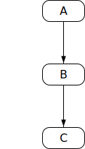

The document at https://tc39.es/ecma262/ is the most accurate and up-to-date ECMAScript specification. It contains the content of the most recent yearly snapshot plus any finished proposals (those that have reached Stage 4 in the proposal process and thus are implemented in several implementations and will be in the next practical revision) since that snapshot was taken.
This specification is developed on GitHub with the help of the ECMAScript community. There are a number of ways to contribute to the development of this specification:
Refer to the colophon for more information on how this document is created.
Introduction
This Ecma Standard defines the ECMAScript 2022 Language. It is the thirteenth edition of the ECMAScript Language Specification. Since publication of the first edition in 1997, ECMAScript has grown to be one of the world's most widely used general-purpose programming languages. It is best known as the language embedded in web browsers but has also been widely adopted for server and embedded applications.
ECMAScript is based on several originating technologies, the most well-known being JavaScript (Netscape) and JScript (Microsoft). The language was invented by Brendan Eich at Netscape and first appeared in that company's Navigator 2.0 browser. It has appeared in all subsequent browsers from Netscape and in all browsers from Microsoft starting with Internet Explorer 3.0.
The development of the ECMAScript Language Specification started in November 1996. The first edition of this Ecma Standard was adopted by the Ecma General Assembly of June 1997.
That Ecma Standard was submitted to ISO/IEC JTC 1 for adoption under the fast-track procedure, and approved as international standard ISO/IEC 16262, in April 1998. The Ecma General Assembly of June 1998 approved the second edition of ECMA-262 to keep it fully aligned with ISO/IEC 16262. Changes between the first and the second edition are editorial in nature.
The third edition of the Standard introduced powerful regular expressions, better string handling, new control statements, try/catch exception handling, tighter definition of errors, formatting for numeric output and minor changes in anticipation of future language growth. The third edition of the ECMAScript standard was adopted by the Ecma General Assembly of December 1999 and published as ISO/IEC 16262:2002 in June 2002.
After publication of the third edition, ECMAScript achieved massive adoption in conjunction with the World Wide Web where it has become the programming language that is supported by essentially all web browsers. Significant work was done to develop a fourth edition of ECMAScript. However, that work was not completed and not published as the fourth edition of ECMAScript but some of it was incorporated into the development of the sixth edition.
The fifth edition of ECMAScript (published as ECMA-262 5th edition) codified de facto interpretations of the language specification that have become common among browser implementations and added support for new features that had emerged since the publication of the third edition. Such features include accessor properties, reflective creation and inspection of objects, program control of property attributes, additional array manipulation functions, support for the JSON object encoding format, and a strict mode that provides enhanced error checking and program security. The fifth edition was adopted by the Ecma General Assembly of December 2009.
The fifth edition was submitted to ISO/IEC JTC 1 for adoption under the fast-track procedure, and approved as international standard ISO/IEC 16262:2011. Edition 5.1 of the ECMAScript Standard incorporated minor corrections and is the same text as ISO/IEC 16262:2011. The 5.1 Edition was adopted by the Ecma General Assembly of June 2011.
Focused development of the sixth edition started in 2009, as the fifth edition was being prepared for publication. However, this was preceded by significant experimentation and language enhancement design efforts dating to the publication of the third edition in 1999. In a very real sense, the completion of the sixth edition is the culmination of a fifteen year effort. The goals for this edition included providing better support for large applications, library creation, and for use of ECMAScript as a compilation target for other languages. Some of its major enhancements included modules, class declarations, lexical block scoping, iterators and generators, promises for asynchronous programming, destructuring patterns, and proper tail calls. The ECMAScript library of built-ins was expanded to support additional data abstractions including maps, sets, and arrays of binary numeric values as well as additional support for Unicode supplemental characters in strings and regular expressions. The built-ins were also made extensible via subclassing. The sixth edition provides the foundation for regular, incremental language and library enhancements. The sixth edition was adopted by the General Assembly of June 2015.
ECMAScript 2016 was the first ECMAScript edition released under Ecma TC39's new yearly release cadence and open development process. A plain-text source document was built from the ECMAScript 2015 source document to serve as the base for further development entirely on GitHub. Over the year of this standard's development, hundreds of pull requests and issues were filed representing thousands of bug fixes, editorial fixes and other improvements. Additionally, numerous software tools were developed to aid in this effort including Ecmarkup, Ecmarkdown, and Grammarkdown. ES2016 also included support for a new exponentiation operator and adds a new method to `Array.prototype` called `includes`.
ECMAScript 2017 introduced Async Functions, Shared Memory, and Atomics along with smaller language and library enhancements, bug fixes, and editorial updates. Async functions improve the asynchronous programming experience by providing syntax for promise-returning functions. Shared Memory and Atomics introduce a new memory model that allows multi-agent programs to communicate using atomic operations that ensure a well-defined execution order even on parallel CPUs. It also included new static methods on Object: `Object.values`, `Object.entries`, and `Object.getOwnPropertyDescriptors`.
ECMAScript 2018 introduced support for asynchronous iteration via the AsyncIterator protocol and async generators. It also included four new regular expression features: the `dotAll` flag, named capture groups, Unicode property escapes, and look-behind assertions. Lastly it included object rest and spread properties.
ECMAScript 2019 introduced a few new built-in functions: `flat` and `flatMap` on `Array.prototype` for flattening arrays, `Object.fromEntries` for directly turning the return value of `Object.entries` into a new Object, and `trimStart` and `trimEnd` on `String.prototype` as better-named alternatives to the widely implemented but non-standard `String.prototype.trimLeft` and `trimRight` built-ins. In addition, it included a few minor updates to syntax and semantics. Updated syntax included optional catch binding parameters and allowing U+2028 (LINE SEPARATOR) and U+2029 (PARAGRAPH SEPARATOR) in string literals to align with JSON. Other updates included requiring that `Array.prototype.sort` be a stable sort, requiring that `JSON.stringify` return well-formed UTF-8 regardless of input, and clarifying `Function.prototype.toString` by requiring that it either return the corresponding original source text or a standard placeholder.
ECMAScript 2020, the 11th edition, introduces the `matchAll` method for Strings, to produce an iterator for all match objects generated by a global regular expression; `import()`, a syntax to asynchronously import Modules with a dynamic specifier; `BigInt`, a new number primitive for working with arbitrary precision integers; `Promise.allSettled`, a new Promise combinator that does not short-circuit; `globalThis`, a universal way to access the global `this` value; dedicated `export * as ns from 'module'` syntax for use within modules; increased standardization of `for-in` enumeration order; `import.meta`, a host-populated object available in Modules that may contain contextual information about the Module; as well as adding two new syntax features to improve working with “nullish” values (`null` or `undefined`): nullish coalescing, a value selection operator; and optional chaining, a property access and function invocation operator that short-circuits if the value to access/invoke is nullish.
ECMAScript 2021, the 12th edition, introduces the `replaceAll` method for Strings; `Promise.any`, a Promise combinator that short-circuits when an input value is fulfilled; `AggregateError`, a new Error type to represent multiple errors at once; logical assignment operators (`??=`, `&&=`, `||=`); `WeakRef`, for referring to a target object without preserving it from garbage collection, and `FinalizationRegistry`, to manage registration and unregistration of cleanup operations performed when target objects are garbage collected; separators for numeric literals (`1_000`); and `Array.prototype.sort` was made more precise, reducing the amount of cases that result in an implementation-defined sort order.
Dozens of individuals representing many organizations have made very significant contributions within Ecma TC39 to the development of this edition and to the prior editions. In addition, a vibrant community has emerged supporting TC39's ECMAScript efforts. This community has reviewed numerous drafts, filed thousands of bug reports, performed implementation experiments, contributed test suites, and educated the world-wide developer community about ECMAScript. Unfortunately, it is impossible to identify and acknowledge every person and organization who has contributed to this effort.
Allen Wirfs-Brock
ECMA-262, Project Editor, 6th Edition
Brian Terlson
ECMA-262, Project Editor, 7th through 10th Editions
Jordan Harband
ECMA-262, Project Editor, 10th through 12th Editions
Scope
This Standard defines the ECMAScript 2022 general-purpose programming language.
Conformance
A conforming implementation of ECMAScript must provide and support all the types, values, objects, properties, functions, and program syntax and semantics described in this specification.
A conforming implementation of ECMAScript must interpret source text input in conformance with the latest version of the Unicode Standard and ISO/IEC 10646.
A conforming implementation of ECMAScript that provides an application programming interface (API) that supports programs that need to adapt to the linguistic and cultural conventions used by different human languages and countries must implement the interface defined by the most recent edition of ECMA-402 that is compatible with this specification.
A conforming implementation of ECMAScript may provide additional types, values, objects, properties, and functions beyond those described in this specification. In particular, a conforming implementation of ECMAScript may provide properties not described in this specification, and values for those properties, for objects that are described in this specification.
A conforming implementation of ECMAScript may support program and regular expression syntax not described in this specification. In particular, a conforming implementation of ECMAScript may support program syntax that makes use of any “future reserved words” noted in subclause of this specification.
A conforming implementation of ECMAScript must not implement any extension that is listed as a Forbidden Extension in subclause .
A conforming implementation of ECMAScript must not redefine any facilities that are not implementation-defined, implementation-approximated, or host-defined.
A conforming implementation of ECMAScript may choose to implement or not implement Normative Optional subclauses. If any Normative Optional behaviour is implemented, all of the behaviour in the containing Normative Optional clause must be implemented. A Normative Optional clause is denoted in this specification with the words "Normative Optional" in a coloured box, as shown below.
Example Normative Optional Clause Heading
Example clause contents.
A conforming implementation of ECMAScript must implement Legacy subclauses, unless they are also marked as Normative Optional. All of the language features and behaviours specified within Legacy subclauses have one or more undesirable characteristics. However, their continued usage in existing applications prevents their removal from this specification. These features are not considered part of the core ECMAScript language. Programmers should not use or assume the existence of these features and behaviours when writing new ECMAScript code.
Example Legacy Clause Heading
Example clause contents.
Example Legacy Normative Optional Clause Heading
Example clause contents.
Normative References
The following referenced documents are indispensable for the application of this document. For dated references, only the edition cited applies. For undated references, the latest edition of the referenced document (including any amendments) applies.
ISO/IEC 10646 Information Technology — Universal Multiple-Octet Coded Character Set (UCS) plus Amendment 1:2005, Amendment 2:2006, Amendment 3:2008, and Amendment 4:2008, plus additional amendments and corrigenda, or successor
This section contains a non-normative overview of the ECMAScript language.
ECMAScript is an object-oriented programming language for performing computations and manipulating computational objects within a host environment. ECMAScript as defined here is not intended to be computationally self-sufficient; indeed, there are no provisions in this specification for input of external data or output of computed results. Instead, it is expected that the computational environment of an ECMAScript program will provide not only the objects and other facilities described in this specification but also certain environment-specific objects, whose description and behaviour are beyond the scope of this specification except to indicate that they may provide certain properties that can be accessed and certain functions that can be called from an ECMAScript program.
ECMAScript was originally designed to be used as a scripting language, but has become widely used as a general-purpose programming language. A scripting language is a programming language that is used to manipulate, customize, and automate the facilities of an existing system. In such systems, useful functionality is already available through a user interface, and the scripting language is a mechanism for exposing that functionality to program control. In this way, the existing system is said to provide a host environment of objects and facilities, which completes the capabilities of the scripting language. A scripting language is intended for use by both professional and non-professional programmers.
ECMAScript was originally designed to be a Web scripting language, providing a mechanism to enliven Web pages in browsers and to perform server computation as part of a Web-based client-server architecture. ECMAScript is now used to provide core scripting capabilities for a variety of host environments. Therefore the core language is specified in this document apart from any particular host environment.
ECMAScript usage has moved beyond simple scripting and it is now used for the full spectrum of programming tasks in many different environments and scales. As the usage of ECMAScript has expanded, so have the features and facilities it provides. ECMAScript is now a fully featured general-purpose programming language.
Web Scripting
A web browser provides an ECMAScript host environment for client-side computation including, for instance, objects that represent windows, menus, pop-ups, dialog boxes, text areas, anchors, frames, history, cookies, and input/output. Further, the host environment provides a means to attach scripting code to events such as change of focus, page and image loading, unloading, error and abort, selection, form submission, and mouse actions. Scripting code appears within the HTML and the displayed page is a combination of user interface elements and fixed and computed text and images. The scripting code is reactive to user interaction, and there is no need for a main program.
A web server provides a different host environment for server-side computation including objects representing requests, clients, and files; and mechanisms to lock and share data. By using browser-side and server-side scripting together, it is possible to distribute computation between the client and server while providing a customized user interface for a Web-based application.
Each Web browser and server that supports ECMAScript supplies its own host environment, completing the ECMAScript execution environment.
Hosts and Implementations
To aid integrating ECMAScript into host environments, this specification defers the definition of certain facilities (e.g., abstract operations), either in whole or in part, to a source outside of this specification. Editorially, this specification distinguishes the following kinds of deferrals.
An implementation is an external source that further defines facilities enumerated in Annex or those that are marked as implementation-defined or implementation-approximated. In informal use, an implementation refers to a concrete artefact, such as a particular web browser.
An implementation-defined facility is one that defers its definition to an external source without further qualification. This specification does not make any recommendations for particular behaviours, and conforming implementations are free to choose any behaviour within the constraints put forth by this specification.
An implementation-approximated facility is one that defers its definition to an external source while recommending an ideal behaviour. While conforming implementations are free to choose any behaviour within the constraints put forth by this specification, they are encouraged to strive to approximate the ideal. Some mathematical operations, such as Math.exp, are implementation-approximated.
A host is an external source that further defines facilities listed in Annex but does not further define other implementation-defined or implementation-approximated facilities. In informal use, a host refers to the set of all implementations, such as the set of all web browsers, that interface with this specification in the same way via Annex . A host is often an external specification, such as WHATWG HTML (https://html.spec.whatwg.org/). In other words, facilities that are host-defined are often further defined in external specifications.
A host hook is an abstract operation that is defined in whole or in part by an external source. All host hooks must be listed in Annex . A host hook must conform to at least the following requirements:
It must return either a normal completion or a throw completion.
A host-defined facility is one that defers its definition to an external source without further qualification and is listed in Annex . Implementations that are not hosts may also provide definitions for host-defined facilities.
A host environment is a particular choice of definition for all host-defined facilities. A host environment typically includes objects or functions which allow obtaining input and providing output as host-defined properties of the global object.
This specification follows the editorial convention of always using the most specific term. For example, if a facility is host-defined, it should not be referred to as implementation-defined.
Both hosts and implementations may interface with this specification via the language types, specification types, abstract operations, grammar productions, intrinsic objects, and intrinsic symbols defined herein.
ECMAScript Overview
The following is an informal overview of ECMAScript—not all parts of the language are described. This overview is not part of the standard proper.
ECMAScript is object-based: basic language and host facilities are provided by objects, and an ECMAScript program is a cluster of communicating objects. In ECMAScript, an object is a collection of zero or more properties each with attributes that determine how each property can be used—for example, when the Writable attribute for a property is set to *false*, any attempt by executed ECMAScript code to assign a different value to the property fails. Properties are containers that hold other objects, primitive values, or functions. A primitive value is a member of one of the following built-in types: Undefined, Null, Boolean, Number, BigInt, String, and Symbol; an object is a member of the built-in type Object; and a function is a callable object. A function that is associated with an object via a property is called a method.
ECMAScript defines a collection of built-in objects that round out the definition of ECMAScript entities. These built-in objects include the global object; objects that are fundamental to the runtime semantics of the language including `Object`, `Function`, `Boolean`, `Symbol`, and various `Error` objects; objects that represent and manipulate numeric values including `Math`, `Number`, and `Date`; the text processing objects `String` and `RegExp`; objects that are indexed collections of values including `Array` and nine different kinds of Typed Arrays whose elements all have a specific numeric data representation; keyed collections including `Map` and `Set` objects; objects supporting structured data including the `JSON` object, `ArrayBuffer`, `SharedArrayBuffer`, and `DataView`; objects supporting control abstractions including generator functions and `Promise` objects; and reflection objects including `Proxy` and `Reflect`.
ECMAScript also defines a set of built-in operators. ECMAScript operators include various unary operations, multiplicative operators, additive operators, bitwise shift operators, relational operators, equality operators, binary bitwise operators, binary logical operators, assignment operators, and the comma operator.
Large ECMAScript programs are supported by modules which allow a program to be divided into multiple sequences of statements and declarations. Each module explicitly identifies declarations it uses that need to be provided by other modules and which of its declarations are available for use by other modules.
ECMAScript syntax intentionally resembles Java syntax. ECMAScript syntax is relaxed to enable it to serve as an easy-to-use scripting language. For example, a variable is not required to have its type declared nor are types associated with properties, and defined functions are not required to have their declarations appear textually before calls to them.
Objects
Even though ECMAScript includes syntax for class definitions, ECMAScript objects are not fundamentally class-based such as those in C++, Smalltalk, or Java. Instead objects may be created in various ways including via a literal notation or via constructors which create objects and then execute code that initializes all or part of them by assigning initial values to their properties. Each constructor is a function that has a property named *"prototype"* that is used to implement prototype-based inheritance and shared properties. Objects are created by using constructors in new expressions; for example, `new Date(2009, 11)` creates a new Date object. Invoking a constructor without using new has consequences that depend on the constructor. For example, `Date()` produces a string representation of the current date and time rather than an object.
Every object created by a constructor has an implicit reference (called the object's prototype) to the value of its constructor's *"prototype"* property. Furthermore, a prototype may have a non-null implicit reference to its prototype, and so on; this is called the prototype chain. When a reference is made to a property in an object, that reference is to the property of that name in the first object in the prototype chain that contains a property of that name. In other words, first the object mentioned directly is examined for such a property; if that object contains the named property, that is the property to which the reference refers; if that object does not contain the named property, the prototype for that object is examined next; and so on.
In a class-based object-oriented language, in general, state is carried by instances, methods are carried by classes, and inheritance is only of structure and behaviour. In ECMAScript, the state and methods are carried by objects, while structure, behaviour, and state are all inherited.
All objects that do not directly contain a particular property that their prototype contains share that property and its value. Figure 1 illustrates this:
CF is a constructor (and also an object). Five objects have been created by using `new` expressions: cf1, cf2, cf3, cf4, and cf5. Each of these objects contains properties named *"q1"* and *"q2"*. The dashed lines represent the implicit prototype relationship; so, for example, cf3's prototype is CFp. The constructor, CF, has two properties itself, named *"P1"* and *"P2"*, which are not visible to CFp, cf1, cf2, cf3, cf4, or cf5. The property named *"CFP1"* in CFp is shared by cf1, cf2, cf3, cf4, and cf5 (but not by CF), as are any properties found in CFp's implicit prototype chain that are not named *"q1"*, *"q2"*, or *"CFP1"*. Notice that there is no implicit prototype link between CF and CFp.
Unlike most class-based object languages, properties can be added to objects dynamically by assigning values to them. That is, constructors are not required to name or assign values to all or any of the constructed object's properties. In the above diagram, one could add a new shared property for cf1, cf2, cf3, cf4, and cf5 by assigning a new value to the property in CFp.
Although ECMAScript objects are not inherently class-based, it is often convenient to define class-like abstractions based upon a common pattern of constructor functions, prototype objects, and methods. The ECMAScript built-in objects themselves follow such a class-like pattern. Beginning with ECMAScript 2015, the ECMAScript language includes syntactic class definitions that permit programmers to concisely define objects that conform to the same class-like abstraction pattern used by the built-in objects.
The Strict Variant of ECMAScript
The ECMAScript Language recognizes the possibility that some users of the language may wish to restrict their usage of some features available in the language. They might do so in the interests of security, to avoid what they consider to be error-prone features, to get enhanced error checking, or for other reasons of their choosing. In support of this possibility, ECMAScript defines a strict variant of the language. The strict variant of the language excludes some specific syntactic and semantic features of the regular ECMAScript language and modifies the detailed semantics of some features. The strict variant also specifies additional error conditions that must be reported by throwing error exceptions in situations that are not specified as errors by the non-strict form of the language.
The strict variant of ECMAScript is commonly referred to as the strict mode of the language. Strict mode selection and use of the strict mode syntax and semantics of ECMAScript is explicitly made at the level of individual ECMAScript source text units as described in . Because strict mode is selected at the level of a syntactic source text unit, strict mode only imposes restrictions that have local effect within such a source text unit. Strict mode does not restrict or modify any aspect of the ECMAScript semantics that must operate consistently across multiple source text units. A complete ECMAScript program may be composed of both strict mode and non-strict mode ECMAScript source text units. In this case, strict mode only applies when actually executing code that is defined within a strict mode source text unit.
In order to conform to this specification, an ECMAScript implementation must implement both the full unrestricted ECMAScript language and the strict variant of the ECMAScript language as defined by this specification. In addition, an implementation must support the combination of unrestricted and strict mode source text units into a single composite program.
Terms and Definitions
For the purposes of this document, the following terms and definitions apply.
implementation-approximated
an implementation-approximated facility is defined in whole or in part by an external source but has a recommended, ideal behaviour in this specification
implementation-defined
an implementation-defined facility is defined in whole or in part by an external source to this specification
host-defined
same as implementation-defined
Editorially, see clause .
type
set of data values as defined in clause
primitive value
member of one of the types Undefined, Null, Boolean, Number, BigInt, Symbol, or String as defined in clause
A primitive value is a datum that is represented directly at the lowest level of the language implementation.
object
member of the type Object
An object is a collection of properties and has a single prototype object. The prototype may be the null value.
constructor
function object that creates and initializes objects
The value of a constructor's *"prototype"* property is a prototype object that is used to implement inheritance and shared properties.
prototype
object that provides shared properties for other objects
When a constructor creates an object, that object implicitly references the constructor's *"prototype"* property for the purpose of resolving property references. The constructor's *"prototype"* property can be referenced by the program expression constructor.prototype, and properties added to an object's prototype are shared, through inheritance, by all objects sharing the prototype. Alternatively, a new object may be created with an explicitly specified prototype by using the `Object.create` built-in function.
ordinary object
object that has the default behaviour for the essential internal methods that must be supported by all objects
exotic object
object that does not have the default behaviour for one or more of the essential internal methods
Any object that is not an ordinary object is an exotic object.
standard object
object whose semantics are defined by this specification
built-in object
object specified and supplied by an ECMAScript implementation
Standard built-in objects are defined in this specification. An ECMAScript implementation may specify and supply additional kinds of built-in objects. A built-in constructor is a built-in object that is also a constructor.
undefined value
primitive value used when a variable has not been assigned a value
Undefined type
type whose sole value is the *undefined* value
null value
primitive value that represents the intentional absence of any object value
Null type
type whose sole value is the *null* value
Boolean value
member of the Boolean type
There are only two Boolean values, *true* and *false*.
Boolean type
type consisting of the primitive values *true* and *false*
Boolean object
member of the Object type that is an instance of the standard built-in Boolean constructor
A Boolean object is created by using the Boolean constructor in a `new` expression, supplying a Boolean value as an argument. The resulting object has an internal slot whose value is the Boolean value. A Boolean object can be coerced to a Boolean value.
String value
primitive value that is a finite ordered sequence of zero or more 16-bit unsigned integer values
A String value is a member of the String type. Each integer value in the sequence usually represents a single 16-bit unit of UTF-16 text. However, ECMAScript does not place any restrictions or requirements on the values except that they must be 16-bit unsigned integers.
String type
set of all possible String values
String object
member of the Object type that is an instance of the standard built-in String constructor
A String object is created by using the String constructor in a `new` expression, supplying a String value as an argument. The resulting object has an internal slot whose value is the String value. A String object can be coerced to a String value by calling the String constructor as a function ().
Number value
primitive value corresponding to a double-precision 64-bit binary format IEEE 754-2019 value
A Number value is a member of the Number type and is a direct representation of a number.
Number type
set of all possible Number values including the special “Not-a-Number” (NaN) value, positive infinity, and negative infinity
Number object
member of the Object type that is an instance of the standard built-in Number constructor
A Number object is created by using the Number constructor in a `new` expression, supplying a Number value as an argument. The resulting object has an internal slot whose value is the Number value. A Number object can be coerced to a Number value by calling the Number constructor as a function ().
Infinity
Number value that is the positive infinite Number value
NaN
Number value that is an IEEE 754-2019 “Not-a-Number” value
BigInt value
primitive value corresponding to an arbitrary-precision integer value
BigInt type
set of all possible BigInt values
BigInt object
member of the Object type that is an instance of the standard built-in BigInt constructor
Symbol value
primitive value that represents a unique, non-String Object property key
Symbol type
set of all possible Symbol values
Symbol object
member of the Object type that is an instance of the standard built-in Symbol constructor
function
member of the Object type that may be invoked as a subroutine
In addition to its properties, a function contains executable code and state that determine how it behaves when invoked. A function's code may or may not be written in ECMAScript.
built-in function
built-in object that is a function
Examples of built-in functions include `parseInt` and `Math.exp`. A host or implementation may provide additional built-in functions that are not described in this specification.
property
part of an object that associates a key (either a String value or a Symbol value) and a value
Depending upon the form of the property the value may be represented either directly as a data value (a primitive value, an object, or a function object) or indirectly by a pair of accessor functions.
method
function that is the value of a property
When a function is called as a method of an object, the object is passed to the function as its *this* value.
built-in method
method that is a built-in function
Standard built-in methods are defined in this specification. A host or implementation may provide additional built-in methods that are not described in this specification.
attribute
internal value that defines some characteristic of a property
own property
property that is directly contained by its object
inherited property
property of an object that is not an own property but is a property (either own or inherited) of the object's prototype
Organization of This Specification
The remainder of this specification is organized as follows:
Clause defines the notational conventions used throughout the specification.
Clauses through define the execution environment within which ECMAScript programs operate.
Clauses through define the actual ECMAScript programming language including its syntactic encoding and the execution semantics of all language features.
Clauses through define the ECMAScript standard library. They include the definitions of all of the standard objects that are available for use by ECMAScript programs as they execute.
Clause describes the memory consistency model of accesses on SharedArrayBuffer-backed memory and methods of the Atomics object.
Notational Conventions
Syntactic and Lexical Grammars
Context-Free Grammars
A context-free grammar consists of a number of productions. Each production has an abstract symbol called a nonterminal as its left-hand side, and a sequence of zero or more nonterminal and terminal symbols as its right-hand side. For each grammar, the terminal symbols are drawn from a specified alphabet.
A chain production is a production that has exactly one nonterminal symbol on its right-hand side along with zero or more terminal symbols.
Starting from a sentence consisting of a single distinguished nonterminal, called the goal symbol, a given context-free grammar specifies a language, namely, the (perhaps infinite) set of possible sequences of terminal symbols that can result from repeatedly replacing any nonterminal in the sequence with a right-hand side of a production for which the nonterminal is the left-hand side.
The Lexical and RegExp Grammars
A lexical grammar for ECMAScript is given in clause . This grammar has as its terminal symbols Unicode code points that conform to the rules for |SourceCharacter| defined in . It defines a set of productions, starting from the goal symbol |InputElementDiv|, |InputElementTemplateTail|, or |InputElementRegExp|, or |InputElementRegExpOrTemplateTail|, that describe how sequences of such code points are translated into a sequence of input elements.
Input elements other than white space and comments form the terminal symbols for the syntactic grammar for ECMAScript and are called ECMAScript tokens. These tokens are the reserved words, identifiers, literals, and punctuators of the ECMAScript language. Moreover, line terminators, although not considered to be tokens, also become part of the stream of input elements and guide the process of automatic semicolon insertion (). Simple white space and single-line comments are discarded and do not appear in the stream of input elements for the syntactic grammar. A |MultiLineComment| (that is, a comment of the form `/*`…`*/` regardless of whether it spans more than one line) is likewise simply discarded if it contains no line terminator; but if a |MultiLineComment| contains one or more line terminators, then it is replaced by a single line terminator, which becomes part of the stream of input elements for the syntactic grammar.
A RegExp grammar for ECMAScript is given in . This grammar also has as its terminal symbols the code points as defined by |SourceCharacter|. It defines a set of productions, starting from the goal symbol |Pattern|, that describe how sequences of code points are translated into regular expression patterns.
Productions of the lexical and RegExp grammars are distinguished by having two colons “::” as separating punctuation. The lexical and RegExp grammars share some productions.
The Numeric String Grammar
Another grammar is used for translating Strings into numeric values. This grammar is similar to the part of the lexical grammar having to do with numeric literals and has as its terminal symbols |SourceCharacter|. This grammar appears in .
Productions of the numeric string grammar are distinguished by having three colons “:::” as punctuation.
The Syntactic Grammar
The syntactic grammar for ECMAScript is given in clauses through . This grammar has ECMAScript tokens defined by the lexical grammar as its terminal symbols (). It defines a set of productions, starting from two alternative goal symbols |Script| and |Module|, that describe how sequences of tokens form syntactically correct independent components of ECMAScript programs.
When a stream of code points is to be parsed as an ECMAScript |Script| or |Module|, it is first converted to a stream of input elements by repeated application of the lexical grammar; this stream of input elements is then parsed by a single application of the syntactic grammar. The input stream is syntactically in error if the tokens in the stream of input elements cannot be parsed as a single instance of the goal nonterminal (|Script| or |Module|), with no tokens left over.
When a parse is successful, it constructs a parse tree, a rooted tree structure in which each node is a Parse Node. Each Parse Node is an instance of a symbol in the grammar; it represents a span of the source text that can be derived from that symbol. The root node of the parse tree, representing the whole of the source text, is an instance of the parse's goal symbol. When a Parse Node is an instance of a nonterminal, it is also an instance of some production that has that nonterminal as its left-hand side. Moreover, it has zero or more children, one for each symbol on the production's right-hand side: each child is a Parse Node that is an instance of the corresponding symbol.
New Parse Nodes are instantiated for each invocation of the parser and never reused between parses even of identical source text. Parse Nodes are considered the same Parse Node if and only if they represent the same span of source text, are instances of the same grammar symbol, and resulted from the same parser invocation.
Parsing the same String multiple times will lead to different Parse Nodes. For example, consider:
let str = "1 + 1;";
eval(str);
eval(str);
Each call to `eval` converts the value of `str` into ECMAScript source text and performs an independent parse that creates its own separate tree of Parse Nodes. The trees are distinct even though each parse operates upon a source text that was derived from the same String value.
Parse Nodes are specification artefacts, and implementations are not required to use an analogous data structure.
Productions of the syntactic grammar are distinguished by having just one colon “:” as punctuation.
The syntactic grammar as presented in clauses through is not a complete account of which token sequences are accepted as a correct ECMAScript |Script| or |Module|. Certain additional token sequences are also accepted, namely, those that would be described by the grammar if only semicolons were added to the sequence in certain places (such as before line terminator characters). Furthermore, certain token sequences that are described by the grammar are not considered acceptable if a line terminator character appears in certain “awkward” places.
In certain cases, in order to avoid ambiguities, the syntactic grammar uses generalized productions that permit token sequences that do not form a valid ECMAScript |Script| or |Module|. For example, this technique is used for object literals and object destructuring patterns. In such cases a more restrictive supplemental grammar is provided that further restricts the acceptable token sequences. Typically, an early error rule will then state that, in certain contexts, "_P_ must cover an _N_", where _P_ is a Parse Node (an instance of the generalized production) and _N_ is a nonterminal from the supplemental grammar. This means:
The sequence of tokens originally matched by _P_ is parsed again using _N_ as the goal symbol. If _N_ takes grammatical parameters, then they are set to the same values used when _P_ was originally parsed.
If the sequence of tokens can be parsed as a single instance of _N_, with no tokens left over, then:
We refer to that instance of _N_ (a Parse Node, unique for a given _P_) as "the _N_ that is covered by _P_".
All Early Error rules for _N_ and its derived productions also apply to the _N_ that is covered by _P_.
Otherwise (if the parse fails), it is an early Syntax Error.
Grammar Notation
In the ECMAScript grammars, some terminal symbols are shown in `fixed-width` font. These are to appear in a source text exactly as written. All terminal symbol code points specified in this way are to be understood as the appropriate Unicode code points from the Basic Latin range, as opposed to any similar-looking code points from other Unicode ranges. A code point in a terminal symbol cannot be expressed by a `\\` |UnicodeEscapeSequence|.
In grammars whose terminal symbols are individual Unicode code points (i.e., the lexical, RegExp, and numeric string grammars), a contiguous run of multiple fixed-width code points appearing in a production is a simple shorthand for the same sequence of code points, written as standalone terminal symbols.
For example, the production:
HexIntegerLiteral :: `0x` HexDigits
is a shorthand for:
HexIntegerLiteral :: `0` `x` HexDigits
In contrast, in the syntactic grammar, a contiguous run of fixed-width code points is a single terminal symbol.
Terminal symbols come in two other forms:
In the lexical and RegExp grammars, Unicode code points without a conventional printed representation are instead shown in the form "<ABBREV>" where "ABBREV" is a mnemonic for the code point. These forms are defined in and .
In the syntactic grammar, certain terminal symbols (e.g. |IdentifierName| and |RegularExpressionLiteral|) are shown in italics, as they refer to the nonterminals of the same name in the lexical grammar.
Nonterminal symbols are shown in italic type. The definition of a nonterminal (also called a “production”) is introduced by the name of the nonterminal being defined followed by one or more colons. (The number of colons indicates to which grammar the production belongs.) One or more alternative right-hand sides for the nonterminal then follow on succeeding lines. For example, the syntactic definition:
states that the nonterminal |WhileStatement| represents the token `while`, followed by a left parenthesis token, followed by an |Expression|, followed by a right parenthesis token, followed by a |Statement|. The occurrences of |Expression| and |Statement| are themselves nonterminals. As another example, the syntactic definition:
states that an |ArgumentList| may represent either a single |AssignmentExpression| or an |ArgumentList|, followed by a comma, followed by an |AssignmentExpression|. This definition of |ArgumentList| is recursive, that is, it is defined in terms of itself. The result is that an |ArgumentList| may contain any positive number of arguments, separated by commas, where each argument expression is an |AssignmentExpression|. Such recursive definitions of nonterminals are common.
The subscripted suffix “opt”, which may appear after a terminal or nonterminal, indicates an optional symbol. The alternative containing the optional symbol actually specifies two right-hand sides, one that omits the optional element and one that includes it. This means that:
so, in this example, the nonterminal |ForStatement| actually has four alternative right-hand sides.
A production may be parameterized by a subscripted annotation of the form “[parameters]”, which may appear as a suffix to the nonterminal symbol defined by the production. “parameters” may be either a single name or a comma separated list of names. A parameterized production is shorthand for a set of productions defining all combinations of the parameter names, preceded by an underscore, appended to the parameterized nonterminal symbol. This means that:
Prefixing a parameter name with “?” on a right-hand side nonterminal reference makes that parameter value dependent upon the occurrence of the parameter name on the reference to the current production's left-hand side symbol. For example:
If a right-hand side alternative is prefixed with “[+parameter]” that alternative is only available if the named parameter was used in referencing the production's nonterminal symbol. If a right-hand side alternative is prefixed with “[\~parameter]” that alternative is only available if the named parameter was not used in referencing the production's nonterminal symbol. This means that:
When the words “one of” follow the colon(s) in a grammar definition, they signify that each of the terminal symbols on the following line or lines is an alternative definition. For example, the lexical grammar for ECMAScript contains the production:
NonZeroDigit :: one of
`1` `2` `3` `4` `5` `6` `7` `8` `9`
If the phrase “[empty]” appears as the right-hand side of a production, it indicates that the production's right-hand side contains no terminals or nonterminals.
If the phrase “[lookahead = _seq_]” appears in the right-hand side of a production, it indicates that the production may only be used if the token sequence _seq_ is a prefix of the immediately following input token sequence. Similarly, “[lookahead ∈ _set_]”, where _set_ is a finite nonempty set of token sequences, indicates that the production may only be used if some element of _set_ is a prefix of the immediately following token sequence. For convenience, the set can also be written as a nonterminal, in which case it represents the set of all token sequences to which that nonterminal could expand. It is considered an editorial error if the nonterminal could expand to infinitely many distinct token sequences.
These conditions may be negated. “[lookahead ≠ _seq_]” indicates that the containing production may only be used if _seq_ is not a prefix of the immediately following input token sequence, and “[lookahead ∉ _set_]” indicates that the production may only be used if no element of _set_ is a prefix of the immediately following token sequence.
As an example, given the definitions:
DecimalDigit :: one of
`0` `1` `2` `3` `4` `5` `6` `7` `8` `9`
DecimalDigits ::
DecimalDigit
DecimalDigits DecimalDigit
matches either the letter `n` followed by one or more decimal digits the first of which is even, or a decimal digit not followed by another decimal digit.
Note that when these phrases are used in the syntactic grammar, it may not be possible to unambiguously identify the immediately following token sequence because determining later tokens requires knowing which lexical goal symbol to use at later positions. As such, when these are used in the syntactic grammar, it is considered an editorial error for a token sequence _seq_ to appear in a lookahead restriction (including as part of a set of sequences) if the choices of lexical goal symbols to use could change whether or not _seq_ would be a prefix of the resulting token sequence.
If the phrase “[no |LineTerminator| here]” appears in the right-hand side of a production of the syntactic grammar, it indicates that the production is a restricted production: it may not be used if a |LineTerminator| occurs in the input stream at the indicated position. For example, the production:
indicates that the production may not be used if a |LineTerminator| occurs in the script between the `throw` token and the |Expression|.
Unless the presence of a |LineTerminator| is forbidden by a restricted production, any number of occurrences of |LineTerminator| may appear between any two consecutive tokens in the stream of input elements without affecting the syntactic acceptability of the script.
The right-hand side of a production may specify that certain expansions are not permitted by using the phrase “but not” and then indicating the expansions to be excluded. For example, the production:
Identifier ::
IdentifierName but not ReservedWord
means that the nonterminal |Identifier| may be replaced by any sequence of code points that could replace |IdentifierName| provided that the same sequence of code points could not replace |ReservedWord|.
Finally, a few nonterminal symbols are described by a descriptive phrase in sans-serif type in cases where it would be impractical to list all the alternatives:
SourceCharacter ::
> any Unicode code point
Algorithm Conventions
The specification often uses a numbered list to specify steps in an algorithm. These algorithms are used to precisely specify the required semantics of ECMAScript language constructs. The algorithms are not intended to imply the use of any specific implementation technique. In practice, there may be more efficient algorithms available to implement a given feature.
Algorithms may be explicitly parameterized with an ordered, comma-separated sequence of alias names which may be used within the algorithm steps to reference the argument passed in that position. Optional parameters are denoted with surrounding brackets ([ , _name_ ]) and are no different from required parameters within algorithm steps. A rest parameter may appear at the end of a parameter list, denoted with leading ellipsis (, ..._name_). The rest parameter captures all of the arguments provided following the required and optional parameters into a List. If there are no such additional arguments, that List is empty.
Algorithm steps may be subdivided into sequential substeps. Substeps are indented and may themselves be further divided into indented substeps. Outline numbering conventions are used to identify substeps with the first level of substeps labelled with lowercase alphabetic characters and the second level of substeps labelled with lowercase roman numerals. If more than three levels are required these rules repeat with the fourth level using numeric labels. For example:
A step or substep may be written as an “if” predicate that conditions its substeps. In this case, the substeps are only applied if the predicate is true. If a step or substep begins with the word “else”, it is a predicate that is the negation of the preceding “if” predicate step at the same level.
A step may specify the iterative application of its substeps.
A step that begins with “Assert:” asserts an invariant condition of its algorithm. Such assertions are used to make explicit algorithmic invariants that would otherwise be implicit. Such assertions add no additional semantic requirements and hence need not be checked by an implementation. They are used simply to clarify algorithms.
Algorithm steps may declare named aliases for any value using the form “Let _x_ be _someValue_”. These aliases are reference-like in that both _x_ and _someValue_ refer to the same underlying data and modifications to either are visible to both. Algorithm steps that want to avoid this reference-like behaviour should explicitly make a copy of the right-hand side: “Let _x_ be a copy of _someValue_” creates a shallow copy of _someValue_.
Once declared, an alias may be referenced in any subsequent steps and must not be referenced from steps prior to the alias's declaration. Aliases may be modified using the form “Set _x_ to _someOtherValue_”.
Abstract Operations
In order to facilitate their use in multiple parts of this specification, some algorithms, called abstract operations, are named and written in parameterized functional form so that they may be referenced by name from within other algorithms. Abstract operations are typically referenced using a functional application style such as OperationName(_arg1_, _arg2_). Some abstract operations are treated as polymorphically dispatched methods of class-like specification abstractions. Such method-like abstract operations are typically referenced using a method application style such as _someValue_.OperationName(_arg1_, _arg2_).
Syntax-Directed Operations
A syntax-directed operation is a named operation whose definition consists of algorithms, each of which is associated with one or more productions from one of the ECMAScript grammars. A production that has multiple alternative definitions will typically have a distinct algorithm for each alternative. When an algorithm is associated with a grammar production, it may reference the terminal and nonterminal symbols of the production alternative as if they were parameters of the algorithm. When used in this manner, nonterminal symbols refer to the actual alternative definition that is matched when parsing the source text. The source text matched by a grammar production or Parse Node derived from it is the portion of the source text that starts at the beginning of the first terminal that participated in the match and ends at the end of the last terminal that participated in the match.
When an algorithm is associated with a production alternative, the alternative is typically shown without any “[ ]” grammar annotations. Such annotations should only affect the syntactic recognition of the alternative and have no effect on the associated semantics for the alternative.
Syntax-directed operations are invoked with a parse node and, optionally, other parameters by using the conventions on steps , , and in the following algorithm:
1. [id="step-sdo-invocation-example-1"] Let _status_ be SyntaxDirectedOperation of |SomeNonTerminal|.
1. Let _someParseNode_ be the parse of some source text.
1. [id="step-sdo-invocation-example-2"] Perform SyntaxDirectedOperation of _someParseNode_.
1. [id="step-sdo-invocation-example-3"] Perform SyntaxDirectedOperation of _someParseNode_ with argument *"value"*.
Unless explicitly specified otherwise, all chain productions have an implicit definition for every operation that might be applied to that production's left-hand side nonterminal. The implicit definition simply reapplies the same operation with the same parameters, if any, to the chain production's sole right-hand side nonterminal and then returns the result. For example, assume that some algorithm has a step of the form: “Return the result of evaluating |Block|” and that there is a production:
Block :
`{` StatementList `}`
but the Evaluation operation does not associate an algorithm with that production. In that case, the Evaluation operation implicitly includes an association of the form:
Runtime Semantics: Evaluation
Block : `{` StatementList `}`
1. Return the result of evaluating |StatementList|.
Runtime Semantics
Algorithms which specify semantics that must be called at runtime are called runtime semantics. Runtime semantics are defined by abstract operations or syntax-directed operations.
Completion (
_completionRecord_: a Completion Record,
): a Completion Record
description
It is used to emphasize that a Completion Record is being returned.
1. Assert: _completionRecord_ is a Completion Record.
1. Return _completionRecord_.
Throw an Exception
Algorithms steps that say to throw an exception, such as
1. Throw a *TypeError* exception.
mean the same things as:
1. Return ThrowCompletion(a newly created *TypeError* object).
ReturnIfAbrupt
Algorithms steps that say or are otherwise equivalent to:
1. ReturnIfAbrupt(_argument_).
mean the same thing as:
1. If _argument_ is an abrupt completion, return _argument_.
1. Else if _argument_ is a Completion Record, set _argument_ to _argument_.[[Value]].
Algorithms steps that say or are otherwise equivalent to:
1. ReturnIfAbrupt(AbstractOperation()).
mean the same thing as:
1. Let _hygienicTemp_ be AbstractOperation().
1. If _hygienicTemp_ is an abrupt completion, return _hygienicTemp_.
1. Else if _hygienicTemp_ is a Completion Record, set _hygienicTemp_ to _hygienicTemp_.[[Value]].
Where _hygienicTemp_ is ephemeral and visible only in the steps pertaining to ReturnIfAbrupt.
Algorithms steps that say or are otherwise equivalent to:
1. Let _result_ be AbstractOperation(ReturnIfAbrupt(_argument_)).
mean the same thing as:
1. If _argument_ is an abrupt completion, return _argument_.
1. If _argument_ is a Completion Record, set _argument_ to _argument_.[[Value]].
1. Let _result_ be AbstractOperation(_argument_).
ReturnIfAbrupt Shorthands
Invocations of abstract operations and syntax-directed operations that are prefixed by `?` indicate that ReturnIfAbrupt should be applied to the resulting Completion Record. For example, the step:
1. ? OperationName().
is equivalent to the following step:
1. ReturnIfAbrupt(OperationName()).
Similarly, for method application style, the step:
1. ? _someValue_.OperationName().
is equivalent to:
1. ReturnIfAbrupt(_someValue_.OperationName()).
Similarly, prefix `!` is used to indicate that the following invocation of an abstract or syntax-directed operation will never return an abrupt completion and that the resulting Completion Record's [[Value]] field should be used in place of the return value of the operation. For example, the step:
1. Let _val_ be ! OperationName().
is equivalent to the following steps:
1. Let _val_ be OperationName().
1. Assert: _val_ is never an abrupt completion.
1. If _val_ is a Completion Record, set _val_ to _val_.[[Value]].
Syntax-directed operations for runtime semantics make use of this shorthand by placing `!` or `?` before the invocation of the operation:
1. Perform ! SyntaxDirectedOperation of |NonTerminal|.
Static Semantics
Context-free grammars are not sufficiently powerful to express all the rules that define whether a stream of input elements form a valid ECMAScript |Script| or |Module| that may be evaluated. In some situations additional rules are needed that may be expressed using either ECMAScript algorithm conventions or prose requirements. Such rules are always associated with a production of a grammar and are called the static semantics of the production.
Static Semantic Rules have names and typically are defined using an algorithm. Named Static Semantic Rules are associated with grammar productions and a production that has multiple alternative definitions will typically have for each alternative a distinct algorithm for each applicable named static semantic rule.
A special kind of static semantic rule is an Early Error Rule. Early error rules define early error conditions (see clause ) that are associated with specific grammar productions. Evaluation of most early error rules are not explicitly invoked within the algorithms of this specification. A conforming implementation must, prior to the first evaluation of a |Script| or |Module|, validate all of the early error rules of the productions used to parse that |Script| or |Module|. If any of the early error rules are violated the |Script| or |Module| is invalid and cannot be evaluated.
Mathematical Operations
This specification makes reference to these kinds of numeric values:
Mathematical values: Arbitrary real numbers, used as the default numeric type.
Extended mathematical values: Mathematical values together with +∞ and -∞.
Numbers: IEEE 754-2019 double-precision floating point values.
BigInts: ECMAScript language values representing arbitrary integers in a one-to-one correspondence.
In the language of this specification, numerical values are distinguished among different numeric kinds using subscript suffixes. The subscript refers to Numbers, and the subscript refers to BigInts. Numeric values without a subscript suffix refer to mathematical values.
Numeric operators such as +, ×, =, and ≥ refer to those operations as determined by the type of the operands. When applied to mathematical values, the operators refer to the usual mathematical operations. When applied to extended mathematical values, the operators refer to the usual mathematical operations over the extended real numbers; indeterminate forms are not defined and their use in this specification should be considered an editorial error. When applied to Numbers, the operators refer to the relevant operations within IEEE 754-2019. When applied to BigInts, the operators refer to the usual mathematical operations applied to the mathematical value of the BigInt.
In general, when this specification refers to a numerical value, such as in the phrase, "the length of _y_" or "the integer represented by the four hexadecimal digits ...", without explicitly specifying a numeric kind, the phrase refers to a mathematical value. Phrases which refer to a Number or a BigInt value are explicitly annotated as such; for example, "the Number value for the number of code points in …" or "the BigInt value for …".
Numeric operators applied to mixed-type operands (such as a Number and a mathematical value) are not defined and should be considered an editorial error in this specification.
This specification denotes most numeric values in base 10; it also uses numeric values of the form 0x followed by digits 0-9 or A-F as base-16 values.
When the term integer is used in this specification, it refers to a mathematical value which is in the set of integers, unless otherwise stated. When the term integral Number is used in this specification, it refers to a Number value whose mathematical value is in the set of integers.
Conversions between mathematical values and Numbers or BigInts are always explicit in this document. A conversion from a mathematical value or extended mathematical value _x_ to a Number is denoted as "the Number value for _x_" or (_x_), and is defined in . A conversion from an integer _x_ to a BigInt is denoted as "the BigInt value for _x_" or (_x_). A conversion from a Number or BigInt _x_ to a mathematical value is denoted as "the mathematical value of _x_", or (_x_). The mathematical value of *+0* and *-0* is the mathematical value 0. The mathematical value of non-finite values is not defined. The extended mathematical value of _x_ is the mathematical value of _x_ for finite values, and is +∞ and -∞ for *+∞* and *-∞* respectively; it is not defined for *NaN*.
The mathematical function abs(_x_) produces the absolute value of _x_, which is -_x_ if _x_ < 0 and otherwise is _x_ itself.
The mathematical function min(_x1_, _x2_, … , _xN_) produces the mathematically smallest of _x1_ through _xN_. The mathematical function max(_x1_, _x2_, ..., _xN_) produces the mathematically largest of _x1_ through _xN_. The domain and range of these mathematical functions are the extended mathematical values.
The notation “_x_ modulo _y_” (_y_ must be finite and non-zero) computes a value _k_ of the same sign as _y_ (or zero) such that abs(_k_) < abs(_y_) and _x_ - _k_ = _q_ × _y_ for some integer _q_.
The phrase "the result of clamping _x_ between _lower_ and _upper_" (where _x_ is an extended mathematical value and _lower_ and _upper_ are mathematical values such that _lower_ ≤ _upper_) produces _lower_ if _x_ < _lower_, produces _upper_ if _x_ > _upper_, and otherwise produces _x_.
The mathematical function floor(_x_) produces the largest integer (closest to +∞) that is not larger than _x_.
Mathematical functions min, max, abs, and floor are not defined for Numbers and BigInts, and any usage of those methods that have non-mathematical value arguments would be an editorial error in this specification.
floor(_x_) = _x_ - (_x_ modulo 1).
Value Notation
In this specification, ECMAScript language values are displayed in *bold*. Examples include *null*, *true*, or *"hello"*. These are distinguished from longer ECMAScript code sequences such as `Function.prototype.apply` or `let n = 42;`.
Values which are internal to the specification and not directly observable from ECMAScript code are indicated with a ~sans-serif~ typeface. For instance, a Completion Record's [[Type]] field takes on values like ~normal~, ~return~, or ~throw~.
ECMAScript Data Types and Values
Algorithms within this specification manipulate values each of which has an associated type. The possible value types are exactly those defined in this clause. Types are further subclassified into ECMAScript language types and specification types.
Within this specification, the notation “Type(_x_)” is used as shorthand for “the type of _x_” where “type” refers to the ECMAScript language and specification types defined in this clause. When the term “empty” is used as if it was naming a value, it is equivalent to saying “no value of any type”.
ECMAScript Language Types
An ECMAScript language type corresponds to values that are directly manipulated by an ECMAScript programmer using the ECMAScript language. The ECMAScript language types are Undefined, Null, Boolean, String, Symbol, Number, BigInt, and Object. An ECMAScript language value is a value that is characterized by an ECMAScript language type.
The Undefined Type
The Undefined type has exactly one value, called *undefined*. Any variable that has not been assigned a value has the value *undefined*.
The Null Type
The Null type has exactly one value, called *null*.
The Boolean Type
The Boolean type represents a logical entity having two values, called *true* and *false*.
The String Type
The String type is the set of all ordered sequences of zero or more 16-bit unsigned integer values (“elements”) up to a maximum length of 253 - 1 elements. The String type is generally used to represent textual data in a running ECMAScript program, in which case each element in the String is treated as a UTF-16 code unit value. Each element is regarded as occupying a position within the sequence. These positions are indexed with non-negative integers. The first element (if any) is at index 0, the next element (if any) at index 1, and so on. The length of a String is the number of elements (i.e., 16-bit values) within it. The empty String has length zero and therefore contains no elements.
ECMAScript operations that do not interpret String contents apply no further semantics. Operations that do interpret String values treat each element as a single UTF-16 code unit. However, ECMAScript does not restrict the value of or relationships between these code units, so operations that further interpret String contents as sequences of Unicode code points encoded in UTF-16 must account for ill-formed subsequences. Such operations apply special treatment to every code unit with a numeric value in the inclusive range 0xD800 to 0xDBFF (defined by the Unicode Standard as a leading surrogate, or more formally as a high-surrogate code unit) and every code unit with a numeric value in the inclusive range 0xDC00 to 0xDFFF (defined as a trailing surrogate, or more formally as a low-surrogate code unit) using the following rules:
A code unit that is not a and not a is interpreted as a code point with the same value.
A sequence of two code units, where the first code unit _c1_ is a and the second code unit _c2_ a , is a surrogate pair and is interpreted as a code point with the value (_c1_ - 0xD800) × 0x400 + (_c2_ - 0xDC00) + 0x10000. (See )
A code unit that is a or , but is not part of a , is interpreted as a code point with the same value.
The function `String.prototype.normalize` (see ) can be used to explicitly normalize a String value. `String.prototype.localeCompare` (see ) internally normalizes String values, but no other operations implicitly normalize the strings upon which they operate. Only operations that are explicitly specified to be language or locale sensitive produce language-sensitive results.
The rationale behind this design was to keep the implementation of Strings as simple and high-performing as possible. If ECMAScript source text is in Normalized Form C, string literals are guaranteed to also be normalized, as long as they do not contain any Unicode escape sequences.
In this specification, the phrase "the string-concatenation of _A_, _B_, ..." (where each argument is a String value, a code unit, or a sequence of code units) denotes the String value whose sequence of code units is the concatenation of the code units (in order) of each of the arguments (in order).
The phrase "the substring of _S_ from _inclusiveStart_ to _exclusiveEnd_" (where _S_ is a String value or a sequence of code units and _inclusiveStart_ and _exclusiveEnd_ are integers) denotes the String value consisting of the consecutive code units of _S_ beginning at index _inclusiveStart_ and ending immediately before index _exclusiveEnd_ (which is the empty String when _inclusiveStart_ = _exclusiveEnd_). If the "to" suffix is omitted, the length of _S_ is used as the value of _exclusiveEnd_.
StringIndexOf (
_string_: a String,
_searchValue_: a String,
_fromIndex_: a non-negative integer,
): an integer
1. Let _len_ be the length of _string_.
1. If _searchValue_ is the empty String and _fromIndex_ ≤ _len_, return _fromIndex_.
1. Let _searchLen_ be the length of _searchValue_.
1. For each integer _i_ starting with _fromIndex_ such that _i_ ≤ _len_ - _searchLen_, in ascending order, do
1. Let _candidate_ be the substring of _string_ from _i_ to _i_ + _searchLen_.
1. If _candidate_ is the same sequence of code units as _searchValue_, return _i_.
1. Return -1.
If _searchValue_ is the empty String and _fromIndex_ is less than or equal to the length of _string_, this algorithm returns _fromIndex_. The empty String is effectively found at every position within a string, including after the last code unit.
This algorithm always returns -1 if _fromIndex_ > the length of _string_.
The Symbol Type
The Symbol type is the set of all non-String values that may be used as the key of an Object property ().
Each possible Symbol value is unique and immutable.
Each Symbol value immutably holds an associated value called [[Description]] that is either *undefined* or a String value.
Well-Known Symbols
Well-known symbols are built-in Symbol values that are explicitly referenced by algorithms of this specification. They are typically used as the keys of properties whose values serve as extension points of a specification algorithm. Unless otherwise specified, well-known symbols values are shared by all realms ().
Within this specification a well-known symbol is referred to by using a notation of the form @@name, where “name” is one of the values listed in .
Specification Name
[[Description]]
Value and Purpose
@@asyncIterator
*"Symbol.asyncIterator"*
A method that returns the default AsyncIterator for an object. Called by the semantics of the `for`-`await`-`of` statement.
@@hasInstance
*"Symbol.hasInstance"*
A method that determines if a constructor object recognizes an object as one of the constructor's instances. Called by the semantics of the `instanceof` operator.
@@isConcatSpreadable
*"Symbol.isConcatSpreadable"*
A Boolean valued property that if true indicates that an object should be flattened to its array elements by `Array.prototype.concat`.
@@iterator
*"Symbol.iterator"*
A method that returns the default Iterator for an object. Called by the semantics of the for-of statement.
@@match
*"Symbol.match"*
A regular expression method that matches the regular expression against a string. Called by the `String.prototype.match` method.
@@matchAll
*"Symbol.matchAll"*
A regular expression method that returns an iterator, that yields matches of the regular expression against a string. Called by the `String.prototype.matchAll` method.
@@replace
*"Symbol.replace"*
A regular expression method that replaces matched substrings of a string. Called by the `String.prototype.replace` method.
@@search
*"Symbol.search"*
A regular expression method that returns the index within a string that matches the regular expression. Called by the `String.prototype.search` method.
@@species
*"Symbol.species"*
A function valued property that is the constructor function that is used to create derived objects.
@@split
*"Symbol.split"*
A regular expression method that splits a string at the indices that match the regular expression. Called by the `String.prototype.split` method.
@@toPrimitive
*"Symbol.toPrimitive"*
A method that converts an object to a corresponding primitive value. Called by the ToPrimitive abstract operation.
@@toStringTag
*"Symbol.toStringTag"*
A String valued property that is used in the creation of the default string description of an object. Accessed by the built-in method `Object.prototype.toString`.
@@unscopables
*"Symbol.unscopables"*
An object valued property whose own and inherited property names are property names that are excluded from the `with` environment bindings of the associated object.
Numeric Types
ECMAScript has two built-in numeric types: Number and BigInt. The following abstract operations are defined over these numeric types. The "Result" column shows the return type, along with an indication if it is possible for some invocations of the operation to return an abrupt completion.
Operation
Example source
Invoked by the Evaluation semantics of ...
Result
Number::unaryMinus
`-x`
Number
BigInt::unaryMinus
BigInt
Number::bitwiseNOT
`~x`
Number
BigInt::bitwiseNOT
BigInt
Number::exponentiate
`x ** y`
and
Number
BigInt::exponentiate
a Completion Record normally containing a BigInt
Number::multiply
`x * y`
Number
BigInt::multiply
BigInt
Number::divide
`x / y`
Number
BigInt::divide
a Completion Record normally containing a BigInt
Number::remainder
`x % y`
Number
BigInt::remainder
a Completion Record normally containing a BigInt
Number::add
`x ++`
`++ x`
`x + y`
,
,
and
Number
BigInt::add
BigInt
Number::subtract
`x --`
`-- x`
`x - y`
,
,
and
Number
BigInt::subtract
BigInt
Number::leftShift
`x << y`
Number
BigInt::leftShift
BigInt
Number::signedRightShift
`x >> y`
Number
BigInt::signedRightShift
BigInt
Number::unsignedRightShift
`x >>> y`
Number
BigInt::unsignedRightShift
a throw completion
Number::lessThan
`x < y`
`x > y`
`x <= y`
`x >= y`
,
via
Boolean or *undefined* (for unordered inputs)
BigInt::lessThan
Boolean
Number::equal
`x == y`
`x != y`
`x === y`
`x !== y`
,
via
Boolean
BigInt::equal
Number::sameValue
`Object.is(x, y)`
Object internal methods,
via ,
to test exact value equality
Boolean
BigInt::sameValue
Number::sameValueZero
`[x].includes(y)`
Array, Map, and Set methods,
via ,
to test value equality, ignoring the difference between *+0* and *-0*
Boolean
BigInt::sameValueZero
Number::bitwiseAND
`x & y`
Number
BigInt::bitwiseAND
BigInt
Number::bitwiseXOR
`x ^ y`
Number
BigInt::bitwiseXOR
BigInt
Number::bitwiseOR
`x | y`
Number
BigInt::bitwiseOR
BigInt
Number::toString
`String(x)`
Many expressions and built-in functions, via
String
BigInt::toString
Because the numeric types are in general not convertible without loss of precision or truncation, the ECMAScript language provides no implicit conversion among these types. Programmers must explicitly call `Number` and `BigInt` functions to convert among types when calling a function which requires another type.
The first and subsequent editions of ECMAScript have provided, for certain operators, implicit numeric conversions that could lose precision or truncate. These legacy implicit conversions are maintained for backward compatibility, but not provided for BigInt in order to minimize opportunity for programmer error, and to leave open the option of generalized value types in a future edition.
The Number Type
The Number type has exactly 18,437,736,874,454,810,627 (that is, 264 - 253 + 3) values, representing the double-precision 64-bit format IEEE 754-2019 values as specified in the IEEE Standard for Binary Floating-Point Arithmetic, except that the 9,007,199,254,740,990 (that is, 253 - 2) distinct “Not-a-Number” values of the IEEE Standard are represented in ECMAScript as a single special *NaN* value. (Note that the *NaN* value is produced by the program expression `NaN`.) In some implementations, external code might be able to detect a difference between various Not-a-Number values, but such behaviour is implementation-defined; to ECMAScript code, all *NaN* values are indistinguishable from each other.
The bit pattern that might be observed in an ArrayBuffer (see ) or a SharedArrayBuffer (see ) after a Number value has been stored into it is not necessarily the same as the internal representation of that Number value used by the ECMAScript implementation.
There are two other special values, called *positive Infinity* and *negative Infinity*. For brevity, these values are also referred to for expository purposes by the symbols *+∞* and *-∞*, respectively. (Note that these two infinite Number values are produced by the program expressions `+Infinity` (or simply `Infinity`) and `-Infinity`.)
The other 18,437,736,874,454,810,624 (that is, 264 - 253) values are called the finite numbers. Half of these are positive numbers and half are negative numbers; for every finite positive Number value there is a corresponding negative value having the same magnitude.
Note that there is both a *positive zero* and a *negative zero*. For brevity, these values are also referred to for expository purposes by the symbols *+0* and *-0*, respectively. (Note that these two different zero Number values are produced by the program expressions `+0` (or simply `0`) and `-0`.)
The 18,437,736,874,454,810,622 (that is, 264 - 253 - 2) finite non-zero values are of two kinds:
18,428,729,675,200,069,632 (that is, 264 - 254) of them are normalized, having the form
_s_ × _m_ × 2_e_
where _s_ is 1 or -1, _m_ is an integer such that 252 ≤ _m_ < 253, and _e_ is an integer such that -1074 ≤ _e_ ≤ 971.
The remaining 9,007,199,254,740,990 (that is, 253 - 2) values are denormalized, having the form
_s_ × _m_ × 2_e_
where _s_ is 1 or -1, _m_ is an integer such that 0 < _m_ < 252, and _e_ is -1074.
Note that all the positive and negative integers whose magnitude is no greater than 253 are representable in the Number type. The integer 0 has two representations in the Number type: *+0* and *-0*.
A finite number has an odd significand if it is non-zero and the integer _m_ used to express it (in one of the two forms shown above) is odd. Otherwise, it has an even significand.
In this specification, the phrase “the Number value for _x_” where _x_ represents an exact real mathematical quantity (which might even be an irrational number such as π) means a Number value chosen in the following manner. Consider the set of all finite values of the Number type, with *-0* removed and with two additional values added to it that are not representable in the Number type, namely 21024 (which is +1 × 253 × 2971) and -21024 (which is -1 × 253 × 2971). Choose the member of this set that is closest in value to _x_. If two values of the set are equally close, then the one with an even significand is chosen; for this purpose, the two extra values 21024 and -21024 are considered to have even significands. Finally, if 21024 was chosen, replace it with *+∞*; if -21024 was chosen, replace it with *-∞*; if *+0* was chosen, replace it with *-0* if and only if _x_ < 0; any other chosen value is used unchanged. The result is the Number value for _x_. (This procedure corresponds exactly to the behaviour of the IEEE 754-2019 roundTiesToEven mode.)
The Number value for +∞ is *+∞*, and the Number value for -∞ is *-∞*.
Some ECMAScript operators deal only with integers in specific ranges such as -231 through 231 - 1, inclusive, or in the range 0 through 216 - 1, inclusive. These operators accept any value of the Number type but first convert each such value to an integer value in the expected range. See the descriptions of the numeric conversion operations in .
Number::unaryMinus (
_x_: a Number,
): a Number
1. If _x_ is *NaN*, return *NaN*.
1. Return the result of negating _x_; that is, compute a Number with the same magnitude but opposite sign.
Number::bitwiseNOT (
_x_: a Number,
): a Number
1. Let _oldValue_ be ! ToInt32(_x_).
1. Return the result of applying bitwise complement to _oldValue_. The mathematical value of the result is exactly representable as a 32-bit two's complement bit string.
Number::exponentiate (
_base_: a Number,
_exponent_: a Number,
): a Number
description
It returns an implementation-approximated value representing the result of raising _base_ to the _exponent_ power.
1. If _exponent_ is *NaN*, return *NaN*.
1. If _exponent_ is *+0* or _exponent_ is *-0*, return *1*.
1. If _base_ is *NaN*, return *NaN*.
1. If _base_ is *+∞*, then
1. If _exponent_ > *+0*, return *+∞*. Otherwise, return *+0*.
1. If _base_ is *-∞*, then
1. If _exponent_ > *+0*, then
1. If _exponent_ is an odd integral Number, return *-∞*. Otherwise, return *+∞*.
1. Else,
1. If _exponent_ is an odd integral Number, return *-0*. Otherwise, return *+0*.
1. If _base_ is *+0*, then
1. If _exponent_ > *+0*, return *+0*. Otherwise, return *+∞*.
1. If _base_ is *-0*, then
1. If _exponent_ > *+0*, then
1. If _exponent_ is an odd integral Number, return *-0*. Otherwise, return *+0*.
1. Else,
1. If _exponent_ is an odd integral Number, return *-∞*. Otherwise, return *+∞*.
1. Assert: _base_ is finite and is neither *+0* nor *-0*.
1. If _exponent_ is *+∞*, then
1. If abs((_base_)) > 1, return *+∞*.
1. If abs((_base_)) is 1, return *NaN*.
1. If abs((_base_)) < 1, return *+0*.
1. If _exponent_ is *-∞*, then
1. If abs((_base_)) > 1, return *+0*.
1. If abs((_base_)) is 1, return *NaN*.
1. If abs((_base_)) < 1, return *+∞*.
1. Assert: _exponent_ is finite and is neither *+0* nor *-0*.
1. If _base_ < *+0* and _exponent_ is not an integral Number, return *NaN*.
1. Return an implementation-approximated Number value representing the result of raising (_base_) to the (_exponent_) power.
The result of _base_ `**` _exponent_ when _base_ is *1* or *-1* and _exponent_ is *+∞* or *-∞*, or when _base_ is *1* and _exponent_ is *NaN*, differs from IEEE 754-2019. The first edition of ECMAScript specified a result of *NaN* for this operation, whereas later versions of IEEE 754-2019 specified *1*. The historical ECMAScript behaviour is preserved for compatibility reasons.
Number::multiply (
_x_: a Number,
_y_: a Number,
): a Number
description
It performs multiplication according to the rules of IEEE 754-2019 binary double-precision arithmetic, producing the product of _x_ and _y_.
1. If _x_ is *NaN* or _y_ is *NaN*, return *NaN*.
1. If _x_ is *+∞* or _x_ is *-∞*, then
1. If _y_ is *+0* or _y_ is *-0*, return *NaN*.
1. If _y_ > *+0*, return _x_.
1. Return -_x_.
1. If _y_ is *+∞* or _y_ is *-∞*, then
1. If _x_ is *+0* or _x_ is *-0*, return *NaN*.
1. If _x_ > *+0*, return _y_.
1. Return -_y_.
1. Return ((_x_) × (_y_)).
Finite-precision multiplication is commutative, but not always associative.
Number::divide (
_x_: a Number,
_y_: a Number,
): a Number
description
It performs division according to the rules of IEEE 754-2019 binary double-precision arithmetic, producing the quotient of _x_ and _y_ where _x_ is the dividend and _y_ is the divisor.
1. If _x_ is *NaN* or _y_ is *NaN*, return *NaN*.
1. If _x_ is *+∞* or _x_ is *-∞*, then
1. If _y_ is *+∞* or _y_ is *-∞*, return *NaN*.
1. If _y_ is *+0* or _y_ > *+0*, return _x_.
1. Return -_x_.
1. If _y_ is *+∞*, then
1. If _x_ is *+0* or _x_ > *+0*, return *+0*. Otherwise, return *-0*.
1. If _y_ is *-∞*, then
1. If _x_ is *+0* or _x_ > *+0*, return *-0*. Otherwise, return *+0*.
1. If _x_ is *+0* or _x_ is *-0*, then
1. If _y_ is *+0* or _y_ is *-0*, return *NaN*.
1. If _y_ > *+0*, return _x_.
1. Return -_x_.
1. If _y_ is *+0*, then
1. If _x_ > *+0*, return *+∞*. Otherwise, return *-∞*.
1. If _y_ is *-0*, then
1. If _x_ > *+0*, return *-∞*. Otherwise, return *+∞*.
1. Return ((_x_) / (_y_)).
Number::remainder (
_n_: a Number,
_d_: a Number,
): a Number
description
It yields the remainder from an implied division of its operands where _n_ is the dividend and _d_ is the divisor.
1. If _n_ is *NaN* or _d_ is *NaN*, return *NaN*.
1. If _n_ is *+∞* or _n_ is *-∞*, return *NaN*.
1. If _d_ is *+∞* or _d_ is *-∞*, return _n_.
1. If _d_ is *+0* or _d_ is *-0*, return *NaN*.
1. If _n_ is *+0* or _n_ is *-0*, return _n_.
1. Assert: _n_ and _d_ are finite and non-zero.
1. Let _r_ be (_n_) - ((_d_) × _q_) where _q_ is an integer that is negative if and only if _n_ and _d_ have opposite sign, and whose magnitude is as large as possible without exceeding the magnitude of (_n_) / (_d_).
1. If _r_ is 0 and _n_ < *+0*, return *-0*.
1. Return (_r_).
In C and C++, the remainder operator accepts only integral operands; in ECMAScript, it also accepts floating-point operands.
The result of a floating-point remainder operation as computed by the `%` operator is not the same as the “remainder” operation defined by IEEE 754-2019. The IEEE 754-2019 “remainder” operation computes the remainder from a rounding division, not a truncating division, and so its behaviour is not analogous to that of the usual integer remainder operator. Instead the ECMAScript language defines `%` on floating-point operations to behave in a manner analogous to that of the Java integer remainder operator; this may be compared with the C library function fmod.
Number::add (
_x_: a Number,
_y_: a Number,
): a Number
description
It performs addition according to the rules of IEEE 754-2019 binary double-precision arithmetic, producing the sum of its arguments.
1. If _x_ is *NaN* or _y_ is *NaN*, return *NaN*.
1. If _x_ is *+∞* and _y_ is *-∞*, return *NaN*.
1. If _x_ is *-∞* and _y_ is *+∞*, return *NaN*.
1. If _x_ is *+∞* or _x_ is *-∞*, return _x_.
1. If _y_ is *+∞* or _y_ is *-∞*, return _y_.
1. Assert: _x_ and _y_ are both finite.
1. If _x_ is *-0* and _y_ is *-0*, return *-0*.
1. Return ((_x_) + (_y_)).
Finite-precision addition is commutative, but not always associative.
Number::subtract (
_x_: a Number,
_y_: a Number,
): a Number
description
It performs subtraction, producing the difference of its operands; _x_ is the minuend and _y_ is the subtrahend.
It is always the case that `x - y` produces the same result as `x + (-y)`.
Number::leftShift (
_x_: a Number,
_y_: a Number,
): a Number
1. Let _lnum_ be ! ToInt32(_x_).
1. Let _rnum_ be ! ToUint32(_y_).
1. Let _shiftCount_ be (_rnum_) modulo 32.
1. Return the result of left shifting _lnum_ by _shiftCount_ bits. The mathematical value of the result is exactly representable as a 32-bit two's complement bit string.
Number::signedRightShift (
_x_: a Number,
_y_: a Number,
): a Number
1. Let _lnum_ be ! ToInt32(_x_).
1. Let _rnum_ be ! ToUint32(_y_).
1. Let _shiftCount_ be (_rnum_) modulo 32.
1. Return the result of performing a sign-extending right shift of _lnum_ by _shiftCount_ bits. The most significant bit is propagated. The mathematical value of the result is exactly representable as a 32-bit two's complement bit string.
Number::unsignedRightShift (
_x_: a Number,
_y_: a Number,
): a Number
1. Let _lnum_ be ! ToUint32(_x_).
1. Let _rnum_ be ! ToUint32(_y_).
1. Let _shiftCount_ be (_rnum_) modulo 32.
1. Return the result of performing a zero-filling right shift of _lnum_ by _shiftCount_ bits. Vacated bits are filled with zero. The mathematical value of the result is exactly representable as a 32-bit unsigned bit string.
Number::lessThan (
_x_: a Number,
_y_: a Number,
): a Boolean
1. If _x_ is *NaN*, return *undefined*.
1. If _y_ is *NaN*, return *undefined*.
1. If _x_ and _y_ are the same Number value, return *false*.
1. If _x_ is *+0* and _y_ is *-0*, return *false*.
1. If _x_ is *-0* and _y_ is *+0*, return *false*.
1. If _x_ is *+∞*, return *false*.
1. If _y_ is *+∞*, return *true*.
1. If _y_ is *-∞*, return *false*.
1. If _x_ is *-∞*, return *true*.
1. Assert: _x_ and _y_ are finite and non-zero.
1. If (_x_) < (_y_), return *true*. Otherwise, return *false*.
Number::equal (
_x_: a Number,
_y_: a Number,
): a Boolean
1. If _x_ is *NaN*, return *false*.
1. If _y_ is *NaN*, return *false*.
1. If _x_ is the same Number value as _y_, return *true*.
1. If _x_ is *+0* and _y_ is *-0*, return *true*.
1. If _x_ is *-0* and _y_ is *+0*, return *true*.
1. Return *false*.
Number::sameValue (
_x_: a Number,
_y_: a Number,
): a Boolean
1. If _x_ is *NaN* and _y_ is *NaN*, return *true*.
1. If _x_ is *+0* and _y_ is *-0*, return *false*.
1. If _x_ is *-0* and _y_ is *+0*, return *false*.
1. If _x_ is the same Number value as _y_, return *true*.
1. Return *false*.
Number::sameValueZero (
_x_: a Number,
_y_: a Number,
): a Boolean
1. If _x_ is *NaN* and _y_ is *NaN*, return *true*.
1. If _x_ is *+0* and _y_ is *-0*, return *true*.
1. If _x_ is *-0* and _y_ is *+0*, return *true*.
1. If _x_ is the same Number value as _y_, return *true*.
1. Return *false*.
NumberBitwiseOp (
_op_: `&`, `^`, or `|`,
_x_: a Number,
_y_: a Number,
): a Number
1. Let _lnum_ be ! ToInt32(_x_).
1. Let _rnum_ be ! ToInt32(_y_).
1. Let _lbits_ be the 32-bit two's complement bit string representing (_lnum_).
1. Let _rbits_ be the 32-bit two's complement bit string representing (_rnum_).
1. If _op_ is `&`, let _result_ be the result of applying the bitwise AND operation to _lbits_ and _rbits_.
1. Else if _op_ is `^`, let _result_ be the result of applying the bitwise exclusive OR (XOR) operation to _lbits_ and _rbits_.
1. Else, _op_ is `|`. Let _result_ be the result of applying the bitwise inclusive OR operation to _lbits_ and _rbits_.
1. Return the Number value for the integer represented by the 32-bit two's complement bit string _result_.
Number::bitwiseAND (
_x_: a Number,
_y_: a Number,
): a Number
1. Return NumberBitwiseOp(`&`, _x_, _y_).
Number::bitwiseXOR (
_x_: a Number,
_y_: a Number,
): a Number
1. Return NumberBitwiseOp(`^`, _x_, _y_).
Number::bitwiseOR (
_x_: a Number,
_y_: a Number,
): a Number
1. Return NumberBitwiseOp(`|`, _x_, _y_).
Number::toString (
_x_: a Number,
): a String
description
It converts _x_ to String format.
1. If _x_ is *NaN*, return the String *"NaN"*.
1. If _x_ is *+0* or *-0*, return the String *"0"*.
1. If _x_ < *+0*, return the string-concatenation of *"-"* and ! Number::toString(-_x_).
1. If _x_ is *+∞*, return the String *"Infinity"*.
1. [id="step-number-tostring-intermediate-values"] Otherwise, let _n_, _k_, and _s_ be integers such that _k_ ≥ 1, 10_k_ - 1 ≤ _s_ < 10_k_, (_s_ × 10_n_ - _k_) is _x_, and _k_ is as small as possible. Note that _k_ is the number of digits in the decimal representation of _s_, that _s_ is not divisible by 10, and that the least significant digit of _s_ is not necessarily uniquely determined by these criteria.
1. If _k_ ≤ _n_ ≤ 21, return the string-concatenation of:
* the code units of the _k_ digits of the decimal representation of _s_ (in order, with no leading zeroes)
* _n_ - _k_ occurrences of the code unit 0x0030 (DIGIT ZERO)
1. If 0 < _n_ ≤ 21, return the string-concatenation of:
* the code units of the most significant _n_ digits of the decimal representation of _s_
* the code unit 0x002E (FULL STOP)
* the code units of the remaining _k_ - _n_ digits of the decimal representation of _s_
1. If -6 < _n_ ≤ 0, return the string-concatenation of:
* the code unit 0x0030 (DIGIT ZERO)
* the code unit 0x002E (FULL STOP)
* -_n_ occurrences of the code unit 0x0030 (DIGIT ZERO)
* the code units of the _k_ digits of the decimal representation of _s_
1. Otherwise, if _k_ = 1, return the string-concatenation of:
* the code unit of the single digit of _s_
* the code unit 0x0065 (LATIN SMALL LETTER E)
* the code unit 0x002B (PLUS SIGN) or the code unit 0x002D (HYPHEN-MINUS) according to whether _n_ - 1 is positive or negative
* the code units of the decimal representation of the integer abs(_n_ - 1) (with no leading zeroes)
1. Return the string-concatenation of:
* the code units of the most significant digit of the decimal representation of _s_
* the code unit 0x002E (FULL STOP)
* the code units of the remaining _k_ - 1 digits of the decimal representation of _s_
* the code unit 0x0065 (LATIN SMALL LETTER E)
* the code unit 0x002B (PLUS SIGN) or the code unit 0x002D (HYPHEN-MINUS) according to whether _n_ - 1 is positive or negative
* the code units of the decimal representation of the integer abs(_n_ - 1) (with no leading zeroes)
The following observations may be useful as guidelines for implementations, but are not part of the normative requirements of this Standard:
If x is any Number value other than *-0*, then ToNumber(ToString(x)) is exactly the same Number value as x.
The least significant digit of s is not always uniquely determined by the requirements listed in step .
For implementations that provide more accurate conversions than required by the rules above, it is recommended that the following alternative version of step be used as a guideline:
1. Otherwise, let _n_, _k_, and _s_ be integers such that _k_ ≥ 1, 10_k_ - 1 ≤ _s_ < 10_k_, (_s_ × 10_n_ - _k_) is _x_, and _k_ is as small as possible. If there are multiple possibilities for _s_, choose the value of _s_ for which _s_ × 10_n_ - _k_ is closest in value to (_x_). If there are two such possible values of _s_, choose the one that is even. Note that _k_ is the number of digits in the decimal representation of _s_ and that _s_ is not divisible by 10.
Implementers of ECMAScript may find useful the paper and code written by David M. Gay for binary-to-decimal conversion of floating-point numbers:
The BigInt type represents an integer value. The value may be any size and is not limited to a particular bit-width. Generally, where not otherwise noted, operations are designed to return exact mathematically-based answers. For binary operations, BigInts act as two's complement binary strings, with negative numbers treated as having bits set infinitely to the left.
BigInt::unaryMinus (
_x_: a BigInt,
): a BigInt
1. If _x_ is *0*, return *0*.
1. Return the BigInt value that represents the negation of (_x_).
BigInt::bitwiseNOT (
_x_: a BigInt,
): a BigInt
description
It returns the one's complement of _x_.
1. Return -_x_ - *1*.
BigInt::exponentiate (
_base_: a BigInt,
_exponent_: a BigInt,
): a Completion Record normally containing a BigInt
1. If _exponent_ < *0*, throw a *RangeError* exception.
1. If _base_ is *0* and _exponent_ is *0*, return NormalCompletion(*1*).
1. Return NormalCompletion(the BigInt value that represents (_base_) raised to the power (_exponent_)).
BigInt::multiply (
_x_: a BigInt,
_y_: a BigInt,
): a BigInt
1. Return the BigInt value that represents the product of _x_ and _y_.
Even if the result has a much larger bit width than the input, the exact mathematical answer is given.
BigInt::divide (
_x_: a BigInt,
_y_: a BigInt,
): a Completion Record normally containing a BigInt
1. If _y_ is *0*, throw a *RangeError* exception.
1. Let _quotient_ be (_x_) / (_y_).
1. Return NormalCompletion(the BigInt value that represents _quotient_ rounded towards 0 to the next integer value).
BigInt::remainder (
_n_: a BigInt,
_d_: a BigInt,
): a Completion Record normally containing a BigInt
1. If _d_ is *0*, throw a *RangeError* exception.
1. If _n_ is *0*, return NormalCompletion(*0*).
1. Let _r_ be the BigInt defined by the mathematical relation _r_ = _n_ - (_d_ × _q_) where _q_ is a BigInt that is negative only if _n_/_d_ is negative and positive only if _n_/_d_ is positive, and whose magnitude is as large as possible without exceeding the magnitude of the true mathematical quotient of _n_ and _d_.
1. Return NormalCompletion(_r_).
The sign of the result equals the sign of the dividend.
BigInt::add (
_x_: a BigInt,
_y_: a BigInt,
): a BigInt
1. Return the BigInt value that represents the sum of _x_ and _y_.
BigInt::subtract (
_x_: a BigInt,
_y_: a BigInt,
): a BigInt
1. Return the BigInt value that represents the difference _x_ minus _y_.
BigInt::leftShift (
_x_: a BigInt,
_y_: a BigInt,
): a BigInt
1. If _y_ < *0*, then
1. Return the BigInt value that represents (_x_) / 2-_y_, rounding down to the nearest integer, including for negative numbers.
1. Return the BigInt value that represents (_x_) × 2_y_.
Semantics here should be equivalent to a bitwise shift, treating the BigInt as an infinite length string of binary two's complement digits.
BigInt::signedRightShift (
_x_: a BigInt,
_y_: a BigInt,
): a BigInt
1. Return BigInt::leftShift(_x_, -_y_).
BigInt::unsignedRightShift (
_x_: a BigInt,
_y_: a BigInt,
): a throw completion
1. Throw a *TypeError* exception.
BigInt::lessThan (
_x_: a BigInt,
_y_: a BigInt,
): a Boolean
1. If (_x_) < (_y_), return *true*; otherwise return *false*.
BigInt::equal (
_x_: a BigInt,
_y_: a BigInt,
): a Boolean
1. If (_x_) = (_y_), return *true*; otherwise return *false*.
BigInt::sameValue (
_x_: a BigInt,
_y_: a BigInt,
): a Boolean
1. Return BigInt::equal(_x_, _y_).
BigInt::sameValueZero (
_x_: a BigInt,
_y_: a BigInt,
): a Boolean
1. Return BigInt::equal(_x_, _y_).
BinaryAnd (
_x_: 0 or 1,
_y_: 0 or 1,
): 0 or 1
1. If _x_ is 1 and _y_ is 1, return 1.
1. Else, return 0.
BinaryOr (
_x_: 0 or 1,
_y_: 0 or 1,
): 0 or 1
1. If _x_ is 1 or _y_ is 1, return 1.
1. Else, return 0.
BinaryXor (
_x_: 0 or 1,
_y_: 0 or 1,
): 0 or 1
1. If _x_ is 1 and _y_ is 0, return 1.
1. Else if _x_ is 0 and _y_ is 1, return 1.
1. Else, return 0.
BigIntBitwiseOp (
_op_: `&`, `^`, or `|`,
_x_: a BigInt,
_y_: a BigInt,
): a BigInt
1. Set _x_ to (_x_).
1. Set _y_ to (_y_).
1. Let _result_ be 0.
1. Let _shift_ be 0.
1. Repeat, until (_x_ = 0 or _x_ = -1) and (_y_ = 0 or _y_ = -1),
1. Let _xDigit_ be _x_ modulo 2.
1. Let _yDigit_ be _y_ modulo 2.
1. If _op_ is `&`, set _result_ to _result_ + 2_shift_ × BinaryAnd(_xDigit_, _yDigit_).
1. Else if _op_ is `|`, set _result_ to _result_ + 2_shift_ × BinaryOr(_xDigit_, _yDigit_).
1. Else,
1. Assert: _op_ is `^`.
1. Set _result_ to _result_ + 2_shift_ × BinaryXor(_xDigit_, _yDigit_).
1. Set _shift_ to _shift_ + 1.
1. Set _x_ to (_x_ - _xDigit_) / 2.
1. Set _y_ to (_y_ - _yDigit_) / 2.
1. If _op_ is `&`, let _tmp_ be BinaryAnd(_x_ modulo 2, _y_ modulo 2).
1. Else if _op_ is `|`, let _tmp_ be BinaryOr(_x_ modulo 2, _y_ modulo 2).
1. Else,
1. Assert: _op_ is `^`.
1. Let _tmp_ be BinaryXor(_x_ modulo 2, _y_ modulo 2).
1. If _tmp_ ≠ 0, then
1. Set _result_ to _result_ - 2_shift_.
1. NOTE: This extends the sign.
1. Return the BigInt value for _result_.
BigInt::bitwiseAND (
_x_: a BigInt,
_y_: a BigInt,
): a BigInt
1. Return BigIntBitwiseOp(`&`, _x_, _y_).
BigInt::bitwiseXOR (
_x_: a BigInt,
_y_: a BigInt,
): a BigInt
1. Return BigIntBitwiseOp(`^`, _x_, _y_).
BigInt::bitwiseOR (
_x_: a BigInt,
_y_: a BigInt,
): a BigInt
1. Return BigIntBitwiseOp(`|`, _x_, _y_).
BigInt::toString (
_x_: a BigInt,
): a String
description
It converts _x_ to String format.
1. If _x_ < *0*, return the string-concatenation of the String *"-"* and ! BigInt::toString(-_x_).
1. Return the String value consisting of the code units of the digits of the decimal representation of _x_.
The Object Type
An Object is logically a collection of properties. Each property is either a data property, or an accessor property:
A data property associates a key value with an ECMAScript language value and a set of Boolean attributes.
An accessor property associates a key value with one or two accessor functions, and a set of Boolean attributes. The accessor functions are used to store or retrieve an ECMAScript language value that is associated with the property.
Properties are identified using key values. A property key value is either an ECMAScript String value or a Symbol value. All String and Symbol values, including the empty String, are valid as property keys. A property name is a property key that is a String value.
An integer index is a String-valued property key that is a canonical numeric String (see ) and whose numeric value is either *+0* or a positive integral Number ≤ (253 - 1). An array index is an integer index whose numeric value _i_ is in the range *+0* ≤ _i_ < (232 - 1).
Property keys are used to access properties and their values. There are two kinds of access for properties: get and set, corresponding to value retrieval and assignment, respectively. The properties accessible via get and set access includes both own properties that are a direct part of an object and inherited properties which are provided by another associated object via a property inheritance relationship. Inherited properties may be either own or inherited properties of the associated object. Each own property of an object must each have a key value that is distinct from the key values of the other own properties of that object.
All objects are logically collections of properties, but there are multiple forms of objects that differ in their semantics for accessing and manipulating their properties. Please see for definitions of the multiple forms of objects.
Property Attributes
Attributes are used in this specification to define and explain the state of Object properties as described in . Unless specified explicitly, the initial value of each attribute is its Default Value.
Attribute Name
Types of property for which it is present
Value Domain
Default Value
Description
[[Value]]
data property
an ECMAScript language value
*undefined*
The value retrieved by a get access of the property.
[[Writable]]
data property
a Boolean
*false*
If *false*, attempts by ECMAScript code to change the property's [[Value]] attribute using [[Set]] will not succeed.
[[Get]]
accessor property
an Object or *undefined*
*undefined*
If the value is an Object it must be a function object. The function's [[Call]] internal method () is called with an empty arguments list to retrieve the property value each time a get access of the property is performed.
[[Set]]
accessor property
an Object or *undefined*
*undefined*
If the value is an Object it must be a function object. The function's [[Call]] internal method () is called with an arguments list containing the assigned value as its sole argument each time a set access of the property is performed. The effect of a property's [[Set]] internal method may, but is not required to, have an effect on the value returned by subsequent calls to the property's [[Get]] internal method.
[[Enumerable]]
data property or accessor property
a Boolean
*false*
If *true*, the property will be enumerated by a for-in enumeration (see ). Otherwise, the property is said to be non-enumerable.
[[Configurable]]
data property or accessor property
a Boolean
*false*
If *false*, attempts to delete the property, change it from a data property to an accessor property or from an accessor property to a data property, or make any changes to its attributes (other than replacing an existing [[Value]] or setting [[Writable]] to *false*) will fail.
Object Internal Methods and Internal Slots
The actual semantics of objects, in ECMAScript, are specified via algorithms called internal methods. Each object in an ECMAScript engine is associated with a set of internal methods that defines its runtime behaviour. These internal methods are not part of the ECMAScript language. They are defined by this specification purely for expository purposes. However, each object within an implementation of ECMAScript must behave as specified by the internal methods associated with it. The exact manner in which this is accomplished is determined by the implementation.
Internal method names are polymorphic. This means that different object values may perform different algorithms when a common internal method name is invoked upon them. That actual object upon which an internal method is invoked is the “target” of the invocation. If, at runtime, the implementation of an algorithm attempts to use an internal method of an object that the object does not support, a *TypeError* exception is thrown.
Internal slots correspond to internal state that is associated with objects and used by various ECMAScript specification algorithms. Internal slots are not object properties and they are not inherited. Depending upon the specific internal slot specification, such state may consist of values of any ECMAScript language type or of specific ECMAScript specification type values. Unless explicitly specified otherwise, internal slots are allocated as part of the process of creating an object and may not be dynamically added to an object. Unless specified otherwise, the initial value of an internal slot is the value *undefined*. Various algorithms within this specification create objects that have internal slots. However, the ECMAScript language provides no direct way to associate internal slots with an object.
All objects have an internal slot named [[PrivateElements]], which is a List of PrivateElements. This List represents the values of the private fields, methods, and accessors for the object. Initially, it is an empty List.
Internal methods and internal slots are identified within this specification using names enclosed in double square brackets [[ ]].
summarizes the essential internal methods used by this specification that are applicable to all objects created or manipulated by ECMAScript code. Every object must have algorithms for all of the essential internal methods. However, all objects do not necessarily use the same algorithms for those methods.
An ordinary object is an object that satisfies all of the following criteria:
For the internal methods listed in , the object uses those defined in .
If the object has a [[Call]] internal method, it uses the one defined in .
If the object has a [[Construct]] internal method, it uses the one defined in .
An exotic object is an object that is not an ordinary object.
This specification recognizes different kinds of exotic objects by those objects' internal methods. An object that is behaviourally equivalent to a particular kind of exotic object (such as an Array exotic object or a bound function exotic object), but does not have the same collection of internal methods specified for that kind, is not recognized as that kind of exotic object.
The “Signature” column of and other similar tables describes the invocation pattern for each internal method. The invocation pattern always includes a parenthesized list of descriptive parameter names. If a parameter name is the same as an ECMAScript type name then the name describes the required type of the parameter value. If an internal method explicitly returns a value, its parameter list is followed by the symbol “→” and the type name of the returned value. The type names used in signatures refer to the types defined in clause augmented by the following additional names. “any” means the value may be any ECMAScript language type.
In addition to its parameters, an internal method always has access to the object that is the target of the method invocation.
An internal method implicitly returns a Completion Record, either a normal completion that wraps a value of the return type shown in its invocation pattern, or a throw completion.
Internal Method
Signature
Description
[[GetPrototypeOf]]
( ) → Object | Null
Determine the object that provides inherited properties for this object. A *null* value indicates that there are no inherited properties.
[[SetPrototypeOf]]
(Object | Null) → Boolean
Associate this object with another object that provides inherited properties. Passing *null* indicates that there are no inherited properties. Returns *true* indicating that the operation was completed successfully or *false* indicating that the operation was not successful.
[[IsExtensible]]
( ) → Boolean
Determine whether it is permitted to add additional properties to this object.
[[PreventExtensions]]
( ) → Boolean
Control whether new properties may be added to this object. Returns *true* if the operation was successful or *false* if the operation was unsuccessful.
[[GetOwnProperty]]
(_propertyKey_) → Undefined | Property Descriptor
Return a Property Descriptor for the own property of this object whose key is _propertyKey_, or *undefined* if no such property exists.
[[DefineOwnProperty]]
(_propertyKey_, _PropertyDescriptor_) → Boolean
Create or alter the own property, whose key is _propertyKey_, to have the state described by _PropertyDescriptor_. Return *true* if that property was successfully created/updated or *false* if the property could not be created or updated.
[[HasProperty]]
(_propertyKey_) → Boolean
Return a Boolean value indicating whether this object already has either an own or inherited property whose key is _propertyKey_.
[[Get]]
(_propertyKey_, _Receiver_) →any
Return the value of the property whose key is _propertyKey_ from this object. If any ECMAScript code must be executed to retrieve the property value, _Receiver_ is used as the *this* value when evaluating the code.
[[Set]]
(_propertyKey_, _value_, _Receiver_) → Boolean
Set the value of the property whose key is _propertyKey_ to _value_. If any ECMAScript code must be executed to set the property value, _Receiver_ is used as the *this* value when evaluating the code. Returns *true* if the property value was set or *false* if it could not be set.
[[Delete]]
(_propertyKey_) → Boolean
Remove the own property whose key is _propertyKey_ from this object. Return *false* if the property was not deleted and is still present. Return *true* if the property was deleted or is not present.
[[OwnPropertyKeys]]
( ) → List of property keys
Return a List whose elements are all of the own property keys for the object.
summarizes additional essential internal methods that are supported by objects that may be called as functions. A function object is an object that supports the [[Call]] internal method. A constructor is an object that supports the [[Construct]] internal method. Every object that supports [[Construct]] must support [[Call]]; that is, every constructor must be a function object. Therefore, a constructor may also be referred to as a constructor function or constructor function object.
Internal Method
Signature
Description
[[Call]]
(any, a List of any) →any
Executes code associated with this object. Invoked via a function call expression. The arguments to the internal method are a *this* value and a List whose elements are the arguments passed to the function by a call expression. Objects that implement this internal method are callable.
[[Construct]]
(a List of any, Object) → Object
Creates an object. Invoked via the `new` operator or a `super` call. The first argument to the internal method is a List whose elements are the arguments of the constructor invocation or the `super` call. The second argument is the object to which the `new` operator was initially applied. Objects that implement this internal method are called constructors. A function object is not necessarily a constructor and such non-constructor function objects do not have a [[Construct]] internal method.
The semantics of the essential internal methods for ordinary objects and standard exotic objects are specified in clause . If any specified use of an internal method of an exotic object is not supported by an implementation, that usage must throw a *TypeError* exception when attempted.
Invariants of the Essential Internal Methods
The Internal Methods of Objects of an ECMAScript engine must conform to the list of invariants specified below. Ordinary ECMAScript Objects as well as all standard exotic objects in this specification maintain these invariants. ECMAScript Proxy objects maintain these invariants by means of runtime checks on the result of traps invoked on the [[ProxyHandler]] object.
Any implementation provided exotic objects must also maintain these invariants for those objects. Violation of these invariants may cause ECMAScript code to have unpredictable behaviour and create security issues. However, violation of these invariants must never compromise the memory safety of an implementation.
An implementation must not allow these invariants to be circumvented in any manner such as by providing alternative interfaces that implement the functionality of the essential internal methods without enforcing their invariants.
Definitions:
The target of an internal method is the object upon which the internal method is called.
A target is non-extensible if it has been observed to return *false* from its [[IsExtensible]] internal method, or *true* from its [[PreventExtensions]] internal method.
A non-existent property is a property that does not exist as an own property on a non-extensible target.
All references to SameValue are according to the definition of the SameValue algorithm.
Return value:
The value returned by any internal method must be a Completion Record with either:
[[Type]] = ~normal~, [[Target]] = ~empty~, and [[Value]] = a value of the "normal return type" shown below for that internal method, or
[[Type]] = ~throw~, [[Target]] = ~empty~, and [[Value]] = any ECMAScript language value.
An internal method must not return a completion with [[Type]] = ~continue~, ~break~, or ~return~.
[[GetPrototypeOf]] ( )
The normal return type is either Object or Null.
If target is non-extensible, and [[GetPrototypeOf]] returns a value _V_, then any future calls to [[GetPrototypeOf]] should return the SameValue as _V_.
An object's prototype chain should have finite length (that is, starting from any object, recursively applying the [[GetPrototypeOf]] internal method to its result should eventually lead to the value *null*). However, this requirement is not enforceable as an object level invariant if the prototype chain includes any exotic objects that do not use the ordinary object definition of [[GetPrototypeOf]]. Such a circular prototype chain may result in infinite loops when accessing object properties.
[[SetPrototypeOf]] ( _V_ )
The normal return type is Boolean.
If target is non-extensible, [[SetPrototypeOf]] must return *false*, unless _V_ is the SameValue as the target's observed [[GetPrototypeOf]] value.
[[IsExtensible]] ( )
The normal return type is Boolean.
If [[IsExtensible]] returns *false*, all future calls to [[IsExtensible]] on the target must return *false*.
[[PreventExtensions]] ( )
The normal return type is Boolean.
If [[PreventExtensions]] returns *true*, all future calls to [[IsExtensible]] on the target must return *false* and the target is now considered non-extensible.
[[GetOwnProperty]] ( _P_ )
The normal return type is either Property Descriptor or Undefined.
If the Type of the return value is Property Descriptor, the return value must be a fully populated Property Descriptor.
If _P_ is described as a non-configurable, non-writable own data property, all future calls to [[GetOwnProperty]] ( _P_ ) must return Property Descriptor whose [[Value]] is SameValue as _P_'s [[Value]] attribute.
If _P_'s attributes other than [[Writable]] may change over time or if the property might be deleted, then _P_'s [[Configurable]] attribute must be *true*.
If the [[Writable]] attribute may change from *false* to *true*, then the [[Configurable]] attribute must be *true*.
If the target is non-extensible and _P_ is non-existent, then all future calls to [[GetOwnProperty]] (_P_) on the target must describe _P_ as non-existent (i.e. [[GetOwnProperty]] (_P_) must return *undefined*).
As a consequence of the third invariant, if a property is described as a data property and it may return different values over time, then either or both of the [[Writable]] and [[Configurable]] attributes must be *true* even if no mechanism to change the value is exposed via the other essential internal methods.
[[DefineOwnProperty]] ( _P_, _Desc_ )
The normal return type is Boolean.
[[DefineOwnProperty]] must return *false* if _P_ has previously been observed as a non-configurable own property of the target, unless either:
_P_ is a writable data property. A non-configurable writable data property can be changed into a non-configurable non-writable data property.
All attributes of _Desc_ are the SameValue as _P_'s attributes.
[[DefineOwnProperty]] (_P_, _Desc_) must return *false* if target is non-extensible and _P_ is a non-existent own property. That is, a non-extensible target object cannot be extended with new properties.
[[HasProperty]] ( _P_ )
The normal return type is Boolean.
If _P_ was previously observed as a non-configurable own data or accessor property of the target, [[HasProperty]] must return *true*.
[[Get]] ( _P_, _Receiver_ )
The normal return type is any ECMAScript language type.
If _P_ was previously observed as a non-configurable, non-writable own data property of the target with value _V_, then [[Get]] must return the SameValue as _V_.
If _P_ was previously observed as a non-configurable own accessor property of the target whose [[Get]] attribute is *undefined*, the [[Get]] operation must return *undefined*.
[[Set]] ( _P_, _V_, _Receiver_ )
The normal return type is Boolean.
If _P_ was previously observed as a non-configurable, non-writable own data property of the target, then [[Set]] must return *false* unless _V_ is the SameValue as _P_'s [[Value]] attribute.
If _P_ was previously observed as a non-configurable own accessor property of the target whose [[Set]] attribute is *undefined*, the [[Set]] operation must return *false*.
[[Delete]] ( _P_ )
The normal return type is Boolean.
If _P_ was previously observed as a non-configurable own data or accessor property of the target, [[Delete]] must return *false*.
[[OwnPropertyKeys]] ( )
The normal return type is List.
The returned List must not contain any duplicate entries.
The Type of each element of the returned List is either String or Symbol.
The returned List must contain at least the keys of all non-configurable own properties that have previously been observed.
If the target is non-extensible, the returned List must contain only the keys of all own properties of the target that are observable using [[GetOwnProperty]].
[[Call]] ( )
The normal return type is any ECMAScript language type.
[[Construct]] ( )
The normal return type is Object.
The target must also have a [[Call]] internal method.
Well-Known Intrinsic Objects
Well-known intrinsics are built-in objects that are explicitly referenced by the algorithms of this specification and which usually have realm-specific identities. Unless otherwise specified each intrinsic object actually corresponds to a set of similar objects, one per realm.
Within this specification a reference such as %name% means the intrinsic object, associated with the current realm, corresponding to the name. A reference such as %name.a.b% means, as if the "b" property of the "a" property of the intrinsic object %name% was accessed prior to any ECMAScript code being evaluated. Determination of the current realm and its intrinsics is described in . The well-known intrinsics are listed in .
Intrinsic Name
Global Name
ECMAScript Language Association
%AggregateError%
`AggregateError`
The `AggregateError` constructor ()
%Array%
`Array`
The Array constructor ()
%ArrayBuffer%
`ArrayBuffer`
The ArrayBuffer constructor ()
%ArrayIteratorPrototype%
The prototype of Array iterator objects ()
%AsyncFromSyncIteratorPrototype%
The prototype of async-from-sync iterator objects ()
%AsyncFunction%
The constructor of async function objects ()
%AsyncGeneratorFunction%
The constructor of async iterator objects ()
%AsyncIteratorPrototype%
An object that all standard built-in async iterator objects indirectly inherit from
%Atomics%
`Atomics`
The `Atomics` object ()
%BigInt%
`BigInt`
The BigInt constructor ()
%BigInt64Array%
`BigInt64Array`
The BigInt64Array constructor ()
%BigUint64Array%
`BigUint64Array`
The BigUint64Array constructor ()
%Boolean%
`Boolean`
The Boolean constructor ()
%DataView%
`DataView`
The DataView constructor ()
%Date%
`Date`
The Date constructor ()
%decodeURI%
`decodeURI`
The `decodeURI` function ()
%decodeURIComponent%
`decodeURIComponent`
The `decodeURIComponent` function ()
%encodeURI%
`encodeURI`
The `encodeURI` function ()
%encodeURIComponent%
`encodeURIComponent`
The `encodeURIComponent` function ()
%Error%
`Error`
The Error constructor ()
%eval%
`eval`
The `eval` function ()
%EvalError%
`EvalError`
The EvalError constructor ()
%FinalizationRegistry%
`FinalizationRegistry`
The FinalizationRegistry constructor ()
%Float32Array%
`Float32Array`
The Float32Array constructor ()
%Float64Array%
`Float64Array`
The Float64Array constructor ()
%ForInIteratorPrototype%
The prototype of For-In iterator objects ()
%Function%
`Function`
The Function constructor ()
%GeneratorFunction%
The constructor of Generators ()
%Int8Array%
`Int8Array`
The Int8Array constructor ()
%Int16Array%
`Int16Array`
The Int16Array constructor ()
%Int32Array%
`Int32Array`
The Int32Array constructor ()
%isFinite%
`isFinite`
The `isFinite` function ()
%isNaN%
`isNaN`
The `isNaN` function ()
%IteratorPrototype%
An object that all standard built-in iterator objects indirectly inherit from
%JSON%
`JSON`
The `JSON` object ()
%Map%
`Map`
The Map constructor ()
%MapIteratorPrototype%
The prototype of Map iterator objects ()
%Math%
`Math`
The `Math` object ()
%Number%
`Number`
The Number constructor ()
%Object%
`Object`
The Object constructor ()
%parseFloat%
`parseFloat`
The `parseFloat` function ()
%parseInt%
`parseInt`
The `parseInt` function ()
%Promise%
`Promise`
The Promise constructor ()
%Proxy%
`Proxy`
The Proxy constructor ()
%RangeError%
`RangeError`
The RangeError constructor ()
%ReferenceError%
`ReferenceError`
The ReferenceError constructor ()
%Reflect%
`Reflect`
The `Reflect` object ()
%RegExp%
`RegExp`
The RegExp constructor ()
%RegExpStringIteratorPrototype%
The prototype of RegExp String Iterator objects ()
%Set%
`Set`
The Set constructor ()
%SetIteratorPrototype%
The prototype of Set iterator objects ()
%SharedArrayBuffer%
`SharedArrayBuffer`
The SharedArrayBuffer constructor ()
%String%
`String`
The String constructor ()
%StringIteratorPrototype%
The prototype of String iterator objects ()
%Symbol%
`Symbol`
The Symbol constructor ()
%SyntaxError%
`SyntaxError`
The SyntaxError constructor ()
%ThrowTypeError%
A function object that unconditionally throws a new instance of %TypeError%
%TypedArray%
The super class of all typed Array constructors ()
%TypeError%
`TypeError`
The TypeError constructor ()
%Uint8Array%
`Uint8Array`
The Uint8Array constructor ()
%Uint8ClampedArray%
`Uint8ClampedArray`
The Uint8ClampedArray constructor ()
%Uint16Array%
`Uint16Array`
The Uint16Array constructor ()
%Uint32Array%
`Uint32Array`
The Uint32Array constructor ()
%URIError%
`URIError`
The URIError constructor ()
%WeakMap%
`WeakMap`
The WeakMap constructor ()
%WeakRef%
`WeakRef`
The WeakRef constructor ()
%WeakSet%
`WeakSet`
The WeakSet constructor ()
Additional entries in .
ECMAScript Specification Types
A specification type corresponds to meta-values that are used within algorithms to describe the semantics of ECMAScript language constructs and ECMAScript language types. The specification types include Reference, List, Completion, Property Descriptor, Environment Record, Abstract Closure, and Data Block. Specification type values are specification artefacts that do not necessarily correspond to any specific entity within an ECMAScript implementation. Specification type values may be used to describe intermediate results of ECMAScript expression evaluation but such values cannot be stored as properties of objects or values of ECMAScript language variables.
The List and Record Specification Types
The List type is used to explain the evaluation of argument lists (see ) in `new` expressions, in function calls, and in other algorithms where a simple ordered list of values is needed. Values of the List type are simply ordered sequences of list elements containing the individual values. These sequences may be of any length. The elements of a list may be randomly accessed using 0-origin indices. For notational convenience an array-like syntax can be used to access List elements. For example, _arguments_[2] is shorthand for saying the 3rd element of the List _arguments_.
When an algorithm iterates over the elements of a List without specifying an order, the order used is the order of the elements in the List.
For notational convenience within this specification, a literal syntax can be used to express a new List value. For example, « 1, 2 » defines a List value that has two elements each of which is initialized to a specific value. A new empty List can be expressed as « ».
In this specification, the phrase "the list-concatenation of _A_, _B_, ..." (where each argument is a possibly empty List) denotes a new List value whose elements are the concatenation of the elements (in order) of each of the arguments (in order).
The Record type is used to describe data aggregations within the algorithms of this specification. A Record type value consists of one or more named fields. The value of each field is an ECMAScript language value or specification value. Field names are always enclosed in double brackets, for example [[Value]].
For notational convenience within this specification, an object literal-like syntax can be used to express a Record value. For example, { [[Field1]]: 42, [[Field2]]: *false*, [[Field3]]: ~empty~ } defines a Record value that has three fields, each of which is initialized to a specific value. Field name order is not significant. Any fields that are not explicitly listed are considered to be absent.
In specification text and algorithms, dot notation may be used to refer to a specific field of a Record value. For example, if R is the record shown in the previous paragraph then R.[[Field2]] is shorthand for “the field of R named [[Field2]]”.
Schema for commonly used Record field combinations may be named, and that name may be used as a prefix to a literal Record value to identify the specific kind of aggregations that is being described. For example: PropertyDescriptor { [[Value]]: 42, [[Writable]]: *false*, [[Configurable]]: *true* }.
The Set and Relation Specification Types
The Set type is used to explain a collection of unordered elements for use in the memory model. It is distinct from the ECMAScript collection type of the same name. To disambiguate, instances of the ECMAScript collection are consistently referred to as "Set objects" within this specification. Values of the Set type are simple collections of elements, where no element appears more than once. Elements may be added to and removed from Sets. Sets may be unioned, intersected, or subtracted from each other.
The Relation type is used to explain constraints on Sets. Values of the Relation type are Sets of ordered pairs of values from its value domain. For example, a Relation on events is a set of ordered pairs of events. For a Relation _R_ and two values _a_ and _b_ in the value domain of _R_, _a_ _R_ _b_ is shorthand for saying the ordered pair (_a_, _b_) is a member of _R_. A Relation is least with respect to some conditions when it is the smallest Relation that satisfies those conditions.
A strict partial order is a Relation value _R_ that satisfies the following.
For all _a_, _b_, and _c_ in _R_'s domain:
It is not the case that _a_ _R_ _a_, and
If _a_ _R_ _b_ and _b_ _R_ _c_, then _a_ _R_ _c_.
The two properties above are called irreflexivity and transitivity, respectively.
A strict total order is a Relation value _R_ that satisfies the following.
For all _a_, _b_, and _c_ in _R_'s domain:
_a_ is identical to _b_ or _a_ _R_ _b_ or _b_ _R_ _a_, and
It is not the case that _a_ _R_ _a_, and
If _a_ _R_ _b_ and _b_ _R_ _c_, then _a_ _R_ _c_.
The three properties above are called totality, irreflexivity, and transitivity, respectively.
The Completion Record Specification Type
The Completion type is a Record used to explain the runtime propagation of values and control flow such as the behaviour of statements (`break`, `continue`, `return` and `throw`) that perform nonlocal transfers of control.
Values of the Completion type are Record values whose fields are defined by . Such values are referred to as Completion Records.
Field Name
Value
Meaning
[[Type]]
~normal~, ~break~, ~continue~, ~return~, or ~throw~
The type of completion that occurred.
[[Value]]
an ECMAScript language value or ~empty~
The value that was produced.
[[Target]]
a String or ~empty~
The target label for directed control transfers.
The following shorthand terms are sometimes used to refer to completions.
normal completion refers to any completion with a [[Type]] value of ~normal~.
break completion refers to any completion with a [[Type]] value of ~break~.
continue completion refers to any completion with a [[Type]] value of ~continue~.
return completion refers to any completion with a [[Type]] value of ~return~.
throw completion refers to any completion with a [[Type]] value of ~throw~.
abrupt completion refers to any completion with a [[Type]] value other than ~normal~.
Callable objects that are defined in this specification only return a normal completion or a throw completion. Returning any other kind of completion is considered an editorial error.
Implementation-defined callable objects must return either a normal completion or a throw completion.
Await
Algorithm steps that say
1. Let _completion_ be Await(_value_).
mean the same thing as:
1. Let _asyncContext_ be the running execution context.
1. Let _promise_ be ? PromiseResolve(%Promise%, _value_).
1. Let _fulfilledClosure_ be a new Abstract Closure with parameters (_value_) that captures _asyncContext_ and performs the following steps when called:
1. Let _prevContext_ be the running execution context.
1. Suspend _prevContext_.
1. Push _asyncContext_ onto the execution context stack; _asyncContext_ is now the running execution context.
1. Resume the suspended evaluation of _asyncContext_ using NormalCompletion(_value_) as the result of the operation that suspended it.
1. Assert: When we reach this step, _asyncContext_ has already been removed from the execution context stack and _prevContext_ is the currently running execution context.
1. Return *undefined*.
1. Let _onFulfilled_ be CreateBuiltinFunction(_fulfilledClosure_, 1, *""*, « »).
1. Let _rejectedClosure_ be a new Abstract Closure with parameters (_reason_) that captures _asyncContext_ and performs the following steps when called:
1. Let _prevContext_ be the running execution context.
1. Suspend _prevContext_.
1. Push _asyncContext_ onto the execution context stack; _asyncContext_ is now the running execution context.
1. Resume the suspended evaluation of _asyncContext_ using ThrowCompletion(_reason_) as the result of the operation that suspended it.
1. Assert: When we reach this step, _asyncContext_ has already been removed from the execution context stack and _prevContext_ is the currently running execution context.
1. Return *undefined*.
1. Let _onRejected_ be CreateBuiltinFunction(_rejectedClosure_, 1, *""*, « »).
1. Perform ! PerformPromiseThen(_promise_, _onFulfilled_, _onRejected_).
1. Remove _asyncContext_ from the execution context stack and restore the execution context that is at the top of the execution context stack as the running execution context.
1. Set the code evaluation state of _asyncContext_ such that when evaluation is resumed with a Completion _completion_, the following steps of the algorithm that invoked Await will be performed, with _completion_ available.
1. Return NormalCompletion(~unused~).
1. NOTE: This returns to the evaluation of the operation that had most previously resumed evaluation of _asyncContext_.
where all aliases in the above steps, with the exception of _completion_, are ephemeral and visible only in the steps pertaining to Await.
Await can be combined with the `?` and `!` prefixes, so that for example
1. Let _result_ be ? Await(_value_).
means the same thing as:
1. Let _result_ be Await(_value_).
1. ReturnIfAbrupt(_result_).
NormalCompletion (
_value_: unknown,
): a normal completion
UpdateEmpty (
_completionRecord_: a Completion Record,
_value_: unknown,
): a Completion Record
1. Assert: If _completionRecord_.[[Type]] is either ~return~ or ~throw~, then _completionRecord_.[[Value]] is not ~empty~.
1. If _completionRecord_.[[Value]] is not ~empty~, return Completion(_completionRecord_).
1. Return Completion Record { [[Type]]: _completionRecord_.[[Type]], [[Value]]: _value_, [[Target]]: _completionRecord_.[[Target]] }.
The Reference Record Specification Type
The Reference Record type is used to explain the behaviour of such operators as `delete`, `typeof`, the assignment operators, the `super` keyword and other language features. For example, the left-hand operand of an assignment is expected to produce a Reference Record.
A Reference Record is a resolved name or property binding; its fields are defined by .
Field Name
Value
Meaning
[[Base]]
an ECMAScript language value, an Environment Record, or ~unresolvable~
The value or Environment Record which holds the binding. A [[Base]] of ~unresolvable~ indicates that the binding could not be resolved.
[[ReferencedName]]
a String, a Symbol, or a Private Name
The name of the binding. Always a String if [[Base]] value is an Environment Record.
[[Strict]]
a Boolean
*true* if the Reference Record originated in strict mode code, *false* otherwise.
[[ThisValue]]
an ECMAScript language value or ~empty~
If not ~empty~, the Reference Record represents a property binding that was expressed using the `super` keyword; it is called a Super Reference Record and its [[Base]] value will never be an Environment Record. In that case, the [[ThisValue]] field holds the *this* value at the time the Reference Record was created.
The following abstract operations are used in this specification to operate upon Reference Records:
IsPropertyReference (
_V_: a Reference Record,
): a Boolean
1. If _V_.[[Base]] is ~unresolvable~, return *false*.
1. If _V_.[[Base]] is an Environment Record, return *false*; otherwise return *true*.
IsUnresolvableReference (
_V_: a Reference Record,
): a Boolean
1. If _V_.[[Base]] is ~unresolvable~, return *true*; otherwise return *false*.
IsSuperReference (
_V_: a Reference Record,
): a Boolean
1. If _V_.[[ThisValue]] is not ~empty~, return *true*; otherwise return *false*.
IsPrivateReference (
_V_: a Reference Record,
): a Boolean
1. If _V_.[[ReferencedName]] is a Private Name, return *true*; otherwise return *false*.
GetValue (
_V_: unknown,
): a Completion Record
1. ReturnIfAbrupt(_V_).
1. If _V_ is not a Reference Record, return _V_.
1. If IsUnresolvableReference(_V_) is *true*, throw a *ReferenceError* exception.
1. If IsPropertyReference(_V_) is *true*, then
1. [id="step-getvalue-toobject"] Let _baseObj_ be ? ToObject(_V_.[[Base]]).
1. If IsPrivateReference(_V_) is *true*, then
1. Return ? PrivateGet(_baseObj_, _V_.[[ReferencedName]]).
1. Return ? _baseObj_.[[Get]](_V_.[[ReferencedName]], GetThisValue(_V_)).
1. Else,
1. Let _base_ be _V_.[[Base]].
1. Assert: _base_ is an Environment Record.
1. Return ? _base_.GetBindingValue(_V_.[[ReferencedName]], _V_.[[Strict]]) (see ).
The object that may be created in step is not accessible outside of the above abstract operation and the ordinary object [[Get]] internal method. An implementation might choose to avoid the actual creation of the object.
PutValue (
_V_: unknown,
_W_: unknown,
): a Completion Record normally containing ~unused~
1. ReturnIfAbrupt(_V_).
1. ReturnIfAbrupt(_W_).
1. If _V_ is not a Reference Record, throw a *ReferenceError* exception.
1. If IsUnresolvableReference(_V_) is *true*, then
1. If _V_.[[Strict]] is *true*, throw a *ReferenceError* exception.
1. Let _globalObj_ be GetGlobalObject().
1. Return ? Set(_globalObj_, _V_.[[ReferencedName]], _W_, *false*).
1. If IsPropertyReference(_V_) is *true*, then
1. [id="step-putvalue-toobject"] Let _baseObj_ be ? ToObject(_V_.[[Base]]).
1. If IsPrivateReference(_V_) is *true*, then
1. Return ? PrivateSet(_baseObj_, _V_.[[ReferencedName]], _W_).
1. Let _succeeded_ be ? _baseObj_.[[Set]](_V_.[[ReferencedName]], _W_, GetThisValue(_V_)).
1. If _succeeded_ is *false* and _V_.[[Strict]] is *true*, throw a *TypeError* exception.
1. Return NormalCompletion(~unused~).
1. Else,
1. Let _base_ be _V_.[[Base]].
1. Assert: _base_ is an Environment Record.
1. Return ? _base_.SetMutableBinding(_V_.[[ReferencedName]], _W_, _V_.[[Strict]]) (see ).
The object that may be created in step is not accessible outside of the above abstract operation and the ordinary object [[Set]] internal method. An implementation might choose to avoid the actual creation of that object.
GetThisValue (
_V_: unknown,
): an ECMAScript language value
1. Assert: IsPropertyReference(_V_) is *true*.
1. If IsSuperReference(_V_) is *true*, return _V_.[[ThisValue]]; otherwise return _V_.[[Base]].
InitializeReferencedBinding (
_V_: unknown,
_W_: unknown,
): a Completion Record normally containing ~unused~
1. ReturnIfAbrupt(_V_).
1. ReturnIfAbrupt(_W_).
1. Assert: _V_ is a Reference Record.
1. Assert: IsUnresolvableReference(_V_) is *false*.
1. Let _base_ be _V_.[[Base]].
1. Assert: _base_ is an Environment Record.
1. Return _base_.InitializeBinding(_V_.[[ReferencedName]], _W_).
MakePrivateReference (
_baseValue_: an ECMAScript language value,
_privateIdentifier_: a String,
): a Reference Record
1. Let _privEnv_ be the running execution context's PrivateEnvironment.
1. Assert: _privEnv_ is not *null*.
1. Let _privateName_ be ! ResolvePrivateIdentifier(_privEnv_, _privateIdentifier_).
1. Return the Reference Record { [[Base]]: _baseValue_, [[ReferencedName]]: _privateName_, [[Strict]]: *true*, [[ThisValue]]: ~empty~ }.
The Property Descriptor Specification Type
The Property Descriptor type is used to explain the manipulation and reification of Object property attributes. Values of the Property Descriptor type are Records. Each field's name is an attribute name and its value is a corresponding attribute value as specified in . In addition, any field may be present or absent. The schema name used within this specification to tag literal descriptions of Property Descriptor records is “PropertyDescriptor”.
Property Descriptor values may be further classified as data Property Descriptors and accessor Property Descriptors based upon the existence or use of certain fields. A data Property Descriptor is one that includes any fields named either [[Value]] or [[Writable]]. An accessor Property Descriptor is one that includes any fields named either [[Get]] or [[Set]]. Any Property Descriptor may have fields named [[Enumerable]] and [[Configurable]]. A Property Descriptor value may not be both a data Property Descriptor and an accessor Property Descriptor; however, it may be neither (in which case it is a generic Property Descriptor). A fully populated Property Descriptor is one that is either an accessor Property Descriptor or a data Property Descriptor and that has all of the corresponding fields defined in .
The following abstract operations are used in this specification to operate upon Property Descriptor values:
IsAccessorDescriptor (
_Desc_: a Property Descriptor or *undefined*,
): a Boolean
1. If _Desc_ is *undefined*, return *false*.
1. If both _Desc_.[[Get]] and _Desc_.[[Set]] are absent, return *false*.
1. Return *true*.
IsDataDescriptor (
_Desc_: a Property Descriptor or *undefined*,
): a Boolean
1. If _Desc_ is *undefined*, return *false*.
1. If both _Desc_.[[Value]] and _Desc_.[[Writable]] are absent, return *false*.
1. Return *true*.
IsGenericDescriptor (
_Desc_: a Property Descriptor or *undefined*,
): a Boolean
1. If _Desc_ is *undefined*, return *false*.
1. If IsAccessorDescriptor(_Desc_) and IsDataDescriptor(_Desc_) are both *false*, return *true*.
1. Return *false*.
FromPropertyDescriptor (
_Desc_: a Property Descriptor or *undefined*,
): an Object
1. If _Desc_ is *undefined*, return *undefined*.
1. Let _obj_ be OrdinaryObjectCreate(%Object.prototype%).
1. Assert: _obj_ is an extensible ordinary object with no own properties.
1. If _Desc_ has a [[Value]] field, then
1. Perform ! CreateDataPropertyOrThrow(_obj_, *"value"*, _Desc_.[[Value]]).
1. If _Desc_ has a [[Writable]] field, then
1. Perform ! CreateDataPropertyOrThrow(_obj_, *"writable"*, _Desc_.[[Writable]]).
1. If _Desc_ has a [[Get]] field, then
1. Perform ! CreateDataPropertyOrThrow(_obj_, *"get"*, _Desc_.[[Get]]).
1. If _Desc_ has a [[Set]] field, then
1. Perform ! CreateDataPropertyOrThrow(_obj_, *"set"*, _Desc_.[[Set]]).
1. If _Desc_ has an [[Enumerable]] field, then
1. Perform ! CreateDataPropertyOrThrow(_obj_, *"enumerable"*, _Desc_.[[Enumerable]]).
1. If _Desc_ has a [[Configurable]] field, then
1. Perform ! CreateDataPropertyOrThrow(_obj_, *"configurable"*, _Desc_.[[Configurable]]).
1. Return _obj_.
ToPropertyDescriptor (
_Obj_: unknown,
): a Completion Record normally containing a Property Descriptor
1. If Type(_Obj_) is not Object, throw a *TypeError* exception.
1. Let _desc_ be a new Property Descriptor that initially has no fields.
1. Let _hasEnumerable_ be ? HasProperty(_Obj_, *"enumerable"*).
1. If _hasEnumerable_ is *true*, then
1. Let _enumerable_ be ! ToBoolean(? Get(_Obj_, *"enumerable"*)).
1. Set _desc_.[[Enumerable]] to _enumerable_.
1. Let _hasConfigurable_ be ? HasProperty(_Obj_, *"configurable"*).
1. If _hasConfigurable_ is *true*, then
1. Let _configurable_ be ! ToBoolean(? Get(_Obj_, *"configurable"*)).
1. Set _desc_.[[Configurable]] to _configurable_.
1. Let _hasValue_ be ? HasProperty(_Obj_, *"value"*).
1. If _hasValue_ is *true*, then
1. Let _value_ be ? Get(_Obj_, *"value"*).
1. Set _desc_.[[Value]] to _value_.
1. Let _hasWritable_ be ? HasProperty(_Obj_, *"writable"*).
1. If _hasWritable_ is *true*, then
1. Let _writable_ be ! ToBoolean(? Get(_Obj_, *"writable"*)).
1. Set _desc_.[[Writable]] to _writable_.
1. Let _hasGet_ be ? HasProperty(_Obj_, *"get"*).
1. If _hasGet_ is *true*, then
1. Let _getter_ be ? Get(_Obj_, *"get"*).
1. If IsCallable(_getter_) is *false* and _getter_ is not *undefined*, throw a *TypeError* exception.
1. Set _desc_.[[Get]] to _getter_.
1. Let _hasSet_ be ? HasProperty(_Obj_, *"set"*).
1. If _hasSet_ is *true*, then
1. Let _setter_ be ? Get(_Obj_, *"set"*).
1. If IsCallable(_setter_) is *false* and _setter_ is not *undefined*, throw a *TypeError* exception.
1. Set _desc_.[[Set]] to _setter_.
1. If _desc_ has a [[Get]] field or _desc_ has a [[Set]] field, then
1. If _desc_ has a [[Value]] field or _desc_ has a [[Writable]] field, throw a *TypeError* exception.
1. Return _desc_.
CompletePropertyDescriptor (
_Desc_: a Property Descriptor,
): a Property Descriptor
1. Let _like_ be the Record { [[Value]]: *undefined*, [[Writable]]: *false*, [[Get]]: *undefined*, [[Set]]: *undefined*, [[Enumerable]]: *false*, [[Configurable]]: *false* }.
1. If IsGenericDescriptor(_Desc_) is *true* or IsDataDescriptor(_Desc_) is *true*, then
1. If _Desc_ does not have a [[Value]] field, set _Desc_.[[Value]] to _like_.[[Value]].
1. If _Desc_ does not have a [[Writable]] field, set _Desc_.[[Writable]] to _like_.[[Writable]].
1. Else,
1. If _Desc_ does not have a [[Get]] field, set _Desc_.[[Get]] to _like_.[[Get]].
1. If _Desc_ does not have a [[Set]] field, set _Desc_.[[Set]] to _like_.[[Set]].
1. If _Desc_ does not have an [[Enumerable]] field, set _Desc_.[[Enumerable]] to _like_.[[Enumerable]].
1. If _Desc_ does not have a [[Configurable]] field, set _Desc_.[[Configurable]] to _like_.[[Configurable]].
1. Return _Desc_.
The Environment Record Specification Type
The Environment Record type is used to explain the behaviour of name resolution in nested functions and blocks. This type and the operations upon it are defined in .
The Abstract Closure Specification Type
The Abstract Closure specification type is used to refer to algorithm steps together with a collection of values. Abstract Closures are meta-values and are invoked using function application style such as _closure_(_arg1_, _arg2_). Like abstract operations, invocations perform the algorithm steps described by the Abstract Closure.
In algorithm steps that create an Abstract Closure, values are captured with the verb "capture" followed by a list of aliases. When an Abstract Closure is created, it captures the value that is associated with each alias at that time. In steps that specify the algorithm to be performed when an Abstract Closure is called, each captured value is referred to by the alias that was used to capture the value.
If an Abstract Closure returns a Completion Record, that Completion Record's [[Type]] must be either ~normal~ or ~throw~.
Abstract Closures are created inline as part of other algorithms, shown in the following example.
1. Let _addend_ be 41.
1. Let _closure_ be a new Abstract Closure with parameters (_x_) that captures _addend_ and performs the following steps when called:
1. Return _x_ + _addend_.
1. Let _val_ be _closure_(1).
1. Assert: _val_ is 42.
Data Blocks
The Data Block specification type is used to describe a distinct and mutable sequence of byte-sized (8 bit) numeric values. A byte value is an integer value in the range 0 through 255, inclusive. A Data Block value is created with a fixed number of bytes that each have the initial value 0.
For notational convenience within this specification, an array-like syntax can be used to access the individual bytes of a Data Block value. This notation presents a Data Block value as a 0-origined integer-indexed sequence of bytes. For example, if _db_ is a 5 byte Data Block value then _db_[2] can be used to access its 3rd byte.
A data block that resides in memory that can be referenced from multiple agents concurrently is designated a Shared Data Block. A Shared Data Block has an identity (for the purposes of equality testing Shared Data Block values) that is address-free: it is tied not to the virtual addresses the block is mapped to in any process, but to the set of locations in memory that the block represents. Two data blocks are equal only if the sets of the locations they contain are equal; otherwise, they are not equal and the intersection of the sets of locations they contain is empty. Finally, Shared Data Blocks can be distinguished from Data Blocks.
The semantics of Shared Data Blocks is defined using Shared Data Block events by the memory model. Abstract operations below introduce Shared Data Block events and act as the interface between evaluation semantics and the event semantics of the memory model. The events form a candidate execution, on which the memory model acts as a filter. Please consult the memory model for full semantics.
Shared Data Block events are modeled by Records, defined in the memory model.
The following abstract operations are used in this specification to operate upon Data Block values:
CreateByteDataBlock (
_size_: a non-negative integer,
): a Completion Record normally containing a Data Block
1. Let _db_ be a new Data Block value consisting of _size_ bytes. If it is impossible to create such a Data Block, throw a *RangeError* exception.
1. Set all of the bytes of _db_ to 0.
1. Return NormalCompletion(_db_).
CreateSharedByteDataBlock (
_size_: a non-negative integer,
): a Completion Record normally containing a Shared Data Block
1. Let _db_ be a new Shared Data Block value consisting of _size_ bytes. If it is impossible to create such a Shared Data Block, throw a *RangeError* exception.
1. Let _execution_ be the [[CandidateExecution]] field of the surrounding agent's Agent Record.
1. Let _eventList_ be the [[EventList]] field of the element in _execution_.[[EventsRecords]] whose [[AgentSignifier]] is AgentSignifier().
1. Let _zero_ be « 0 ».
1. For each index _i_ of _db_, do
1. Append WriteSharedMemory { [[Order]]: ~Init~, [[NoTear]]: *true*, [[Block]]: _db_, [[ByteIndex]]: _i_, [[ElementSize]]: 1, [[Payload]]: _zero_ } to _eventList_.
1. Return NormalCompletion(_db_).
CopyDataBlockBytes (
_toBlock_: a Data Block or a Shared Data Block,
_toIndex_: a non-negative integer,
_fromBlock_: a Data Block or a Shared Data Block,
_fromIndex_: a non-negative integer,
_count_: a non-negative integer,
): ~unused~
1. Assert: _fromBlock_ and _toBlock_ are distinct values.
1. Let _fromSize_ be the number of bytes in _fromBlock_.
1. Assert: _fromIndex_ + _count_ ≤ _fromSize_.
1. Let _toSize_ be the number of bytes in _toBlock_.
1. Assert: _toIndex_ + _count_ ≤ _toSize_.
1. Repeat, while _count_ > 0,
1. If _fromBlock_ is a Shared Data Block, then
1. Let _execution_ be the [[CandidateExecution]] field of the surrounding agent's Agent Record.
1. Let _eventList_ be the [[EventList]] field of the element in _execution_.[[EventsRecords]] whose [[AgentSignifier]] is AgentSignifier().
1. Let _bytes_ be a List whose sole element is a nondeterministically chosen byte value.
1. NOTE: In implementations, _bytes_ is the result of a non-atomic read instruction on the underlying hardware. The nondeterminism is a semantic prescription of the memory model to describe observable behaviour of hardware with weak consistency.
1. Let _readEvent_ be ReadSharedMemory { [[Order]]: ~Unordered~, [[NoTear]]: *true*, [[Block]]: _fromBlock_, [[ByteIndex]]: _fromIndex_, [[ElementSize]]: 1 }.
1. Append _readEvent_ to _eventList_.
1. Append Chosen Value Record { [[Event]]: _readEvent_, [[ChosenValue]]: _bytes_ } to _execution_.[[ChosenValues]].
1. If _toBlock_ is a Shared Data Block, then
1. Append WriteSharedMemory { [[Order]]: ~Unordered~, [[NoTear]]: *true*, [[Block]]: _toBlock_, [[ByteIndex]]: _toIndex_, [[ElementSize]]: 1, [[Payload]]: _bytes_ } to _eventList_.
1. Else,
1. Set _toBlock_[_toIndex_] to _bytes_[0].
1. Else,
1. Assert: _toBlock_ is not a Shared Data Block.
1. Set _toBlock_[_toIndex_] to _fromBlock_[_fromIndex_].
1. Set _toIndex_ to _toIndex_ + 1.
1. Set _fromIndex_ to _fromIndex_ + 1.
1. Set _count_ to _count_ - 1.
1. Return ~unused~.
The PrivateElement Specification Type
The PrivateElement type is a Record used in the specification of private class fields, methods, and accessors. Although Property Descriptors are not used for private elements, private fields behave similarly to non-configurable, non-enumerable, writable data properties, private methods behave similarly to non-configurable, non-enumerable, non-writable data properties, and private accessors behave similarly to non-configurable, non-enumerable accessor properties.
Values of the PrivateElement type are Record values whose fields are defined by . Such values are referred to as PrivateElements.
Field Name
Values of the [[Kind]] field for which it is present
Value
Meaning
[[Key]]
All
a Private Name
The name of the field, method, or accessor.
[[Kind]]
All
~field~, ~method~, or ~accessor~
The kind of the element.
[[Value]]
~field~ and ~method~
an ECMAScript language value
The value of the field.
[[Get]]
~accessor~
a function object or *undefined*
The getter for a private accessor.
[[Set]]
~accessor~
a function object or *undefined*
The setter for a private accessor.
The ClassFieldDefinition Record Specification Type
The ClassFieldDefinition type is a Record used in the specification of class fields.
Values of the ClassFieldDefinition type are Record values whose fields are defined by . Such values are referred to as ClassFieldDefinition Records.
Field Name
Value
Meaning
[[Name]]
a Private Name, a String, or a Symbol
The name of the field.
[[Initializer]]
a function object or ~empty~
The initializer of the field, if any.
Private Names
The Private Name specification type is used to describe a globally unique value (one which differs from any other Private Name, even if they are otherwise indistinguishable) which represents the key of a private class element (field, method, or accessor). Each Private Name has an associated immutable [[Description]] which is a String value. A Private Name may be installed on any ECMAScript object with PrivateFieldAdd or PrivateMethodOrAccessorAdd, and then read or written using PrivateGet and PrivateSet.
The ClassStaticBlockDefinition Record Specification Type
A ClassStaticBlockDefinition Record is a Record value used to encapsulate the executable code for a class static initialization block.
ClassStaticBlockDefinition Records have the fields listed in .
Field Name
Value
Meaning
[[BodyFunction]]
a function object
The function object to be called during static initialization of a class.
Abstract Operations
These operations are not a part of the ECMAScript language; they are defined here solely to aid the specification of the semantics of the ECMAScript language. Other, more specialized abstract operations are defined throughout this specification.
Type Conversion
The ECMAScript language implicitly performs automatic type conversion as needed. To clarify the semantics of certain constructs it is useful to define a set of conversion abstract operations. The conversion abstract operations are polymorphic; they can accept a value of any ECMAScript language type. But no other specification types are used with these operations.
The BigInt type has no implicit conversions in the ECMAScript language; programmers must call BigInt explicitly to convert values from other types.
ToPrimitive (
_input_: an ECMAScript language value,
optional _preferredType_: ~string~ or ~number~,
): a Completion Record normally containing an ECMAScript language value
description
It converts its _input_ argument to a non-Object type. If an object is capable of converting to more than one primitive type, it may use the optional hint _preferredType_ to favour that type.
1. If Type(_input_) is Object, then
1. Let _exoticToPrim_ be ? GetMethod(_input_, @@toPrimitive).
1. If _exoticToPrim_ is not *undefined*, then
1. If _preferredType_ is not present, let _hint_ be *"default"*.
1. Else if _preferredType_ is ~string~, let _hint_ be *"string"*.
1. Else,
1. Assert: _preferredType_ is ~number~.
1. Let _hint_ be *"number"*.
1. Let _result_ be ? Call(_exoticToPrim_, _input_, « _hint_ »).
1. If Type(_result_) is not Object, return _result_.
1. Throw a *TypeError* exception.
1. If _preferredType_ is not present, let _preferredType_ be ~number~.
1. Return ? OrdinaryToPrimitive(_input_, _preferredType_).
1. Return _input_.
When ToPrimitive is called without a hint, then it generally behaves as if the hint were ~number~. However, objects may over-ride this behaviour by defining a @@toPrimitive method. Of the objects defined in this specification only Dates (see ) and Symbol objects (see ) over-ride the default ToPrimitive behaviour. Dates treat the absence of a hint as if the hint were ~string~.
OrdinaryToPrimitive (
_O_: an Object,
_hint_: ~string~ or ~number~,
): a Completion Record
1. If _hint_ is ~string~, then
1. Let _methodNames_ be « *"toString"*, *"valueOf"* ».
1. Else,
1. Let _methodNames_ be « *"valueOf"*, *"toString"* ».
1. For each element _name_ of _methodNames_, do
1. Let _method_ be ? Get(_O_, _name_).
1. If IsCallable(_method_) is *true*, then
1. Let _result_ be ? Call(_method_, _O_).
1. If Type(_result_) is not Object, return _result_.
1. Throw a *TypeError* exception.
ToBoolean (
_argument_: unknown,
): a Boolean
description
It converts _argument_ to a value of type Boolean according to :
Argument Type
Result
Undefined
Return *false*.
Null
Return *false*.
Boolean
Return _argument_.
Number
If _argument_ is *+0*, *-0*, or *NaN*, return *false*; otherwise return *true*.
String
If _argument_ is the empty String (its length is 0), return *false*; otherwise return *true*.
Symbol
Return *true*.
BigInt
If _argument_ is *0*, return *false*; otherwise return *true*.
Object
Return *true*.
An alternate algorithm related to the [[IsHTMLDDA]] internal slot is mandated in section .
ToNumeric (
_value_: unknown,
): a Completion Record normally containing a Number or a BigInt
description
It returns _value_ converted to a Number or a BigInt.
1. Let _primValue_ be ? ToPrimitive(_value_, ~number~).
1. If Type(_primValue_) is BigInt, return _primValue_.
1. Return ? ToNumber(_primValue_).
ToNumber (
_argument_: unknown,
): a Completion Record normally containing a Number
description
It converts _argument_ to a value of type Number according to :
Argument Type
Result
Undefined
Return *NaN*.
Null
Return *+0*.
Boolean
If _argument_ is *true*, return *1*. If _argument_ is *false*, return *+0*.
Number
Return _argument_ (no conversion).
String
Return ! StringToNumber(_argument_).
Symbol
Throw a *TypeError* exception.
BigInt
Throw a *TypeError* exception.
Object
Apply the following steps:
1. Let _primValue_ be ? ToPrimitive(_argument_, ~number~).
1. Return ? ToNumber(_primValue_).
ToNumber Applied to the String Type
The abstract operation StringToNumber specifies how to convert a String value to a Number value, using the following grammar.
All grammar symbols not explicitly defined above have the definitions used in the Lexical Grammar for numeric literals ()
Some differences should be noted between the syntax of a |StringNumericLiteral| and a |NumericLiteral|:
A |StringNumericLiteral| may include leading and/or trailing white space and/or line terminators.
A |StringNumericLiteral| that is decimal may have any number of leading `0` digits.
A |StringNumericLiteral| that is decimal may include a `+` or `-` to indicate its sign.
A |StringNumericLiteral| that is empty or contains only white space is converted to *+0*.
`Infinity` and `-Infinity` are recognized as a |StringNumericLiteral| but not as a |NumericLiteral|.
A |StringNumericLiteral| cannot include a |BigIntLiteralSuffix|.
StringToNumber (
_str_: a String,
): a Number
1. Let _text_ be StringToCodePoints(_str_).
1. Let _literal_ be ParseText(_text_, |StringNumericLiteral|).
1. If _literal_ is a List of errors, return *NaN*.
1. Return StringNumericValue of _literal_.
Runtime Semantics: StringNumericValue ( ): a Number
The conversion of a |StringNumericLiteral| to a Number value is similar overall to the determination of the NumericValue of a |NumericLiteral| (see ), but some of the details are different.
StringNumericLiteral ::: StrWhiteSpace?
1. Return *+0*.
StringNumericLiteral ::: StrWhiteSpace? StrNumericLiteral StrWhiteSpace?
1. Return StringNumericValue of |StrNumericLiteral|.
StrNumericLiteral ::: NonDecimalIntegerLiteral
1. Return (MV of |NonDecimalIntegerLiteral|).
StrDecimalLiteral ::: `-` StrUnsignedDecimalLiteral
1. Let _a_ be StringNumericValue of |StrUnsignedDecimalLiteral|.
1. If _a_ is *+0*, return *-0*.
1. Return -_a_.
StrUnsignedDecimalLiteral ::: `Infinity`
1. Return *+∞*.
StrUnsignedDecimalLiteral ::: DecimalDigits `.` DecimalDigits? ExponentPart?
1. Let _a_ be MV of the first |DecimalDigits|.
1. If the second |DecimalDigits| is present, then
1. Let _b_ be MV of the second |DecimalDigits|.
1. Let _n_ be the number of code points in the second |DecimalDigits|.
1. Else,
1. Let _b_ be 0.
1. Let _n_ be 0.
1. If |ExponentPart| is present, let _e_ be MV of |ExponentPart|. Otherwise, let _e_ be 0.
1. Return RoundMVResult((_a_ + (_b_ × 10-_n_)) × 10_e_).
StrUnsignedDecimalLiteral ::: `.` DecimalDigits ExponentPart?
1. Let _b_ be MV of |DecimalDigits|.
1. If |ExponentPart| is present, let _e_ be MV of |ExponentPart|. Otherwise, let _e_ be 0.
1. Let _n_ be the number of code points in |DecimalDigits|.
1. Return RoundMVResult(_b_ × 10_e_ - _n_).
StrUnsignedDecimalLiteral ::: DecimalDigits ExponentPart?
1. Let _a_ be MV of |DecimalDigits|.
1. If |ExponentPart| is present, let _e_ be MV of |ExponentPart|. Otherwise, let _e_ be 0.
1. Return RoundMVResult(_a_ × 10_e_).
RoundMVResult (
_n_: a mathematical value,
): a Number
description
It converts _n_ to a Number in an implementation-defined manner. For the purposes of this abstract operation, a digit is significant if it is not zero or there is a non-zero digit to its left and there is a non-zero digit to its right. For the purposes of this abstract operation, "the mathematical value denoted by" a representation of a mathematical value is the inverse of "the decimal representation of" a mathematical value.
1. If the decimal representation of _n_ has 20 or fewer significant digits, return (_n_).
1. Let _option1_ be the mathematical value denoted by the result of replacing each significant digit in the decimal representation of _n_ after the 20th with a 0 digit.
1. Let _option2_ be the mathematical value denoted by the result of replacing each significant digit in the decimal representation of _n_ after the 20th with a 0 digit and then incrementing it at the 20th position (with carrying as necessary).
1. Let _chosen_ be an implementation-defined choice of either _option1_ or _option2_.
1. Return (_chosen_).
ToIntegerOrInfinity (
_argument_: an ECMAScript language value,
): an integer, +∞, or -∞
description
It converts _argument_ to an integer representing its Number value with fractional part truncated, or to +∞ or -∞ when that Number value is infinite.
1. Let _number_ be ? ToNumber(_argument_).
1. If _number_ is *NaN*, *+0*, or *-0*, return 0.
1. If _number_ is *+∞*, return +∞.
1. If _number_ is *-∞*, return -∞.
1. Let _integer_ be floor(abs((_number_))).
1. If _number_ < *+0*, set _integer_ to -_integer_.
1. Return _integer_.
ToInt32 (
_argument_: unknown,
): an integral Number
description
It converts _argument_ to one of 232 integral Number values in the range (-231) through (231 - 1), inclusive.
1. Let _number_ be ? ToNumber(_argument_).
1. If _number_ is *NaN*, *+0*, *-0*, *+∞*, or *-∞*, return *+0*.
1. Let _int_ be the mathematical value whose sign is the sign of _number_ and whose magnitude is floor(abs((_number_))).
1. Let _int32bit_ be _int_ modulo 232.
1. If _int32bit_ ≥ 231, return (_int32bit_ - 232); otherwise return (_int32bit_).
Given the above definition of ToInt32:
The ToInt32 abstract operation is idempotent: if applied to a result that it produced, the second application leaves that value unchanged.
ToInt32(ToUint32(_x_)) is the same value as ToInt32(_x_) for all values of _x_. (It is to preserve this latter property that *+∞* and *-∞* are mapped to *+0*.)
ToInt32 maps *-0* to *+0*.
ToUint32 (
_argument_: unknown,
): an integral Number
description
It converts _argument_ to one of 232 integral Number values in the range *+0* through (232 - 1), inclusive.
1. Let _number_ be ? ToNumber(_argument_).
1. If _number_ is *NaN*, *+0*, *-0*, *+∞*, or *-∞*, return *+0*.
1. Let _int_ be the mathematical value whose sign is the sign of _number_ and whose magnitude is floor(abs((_number_))).
1. Let _int32bit_ be _int_ modulo 232.
1. [id="step-touint32-return"] Return (_int32bit_).
Given the above definition of ToUint32:
Step is the only difference between ToUint32 and ToInt32.
The ToUint32 abstract operation is idempotent: if applied to a result that it produced, the second application leaves that value unchanged.
ToUint32(ToInt32(_x_)) is the same value as ToUint32(_x_) for all values of _x_. (It is to preserve this latter property that *+∞* and *-∞* are mapped to *+0*.)
ToUint32 maps *-0* to *+0*.
ToInt16 (
_argument_: unknown,
): an integral Number
description
It converts _argument_ to one of 216 integral Number values in the range (-215) through (215 - 1), inclusive.
1. Let _number_ be ? ToNumber(_argument_).
1. If _number_ is *NaN*, *+0*, *-0*, *+∞*, or *-∞*, return *+0*.
1. Let _int_ be the mathematical value whose sign is the sign of _number_ and whose magnitude is floor(abs((_number_))).
1. Let _int16bit_ be _int_ modulo 216.
1. If _int16bit_ ≥ 215, return (_int16bit_ - 216); otherwise return (_int16bit_).
ToUint16 (
_argument_: unknown,
): an integral Number
description
It converts _argument_ to one of 216 integral Number values in the range *+0* through (216 - 1), inclusive.
1. Let _number_ be ? ToNumber(_argument_).
1. If _number_ is *NaN*, *+0*, *-0*, *+∞*, or *-∞*, return *+0*.
1. Let _int_ be the mathematical value whose sign is the sign of _number_ and whose magnitude is floor(abs((_number_))).
1. [id="step-touint16-mod"] Let _int16bit_ be _int_ modulo 216.
1. Return (_int16bit_).
Given the above definition of ToUint16:
The substitution of 216 for 232 in step is the only difference between ToUint32 and ToUint16.
ToUint16 maps *-0* to *+0*.
ToInt8 (
_argument_: unknown,
): an integral Number
description
It converts _argument_ to one of 28 integral Number values in the range *-128* through *127*, inclusive.
1. Let _number_ be ? ToNumber(_argument_).
1. If _number_ is *NaN*, *+0*, *-0*, *+∞*, or *-∞*, return *+0*.
1. Let _int_ be the mathematical value whose sign is the sign of _number_ and whose magnitude is floor(abs((_number_))).
1. Let _int8bit_ be _int_ modulo 28.
1. If _int8bit_ ≥ 27, return (_int8bit_ - 28); otherwise return (_int8bit_).
ToUint8 (
_argument_: unknown,
): an integral Number
description
It converts _argument_ to one of 28 integral Number values in the range *+0* through *255*, inclusive.
1. Let _number_ be ? ToNumber(_argument_).
1. If _number_ is *NaN*, *+0*, *-0*, *+∞*, or *-∞*, return *+0*.
1. Let _int_ be the mathematical value whose sign is the sign of _number_ and whose magnitude is floor(abs((_number_))).
1. Let _int8bit_ be _int_ modulo 28.
1. Return (_int8bit_).
ToUint8Clamp (
_argument_: unknown,
): an integral Number
description
It converts _argument_ to one of 28 integral Number values in the range *+0* through *255*, inclusive.
1. Let _number_ be ? ToNumber(_argument_).
1. If _number_ is *NaN*, return *+0*.
1. If (_number_) ≤ 0, return *+0*.
1. If (_number_) ≥ 255, return *255*.
1. Let _f_ be floor((_number_)).
1. If _f_ + 0.5 < (_number_), return (_f_ + 1).
1. If (_number_) < _f_ + 0.5, return (_f_).
1. If _f_ is odd, return (_f_ + 1).
1. Return (_f_).
Unlike the other ECMAScript integer conversion abstract operation, ToUint8Clamp rounds rather than truncates non-integral values and does not convert *+∞* to *+0*. ToUint8Clamp does “round half to even” tie-breaking. This differs from `Math.round` which does “round half up” tie-breaking.
ToBigInt (
_argument_: unknown,
): a Completion Record normally containing a BigInt
description
It converts _argument_ to a BigInt value, or throws if an implicit conversion from Number would be required.
1. Let _prim_ be ? ToPrimitive(_argument_, ~number~).
1. Return the value that _prim_ corresponds to in .
Argument Type
Result
Undefined
Throw a *TypeError* exception.
Null
Throw a *TypeError* exception.
Boolean
Return `1n` if _prim_ is *true* and `0n` if _prim_ is *false*.
BigInt
Return _prim_.
Number
Throw a *TypeError* exception.
String
1. Let _n_ be ! StringToBigInt(_prim_).
1. If _n_ is *undefined*, throw a *SyntaxError* exception.
1. Return _n_.
Symbol
Throw a *TypeError* exception.
StringToBigInt (
_str_: a String,
): a BigInt or *NaN*
description
It returns a BigInt or *undefined*.
1. Let _text_ be StringToCodePoints(_str_).
1. Let _literal_ be ParseText(_text_, |StringIntegerLiteral|).
1. If _literal_ is a List of errors, return *undefined*.
1. Let _mv_ be the MV of _literal_.
1. Assert: _mv_ is an integer.
1. Return (_mv_).
The MV of StringIntegerLiteral ::: StrWhiteSpace? is 0.
The MV of StringIntegerLiteral ::: StrWhiteSpace? StrIntegerLiteral StrWhiteSpace? is the MV of |StrIntegerLiteral|.
ToBigInt64 (
_argument_: unknown,
): a Completion Record normally containing a BigInt
description
It converts _argument_ to one of 264 BigInt values in the range (-263) through (263-1), inclusive.
1. Let _n_ be ? ToBigInt(_argument_).
1. Let _int64bit_ be (_n_) modulo 264.
1. If _int64bit_ ≥ 263, return (_int64bit_ - 264); otherwise return (_int64bit_).
ToBigUint64 (
_argument_: unknown,
): a Completion Record normally containing a BigInt
description
It converts _argument_ to one of 264 BigInt values in the range *0* through the BigInt value for (264-1), inclusive.
1. Let _n_ be ? ToBigInt(_argument_).
1. Let _int64bit_ be (_n_) modulo 264.
1. Return (_int64bit_).
ToString (
_argument_: unknown,
): a Completion Record normally containing a String
description
It converts _argument_ to a value of type String according to :
Argument Type
Result
Undefined
Return *"undefined"*.
Null
Return *"null"*.
Boolean
If _argument_ is *true*, return *"true"*.
If _argument_ is *false*, return *"false"*.
Number
Return ! Number::toString(_argument_).
String
Return _argument_.
Symbol
Throw a *TypeError* exception.
BigInt
Return ! BigInt::toString(_argument_).
Object
Apply the following steps:
1. Let _primValue_ be ? ToPrimitive(_argument_, ~string~).
1. Return ? ToString(_primValue_).
ToObject (
_argument_: unknown,
): a Completion Record
description
It converts _argument_ to a value of type Object according to :
Argument Type
Result
Undefined
Throw a *TypeError* exception.
Null
Throw a *TypeError* exception.
Boolean
Return a new Boolean object whose [[BooleanData]] internal slot is set to _argument_. See for a description of Boolean objects.
Number
Return a new Number object whose [[NumberData]] internal slot is set to _argument_. See for a description of Number objects.
String
Return a new String object whose [[StringData]] internal slot is set to _argument_. See for a description of String objects.
Symbol
Return a new Symbol object whose [[SymbolData]] internal slot is set to _argument_. See for a description of Symbol objects.
BigInt
Return a new BigInt object whose [[BigIntData]] internal slot is set to _argument_. See for a description of BigInt objects.
Object
Return _argument_.
ToPropertyKey (
_argument_: unknown,
): a Completion Record normally containing a property key
description
It converts _argument_ to a value that can be used as a property key.
1. Let _key_ be ? ToPrimitive(_argument_, ~string~).
1. If Type(_key_) is Symbol, then
1. Return _key_.
1. Return ! ToString(_key_).
ToLength (
_argument_: an ECMAScript language value,
): a Completion Record normally containing an integral Number
description
It clamps _argument_ to an integral Number suitable for use as the length of an array-like object.
1. Let _len_ be ? ToIntegerOrInfinity(_argument_).
1. If _len_ ≤ 0, return *+0*.
1. Return (min(_len_, 253 - 1)).
CanonicalNumericIndexString (
_argument_: a String,
): a String or *undefined*
description
It returns _argument_ converted to a Number value if it is a String representation of a Number that would be produced by ToString, or the string *"-0"*. Otherwise, it returns *undefined*.
1. If _argument_ is *"-0"*, return *-0*.
1. Let _n_ be ! ToNumber(_argument_).
1. If SameValue(! ToString(_n_), _argument_) is *false*, return *undefined*.
1. Return _n_.
A canonical numeric string is any String value for which the CanonicalNumericIndexString abstract operation does not return *undefined*.
ToIndex (
_value_: an ECMAScript language value,
): a Completion Record normally containing a non-negative integer
description
It converts _value_ to a non-negative integer if the corresponding decimal representation, as a String, is an integer index.
1. If _value_ is *undefined*, then
1. Return 0.
1. Else,
1. Let _integer_ be ? ToIntegerOrInfinity(_value_).
1. Let _clamped_ be ! ToLength((_integer_)).
1. If ! SameValue((_integer_), _clamped_) is *false*, throw a *RangeError* exception.
1. Assert: 0 ≤ _integer_ ≤ 253 - 1.
1. Return _integer_.
Testing and Comparison Operations
RequireObjectCoercible (
_argument_: unknown,
): a Completion Record
description
It throws an error if _argument_ is a value that cannot be converted to an Object using ToObject. It is defined by :
Argument Type
Result
Undefined
Throw a *TypeError* exception.
Null
Throw a *TypeError* exception.
Boolean
Return _argument_.
Number
Return _argument_.
String
Return _argument_.
Symbol
Return _argument_.
BigInt
Return _argument_.
Object
Return _argument_.
IsArray (
_argument_: unknown,
): a Completion Record normally containing a Boolean
1. If Type(_argument_) is not Object, return *false*.
1. If _argument_ is an Array exotic object, return *true*.
1. If _argument_ is a Proxy exotic object, then
1. If _argument_.[[ProxyHandler]] is *null*, throw a *TypeError* exception.
1. Let _target_ be _argument_.[[ProxyTarget]].
1. Return ? IsArray(_target_).
1. Return *false*.
IsCallable (
_argument_: an ECMAScript language value,
): a Boolean
description
It determines if _argument_ is a callable function with a [[Call]] internal method.
1. If Type(_argument_) is not Object, return *false*.
1. If _argument_ has a [[Call]] internal method, return *true*.
1. Return *false*.
IsConstructor (
_argument_: an ECMAScript language value,
): a Boolean
description
It determines if _argument_ is a function object with a [[Construct]] internal method.
1. If Type(_argument_) is not Object, return *false*.
1. If _argument_ has a [[Construct]] internal method, return *true*.
1. Return *false*.
IsExtensible (
_O_: an Object,
): a Completion Record normally containing a Boolean
description
It is used to determine whether additional properties can be added to _O_.
1. Return ? _O_.[[IsExtensible]]().
IsIntegralNumber (
_argument_: unknown,
): a Boolean
description
It determines if _argument_ is a finite integral Number value.
1. If Type(_argument_) is not Number, return *false*.
1. If _argument_ is *NaN*, *+∞*, or *-∞*, return *false*.
1. If floor(abs((_argument_))) ≠ abs((_argument_)), return *false*.
1. Return *true*.
IsPropertyKey (
_argument_: an ECMAScript language value,
): a Boolean
description
It determines if _argument_ is a value that may be used as a property key.
1. If Type(_argument_) is String, return *true*.
1. If Type(_argument_) is Symbol, return *true*.
1. Return *false*.
IsRegExp (
_argument_: unknown,
): a Completion Record normally containing a Boolean
1. If Type(_argument_) is not Object, return *false*.
1. Let _matcher_ be ? Get(_argument_, @@match).
1. If _matcher_ is not *undefined*, return ! ToBoolean(_matcher_).
1. If _argument_ has a [[RegExpMatcher]] internal slot, return *true*.
1. Return *false*.
IsStringPrefix (
_p_: a String,
_q_: a String,
): a Boolean
description
It determines if _p_ is a prefix of _q_.
1. If ! StringIndexOf(_q_, _p_, 0) is 0, return *true*.
1. Else, return *false*.
Any String is a prefix of itself.
Static Semantics: IsStringWellFormedUnicode (
_string_: a String,
)
description
It interprets _string_ as a sequence of UTF-16 encoded code points, as described in , and determines whether it is a well formed UTF-16 sequence.
1. Let _strLen_ be the number of code units in _string_.
1. Let _k_ be 0.
1. Repeat, while _k_ ≠ _strLen_,
1. Let _cp_ be CodePointAt(_string_, _k_).
1. If _cp_.[[IsUnpairedSurrogate]] is *true*, return *false*.
1. Set _k_ to _k_ + _cp_.[[CodeUnitCount]].
1. Return *true*.
SameValue (
_x_: an ECMAScript language value,
_y_: an ECMAScript language value,
): a Boolean
description
It determines whether or not the two arguments are the same value.
1. If Type(_x_) is different from Type(_y_), return *false*.
1. If Type(_x_) is Number, then
1. Return ! Number::sameValue(_x_, _y_).
1. If Type(_x_) is BigInt, then
1. Return ! BigInt::sameValue(_x_, _y_).
1. Return ! SameValueNonNumeric(_x_, _y_).
This algorithm differs from the IsStrictlyEqual Algorithm by treating all *NaN* values as equivalent and by differentiating *+0* from *-0*.
SameValueZero (
_x_: an ECMAScript language value,
_y_: an ECMAScript language value,
): a Boolean
description
It determines whether or not the two arguments are the same value (ignoring the difference between *+0* and *-0*).
1. If Type(_x_) is different from Type(_y_), return *false*.
1. If Type(_x_) is Number, then
1. Return ! Number::sameValueZero(_x_, _y_).
1. If Type(_x_) is BigInt, then
1. Return ! BigInt::sameValueZero(_x_, _y_).
1. Return ! SameValueNonNumeric(_x_, _y_).
SameValueZero differs from SameValue only in that it treats *+0* and *-0* as equivalent.
SameValueNonNumeric (
_x_: an ECMAScript language value, but not a Number or a BigInt,
_y_: an ECMAScript language value, but not a Number or a BigInt,
): a Boolean
1. Assert: Type(_x_) is the same as Type(_y_).
1. If Type(_x_) is Undefined, return *true*.
1. If Type(_x_) is Null, return *true*.
1. If Type(_x_) is String, then
1. If _x_ and _y_ are exactly the same sequence of code units (same length and same code units at corresponding indices), return *true*; otherwise, return *false*.
1. If Type(_x_) is Boolean, then
1. If _x_ and _y_ are both *true* or both *false*, return *true*; otherwise, return *false*.
1. If Type(_x_) is Symbol, then
1. If _x_ and _y_ are both the same Symbol value, return *true*; otherwise, return *false*.
1. If _x_ and _y_ are the same Object value, return *true*. Otherwise, return *false*.
IsLessThan (
_x_: an ECMAScript language value,
_y_: an ECMAScript language value,
_LeftFirst_: a Boolean,
): a Completion Record normally containing a Boolean
description
It provides the semantics for the comparison _x_ < _y_, returning *true*, *false*, or *undefined* (which indicates that at least one operand is *NaN*). The _LeftFirst_ flag is used to control the order in which operations with potentially visible side-effects are performed upon _x_ and _y_. It is necessary because ECMAScript specifies left to right evaluation of expressions. If _LeftFirst_ is *true*, the _x_ parameter corresponds to an expression that occurs to the left of the _y_ parameter's corresponding expression. If _LeftFirst_ is *false*, the reverse is the case and operations must be performed upon _y_ before _x_.
1. If the _LeftFirst_ flag is *true*, then
1. Let _px_ be ? ToPrimitive(_x_, ~number~).
1. Let _py_ be ? ToPrimitive(_y_, ~number~).
1. Else,
1. NOTE: The order of evaluation needs to be reversed to preserve left to right evaluation.
1. Let _py_ be ? ToPrimitive(_y_, ~number~).
1. Let _px_ be ? ToPrimitive(_x_, ~number~).
1. [id="step-arc-string-check"] If Type(_px_) is String and Type(_py_) is String, then
1. If IsStringPrefix(_py_, _px_) is *true*, return *false*.
1. If IsStringPrefix(_px_, _py_) is *true*, return *true*.
1. Let _k_ be the smallest non-negative integer such that the code unit at index _k_ within _px_ is different from the code unit at index _k_ within _py_. (There must be such a _k_, for neither String is a prefix of the other.)
1. Let _m_ be the integer that is the numeric value of the code unit at index _k_ within _px_.
1. Let _n_ be the integer that is the numeric value of the code unit at index _k_ within _py_.
1. If _m_ < _n_, return *true*. Otherwise, return *false*.
1. Else,
1. If Type(_px_) is BigInt and Type(_py_) is String, then
1. Let _ny_ be ! StringToBigInt(_py_).
1. If _ny_ is *undefined*, return *undefined*.
1. Return BigInt::lessThan(_px_, _ny_).
1. If Type(_px_) is String and Type(_py_) is BigInt, then
1. Let _nx_ be ! StringToBigInt(_px_).
1. If _nx_ is *undefined*, return *undefined*.
1. Return BigInt::lessThan(_nx_, _py_).
1. NOTE: Because _px_ and _py_ are primitive values, evaluation order is not important.
1. Let _nx_ be ? ToNumeric(_px_).
1. Let _ny_ be ? ToNumeric(_py_).
1. If Type(_nx_) is the same as Type(_ny_), then
1. If Type(_nx_) is Number, then
1. Return Number::lessThan(_nx_, _ny_).
1. Else,
1. Assert: Type(_nx_) is BigInt.
1. Return BigInt::lessThan(_nx_, _ny_).
1. Assert: Type(_nx_) is BigInt and Type(_ny_) is Number, or Type(_nx_) is Number and Type(_ny_) is BigInt.
1. If _nx_ or _ny_ is *NaN*, return *undefined*.
1. If _nx_ is *-∞* or _ny_ is *+∞*, return *true*.
1. If _nx_ is *+∞* or _ny_ is *-∞*, return *false*.
1. If (_nx_) < (_ny_), return *true*; otherwise return *false*.
Step differs from step in the algorithm that handles the addition operator `+` () by using the logical-and operation instead of the logical-or operation.
The comparison of Strings uses a simple lexicographic ordering on sequences of code unit values. There is no attempt to use the more complex, semantically oriented definitions of character or string equality and collating order defined in the Unicode specification. Therefore String values that are canonically equal according to the Unicode standard could test as unequal. In effect this algorithm assumes that both Strings are already in normalized form. Also, note that for strings containing supplementary characters, lexicographic ordering on sequences of UTF-16 code unit values differs from that on sequences of code point values.
IsLooselyEqual (
_x_: an ECMAScript language value,
_y_: an ECMAScript language value,
): a Completion Record normally containing a Boolean
description
It provides the semantics for the comparison _x_ == _y_.
1. If Type(_x_) is the same as Type(_y_), then
1. Return IsStrictlyEqual(_x_, _y_).
1. If _x_ is *null* and _y_ is *undefined*, return *true*.
1. If _x_ is *undefined* and _y_ is *null*, return *true*.
1. [id="step-abstract-equality-comparison-web-compat-insertion-point"] NOTE: This step is replaced in section .
1. If Type(_x_) is Number and Type(_y_) is String, return IsLooselyEqual(_x_, ! ToNumber(_y_)).
1. If Type(_x_) is String and Type(_y_) is Number, return IsLooselyEqual(! ToNumber(_x_), _y_).
1. If Type(_x_) is BigInt and Type(_y_) is String, then
1. Let _n_ be ! StringToBigInt(_y_).
1. If _n_ is *undefined*, return *false*.
1. Return IsLooselyEqual(_x_, _n_).
1. If Type(_x_) is String and Type(_y_) is BigInt, return IsLooselyEqual(_y_, _x_).
1. If Type(_x_) is Boolean, return IsLooselyEqual(! ToNumber(_x_), _y_).
1. If Type(_y_) is Boolean, return IsLooselyEqual(_x_, ! ToNumber(_y_)).
1. If Type(_x_) is either String, Number, BigInt, or Symbol and Type(_y_) is Object, return IsLooselyEqual(_x_, ? ToPrimitive(_y_)).
1. If Type(_x_) is Object and Type(_y_) is either String, Number, BigInt, or Symbol, return IsLooselyEqual(? ToPrimitive(_x_), _y_).
1. If Type(_x_) is BigInt and Type(_y_) is Number, or if Type(_x_) is Number and Type(_y_) is BigInt, then
1. If _x_ or _y_ are any of *NaN*, *+∞*, or *-∞*, return *false*.
1. If (_x_) = (_y_), return *true*; otherwise return *false*.
1. Return *false*.
IsStrictlyEqual (
_x_: an ECMAScript language value,
_y_: an ECMAScript language value,
): a Boolean
description
It provides the semantics for the comparison _x_ === _y_.
1. If Type(_x_) is different from Type(_y_), return *false*.
1. If Type(_x_) is Number, then
1. Return ! Number::equal(_x_, _y_).
1. If Type(_x_) is BigInt, then
1. Return ! BigInt::equal(_x_, _y_).
1. Return ! SameValueNonNumeric(_x_, _y_).
This algorithm differs from the SameValue Algorithm in its treatment of signed zeroes and NaNs.
Operations on Objects
MakeBasicObject (
_internalSlotsList_: a List of internal slot names,
): an Object
description
It is the source of all ECMAScript objects that are created algorithmically, including both ordinary objects and exotic objects. It factors out common steps used in creating all objects, and centralizes object creation.
1. Let _obj_ be a newly created object with an internal slot for each name in _internalSlotsList_.
1. Set _obj_'s essential internal methods to the default ordinary object definitions specified in .
1. Assert: If the caller will not be overriding both _obj_'s [[GetPrototypeOf]] and [[SetPrototypeOf]] essential internal methods, then _internalSlotsList_ contains [[Prototype]].
1. Assert: If the caller will not be overriding all of _obj_'s [[SetPrototypeOf]], [[IsExtensible]], and [[PreventExtensions]] essential internal methods, then _internalSlotsList_ contains [[Extensible]].
1. If _internalSlotsList_ contains [[Extensible]], set _obj_.[[Extensible]] to *true*.
1. Return _obj_.
Within this specification, exotic objects are created in abstract operations such as ArrayCreate and BoundFunctionCreate by first calling MakeBasicObject to obtain a basic, foundational object, and then overriding some or all of that object's internal methods. In order to encapsulate exotic object creation, the object's essential internal methods are never modified outside those operations.
Get (
_O_: an Object,
_P_: a property key,
): a Completion Record
description
It is used to retrieve the value of a specific property of an object.
1. Return ? _O_.[[Get]](_P_, _O_).
GetV (
_V_: an ECMAScript language value,
_P_: a property key,
): a Completion Record
description
It is used to retrieve the value of a specific property of an ECMAScript language value. If the value is not an object, the property lookup is performed using a wrapper object appropriate for the type of the value.
1. Let _O_ be ? ToObject(_V_).
1. Return ? _O_.[[Get]](_P_, _V_).
Set (
_O_: an Object,
_P_: a property key,
_V_: an ECMAScript language value,
_Throw_: a Boolean,
): a Completion Record normally containing a Boolean
description
It is used to set the value of a specific property of an object. _V_ is the new value for the property.
1. Let _success_ be ? _O_.[[Set]](_P_, _V_, _O_).
1. If _success_ is *false* and _Throw_ is *true*, throw a *TypeError* exception.
1. Return _success_.
CreateDataProperty (
_O_: an Object,
_P_: a property key,
_V_: an ECMAScript language value,
): a Completion Record normally containing a Boolean
description
It is used to create a new own property of an object.
1. Let _newDesc_ be the PropertyDescriptor { [[Value]]: _V_, [[Writable]]: *true*, [[Enumerable]]: *true*, [[Configurable]]: *true* }.
1. Return ? _O_.[[DefineOwnProperty]](_P_, _newDesc_).
This abstract operation creates a property whose attributes are set to the same defaults used for properties created by the ECMAScript language assignment operator. Normally, the property will not already exist. If it does exist and is not configurable or if _O_ is not extensible, [[DefineOwnProperty]] will return *false*.
CreateMethodProperty (
_O_: an Object,
_P_: a property key,
_V_: an ECMAScript language value,
): a Completion Record normally containing a Boolean
description
It is used to create a new own property of an object.
1. Let _newDesc_ be the PropertyDescriptor { [[Value]]: _V_, [[Writable]]: *true*, [[Enumerable]]: *false*, [[Configurable]]: *true* }.
1. Return ? _O_.[[DefineOwnProperty]](_P_, _newDesc_).
This abstract operation creates a property whose attributes are set to the same defaults used for built-in methods and methods defined using class declaration syntax. Normally, the property will not already exist. If it does exist and is not configurable or if _O_ is not extensible, [[DefineOwnProperty]] will return *false*.
CreateDataPropertyOrThrow (
_O_: an Object,
_P_: a property key,
_V_: an ECMAScript language value,
): a Completion Record normally containing a Boolean
description
It is used to create a new own property of an object. It throws a *TypeError* exception if the requested property update cannot be performed.
1. Let _success_ be ? CreateDataProperty(_O_, _P_, _V_).
1. If _success_ is *false*, throw a *TypeError* exception.
1. Return _success_.
This abstract operation creates a property whose attributes are set to the same defaults used for properties created by the ECMAScript language assignment operator. Normally, the property will not already exist. If it does exist and is not configurable or if _O_ is not extensible, [[DefineOwnProperty]] will return *false* causing this operation to throw a *TypeError* exception.
CreateNonEnumerableDataPropertyOrThrow (
_O_: an Object,
_P_: a property key,
_V_: an ECMAScript language value,
)
description
It is used to create a new non-enumerable own property of an object. It throws a *TypeError* exception if the requested property update cannot be performed.
1. Let _newDesc_ be the PropertyDescriptor { [[Value]]: _V_, [[Writable]]: *true*, [[Enumerable]]: *false*, [[Configurable]]: *true* }.
1. Return ? DefinePropertyOrThrow(_O_, _P_, _newDesc_).
This abstract operation creates a property whose attributes are set to the same defaults used for properties created by the ECMAScript language assignment operator except it is not enumerable. Normally, the property will not already exist. If it does exist and is not configurable or if _O_ is not extensible, [[DefineOwnProperty]] will return *false* causing this operation to throw a *TypeError* exception.
DefinePropertyOrThrow (
_O_: an Object,
_P_: a property key,
_desc_: a Property Descriptor,
): a Completion Record normally containing a Boolean
description
It is used to call the [[DefineOwnProperty]] internal method of an object in a manner that will throw a *TypeError* exception if the requested property update cannot be performed.
1. Let _success_ be ? _O_.[[DefineOwnProperty]](_P_, _desc_).
1. If _success_ is *false*, throw a *TypeError* exception.
1. Return _success_.
DeletePropertyOrThrow (
_O_: an Object,
_P_: a property key,
): a Completion Record normally containing a Boolean
description
It is used to remove a specific own property of an object. It throws an exception if the property is not configurable.
1. Let _success_ be ? _O_.[[Delete]](_P_).
1. If _success_ is *false*, throw a *TypeError* exception.
1. Return _success_.
GetMethod (
_V_: an ECMAScript language value,
_P_: a property key,
): a Completion Record normally containing a function object or *undefined*
description
It is used to get the value of a specific property of an ECMAScript language value when the value of the property is expected to be a function.
1. Let _func_ be ? GetV(_V_, _P_).
1. If _func_ is either *undefined* or *null*, return *undefined*.
1. If IsCallable(_func_) is *false*, throw a *TypeError* exception.
1. Return _func_.
HasProperty (
_O_: an Object,
_P_: a property key,
): a Completion Record normally containing a Boolean
description
It returns a completion record which, if its [[Type]] is ~normal~, has a [[Value]] which is a Boolean. It is used to determine whether an object has a property with the specified property key. The property may be either an own or inherited.
1. Return ? _O_.[[HasProperty]](_P_).
HasOwnProperty (
_O_: an Object,
_P_: a property key,
): a Completion Record normally containing a Boolean
description
It returns a completion record which, if its [[Type]] is ~normal~, has a [[Value]] which is a Boolean. It is used to determine whether an object has an own property with the specified property key.
1. Let _desc_ be ? _O_.[[GetOwnProperty]](_P_).
1. If _desc_ is *undefined*, return *false*.
1. Return *true*.
Call (
_F_: an ECMAScript language value,
_V_: an ECMAScript language value,
optional _argumentsList_: a List of ECMAScript language values,
): a Completion Record
description
It is used to call the [[Call]] internal method of a function object. _F_ is the function object, _V_ is an ECMAScript language value that is the *this* value of the [[Call]], and _argumentsList_ is the value passed to the corresponding argument of the internal method. If _argumentsList_ is not present, a new empty List is used as its value.
1. If _argumentsList_ is not present, set _argumentsList_ to a new empty List.
1. If IsCallable(_F_) is *false*, throw a *TypeError* exception.
1. Return ? _F_.[[Call]](_V_, _argumentsList_).
Construct (
_F_: a constructor,
optional _argumentsList_: unknown,
optional _newTarget_: a constructor,
): a Completion Record
description
It is used to call the [[Construct]] internal method of a function object. _argumentsList_ and _newTarget_ are the values to be passed as the corresponding arguments of the internal method. If _argumentsList_ is not present, a new empty List is used as its value. If _newTarget_ is not present, _F_ is used as its value.
1. If _newTarget_ is not present, set _newTarget_ to _F_.
1. If _argumentsList_ is not present, set _argumentsList_ to a new empty List.
1. Return ? _F_.[[Construct]](_argumentsList_, _newTarget_).
If _newTarget_ is not present, this operation is equivalent to: `new F(...argumentsList)`
SetIntegrityLevel (
_O_: an Object,
_level_: ~sealed~ or ~frozen~,
): a Completion Record normally containing a Boolean
description
It is used to fix the set of own properties of an object.
1. Let _status_ be ? _O_.[[PreventExtensions]]().
1. If _status_ is *false*, return *false*.
1. Let _keys_ be ? _O_.[[OwnPropertyKeys]]().
1. If _level_ is ~sealed~, then
1. For each element _k_ of _keys_, do
1. Perform ? DefinePropertyOrThrow(_O_, _k_, PropertyDescriptor { [[Configurable]]: *false* }).
1. Else,
1. Assert: _level_ is ~frozen~.
1. For each element _k_ of _keys_, do
1. Let _currentDesc_ be ? _O_.[[GetOwnProperty]](_k_).
1. If _currentDesc_ is not *undefined*, then
1. If IsAccessorDescriptor(_currentDesc_) is *true*, then
1. Let _desc_ be the PropertyDescriptor { [[Configurable]]: *false* }.
1. Else,
1. Let _desc_ be the PropertyDescriptor { [[Configurable]]: *false*, [[Writable]]: *false* }.
1. Perform ? DefinePropertyOrThrow(_O_, _k_, _desc_).
1. Return *true*.
TestIntegrityLevel (
_O_: an Object,
_level_: ~sealed~ or ~frozen~,
): a Completion Record normally containing a Boolean
description
It is used to determine if the set of own properties of an object are fixed.
1. Let _extensible_ be ? IsExtensible(_O_).
1. If _extensible_ is *true*, return *false*.
1. NOTE: If the object is extensible, none of its properties are examined.
1. Let _keys_ be ? _O_.[[OwnPropertyKeys]]().
1. For each element _k_ of _keys_, do
1. Let _currentDesc_ be ? _O_.[[GetOwnProperty]](_k_).
1. If _currentDesc_ is not *undefined*, then
1. If _currentDesc_.[[Configurable]] is *true*, return *false*.
1. If _level_ is ~frozen~ and IsDataDescriptor(_currentDesc_) is *true*, then
1. If _currentDesc_.[[Writable]] is *true*, return *false*.
1. Return *true*.
CreateArrayFromList (
_elements_: a List of ECMAScript language values,
): an Array
description
It is used to create an Array whose elements are provided by _elements_.
1. Let _array_ be ! ArrayCreate(0).
1. Let _n_ be 0.
1. For each element _e_ of _elements_, do
1. Perform ! CreateDataPropertyOrThrow(_array_, ! ToString((_n_)), _e_).
1. Set _n_ to _n_ + 1.
1. Return _array_.
LengthOfArrayLike (
_obj_: an Object,
): a Completion Record normally containing an integer
description
It returns the value of the *"length"* property of an array-like object (as a non-negative integer).
1. Return (? ToLength(? Get(_obj_, *"length"*))).
An array-like object is any object for which this operation returns an integer rather than an abrupt completion.
Typically, an array-like object would also have some properties with integer index names. However, that is not a requirement of this definition.
Arrays and String objects are examples of array-like objects.
CreateListFromArrayLike (
_obj_: unknown,
optional _elementTypes_: a List of names of ECMAScript Language Types,
): a Completion Record normally containing a List
description
It is used to create a List value whose elements are provided by the indexed properties of _obj_. _elementTypes_ contains the names of ECMAScript Language Types that are allowed for element values of the List that is created.
1. If _elementTypes_ is not present, set _elementTypes_ to « Undefined, Null, Boolean, String, Symbol, Number, BigInt, Object ».
1. If Type(_obj_) is not Object, throw a *TypeError* exception.
1. Let _len_ be ? LengthOfArrayLike(_obj_).
1. Let _list_ be a new empty List.
1. Let _index_ be 0.
1. Repeat, while _index_ < _len_,
1. Let _indexName_ be ! ToString((_index_)).
1. Let _next_ be ? Get(_obj_, _indexName_).
1. If Type(_next_) is not an element of _elementTypes_, throw a *TypeError* exception.
1. Append _next_ as the last element of _list_.
1. Set _index_ to _index_ + 1.
1. Return _list_.
Invoke (
_V_: an ECMAScript language value,
_P_: a property key,
optional _argumentsList_: a List of ECMAScript language values,
): a Completion Record
description
It is used to call a method property of an ECMAScript language value. _V_ serves as both the lookup point for the property and the *this* value of the call. _argumentsList_ is the list of arguments values passed to the method. If _argumentsList_ is not present, a new empty List is used as its value.
1. If _argumentsList_ is not present, set _argumentsList_ to a new empty List.
1. Let _func_ be ? GetV(_V_, _P_).
1. Return ? Call(_func_, _V_, _argumentsList_).
OrdinaryHasInstance (
_C_: an ECMAScript language value,
_O_: unknown,
): a Completion Record normally containing a Boolean
description
It implements the default algorithm for determining if _O_ inherits from the instance object inheritance path provided by _C_.
1. If IsCallable(_C_) is *false*, return *false*.
1. If _C_ has a [[BoundTargetFunction]] internal slot, then
1. Let _BC_ be _C_.[[BoundTargetFunction]].
1. Return ? InstanceofOperator(_O_, _BC_).
1. If Type(_O_) is not Object, return *false*.
1. Let _P_ be ? Get(_C_, *"prototype"*).
1. If Type(_P_) is not Object, throw a *TypeError* exception.
1. Repeat,
1. Set _O_ to ? _O_.[[GetPrototypeOf]]().
1. If _O_ is *null*, return *false*.
1. If SameValue(_P_, _O_) is *true*, return *true*.
SpeciesConstructor (
_O_: an Object,
_defaultConstructor_: a constructor,
): a Completion Record normally containing a constructor
description
It is used to retrieve the constructor that should be used to create new objects that are derived from _O_. _defaultConstructor_ is the constructor to use if a constructor @@species property cannot be found starting from _O_.
1. Let _C_ be ? Get(_O_, *"constructor"*).
1. If _C_ is *undefined*, return _defaultConstructor_.
1. If Type(_C_) is not Object, throw a *TypeError* exception.
1. Let _S_ be ? Get(_C_, @@species).
1. If _S_ is either *undefined* or *null*, return _defaultConstructor_.
1. If IsConstructor(_S_) is *true*, return _S_.
1. Throw a *TypeError* exception.
EnumerableOwnPropertyNames (
_O_: an Object,
_kind_: ~key~, ~value~, or ~key+value~,
): a Completion Record normally containing a List
1. Let _ownKeys_ be ? _O_.[[OwnPropertyKeys]]().
1. Let _properties_ be a new empty List.
1. For each element _key_ of _ownKeys_, do
1. If Type(_key_) is String, then
1. Let _desc_ be ? _O_.[[GetOwnProperty]](_key_).
1. If _desc_ is not *undefined* and _desc_.[[Enumerable]] is *true*, then
1. If _kind_ is ~key~, append _key_ to _properties_.
1. Else,
1. Let _value_ be ? Get(_O_, _key_).
1. If _kind_ is ~value~, append _value_ to _properties_.
1. Else,
1. Assert: _kind_ is ~key+value~.
1. Let _entry_ be ! CreateArrayFromList(« _key_, _value_ »).
1. Append _entry_ to _properties_.
1. Return _properties_.
GetFunctionRealm (
_obj_: a function object,
): a Completion Record normally containing a Realm Record
1. If _obj_ has a [[Realm]] internal slot, then
1. Return _obj_.[[Realm]].
1. If _obj_ is a bound function exotic object, then
1. Let _target_ be _obj_.[[BoundTargetFunction]].
1. Return ? GetFunctionRealm(_target_).
1. If _obj_ is a Proxy exotic object, then
1. If _obj_.[[ProxyHandler]] is *null*, throw a *TypeError* exception.
1. Let _proxyTarget_ be _obj_.[[ProxyTarget]].
1. Return ? GetFunctionRealm(_proxyTarget_).
1. [id="step-getfunctionrealm-default-return"] Return the current Realm Record.
Step will only be reached if _obj_ is a non-standard function exotic object that does not have a [[Realm]] internal slot.
CopyDataProperties (
_target_: an Object,
_source_: an ECMAScript language value,
_excludedItems_: a List of property keys,
): a Completion Record normally containing _target_
1. If _source_ is *undefined* or *null*, return _target_.
1. Let _from_ be ! ToObject(_source_).
1. Let _keys_ be ? _from_.[[OwnPropertyKeys]]().
1. For each element _nextKey_ of _keys_, do
1. Let _excluded_ be *false*.
1. For each element _e_ of _excludedItems_, do
1. If SameValue(_e_, _nextKey_) is *true*, then
1. Set _excluded_ to *true*.
1. If _excluded_ is *false*, then
1. Let _desc_ be ? _from_.[[GetOwnProperty]](_nextKey_).
1. If _desc_ is not *undefined* and _desc_.[[Enumerable]] is *true*, then
1. Let _propValue_ be ? Get(_from_, _nextKey_).
1. Perform ! CreateDataPropertyOrThrow(_target_, _nextKey_, _propValue_).
1. Return _target_.
The target passed in here is always a newly created object which is not directly accessible in case of an error being thrown.
PrivateElementFind (
_O_: an Object,
_P_: a Private Name,
): a PrivateElement or ~empty~
1. If _O_.[[PrivateElements]] contains a PrivateElement whose [[Key]] is _P_, then
1. Let _entry_ be that PrivateElement.
1. Return _entry_.
1. Return ~empty~.
PrivateFieldAdd (
_O_: an Object,
_P_: a Private Name,
_value_: an ECMAScript language value,
): a Completion Record normally containing ~unused~
1. Let _entry_ be ! PrivateElementFind(_O_, _P_).
1. If _entry_ is not ~empty~, throw a *TypeError* exception.
1. Append PrivateElement { [[Key]]: _P_, [[Kind]]: ~field~, [[Value]]: _value_ } to _O_.[[PrivateElements]].
1. Return ~unused~.
PrivateMethodOrAccessorAdd (
_O_: an Object,
_method_: a PrivateElement,
): a Completion Record normally containing ~unused~
1. Assert: _method_.[[Kind]] is either ~method~ or ~accessor~.
1. Let _entry_ be ! PrivateElementFind(_O_, _method_.[[Key]]).
1. If _entry_ is not ~empty~, throw a *TypeError* exception.
1. Append _method_ to _O_.[[PrivateElements]].
1. Return ~unused~.
The values for private methods and accessors are shared across instances. This operation does not create a new copy of the method or accessor.
PrivateGet (
_O_: an Object,
_P_: a Private Name,
): a Completion Record
1. Let _entry_ be ! PrivateElementFind(_O_, _P_).
1. If _entry_ is ~empty~, throw a *TypeError* exception.
1. If _entry_.[[Kind]] is ~field~ or ~method~, then
1. Return _entry_.[[Value]].
1. Assert: _entry_.[[Kind]] is ~accessor~.
1. If _entry_.[[Get]] is *undefined*, throw a *TypeError* exception.
1. Let _getter_ be _entry_.[[Get]].
1. Return ? Call(_getter_, _O_).
PrivateSet (
_O_: an Object,
_P_: a Private Name,
_value_: an ECMAScript language value,
): a Completion Record normally containing ~unused~
1. Let _entry_ be ! PrivateElementFind(_O_, _P_).
1. If _entry_ is ~empty~, throw a *TypeError* exception.
1. If _entry_.[[Kind]] is ~field~, then
1. Set _entry_.[[Value]] to _value_.
1. Else if _entry_.[[Kind]] is ~method~, then
1. Throw a *TypeError* exception.
1. Else,
1. Assert: _entry_.[[Kind]] is ~accessor~.
1. If _entry_.[[Set]] is *undefined*, throw a *TypeError* exception.
1. Let _setter_ be _entry_.[[Set]].
1. Perform ? Call(_setter_, _O_, « _value_ »).
1. Return ~unused~.
DefineField (
_receiver_: an Object,
_fieldRecord_: a ClassFieldDefinition Record,
): a Completion Record normally containing ~unused~
1. Let _fieldName_ be _fieldRecord_.[[Name]].
1. Let _initializer_ be _fieldRecord_.[[Initializer]].
1. If _initializer_ is not ~empty~, then
1. Let _initValue_ be ? Call(_initializer_, _receiver_).
1. Else, let _initValue_ be *undefined*.
1. If _fieldName_ is a Private Name, then
1. Perform ? PrivateFieldAdd(_receiver_, _fieldName_, _initValue_).
1. Else,
1. Assert: ! IsPropertyKey(_fieldName_) is *true*.
1. Perform ? CreateDataPropertyOrThrow(_receiver_, _fieldName_, _initValue_).
1. Return ~unused~.
InitializeInstanceElements (
_O_: an Object,
_constructor_: an ECMAScript function object,
): a Completion Record normally containing ~unused~
1. Let _methods_ be the value of _constructor_.[[PrivateMethods]].
1. For each PrivateElement _method_ of _methods_, do
1. Perform ? PrivateMethodOrAccessorAdd(_O_, _method_).
1. Let _fields_ be the value of _constructor_.[[Fields]].
1. For each element _fieldRecord_ of _fields_, do
1. Perform ? DefineField(_O_, _fieldRecord_).
1. Return ~unused~.
Operations on Iterator Objects
See Common Iteration Interfaces ().
GetIterator (
_obj_: unknown,
optional _hint_: ~sync~ or ~async~,
optional _method_: unknown,
): a Completion Record normally containing an Iterator Record
1. If _hint_ is not present, set _hint_ to ~sync~.
1. If _method_ is not present, then
1. If _hint_ is ~async~, then
1. Set _method_ to ? GetMethod(_obj_, @@asyncIterator).
1. If _method_ is *undefined*, then
1. Let _syncMethod_ be ? GetMethod(_obj_, @@iterator).
1. Let _syncIteratorRecord_ be ? GetIterator(_obj_, ~sync~, _syncMethod_).
1. Return ! CreateAsyncFromSyncIterator(_syncIteratorRecord_).
1. Otherwise, set _method_ to ? GetMethod(_obj_, @@iterator).
1. Let _iterator_ be ? Call(_method_, _obj_).
1. If Type(_iterator_) is not Object, throw a *TypeError* exception.
1. Let _nextMethod_ be ? GetV(_iterator_, *"next"*).
1. Let _iteratorRecord_ be the Record { [[Iterator]]: _iterator_, [[NextMethod]]: _nextMethod_, [[Done]]: *false* }.
1. Return _iteratorRecord_.
IteratorNext (
_iteratorRecord_: unknown,
optional _value_: unknown,
): a Completion Record normally containing an Object
1. If _value_ is not present, then
1. Let _result_ be ? Call(_iteratorRecord_.[[NextMethod]], _iteratorRecord_.[[Iterator]]).
1. Else,
1. Let _result_ be ? Call(_iteratorRecord_.[[NextMethod]], _iteratorRecord_.[[Iterator]], « _value_ »).
1. If Type(_result_) is not Object, throw a *TypeError* exception.
1. Return _result_.
IteratorComplete (
_iterResult_: an Object,
): a Completion Record normally containing a Boolean
IteratorValue (
_iterResult_: an Object,
): a Completion Record
1. Return ? Get(_iterResult_, *"value"*).
IteratorStep (
_iteratorRecord_: unknown,
): a Completion Record normally containing an Object or *false*
description
It requests the next value from _iteratorRecord_.[[Iterator]] by calling _iteratorRecord_.[[NextMethod]] and returns either *false* indicating that the iterator has reached its end or the IteratorResult object if a next value is available.
1. Let _result_ be ? IteratorNext(_iteratorRecord_).
1. Let _done_ be ? IteratorComplete(_result_).
1. If _done_ is *true*, return *false*.
1. Return _result_.
IteratorClose (
_iteratorRecord_: unknown,
_completion_: a Completion Record,
): a Completion Record
description
It is used to notify an iterator that it should perform any actions it would normally perform when it has reached its completed state.
1. Assert: Type(_iteratorRecord_.[[Iterator]]) is Object.
1. Let _iterator_ be _iteratorRecord_.[[Iterator]].
1. Let _innerResult_ be GetMethod(_iterator_, *"return"*).
1. If _innerResult_.[[Type]] is ~normal~, then
1. Let _return_ be _innerResult_.[[Value]].
1. If _return_ is *undefined*, return Completion(_completion_).
1. Set _innerResult_ to Call(_return_, _iterator_).
1. If _completion_.[[Type]] is ~throw~, return Completion(_completion_).
1. If _innerResult_.[[Type]] is ~throw~, return Completion(_innerResult_).
1. If Type(_innerResult_.[[Value]]) is not Object, throw a *TypeError* exception.
1. Return Completion(_completion_).
1. If _value_ is an abrupt completion, return ? IteratorClose(_iteratorRecord_, _value_).
1. Else if _value_ is a Completion Record, set _value_ to _value_.[[Value]].
AsyncIteratorClose (
_iteratorRecord_: unknown,
_completion_: a Completion Record,
): a Completion Record
description
It is used to notify an async iterator that it should perform any actions it would normally perform when it has reached its completed state.
1. Assert: Type(_iteratorRecord_.[[Iterator]]) is Object.
1. Let _iterator_ be _iteratorRecord_.[[Iterator]].
1. Let _innerResult_ be GetMethod(_iterator_, *"return"*).
1. If _innerResult_.[[Type]] is ~normal~, then
1. Let _return_ be _innerResult_.[[Value]].
1. If _return_ is *undefined*, return Completion(_completion_).
1. Set _innerResult_ to Call(_return_, _iterator_).
1. If _innerResult_.[[Type]] is ~normal~, set _innerResult_ to Await(_innerResult_.[[Value]]).
1. If _completion_.[[Type]] is ~throw~, return Completion(_completion_).
1. If _innerResult_.[[Type]] is ~throw~, return Completion(_innerResult_).
1. If Type(_innerResult_.[[Value]]) is not Object, throw a *TypeError* exception.
1. Return Completion(_completion_).
CreateIterResultObject (
_value_: unknown,
_done_: a Boolean,
): an Object that conforms to the IteratorResult interface
description
It creates an object that conforms to the IteratorResult interface.
1. Let _obj_ be OrdinaryObjectCreate(%Object.prototype%).
1. Perform ! CreateDataPropertyOrThrow(_obj_, *"value"*, _value_).
1. Perform ! CreateDataPropertyOrThrow(_obj_, *"done"*, _done_).
1. Return _obj_.
CreateListIteratorRecord (
_list_: unknown,
): a Completion Record normally containing an Iterator Record or *undefined*
description
It creates an Iterator () object record whose `next` method returns the successive elements of _list_.
1. Let _closure_ be a new Abstract Closure with no parameters that captures _list_ and performs the following steps when called:
1. For each element _E_ of _list_, do
1. Perform ? GeneratorYield(! CreateIterResultObject(_E_, *false*)).
1. Return *undefined*.
1. Let _iterator_ be ! CreateIteratorFromClosure(_closure_, ~empty~, %IteratorPrototype%).
1. Return Record { [[Iterator]]: _iterator_, [[NextMethod]]: %GeneratorFunction.prototype.prototype.next%, [[Done]]: *false* }.
The list iterator object is never directly accessible to ECMAScript code.
IterableToList (
_items_: unknown,
optional _method_: unknown,
): a Completion Record normally containing a List
1. If _method_ is present, then
1. Let _iteratorRecord_ be ? GetIterator(_items_, ~sync~, _method_).
1. Else,
1. Let _iteratorRecord_ be ? GetIterator(_items_, ~sync~).
1. Let _values_ be a new empty List.
1. Let _next_ be *true*.
1. Repeat, while _next_ is not *false*,
1. Set _next_ to ? IteratorStep(_iteratorRecord_).
1. If _next_ is not *false*, then
1. Let _nextValue_ be ? IteratorValue(_next_).
1. Append _nextValue_ to the end of the List _values_.
1. Return _values_.
Syntax-Directed Operations
In addition to those defined in this section, specialized syntax-directed operations are defined throughout this specification.
Scope Analysis
Static Semantics: BoundNames ( ): a List of Strings
*"\*default\*"* is used within this specification as a synthetic name for a module's default export when it does not have another name. An entry in the module's [[Environment]] is created with that name and holds the corresponding value, and resolving the export named *"default"* by calling for the module will return a ResolvedBinding Record whose [[BindingName]] is *"\*default\*"*, which will then resolve in the module's [[Environment]] to the above-mentioned value. This is done only for ease of specification, so that anonymous default exports can be resolved like any other export. The string *"\*default\*"* is never accessible to user code or to the module linking algorithm.
BindingIdentifier : Identifier
1. Return a List whose sole element is the StringValue of |Identifier|.
BindingIdentifier : `yield`
1. Return a List whose sole element is *"yield"*.
BindingIdentifier : `await`
1. Return a List whose sole element is *"await"*.
LexicalDeclaration : LetOrConst BindingList `;`
1. Return the BoundNames of |BindingList|.
BindingList : BindingList `,` LexicalBinding
1. Let _names1_ be the BoundNames of |BindingList|.
1. Let _names2_ be the BoundNames of |LexicalBinding|.
1. Return the list-concatenation of _names1_ and _names2_.
LexicalBinding : BindingIdentifier Initializer?
1. Return the BoundNames of |BindingIdentifier|.
LexicalBinding : BindingPattern Initializer
1. Return the BoundNames of |BindingPattern|.
VariableDeclarationList : VariableDeclarationList `,` VariableDeclaration
1. Let _names1_ be BoundNames of |VariableDeclarationList|.
1. Let _names2_ be BoundNames of |VariableDeclaration|.
1. Return the list-concatenation of _names1_ and _names2_.
VariableDeclaration : BindingIdentifier Initializer?
1. Return the BoundNames of |BindingIdentifier|.
VariableDeclaration : BindingPattern Initializer
1. Return the BoundNames of |BindingPattern|.
ObjectBindingPattern : `{` `}`
1. Return a new empty List.
ObjectBindingPattern : `{` BindingPropertyList `,` BindingRestProperty `}`
1. Let _names1_ be BoundNames of |BindingPropertyList|.
1. Let _names2_ be BoundNames of |BindingRestProperty|.
1. Return the list-concatenation of _names1_ and _names2_.
ArrayBindingPattern : `[` Elision? `]`
1. Return a new empty List.
ArrayBindingPattern : `[` Elision? BindingRestElement `]`
1. Return the BoundNames of |BindingRestElement|.
ArrayBindingPattern : `[` BindingElementList `,` Elision? `]`
1. Return the BoundNames of |BindingElementList|.
ArrayBindingPattern : `[` BindingElementList `,` Elision? BindingRestElement `]`
1. Let _names1_ be BoundNames of |BindingElementList|.
1. Let _names2_ be BoundNames of |BindingRestElement|.
1. Return the list-concatenation of _names1_ and _names2_.
BindingPropertyList : BindingPropertyList `,` BindingProperty
1. Let _names1_ be BoundNames of |BindingPropertyList|.
1. Let _names2_ be BoundNames of |BindingProperty|.
1. Return the list-concatenation of _names1_ and _names2_.
BindingElementList : BindingElementList `,` BindingElisionElement
1. Let _names1_ be BoundNames of |BindingElementList|.
1. Let _names2_ be BoundNames of |BindingElisionElement|.
1. Return the list-concatenation of _names1_ and _names2_.
BindingElisionElement : Elision? BindingElement
1. Return BoundNames of |BindingElement|.
BindingProperty : PropertyName `:` BindingElement
1. Return the BoundNames of |BindingElement|.
SingleNameBinding : BindingIdentifier Initializer?
1. Return the BoundNames of |BindingIdentifier|.
BindingElement : BindingPattern Initializer?
1. Return the BoundNames of |BindingPattern|.
ForDeclaration : LetOrConst ForBinding
1. Return the BoundNames of |ForBinding|.
FunctionDeclaration : `function` BindingIdentifier `(` FormalParameters `)` `{` FunctionBody `}`
1. Return the BoundNames of |BindingIdentifier|.
FunctionDeclaration : `function` `(` FormalParameters `)` `{` FunctionBody `}`
1. Return « *"\*default\*"* ».
FormalParameters : [empty]
1. Return a new empty List.
FormalParameters : FormalParameterList `,` FunctionRestParameter
1. Let _names1_ be BoundNames of |FormalParameterList|.
1. Let _names2_ be BoundNames of |FunctionRestParameter|.
1. Return the list-concatenation of _names1_ and _names2_.
FormalParameterList : FormalParameterList `,` FormalParameter
1. Let _names1_ be BoundNames of |FormalParameterList|.
1. Let _names2_ be BoundNames of |FormalParameter|.
1. Return the list-concatenation of _names1_ and _names2_.
ArrowParameters : CoverParenthesizedExpressionAndArrowParameterList
1. Let _formals_ be the |ArrowFormalParameters| that is covered by |CoverParenthesizedExpressionAndArrowParameterList|.
1. Return the BoundNames of _formals_.
GeneratorDeclaration : `function` `*` BindingIdentifier `(` FormalParameters `)` `{` GeneratorBody `}`
1. Return the BoundNames of |BindingIdentifier|.
GeneratorDeclaration : `function` `*` `(` FormalParameters `)` `{` GeneratorBody `}`
1. Return « *"\*default\*"* ».
AsyncGeneratorDeclaration : `async` `function` `*` BindingIdentifier `(` FormalParameters `)` `{` AsyncGeneratorBody `}`
1. Return the BoundNames of |BindingIdentifier|.
AsyncGeneratorDeclaration : `async` `function` `*` `(` FormalParameters `)` `{` AsyncGeneratorBody `}`
1. Return « *"\*default\*"* ».
ClassDeclaration : `class` BindingIdentifier ClassTail
1. Return the BoundNames of |BindingIdentifier|.
ClassDeclaration : `class` ClassTail
1. Return « *"\*default\*"* ».
AsyncFunctionDeclaration : `async` `function` BindingIdentifier `(` FormalParameters `)` `{` AsyncFunctionBody `}`
1. Return the BoundNames of |BindingIdentifier|.
AsyncFunctionDeclaration : `async` `function` `(` FormalParameters `)` `{` AsyncFunctionBody `}`
1. Return « *"\*default\*"* ».
CoverCallExpressionAndAsyncArrowHead : MemberExpression Arguments
1. Let _head_ be the |AsyncArrowHead| that is covered by |CoverCallExpressionAndAsyncArrowHead|.
1. Return the BoundNames of _head_.
ImportDeclaration : `import` ImportClause FromClause `;`
1. Return the BoundNames of |ImportClause|.
ImportDeclaration : `import` ModuleSpecifier `;`
1. Return a new empty List.
ImportClause : ImportedDefaultBinding `,` NameSpaceImport
1. Let _names1_ be the BoundNames of |ImportedDefaultBinding|.
1. Let _names2_ be the BoundNames of |NameSpaceImport|.
1. Return the list-concatenation of _names1_ and _names2_.
ImportClause : ImportedDefaultBinding `,` NamedImports
1. Let _names1_ be the BoundNames of |ImportedDefaultBinding|.
1. Let _names2_ be the BoundNames of |NamedImports|.
1. Return the list-concatenation of _names1_ and _names2_.
NamedImports : `{` `}`
1. Return a new empty List.
ImportsList : ImportsList `,` ImportSpecifier
1. Let _names1_ be the BoundNames of |ImportsList|.
1. Let _names2_ be the BoundNames of |ImportSpecifier|.
1. Return the list-concatenation of _names1_ and _names2_.
ImportSpecifier : ModuleExportName `as` ImportedBinding
1. Return the BoundNames of |ImportedBinding|.
ExportDeclaration :
`export` ExportFromClause FromClause `;`
`export` NamedExports `;`
1. Return a new empty List.
ExportDeclaration : `export` VariableStatement
1. Return the BoundNames of |VariableStatement|.
ExportDeclaration : `export` Declaration
1. Return the BoundNames of |Declaration|.
ExportDeclaration : `export` `default` HoistableDeclaration
1. Let _declarationNames_ be the BoundNames of |HoistableDeclaration|.
1. If _declarationNames_ does not include the element *"\*default\*"*, append *"\*default\*"* to _declarationNames_.
1. Return _declarationNames_.
ExportDeclaration : `export` `default` ClassDeclaration
1. Let _declarationNames_ be the BoundNames of |ClassDeclaration|.
1. If _declarationNames_ does not include the element *"\*default\*"*, append *"\*default\*"* to _declarationNames_.
1. Return _declarationNames_.
ExportDeclaration : `export` `default` AssignmentExpression `;`
1. Return « *"\*default\*"* ».
Static Semantics: DeclarationPart ( ): a Parse Node
It is not necessary to treat `export default` |AssignmentExpression| as a constant declaration because there is no syntax that permits assignment to the internal bound name used to reference a module's default object.
Static Semantics: LexicallyDeclaredNames ( ): a List of Strings
Block : `{` `}`
1. Return a new empty List.
StatementList : StatementList StatementListItem
1. Let _names1_ be LexicallyDeclaredNames of |StatementList|.
1. Let _names2_ be LexicallyDeclaredNames of |StatementListItem|.
1. Return the list-concatenation of _names1_ and _names2_.
StatementListItem : Statement
1. If |Statement| is Statement : LabelledStatement , return LexicallyDeclaredNames of |LabelledStatement|.
1. Return a new empty List.
StatementListItem : Declaration
1. Return the BoundNames of |Declaration|.
CaseBlock : `{` `}`
1. Return a new empty List.
CaseBlock : `{` CaseClauses? DefaultClause CaseClauses? `}`
1. If the first |CaseClauses| is present, let _names1_ be the LexicallyDeclaredNames of the first |CaseClauses|.
1. Else, let _names1_ be a new empty List.
1. Let _names2_ be LexicallyDeclaredNames of |DefaultClause|.
1. If the second |CaseClauses| is present, let _names3_ be the LexicallyDeclaredNames of the second |CaseClauses|.
1. Else, let _names3_ be a new empty List.
1. Return the list-concatenation of _names1_, _names2_, and _names3_.
CaseClauses : CaseClauses CaseClause
1. Let _names1_ be LexicallyDeclaredNames of |CaseClauses|.
1. Let _names2_ be LexicallyDeclaredNames of |CaseClause|.
1. Return the list-concatenation of _names1_ and _names2_.
CaseClause : `case` Expression `:` StatementList?
1. If the |StatementList| is present, return the LexicallyDeclaredNames of |StatementList|.
1. Return a new empty List.
DefaultClause : `default` `:` StatementList?
1. If the |StatementList| is present, return the LexicallyDeclaredNames of |StatementList|.
1. Return a new empty List.
LabelledStatement : LabelIdentifier `:` LabelledItem
1. Return the LexicallyDeclaredNames of |LabelledItem|.
LabelledItem : Statement
1. Return a new empty List.
LabelledItem : FunctionDeclaration
1. Return BoundNames of |FunctionDeclaration|.
FunctionStatementList : [empty]
1. Return a new empty List.
FunctionStatementList : StatementList
1. Return TopLevelLexicallyDeclaredNames of |StatementList|.
ClassStaticBlockStatementList : [empty]
1. Return a new empty List.
ClassStaticBlockStatementList : StatementList
1. Return the TopLevelLexicallyDeclaredNames of |StatementList|.
ConciseBody : ExpressionBody
1. Return a new empty List.
AsyncConciseBody : ExpressionBody
1. Return a new empty List.
Script : [empty]
1. Return a new empty List.
ScriptBody : StatementList
1. Return TopLevelLexicallyDeclaredNames of |StatementList|.
At the top level of a |Script|, function declarations are treated like var declarations rather than like lexical declarations.
The LexicallyDeclaredNames of a |Module| includes the names of all of its imported bindings.
ModuleItemList : ModuleItemList ModuleItem
1. Let _names1_ be LexicallyDeclaredNames of |ModuleItemList|.
1. Let _names2_ be LexicallyDeclaredNames of |ModuleItem|.
1. Return the list-concatenation of _names1_ and _names2_.
ModuleItem : ImportDeclaration
1. Return the BoundNames of |ImportDeclaration|.
ModuleItem : ExportDeclaration
1. If |ExportDeclaration| is `export` |VariableStatement|, return a new empty List.
1. Return the BoundNames of |ExportDeclaration|.
ModuleItem : StatementListItem
1. Return LexicallyDeclaredNames of |StatementListItem|.
At the top level of a |Module|, function declarations are treated like lexical declarations rather than like var declarations.
Static Semantics: LexicallyScopedDeclarations ( ): a List of Parse Nodes
StatementList : StatementList StatementListItem
1. Let _declarations1_ be LexicallyScopedDeclarations of |StatementList|.
1. Let _declarations2_ be LexicallyScopedDeclarations of |StatementListItem|.
1. Return the list-concatenation of _declarations1_ and _declarations2_.
StatementListItem : Statement
1. If |Statement| is Statement : LabelledStatement , return LexicallyScopedDeclarations of |LabelledStatement|.
1. Return a new empty List.
StatementListItem : Declaration
1. Return a List whose sole element is DeclarationPart of |Declaration|.
CaseBlock : `{` `}`
1. Return a new empty List.
CaseBlock : `{` CaseClauses? DefaultClause CaseClauses? `}`
1. If the first |CaseClauses| is present, let _declarations1_ be the LexicallyScopedDeclarations of the first |CaseClauses|.
1. Else, let _declarations1_ be a new empty List.
1. Let _declarations2_ be LexicallyScopedDeclarations of |DefaultClause|.
1. If the second |CaseClauses| is present, let _declarations3_ be the LexicallyScopedDeclarations of the second |CaseClauses|.
1. Else, let _declarations3_ be a new empty List.
1. Return the list-concatenation of _declarations1_, _declarations2_, and _declarations3_.
CaseClauses : CaseClauses CaseClause
1. Let _declarations1_ be LexicallyScopedDeclarations of |CaseClauses|.
1. Let _declarations2_ be LexicallyScopedDeclarations of |CaseClause|.
1. Return the list-concatenation of _declarations1_ and _declarations2_.
CaseClause : `case` Expression `:` StatementList?
1. If the |StatementList| is present, return the LexicallyScopedDeclarations of |StatementList|.
1. Return a new empty List.
DefaultClause : `default` `:` StatementList?
1. If the |StatementList| is present, return the LexicallyScopedDeclarations of |StatementList|.
1. Return a new empty List.
LabelledStatement : LabelIdentifier `:` LabelledItem
1. Return the LexicallyScopedDeclarations of |LabelledItem|.
LabelledItem : Statement
1. Return a new empty List.
LabelledItem : FunctionDeclaration
1. Return a List whose sole element is |FunctionDeclaration|.
FunctionStatementList : [empty]
1. Return a new empty List.
FunctionStatementList : StatementList
1. Return the TopLevelLexicallyScopedDeclarations of |StatementList|.
ClassStaticBlockStatementList : [empty]
1. Return a new empty List.
ClassStaticBlockStatementList : StatementList
1. Return the TopLevelLexicallyScopedDeclarations of |StatementList|.
ConciseBody : ExpressionBody
1. Return a new empty List.
AsyncConciseBody : ExpressionBody
1. Return a new empty List.
Script : [empty]
1. Return a new empty List.
ScriptBody : StatementList
1. Return TopLevelLexicallyScopedDeclarations of |StatementList|.
Module : [empty]
1. Return a new empty List.
ModuleItemList : ModuleItemList ModuleItem
1. Let _declarations1_ be LexicallyScopedDeclarations of |ModuleItemList|.
1. Let _declarations2_ be LexicallyScopedDeclarations of |ModuleItem|.
1. Return the list-concatenation of _declarations1_ and _declarations2_.
ModuleItem : ImportDeclaration
1. Return a new empty List.
ExportDeclaration :
`export` ExportFromClause FromClause `;`
`export` NamedExports `;`
`export` VariableStatement
1. Return a new empty List.
ExportDeclaration : `export` Declaration
1. Return a List whose sole element is DeclarationPart of |Declaration|.
ExportDeclaration : `export` `default` HoistableDeclaration
1. Return a List whose sole element is DeclarationPart of |HoistableDeclaration|.
ExportDeclaration : `export` `default` ClassDeclaration
1. Return a List whose sole element is |ClassDeclaration|.
ExportDeclaration : `export` `default` AssignmentExpression `;`
1. Return a List whose sole element is this |ExportDeclaration|.
Static Semantics: VarDeclaredNames ( ): a List of Strings
Statement :
EmptyStatement
ExpressionStatement
ContinueStatement
BreakStatement
ReturnStatement
ThrowStatement
DebuggerStatement
1. Return a new empty List.
Block : `{` `}`
1. Return a new empty List.
StatementList : StatementList StatementListItem
1. Let _names1_ be VarDeclaredNames of |StatementList|.
1. Let _names2_ be VarDeclaredNames of |StatementListItem|.
1. Return the list-concatenation of _names1_ and _names2_.
StatementListItem : Declaration
1. Return a new empty List.
VariableStatement : `var` VariableDeclarationList `;`
1. Return BoundNames of |VariableDeclarationList|.
IfStatement : `if` `(` Expression `)` Statement `else` Statement
1. Let _names1_ be VarDeclaredNames of the first |Statement|.
1. Let _names2_ be VarDeclaredNames of the second |Statement|.
1. Return the list-concatenation of _names1_ and _names2_.
IfStatement : `if` `(` Expression `)` Statement
1. Return the VarDeclaredNames of |Statement|.
DoWhileStatement : `do` Statement `while` `(` Expression `)` `;`
1. Return the VarDeclaredNames of |Statement|.
WhileStatement : `while` `(` Expression `)` Statement
1. Return the VarDeclaredNames of |Statement|.
ForStatement : `for` `(` Expression? `;` Expression? `;` Expression? `)` Statement
1. Return the VarDeclaredNames of |Statement|.
ForStatement : `for` `(` `var` VariableDeclarationList `;` Expression? `;` Expression? `)` Statement
1. Let _names1_ be BoundNames of |VariableDeclarationList|.
1. Let _names2_ be VarDeclaredNames of |Statement|.
1. Return the list-concatenation of _names1_ and _names2_.
ForStatement : `for` `(` LexicalDeclaration Expression? `;` Expression? `)` Statement
1. Return the VarDeclaredNames of |Statement|.
ForInOfStatement :
`for` `(` LeftHandSideExpression `in` Expression `)` Statement
`for` `(` ForDeclaration `in` Expression `)` Statement
`for` `(` LeftHandSideExpression `of` AssignmentExpression `)` Statement
`for` `(` ForDeclaration `of` AssignmentExpression `)` Statement
`for` `await` `(` LeftHandSideExpression `of` AssignmentExpression `)` Statement
`for` `await` `(` ForDeclaration `of` AssignmentExpression `)` Statement
1. Return the VarDeclaredNames of |Statement|.
ForInOfStatement :
`for` `(` `var` ForBinding `in` Expression `)` Statement
`for` `(` `var` ForBinding `of` AssignmentExpression `)` Statement
`for` `await` `(` `var` ForBinding `of` AssignmentExpression `)` Statement
1. Let _names1_ be the BoundNames of |ForBinding|.
1. Let _names2_ be the VarDeclaredNames of |Statement|.
1. Return the list-concatenation of _names1_ and _names2_.
This section is extended by Annex .
WithStatement : `with` `(` Expression `)` Statement
1. Return the VarDeclaredNames of |Statement|.
SwitchStatement : `switch` `(` Expression `)` CaseBlock
1. Return the VarDeclaredNames of |CaseBlock|.
CaseBlock : `{` `}`
1. Return a new empty List.
CaseBlock : `{` CaseClauses? DefaultClause CaseClauses? `}`
1. If the first |CaseClauses| is present, let _names1_ be the VarDeclaredNames of the first |CaseClauses|.
1. Else, let _names1_ be a new empty List.
1. Let _names2_ be VarDeclaredNames of |DefaultClause|.
1. If the second |CaseClauses| is present, let _names3_ be the VarDeclaredNames of the second |CaseClauses|.
1. Else, let _names3_ be a new empty List.
1. Return the list-concatenation of _names1_, _names2_, and _names3_.
CaseClauses : CaseClauses CaseClause
1. Let _names1_ be VarDeclaredNames of |CaseClauses|.
1. Let _names2_ be VarDeclaredNames of |CaseClause|.
1. Return the list-concatenation of _names1_ and _names2_.
CaseClause : `case` Expression `:` StatementList?
1. If the |StatementList| is present, return the VarDeclaredNames of |StatementList|.
1. Return a new empty List.
DefaultClause : `default` `:` StatementList?
1. If the |StatementList| is present, return the VarDeclaredNames of |StatementList|.
1. Return a new empty List.
LabelledStatement : LabelIdentifier `:` LabelledItem
1. Return the VarDeclaredNames of |LabelledItem|.
LabelledItem : FunctionDeclaration
1. Return a new empty List.
TryStatement : `try` Block Catch
1. Let _names1_ be VarDeclaredNames of |Block|.
1. Let _names2_ be VarDeclaredNames of |Catch|.
1. Return the list-concatenation of _names1_ and _names2_.
TryStatement : `try` Block Finally
1. Let _names1_ be VarDeclaredNames of |Block|.
1. Let _names2_ be VarDeclaredNames of |Finally|.
1. Return the list-concatenation of _names1_ and _names2_.
TryStatement : `try` Block Catch Finally
1. Let _names1_ be VarDeclaredNames of |Block|.
1. Let _names2_ be VarDeclaredNames of |Catch|.
1. Let _names3_ be VarDeclaredNames of |Finally|.
1. Return the list-concatenation of _names1_, _names2_, and _names3_.
Catch : `catch` `(` CatchParameter `)` Block
1. Return the VarDeclaredNames of |Block|.
FunctionStatementList : [empty]
1. Return a new empty List.
FunctionStatementList : StatementList
1. Return TopLevelVarDeclaredNames of |StatementList|.
ClassStaticBlockStatementList : [empty]
1. Return a new empty List.
ClassStaticBlockStatementList : StatementList
1. Return the TopLevelVarDeclaredNames of |StatementList|.
ConciseBody : ExpressionBody
1. Return a new empty List.
AsyncConciseBody : ExpressionBody
1. Return a new empty List.
Script : [empty]
1. Return a new empty List.
ScriptBody : StatementList
1. Return TopLevelVarDeclaredNames of |StatementList|.
ModuleItemList : ModuleItemList ModuleItem
1. Let _names1_ be VarDeclaredNames of |ModuleItemList|.
1. Let _names2_ be VarDeclaredNames of |ModuleItem|.
1. Return the list-concatenation of _names1_ and _names2_.
ModuleItem : ImportDeclaration
1. Return a new empty List.
ModuleItem : ExportDeclaration
1. If |ExportDeclaration| is `export` |VariableStatement|, return BoundNames of |ExportDeclaration|.
1. Return a new empty List.
Static Semantics: VarScopedDeclarations ( ): a List of Parse Nodes
Statement :
EmptyStatement
ExpressionStatement
ContinueStatement
BreakStatement
ReturnStatement
ThrowStatement
DebuggerStatement
1. Return a new empty List.
Block : `{` `}`
1. Return a new empty List.
StatementList : StatementList StatementListItem
1. Let _declarations1_ be VarScopedDeclarations of |StatementList|.
1. Let _declarations2_ be VarScopedDeclarations of |StatementListItem|.
1. Return the list-concatenation of _declarations1_ and _declarations2_.
StatementListItem : Declaration
1. Return a new empty List.
VariableDeclarationList : VariableDeclaration
1. Return a List whose sole element is |VariableDeclaration|.
VariableDeclarationList : VariableDeclarationList `,` VariableDeclaration
1. Let _declarations1_ be VarScopedDeclarations of |VariableDeclarationList|.
1. Return the list-concatenation of _declarations1_ and « |VariableDeclaration| ».
IfStatement : `if` `(` Expression `)` Statement `else` Statement
1. Let _declarations1_ be VarScopedDeclarations of the first |Statement|.
1. Let _declarations2_ be VarScopedDeclarations of the second |Statement|.
1. Return the list-concatenation of _declarations1_ and _declarations2_.
IfStatement : `if` `(` Expression `)` Statement
1. Return the VarScopedDeclarations of |Statement|.
DoWhileStatement : `do` Statement `while` `(` Expression `)` `;`
1. Return the VarScopedDeclarations of |Statement|.
WhileStatement : `while` `(` Expression `)` Statement
1. Return the VarScopedDeclarations of |Statement|.
ForStatement : `for` `(` Expression? `;` Expression? `;` Expression? `)` Statement
1. Return the VarScopedDeclarations of |Statement|.
ForStatement : `for` `(` `var` VariableDeclarationList `;` Expression? `;` Expression? `)` Statement
1. Let _declarations1_ be VarScopedDeclarations of |VariableDeclarationList|.
1. Let _declarations2_ be VarScopedDeclarations of |Statement|.
1. Return the list-concatenation of _declarations1_ and _declarations2_.
ForStatement : `for` `(` LexicalDeclaration Expression? `;` Expression? `)` Statement
1. Return the VarScopedDeclarations of |Statement|.
ForInOfStatement :
`for` `(` LeftHandSideExpression `in` Expression `)` Statement
`for` `(` ForDeclaration `in` Expression `)` Statement
`for` `(` LeftHandSideExpression `of` AssignmentExpression `)` Statement
`for` `(` ForDeclaration `of` AssignmentExpression `)` Statement
`for` `await` `(` LeftHandSideExpression `of` AssignmentExpression `)` Statement
`for` `await` `(` ForDeclaration `of` AssignmentExpression `)` Statement
1. Return the VarScopedDeclarations of |Statement|.
ForInOfStatement :
`for` `(` `var` ForBinding `in` Expression `)` Statement
`for` `(` `var` ForBinding `of` AssignmentExpression `)` Statement
`for` `await` `(` `var` ForBinding `of` AssignmentExpression `)` Statement
1. Let _declarations1_ be a List whose sole element is |ForBinding|.
1. Let _declarations2_ be VarScopedDeclarations of |Statement|.
1. Return the list-concatenation of _declarations1_ and _declarations2_.
This section is extended by Annex .
WithStatement : `with` `(` Expression `)` Statement
1. Return the VarScopedDeclarations of |Statement|.
SwitchStatement : `switch` `(` Expression `)` CaseBlock
1. Return the VarScopedDeclarations of |CaseBlock|.
CaseBlock : `{` `}`
1. Return a new empty List.
CaseBlock : `{` CaseClauses? DefaultClause CaseClauses? `}`
1. If the first |CaseClauses| is present, let _declarations1_ be the VarScopedDeclarations of the first |CaseClauses|.
1. Else, let _declarations1_ be a new empty List.
1. Let _declarations2_ be VarScopedDeclarations of |DefaultClause|.
1. If the second |CaseClauses| is present, let _declarations3_ be the VarScopedDeclarations of the second |CaseClauses|.
1. Else, let _declarations3_ be a new empty List.
1. Return the list-concatenation of _declarations1_, _declarations2_, and _declarations3_.
CaseClauses : CaseClauses CaseClause
1. Let _declarations1_ be VarScopedDeclarations of |CaseClauses|.
1. Let _declarations2_ be VarScopedDeclarations of |CaseClause|.
1. Return the list-concatenation of _declarations1_ and _declarations2_.
CaseClause : `case` Expression `:` StatementList?
1. If the |StatementList| is present, return the VarScopedDeclarations of |StatementList|.
1. Return a new empty List.
DefaultClause : `default` `:` StatementList?
1. If the |StatementList| is present, return the VarScopedDeclarations of |StatementList|.
1. Return a new empty List.
LabelledStatement : LabelIdentifier `:` LabelledItem
1. Return the VarScopedDeclarations of |LabelledItem|.
LabelledItem : FunctionDeclaration
1. Return a new empty List.
TryStatement : `try` Block Catch
1. Let _declarations1_ be VarScopedDeclarations of |Block|.
1. Let _declarations2_ be VarScopedDeclarations of |Catch|.
1. Return the list-concatenation of _declarations1_ and _declarations2_.
TryStatement : `try` Block Finally
1. Let _declarations1_ be VarScopedDeclarations of |Block|.
1. Let _declarations2_ be VarScopedDeclarations of |Finally|.
1. Return the list-concatenation of _declarations1_ and _declarations2_.
TryStatement : `try` Block Catch Finally
1. Let _declarations1_ be VarScopedDeclarations of |Block|.
1. Let _declarations2_ be VarScopedDeclarations of |Catch|.
1. Let _declarations3_ be VarScopedDeclarations of |Finally|.
1. Return the list-concatenation of _declarations1_, _declarations2_, and _declarations3_.
Catch : `catch` `(` CatchParameter `)` Block
1. Return the VarScopedDeclarations of |Block|.
FunctionStatementList : [empty]
1. Return a new empty List.
FunctionStatementList : StatementList
1. Return the TopLevelVarScopedDeclarations of |StatementList|.
ClassStaticBlockStatementList : [empty]
1. Return a new empty List.
ClassStaticBlockStatementList : StatementList
1. Return the TopLevelVarScopedDeclarations of |StatementList|.
ConciseBody : ExpressionBody
1. Return a new empty List.
AsyncConciseBody : ExpressionBody
1. Return a new empty List.
Script : [empty]
1. Return a new empty List.
ScriptBody : StatementList
1. Return TopLevelVarScopedDeclarations of |StatementList|.
Module : [empty]
1. Return a new empty List.
ModuleItemList : ModuleItemList ModuleItem
1. Let _declarations1_ be VarScopedDeclarations of |ModuleItemList|.
1. Let _declarations2_ be VarScopedDeclarations of |ModuleItem|.
1. Return the list-concatenation of _declarations1_ and _declarations2_.
ModuleItem : ImportDeclaration
1. Return a new empty List.
ModuleItem : ExportDeclaration
1. If |ExportDeclaration| is `export` |VariableStatement|, return VarScopedDeclarations of |VariableStatement|.
1. Return a new empty List.
Static Semantics: TopLevelLexicallyDeclaredNames ( ): a List of Strings
StatementList : StatementList StatementListItem
1. Let _names1_ be TopLevelLexicallyDeclaredNames of |StatementList|.
1. Let _names2_ be TopLevelLexicallyDeclaredNames of |StatementListItem|.
1. Return the list-concatenation of _names1_ and _names2_.
StatementListItem : Statement
1. Return a new empty List.
StatementListItem : Declaration
1. If |Declaration| is Declaration : HoistableDeclaration , then
1. Return « ».
1. Return the BoundNames of |Declaration|.
At the top level of a function, or script, function declarations are treated like var declarations rather than like lexical declarations.
Static Semantics: TopLevelLexicallyScopedDeclarations ( ): a List of Parse Nodes
StatementList : StatementList StatementListItem
1. Let _declarations1_ be TopLevelLexicallyScopedDeclarations of |StatementList|.
1. Let _declarations2_ be TopLevelLexicallyScopedDeclarations of |StatementListItem|.
1. Return the list-concatenation of _declarations1_ and _declarations2_.
StatementListItem : Statement
1. Return a new empty List.
StatementListItem : Declaration
1. If |Declaration| is Declaration : HoistableDeclaration , then
1. Return « ».
1. Return a List whose sole element is |Declaration|.
Static Semantics: TopLevelVarDeclaredNames ( ): a List of Strings
StatementList : StatementList StatementListItem
1. Let _names1_ be TopLevelVarDeclaredNames of |StatementList|.
1. Let _names2_ be TopLevelVarDeclaredNames of |StatementListItem|.
1. Return the list-concatenation of _names1_ and _names2_.
StatementListItem : Declaration
1. If |Declaration| is Declaration : HoistableDeclaration , then
1. Return the BoundNames of |HoistableDeclaration|.
1. Return a new empty List.
StatementListItem : Statement
1. If |Statement| is Statement : LabelledStatement , return TopLevelVarDeclaredNames of |Statement|.
1. Return VarDeclaredNames of |Statement|.
At the top level of a function or script, inner function declarations are treated like var declarations.
LabelledStatement : LabelIdentifier `:` LabelledItem
1. Return the TopLevelVarDeclaredNames of |LabelledItem|.
LabelledItem : Statement
1. If |Statement| is Statement : LabelledStatement , return TopLevelVarDeclaredNames of |Statement|.
1. Return VarDeclaredNames of |Statement|.
LabelledItem : FunctionDeclaration
1. Return BoundNames of |FunctionDeclaration|.
Static Semantics: TopLevelVarScopedDeclarations ( ): a List of Parse Nodes
StatementList : StatementList StatementListItem
1. Let _declarations1_ be TopLevelVarScopedDeclarations of |StatementList|.
1. Let _declarations2_ be TopLevelVarScopedDeclarations of |StatementListItem|.
1. Return the list-concatenation of _declarations1_ and _declarations2_.
StatementListItem : Statement
1. If |Statement| is Statement : LabelledStatement , return TopLevelVarScopedDeclarations of |Statement|.
1. Return VarScopedDeclarations of |Statement|.
StatementListItem : Declaration
1. If |Declaration| is Declaration : HoistableDeclaration , then
1. Let _declaration_ be DeclarationPart of |HoistableDeclaration|.
1. Return « _declaration_ ».
1. Return a new empty List.
LabelledStatement : LabelIdentifier `:` LabelledItem
1. Return the TopLevelVarScopedDeclarations of |LabelledItem|.
LabelledItem : Statement
1. If |Statement| is Statement : LabelledStatement , return TopLevelVarScopedDeclarations of |Statement|.
1. Return VarScopedDeclarations of |Statement|.
LabelledItem : FunctionDeclaration
1. Return a List whose sole element is |FunctionDeclaration|.
Labels
Static Semantics: ContainsDuplicateLabels (
_labelSet_: unknown,
): a Boolean
Statement :
VariableStatement
EmptyStatement
ExpressionStatement
ContinueStatement
BreakStatement
ReturnStatement
ThrowStatement
DebuggerStatement
Block :
`{` `}`
StatementListItem :
Declaration
1. Return *false*.
StatementList : StatementList StatementListItem
1. Let _hasDuplicates_ be ContainsDuplicateLabels of |StatementList| with argument _labelSet_.
1. If _hasDuplicates_ is *true*, return *true*.
1. Return ContainsDuplicateLabels of |StatementListItem| with argument _labelSet_.
IfStatement : `if` `(` Expression `)` Statement `else` Statement
1. Let _hasDuplicate_ be ContainsDuplicateLabels of the first |Statement| with argument _labelSet_.
1. If _hasDuplicate_ is *true*, return *true*.
1. Return ContainsDuplicateLabels of the second |Statement| with argument _labelSet_.
IfStatement : `if` `(` Expression `)` Statement
1. Return ContainsDuplicateLabels of |Statement| with argument _labelSet_.
DoWhileStatement : `do` Statement `while` `(` Expression `)` `;`
1. Return ContainsDuplicateLabels of |Statement| with argument _labelSet_.
WhileStatement : `while` `(` Expression `)` Statement
1. Return ContainsDuplicateLabels of |Statement| with argument _labelSet_.
ForStatement :
`for` `(` Expression? `;` Expression? `;` Expression? `)` Statement
`for` `(` `var` VariableDeclarationList `;` Expression? `;` Expression? `)` Statement
`for` `(` LexicalDeclaration Expression? `;` Expression? `)` Statement
1. Return ContainsDuplicateLabels of |Statement| with argument _labelSet_.
ForInOfStatement :
`for` `(` LeftHandSideExpression `in` Expression `)` Statement
`for` `(` `var` ForBinding `in` Expression `)` Statement
`for` `(` ForDeclaration `in` Expression `)` Statement
`for` `(` LeftHandSideExpression `of` AssignmentExpression `)` Statement
`for` `(` `var` ForBinding `of` AssignmentExpression `)` Statement
`for` `(` ForDeclaration `of` AssignmentExpression `)` Statement
`for` `await` `(` LeftHandSideExpression `of` AssignmentExpression `)` Statement
`for` `await` `(` `var` ForBinding `of` AssignmentExpression `)` Statement
`for` `await` `(` ForDeclaration `of` AssignmentExpression `)` Statement
1. Return ContainsDuplicateLabels of |Statement| with argument _labelSet_.
This section is extended by Annex .
WithStatement : `with` `(` Expression `)` Statement
1. Return ContainsDuplicateLabels of |Statement| with argument _labelSet_.
SwitchStatement : `switch` `(` Expression `)` CaseBlock
1. Return ContainsDuplicateLabels of |CaseBlock| with argument _labelSet_.
CaseBlock : `{` `}`
1. Return *false*.
CaseBlock : `{` CaseClauses? DefaultClause CaseClauses? `}`
1. If the first |CaseClauses| is present, then
1. If ContainsDuplicateLabels of the first |CaseClauses| with argument _labelSet_ is *true*, return *true*.
1. If ContainsDuplicateLabels of |DefaultClause| with argument _labelSet_ is *true*, return *true*.
1. If the second |CaseClauses| is not present, return *false*.
1. Return ContainsDuplicateLabels of the second |CaseClauses| with argument _labelSet_.
CaseClauses : CaseClauses CaseClause
1. Let _hasDuplicates_ be ContainsDuplicateLabels of |CaseClauses| with argument _labelSet_.
1. If _hasDuplicates_ is *true*, return *true*.
1. Return ContainsDuplicateLabels of |CaseClause| with argument _labelSet_.
CaseClause : `case` Expression `:` StatementList?
1. If the |StatementList| is present, return ContainsDuplicateLabels of |StatementList| with argument _labelSet_.
1. Return *false*.
DefaultClause : `default` `:` StatementList?
1. If the |StatementList| is present, return ContainsDuplicateLabels of |StatementList| with argument _labelSet_.
1. Return *false*.
LabelledStatement : LabelIdentifier `:` LabelledItem
1. Let _label_ be the StringValue of |LabelIdentifier|.
1. If _label_ is an element of _labelSet_, return *true*.
1. Let _newLabelSet_ be the list-concatenation of _labelSet_ and « _label_ ».
1. Return ContainsDuplicateLabels of |LabelledItem| with argument _newLabelSet_.
LabelledItem : FunctionDeclaration
1. Return *false*.
TryStatement : `try` Block Catch
1. Let _hasDuplicates_ be ContainsDuplicateLabels of |Block| with argument _labelSet_.
1. If _hasDuplicates_ is *true*, return *true*.
1. Return ContainsDuplicateLabels of |Catch| with argument _labelSet_.
TryStatement : `try` Block Finally
1. Let _hasDuplicates_ be ContainsDuplicateLabels of |Block| with argument _labelSet_.
1. If _hasDuplicates_ is *true*, return *true*.
1. Return ContainsDuplicateLabels of |Finally| with argument _labelSet_.
TryStatement : `try` Block Catch Finally
1. If ContainsDuplicateLabels of |Block| with argument _labelSet_ is *true*, return *true*.
1. If ContainsDuplicateLabels of |Catch| with argument _labelSet_ is *true*, return *true*.
1. Return ContainsDuplicateLabels of |Finally| with argument _labelSet_.
Catch : `catch` `(` CatchParameter `)` Block
1. Return ContainsDuplicateLabels of |Block| with argument _labelSet_.
FunctionStatementList : [empty]
1. Return *false*.
ClassStaticBlockStatementList : [empty]
1. Return *false*.
ModuleItemList : ModuleItemList ModuleItem
1. Let _hasDuplicates_ be ContainsDuplicateLabels of |ModuleItemList| with argument _labelSet_.
1. If _hasDuplicates_ is *true*, return *true*.
1. Return ContainsDuplicateLabels of |ModuleItem| with argument _labelSet_.
ModuleItem :
ImportDeclaration
ExportDeclaration
1. Return *false*.
Static Semantics: ContainsUndefinedBreakTarget (
_labelSet_: unknown,
): a Boolean
Statement :
VariableStatement
EmptyStatement
ExpressionStatement
ContinueStatement
ReturnStatement
ThrowStatement
DebuggerStatement
Block :
`{` `}`
StatementListItem :
Declaration
1. Return *false*.
StatementList : StatementList StatementListItem
1. Let _hasUndefinedLabels_ be ContainsUndefinedBreakTarget of |StatementList| with argument _labelSet_.
1. If _hasUndefinedLabels_ is *true*, return *true*.
1. Return ContainsUndefinedBreakTarget of |StatementListItem| with argument _labelSet_.
IfStatement : `if` `(` Expression `)` Statement `else` Statement
1. Let _hasUndefinedLabels_ be ContainsUndefinedBreakTarget of the first |Statement| with argument _labelSet_.
1. If _hasUndefinedLabels_ is *true*, return *true*.
1. Return ContainsUndefinedBreakTarget of the second |Statement| with argument _labelSet_.
IfStatement : `if` `(` Expression `)` Statement
1. Return ContainsUndefinedBreakTarget of |Statement| with argument _labelSet_.
DoWhileStatement : `do` Statement `while` `(` Expression `)` `;`
1. Return ContainsUndefinedBreakTarget of |Statement| with argument _labelSet_.
WhileStatement : `while` `(` Expression `)` Statement
1. Return ContainsUndefinedBreakTarget of |Statement| with argument _labelSet_.
ForStatement :
`for` `(` Expression? `;` Expression? `;` Expression? `)` Statement
`for` `(` `var` VariableDeclarationList `;` Expression? `;` Expression? `)` Statement
`for` `(` LexicalDeclaration Expression? `;` Expression? `)` Statement
1. Return ContainsUndefinedBreakTarget of |Statement| with argument _labelSet_.
ForInOfStatement :
`for` `(` LeftHandSideExpression `in` Expression `)` Statement
`for` `(` `var` ForBinding `in` Expression `)` Statement
`for` `(` ForDeclaration `in` Expression `)` Statement
`for` `(` LeftHandSideExpression `of` AssignmentExpression `)` Statement
`for` `(` `var` ForBinding `of` AssignmentExpression `)` Statement
`for` `(` ForDeclaration `of` AssignmentExpression `)` Statement
`for` `await` `(` LeftHandSideExpression `of` AssignmentExpression `)` Statement
`for` `await` `(` `var` ForBinding `of` AssignmentExpression `)` Statement
`for` `await` `(` ForDeclaration `of` AssignmentExpression `)` Statement
1. Return ContainsUndefinedBreakTarget of |Statement| with argument _labelSet_.
This section is extended by Annex .
BreakStatement : `break` `;`
1. Return *false*.
BreakStatement : `break` LabelIdentifier `;`
1. If the StringValue of |LabelIdentifier| is not an element of _labelSet_, return *true*.
1. Return *false*.
WithStatement : `with` `(` Expression `)` Statement
1. Return ContainsUndefinedBreakTarget of |Statement| with argument _labelSet_.
SwitchStatement : `switch` `(` Expression `)` CaseBlock
1. Return ContainsUndefinedBreakTarget of |CaseBlock| with argument _labelSet_.
CaseBlock : `{` `}`
1. Return *false*.
CaseBlock : `{` CaseClauses? DefaultClause CaseClauses? `}`
1. If the first |CaseClauses| is present, then
1. If ContainsUndefinedBreakTarget of the first |CaseClauses| with argument _labelSet_ is *true*, return *true*.
1. If ContainsUndefinedBreakTarget of |DefaultClause| with argument _labelSet_ is *true*, return *true*.
1. If the second |CaseClauses| is not present, return *false*.
1. Return ContainsUndefinedBreakTarget of the second |CaseClauses| with argument _labelSet_.
CaseClauses : CaseClauses CaseClause
1. Let _hasUndefinedLabels_ be ContainsUndefinedBreakTarget of |CaseClauses| with argument _labelSet_.
1. If _hasUndefinedLabels_ is *true*, return *true*.
1. Return ContainsUndefinedBreakTarget of |CaseClause| with argument _labelSet_.
CaseClause : `case` Expression `:` StatementList?
1. If the |StatementList| is present, return ContainsUndefinedBreakTarget of |StatementList| with argument _labelSet_.
1. Return *false*.
DefaultClause : `default` `:` StatementList?
1. If the |StatementList| is present, return ContainsUndefinedBreakTarget of |StatementList| with argument _labelSet_.
1. Return *false*.
LabelledStatement : LabelIdentifier `:` LabelledItem
1. Let _label_ be the StringValue of |LabelIdentifier|.
1. Let _newLabelSet_ be the list-concatenation of _labelSet_ and « _label_ ».
1. Return ContainsUndefinedBreakTarget of |LabelledItem| with argument _newLabelSet_.
LabelledItem : FunctionDeclaration
1. Return *false*.
TryStatement : `try` Block Catch
1. Let _hasUndefinedLabels_ be ContainsUndefinedBreakTarget of |Block| with argument _labelSet_.
1. If _hasUndefinedLabels_ is *true*, return *true*.
1. Return ContainsUndefinedBreakTarget of |Catch| with argument _labelSet_.
TryStatement : `try` Block Finally
1. Let _hasUndefinedLabels_ be ContainsUndefinedBreakTarget of |Block| with argument _labelSet_.
1. If _hasUndefinedLabels_ is *true*, return *true*.
1. Return ContainsUndefinedBreakTarget of |Finally| with argument _labelSet_.
TryStatement : `try` Block Catch Finally
1. If ContainsUndefinedBreakTarget of |Block| with argument _labelSet_ is *true*, return *true*.
1. If ContainsUndefinedBreakTarget of |Catch| with argument _labelSet_ is *true*, return *true*.
1. Return ContainsUndefinedBreakTarget of |Finally| with argument _labelSet_.
Catch : `catch` `(` CatchParameter `)` Block
1. Return ContainsUndefinedBreakTarget of |Block| with argument _labelSet_.
FunctionStatementList : [empty]
1. Return *false*.
ClassStaticBlockStatementList : [empty]
1. Return *false*.
ModuleItemList : ModuleItemList ModuleItem
1. Let _hasUndefinedLabels_ be ContainsUndefinedBreakTarget of |ModuleItemList| with argument _labelSet_.
1. If _hasUndefinedLabels_ is *true*, return *true*.
1. Return ContainsUndefinedBreakTarget of |ModuleItem| with argument _labelSet_.
ModuleItem :
ImportDeclaration
ExportDeclaration
1. Return *false*.
Statement :
VariableStatement
EmptyStatement
ExpressionStatement
BreakStatement
ReturnStatement
ThrowStatement
DebuggerStatement
Block :
`{` `}`
StatementListItem :
Declaration
1. Return *false*.
Statement : BlockStatement
1. Return ContainsUndefinedContinueTarget of |BlockStatement| with arguments _iterationSet_ and « ».
BreakableStatement : IterationStatement
1. Let _newIterationSet_ be the list-concatenation of _iterationSet_ and _labelSet_.
1. Return ContainsUndefinedContinueTarget of |IterationStatement| with arguments _newIterationSet_ and « ».
StatementList : StatementList StatementListItem
1. Let _hasUndefinedLabels_ be ContainsUndefinedContinueTarget of |StatementList| with arguments _iterationSet_ and « ».
1. If _hasUndefinedLabels_ is *true*, return *true*.
1. Return ContainsUndefinedContinueTarget of |StatementListItem| with arguments _iterationSet_ and « ».
IfStatement : `if` `(` Expression `)` Statement `else` Statement
1. Let _hasUndefinedLabels_ be ContainsUndefinedContinueTarget of the first |Statement| with arguments _iterationSet_ and « ».
1. If _hasUndefinedLabels_ is *true*, return *true*.
1. Return ContainsUndefinedContinueTarget of the second |Statement| with arguments _iterationSet_ and « ».
IfStatement : `if` `(` Expression `)` Statement
1. Return ContainsUndefinedContinueTarget of |Statement| with arguments _iterationSet_ and « ».
DoWhileStatement : `do` Statement `while` `(` Expression `)` `;`
1. Return ContainsUndefinedContinueTarget of |Statement| with arguments _iterationSet_ and « ».
WhileStatement : `while` `(` Expression `)` Statement
1. Return ContainsUndefinedContinueTarget of |Statement| with arguments _iterationSet_ and « ».
ForStatement :
`for` `(` Expression? `;` Expression? `;` Expression? `)` Statement
`for` `(` `var` VariableDeclarationList `;` Expression? `;` Expression? `)` Statement
`for` `(` LexicalDeclaration Expression? `;` Expression? `)` Statement
1. Return ContainsUndefinedContinueTarget of |Statement| with arguments _iterationSet_ and « ».
ForInOfStatement :
`for` `(` LeftHandSideExpression `in` Expression `)` Statement
`for` `(` `var` ForBinding `in` Expression `)` Statement
`for` `(` ForDeclaration `in` Expression `)` Statement
`for` `(` LeftHandSideExpression `of` AssignmentExpression `)` Statement
`for` `(` `var` ForBinding `of` AssignmentExpression `)` Statement
`for` `(` ForDeclaration `of` AssignmentExpression `)` Statement
`for` `await` `(` LeftHandSideExpression `of` AssignmentExpression `)` Statement
`for` `await` `(` `var` ForBinding `of` AssignmentExpression `)` Statement
`for` `await` `(` ForDeclaration `of` AssignmentExpression `)` Statement
1. Return ContainsUndefinedContinueTarget of |Statement| with arguments _iterationSet_ and « ».
This section is extended by Annex .
ContinueStatement : `continue` `;`
1. Return *false*.
ContinueStatement : `continue` LabelIdentifier `;`
1. If the StringValue of |LabelIdentifier| is not an element of _iterationSet_, return *true*.
1. Return *false*.
WithStatement : `with` `(` Expression `)` Statement
1. Return ContainsUndefinedContinueTarget of |Statement| with arguments _iterationSet_ and « ».
SwitchStatement : `switch` `(` Expression `)` CaseBlock
1. Return ContainsUndefinedContinueTarget of |CaseBlock| with arguments _iterationSet_ and « ».
CaseBlock : `{` `}`
1. Return *false*.
CaseBlock : `{` CaseClauses? DefaultClause CaseClauses? `}`
1. If the first |CaseClauses| is present, then
1. If ContainsUndefinedContinueTarget of the first |CaseClauses| with arguments _iterationSet_ and « » is *true*, return *true*.
1. If ContainsUndefinedContinueTarget of |DefaultClause| with arguments _iterationSet_ and « » is *true*, return *true*.
1. If the second |CaseClauses| is not present, return *false*.
1. Return ContainsUndefinedContinueTarget of the second |CaseClauses| with arguments _iterationSet_ and « ».
CaseClauses : CaseClauses CaseClause
1. Let _hasUndefinedLabels_ be ContainsUndefinedContinueTarget of |CaseClauses| with arguments _iterationSet_ and « ».
1. If _hasUndefinedLabels_ is *true*, return *true*.
1. Return ContainsUndefinedContinueTarget of |CaseClause| with arguments _iterationSet_ and « ».
CaseClause : `case` Expression `:` StatementList?
1. If the |StatementList| is present, return ContainsUndefinedContinueTarget of |StatementList| with arguments _iterationSet_ and « ».
1. Return *false*.
DefaultClause : `default` `:` StatementList?
1. If the |StatementList| is present, return ContainsUndefinedContinueTarget of |StatementList| with arguments _iterationSet_ and « ».
1. Return *false*.
LabelledStatement : LabelIdentifier `:` LabelledItem
1. Let _label_ be the StringValue of |LabelIdentifier|.
1. Let _newLabelSet_ be the list-concatenation of _labelSet_ and « _label_ ».
1. Return ContainsUndefinedContinueTarget of |LabelledItem| with arguments _iterationSet_ and _newLabelSet_.
LabelledItem : FunctionDeclaration
1. Return *false*.
TryStatement : `try` Block Catch
1. Let _hasUndefinedLabels_ be ContainsUndefinedContinueTarget of |Block| with arguments _iterationSet_ and « ».
1. If _hasUndefinedLabels_ is *true*, return *true*.
1. Return ContainsUndefinedContinueTarget of |Catch| with arguments _iterationSet_ and « ».
TryStatement : `try` Block Finally
1. Let _hasUndefinedLabels_ be ContainsUndefinedContinueTarget of |Block| with arguments _iterationSet_ and « ».
1. If _hasUndefinedLabels_ is *true*, return *true*.
1. Return ContainsUndefinedContinueTarget of |Finally| with arguments _iterationSet_ and « ».
TryStatement : `try` Block Catch Finally
1. If ContainsUndefinedContinueTarget of |Block| with arguments _iterationSet_ and « » is *true*, return *true*.
1. If ContainsUndefinedContinueTarget of |Catch| with arguments _iterationSet_ and « » is *true*, return *true*.
1. Return ContainsUndefinedContinueTarget of |Finally| with arguments _iterationSet_ and « ».
Catch : `catch` `(` CatchParameter `)` Block
1. Return ContainsUndefinedContinueTarget of |Block| with arguments _iterationSet_ and « ».
FunctionStatementList : [empty]
1. Return *false*.
ClassStaticBlockStatementList : [empty]
1. Return *false*.
ModuleItemList : ModuleItemList ModuleItem
1. Let _hasUndefinedLabels_ be ContainsUndefinedContinueTarget of |ModuleItemList| with arguments _iterationSet_ and « ».
1. If _hasUndefinedLabels_ is *true*, return *true*.
1. Return ContainsUndefinedContinueTarget of |ModuleItem| with arguments _iterationSet_ and « ».
ModuleItem :
ImportDeclaration
ExportDeclaration
1. Return *false*.
Static Semantics: IsAnonymousFunctionDefinition (
_expr_: an |AssignmentExpression| Parse Node or an |Initializer| Parse Node,
): a Boolean
description
It determines if its argument is a function definition that does not bind a name.
1. If IsFunctionDefinition of _expr_ is *false*, return *false*.
1. Let _hasName_ be HasName of _expr_.
1. If _hasName_ is *true*, return *false*.
1. Return *true*.
Runtime Semantics: NamedEvaluation (
_name_: unknown,
): a Completion Record normally containing an ECMAScript language value
PrimaryExpression : CoverParenthesizedExpressionAndArrowParameterList
1. Let _expr_ be the |ParenthesizedExpression| that is covered by |CoverParenthesizedExpressionAndArrowParameterList|.
1. Return the result of performing NamedEvaluation of _expr_ with argument _name_.
ParenthesizedExpression : `(` Expression `)`
1. Assert: IsAnonymousFunctionDefinition(|Expression|) is *true*.
1. Return the result of performing NamedEvaluation of |Expression| with argument _name_.
FunctionExpression : `function` `(` FormalParameters `)` `{` FunctionBody `}`
1. Return InstantiateOrdinaryFunctionExpression of |FunctionExpression| with argument _name_.
GeneratorExpression : `function` `*` `(` FormalParameters `)` `{` GeneratorBody `}`
1. Return InstantiateGeneratorFunctionExpression of |GeneratorExpression| with argument _name_.
AsyncGeneratorExpression : `async` `function` `*` `(` FormalParameters `)` `{` AsyncGeneratorBody `}`
1. Return InstantiateAsyncGeneratorFunctionExpression of |AsyncGeneratorExpression| with argument _name_.
AsyncFunctionExpression : `async` `function` `(` FormalParameters `)` `{` AsyncFunctionBody `}`
1. Return InstantiateAsyncFunctionExpression of |AsyncFunctionExpression| with argument _name_.
ArrowFunction : ArrowParameters `=>` ConciseBody
1. Return InstantiateArrowFunctionExpression of |ArrowFunction| with argument _name_.
AsyncArrowFunction :
`async` AsyncArrowBindingIdentifier `=>` AsyncConciseBody
CoverCallExpressionAndAsyncArrowHead `=>` AsyncConciseBody
1. Return InstantiateAsyncArrowFunctionExpression of |AsyncArrowFunction| with argument _name_.
ClassExpression : `class` ClassTail
1. Let _value_ be the result of ClassDefinitionEvaluation of |ClassTail| with arguments *undefined* and _name_.
1. ReturnIfAbrupt(_value_).
1. Set _value_.[[SourceText]] to the source text matched by |ClassExpression|.
1. Return _value_.
Contains
Static Semantics: Contains (
_symbol_: unknown,
): a Boolean
Every grammar production alternative in this specification which is not listed below implicitly has the following default definition of Contains:
1. For each child node _child_ of this Parse Node, do
1. If _child_ is an instance of _symbol_, return *true*.
1. If _child_ is an instance of a nonterminal, then
1. Let _contained_ be the result of _child_ Contains _symbol_.
1. If _contained_ is *true*, return *true*.
1. Return *false*.
FunctionDeclaration :
`function` BindingIdentifier `(` FormalParameters `)` `{` FunctionBody `}`
`function` `(` FormalParameters `)` `{` FunctionBody `}`
FunctionExpression :
`function` BindingIdentifier? `(` FormalParameters `)` `{` FunctionBody `}`
GeneratorDeclaration :
`function` `*` BindingIdentifier `(` FormalParameters `)` `{` GeneratorBody `}`
`function` `*` `(` FormalParameters `)` `{` GeneratorBody `}`
GeneratorExpression :
`function` `*` BindingIdentifier? `(` FormalParameters `)` `{` GeneratorBody `}`
AsyncGeneratorDeclaration :
`async` `function` `*` BindingIdentifier `(` FormalParameters `)` `{` AsyncGeneratorBody `}`
`async` `function` `*` `(` FormalParameters `)` `{` AsyncGeneratorBody `}`
AsyncGeneratorExpression :
`async` `function` `*` BindingIdentifier? `(` FormalParameters `)` `{` AsyncGeneratorBody `}`
AsyncFunctionDeclaration :
`async` `function` BindingIdentifier `(` FormalParameters `)` `{` AsyncFunctionBody `}`
`async` `function` `(` FormalParameters `)` `{` AsyncFunctionBody `}`
AsyncFunctionExpression :
`async` `function` BindingIdentifier? `(` FormalParameters `)` `{` AsyncFunctionBody `}`
1. Return *false*.
Static semantic rules that depend upon substructure generally do not look into function definitions.
ClassTail : ClassHeritage? `{` ClassBody `}`
1. If _symbol_ is |ClassBody|, return *true*.
1. If _symbol_ is |ClassHeritage|, then
1. If |ClassHeritage| is present, return *true*; otherwise return *false*.
1. If |ClassHeritage| is present, then
1. If |ClassHeritage| Contains _symbol_ is *true*, return *true*.
1. Return the result of ComputedPropertyContains of |ClassBody| with argument _symbol_.
Static semantic rules that depend upon substructure generally do not look into class bodies except for |PropertyName|s.
Static semantic rules that depend upon substructure generally do not look into `static` initialization blocks.
ArrowFunction : ArrowParameters `=>` ConciseBody
1. If _symbol_ is not one of |NewTarget|, |SuperProperty|, |SuperCall|, `super` or `this`, return *false*.
1. If |ArrowParameters| Contains _symbol_ is *true*, return *true*.
1. Return |ConciseBody| Contains _symbol_.
ArrowParameters : CoverParenthesizedExpressionAndArrowParameterList
1. Let _formals_ be the |ArrowFormalParameters| that is covered by |CoverParenthesizedExpressionAndArrowParameterList|.
1. Return _formals_ Contains _symbol_.
AsyncArrowFunction : `async` AsyncArrowBindingIdentifier `=>` AsyncConciseBody
1. If _symbol_ is not one of |NewTarget|, |SuperProperty|, |SuperCall|, `super`, or `this`, return *false*.
1. Return |AsyncConciseBody| Contains _symbol_.
AsyncArrowFunction : CoverCallExpressionAndAsyncArrowHead `=>` AsyncConciseBody
1. If _symbol_ is not one of |NewTarget|, |SuperProperty|, |SuperCall|, `super`, or `this`, return *false*.
1. Let _head_ be the |AsyncArrowHead| that is covered by |CoverCallExpressionAndAsyncArrowHead|.
1. If _head_ Contains _symbol_ is *true*, return *true*.
1. Return |AsyncConciseBody| Contains _symbol_.
Contains is used to detect `new.target`, `this`, and `super` usage within an |ArrowFunction| or |AsyncArrowFunction|.
PropertyDefinition : MethodDefinition
1. If _symbol_ is |MethodDefinition|, return *true*.
1. Return the result of ComputedPropertyContains of |MethodDefinition| with argument _symbol_.
LiteralPropertyName : IdentifierName
1. Return *false*.
MemberExpression : MemberExpression `.` IdentifierName
1. If |MemberExpression| Contains _symbol_ is *true*, return *true*.
1. Return *false*.
SuperProperty : `super` `.` IdentifierName
1. If _symbol_ is the |ReservedWord| `super`, return *true*.
1. Return *false*.
CallExpression : CallExpression `.` IdentifierName
1. If |CallExpression| Contains _symbol_ is *true*, return *true*.
1. Return *false*.
OptionalChain : `?.` IdentifierName
1. Return *false*.
OptionalChain : OptionalChain `.` IdentifierName
1. If |OptionalChain| Contains _symbol_ is *true*, return *true*.
1. Return *false*.
Static Semantics: ComputedPropertyContains (
_symbol_: unknown,
): a Boolean
ClassElementName : PrivateIdentifier
PropertyName : LiteralPropertyName
1. Return *false*.
PropertyName : ComputedPropertyName
1. Return the result of |ComputedPropertyName| Contains _symbol_.
MethodDefinition :
ClassElementName `(` UniqueFormalParameters `)` `{` FunctionBody `}`
`get` ClassElementName `(` `)` `{` FunctionBody `}`
`set` ClassElementName `(` PropertySetParameterList `)` `{` FunctionBody `}`
1. Return the result of ComputedPropertyContains of |ClassElementName| with argument _symbol_.
GeneratorMethod : `*` ClassElementName `(` UniqueFormalParameters `)` `{` GeneratorBody `}`
1. Return the result of ComputedPropertyContains of |ClassElementName| with argument _symbol_.
AsyncGeneratorMethod : `async` `*` ClassElementName `(` UniqueFormalParameters `)` `{` AsyncGeneratorBody `}`
1. Return the result of ComputedPropertyContains of |ClassElementName| with argument _symbol_.
ClassElementList : ClassElementList ClassElement
1. Let _inList_ be ComputedPropertyContains of |ClassElementList| with argument _symbol_.
1. If _inList_ is *true*, return *true*.
1. Return the result of ComputedPropertyContains of |ClassElement| with argument _symbol_.
ClassElement : ClassStaticBlock
1. Return *false*.
ClassElement : `;`
1. Return *false*.
AsyncMethod : `async` ClassElementName `(` UniqueFormalParameters `)` `{` AsyncFunctionBody `}`
1. Return the result of ComputedPropertyContains of |ClassElementName| with argument _symbol_.
FieldDefinition : ClassElementName Initializer?
1. Return the result of ComputedPropertyContains of |ClassElementName| with argument _symbol_.
Miscellaneous
These operations are used in multiple places throughout the specification.
Runtime Semantics: InstantiateFunctionObject (
_env_: unknown,
_privateEnv_: unknown,
): a Completion Record normally containing a function object
FunctionDeclaration :
`function` BindingIdentifier `(` FormalParameters `)` `{` FunctionBody `}`
`function` `(` FormalParameters `)` `{` FunctionBody `}`
1. Return ? InstantiateOrdinaryFunctionObject of |FunctionDeclaration| with arguments _env_ and _privateEnv_.
GeneratorDeclaration :
`function` `*` BindingIdentifier `(` FormalParameters `)` `{` GeneratorBody `}`
`function` `*` `(` FormalParameters `)` `{` GeneratorBody `}`
1. Return ? InstantiateGeneratorFunctionObject of |GeneratorDeclaration| with arguments _env_ and _privateEnv_.
AsyncGeneratorDeclaration :
`async` `function` `*` BindingIdentifier `(` FormalParameters `)` `{` AsyncGeneratorBody `}`
`async` `function` `*` `(` FormalParameters `)` `{` AsyncGeneratorBody `}`
1. Return ? InstantiateAsyncGeneratorFunctionObject of |AsyncGeneratorDeclaration| with arguments _env_ and _privateEnv_.
AsyncFunctionDeclaration :
`async` `function` BindingIdentifier `(` FormalParameters `)` `{` AsyncFunctionBody `}`
`async` `function` `(` FormalParameters `)` `{` AsyncFunctionBody `}`
1. Return ? InstantiateAsyncFunctionObject of |AsyncFunctionDeclaration| with arguments _env_ and _privateEnv_.
Runtime Semantics: BindingInitialization (
_value_: unknown,
_environment_: unknown,
): a Completion Record
*undefined* is passed for _environment_ to indicate that a PutValue operation should be used to assign the initialization value. This is the case for `var` statements and formal parameter lists of some non-strict functions (See ). In those cases a lexical binding is hoisted and preinitialized prior to evaluation of its initializer.
BindingIdentifier : Identifier
1. Let _name_ be StringValue of |Identifier|.
1. Return ? InitializeBoundName(_name_, _value_, _environment_).
BindingIdentifier : `yield`
1. Return ? InitializeBoundName(*"yield"*, _value_, _environment_).
BindingIdentifier : `await`
1. Return ? InitializeBoundName(*"await"*, _value_, _environment_).
BindingPattern : ObjectBindingPattern
1. Perform ? RequireObjectCoercible(_value_).
1. Return the result of performing BindingInitialization of |ObjectBindingPattern| with arguments _value_ and _environment_.
BindingPattern : ArrayBindingPattern
1. Let _iteratorRecord_ be ? GetIterator(_value_).
1. Let _result_ be IteratorBindingInitialization of |ArrayBindingPattern| with arguments _iteratorRecord_ and _environment_.
1. If _iteratorRecord_.[[Done]] is *false*, return ? IteratorClose(_iteratorRecord_, _result_).
1. Return _result_.
ObjectBindingPattern : `{` `}`
1. Return NormalCompletion(~unused~).
ObjectBindingPattern :
`{` BindingPropertyList `}`
`{` BindingPropertyList `,` `}`
1. Perform ? PropertyBindingInitialization of |BindingPropertyList| with arguments _value_ and _environment_.
1. Return NormalCompletion(~unused~).
ObjectBindingPattern : `{` BindingRestProperty `}`
1. Let _excludedNames_ be a new empty List.
1. Return the result of performing RestBindingInitialization of |BindingRestProperty| with arguments _value_, _environment_, and _excludedNames_.
ObjectBindingPattern : `{` BindingPropertyList `,` BindingRestProperty `}`
1. Let _excludedNames_ be ? PropertyBindingInitialization of |BindingPropertyList| with arguments _value_ and _environment_.
1. Return the result of performing RestBindingInitialization of |BindingRestProperty| with arguments _value_, _environment_, and _excludedNames_.
InitializeBoundName (
_name_: a String,
_value_: unknown,
_environment_: unknown,
): a Completion Record
1. If _environment_ is not *undefined*, then
1. Perform _environment_.InitializeBinding(_name_, _value_).
1. Return NormalCompletion(*undefined*).
1. Else,
1. Let _lhs_ be ResolveBinding(_name_).
1. Return ? PutValue(_lhs_, _value_).
Runtime Semantics: IteratorBindingInitialization (
_iteratorRecord_: unknown,
_environment_: unknown,
): a Completion Record
When *undefined* is passed for _environment_ it indicates that a PutValue operation should be used to assign the initialization value. This is the case for formal parameter lists of non-strict functions. In that case the formal parameter bindings are preinitialized in order to deal with the possibility of multiple parameters with the same name.
ArrayBindingPattern : `[` `]`
1. Return NormalCompletion(~unused~).
ArrayBindingPattern : `[` Elision `]`
1. Return the result of performing IteratorDestructuringAssignmentEvaluation of |Elision| with argument _iteratorRecord_.
ArrayBindingPattern : `[` Elision? BindingRestElement `]`
1. If |Elision| is present, then
1. Perform ? IteratorDestructuringAssignmentEvaluation of |Elision| with argument _iteratorRecord_.
1. Return the result of performing IteratorBindingInitialization of |BindingRestElement| with arguments _iteratorRecord_ and _environment_.
ArrayBindingPattern : `[` BindingElementList `,` Elision `]`
1. Perform ? IteratorBindingInitialization of |BindingElementList| with arguments _iteratorRecord_ and _environment_.
1. Return the result of performing IteratorDestructuringAssignmentEvaluation of |Elision| with argument _iteratorRecord_.
ArrayBindingPattern : `[` BindingElementList `,` Elision? BindingRestElement `]`
1. Perform ? IteratorBindingInitialization of |BindingElementList| with arguments _iteratorRecord_ and _environment_.
1. If |Elision| is present, then
1. Perform ? IteratorDestructuringAssignmentEvaluation of |Elision| with argument _iteratorRecord_.
1. Return the result of performing IteratorBindingInitialization of |BindingRestElement| with arguments _iteratorRecord_ and _environment_.
BindingElementList : BindingElementList `,` BindingElisionElement
1. Perform ? IteratorBindingInitialization of |BindingElementList| with arguments _iteratorRecord_ and _environment_.
1. Return the result of performing IteratorBindingInitialization of |BindingElisionElement| with arguments _iteratorRecord_ and _environment_.
BindingElisionElement : Elision BindingElement
1. Perform ? IteratorDestructuringAssignmentEvaluation of |Elision| with argument _iteratorRecord_.
1. Return the result of performing IteratorBindingInitialization of |BindingElement| with arguments _iteratorRecord_ and _environment_.
SingleNameBinding : BindingIdentifier Initializer?
1. Let _bindingId_ be StringValue of |BindingIdentifier|.
1. Let _lhs_ be ? ResolveBinding(_bindingId_, _environment_).
1. Let _v_ be *undefined*.
1. If _iteratorRecord_.[[Done]] is *false*, then
1. Let _next_ be IteratorStep(_iteratorRecord_).
1. If _next_ is an abrupt completion, set _iteratorRecord_.[[Done]] to *true*.
1. ReturnIfAbrupt(_next_).
1. If _next_ is *false*, set _iteratorRecord_.[[Done]] to *true*.
1. Else,
1. Set _v_ to IteratorValue(_next_).
1. If _v_ is an abrupt completion, set _iteratorRecord_.[[Done]] to *true*.
1. ReturnIfAbrupt(_v_).
1. If |Initializer| is present and _v_ is *undefined*, then
1. If IsAnonymousFunctionDefinition(|Initializer|) is *true*, then
1. Set _v_ to the result of performing NamedEvaluation of |Initializer| with argument _bindingId_.
1. Else,
1. Let _defaultValue_ be the result of evaluating |Initializer|.
1. Set _v_ to ? GetValue(_defaultValue_).
1. If _environment_ is *undefined*, return ? PutValue(_lhs_, _v_).
1. Return InitializeReferencedBinding(_lhs_, _v_).
BindingElement : BindingPattern Initializer?
1. Let _v_ be *undefined*.
1. If _iteratorRecord_.[[Done]] is *false*, then
1. Let _next_ be IteratorStep(_iteratorRecord_).
1. If _next_ is an abrupt completion, set _iteratorRecord_.[[Done]] to *true*.
1. ReturnIfAbrupt(_next_).
1. If _next_ is *false*, set _iteratorRecord_.[[Done]] to *true*.
1. Else,
1. Set _v_ to IteratorValue(_next_).
1. If _v_ is an abrupt completion, set _iteratorRecord_.[[Done]] to *true*.
1. ReturnIfAbrupt(_v_).
1. If |Initializer| is present and _v_ is *undefined*, then
1. Let _defaultValue_ be the result of evaluating |Initializer|.
1. Set _v_ to ? GetValue(_defaultValue_).
1. Return the result of performing BindingInitialization of |BindingPattern| with arguments _v_ and _environment_.
BindingRestElement : `...` BindingIdentifier
1. Let _lhs_ be ? ResolveBinding(StringValue of |BindingIdentifier|, _environment_).
1. Let _A_ be ! ArrayCreate(0).
1. Let _n_ be 0.
1. Repeat,
1. If _iteratorRecord_.[[Done]] is *false*, then
1. Let _next_ be IteratorStep(_iteratorRecord_).
1. If _next_ is an abrupt completion, set _iteratorRecord_.[[Done]] to *true*.
1. ReturnIfAbrupt(_next_).
1. If _next_ is *false*, set _iteratorRecord_.[[Done]] to *true*.
1. If _iteratorRecord_.[[Done]] is *true*, then
1. If _environment_ is *undefined*, return ? PutValue(_lhs_, _A_).
1. Return InitializeReferencedBinding(_lhs_, _A_).
1. Let _nextValue_ be IteratorValue(_next_).
1. If _nextValue_ is an abrupt completion, set _iteratorRecord_.[[Done]] to *true*.
1. ReturnIfAbrupt(_nextValue_).
1. Perform ! CreateDataPropertyOrThrow(_A_, ! ToString((_n_)), _nextValue_).
1. Set _n_ to _n_ + 1.
BindingRestElement : `...` BindingPattern
1. Let _A_ be ! ArrayCreate(0).
1. Let _n_ be 0.
1. Repeat,
1. If _iteratorRecord_.[[Done]] is *false*, then
1. Let _next_ be IteratorStep(_iteratorRecord_).
1. If _next_ is an abrupt completion, set _iteratorRecord_.[[Done]] to *true*.
1. ReturnIfAbrupt(_next_).
1. If _next_ is *false*, set _iteratorRecord_.[[Done]] to *true*.
1. If _iteratorRecord_.[[Done]] is *true*, then
1. Return the result of performing BindingInitialization of |BindingPattern| with arguments _A_ and _environment_.
1. Let _nextValue_ be IteratorValue(_next_).
1. If _nextValue_ is an abrupt completion, set _iteratorRecord_.[[Done]] to *true*.
1. ReturnIfAbrupt(_nextValue_).
1. Perform ! CreateDataPropertyOrThrow(_A_, ! ToString((_n_)), _nextValue_).
1. Set _n_ to _n_ + 1.
FormalParameters : [empty]
1. Return NormalCompletion(~unused~).
FormalParameters : FormalParameterList `,` FunctionRestParameter
1. Perform ? IteratorBindingInitialization of |FormalParameterList| with arguments _iteratorRecord_ and _environment_.
1. Return the result of performing IteratorBindingInitialization of |FunctionRestParameter| with arguments _iteratorRecord_ and _environment_.
FormalParameterList : FormalParameterList `,` FormalParameter
1. Perform ? IteratorBindingInitialization of |FormalParameterList| with arguments _iteratorRecord_ and _environment_.
1. Return the result of performing IteratorBindingInitialization of |FormalParameter| with arguments _iteratorRecord_ and _environment_.
ArrowParameters : BindingIdentifier
1. Let _v_ be *undefined*.
1. Assert: _iteratorRecord_.[[Done]] is *false*.
1. Let _next_ be IteratorStep(_iteratorRecord_).
1. If _next_ is an abrupt completion, set _iteratorRecord_.[[Done]] to *true*.
1. ReturnIfAbrupt(_next_).
1. If _next_ is *false*, set _iteratorRecord_.[[Done]] to *true*.
1. Else,
1. Set _v_ to IteratorValue(_next_).
1. If _v_ is an abrupt completion, set _iteratorRecord_.[[Done]] to *true*.
1. ReturnIfAbrupt(_v_).
1. Return the result of performing BindingInitialization of |BindingIdentifier| with arguments _v_ and _environment_.
ArrowParameters : CoverParenthesizedExpressionAndArrowParameterList
1. Let _formals_ be the |ArrowFormalParameters| that is covered by |CoverParenthesizedExpressionAndArrowParameterList|.
1. Return IteratorBindingInitialization of _formals_ with arguments _iteratorRecord_ and _environment_.
AsyncArrowBindingIdentifier : BindingIdentifier
1. Let _v_ be *undefined*.
1. Assert: _iteratorRecord_.[[Done]] is *false*.
1. Let _next_ be IteratorStep(_iteratorRecord_).
1. If _next_ is an abrupt completion, set _iteratorRecord_.[[Done]] to *true*.
1. ReturnIfAbrupt(_next_).
1. If _next_ is *false*, set _iteratorRecord_.[[Done]] to *true*.
1. Else,
1. Set _v_ to IteratorValue(_next_).
1. If _v_ is an abrupt completion, set _iteratorRecord_.[[Done]] to *true*.
1. ReturnIfAbrupt(_v_).
1. Return the result of performing BindingInitialization of |BindingIdentifier| with arguments _v_ and _environment_.
Static Semantics: AssignmentTargetType ( ): ~simple~ or ~invalid~
Environment Record is a specification type used to define the association of |Identifier|s to specific variables and functions, based upon the lexical nesting structure of ECMAScript code. Usually an Environment Record is associated with some specific syntactic structure of ECMAScript code such as a |FunctionDeclaration|, a |BlockStatement|, or a |Catch| clause of a |TryStatement|. Each time such code is evaluated, a new Environment Record is created to record the identifier bindings that are created by that code.
Every Environment Record has an [[OuterEnv]] field, which is either *null* or a reference to an outer Environment Record. This is used to model the logical nesting of Environment Record values. The outer reference of an (inner) Environment Record is a reference to the Environment Record that logically surrounds the inner Environment Record. An outer Environment Record may, of course, have its own outer Environment Record. An Environment Record may serve as the outer environment for multiple inner Environment Records. For example, if a |FunctionDeclaration| contains two nested |FunctionDeclaration|s then the Environment Records of each of the nested functions will have as their outer Environment Record the Environment Record of the current evaluation of the surrounding function.
Environment Records are purely specification mechanisms and need not correspond to any specific artefact of an ECMAScript implementation. It is impossible for an ECMAScript program to directly access or manipulate such values.
The Environment Record Type Hierarchy
Environment Records can be thought of as existing in a simple object-oriented hierarchy where Environment Record is an abstract class with three concrete subclasses: declarative Environment Record, object Environment Record, and global Environment Record. Function Environment Records and module Environment Records are subclasses of declarative Environment Record.
Environment Record (abstract)
A declarative Environment Record is used to define the effect of ECMAScript language syntactic elements such as |FunctionDeclaration|s, |VariableDeclaration|s, and |Catch| clauses that directly associate identifier bindings with ECMAScript language values.
A function Environment Record corresponds to the invocation of an ECMAScript function object, and contains bindings for the top-level declarations within that function. It may establish a new `this` binding. It also captures the state necessary to support `super` method invocations.
A module Environment Record contains the bindings for the top-level declarations of a |Module|. It also contains the bindings that are explicitly imported by the |Module|. Its [[OuterEnv]] is a global Environment Record.
An object Environment Record is used to define the effect of ECMAScript elements such as |WithStatement| that associate identifier bindings with the properties of some object.
A global Environment Record is used for |Script| global declarations. It does not have an outer environment; its [[OuterEnv]] is *null*. It may be prepopulated with identifier bindings and it includes an associated global object whose properties provide some of the global environment's identifier bindings. As ECMAScript code is executed, additional properties may be added to the global object and the initial properties may be modified.
The Environment Record abstract class includes the abstract specification methods defined in . These abstract methods have distinct concrete algorithms for each of the concrete subclasses.
Method
Purpose
HasBinding(N)
Determine if an Environment Record has a binding for the String value _N_. Return *true* if it does and *false* if it does not.
CreateMutableBinding(N, D)
Create a new but uninitialized mutable binding in an Environment Record. The String value _N_ is the text of the bound name. If the Boolean argument _D_ is *true* the binding may be subsequently deleted.
CreateImmutableBinding(N, S)
Create a new but uninitialized immutable binding in an Environment Record. The String value _N_ is the text of the bound name. If _S_ is *true* then attempts to set it after it has been initialized will always throw an exception, regardless of the strict mode setting of operations that reference that binding.
InitializeBinding(N, V)
Set the value of an already existing but uninitialized binding in an Environment Record. The String value _N_ is the text of the bound name. _V_ is the value for the binding and is a value of any ECMAScript language type.
SetMutableBinding(N, V, S)
Set the value of an already existing mutable binding in an Environment Record. The String value _N_ is the text of the bound name. _V_ is the value for the binding and may be a value of any ECMAScript language type. _S_ is a Boolean flag. If _S_ is *true* and the binding cannot be set throw a *TypeError* exception.
GetBindingValue(N, S)
Returns the value of an already existing binding from an Environment Record. The String value _N_ is the text of the bound name. _S_ is used to identify references originating in strict mode code or that otherwise require strict mode reference semantics. If _S_ is *true* and the binding does not exist throw a *ReferenceError* exception. If the binding exists but is uninitialized a *ReferenceError* is thrown, regardless of the value of _S_.
DeleteBinding(N)
Delete a binding from an Environment Record. The String value _N_ is the text of the bound name. If a binding for _N_ exists, remove the binding and return *true*. If the binding exists but cannot be removed return *false*. If the binding does not exist return *true*.
HasThisBinding()
Determine if an Environment Record establishes a `this` binding. Return *true* if it does and *false* if it does not.
HasSuperBinding()
Determine if an Environment Record establishes a `super` method binding. Return *true* if it does and *false* if it does not.
WithBaseObject()
If this Environment Record is associated with a `with` statement, return the with object. Otherwise, return *undefined*.
Declarative Environment Records
Each declarative Environment Record is associated with an ECMAScript program scope containing variable, constant, let, class, module, import, and/or function declarations. A declarative Environment Record binds the set of identifiers defined by the declarations contained within its scope.
The behaviour of the concrete specification methods for declarative Environment Records is defined by the following algorithms.
HasBinding (
_N_: a String,
): a Boolean
for
a declarative Environment Record _envRec_
description
It determines if the argument identifier is one of the identifiers bound by the record.
1. If _envRec_ has a binding for the name that is the value of _N_, return *true*.
1. Return *false*.
CreateMutableBinding (
_N_: a String,
_D_: a Boolean,
): ~unused~
for
a declarative Environment Record _envRec_
description
It creates a new mutable binding for the name _N_ that is uninitialized. A binding must not already exist in this Environment Record for _N_. If _D_ is *true*, the new binding is marked as being subject to deletion.
1. Assert: _envRec_ does not already have a binding for _N_.
1. Create a mutable binding in _envRec_ for _N_ and record that it is uninitialized. If _D_ is *true*, record that the newly created binding may be deleted by a subsequent DeleteBinding call.
1. Return ~unused~.
CreateImmutableBinding (
_N_: a String,
_S_: a Boolean,
): ~unused~
for
a declarative Environment Record _envRec_
description
It creates a new immutable binding for the name _N_ that is uninitialized. A binding must not already exist in this Environment Record for _N_. If _S_ is *true*, the new binding is marked as a strict binding.
1. Assert: _envRec_ does not already have a binding for _N_.
1. Create an immutable binding in _envRec_ for _N_ and record that it is uninitialized. If _S_ is *true*, record that the newly created binding is a strict binding.
1. Return ~unused~.
InitializeBinding (
_N_: a String,
_V_: an ECMAScript language value,
): ~unused~
for
a declarative Environment Record _envRec_
description
It is used to set the bound value of the current binding of the identifier whose name is the value of the argument _N_ to the value of argument _V_. An uninitialized binding for _N_ must already exist.
1. Assert: _envRec_ must have an uninitialized binding for _N_.
1. Set the bound value for _N_ in _envRec_ to _V_.
1. Record that the binding for _N_ in _envRec_ has been initialized.
1. Return ~unused~.
SetMutableBinding (
_N_: a String,
_V_: an ECMAScript language value,
_S_: a Boolean,
): ~unused~
for
a declarative Environment Record _envRec_
description
It attempts to change the bound value of the current binding of the identifier whose name is the value of the argument _N_ to the value of argument _V_. A binding for _N_ normally already exists, but in rare cases it may not. If the binding is an immutable binding, a *TypeError* is thrown if _S_ is *true*.
1. [id="step-setmutablebinding-missing-binding"] If _envRec_ does not have a binding for _N_, then
1. If _S_ is *true*, throw a *ReferenceError* exception.
1. Perform _envRec_.CreateMutableBinding(_N_, *true*).
1. Perform _envRec_.InitializeBinding(_N_, _V_).
1. Return ~unused~.
1. If the binding for _N_ in _envRec_ is a strict binding, set _S_ to *true*.
1. If the binding for _N_ in _envRec_ has not yet been initialized, throw a *ReferenceError* exception.
1. Else if the binding for _N_ in _envRec_ is a mutable binding, change its bound value to _V_.
1. Else,
1. Assert: This is an attempt to change the value of an immutable binding.
1. If _S_ is *true*, throw a *TypeError* exception.
1. Return ~unused~.
An example of ECMAScript code that results in a missing binding at step is:
function f() { eval("var x; x = (delete x, 0);"); }
GetBindingValue (
_N_: a String,
_S_: a Boolean,
): a Completion Record normally containing an ECMAScript language value
for
a declarative Environment Record _envRec_
description
It returns the value of its bound identifier whose name is the value of the argument _N_. If the binding exists but is uninitialized a *ReferenceError* is thrown, regardless of the value of _S_.
1. Assert: _envRec_ has a binding for _N_.
1. If the binding for _N_ in _envRec_ is an uninitialized binding, throw a *ReferenceError* exception.
1. Return the value currently bound to _N_ in _envRec_.
DeleteBinding (
_N_: a String,
): a Boolean
for
a declarative Environment Record _envRec_
description
It can only delete bindings that have been explicitly designated as being subject to deletion.
1. Assert: _envRec_ has a binding for the name that is the value of _N_.
1. If the binding for _N_ in _envRec_ cannot be deleted, return *false*.
1. Remove the binding for _N_ from _envRec_.
1. Return *true*.
HasThisBinding ( ): *false*
for
a declarative Environment Record _envRec_
1. Return *false*.
A regular declarative Environment Record (i.e., one that is neither a function Environment Record nor a module Environment Record) does not provide a `this` binding.
HasSuperBinding ( ): *false*
for
a declarative Environment Record _envRec_
1. Return *false*.
A regular declarative Environment Record (i.e., one that is neither a function Environment Record nor a module Environment Record) does not provide a `super` binding.
WithBaseObject ( ): *undefined*
for
a declarative Environment Record _envRec_
1. Return *undefined*.
Object Environment Records
Each object Environment Record is associated with an object called its binding object. An object Environment Record binds the set of string identifier names that directly correspond to the property names of its binding object. Property keys that are not strings in the form of an |IdentifierName| are not included in the set of bound identifiers. Both own and inherited properties are included in the set regardless of the setting of their [[Enumerable]] attribute. Because properties can be dynamically added and deleted from objects, the set of identifiers bound by an object Environment Record may potentially change as a side-effect of any operation that adds or deletes properties. Any bindings that are created as a result of such a side-effect are considered to be a mutable binding even if the Writable attribute of the corresponding property is *false*. Immutable bindings do not exist for object Environment Records.
Object Environment Records created for `with` statements () can provide their binding object as an implicit *this* value for use in function calls. The capability is controlled by a Boolean [[IsWithEnvironment]] field.
Object Environment Records have the additional state fields listed in .
Field Name
Value
Meaning
[[BindingObject]]
an Object
The binding object of this Environment Record.
[[IsWithEnvironment]]
a Boolean
Indicates whether this Environment Record is created for a `with` statement.
The behaviour of the concrete specification methods for object Environment Records is defined by the following algorithms.
HasBinding (
_N_: a String,
): a Completion Record normally containing a Boolean
for
an object Environment Record _envRec_
description
It determines if its associated binding object has a property whose name is the value of the argument _N_.
1. Let _bindingObject_ be _envRec_.[[BindingObject]].
1. Let _foundBinding_ be ? HasProperty(_bindingObject_, _N_).
1. If _foundBinding_ is *false*, return *false*.
1. If _envRec_.[[IsWithEnvironment]] is *false*, return *true*.
1. Let _unscopables_ be ? Get(_bindingObject_, @@unscopables).
1. If Type(_unscopables_) is Object, then
1. Let _blocked_ be ! ToBoolean(? Get(_unscopables_, _N_)).
1. If _blocked_ is *true*, return *false*.
1. Return *true*.
CreateMutableBinding (
_N_: a String,
_D_: a Boolean,
): a Completion Record
for
an object Environment Record _envRec_
description
It creates in an Environment Record's associated binding object a property whose name is the String value and initializes it to the value *undefined*. If _D_ is *true*, the new property's [[Configurable]] attribute is set to *true*; otherwise it is set to *false*.
Normally _envRec_ will not have a binding for _N_ but if it does, the semantics of DefinePropertyOrThrow may result in an existing binding being replaced or shadowed or cause an abrupt completion to be returned.
CreateImmutableBinding ( _N_, _S_ )
The CreateImmutableBinding concrete method of an object Environment Record is never used within this specification.
InitializeBinding (
_N_: a String,
_V_: an ECMAScript language value,
): a Completion Record normally containing a Boolean
for
an object Environment Record _envRec_
description
It is used to set the bound value of the current binding of the identifier whose name is the value of the argument _N_ to the value of argument _V_.
In this specification, all uses of CreateMutableBinding for object Environment Records are immediately followed by a call to InitializeBinding for the same name. Hence, this specification does not explicitly track the initialization state of bindings in object Environment Records.
SetMutableBinding (
_N_: a String,
_V_: an ECMAScript language value,
_S_: a Boolean,
): a Completion Record normally containing a Boolean
for
an object Environment Record _envRec_
description
It attempts to set the value of the Environment Record's associated binding object's property whose name is the value of the argument _N_ to the value of argument _V_. A property named _N_ normally already exists but if it does not or is not currently writable, error handling is determined by _S_.
1. Let _bindingObject_ be _envRec_.[[BindingObject]].
1. Let _stillExists_ be ? HasProperty(_bindingObject_, _N_).
1. If _stillExists_ is *false* and _S_ is *true*, throw a *ReferenceError* exception.
1. Return ? Set(_bindingObject_, _N_, _V_, _S_).
GetBindingValue (
_N_: a String,
_S_: a Boolean,
): a Completion Record
for
an object Environment Record _envRec_
description
It returns the value of its associated binding object's property whose name is the String value of the argument identifier _N_. The property should already exist but if it does not the result depends upon _S_.
1. Let _bindingObject_ be _envRec_.[[BindingObject]].
1. Let _value_ be ? HasProperty(_bindingObject_, _N_).
1. If _value_ is *false*, then
1. If _S_ is *false*, return the value *undefined*; otherwise throw a *ReferenceError* exception.
1. Return ? Get(_bindingObject_, _N_).
DeleteBinding (
_N_: a String,
): a Completion Record normally containing a Boolean
for
an object Environment Record _envRec_
description
It can only delete bindings that correspond to properties of the environment object whose [[Configurable]] attribute have the value *true*.
1. Let _bindingObject_ be _envRec_.[[BindingObject]].
1. Return ? _bindingObject_.[[Delete]](_N_).
HasThisBinding ( ): *false*
for
an object Environment Record _envRec_
1. Return *false*.
Object Environment Records do not provide a `this` binding.
HasSuperBinding ( ): *false*
for
an object Environment Record _envRec_
1. Return *false*.
Object Environment Records do not provide a `super` binding.
WithBaseObject ( ): an ECMAScript language value
for
an object Environment Record _envRec_
1. If _envRec_.[[IsWithEnvironment]] is *true*, return _envRec_.[[BindingObject]].
1. Otherwise, return *undefined*.
Function Environment Records
A function Environment Record is a declarative Environment Record that is used to represent the top-level scope of a function and, if the function is not an |ArrowFunction|, provides a `this` binding. If a function is not an |ArrowFunction| function and references `super`, its function Environment Record also contains the state that is used to perform `super` method invocations from within the function.
Function Environment Records have the additional state fields listed in .
Field Name
Value
Meaning
[[ThisValue]]
an ECMAScript language value
This is the *this* value used for this invocation of the function.
[[ThisBindingStatus]]
~lexical~, ~initialized~, or ~uninitialized~
If the value is ~lexical~, this is an |ArrowFunction| and does not have a local *this* value.
[[FunctionObject]]
an Object
The function object whose invocation caused this Environment Record to be created.
[[NewTarget]]
an Object or *undefined*
If this Environment Record was created by the [[Construct]] internal method, [[NewTarget]] is the value of the [[Construct]] _newTarget_ parameter. Otherwise, its value is *undefined*.
Function Environment Records support all of the declarative Environment Record methods listed in and share the same specifications for all of those methods except for HasThisBinding and HasSuperBinding. In addition, function Environment Records support the methods listed in :
Method
Purpose
BindThisValue(V)
Set the [[ThisValue]] and record that it has been initialized.
GetThisBinding()
Return the value of this Environment Record's `this` binding. Throws a *ReferenceError* if the `this` binding has not been initialized.
GetSuperBase()
Return the object that is the base for `super` property accesses bound in this Environment Record. The value *undefined* indicates that `super` property accesses will produce runtime errors.
The behaviour of the additional concrete specification methods for function Environment Records is defined by the following algorithms:
BindThisValue (
_V_: an ECMAScript language value,
): a Completion Record normally containing an ECMAScript language value
for
a function Environment Record _envRec_
1. Assert: _envRec_.[[ThisBindingStatus]] is not ~lexical~.
1. If _envRec_.[[ThisBindingStatus]] is ~initialized~, throw a *ReferenceError* exception.
1. Set _envRec_.[[ThisValue]] to _V_.
1. Set _envRec_.[[ThisBindingStatus]] to ~initialized~.
1. Return _V_.
HasThisBinding ( ): a Boolean
for
a function Environment Record _envRec_
1. If _envRec_.[[ThisBindingStatus]] is ~lexical~, return *false*; otherwise, return *true*.
HasSuperBinding ( ): a Boolean
for
a function Environment Record _envRec_
1. If _envRec_.[[ThisBindingStatus]] is ~lexical~, return *false*.
1. If _envRec_.[[FunctionObject]].[[HomeObject]] is *undefined*, return *false*; otherwise, return *true*.
GetThisBinding ( ): a Completion Record normally containing an ECMAScript language value
for
a function Environment Record _envRec_
1. Assert: _envRec_.[[ThisBindingStatus]] is not ~lexical~.
1. If _envRec_.[[ThisBindingStatus]] is ~uninitialized~, throw a *ReferenceError* exception.
1. Return _envRec_.[[ThisValue]].
GetSuperBase ( ): a Completion Record normally containing an ECMAScript language value
for
a function Environment Record _envRec_
1. Let _home_ be _envRec_.[[FunctionObject]].[[HomeObject]].
1. If _home_ is *undefined*, return *undefined*.
1. Assert: Type(_home_) is Object.
1. Return ? _home_.[[GetPrototypeOf]]().
Global Environment Records
A global Environment Record is used to represent the outer most scope that is shared by all of the ECMAScript |Script| elements that are processed in a common realm. A global Environment Record provides the bindings for built-in globals (clause ), properties of the global object, and for all top-level declarations (, ) that occur within a |Script|.
A global Environment Record is logically a single record but it is specified as a composite encapsulating an object Environment Record and a declarative Environment Record. The object Environment Record has as its base object the global object of the associated Realm Record. This global object is the value returned by the global Environment Record's GetThisBinding concrete method. The object Environment Record component of a global Environment Record contains the bindings for all built-in globals (clause ) and all bindings introduced by a |FunctionDeclaration|, |GeneratorDeclaration|, |AsyncFunctionDeclaration|, |AsyncGeneratorDeclaration|, or |VariableStatement| contained in global code. The bindings for all other ECMAScript declarations in global code are contained in the declarative Environment Record component of the global Environment Record.
Properties may be created directly on a global object. Hence, the object Environment Record component of a global Environment Record may contain both bindings created explicitly by |FunctionDeclaration|, |GeneratorDeclaration|, |AsyncFunctionDeclaration|, |AsyncGeneratorDeclaration|, or |VariableDeclaration| declarations and bindings created implicitly as properties of the global object. In order to identify which bindings were explicitly created using declarations, a global Environment Record maintains a list of the names bound using its CreateGlobalVarBinding and CreateGlobalFunctionBinding concrete methods.
Global Environment Records have the additional fields listed in and the additional methods listed in .
Field Name
Value
Meaning
[[ObjectRecord]]
an object Environment Record
Binding object is the global object. It contains global built-in bindings as well as |FunctionDeclaration|, |GeneratorDeclaration|, |AsyncFunctionDeclaration|, |AsyncGeneratorDeclaration|, and |VariableDeclaration| bindings in global code for the associated realm.
[[GlobalThisValue]]
an Object
The value returned by `this` in global scope. Hosts may provide any ECMAScript Object value.
[[DeclarativeRecord]]
a declarative Environment Record
Contains bindings for all declarations in global code for the associated realm code except for |FunctionDeclaration|, |GeneratorDeclaration|, |AsyncFunctionDeclaration|, |AsyncGeneratorDeclaration|, and |VariableDeclaration| bindings.
[[VarNames]]
a List of Strings
The string names bound by |FunctionDeclaration|, |GeneratorDeclaration|, |AsyncFunctionDeclaration|, |AsyncGeneratorDeclaration|, and |VariableDeclaration| declarations in global code for the associated realm.
Method
Purpose
GetThisBinding()
Return the value of this Environment Record's `this` binding.
HasVarDeclaration (N)
Determines if the argument identifier has a binding in this Environment Record that was created using a |VariableDeclaration|, |FunctionDeclaration|, |GeneratorDeclaration|, |AsyncFunctionDeclaration|, or |AsyncGeneratorDeclaration|.
HasLexicalDeclaration (N)
Determines if the argument identifier has a binding in this Environment Record that was created using a lexical declaration such as a |LexicalDeclaration| or a |ClassDeclaration|.
HasRestrictedGlobalProperty (N)
Determines if the argument is the name of a global object property that may not be shadowed by a global lexical binding.
CanDeclareGlobalVar (N)
Determines if a corresponding CreateGlobalVarBinding call would succeed if called for the same argument _N_.
CanDeclareGlobalFunction (N)
Determines if a corresponding CreateGlobalFunctionBinding call would succeed if called for the same argument _N_.
CreateGlobalVarBinding(N, D)
Used to create and initialize to *undefined* a global `var` binding in the [[ObjectRecord]] component of a global Environment Record. The binding will be a mutable binding. The corresponding global object property will have attribute values appropriate for a `var`. The String value _N_ is the bound name. If _D_ is *true* the binding may be deleted. Logically equivalent to CreateMutableBinding followed by a SetMutableBinding but it allows var declarations to receive special treatment.
CreateGlobalFunctionBinding(N, V, D)
Create and initialize a global `function` binding in the [[ObjectRecord]] component of a global Environment Record. The binding will be a mutable binding. The corresponding global object property will have attribute values appropriate for a `function`. The String value _N_ is the bound name. _V_ is the initialization value. If the Boolean argument _D_ is *true* the binding may be deleted. Logically equivalent to CreateMutableBinding followed by a SetMutableBinding but it allows function declarations to receive special treatment.
The behaviour of the concrete specification methods for global Environment Records is defined by the following algorithms.
HasBinding (
_N_: a String,
): a Completion Record normally containing a Boolean
for
a global Environment Record _envRec_
description
It determines if the argument identifier is one of the identifiers bound by the record.
1. Let _DclRec_ be _envRec_.[[DeclarativeRecord]].
1. If _DclRec_.HasBinding(_N_) is *true*, return *true*.
1. Let _ObjRec_ be _envRec_.[[ObjectRecord]].
1. Return ? _ObjRec_.HasBinding(_N_).
CreateMutableBinding (
_N_: a String,
_D_: a Boolean,
): a Completion Record normally containing ~unused~
for
a global Environment Record _envRec_
description
It creates a new mutable binding for the name _N_ that is uninitialized. The binding is created in the associated DeclarativeRecord. A binding for _N_ must not already exist in the DeclarativeRecord. If _D_ is *true*, the new binding is marked as being subject to deletion.
1. Let _DclRec_ be _envRec_.[[DeclarativeRecord]].
1. If _DclRec_.HasBinding(_N_) is *true*, throw a *TypeError* exception.
1. Return _DclRec_.CreateMutableBinding(_N_, _D_).
CreateImmutableBinding (
_N_: a String,
_S_: a Boolean,
): a Completion Record normally containing ~unused~
for
a global Environment Record _envRec_
description
It creates a new immutable binding for the name _N_ that is uninitialized. A binding must not already exist in this Environment Record for _N_. If _S_ is *true*, the new binding is marked as a strict binding.
1. Let _DclRec_ be _envRec_.[[DeclarativeRecord]].
1. If _DclRec_.HasBinding(_N_) is *true*, throw a *TypeError* exception.
1. Return _DclRec_.CreateImmutableBinding(_N_, _S_).
InitializeBinding (
_N_: a String,
_V_: an ECMAScript language value,
): a Completion Record normally containing ~unused~
for
a global Environment Record _envRec_
description
It is used to set the bound value of the current binding of the identifier whose name is the value of the argument _N_ to the value of argument _V_. An uninitialized binding for _N_ must already exist.
1. Let _DclRec_ be _envRec_.[[DeclarativeRecord]].
1. If _DclRec_.HasBinding(_N_) is *true*, then
1. Return _DclRec_.InitializeBinding(_N_, _V_).
1. Assert: If the binding exists, it must be in the object Environment Record.
1. Let _ObjRec_ be _envRec_.[[ObjectRecord]].
1. Return ? _ObjRec_.InitializeBinding(_N_, _V_).
1. Return ~unused~.
SetMutableBinding (
_N_: a String,
_V_: an ECMAScript language value,
_S_: a Boolean,
): a Completion Record normally containing ~unused~
for
a global Environment Record _envRec_
description
It attempts to change the bound value of the current binding of the identifier whose name is the value of the argument _N_ to the value of argument _V_. If the binding is an immutable binding, a *TypeError* is thrown if _S_ is *true*. A property named _N_ normally already exists but if it does not or is not currently writable, error handling is determined by _S_.
1. Let _DclRec_ be _envRec_.[[DeclarativeRecord]].
1. If _DclRec_.HasBinding(_N_) is *true*, then
1. Return _DclRec_.SetMutableBinding(_N_, _V_, _S_).
1. Let _ObjRec_ be _envRec_.[[ObjectRecord]].
1. Return ? _ObjRec_.SetMutableBinding(_N_, _V_, _S_).
1. Return ~unused~.
GetBindingValue (
_N_: a String,
_S_: a Boolean,
): a Completion Record normally containing an ECMAScript language value
for
a global Environment Record _envRec_
description
It returns the value of its bound identifier whose name is the value of the argument _N_. If the binding is an uninitialized binding throw a *ReferenceError* exception. A property named _N_ normally already exists but if it does not or is not currently writable, error handling is determined by _S_.
1. Let _DclRec_ be _envRec_.[[DeclarativeRecord]].
1. If _DclRec_.HasBinding(_N_) is *true*, then
1. Return _DclRec_.GetBindingValue(_N_, _S_).
1. Let _ObjRec_ be _envRec_.[[ObjectRecord]].
1. Return ? _ObjRec_.GetBindingValue(_N_, _S_).
DeleteBinding (
_N_: a String,
): a Completion Record normally containing a Boolean
for
a global Environment Record _envRec_
description
It can only delete bindings that have been explicitly designated as being subject to deletion.
1. Let _DclRec_ be _envRec_.[[DeclarativeRecord]].
1. If _DclRec_.HasBinding(_N_) is *true*, then
1. Return _DclRec_.DeleteBinding(_N_).
1. Let _ObjRec_ be _envRec_.[[ObjectRecord]].
1. Let _globalObject_ be _ObjRec_.[[BindingObject]].
1. Let _existingProp_ be ? HasOwnProperty(_globalObject_, _N_).
1. If _existingProp_ is *true*, then
1. Let _status_ be ? _ObjRec_.DeleteBinding(_N_).
1. If _status_ is *true*, then
1. Let _varNames_ be _envRec_.[[VarNames]].
1. If _N_ is an element of _varNames_, remove that element from the _varNames_.
1. Return _status_.
1. Return *true*.
HasThisBinding ( ): *true*
for
a global Environment Record _envRec_
1. Return *true*.
Global Environment Records always provide a `this` binding.
HasSuperBinding ( ): *false*
for
a global Environment Record _envRec_
1. Return *false*.
Global Environment Records do not provide a `super` binding.
WithBaseObject ( ): *undefined*
for
a global Environment Record _envRec_
1. Return *undefined*.
GetThisBinding ( ): an ECMAScript language value
for
a global Environment Record _envRec_
1. Return _envRec_.[[GlobalThisValue]].
HasVarDeclaration (
_N_: a String,
): a Boolean
for
a global Environment Record _envRec_
description
It determines if the argument identifier has a binding in this record that was created using a |VariableStatement| or a |FunctionDeclaration|.
1. Let _varDeclaredNames_ be _envRec_.[[VarNames]].
1. If _varDeclaredNames_ contains _N_, return *true*.
1. Return *false*.
HasLexicalDeclaration (
_N_: a String,
): a Boolean
for
a global Environment Record _envRec_
description
It determines if the argument identifier has a binding in this record that was created using a lexical declaration such as a |LexicalDeclaration| or a |ClassDeclaration|.
1. Let _DclRec_ be _envRec_.[[DeclarativeRecord]].
1. Return _DclRec_.HasBinding(_N_).
HasRestrictedGlobalProperty (
_N_: a String,
): a Completion Record normally containing a Boolean
for
a global Environment Record _envRec_
description
It determines if the argument identifier is the name of a property of the global object that must not be shadowed by a global lexical binding.
1. Let _ObjRec_ be _envRec_.[[ObjectRecord]].
1. Let _globalObject_ be _ObjRec_.[[BindingObject]].
1. Let _existingProp_ be ? _globalObject_.[[GetOwnProperty]](_N_).
1. If _existingProp_ is *undefined*, return *false*.
1. If _existingProp_.[[Configurable]] is *true*, return *false*.
1. Return *true*.
Properties may exist upon a global object that were directly created rather than being declared using a var or function declaration. A global lexical binding may not be created that has the same name as a non-configurable property of the global object. The global property *"undefined"* is an example of such a property.
CanDeclareGlobalVar (
_N_: a String,
): a Completion Record normally containing a Boolean
for
a global Environment Record _envRec_
description
It determines if a corresponding CreateGlobalVarBinding call would succeed if called for the same argument _N_. Redundant var declarations and var declarations for pre-existing global object properties are allowed.
1. Let _ObjRec_ be _envRec_.[[ObjectRecord]].
1. Let _globalObject_ be _ObjRec_.[[BindingObject]].
1. Let _hasProperty_ be ? HasOwnProperty(_globalObject_, _N_).
1. If _hasProperty_ is *true*, return *true*.
1. Return ? IsExtensible(_globalObject_).
CanDeclareGlobalFunction (
_N_: a String,
): a Completion Record normally containing a Boolean
for
a global Environment Record _envRec_
description
It determines if a corresponding CreateGlobalFunctionBinding call would succeed if called for the same argument _N_.
1. Let _ObjRec_ be _envRec_.[[ObjectRecord]].
1. Let _globalObject_ be _ObjRec_.[[BindingObject]].
1. Let _existingProp_ be ? _globalObject_.[[GetOwnProperty]](_N_).
1. If _existingProp_ is *undefined*, return ? IsExtensible(_globalObject_).
1. If _existingProp_.[[Configurable]] is *true*, return *true*.
1. If IsDataDescriptor(_existingProp_) is *true* and _existingProp_ has attribute values { [[Writable]]: *true*, [[Enumerable]]: *true* }, return *true*.
1. Return *false*.
CreateGlobalVarBinding (
_N_: a String,
_D_: a Boolean,
): a Completion Record normally containing ~unused~
for
a global Environment Record _envRec_
description
It creates and initializes a mutable binding in the associated object Environment Record and records the bound name in the associated [[VarNames]] List. If a binding already exists, it is reused and assumed to be initialized.
1. Let _ObjRec_ be _envRec_.[[ObjectRecord]].
1. Let _globalObject_ be _ObjRec_.[[BindingObject]].
1. Let _hasProperty_ be ? HasOwnProperty(_globalObject_, _N_).
1. Let _extensible_ be ? IsExtensible(_globalObject_).
1. If _hasProperty_ is *false* and _extensible_ is *true*, then
1. Perform ? _ObjRec_.CreateMutableBinding(_N_, _D_).
1. Perform ? _ObjRec_.InitializeBinding(_N_, *undefined*).
1. Let _varDeclaredNames_ be _envRec_.[[VarNames]].
1. If _varDeclaredNames_ does not contain _N_, then
1. Append _N_ to _varDeclaredNames_.
1. Return NormalCompletion(~unused~).
CreateGlobalFunctionBinding (
_N_: a String,
_V_: an ECMAScript language value,
_D_: a Boolean,
): a Completion Record normally containing ~unused~
for
a global Environment Record _envRec_
description
It creates and initializes a mutable binding in the associated object Environment Record and records the bound name in the associated [[VarNames]] List. If a binding already exists, it is replaced.
1. Let _ObjRec_ be _envRec_.[[ObjectRecord]].
1. Let _globalObject_ be _ObjRec_.[[BindingObject]].
1. Let _existingProp_ be ? _globalObject_.[[GetOwnProperty]](_N_).
1. If _existingProp_ is *undefined* or _existingProp_.[[Configurable]] is *true*, then
1. Let _desc_ be the PropertyDescriptor { [[Value]]: _V_, [[Writable]]: *true*, [[Enumerable]]: *true*, [[Configurable]]: _D_ }.
1. Else,
1. Let _desc_ be the PropertyDescriptor { [[Value]]: _V_ }.
1. Perform ? DefinePropertyOrThrow(_globalObject_, _N_, _desc_).
1. [id="step-createglobalfunctionbinding-set"] Perform ? Set(_globalObject_, _N_, _V_, *false*).
1. Let _varDeclaredNames_ be _envRec_.[[VarNames]].
1. If _varDeclaredNames_ does not contain _N_, then
1. Append _N_ to _varDeclaredNames_.
1. Return NormalCompletion(~unused~).
Global function declarations are always represented as own properties of the global object. If possible, an existing own property is reconfigured to have a standard set of attribute values. Step is equivalent to what calling the InitializeBinding concrete method would do and if _globalObject_ is a Proxy will produce the same sequence of Proxy trap calls.
Module Environment Records
A module Environment Record is a declarative Environment Record that is used to represent the outer scope of an ECMAScript |Module|. In additional to normal mutable and immutable bindings, module Environment Records also provide immutable import bindings which are bindings that provide indirect access to a target binding that exists in another Environment Record.
Module Environment Records support all of the declarative Environment Record methods listed in and share the same specifications for all of those methods except for GetBindingValue, DeleteBinding, HasThisBinding and GetThisBinding. In addition, module Environment Records support the methods listed in :
Method
Purpose
CreateImportBinding(N, M, N2)
Create an immutable indirect binding in a module Environment Record. The String value _N_ is the text of the bound name. _M_ is a Module Record, and _N2_ is a binding that exists in _M_'s module Environment Record.
GetThisBinding()
Return the value of this Environment Record's `this` binding.
The behaviour of the additional concrete specification methods for module Environment Records are defined by the following algorithms:
GetBindingValue (
_N_: a String,
_S_: a Boolean,
): a Completion Record normally containing an ECMAScript language value
for
a module Environment Record _envRec_
description
It returns the value of its bound identifier whose name is the value of the argument _N_. However, if the binding is an indirect binding the value of the target binding is returned. If the binding exists but is uninitialized a *ReferenceError* is thrown.
1. Assert: _S_ is *true*.
1. Assert: _envRec_ has a binding for _N_.
1. If the binding for _N_ is an indirect binding, then
1. Let _M_ and _N2_ be the indirection values provided when this binding for _N_ was created.
1. Let _targetEnv_ be _M_.[[Environment]].
1. If _targetEnv_ is ~empty~, throw a *ReferenceError* exception.
1. Return ? _targetEnv_.GetBindingValue(_N2_, *true*).
1. If the binding for _N_ in _envRec_ is an uninitialized binding, throw a *ReferenceError* exception.
1. Return the value currently bound to _N_ in _envRec_.
_S_ will always be *true* because a |Module| is always strict mode code.
DeleteBinding ( _N_ )
The DeleteBinding concrete method of a module Environment Record is never used within this specification.
Module Environment Records are only used within strict code and an early error rule prevents the delete operator, in strict code, from being applied to a Reference Record that would resolve to a module Environment Record binding. See .
HasThisBinding ( ): *true*
for
a module Environment Record _envRec_
1. Return *true*.
Module Environment Records always provide a `this` binding.
GetThisBinding ( ): *undefined*
for
a module Environment Record _envRec_
1. Return *undefined*.
CreateImportBinding (
_N_: a String,
_M_: a Module Record,
_N2_: a String,
): ~unused~
for
a module Environment Record _envRec_
description
It creates a new initialized immutable indirect binding for the name _N_. A binding must not already exist in this Environment Record for _N_. _N2_ is the name of a binding that exists in _M_'s module Environment Record. Accesses to the value of the new binding will indirectly access the bound value of the target binding.
1. Assert: _envRec_ does not already have a binding for _N_.
1. Assert: When _M_.[[Environment]] is instantiated it will have a direct binding for _N2_.
1. Create an immutable indirect binding in _envRec_ for _N_ that references _M_ and _N2_ as its target binding and record that the binding is initialized.
1. Return ~unused~.
Environment Record Operations
The following abstract operations are used in this specification to operate upon Environment Records:
GetIdentifierReference (
_env_: an Environment Record or *null*,
_name_: a String,
_strict_: a Boolean,
): a Completion Record normally containing a Reference Record
1. If _env_ is the value *null*, then
1. Return NormalCompletion(the Reference Record { [[Base]]: ~unresolvable~, [[ReferencedName]]: _name_, [[Strict]]: _strict_, [[ThisValue]]: ~empty~ }).
1. Let _exists_ be ? _env_.HasBinding(_name_).
1. If _exists_ is *true*, then
1. Return NormalCompletion(the Reference Record { [[Base]]: _env_, [[ReferencedName]]: _name_, [[Strict]]: _strict_, [[ThisValue]]: ~empty~ }).
1. Else,
1. Let _outer_ be _env_.[[OuterEnv]].
1. Return ? GetIdentifierReference(_outer_, _name_, _strict_).
NewDeclarativeEnvironment (
_E_: an Environment Record,
): a declarative Environment Record
1. Let _env_ be a new declarative Environment Record containing no bindings.
1. Set _env_.[[OuterEnv]] to _E_.
1. Return _env_.
NewObjectEnvironment (
_O_: an Object,
_W_: a Boolean,
_E_: an Environment Record or *null*,
): an object Environment Record
1. Let _env_ be a new object Environment Record.
1. Set _env_.[[BindingObject]] to _O_.
1. Set _env_.[[IsWithEnvironment]] to _W_.
1. Set _env_.[[OuterEnv]] to _E_.
1. Return _env_.
NewFunctionEnvironment (
_F_: an ECMAScript function,
_newTarget_: an Object or *undefined*,
): a function Environment Record
1. Let _env_ be a new function Environment Record containing no bindings.
1. Set _env_.[[FunctionObject]] to _F_.
1. If _F_.[[ThisMode]] is ~lexical~, set _env_.[[ThisBindingStatus]] to ~lexical~.
1. Else, set _env_.[[ThisBindingStatus]] to ~uninitialized~.
1. Set _env_.[[NewTarget]] to _newTarget_.
1. Set _env_.[[OuterEnv]] to _F_.[[Environment]].
1. Return _env_.
NewGlobalEnvironment (
_G_: unknown,
_thisValue_: unknown,
): a global Environment Record
1. Let _objRec_ be NewObjectEnvironment(_G_, *false*, *null*).
1. Let _dclRec_ be a new declarative Environment Record containing no bindings.
1. Let _env_ be a new global Environment Record.
1. Set _env_.[[ObjectRecord]] to _objRec_.
1. Set _env_.[[GlobalThisValue]] to _thisValue_.
1. Set _env_.[[DeclarativeRecord]] to _dclRec_.
1. Set _env_.[[VarNames]] to a new empty List.
1. Set _env_.[[OuterEnv]] to *null*.
1. Return _env_.
NewModuleEnvironment (
_E_: an Environment Record,
): a module Environment Record
1. Let _env_ be a new module Environment Record containing no bindings.
1. Set _env_.[[OuterEnv]] to _E_.
1. Return _env_.
PrivateEnvironment Records
A PrivateEnvironment Record is a specification mechanism used to track Private Names based upon the lexical nesting structure of |ClassDeclaration|s and |ClassExpression|s in ECMAScript code. They are similar to, but distinct from, Environment Records. Each PrivateEnvironment Record is associated with a |ClassDeclaration| or |ClassExpression|. Each time such a class is evaluated, a new PrivateEnvironment Record is created to record the Private Names declared by that class.
Each PrivateEnvironment Record has the fields defined in .
Field Name
Value Type
Meaning
[[OuterPrivateEnvironment]]
a PrivateEnvironment Record or *null*
The PrivateEnvironment Record of the nearest containing class. *null* if the class with which this PrivateEnvironment Record is associated is not contained in any other class.
[[Names]]
a List of Private Names
The Private Names declared by this class.
PrivateEnvironment Record Operations
The following abstract operations are used in this specification to operate upon PrivateEnvironment Records:
NewPrivateEnvironment (
_outerPrivEnv_: a PrivateEnvironment Record or *null*,
): a PrivateEnvironment Record
1. Let _names_ be a new empty List.
1. Return the PrivateEnvironment Record { [[OuterPrivateEnvironment]]: _outerPrivEnv_, [[Names]]: _names_ }.
ResolvePrivateIdentifier (
_privEnv_: a PrivateEnvironment Record,
_identifier_: a String,
): a Private Name
1. Let _names_ be _privEnv_.[[Names]].
1. If _names_ contains a Private Name whose [[Description]] is _identifier_, then
1. Let _name_ be that Private Name.
1. Return _name_.
1. Else,
1. Let _outerPrivEnv_ be _privEnv_.[[OuterPrivateEnvironment]].
1. Assert: _outerPrivEnv_ is not *null*.
1. Return ResolvePrivateIdentifier(_outerPrivEnv_, _identifier_).
Realms
Before it is evaluated, all ECMAScript code must be associated with a realm. Conceptually, a realm consists of a set of intrinsic objects, an ECMAScript global environment, all of the ECMAScript code that is loaded within the scope of that global environment, and other associated state and resources.
A realm is represented in this specification as a Realm Record with the fields specified in :
Field Name
Value
Meaning
[[Intrinsics]]
a Record whose field names are intrinsic keys and whose values are objects
The intrinsic values used by code associated with this realm
[[GlobalObject]]
an Object
The global object for this realm
[[GlobalEnv]]
a global Environment Record
The global environment for this realm
[[TemplateMap]]
a List of Record { [[Site]]: Parse Node, [[Array]]: Object }
Template objects are canonicalized separately for each realm using its Realm Record's [[TemplateMap]]. Each [[Site]] value is a Parse Node that is a |TemplateLiteral|. The associated [[Array]] value is the corresponding template object that is passed to a tag function.
Once a Parse Node becomes unreachable, the corresponding [[Array]] is also unreachable, and it would be unobservable if an implementation removed the pair from the [[TemplateMap]] list.
[[HostDefined]]
anything (default value is *undefined*)
Field reserved for use by hosts that need to associate additional information with a Realm Record.
CreateRealm ( ): a Realm Record
1. Let _realmRec_ be a new Realm Record.
1. Perform CreateIntrinsics(_realmRec_).
1. Set _realmRec_.[[GlobalObject]] to *undefined*.
1. Set _realmRec_.[[GlobalEnv]] to *undefined*.
1. Set _realmRec_.[[TemplateMap]] to a new empty List.
1. Return _realmRec_.
CreateIntrinsics (
_realmRec_: unknown,
): a Record
1. Let _intrinsics_ be a new Record.
1. Set _realmRec_.[[Intrinsics]] to _intrinsics_.
1. Set fields of _intrinsics_ with the values listed in . The field names are the names listed in column one of the table. The value of each field is a new object value fully and recursively populated with property values as defined by the specification of each object in clauses through . All object property values are newly created object values. All values that are built-in function objects are created by performing CreateBuiltinFunction(_steps_, _length_, _name_, _slots_, _realmRec_, _prototype_) where _steps_ is the definition of that function provided by this specification, _name_ is the initial value of the function's `name` property, _length_ is the initial value of the function's `length` property, _slots_ is a list of the names, if any, of the function's specified internal slots, and _prototype_ is the specified value of the function's [[Prototype]] internal slot. The creation of the intrinsics and their properties must be ordered to avoid any dependencies upon objects that have not yet been created.
1. Perform AddRestrictedFunctionProperties(_intrinsics_.[[%Function.prototype%]], _realmRec_).
1. Return _intrinsics_.
SetRealmGlobalObject (
_realmRec_: unknown,
_globalObj_: an Object or *undefined*,
_thisValue_: unknown,
): ~unused~
1. If _globalObj_ is *undefined*, then
1. Let _intrinsics_ be _realmRec_.[[Intrinsics]].
1. Set _globalObj_ to OrdinaryObjectCreate(_intrinsics_.[[%Object.prototype%]]).
1. Assert: Type(_globalObj_) is Object.
1. If _thisValue_ is *undefined*, set _thisValue_ to _globalObj_.
1. Set _realmRec_.[[GlobalObject]] to _globalObj_.
1. Let _newGlobalEnv_ be NewGlobalEnvironment(_globalObj_, _thisValue_).
1. Set _realmRec_.[[GlobalEnv]] to _newGlobalEnv_.
1. Return ~unused~.
SetDefaultGlobalBindings (
_realmRec_: unknown,
): a Completion Record normally containing an ECMAScript language value
1. Let _global_ be _realmRec_.[[GlobalObject]].
1. For each property of the Global Object specified in clause , do
1. Let _name_ be the String value of the property name.
1. Let _desc_ be the fully populated data Property Descriptor for the property, containing the specified attributes for the property. For properties listed in , , or the value of the [[Value]] attribute is the corresponding intrinsic object from _realmRec_.
1. Perform ? DefinePropertyOrThrow(_global_, _name_, _desc_).
1. Return _global_.
Execution Contexts
An execution context is a specification device that is used to track the runtime evaluation of code by an ECMAScript implementation. At any point in time, there is at most one execution context per agent that is actually executing code. This is known as the agent's running execution context. All references to the running execution context in this specification denote the running execution context of the surrounding agent.
The execution context stack is used to track execution contexts. The running execution context is always the top element of this stack. A new execution context is created whenever control is transferred from the executable code associated with the currently running execution context to executable code that is not associated with that execution context. The newly created execution context is pushed onto the stack and becomes the running execution context.
An execution context contains whatever implementation specific state is necessary to track the execution progress of its associated code. Each execution context has at least the state components listed in .
Component
Purpose
code evaluation state
Any state needed to perform, suspend, and resume evaluation of the code associated with this execution context.
Function
If this execution context is evaluating the code of a function object, then the value of this component is that function object. If the context is evaluating the code of a |Script| or |Module|, the value is *null*.
Realm
The Realm Record from which associated code accesses ECMAScript resources.
ScriptOrModule
The Module Record or Script Record from which associated code originates. If there is no originating script or module, as is the case for the original execution context created in InitializeHostDefinedRealm, the value is *null*.
Evaluation of code by the running execution context may be suspended at various points defined within this specification. Once the running execution context has been suspended a different execution context may become the running execution context and commence evaluating its code. At some later time a suspended execution context may again become the running execution context and continue evaluating its code at the point where it had previously been suspended. Transition of the running execution context status among execution contexts usually occurs in stack-like last-in/first-out manner. However, some ECMAScript features require non-LIFO transitions of the running execution context.
The value of the Realm component of the running execution context is also called the current Realm Record. The value of the Function component of the running execution context is also called the active function object.
Execution contexts for ECMAScript code have the additional state components listed in .
Component
Purpose
LexicalEnvironment
Identifies the Environment Record used to resolve identifier references made by code within this execution context.
VariableEnvironment
Identifies the Environment Record that holds bindings created by |VariableStatement|s within this execution context.
PrivateEnvironment
Identifies the PrivateEnvironment Record that holds Private Names created by |ClassElement|s in the nearest containing class. *null* if there is no containing class.
The LexicalEnvironment and VariableEnvironment components of an execution context are always Environment Records.
Execution contexts representing the evaluation of Generators have the additional state components listed in .
Component
Purpose
Generator
The Generator that this execution context is evaluating.
In most situations only the running execution context (the top of the execution context stack) is directly manipulated by algorithms within this specification. Hence when the terms “LexicalEnvironment”, and “VariableEnvironment” are used without qualification they are in reference to those components of the running execution context.
An execution context is purely a specification mechanism and need not correspond to any particular artefact of an ECMAScript implementation. It is impossible for ECMAScript code to directly access or observe an execution context.
GetActiveScriptOrModule ( ): a Script Record, a Module Record, or *null*
description
It is used to determine the running script or module, based on the running execution context.
1. If the execution context stack is empty, return *null*.
1. Let _ec_ be the topmost execution context on the execution context stack whose ScriptOrModule component is not *null*.
1. If no such execution context exists, return *null*. Otherwise, return _ec_'s ScriptOrModule.
ResolveBinding (
_name_: a String,
optional _env_: an Environment Record or *undefined*,
): a Completion Record normally containing a Reference Record
description
It is used to determine the binding of _name_. _env_ can be used to explicitly provide the Environment Record that is to be searched for the binding.
1. If _env_ is not present or if _env_ is *undefined*, then
1. Set _env_ to the running execution context's LexicalEnvironment.
1. Assert: _env_ is an Environment Record.
1. If the source text matched by the syntactic production that is being evaluated is contained in strict mode code, let _strict_ be *true*; else let _strict_ be *false*.
1. Return ? GetIdentifierReference(_env_, _name_, _strict_).
The result of ResolveBinding is always a Reference Record whose [[ReferencedName]] field is _name_.
GetThisEnvironment ( ): an Environment Record
description
It finds the Environment Record that currently supplies the binding of the keyword `this`.
1. Let _env_ be the running execution context's LexicalEnvironment.
1. [id="step-getthisenvironment-loop"] Repeat,
1. Let _exists_ be _env_.HasThisBinding().
1. If _exists_ is *true*, return _env_.
1. Let _outer_ be _env_.[[OuterEnv]].
1. Assert: _outer_ is not *null*.
1. Set _env_ to _outer_.
The loop in step will always terminate because the list of environments always ends with the global environment which has a `this` binding.
ResolveThisBinding ( ): a Completion Record normally containing an ECMAScript language value
description
It determines the binding of the keyword `this` using the LexicalEnvironment of the running execution context.
1. Let _envRec_ be GetThisEnvironment().
1. Return ? _envRec_.GetThisBinding().
GetNewTarget ( ): an Object or *undefined*
description
It determines the NewTarget value using the LexicalEnvironment of the running execution context.
1. Let _envRec_ be GetThisEnvironment().
1. Assert: _envRec_ has a [[NewTarget]] field.
1. Return _envRec_.[[NewTarget]].
GetGlobalObject ( ): an Object or *undefined*
description
It returns the global object used by the currently running execution context.
1. Let _currentRealm_ be the current Realm Record.
1. Return _currentRealm_.[[GlobalObject]].
Jobs and Host Operations to Enqueue Jobs
A Job is an Abstract Closure with no parameters that initiates an ECMAScript computation when no other ECMAScript computation is currently in progress.
Jobs are scheduled for execution by ECMAScript host environments. This specification describes the host hook HostEnqueuePromiseJob to schedule one kind of job; hosts may define additional abstract operations which schedule jobs. Such operations accept a Job Abstract Closure as the parameter and schedule it to be performed at some future time. Their implementations must conform to the following requirements:
At some future point in time, when there is no running execution context and the execution context stack is empty, the implementation must:
Perform any host-defined preparation steps.
Invoke the Job Abstract Closure.
Perform any host-defined cleanup steps, after which the execution context stack must be empty.
Only one Job may be actively undergoing evaluation at any point in time.
Once evaluation of a Job starts, it must run to completion before evaluation of any other Job starts.
The Abstract Closure must return a normal completion, implementing its own handling of errors.
Host environments are not required to treat Jobs uniformly with respect to scheduling. For example, web browsers and Node.js treat Promise-handling Jobs as a higher priority than other work; future features may add Jobs that are not treated at such a high priority.
At any particular time, _scriptOrModule_ (a Script Record, a Module Record, or *null*) is the active script or module if all of the following conditions are true:
GetActiveScriptOrModule() is _scriptOrModule_.
If _scriptOrModule_ is a Script Record or Module Record, let _ec_ be the topmost execution context on the execution context stack whose ScriptOrModule component is _scriptOrModule_. The Realm component of _ec_ is _scriptOrModule_.[[Realm]].
At any particular time, an execution is prepared to evaluate ECMAScript code if all of the following conditions are true:
The execution context stack is not empty.
The Realm component of the topmost execution context on the execution context stack is a Realm Record.
Host environments may prepare an execution to evaluate code by pushing execution contexts onto the execution context stack. The specific steps are implementation-defined.
The specific choice of Realm is up to the host environment. This initial execution context and Realm is only in use before any callback function is invoked. When a callback function related to a Job, like a Promise handler, is invoked, the invocation pushes its own execution context and Realm.
Particular kinds of Jobs have additional conformance requirements.
JobCallback Records
A JobCallback Record is a Record value used to store a function object and a host-defined value. Function objects that are invoked via a Job enqueued by the host may have additional host-defined context. To propagate the state, Job Abstract Closures should not capture and call function objects directly. Instead, use HostMakeJobCallback and HostCallJobCallback.
The WHATWG HTML specification (https://html.spec.whatwg.org/), for example, uses the host-defined value to propagate the incumbent settings object for Promise callbacks.
JobCallback Records have the fields listed in .
Field Name
Value
Meaning
[[Callback]]
a function object
The function to invoke when the Job is invoked.
[[HostDefined]]
anything (default value is ~empty~)
Field reserved for use by hosts.
HostMakeJobCallback (
_callback_: a function object,
): a JobCallback Record
An implementation of HostMakeJobCallback must conform to the following requirements:
It must return a JobCallback Record whose [[Callback]] field is _callback_.
The default implementation of HostMakeJobCallback performs the following steps when called:
1. Return the JobCallback Record { [[Callback]]: _callback_, [[HostDefined]]: ~empty~ }.
ECMAScript hosts that are not web browsers must use the default implementation of HostMakeJobCallback.
This is called at the time that the callback is passed to the function that is responsible for its being eventually scheduled and run. For example, `promise.then(thenAction)` calls MakeJobCallback on `thenAction` at the time of invoking `Promise.prototype.then`, not at the time of scheduling the reaction Job.
HostCallJobCallback (
_jobCallback_: a JobCallback Record,
_V_: an ECMAScript language value,
_argumentsList_: a List of ECMAScript language values,
): a Completion Record
An implementation of HostCallJobCallback must conform to the following requirements:
It must perform and return the result of Call(_jobCallback_.[[Callback]], _V_, _argumentsList_).
This requirement means that hosts cannot change the [[Call]] behaviour of function objects defined in this specification.
The default implementation of HostCallJobCallback performs the following steps when called:
ECMAScript hosts that are not web browsers must use the default implementation of HostCallJobCallback.
HostEnqueuePromiseJob (
_job_: a Job Abstract Closure,
_realm_: a Realm Record or *null*,
): a Completion Record
description
It schedules _job_ to be performed at some future time. The Abstract Closures used with this algorithm are intended to be related to the handling of Promises, or otherwise, to be scheduled with equal priority to Promise handling operations.
An implementation of HostEnqueuePromiseJob must conform to the requirements in as well as the following:
If _realm_ is not *null*, each time _job_ is invoked the implementation must perform implementation-defined steps such that execution is prepared to evaluate ECMAScript code at the time of _job_'s invocation.
Let _scriptOrModule_ be GetActiveScriptOrModule() at the time HostEnqueuePromiseJob is invoked. If _realm_ is not *null*, each time _job_ is invoked the implementation must perform implementation-defined steps such that _scriptOrModule_ is the active script or module at the time of _job_'s invocation.
Jobs must run in the same order as the HostEnqueuePromiseJob invocations that scheduled them.
The _realm_ for Jobs returned by NewPromiseResolveThenableJob is usually the result of calling GetFunctionRealm on the _then_ function object. The _realm_ for Jobs returned by NewPromiseReactionJob is usually the result of calling GetFunctionRealm on the handler if the handler is not *undefined*. If the handler is *undefined*, _realm_ is *null*. For both kinds of Jobs, when GetFunctionRealm completes abnormally (i.e. called on a revoked Proxy), _realm_ is the current Realm at the time of the GetFunctionRealm call. When the _realm_ is *null*, no user ECMAScript code will be evaluated and no new ECMAScript objects (e.g. Error objects) will be created. The WHATWG HTML specification (https://html.spec.whatwg.org/), for example, uses _realm_ to check for the ability to run script and for the entry concept.
InitializeHostDefinedRealm ( ): ~unused~
1. Let _realm_ be CreateRealm().
1. Let _newContext_ be a new execution context.
1. Set the Function of _newContext_ to *null*.
1. Set the Realm of _newContext_ to _realm_.
1. Set the ScriptOrModule of _newContext_ to *null*.
1. Push _newContext_ onto the execution context stack; _newContext_ is now the running execution context.
1. If the host requires use of an exotic object to serve as _realm_'s global object, let _global_ be such an object created in a host-defined manner. Otherwise, let _global_ be *undefined*, indicating that an ordinary object should be created as the global object.
1. If the host requires that the `this` binding in _realm_'s global scope return an object other than the global object, let _thisValue_ be such an object created in a host-defined manner. Otherwise, let _thisValue_ be *undefined*, indicating that _realm_'s global `this` binding should be the global object.
1. Perform SetRealmGlobalObject(_realm_, _global_, _thisValue_).
1. Let _globalObj_ be ? SetDefaultGlobalBindings(_realm_).
1. Create any host-defined global object properties on _globalObj_.
1. Return ~unused~.
Agents
An agent comprises a set of ECMAScript execution contexts, an execution context stack, a running execution context, an Agent Record, and an executing thread. Except for the executing thread, the constituents of an agent belong exclusively to that agent.
An agent's executing thread executes a job on the agent's execution contexts independently of other agents, except that an executing thread may be used as the executing thread by multiple agents, provided none of the agents sharing the thread have an Agent Record whose [[CanBlock]] property is *true*.
Some web browsers share a single executing thread across multiple unrelated tabs of a browser window, for example.
While an agent's executing thread executes jobs, the agent is the surrounding agent for the code in those jobs. The code uses the surrounding agent to access the specification-level execution objects held within the agent: the running execution context, the execution context stack, and the Agent Record's fields.
Field Name
Value
Meaning
[[LittleEndian]]
a Boolean
The default value computed for the isLittleEndian parameter when it is needed by the algorithms GetValueFromBuffer and SetValueInBuffer. The choice is implementation-defined and should be the alternative that is most efficient for the implementation. Once the value has been observed it cannot change.
[[CanBlock]]
a Boolean
Determines whether the agent can block or not.
[[Signifier]]
a globally-unique value
Uniquely identifies the agent within its agent cluster.
[[IsLockFree1]]
a Boolean
*true* if atomic operations on one-byte values are lock-free, *false* otherwise.
[[IsLockFree2]]
a Boolean
*true* if atomic operations on two-byte values are lock-free, *false* otherwise.
[[IsLockFree8]]
a Boolean
*true* if atomic operations on eight-byte values are lock-free, *false* otherwise.
[[CandidateExecution]]
a candidate execution Record
See the memory model.
[[KeptAlive]]
a List of Objects
Initially a new empty List, representing the list of objects to be kept alive until the end of the current Job
Once the values of [[Signifier]], [[IsLockFree1]], and [[IsLockFree2]] have been observed by any agent in the agent cluster they cannot change.
The values of [[IsLockFree1]] and [[IsLockFree2]] are not necessarily determined by the hardware, but may also reflect implementation choices that can vary over time and between ECMAScript implementations.
There is no [[IsLockFree4]] property: 4-byte atomic operations are always lock-free.
In practice, if an atomic operation is implemented with any type of lock the operation is not lock-free. Lock-free does not imply wait-free: there is no upper bound on how many machine steps may be required to complete a lock-free atomic operation.
That an atomic access of size n is lock-free does not imply anything about the (perceived) atomicity of non-atomic accesses of size n, specifically, non-atomic accesses may still be performed as a sequence of several separate memory accesses. See ReadSharedMemory and WriteSharedMemory for details.
An agent is a specification mechanism and need not correspond to any particular artefact of an ECMAScript implementation.
AgentSignifier ( ): unknown
1. Let _AR_ be the Agent Record of the surrounding agent.
1. Return _AR_.[[Signifier]].
AgentCanSuspend ( ): a Boolean
1. Let _AR_ be the Agent Record of the surrounding agent.
1. Return _AR_.[[CanBlock]].
In some environments it may not be reasonable for a given agent to suspend. For example, in a web browser environment, it may be reasonable to disallow suspending a document's main event handling thread, while still allowing workers' event handling threads to suspend.
Agent Clusters
An agent cluster is a maximal set of agents that can communicate by operating on shared memory.
Programs within different agents may share memory by unspecified means. At a minimum, the backing memory for SharedArrayBuffers can be shared among the agents in the cluster.
There may be agents that can communicate by message passing that cannot share memory; they are never in the same agent cluster.
Every agent belongs to exactly one agent cluster.
The agents in a cluster need not all be alive at some particular point in time. If agent A creates another agent B, after which A terminates and B creates agent C, the three agents are in the same cluster if A could share some memory with B and B could share some memory with C.
All agents within a cluster must have the same value for the [[LittleEndian]] property in their respective Agent Records.
If different agents within an agent cluster have different values of [[LittleEndian]] it becomes hard to use shared memory for multi-byte data.
All agents within a cluster must have the same values for the [[IsLockFree1]] property in their respective Agent Records; similarly for the [[IsLockFree2]] property.
All agents within a cluster must have different values for the [[Signifier]] property in their respective Agent Records.
An embedding may deactivate (stop forward progress) or activate (resume forward progress) an agent without the agent's knowledge or cooperation. If the embedding does so, it must not leave some agents in the cluster active while other agents in the cluster are deactivated indefinitely.
The purpose of the preceding restriction is to avoid a situation where an agent deadlocks or starves because another agent has been deactivated. For example, if an HTML shared worker that has a lifetime independent of documents in any windows were allowed to share memory with the dedicated worker of such an independent document, and the document and its dedicated worker were to be deactivated while the dedicated worker holds a lock (say, the document is pushed into its window's history), and the shared worker then tries to acquire the lock, then the shared worker will be blocked until the dedicated worker is activated again, if ever. Meanwhile other workers trying to access the shared worker from other windows will starve.
The implication of the restriction is that it will not be possible to share memory between agents that don't belong to the same suspend/wake collective within the embedding.
An embedding may terminate an agent without any of the agent's cluster's other agents' prior knowledge or cooperation. If an agent is terminated not by programmatic action of its own or of another agent in the cluster but by forces external to the cluster, then the embedding must choose one of two strategies: Either terminate all the agents in the cluster, or provide reliable APIs that allow the agents in the cluster to coordinate so that at least one remaining member of the cluster will be able to detect the termination, with the termination data containing enough information to identify the agent that was terminated.
Examples of that type of termination are: operating systems or users terminating agents that are running in separate processes; the embedding itself terminating an agent that is running in-process with the other agents when per-agent resource accounting indicates that the agent is runaway.
Prior to any evaluation of any ECMAScript code by any agent in a cluster, the [[CandidateExecution]] field of the Agent Record for all agents in the cluster is set to the initial candidate execution. The initial candidate execution is an empty candidate execution whose [[EventsRecords]] field is a List containing, for each agent, an Agent Events Record whose [[AgentSignifier]] field is that agent's signifier, and whose [[EventList]] and [[AgentSynchronizesWith]] fields are empty Lists.
All agents in an agent cluster share the same candidate execution in its Agent Record's [[CandidateExecution]] field. The candidate execution is a specification mechanism used by the memory model.
An agent cluster is a specification mechanism and need not correspond to any particular artefact of an ECMAScript implementation.
Forward Progress
For an agent to make forward progress is for it to perform an evaluation step according to this specification.
An agent becomes blocked when its running execution context waits synchronously and indefinitely for an external event. Only agents whose Agent Record's [[CanBlock]] property is *true* can become blocked in this sense. An unblocked agent is one that is not blocked.
Implementations must ensure that:
every unblocked agent with a dedicated executing thread eventually makes forward progress
in a set of agents that share an executing thread, one agent eventually makes forward progress
an agent does not cause another agent to become blocked except via explicit APIs that provide blocking.
This, along with the liveness guarantee in the memory model, ensures that all ~SeqCst~ writes eventually become observable to all agents.
Processing Model of WeakRef and FinalizationRegistry Objects
Objectives
This specification does not make any guarantees that any object will be garbage collected. Objects which are not live may be released after long periods of time, or never at all. For this reason, this specification uses the term "may" when describing behaviour triggered by garbage collection.
The semantics of WeakRefs and FinalizationRegistrys is based on two operations which happen at particular points in time:
When `WeakRef.prototype.deref` is called, the referent (if *undefined* is not returned) is kept alive so that subsequent, synchronous accesses also return the object. This list is reset when synchronous work is done using the ClearKeptObjects abstract operation.
When an object which is registered with a FinalizationRegistry becomes unreachable, a call of the FinalizationRegistry's cleanup callback may eventually be made, after synchronous ECMAScript execution completes. The FinalizationRegistry cleanup is performed with the CleanupFinalizationRegistry abstract operation.
Neither of these actions (ClearKeptObjects or CleanupFinalizationRegistry) may interrupt synchronous ECMAScript execution. Because hosts may assemble longer, synchronous ECMAScript execution runs, this specification defers the scheduling of ClearKeptObjects and CleanupFinalizationRegistry to the host environment.
Some ECMAScript implementations include garbage collector implementations which run in the background, including when ECMAScript is idle. Letting the host environment schedule CleanupFinalizationRegistry allows it to resume ECMAScript execution in order to run finalizer work, which may free up held values, reducing overall memory usage.
Liveness
For some set of objects _S_, a hypothetical WeakRef-oblivious execution with respect to _S_ is an execution whereby the abstract operation WeakRefDeref of a WeakRef whose referent is an element of _S_ always returns *undefined*.
WeakRef-obliviousness, together with liveness, capture two notions. One, that a WeakRef itself does not keep an object alive. Two, that cycles in liveness does not imply that an object is live. To be concrete, if determining _obj_'s liveness depends on determining the liveness of another WeakRef referent, _obj2_, _obj2_'s liveness cannot assume _obj_'s liveness, which would be circular reasoning.
WeakRef-obliviousness is defined on sets of objects instead of individual objects to account for cycles. If it were defined on individual objects, then an object in a cycle will be considered live even though its Object value is only observed via WeakRefs of other objects in the cycle.
Colloquially, we say that an individual object is live if every set of objects containing it is live.
At any point during evaluation, a set of objects _S_ is considered live if either of the following conditions is met:
Any element in _S_ is included in any agent's [[KeptAlive]] List.
There exists a valid future hypothetical WeakRef-oblivious execution with respect to _S_ that observes the Object value of any object in _S_.
The second condition above intends to capture the intuition that an object is live if its identity is observable via non-WeakRef means. An object's identity may be observed by observing a strict equality comparison between objects or observing the object being used as key in a Map.
Presence of an object in a field, an internal slot, or a property does not imply that the object is live. For example if the object in question is never passed back to the program, then it cannot be observed.
This is the case for keys in a WeakMap, members of a WeakSet, as well as the [[WeakRefTarget]] and [[UnregisterToken]] fields of a FinalizationRegistry Cell record.
The above definition implies that, if a key in a WeakMap is not live, then its corresponding value is not necessarily live either.
Liveness is the lower bound for guaranteeing which WeakRefs engines must not empty. Liveness as defined here is undecidable. In practice, engines use conservative approximations such as reachability. There is expected to be significant implementation leeway.
Execution
At any time, if a set of objects _S_ is not live, an ECMAScript implementation may perform the following steps atomically:
1. For each element _obj_ of _S_, do
1. For each WeakRef _ref_ such that _ref_.[[WeakRefTarget]] is _obj_, do
1. Set _ref_.[[WeakRefTarget]] to ~empty~.
1. For each FinalizationRegistry _fg_ such that _fg_.[[Cells]] contains a Record _cell_ such that _cell_.[[WeakRefTarget]] is _obj_, do
1. Set _cell_.[[WeakRefTarget]] to ~empty~.
1. Optionally, perform HostEnqueueFinalizationRegistryCleanupJob(_fg_).
1. For each WeakMap _map_ such that _map_.[[WeakMapData]] contains a Record _r_ such that _r_.[[Key]] is _obj_, do
1. Set _r_.[[Key]] to ~empty~.
1. Set _r_.[[Value]] to ~empty~.
1. For each WeakSet _set_ such that _set_.[[WeakSetData]] contains _obj_, do
1. Replace the element of _set_.[[WeakSetData]] whose value is _obj_ with an element whose value is ~empty~.
Together with the definition of liveness, this clause prescribes legal optimizations that an implementation may apply regarding WeakRefs.
It is possible to access an object without observing its identity. Optimizations such as dead variable elimination and scalar replacement on properties of non-escaping objects whose identity is not observed are allowed. These optimizations are thus allowed to observably empty WeakRefs that point to such objects.
On the other hand, if an object's identity is observable, and that object is in the [[WeakRefTarget]] internal slot of a WeakRef, optimizations such as rematerialization that observably empty the WeakRef are prohibited.
Because calling HostEnqueueFinalizationRegistryCleanupJob is optional, registered objects in a FinalizationRegistry do not necessarily hold that FinalizationRegistry live. Implementations may omit FinalizationRegistry callbacks for any reason, e.g., if the FinalizationRegistry itself becomes dead, or if the application is shutting down.
Implementations are not obligated to empty WeakRefs for maximal sets of non-live objects.
If an implementation chooses a non-live set _S_ in which to empty WeakRefs, it must empty WeakRefs for all objects in _S_ simultaneously. In other words, an implementation must not empty a WeakRef pointing to an object _obj_ without emptying out other WeakRefs that, if not emptied, could result in an execution that observes the Object value of _obj_.
Host Hooks
HostEnqueueFinalizationRegistryCleanupJob (
_finalizationRegistry_: a FinalizationRegistry,
): ~unused~
Let _cleanupJob_ be a new Job Abstract Closure with no parameters that captures _finalizationRegistry_ and performs the following steps when called:
1. Let _cleanupResult_ be CleanupFinalizationRegistry(_finalizationRegistry_).
1. If _cleanupResult_ is an abrupt completion, perform any host-defined steps for reporting the error.
1. Return ~unused~.
An implementation of HostEnqueueFinalizationRegistryCleanupJob schedules _cleanupJob_ to be performed at some future time, if possible. It must also conform to the requirements in .
ClearKeptObjects ( ): ~unused~
description
ECMAScript implementations are expected to call ClearKeptObjects when a synchronous sequence of ECMAScript executions completes.
1. Let _agentRecord_ be the surrounding agent's Agent Record.
1. Set _agentRecord_.[[KeptAlive]] to a new empty List.
1. Return ~unused~.
AddToKeptObjects (
_object_: an Object,
): ~unused~
1. Let _agentRecord_ be the surrounding agent's Agent Record.
1. Append _object_ to _agentRecord_.[[KeptAlive]].
1. Return ~unused~.
When the abstract operation AddToKeptObjects is called with a target object reference, it adds the target to a list that will point strongly at the target until ClearKeptObjects is called.
CleanupFinalizationRegistry (
_finalizationRegistry_: a FinalizationRegistry,
): a Completion Record normally containing ~unused~
1. Assert: _finalizationRegistry_ has [[Cells]] and [[CleanupCallback]] internal slots.
1. Let _callback_ be _finalizationRegistry_.[[CleanupCallback]].
1. While _finalizationRegistry_.[[Cells]] contains a Record _cell_ such that _cell_.[[WeakRefTarget]] is ~empty~, an implementation may perform the following steps:
1. Choose any such _cell_.
1. Remove _cell_ from _finalizationRegistry_.[[Cells]].
1. Perform ? HostCallJobCallback(_callback_, *undefined*, « _cell_.[[HeldValue]] »).
1. Return NormalCompletion(~unused~).
Ordinary and Exotic Objects Behaviours
Ordinary Object Internal Methods and Internal Slots
All ordinary objects have an internal slot called [[Prototype]]. The value of this internal slot is either *null* or an object and is used for implementing inheritance. Data properties of the [[Prototype]] object are inherited (and visible as properties of the child object) for the purposes of get access, but not for set access. Accessor properties are inherited for both get access and set access.
Every ordinary object has a Boolean-valued [[Extensible]] internal slot which is used to fulfill the extensibility-related internal method invariants specified in . Namely, once the value of an object's [[Extensible]] internal slot has been set to *false*, it is no longer possible to add properties to the object, to modify the value of the object's [[Prototype]] internal slot, or to subsequently change the value of [[Extensible]] to *true*.
In the following algorithm descriptions, assume _O_ is an ordinary object, _P_ is a property key value, _V_ is any ECMAScript language value, and _Desc_ is a Property Descriptor record.
Each ordinary object internal method delegates to a similarly-named abstract operation. If such an abstract operation depends on another internal method, then the internal method is invoked on _O_ rather than calling the similarly-named abstract operation directly. These semantics ensure that exotic objects have their overridden internal methods invoked when ordinary object internal methods are applied to them.
[[GetPrototypeOf]] ( ): an Object or *null*
for
an ordinary object _O_
1. Return OrdinaryGetPrototypeOf(_O_).
OrdinaryGetPrototypeOf (
_O_: an Object,
): an Object or *null*
1. Return _O_.[[Prototype]].
[[SetPrototypeOf]] (
_V_: an Object or *null*,
): a Boolean
for
an ordinary object _O_
1. Return OrdinarySetPrototypeOf(_O_, _V_).
OrdinarySetPrototypeOf (
_O_: an Object,
_V_: an Object or *null*,
): a Boolean
1. Let _current_ be _O_.[[Prototype]].
1. If SameValue(_V_, _current_) is *true*, return *true*.
1. Let _extensible_ be _O_.[[Extensible]].
1. If _extensible_ is *false*, return *false*.
1. Let _p_ be _V_.
1. Let _done_ be *false*.
1. [id="step-ordinarysetprototypeof-loop"] Repeat, while _done_ is *false*,
1. If _p_ is *null*, set _done_ to *true*.
1. Else if SameValue(_p_, _O_) is *true*, return *false*.
1. Else,
1. If _p_.[[GetPrototypeOf]] is not the ordinary object internal method defined in , set _done_ to *true*.
1. Else, set _p_ to _p_.[[Prototype]].
1. Set _O_.[[Prototype]] to _V_.
1. Return *true*.
The loop in step guarantees that there will be no circularities in any prototype chain that only includes objects that use the ordinary object definitions for [[GetPrototypeOf]] and [[SetPrototypeOf]].
[[IsExtensible]] ( ): a Boolean
for
an ordinary object _O_
1. Return OrdinaryIsExtensible(_O_).
OrdinaryIsExtensible (
_O_: an Object,
): a Boolean
1. Return _O_.[[Extensible]].
[[PreventExtensions]] ( ): *true*
for
an ordinary object _O_
1. Return OrdinaryPreventExtensions(_O_).
OrdinaryPreventExtensions (
_O_: an Object,
): *true*
1. Set _O_.[[Extensible]] to *false*.
1. Return *true*.
[[GetOwnProperty]] (
_P_: a property key,
): a Property Descriptor or *undefined*
for
an ordinary object _O_
1. Return OrdinaryGetOwnProperty(_O_, _P_).
OrdinaryGetOwnProperty (
_O_: an Object,
_P_: a property key,
): a Property Descriptor or *undefined*
1. If _O_ does not have an own property with key _P_, return *undefined*.
1. Let _D_ be a newly created Property Descriptor with no fields.
1. Let _X_ be _O_'s own property whose key is _P_.
1. If _X_ is a data property, then
1. Set _D_.[[Value]] to the value of _X_'s [[Value]] attribute.
1. Set _D_.[[Writable]] to the value of _X_'s [[Writable]] attribute.
1. Else,
1. Assert: _X_ is an accessor property.
1. Set _D_.[[Get]] to the value of _X_'s [[Get]] attribute.
1. Set _D_.[[Set]] to the value of _X_'s [[Set]] attribute.
1. Set _D_.[[Enumerable]] to the value of _X_'s [[Enumerable]] attribute.
1. Set _D_.[[Configurable]] to the value of _X_'s [[Configurable]] attribute.
1. Return _D_.
[[DefineOwnProperty]] (
_P_: a property key,
_Desc_: a Property Descriptor,
): a Completion Record normally containing a Boolean
OrdinaryDefineOwnProperty (
_O_: an Object,
_P_: a property key,
_Desc_: a Property Descriptor,
): a Completion Record normally containing a Boolean
1. Let _current_ be ? _O_.[[GetOwnProperty]](_P_).
1. Let _extensible_ be ? IsExtensible(_O_).
1. Return ValidateAndApplyPropertyDescriptor(_O_, _P_, _extensible_, _Desc_, _current_).
IsCompatiblePropertyDescriptor (
_Extensible_: a Boolean,
_Desc_: a Property Descriptor,
_Current_: a Property Descriptor,
): a Completion Record normally contaning a Boolean
ValidateAndApplyPropertyDescriptor (
_O_: an Object or *undefined*,
_P_: a property key,
_extensible_: a Boolean,
_Desc_: a Property Descriptor,
_current_: a Property Descriptor or *undefined*,
): a Completion Record normally containing a Boolean
description
It returns a Completion Record normally containing a Boolean value which is *true* if and only if _Desc_ can be applied as the property of an object with specified _extensibility_ and current property _current_ while upholding invariants. When such application is possible and _O_ is not *undefined*, it is performed for the property named _P_ (which is created if necessary).
1. Assert: ! IsPropertyKey(_P_) is *true*.
1. If _current_ is *undefined*, then
1. If _extensible_ is *false*, return NormalCompletion(*false*).
1. If _O_ is *undefined*, return NormalCompletion(*true*).
1. If ! IsAccessorDescriptor(_Desc_) is *true*, then
1. Create an own accessor property named _P_ of object _O_ whose [[Get]], [[Set]], [[Enumerable]], and [[Configurable]] attribute values are described by _Desc_. If the value of an attribute field of _Desc_ is absent, the attribute of the newly created property is set to its default value.
1. Else,
1. Create an own data property named _P_ of object _O_ whose [[Value]], [[Writable]], [[Enumerable]], and [[Configurable]] attribute values are described by _Desc_. If the value of an attribute field of _Desc_ is absent, the attribute of the newly created property is set to its default value.
1. Return NormalCompletion(*true*).
1. Assert: _current_ is a fully populated Property Descriptor.
1. If every field in _Desc_ is absent, return NormalCompletion(*true*).
1. If _current_.[[Configurable]] is *false*, then
1. If _Desc_ has a [[Configurable]] field and _Desc_.[[Configurable]] is *true*, return NormalCompletion(*false*).
1. If _Desc_ has an [[Enumerable]] field and ! SameValue(_Desc_.[[Enumerable]], _current_.[[Enumerable]]) is *false*, return NormalCompletion(*false*).
1. If ! IsGenericDescriptor(_Desc_) is *false* and ! SameValue(IsAccessorDescriptor(_Desc_), IsAccessorDescriptor(_current_)) is *false*, return NormalCompletion(*false*).
1. If ! IsAccessorDescriptor(_Desc_) is *true*, then
1. If _Desc_ has a [[Get]] field and ! SameValue(_Desc_.[[Get]], _current_.[[Get]]) is *false*, return NormalCompletion(*false*).
1. If _Desc_ has a [[Set]] field and ! SameValue(_Desc_.[[Set]], _current_.[[Set]]) is *false*, return NormalCompletion(*false*).
1. Else if _current_.[[Writable]] is *false*, then
1. If _Desc_ has a [[Writable]] field and _Desc_.[[Writable]] is *true*, return NormalCompletion(*false*).
1. If _Desc_ has a [[Value]] field and ! SameValue(_Desc_.[[Value]], _current_.[[Value]]) is *false*, return NormalCompletion(*false*).
1. If _O_ is not *undefined*, then
1. If ! IsDataDescriptor(_current_) is *true* and ! IsAccessorDescriptor(_Desc_) is *true*, then
1. If _Desc_ has a [[Configurable]] field, let _configurable_ be _Desc_.[[Configurable]]; else let _configurable_ be _current_.[[Configurable]].
1. If _Desc_ has a [[Enumerable]] field, let _enumerable_ be _Desc_.[[Enumerable]]; else let _enumerable_ be _current_.[[Enumerable]].
1. Replace the property named _P_ of object _O_ with an accessor property having [[Configurable]] and [[Enumerable]] attributes set to _configurable_ and _enumerable_, respectively, and each other attribute set to its corresponding value in _Desc_ if present, otherwise to its default value.
1. Else if ! IsAccessorDescriptor(_current_) is *true* and ! IsDataDescriptor(_Desc_) is *true*, then
1. If _Desc_ has a [[Configurable]] field, let _configurable_ be _Desc_.[[Configurable]]; else let _configurable_ be _current_.[[Configurable]].
1. If _Desc_ has a [[Enumerable]] field, let _enumerable_ be _Desc_.[[Enumerable]]; else let _enumerable_ be _current_.[[Enumerable]].
1. Replace the property named _P_ of object _O_ with a data property having [[Configurable]] and [[Enumerable]] attributes set to _configurable_ and _enumerable_, respectively, and each other attribute set to its corresponding value in _Desc_ if present, otherwise to its default value.
1. Else,
1. For each field of _Desc_ that is present, set the corresponding attribute of the property named _P_ of object _O_ to the value of the field.
1. Return NormalCompletion(*true*).
[[HasProperty]] (
_P_: a property key,
): a Completion Record normally containing a Boolean
for
an ordinary object _O_
1. Return ? OrdinaryHasProperty(_O_, _P_).
OrdinaryHasProperty (
_O_: an Object,
_P_: a property key,
): a Completion Record normally containing a Boolean
1. Let _hasOwn_ be ? _O_.[[GetOwnProperty]](_P_).
1. If _hasOwn_ is not *undefined*, return *true*.
1. Let _parent_ be ? _O_.[[GetPrototypeOf]]().
1. If _parent_ is not *null*, then
1. Return ? _parent_.[[HasProperty]](_P_).
1. Return *false*.
[[Get]] (
_P_: a property key,
_Receiver_: an ECMAScript language value,
): a Completion Record normally containing an ECMAScript language value
for
an ordinary object _O_
1. Return ? OrdinaryGet(_O_, _P_, _Receiver_).
OrdinaryGet (
_O_: an Object,
_P_: a property key,
_Receiver_: an ECMAScript language value,
): a Completion Record normally containing an ECMAScript language value
1. Let _desc_ be ? _O_.[[GetOwnProperty]](_P_).
1. If _desc_ is *undefined*, then
1. Let _parent_ be ? _O_.[[GetPrototypeOf]]().
1. If _parent_ is *null*, return *undefined*.
1. Return ? _parent_.[[Get]](_P_, _Receiver_).
1. If IsDataDescriptor(_desc_) is *true*, return _desc_.[[Value]].
1. Assert: IsAccessorDescriptor(_desc_) is *true*.
1. Let _getter_ be _desc_.[[Get]].
1. If _getter_ is *undefined*, return *undefined*.
1. Return ? Call(_getter_, _Receiver_).
[[Set]] (
_P_: a property key,
_V_: an ECMAScript language value,
_Receiver_: an ECMAScript language value,
): a Completion Record normally containing a Boolean
OrdinarySet (
_O_: an Object,
_P_: a property key,
_V_: an ECMAScript language value,
_Receiver_: an ECMAScript language value,
): a Completion Record normally containing a Boolean
1. Let _ownDesc_ be ? _O_.[[GetOwnProperty]](_P_).
1. Return OrdinarySetWithOwnDescriptor(_O_, _P_, _V_, _Receiver_, _ownDesc_).
OrdinarySetWithOwnDescriptor (
_O_: an Object,
_P_: a property key,
_V_: an ECMAScript language value,
_Receiver_: an ECMAScript language value,
_ownDesc_: a Property Descriptor or *undefined*,
): a Completion Record normally containing a Boolean
1. If _ownDesc_ is *undefined*, then
1. Let _parent_ be ? _O_.[[GetPrototypeOf]]().
1. If _parent_ is not *null*, then
1. Return ? _parent_.[[Set]](_P_, _V_, _Receiver_).
1. Else,
1. Set _ownDesc_ to the PropertyDescriptor { [[Value]]: *undefined*, [[Writable]]: *true*, [[Enumerable]]: *true*, [[Configurable]]: *true* }.
1. If IsDataDescriptor(_ownDesc_) is *true*, then
1. If _ownDesc_.[[Writable]] is *false*, return *false*.
1. If Type(_Receiver_) is not Object, return *false*.
1. Let _existingDescriptor_ be ? _Receiver_.[[GetOwnProperty]](_P_).
1. If _existingDescriptor_ is not *undefined*, then
1. If IsAccessorDescriptor(_existingDescriptor_) is *true*, return *false*.
1. If _existingDescriptor_.[[Writable]] is *false*, return *false*.
1. Let _valueDesc_ be the PropertyDescriptor { [[Value]]: _V_ }.
1. Return ? _Receiver_.[[DefineOwnProperty]](_P_, _valueDesc_).
1. Else,
1. Assert: _Receiver_ does not currently have a property _P_.
1. Return ? CreateDataProperty(_Receiver_, _P_, _V_).
1. Assert: IsAccessorDescriptor(_ownDesc_) is *true*.
1. Let _setter_ be _ownDesc_.[[Set]].
1. If _setter_ is *undefined*, return *false*.
1. Perform ? Call(_setter_, _Receiver_, « _V_ »).
1. Return *true*.
[[Delete]] (
_P_: a property key,
): a Completion Record normally containing a Boolean
for
an ordinary object _O_
1. Return ? OrdinaryDelete(_O_, _P_).
OrdinaryDelete (
_O_: an Object,
_P_: a property key,
): a Completion Record normally containing a Boolean
1. Let _desc_ be ? _O_.[[GetOwnProperty]](_P_).
1. If _desc_ is *undefined*, return *true*.
1. If _desc_.[[Configurable]] is *true*, then
1. Remove the own property with name _P_ from _O_.
1. Return *true*.
1. Return *false*.
[[OwnPropertyKeys]] ( ): a List of property keys
for
an ordinary object _O_
1. Return OrdinaryOwnPropertyKeys(_O_).
OrdinaryOwnPropertyKeys (
_O_: an Object,
): a List of property keys
1. Let _keys_ be a new empty List.
1. For each own property key _P_ of _O_ such that _P_ is an array index, in ascending numeric index order, do
1. Add _P_ as the last element of _keys_.
1. For each own property key _P_ of _O_ such that Type(_P_) is String and _P_ is not an array index, in ascending chronological order of property creation, do
1. Add _P_ as the last element of _keys_.
1. For each own property key _P_ of _O_ such that Type(_P_) is Symbol, in ascending chronological order of property creation, do
1. Add _P_ as the last element of _keys_.
1. Return _keys_.
OrdinaryObjectCreate (
_proto_: an Object or *null*,
optional _additionalInternalSlotsList_: a List of names of internal slots,
): an Object
description
It is used to specify the runtime creation of new ordinary objects. _additionalInternalSlotsList_ contains the names of additional internal slots that must be defined as part of the object, beyond [[Prototype]] and [[Extensible]]. If _additionalInternalSlotsList_ is not provided, a new empty List is used.
1. Let _internalSlotsList_ be « [[Prototype]], [[Extensible]] ».
1. If _additionalInternalSlotsList_ is present, append each of its elements to _internalSlotsList_.
1. Let _O_ be MakeBasicObject(_internalSlotsList_).
1. Set _O_.[[Prototype]] to _proto_.
1. Return _O_.
Although OrdinaryObjectCreate does little more than call MakeBasicObject, its use communicates the intention to create an ordinary object, and not an exotic one. Thus, within this specification, it is not called by any algorithm that subsequently modifies the internal methods of the object in ways that would make the result non-ordinary. Operations that create exotic objects invoke MakeBasicObject directly.
OrdinaryCreateFromConstructor (
_constructor_: unknown,
_intrinsicDefaultProto_: a String,
optional _internalSlotsList_: a List of names of internal slots,
): a Completion Record normally containing an Object
description
It creates an ordinary object whose [[Prototype]] value is retrieved from a constructor's *"prototype"* property, if it exists. Otherwise the intrinsic named by _intrinsicDefaultProto_ is used for [[Prototype]]. _internalSlotsList_ contains the names of additional internal slots that must be defined as part of the object. If _internalSlotsList_ is not provided, a new empty List is used.
1. Assert: _intrinsicDefaultProto_ is this specification's name of an intrinsic object. The corresponding object must be an intrinsic that is intended to be used as the [[Prototype]] value of an object.
1. Let _proto_ be ? GetPrototypeFromConstructor(_constructor_, _intrinsicDefaultProto_).
1. Return NormalCompletion(OrdinaryObjectCreate(_proto_, _internalSlotsList_)).
GetPrototypeFromConstructor (
_constructor_: a function object,
_intrinsicDefaultProto_: a String,
): a Completion Record normally containing an Object
description
It determines the [[Prototype]] value that should be used to create an object corresponding to a specific constructor. The value is retrieved from the constructor's *"prototype"* property, if it exists. Otherwise the intrinsic named by _intrinsicDefaultProto_ is used for [[Prototype]].
1. Assert: _intrinsicDefaultProto_ is this specification's name of an intrinsic object. The corresponding object must be an intrinsic that is intended to be used as the [[Prototype]] value of an object.
1. Let _proto_ be ? Get(_constructor_, *"prototype"*).
1. If Type(_proto_) is not Object, then
1. Let _realm_ be ? GetFunctionRealm(_constructor_).
1. Set _proto_ to _realm_'s intrinsic object named _intrinsicDefaultProto_.
1. Return NormalCompletion(_proto_).
If _constructor_ does not supply a [[Prototype]] value, the default value that is used is obtained from the realm of the _constructor_ function rather than from the running execution context.
RequireInternalSlot (
_O_: unknown,
_internalSlot_: unknown,
): a Completion Record normally containing ~unused~
description
It throws an exception unless _O_ is an Object and has the given internal slot.
1. If Type(_O_) is not Object, throw a *TypeError* exception.
1. If _O_ does not have an _internalSlot_ internal slot, throw a *TypeError* exception.
1. Return ~unused~.
ECMAScript Function Objects
ECMAScript function objects encapsulate parameterized ECMAScript code closed over a lexical environment and support the dynamic evaluation of that code. An ECMAScript function object is an ordinary object and has the same internal slots and the same internal methods as other ordinary objects. The code of an ECMAScript function object may be either strict mode code () or non-strict code. An ECMAScript function object whose code is strict mode code is called a strict function. One whose code is not strict mode code is called a non-strict function.
In addition to [[Extensible]] and [[Prototype]], ECMAScript function objects also have the internal slots listed in .
Internal Slot
Type
Description
[[Environment]]
Environment Record
The Environment Record that the function was closed over. Used as the outer environment when evaluating the code of the function.
[[PrivateEnvironment]]
PrivateEnvironment Record | *null*
The PrivateEnvironment Record for Private Names that the function was closed over. *null* if this function is not syntactically contained within a class. Used as the outer PrivateEnvironment for inner classes when evaluating the code of the function.
[[FormalParameters]]
Parse Node
The root parse node of the source text that defines the function's formal parameter list.
[[ECMAScriptCode]]
Parse Node
The root parse node of the source text that defines the function's body.
[[ConstructorKind]]
~base~ | ~derived~
Whether or not the function is a derived class constructor.
[[Realm]]
Realm Record
The realm in which the function was created and which provides any intrinsic objects that are accessed when evaluating the function.
[[ScriptOrModule]]
Script Record or Module Record
The script or module in which the function was created.
[[ThisMode]]
~lexical~ | ~strict~ | ~global~
Defines how `this` references are interpreted within the formal parameters and code body of the function. ~lexical~ means that `this` refers to the *this* value of a lexically enclosing function. ~strict~ means that the *this* value is used exactly as provided by an invocation of the function. ~global~ means that a *this* value of *undefined* or *null* is interpreted as a reference to the global object, and any other *this* value is first passed to ToObject.
[[Strict]]
Boolean
*true* if this is a strict function, *false* if this is a non-strict function.
[[HomeObject]]
Object
If the function uses `super`, this is the object whose [[GetPrototypeOf]] provides the object where `super` property lookups begin.
[[SourceText]]
sequence of Unicode code points
The source text that defines the function.
[[Fields]]
List of ClassFieldDefinition Records
If the function is a class, this is a list of Records representing the non-static fields and corresponding initializers of the class.
[[PrivateMethods]]
List of PrivateElements
If the function is a class, this is a list representing the non-static private methods and accessors of the class.
[[ClassFieldInitializerName]]
String | Symbol | Private Name | ~empty~
If the function is created as the initializer of a class field, the name to use for NamedEvaluation of the field; ~empty~ otherwise.
[[IsClassConstructor]]
Boolean
Indicates whether the function is a class constructor. (If *true*, invoking the function's [[Call]] will immediately throw a *TypeError* exception.)
All ECMAScript function objects have the [[Call]] internal method defined here. ECMAScript functions that are also constructors in addition have the [[Construct]] internal method.
[[Call]] (
_thisArgument_: an ECMAScript language value,
_argumentsList_: a List of ECMAScript language values,
): a Completion Record normally containing an ECMAScript language value
for
an ECMAScript function object _F_
1. Let _callerContext_ be the running execution context.
1. Let _calleeContext_ be PrepareForOrdinaryCall(_F_, *undefined*).
1. Assert: _calleeContext_ is now the running execution context.
1. If _F_.[[IsClassConstructor]] is *true*, then
1. Let _error_ be a newly created *TypeError* object.
1. NOTE: _error_ is created in _calleeContext_ with _F_'s associated Realm Record.
1. Remove _calleeContext_ from the execution context stack and restore _callerContext_ as the running execution context.
1. Return ThrowCompletion(_error_).
1. Perform OrdinaryCallBindThis(_F_, _calleeContext_, _thisArgument_).
1. Let _result_ be OrdinaryCallEvaluateBody(_F_, _argumentsList_).
1. [id="step-call-pop-context-stack"] Remove _calleeContext_ from the execution context stack and restore _callerContext_ as the running execution context.
1. If _result_.[[Type]] is ~return~, return NormalCompletion(_result_.[[Value]]).
1. ReturnIfAbrupt(_result_).
1. Return NormalCompletion(*undefined*).
When _calleeContext_ is removed from the execution context stack in step it must not be destroyed if it is suspended and retained for later resumption by an accessible Generator.
PrepareForOrdinaryCall (
_F_: a function object,
_newTarget_: an Object or *undefined*,
): an execution context
1. Let _callerContext_ be the running execution context.
1. Let _calleeContext_ be a new ECMAScript code execution context.
1. Set the Function of _calleeContext_ to _F_.
1. Let _calleeRealm_ be _F_.[[Realm]].
1. Set the Realm of _calleeContext_ to _calleeRealm_.
1. Set the ScriptOrModule of _calleeContext_ to _F_.[[ScriptOrModule]].
1. Let _localEnv_ be NewFunctionEnvironment(_F_, _newTarget_).
1. Set the LexicalEnvironment of _calleeContext_ to _localEnv_.
1. Set the VariableEnvironment of _calleeContext_ to _localEnv_.
1. Set the PrivateEnvironment of _calleeContext_ to _F_.[[PrivateEnvironment]].
1. If _callerContext_ is not already suspended, suspend _callerContext_.
1. Push _calleeContext_ onto the execution context stack; _calleeContext_ is now the running execution context.
1. NOTE: Any exception objects produced after this point are associated with _calleeRealm_.
1. Return _calleeContext_.
OrdinaryCallBindThis (
_F_: a function object,
_calleeContext_: an execution context,
_thisArgument_: an ECMAScript language value,
): ~unused~
1. Let _thisMode_ be _F_.[[ThisMode]].
1. If _thisMode_ is ~lexical~, return NormalCompletion(*undefined*).
1. Let _calleeRealm_ be _F_.[[Realm]].
1. Let _localEnv_ be the LexicalEnvironment of _calleeContext_.
1. If _thisMode_ is ~strict~, let _thisValue_ be _thisArgument_.
1. Else,
1. If _thisArgument_ is *undefined* or *null*, then
1. Let _globalEnv_ be _calleeRealm_.[[GlobalEnv]].
1. Assert: _globalEnv_ is a global Environment Record.
1. Let _thisValue_ be _globalEnv_.[[GlobalThisValue]].
1. Else,
1. Let _thisValue_ be ! ToObject(_thisArgument_).
1. NOTE: ToObject produces wrapper objects using _calleeRealm_.
1. Assert: _localEnv_ is a function Environment Record.
1. Assert: The next step never returns an abrupt completion because _localEnv_.[[ThisBindingStatus]] is not ~initialized~.
1. Perform ! _localEnv_.BindThisValue(_thisValue_).
1. Return ~unused~.
Runtime Semantics: EvaluateBody (
_functionObject_: unknown,
_argumentsList_: a List,
): a Completion Record normally containing an ECMAScript language value
FunctionBody : FunctionStatementList
1. Return ? EvaluateFunctionBody of |FunctionBody| with arguments _functionObject_ and _argumentsList_.
ConciseBody : ExpressionBody
1. Return ? EvaluateConciseBody of |ConciseBody| with arguments _functionObject_ and _argumentsList_.
GeneratorBody : FunctionBody
1. Return ? EvaluateGeneratorBody of |GeneratorBody| with arguments _functionObject_ and _argumentsList_.
AsyncGeneratorBody : FunctionBody
1. Return ? EvaluateAsyncGeneratorBody of |AsyncGeneratorBody| with arguments _functionObject_ and _argumentsList_.
AsyncFunctionBody : FunctionBody
1. Return ? EvaluateAsyncFunctionBody of |AsyncFunctionBody| with arguments _functionObject_ and _argumentsList_.
AsyncConciseBody : ExpressionBody
1. Return ? EvaluateAsyncConciseBody of |AsyncConciseBody| with arguments _functionObject_ and _argumentsList_.
Initializer :
`=` AssignmentExpression
1. Assert: _argumentsList_ is empty.
1. Assert: _functionObject_.[[ClassFieldInitializerName]] is not ~empty~.
1. If IsAnonymousFunctionDefinition(|AssignmentExpression|) is *true*, then
1. Let _value_ be NamedEvaluation of |Initializer| with argument _functionObject_.[[ClassFieldInitializerName]].
1. Else,
1. Let _rhs_ be the result of evaluating |AssignmentExpression|.
1. Let _value_ be ? GetValue(_rhs_).
1. Return Completion Record { [[Type]]: ~return~, [[Value]]: _value_, [[Target]]: ~empty~ }.
Even though field initializers constitute a function boundary, calling FunctionDeclarationInstantiation does not have any observable effect and so is omitted.
ClassStaticBlockBody : ClassStaticBlockStatementList
1. Assert: _argumentsList_ is empty.
1. Return ? EvaluateClassStaticBlockBody of |ClassStaticBlockBody| with argument _functionObject_.
OrdinaryCallEvaluateBody (
_F_: a function object,
_argumentsList_: a List,
): a Completion Record normally containing an ECMAScript language value
1. Return the result of EvaluateBody of the parsed code that is _F_.[[ECMAScriptCode]] with arguments _F_ and _argumentsList_.
[[Construct]] (
_argumentsList_: a List of ECMAScript language values,
_newTarget_: a constructor,
): a Completion Record normally containing an ECMAScript language value
for
an ECMAScript function object _F_
1. Let _callerContext_ be the running execution context.
1. Let _kind_ be _F_.[[ConstructorKind]].
1. If _kind_ is ~base~, then
1. Let _thisArgument_ be ? OrdinaryCreateFromConstructor(_newTarget_, *"%Object.prototype%"*).
1. Let _calleeContext_ be PrepareForOrdinaryCall(_F_, _newTarget_).
1. Assert: _calleeContext_ is now the running execution context.
1. If _kind_ is ~base~, then
1. Perform OrdinaryCallBindThis(_F_, _calleeContext_, _thisArgument_).
1. Let _initializeResult_ be InitializeInstanceElements(_thisArgument_, _F_).
1. If _initializeResult_ is an abrupt completion, then
1. Remove _calleeContext_ from the execution context stack and restore _callerContext_ as the running execution context.
1. Return Completion(_initializeResult_).
1. Let _constructorEnv_ be the LexicalEnvironment of _calleeContext_.
1. Let _result_ be OrdinaryCallEvaluateBody(_F_, _argumentsList_).
1. Remove _calleeContext_ from the execution context stack and restore _callerContext_ as the running execution context.
1. If _result_.[[Type]] is ~return~, then
1. If Type(_result_.[[Value]]) is Object, return NormalCompletion(_result_.[[Value]]).
1. If _kind_ is ~base~, return NormalCompletion(_thisArgument_).
1. If _result_.[[Value]] is not *undefined*, throw a *TypeError* exception.
1. Else, ReturnIfAbrupt(_result_).
1. Return ? _constructorEnv_.GetThisBinding().
OrdinaryFunctionCreate (
_functionPrototype_: an Object,
_sourceText_: a sequence of Unicode code points,
_ParameterList_: a Parse Node,
_Body_: a Parse Node,
_thisMode_: ~lexical-this~ or ~non-lexical-this~,
_env_: an Environment Record,
_privateEnv_: a PrivateEnvironment Record or *null*,
): a function object
description
It is used to specify the runtime creation of a new function with a default [[Call]] internal method and no [[Construct]] internal method (although one may be subsequently added by an operation such as MakeConstructor). _sourceText_ is the source text of the syntactic definition of the function to be created.
1. Let _internalSlotsList_ be the internal slots listed in .
1. Let _F_ be OrdinaryObjectCreate(_functionPrototype_, _internalSlotsList_).
1. Set _F_.[[Call]] to the definition specified in .
1. Set _F_.[[SourceText]] to _sourceText_.
1. Set _F_.[[FormalParameters]] to _ParameterList_.
1. Set _F_.[[ECMAScriptCode]] to _Body_.
1. If the source text matched by _Body_ is strict mode code, let _Strict_ be *true*; else let _Strict_ be *false*.
1. Set _F_.[[Strict]] to _Strict_.
1. If _thisMode_ is ~lexical-this~, set _F_.[[ThisMode]] to ~lexical~.
1. Else if _Strict_ is *true*, set _F_.[[ThisMode]] to ~strict~.
1. Else, set _F_.[[ThisMode]] to ~global~.
1. Set _F_.[[IsClassConstructor]] to *false*.
1. Set _F_.[[Environment]] to _env_.
1. Set _F_.[[PrivateEnvironment]] to _privateEnv_.
1. Set _F_.[[ScriptOrModule]] to GetActiveScriptOrModule().
1. Set _F_.[[Realm]] to the current Realm Record.
1. Set _F_.[[HomeObject]] to *undefined*.
1. Set _F_.[[Fields]] to a new empty List.
1. Set _F_.[[PrivateMethods]] to a new empty List.
1. Set _F_.[[ClassFieldInitializerName]] to ~empty~.
1. Let _len_ be the ExpectedArgumentCount of _ParameterList_.
1. Perform SetFunctionLength(_F_, _len_).
1. Return _F_.
AddRestrictedFunctionProperties (
_F_: a function object,
_realm_: a Realm Record,
): ~unused~
1. Assert: _realm_.[[Intrinsics]].[[%ThrowTypeError%]] exists and has been initialized.
1. Let _thrower_ be _realm_.[[Intrinsics]].[[%ThrowTypeError%]].
1. Perform ! DefinePropertyOrThrow(_F_, *"caller"*, PropertyDescriptor { [[Get]]: _thrower_, [[Set]]: _thrower_, [[Enumerable]]: *false*, [[Configurable]]: *true* }).
1. Perform ! DefinePropertyOrThrow(_F_, *"arguments"*, PropertyDescriptor { [[Get]]: _thrower_, [[Set]]: _thrower_, [[Enumerable]]: *false*, [[Configurable]]: *true* }).
1. Return ~unused~.
%ThrowTypeError% ( )
The %ThrowTypeError% intrinsic is an anonymous built-in function object that is defined once for each realm. When %ThrowTypeError% is called it performs the following steps:
1. Throw a *TypeError* exception.
The value of the [[Extensible]] internal slot of a %ThrowTypeError% function is *false*.
The *"length"* property of a %ThrowTypeError% function has the attributes { [[Writable]]: *false*, [[Enumerable]]: *false*, [[Configurable]]: *false* }.
The *"name"* property of a %ThrowTypeError% function has the attributes { [[Writable]]: *false*, [[Enumerable]]: *false*, [[Configurable]]: *false* }.
MakeConstructor (
_F_: an ECMAScript function object or a built-in function object,
optional _writablePrototype_: a Boolean,
optional _prototype_: an Object,
): ~unused~
description
It converts _F_ into a constructor.
1. If _F_ is an ECMAScript function object, then
1. Assert: IsConstructor(_F_) is *false*.
1. Assert: _F_ is an extensible object that does not have a *"prototype"* own property.
1. Set _F_.[[Construct]] to the definition specified in .
1. Else,
1. Set _F_.[[Construct]] to the definition specified in .
1. Set _F_.[[ConstructorKind]] to ~base~.
1. If _writablePrototype_ is not present, set _writablePrototype_ to *true*.
1. If _prototype_ is not present, then
1. Set _prototype_ to OrdinaryObjectCreate(%Object.prototype%).
1. Perform ! DefinePropertyOrThrow(_prototype_, *"constructor"*, PropertyDescriptor { [[Value]]: _F_, [[Writable]]: _writablePrototype_, [[Enumerable]]: *false*, [[Configurable]]: *true* }).
1. Perform ! DefinePropertyOrThrow(_F_, *"prototype"*, PropertyDescriptor { [[Value]]: _prototype_, [[Writable]]: _writablePrototype_, [[Enumerable]]: *false*, [[Configurable]]: *false* }).
1. Return ~unused~.
MakeClassConstructor (
_F_: an ECMAScript function object,
): ~unused~
1. Assert: _F_.[[IsClassConstructor]] is *false*.
1. Set _F_.[[IsClassConstructor]] to *true*.
1. Return ~unused~.
MakeMethod (
_F_: an ECMAScript function object,
_homeObject_: an Object,
): ~unused~
description
It configures _F_ as a method.
1. Set _F_.[[HomeObject]] to _homeObject_.
1. Return ~unused~.
DefineMethodProperty (
_homeObject_: an Object,
_key_: a property key or Private Name,
_closure_: a function object,
_enumerable_: a Boolean,
): a Private Name or ~unused~
1. If _key_ is a Private Name, then
1. Return PrivateElement { [[Key]]: _key_, [[Kind]]: ~method~, [[Value]]: _closure_ }.
1. Else,
1. Let _desc_ be the PropertyDescriptor { [[Value]]: _closure_, [[Writable]]: *true*, [[Enumerable]]: _enumerable_, [[Configurable]]: *true* }.
1. Perform ? DefinePropertyOrThrow(_homeObject_, _key_, _desc_).
1. Return ~unused~.
SetFunctionName (
_F_: a function object,
_name_: a property key or Private Name,
optional _prefix_: a String,
): ~unused~
description
It adds a *"name"* property to _F_.
1. Assert: _F_ is an extensible object that does not have a *"name"* own property.
1. If Type(_name_) is Symbol, then
1. Let _description_ be _name_'s [[Description]] value.
1. If _description_ is *undefined*, set _name_ to the empty String.
1. Else, set _name_ to the string-concatenation of *"["*, _description_, and *"]"*.
1. Else if _name_ is a Private Name, then
1. Set _name_ to _name_.[[Description]].
1. If _F_ has an [[InitialName]] internal slot, then
1. Set _F_.[[InitialName]] to _name_.
1. If _prefix_ is present, then
1. Set _name_ to the string-concatenation of _prefix_, the code unit 0x0020 (SPACE), and _name_.
1. If _F_ has an [[InitialName]] internal slot, then
1. Optionally, set _F_.[[InitialName]] to _name_.
1. Perform ! DefinePropertyOrThrow(_F_, *"name"*, PropertyDescriptor { [[Value]]: _name_, [[Writable]]: *false*, [[Enumerable]]: *false*, [[Configurable]]: *true* }).
1. Return ~unused~.
SetFunctionLength (
_F_: a function object,
_length_: a non-negative integer or +∞,
): ~unused~
description
It adds a *"length"* property to _F_.
1. Assert: _F_ is an extensible object that does not have a *"length"* own property.
1. Perform ! DefinePropertyOrThrow(_F_, *"length"*, PropertyDescriptor { [[Value]]: (_length_), [[Writable]]: *false*, [[Enumerable]]: *false*, [[Configurable]]: *true* }).
1. Return ~unused~.
FunctionDeclarationInstantiation (
_func_: a function object,
_argumentsList_: unknown,
): a Completion Record normally containing ~unused~
description
_func_ is the function object for which the execution context is being established.
When an execution context is established for evaluating an ECMAScript function a new function Environment Record is created and bindings for each formal parameter are instantiated in that Environment Record. Each declaration in the function body is also instantiated. If the function's formal parameters do not include any default value initializers then the body declarations are instantiated in the same Environment Record as the parameters. If default value parameter initializers exist, a second Environment Record is created for the body declarations. Formal parameters and functions are initialized as part of FunctionDeclarationInstantiation. All other bindings are initialized during evaluation of the function body.
It performs the following steps when called:
1. Let _calleeContext_ be the running execution context.
1. Let _code_ be _func_.[[ECMAScriptCode]].
1. Let _strict_ be _func_.[[Strict]].
1. Let _formals_ be _func_.[[FormalParameters]].
1. Let _parameterNames_ be the BoundNames of _formals_.
1. If _parameterNames_ has any duplicate entries, let _hasDuplicates_ be *true*. Otherwise, let _hasDuplicates_ be *false*.
1. Let _simpleParameterList_ be IsSimpleParameterList of _formals_.
1. Let _hasParameterExpressions_ be ContainsExpression of _formals_.
1. Let _varNames_ be the VarDeclaredNames of _code_.
1. Let _varDeclarations_ be the VarScopedDeclarations of _code_.
1. Let _lexicalNames_ be the LexicallyDeclaredNames of _code_.
1. Let _functionNames_ be a new empty List.
1. Let _functionsToInitialize_ be a new empty List.
1. For each element _d_ of _varDeclarations_, in reverse List order, do
1. If _d_ is neither a |VariableDeclaration| nor a |ForBinding| nor a |BindingIdentifier|, then
1. Assert: _d_ is either a |FunctionDeclaration|, a |GeneratorDeclaration|, an |AsyncFunctionDeclaration|, or an |AsyncGeneratorDeclaration|.
1. Let _fn_ be the sole element of the BoundNames of _d_.
1. If _fn_ is not an element of _functionNames_, then
1. Insert _fn_ as the first element of _functionNames_.
1. NOTE: If there are multiple function declarations for the same name, the last declaration is used.
1. Insert _d_ as the first element of _functionsToInitialize_.
1. Let _argumentsObjectNeeded_ be *true*.
1. If _func_.[[ThisMode]] is ~lexical~, then
1. NOTE: Arrow functions never have an arguments object.
1. Set _argumentsObjectNeeded_ to *false*.
1. Else if *"arguments"* is an element of _parameterNames_, then
1. Set _argumentsObjectNeeded_ to *false*.
1. Else if _hasParameterExpressions_ is *false*, then
1. If *"arguments"* is an element of _functionNames_ or if *"arguments"* is an element of _lexicalNames_, then
1. Set _argumentsObjectNeeded_ to *false*.
1. If _strict_ is *true* or if _hasParameterExpressions_ is *false*, then
1. NOTE: Only a single Environment Record is needed for the parameters, since calls to `eval` in strict mode code cannot create new bindings which are visible outside of the `eval`.
1. Let _env_ be the LexicalEnvironment of _calleeContext_.
1. Else,
1. NOTE: A separate Environment Record is needed to ensure that bindings created by direct eval calls in the formal parameter list are outside the environment where parameters are declared.
1. Let _calleeEnv_ be the LexicalEnvironment of _calleeContext_.
1. Let _env_ be NewDeclarativeEnvironment(_calleeEnv_).
1. Assert: The VariableEnvironment of _calleeContext_ is _calleeEnv_.
1. Set the LexicalEnvironment of _calleeContext_ to _env_.
1. For each String _paramName_ of _parameterNames_, do
1. Let _alreadyDeclared_ be _env_.HasBinding(_paramName_).
1. NOTE: Early errors ensure that duplicate parameter names can only occur in non-strict functions that do not have parameter default values or rest parameters.
1. If _alreadyDeclared_ is *false*, then
1. Perform ! _env_.CreateMutableBinding(_paramName_, *false*).
1. If _hasDuplicates_ is *true*, then
1. Perform ! _env_.InitializeBinding(_paramName_, *undefined*).
1. If _argumentsObjectNeeded_ is *true*, then
1. If _strict_ is *true* or if _simpleParameterList_ is *false*, then
1. Let _ao_ be CreateUnmappedArgumentsObject(_argumentsList_).
1. Else,
1. NOTE: A mapped argument object is only provided for non-strict functions that don't have a rest parameter, any parameter default value initializers, or any destructured parameters.
1. Let _ao_ be CreateMappedArgumentsObject(_func_, _formals_, _argumentsList_, _env_).
1. If _strict_ is *true*, then
1. Perform ! _env_.CreateImmutableBinding(*"arguments"*, *false*).
1. Else,
1. Perform ! _env_.CreateMutableBinding(*"arguments"*, *false*).
1. Call _env_.InitializeBinding(*"arguments"*, _ao_).
1. Let _parameterBindings_ be the list-concatenation of _parameterNames_ and « *"arguments"* ».
1. Else,
1. Let _parameterBindings_ be _parameterNames_.
1. Let _iteratorRecord_ be CreateListIteratorRecord(_argumentsList_).
1. If _hasDuplicates_ is *true*, then
1. Perform ? IteratorBindingInitialization of _formals_ with arguments _iteratorRecord_ and *undefined*.
1. Else,
1. Perform ? IteratorBindingInitialization of _formals_ with arguments _iteratorRecord_ and _env_.
1. If _hasParameterExpressions_ is *false*, then
1. NOTE: Only a single Environment Record is needed for the parameters and top-level vars.
1. Let _instantiatedVarNames_ be a copy of the List _parameterBindings_.
1. For each element _n_ of _varNames_, do
1. If _n_ is not an element of _instantiatedVarNames_, then
1. Append _n_ to _instantiatedVarNames_.
1. Perform ! _env_.CreateMutableBinding(_n_, *false*).
1. Call _env_.InitializeBinding(_n_, *undefined*).
1. Let _varEnv_ be _env_.
1. Else,
1. NOTE: A separate Environment Record is needed to ensure that closures created by expressions in the formal parameter list do not have visibility of declarations in the function body.
1. Let _varEnv_ be NewDeclarativeEnvironment(_env_).
1. Set the VariableEnvironment of _calleeContext_ to _varEnv_.
1. Let _instantiatedVarNames_ be a new empty List.
1. For each element _n_ of _varNames_, do
1. If _n_ is not an element of _instantiatedVarNames_, then
1. Append _n_ to _instantiatedVarNames_.
1. Perform ! _varEnv_.CreateMutableBinding(_n_, *false*).
1. If _n_ is not an element of _parameterBindings_ or if _n_ is an element of _functionNames_, let _initialValue_ be *undefined*.
1. Else,
1. Let _initialValue_ be ! _env_.GetBindingValue(_n_, *false*).
1. Call _varEnv_.InitializeBinding(_n_, _initialValue_).
1. NOTE: A var with the same name as a formal parameter initially has the same value as the corresponding initialized parameter.
1. [id="step-functiondeclarationinstantiation-web-compat-insertion-point"] NOTE: Annex adds additional steps at this point.
1. If _strict_ is *false*, then
1. Let _lexEnv_ be NewDeclarativeEnvironment(_varEnv_).
1. NOTE: Non-strict functions use a separate Environment Record for top-level lexical declarations so that a direct eval can determine whether any var scoped declarations introduced by the eval code conflict with pre-existing top-level lexically scoped declarations. This is not needed for strict functions because a strict direct eval always places all declarations into a new Environment Record.
1. Else, let _lexEnv_ be _varEnv_.
1. Set the LexicalEnvironment of _calleeContext_ to _lexEnv_.
1. Let _lexDeclarations_ be the LexicallyScopedDeclarations of _code_.
1. For each element _d_ of _lexDeclarations_, do
1. NOTE: A lexically declared name cannot be the same as a function/generator declaration, formal parameter, or a var name. Lexically declared names are only instantiated here but not initialized.
1. For each element _dn_ of the BoundNames of _d_, do
1. If IsConstantDeclaration of _d_ is *true*, then
1. Perform ! _lexEnv_.CreateImmutableBinding(_dn_, *true*).
1. Else,
1. Perform ! _lexEnv_.CreateMutableBinding(_dn_, *false*).
1. Let _privateEnv_ be the PrivateEnvironment of _calleeContext_.
1. For each Parse Node _f_ of _functionsToInitialize_, do
1. Let _fn_ be the sole element of the BoundNames of _f_.
1. Let _fo_ be InstantiateFunctionObject of _f_ with arguments _lexEnv_ and _privateEnv_.
1. Perform ! _varEnv_.SetMutableBinding(_fn_, _fo_, *false*).
1. Return NormalCompletion(~unused~).
provides an extension to the above algorithm that is necessary for backwards compatibility with web browser implementations of ECMAScript that predate ECMAScript 2015.
Built-in Function Objects
The built-in function objects defined in this specification may be implemented as either ECMAScript function objects () whose behaviour is provided using ECMAScript code or as implementation provided function exotic objects whose behaviour is provided in some other manner. In either case, the effect of calling such functions must conform to their specifications. An implementation may also provide additional built-in function objects that are not defined in this specification.
If a built-in function object is implemented as an ECMAScript function object, it must have all the internal slots described in ([[Prototype]], [[Extensible]], and the slots listed in ), and [[InitialName]]. The value of the [[InitialName]] internal slot is a String value that is the initial name of the function. It is used by .
If a built-in function object is implemented as an exotic object, it must have the ordinary object behaviour specified in . All such function exotic objects have [[Prototype]], [[Extensible]], [[Realm]], and [[InitialName]] internal slots, with the same meanings as above.
Unless otherwise specified every built-in function object has the %Function.prototype% object as the initial value of its [[Prototype]] internal slot.
The behaviour specified for each built-in function via algorithm steps or other means is the specification of the function body behaviour for both [[Call]] and [[Construct]] invocations of the function. However, [[Construct]] invocation is not supported by all built-in functions. For each built-in function, when invoked with [[Call]], the [[Call]] _thisArgument_ provides the *this* value, the [[Call]] _argumentsList_ provides the named parameters, and the NewTarget value is *undefined*. When invoked with [[Construct]], the *this* value is uninitialized, the [[Construct]] _argumentsList_ provides the named parameters, and the [[Construct]] _newTarget_ parameter provides the NewTarget value. If the built-in function is implemented as an ECMAScript function object then this specified behaviour must be implemented by the ECMAScript code that is the body of the function. Built-in functions that are ECMAScript function objects must be strict functions. If a built-in constructor has any [[Call]] behaviour other than throwing a *TypeError* exception, an ECMAScript implementation of the function must be done in a manner that does not cause the function's [[IsClassConstructor]] internal slot to have the value *true*.
Built-in function objects that are not identified as constructors do not implement the [[Construct]] internal method unless otherwise specified in the description of a particular function. When a built-in constructor is called as part of a `new` expression the _argumentsList_ parameter of the invoked [[Construct]] internal method provides the values for the built-in constructor's named parameters.
Built-in functions that are not constructors do not have a *"prototype"* property unless otherwise specified in the description of a particular function.
If a built-in function object is not implemented as an ECMAScript function it must provide [[Call]] and [[Construct]] internal methods that conform to the following definitions:
[[Call]] (
_thisArgument_: an ECMAScript language value,
_argumentsList_: a List of ECMAScript language values,
): a Completion Record normally containing an ECMAScript language value
for
a built-in function object _F_
1. Let _callerContext_ be the running execution context.
1. If _callerContext_ is not already suspended, suspend _callerContext_.
1. Let _calleeContext_ be a new execution context.
1. Set the Function of _calleeContext_ to _F_.
1. Let _calleeRealm_ be _F_.[[Realm]].
1. Set the Realm of _calleeContext_ to _calleeRealm_.
1. Set the ScriptOrModule of _calleeContext_ to *null*.
1. Perform any necessary implementation-defined initialization of _calleeContext_.
1. Push _calleeContext_ onto the execution context stack; _calleeContext_ is now the running execution context.
1. [id="step-call-builtin-function-result"] Let _result_ be the Completion Record that is the result of evaluating _F_ in a manner that conforms to the specification of _F_. _thisArgument_ is the *this* value, _argumentsList_ provides the named parameters, and the NewTarget value is *undefined*.
1. Remove _calleeContext_ from the execution context stack and restore _callerContext_ as the running execution context.
1. Return _result_.
When _calleeContext_ is removed from the execution context stack it must not be destroyed if it has been suspended and retained by an accessible Generator for later resumption.
[[Construct]] (
_argumentsList_: a List of ECMAScript language values,
_newTarget_: a constructor,
): a Completion Record normally containing an ECMAScript language value
for
a built-in function object _F_
description
The steps performed are the same as [[Call]] (see ) except that step is replaced by:
1. Let _result_ be the Completion Record that is the result of evaluating _F_ in a manner that conforms to the specification of _F_. The *this* value is uninitialized, _argumentsList_ provides the named parameters, and _newTarget_ provides the NewTarget value.
CreateBuiltinFunction (
_behaviour_: an Abstract Closure, a set of algorithm steps, or some other definition of a function's behaviour provided in this specification,
_length_: a non-negative integer or +∞,
_name_: a property key,
_additionalInternalSlotsList_: a List of names of internal slots,
optional _realm_: a Realm Record,
optional _prototype_: an Object or *null*,
optional _prefix_: a String,
): a function object
description
_additionalInternalSlotsList_ contains the names of additional internal slots that must be defined as part of the object. This operation creates a built-in function object.
1. If _realm_ is not present, set _realm_ to the current Realm Record.
1. If _prototype_ is not present, set _prototype_ to _realm_.[[Intrinsics]].[[%Function.prototype%]].
1. Let _internalSlotsList_ be a List containing the names of all the internal slots that requires for the built-in function object that is about to be created.
1. Append to _internalSlotsList_ the elements of _additionalInternalSlotsList_.
1. Let _func_ be a new built-in function object that, when called, performs the action described by _behaviour_ using the provided arguments as the values of the corresponding parameters specified by _behaviour_. The new function object has internal slots whose names are the elements of _internalSlotsList_, and an [[InitialName]] internal slot.
1. Set _func_.[[Prototype]] to _prototype_.
1. Set _func_.[[Extensible]] to *true*.
1. Set _func_.[[Realm]] to _realm_.
1. Set _func_.[[InitialName]] to *null*.
1. Perform SetFunctionLength(_func_, _length_).
1. If _prefix_ is not present, then
1. Perform SetFunctionName(_func_, _name_).
1. Else,
1. Perform SetFunctionName(_func_, _name_, _prefix_).
1. Return _func_.
Each built-in function defined in this specification is created by calling the CreateBuiltinFunction abstract operation.
Built-in Exotic Object Internal Methods and Slots
This specification defines several kinds of built-in exotic objects. These objects generally behave similar to ordinary objects except for a few specific situations. The following exotic objects use the ordinary object internal methods except where it is explicitly specified otherwise below:
Bound Function Exotic Objects
A bound function exotic object is an exotic object that wraps another function object. A bound function exotic object is callable (it has a [[Call]] internal method and may have a [[Construct]] internal method). Calling a bound function exotic object generally results in a call of its wrapped function.
An object is a bound function exotic object if its [[Call]] and (if applicable) [[Construct]] internal methods use the following implementations, and its other essential internal methods use the definitions found in . These methods are installed in BoundFunctionCreate.
Bound function exotic objects do not have the internal slots of ECMAScript function objects listed in . Instead they have the internal slots listed in , in addition to [[Prototype]] and [[Extensible]].
Internal Slot
Type
Description
[[BoundTargetFunction]]
Callable Object
The wrapped function object.
[[BoundThis]]
Any
The value that is always passed as the *this* value when calling the wrapped function.
[[BoundArguments]]
List of Any
A list of values whose elements are used as the first arguments to any call to the wrapped function.
[[Call]] (
_thisArgument_: an ECMAScript language value,
_argumentsList_: a List of ECMAScript language values,
): a Completion Record normally containing an ECMAScript language value
for
a bound function exotic object _F_
1. Let _target_ be _F_.[[BoundTargetFunction]].
1. Let _boundThis_ be _F_.[[BoundThis]].
1. Let _boundArgs_ be _F_.[[BoundArguments]].
1. Let _args_ be the list-concatenation of _boundArgs_ and _argumentsList_.
1. Return ? Call(_target_, _boundThis_, _args_).
[[Construct]] (
_argumentsList_: a List of ECMAScript language values,
_newTarget_: a constructor,
): a Completion Record normally containing an ECMAScript language value
for
a bound function exotic object _F_
1. Let _target_ be _F_.[[BoundTargetFunction]].
1. Assert: IsConstructor(_target_) is *true*.
1. Let _boundArgs_ be _F_.[[BoundArguments]].
1. Let _args_ be the list-concatenation of _boundArgs_ and _argumentsList_.
1. If SameValue(_F_, _newTarget_) is *true*, set _newTarget_ to _target_.
1. Return ? Construct(_target_, _args_, _newTarget_).
BoundFunctionCreate (
_targetFunction_: a function object,
_boundThis_: an ECMAScript language value,
_boundArgs_: a List of ECMAScript language values,
): a Completion Record normally containing a function object
description
It is used to specify the creation of new bound function exotic objects.
1. Let _proto_ be ? _targetFunction_.[[GetPrototypeOf]]().
1. Let _internalSlotsList_ be the list-concatenation of « [[Prototype]], [[Extensible]] » and the internal slots listed in .
1. Let _obj_ be MakeBasicObject(_internalSlotsList_).
1. Set _obj_.[[Prototype]] to _proto_.
1. Set _obj_.[[Call]] as described in .
1. If IsConstructor(_targetFunction_) is *true*, then
1. Set _obj_.[[Construct]] as described in .
1. Set _obj_.[[BoundTargetFunction]] to _targetFunction_.
1. Set _obj_.[[BoundThis]] to _boundThis_.
1. Set _obj_.[[BoundArguments]] to _boundArgs_.
1. Return _obj_.
Array Exotic Objects
An Array is an exotic object that gives special treatment to array index property keys (see ). A property whose property name is an array index is also called an element. Every Array has a non-configurable *"length"* property whose value is always a non-negative integral Number whose mathematical value is less than 232. The value of the *"length"* property is numerically greater than the name of every own property whose name is an array index; whenever an own property of an Array is created or changed, other properties are adjusted as necessary to maintain this invariant. Specifically, whenever an own property is added whose name is an array index, the value of the *"length"* property is changed, if necessary, to be one more than the numeric value of that array index; and whenever the value of the *"length"* property is changed, every own property whose name is an array index whose value is not smaller than the new length is deleted. This constraint applies only to own properties of an Array and is unaffected by *"length"* or array index properties that may be inherited from its prototypes.
A String property name _P_ is an array index if and only if ToString(ToUint32(_P_)) equals _P_ and ToUint32(_P_) is not the same value as (232 - 1).
An object is an Array exotic object (or simply, an Array) if its [[DefineOwnProperty]] internal method uses the following implementation, and its other essential internal methods use the definitions found in . These methods are installed in ArrayCreate.
[[DefineOwnProperty]] (
_P_: a property key,
_Desc_: a Property Descriptor,
): a Completion Record normally containing a Boolean
for
an Array exotic object _A_
1. If _P_ is *"length"*, then
1. Return Completion(ArraySetLength(_A_, _Desc_)).
1. Else if _P_ is an array index, then
1. Let _oldLenDesc_ be OrdinaryGetOwnProperty(_A_, *"length"*).
1. Assert: ! IsDataDescriptor(_oldLenDesc_) is *true*.
1. Assert: _oldLenDesc_.[[Configurable]] is *false*.
1. Let _oldLen_ be _oldLenDesc_.[[Value]].
1. Assert: _oldLen_ is a non-negative integral Number.
1. Let _index_ be ! ToUint32(_P_).
1. If _index_ ≥ _oldLen_ and _oldLenDesc_.[[Writable]] is *false*, return NormalCompletion(*false*).
1. Let _succeeded_ be ! OrdinaryDefineOwnProperty(_A_, _P_, _Desc_).
1. If _succeeded_ is *false*, return NormalCompletion(*false*).
1. If _index_ ≥ _oldLen_, then
1. Set _oldLenDesc_.[[Value]] to _index_ + *1*.
1. Set _succeeded_ to OrdinaryDefineOwnProperty(_A_, *"length"*, _oldLenDesc_).
1. Assert: _succeeded_ is *true*.
1. Return NormalCompletion(*true*).
1. Return Completion(OrdinaryDefineOwnProperty(_A_, _P_, _Desc_)).
ArrayCreate (
_length_: a non-negative integer,
optional _proto_: unknown,
): a Completion Record normally containing an Array exotic object
description
It is used to specify the creation of new Arrays.
1. If _length_ > 232 - 1, throw a *RangeError* exception.
1. If _proto_ is not present, set _proto_ to %Array.prototype%.
1. Let _A_ be MakeBasicObject(« [[Prototype]], [[Extensible]] »).
1. Set _A_.[[Prototype]] to _proto_.
1. Set _A_.[[DefineOwnProperty]] as specified in .
1. Perform ! OrdinaryDefineOwnProperty(_A_, *"length"*, PropertyDescriptor { [[Value]]: (_length_), [[Writable]]: *true*, [[Enumerable]]: *false*, [[Configurable]]: *false* }).
1. Return NormalCompletion(_A_).
ArraySpeciesCreate (
_originalArray_: unknown,
_length_: a non-negative integer,
): a Completion Record
description
It is used to specify the creation of a new Array or similar object using a constructor function that is derived from _originalArray_. It does not enforce that the constructor function returns an Array.
1. Let _isArray_ be ? IsArray(_originalArray_).
1. If _isArray_ is *false*, return ? ArrayCreate(_length_).
1. Let _C_ be ? Get(_originalArray_, *"constructor"*).
1. If IsConstructor(_C_) is *true*, then
1. Let _thisRealm_ be the current Realm Record.
1. Let _realmC_ be ? GetFunctionRealm(_C_).
1. If _thisRealm_ and _realmC_ are not the same Realm Record, then
1. If SameValue(_C_, _realmC_.[[Intrinsics]].[[%Array%]]) is *true*, set _C_ to *undefined*.
1. If Type(_C_) is Object, then
1. Set _C_ to ? Get(_C_, @@species).
1. If _C_ is *null*, set _C_ to *undefined*.
1. If _C_ is *undefined*, return ? ArrayCreate(_length_).
1. If IsConstructor(_C_) is *false*, throw a *TypeError* exception.
1. Return ? Construct(_C_, « (_length_) »).
If _originalArray_ was created using the standard built-in Array constructor for a realm that is not the realm of the running execution context, then a new Array is created using the realm of the running execution context. This maintains compatibility with Web browsers that have historically had that behaviour for the `Array.prototype` methods that now are defined using ArraySpeciesCreate.
ArraySetLength (
_A_: an Array,
_Desc_: a Property Descriptor,
): a Completion Record normally containing a Boolean
1. If _Desc_.[[Value]] is absent, then
1. Return Completion(OrdinaryDefineOwnProperty(_A_, *"length"*, _Desc_)).
1. Let _newLenDesc_ be a copy of _Desc_.
1. [id="step-arraysetlength-newlen"] Let _newLen_ be ? ToUint32(_Desc_.[[Value]]).
1. [id="step-arraysetlength-numberlen"] Let _numberLen_ be ? ToNumber(_Desc_.[[Value]]).
1. If SameValueZero(_newLen_, _numberLen_) is *false*, throw a *RangeError* exception.
1. Set _newLenDesc_.[[Value]] to _newLen_.
1. Let _oldLenDesc_ be OrdinaryGetOwnProperty(_A_, *"length"*).
1. Assert: ! IsDataDescriptor(_oldLenDesc_) is *true*.
1. Assert: _oldLenDesc_.[[Configurable]] is *false*.
1. Let _oldLen_ be _oldLenDesc_.[[Value]].
1. If _newLen_ ≥ _oldLen_, then
1. Return Completion(OrdinaryDefineOwnProperty(_A_, *"length"*, _newLenDesc_)).
1. If _oldLenDesc_.[[Writable]] is *false*, return NormalCompletion(*false*).
1. If _newLenDesc_.[[Writable]] is absent or is *true*, let _newWritable_ be *true*.
1. Else,
1. NOTE: Setting the [[Writable]] attribute to *false* is deferred in case any elements cannot be deleted.
1. Let _newWritable_ be *false*.
1. Set _newLenDesc_.[[Writable]] to *true*.
1. Let _succeeded_ be ! OrdinaryDefineOwnProperty(_A_, *"length"*, _newLenDesc_).
1. If _succeeded_ is *false*, return NormalCompletion(*false*).
1. For each own property key _P_ of _A_ that is an array index, whose numeric value is greater than or equal to _newLen_, in descending numeric index order, do
1. Let _deleteSucceeded_ be ! _A_.[[Delete]](_P_).
1. If _deleteSucceeded_ is *false*, then
1. Set _newLenDesc_.[[Value]] to ! ToUint32(_P_) + *1*.
1. If _newWritable_ is *false*, set _newLenDesc_.[[Writable]] to *false*.
1. Perform ! OrdinaryDefineOwnProperty(_A_, *"length"*, _newLenDesc_).
1. Return NormalCompletion(*false*).
1. If _newWritable_ is *false*, then
1. Set _succeeded_ to ! OrdinaryDefineOwnProperty(_A_, *"length"*, PropertyDescriptor { [[Writable]]: *false* }).
1. Assert: _succeeded_ is *true*.
1. Return NormalCompletion(*true*).
In steps and , if _Desc_.[[Value]] is an object then its `valueOf` method is called twice. This is legacy behaviour that was specified with this effect starting with the 2nd Edition of this specification.
String Exotic Objects
A String object is an exotic object that encapsulates a String value and exposes virtual integer-indexed data properties corresponding to the individual code unit elements of the String value. String exotic objects always have a data property named *"length"* whose value is the number of code unit elements in the encapsulated String value. Both the code unit data properties and the *"length"* property are non-writable and non-configurable.
An object is a String exotic object (or simply, a String object) if its [[GetOwnProperty]], [[DefineOwnProperty]], and [[OwnPropertyKeys]] internal methods use the following implementations, and its other essential internal methods use the definitions found in . These methods are installed in StringCreate.
String exotic objects have the same internal slots as ordinary objects. They also have a [[StringData]] internal slot.
[[GetOwnProperty]] (
_P_: a property key,
): a Property Descriptor or *undefined*
for
a String exotic object _S_
1. Let _desc_ be OrdinaryGetOwnProperty(_S_, _P_).
1. If _desc_ is not *undefined*, return _desc_.
1. Return StringGetOwnProperty(_S_, _P_).
[[DefineOwnProperty]] (
_P_: a property key,
_Desc_: a Property Descriptor,
): a Boolean
for
a String exotic object _S_
1. Let _stringDesc_ be StringGetOwnProperty(_S_, _P_).
1. If _stringDesc_ is not *undefined*, then
1. Let _extensible_ be _S_.[[Extensible]].
1. Return ! IsCompatiblePropertyDescriptor(_extensible_, _Desc_, _stringDesc_).
1. Return ! OrdinaryDefineOwnProperty(_S_, _P_, _Desc_).
[[OwnPropertyKeys]] ( ): a List of property keys
for
a String exotic object _O_
1. Let _keys_ be a new empty List.
1. Let _str_ be _O_.[[StringData]].
1. Assert: Type(_str_) is String.
1. Let _len_ be the length of _str_.
1. For each integer _i_ starting with 0 such that _i_ < _len_, in ascending order, do
1. Add ! ToString((_i_)) as the last element of _keys_.
1. For each own property key _P_ of _O_ such that _P_ is an array index and ! ToIntegerOrInfinity(_P_) ≥ _len_, in ascending numeric index order, do
1. Add _P_ as the last element of _keys_.
1. For each own property key _P_ of _O_ such that Type(_P_) is String and _P_ is not an array index, in ascending chronological order of property creation, do
1. Add _P_ as the last element of _keys_.
1. For each own property key _P_ of _O_ such that Type(_P_) is Symbol, in ascending chronological order of property creation, do
1. Add _P_ as the last element of _keys_.
1. Return _keys_.
StringCreate (
_value_: a String,
_prototype_: unknown,
): a String exotic object
description
It is used to specify the creation of new String exotic objects.
1. Let _S_ be MakeBasicObject(« [[Prototype]], [[Extensible]], [[StringData]] »).
1. Set _S_.[[Prototype]] to _prototype_.
1. Set _S_.[[StringData]] to _value_.
1. Set _S_.[[GetOwnProperty]] as specified in .
1. Set _S_.[[DefineOwnProperty]] as specified in .
1. Set _S_.[[OwnPropertyKeys]] as specified in .
1. Let _length_ be the number of code unit elements in _value_.
1. Perform ! DefinePropertyOrThrow(_S_, *"length"*, PropertyDescriptor { [[Value]]: (_length_), [[Writable]]: *false*, [[Enumerable]]: *false*, [[Configurable]]: *false* }).
1. Return _S_.
StringGetOwnProperty (
_S_: an Object that has a [[StringData]] internal slot,
_P_: a property key,
): a Property Descriptor or *undefined*
1. If Type(_P_) is not String, return *undefined*.
1. Let _index_ be ! CanonicalNumericIndexString(_P_).
1. If _index_ is *undefined*, return *undefined*.
1. If IsIntegralNumber(_index_) is *false*, return *undefined*.
1. If _index_ is *-0*, return *undefined*.
1. Let _str_ be _S_.[[StringData]].
1. Assert: Type(_str_) is String.
1. Let _len_ be the length of _str_.
1. If (_index_) < 0 or _len_ ≤ (_index_), return *undefined*.
1. Let _resultStr_ be the substring of _str_ from (_index_) to (_index_) + 1.
1. Return the PropertyDescriptor { [[Value]]: _resultStr_, [[Writable]]: *false*, [[Enumerable]]: *true*, [[Configurable]]: *false* }.
Arguments Exotic Objects
Most ECMAScript functions make an arguments object available to their code. Depending upon the characteristics of the function definition, its arguments object is either an ordinary object or an arguments exotic object. An arguments exotic object is an exotic object whose array index properties map to the formal parameters bindings of an invocation of its associated ECMAScript function.
An object is an arguments exotic object if its internal methods use the following implementations, with the ones not specified here using those found in . These methods are installed in CreateMappedArgumentsObject.
While CreateUnmappedArgumentsObject is grouped into this clause, it creates an ordinary object, not an arguments exotic object.
Arguments exotic objects have the same internal slots as ordinary objects. They also have a [[ParameterMap]] internal slot. Ordinary arguments objects also have a [[ParameterMap]] internal slot whose value is always undefined. For ordinary argument objects the [[ParameterMap]] internal slot is only used by `Object.prototype.toString` () to identify them as such.
The integer-indexed data properties of an arguments exotic object whose numeric name values are less than the number of formal parameters of the corresponding function object initially share their values with the corresponding argument bindings in the function's execution context. This means that changing the property changes the corresponding value of the argument binding and vice-versa. This correspondence is broken if such a property is deleted and then redefined or if the property is changed into an accessor property. If the arguments object is an ordinary object, the values of its properties are simply a copy of the arguments passed to the function and there is no dynamic linkage between the property values and the formal parameter values.
The ParameterMap object and its property values are used as a device for specifying the arguments object correspondence to argument bindings. The ParameterMap object and the objects that are the values of its properties are not directly observable from ECMAScript code. An ECMAScript implementation does not need to actually create or use such objects to implement the specified semantics.
Ordinary arguments objects define a non-configurable accessor property named *"callee"* which throws a *TypeError* exception on access. The *"callee"* property has a more specific meaning for arguments exotic objects, which are created only for some class of non-strict functions. The definition of this property in the ordinary variant exists to ensure that it is not defined in any other manner by conforming ECMAScript implementations.
ECMAScript implementations of arguments exotic objects have historically contained an accessor property named *"caller"*. Prior to ECMAScript 2017, this specification included the definition of a throwing *"caller"* property on ordinary arguments objects. Since implementations do not contain this extension any longer, ECMAScript 2017 dropped the requirement for a throwing *"caller"* accessor.
[[GetOwnProperty]] (
_P_: a property key,
): a Property Descriptor or *undefined*
for
an arguments exotic object _args_
1. Let _desc_ be OrdinaryGetOwnProperty(_args_, _P_).
1. If _desc_ is *undefined*, return _desc_.
1. Let _map_ be _args_.[[ParameterMap]].
1. Let _isMapped_ be ! HasOwnProperty(_map_, _P_).
1. If _isMapped_ is *true*, then
1. Set _desc_.[[Value]] to ! Get(_map_, _P_).
1. Return _desc_.
[[DefineOwnProperty]] (
_P_: a property key,
_Desc_: a Property Descriptor,
): a Completion Record normally containing a Boolean
for
an arguments exotic object _args_
1. Let _map_ be _args_.[[ParameterMap]].
1. Let _isMapped_ be HasOwnProperty(_map_, _P_).
1. Let _newArgDesc_ be _Desc_.
1. If _isMapped_ is *true* and IsDataDescriptor(_Desc_) is *true*, then
1. If _Desc_ does not have a [[Value]] field, and _Desc_ has a [[Writable]] field, and _Desc_.[[Writable]] is *false*, then
1. Set _newArgDesc_ to a copy of _Desc_.
1. Set _newArgDesc_.[[Value]] to Get(_map_, _P_).
1. Let _allowed_ be ? OrdinaryDefineOwnProperty(_args_, _P_, _newArgDesc_).
1. If _allowed_ is *false*, return NormalCompletion(*false*).
1. If _isMapped_ is *true*, then
1. If IsAccessorDescriptor(_Desc_) is *true*, then
1. Call _map_.[[Delete]](_P_).
1. Else,
1. If _Desc_ has a [[Value]] field, then
1. Let _setStatus_ be Set(_map_, _P_, _Desc_.[[Value]], *false*).
1. Assert: _setStatus_ is *true* because formal parameters mapped by argument objects are always writable.
1. If _Desc_ has a [[Writable]] field and _Desc_.[[Writable]] is *false*, then
1. Call _map_.[[Delete]](_P_).
1. Return NormalCompletion(*true*).
[[Get]] (
_P_: a property key,
_Receiver_: an ECMAScript language value,
): a Completion Record normally containing an ECMAScript language value
for
an arguments exotic object _args_
1. Let _map_ be _args_.[[ParameterMap]].
1. Let _isMapped_ be ! HasOwnProperty(_map_, _P_).
1. If _isMapped_ is *false*, then
1. Return Completion(OrdinaryGet(_args_, _P_, _Receiver_)).
1. Else,
1. Assert: _map_ contains a formal parameter mapping for _P_.
1. Return Completion(Get(_map_, _P_)).
[[Set]] (
_P_: a property key,
_V_: an ECMAScript language value,
_Receiver_: an ECMAScript language value,
): a Completion Record normally containing a Boolean
for
an arguments exotic object _args_
1. If SameValue(_args_, _Receiver_) is *false*, then
1. Let _isMapped_ be *false*.
1. Else,
1. Let _map_ be _args_.[[ParameterMap]].
1. Let _isMapped_ be ! HasOwnProperty(_map_, _P_).
1. If _isMapped_ is *true*, then
1. Assert: Formal parameters mapped by argument objects are always writable.
1. Call Set(_map_, _P_, _V_, *false*).
1. Return Completion(OrdinarySet(_args_, _P_, _V_, _Receiver_)).
[[Delete]] (
_P_: a property key,
): a Completion Record normally containing a Boolean
for
an arguments exotic object _args_
1. Let _map_ be _args_.[[ParameterMap]].
1. Let _isMapped_ be ! HasOwnProperty(_map_, _P_).
1. Let _result_ be ? OrdinaryDelete(_args_, _P_).
1. If _result_ is *true* and _isMapped_ is *true*, then
1. Call _map_.[[Delete]](_P_).
1. Return NormalCompletion(_result_).
CreateUnmappedArgumentsObject (
_argumentsList_: unknown,
): an arguments exotic object
1. Let _len_ be the number of elements in _argumentsList_.
1. Let _obj_ be OrdinaryObjectCreate(%Object.prototype%, « [[ParameterMap]] »).
1. Set _obj_.[[ParameterMap]] to *undefined*.
1. Perform ! DefinePropertyOrThrow(_obj_, *"length"*, PropertyDescriptor { [[Value]]: (_len_), [[Writable]]: *true*, [[Enumerable]]: *false*, [[Configurable]]: *true* }).
1. Let _index_ be 0.
1. Repeat, while _index_ < _len_,
1. Let _val_ be _argumentsList_[_index_].
1. Perform ! CreateDataPropertyOrThrow(_obj_, ! ToString((_index_)), _val_).
1. Set _index_ to _index_ + 1.
1. Perform ! DefinePropertyOrThrow(_obj_, @@iterator, PropertyDescriptor { [[Value]]: %Array.prototype.values%, [[Writable]]: *true*, [[Enumerable]]: *false*, [[Configurable]]: *true* }).
1. Perform ! DefinePropertyOrThrow(_obj_, *"callee"*, PropertyDescriptor { [[Get]]: %ThrowTypeError%, [[Set]]: %ThrowTypeError%, [[Enumerable]]: *false*, [[Configurable]]: *false* }).
1. Return _obj_.
CreateMappedArgumentsObject (
_func_: an Object,
_formals_: a Parse Node,
_argumentsList_: a List,
_env_: an Environment Record,
): an arguments exotic object
1. Assert: _formals_ does not contain a rest parameter, any binding patterns, or any initializers. It may contain duplicate identifiers.
1. Let _len_ be the number of elements in _argumentsList_.
1. Let _obj_ be MakeBasicObject(« [[Prototype]], [[Extensible]], [[ParameterMap]] »).
1. Set _obj_.[[GetOwnProperty]] as specified in .
1. Set _obj_.[[DefineOwnProperty]] as specified in .
1. Set _obj_.[[Get]] as specified in .
1. Set _obj_.[[Set]] as specified in .
1. Set _obj_.[[Delete]] as specified in .
1. Set _obj_.[[Prototype]] to %Object.prototype%.
1. Let _map_ be OrdinaryObjectCreate(*null*).
1. Set _obj_.[[ParameterMap]] to _map_.
1. Let _parameterNames_ be the BoundNames of _formals_.
1. Let _numberOfParameters_ be the number of elements in _parameterNames_.
1. Let _index_ be 0.
1. Repeat, while _index_ < _len_,
1. Let _val_ be _argumentsList_[_index_].
1. Perform ! CreateDataPropertyOrThrow(_obj_, ! ToString((_index_)), _val_).
1. Set _index_ to _index_ + 1.
1. Perform ! DefinePropertyOrThrow(_obj_, *"length"*, PropertyDescriptor { [[Value]]: (_len_), [[Writable]]: *true*, [[Enumerable]]: *false*, [[Configurable]]: *true* }).
1. Let _mappedNames_ be a new empty List.
1. Set _index_ to _numberOfParameters_ - 1.
1. Repeat, while _index_ ≥ 0,
1. Let _name_ be _parameterNames_[_index_].
1. If _name_ is not an element of _mappedNames_, then
1. Add _name_ as an element of the list _mappedNames_.
1. If _index_ < _len_, then
1. Let _g_ be MakeArgGetter(_name_, _env_).
1. Let _p_ be MakeArgSetter(_name_, _env_).
1. Perform ! _map_.[[DefineOwnProperty]](! ToString((_index_)), PropertyDescriptor { [[Set]]: _p_, [[Get]]: _g_, [[Enumerable]]: *false*, [[Configurable]]: *true* }).
1. Set _index_ to _index_ - 1.
1. Perform ! DefinePropertyOrThrow(_obj_, @@iterator, PropertyDescriptor { [[Value]]: %Array.prototype.values%, [[Writable]]: *true*, [[Enumerable]]: *false*, [[Configurable]]: *true* }).
1. Perform ! DefinePropertyOrThrow(_obj_, *"callee"*, PropertyDescriptor { [[Value]]: _func_, [[Writable]]: *true*, [[Enumerable]]: *false*, [[Configurable]]: *true* }).
1. Return _obj_.
MakeArgGetter (
_name_: a String,
_env_: an Environment Record,
): a function object
description
It creates a built-in function object that when executed returns the value bound for _name_ in _env_.
1. Let _getterClosure_ be a new Abstract Closure with no parameters that captures _name_ and _env_ and performs the following steps when called:
1. Return _env_.GetBindingValue(_name_, *false*).
1. Let _getter_ be CreateBuiltinFunction(_getterClosure_, 0, *""*, « »).
1. NOTE: _getter_ is never directly accessible to ECMAScript code.
1. Return _getter_.
MakeArgSetter (
_name_: a String,
_env_: an Environment Record,
): a function object
description
It creates a built-in function object that when executed sets the value bound for _name_ in _env_.
1. Let _setterClosure_ be a new Abstract Closure with parameters (_value_) that captures _name_ and _env_ and performs the following steps when called:
1. Return _env_.SetMutableBinding(_name_, _value_, *false*).
1. Let _setter_ be CreateBuiltinFunction(_setterClosure_, 1, *""*, « »).
1. NOTE: _setter_ is never directly accessible to ECMAScript code.
1. Return _setter_.
Integer-Indexed Exotic Objects
An Integer-Indexed exotic object is an exotic object that performs special handling of integer index property keys.
Integer-Indexed exotic objects have the same internal slots as ordinary objects and additionally [[ViewedArrayBuffer]], [[ArrayLength]], [[ByteOffset]], [[ContentType]], and [[TypedArrayName]] internal slots.
An object is an Integer-Indexed exotic object if its [[GetOwnProperty]], [[HasProperty]], [[DefineOwnProperty]], [[Get]], [[Set]], [[Delete]], and [[OwnPropertyKeys]] internal methods use the definitions in this section, and its other essential internal methods use the definitions found in . These methods are installed by IntegerIndexedObjectCreate.
[[GetOwnProperty]] (
_P_: a property key,
): a Property Descriptor or *undefined*
for
an Integer-Indexed exotic object _O_
1. If Type(_P_) is String, then
1. Let _numericIndex_ be ! CanonicalNumericIndexString(_P_).
1. If _numericIndex_ is not *undefined*, then
1. Let _value_ be IntegerIndexedElementGet(_O_, _numericIndex_).
1. If _value_ is *undefined*, return *undefined*.
1. Return the PropertyDescriptor { [[Value]]: _value_, [[Writable]]: *true*, [[Enumerable]]: *true*, [[Configurable]]: *true* }.
1. Return OrdinaryGetOwnProperty(_O_, _P_).
[[HasProperty]] (
_P_: a property key,
): a Completion Record normally containing a Boolean
for
an Integer-Indexed exotic object _O_
1. If Type(_P_) is String, then
1. Let _numericIndex_ be ! CanonicalNumericIndexString(_P_).
1. If _numericIndex_ is not *undefined*, return NormalCompletion(IsValidIntegerIndex(_O_, _numericIndex_)).
1. Return ? OrdinaryHasProperty(_O_, _P_).
[[DefineOwnProperty]] (
_P_: a property key,
_Desc_: a Property Descriptor,
): a Boolean
for
an Integer-Indexed exotic object _O_
1. If Type(_P_) is String, then
1. Let _numericIndex_ be ! CanonicalNumericIndexString(_P_).
1. If _numericIndex_ is not *undefined*, then
1. If IsValidIntegerIndex(_O_, _numericIndex_) is *false*, return *false*.
1. If _Desc_ has a [[Configurable]] field and if _Desc_.[[Configurable]] is *false*, return *false*.
1. If _Desc_ has an [[Enumerable]] field and if _Desc_.[[Enumerable]] is *false*, return *false*.
1. If ! IsAccessorDescriptor(_Desc_) is *true*, return *false*.
1. If _Desc_ has a [[Writable]] field and if _Desc_.[[Writable]] is *false*, return *false*.
1. If _Desc_ has a [[Value]] field, perform ! IntegerIndexedElementSet(_O_, _numericIndex_, _Desc_.[[Value]]).
1. Return *true*.
1. Return ! OrdinaryDefineOwnProperty(_O_, _P_, _Desc_).
[[Get]] (
_P_: a property key,
_Receiver_: an ECMAScript language value,
): a Completion Record normally containing an ECMAScript language value
for
an Integer-Indexed exotic object _O_
1. If Type(_P_) is String, then
1. Let _numericIndex_ be ! CanonicalNumericIndexString(_P_).
1. If _numericIndex_ is not *undefined*, then
1. Return NormalCompletion(IntegerIndexedElementGet(_O_, _numericIndex_)).
1. Return ? OrdinaryGet(_O_, _P_, _Receiver_).
[[Set]] (
_P_: a property key,
_V_: an ECMAScript language value,
_Receiver_: an ECMAScript language value,
): a Completion Record normally containing a Boolean
for
an Integer-Indexed exotic object _O_
1. If Type(_P_) is String, then
1. Let _numericIndex_ be ! CanonicalNumericIndexString(_P_).
1. If _numericIndex_ is not *undefined*, then
1. Perform ! IntegerIndexedElementSet(_O_, _numericIndex_, _V_).
1. Return NormalCompletion(*true*).
1. Return ? OrdinarySet(_O_, _P_, _V_, _Receiver_).
[[Delete]] (
_P_: a property key,
): a Completion Record normally containing a Boolean
for
an Integer-Indexed exotic object _O_
1. If Type(_P_) is String, then
1. Let _numericIndex_ be ! CanonicalNumericIndexString(_P_).
1. If _numericIndex_ is not *undefined*, then
1. If IsValidIntegerIndex(_O_, _numericIndex_) is *false*, return NormalCompletion(*true*); else return NormalCompletion(*false*).
1. Return NormalCompletion(! OrdinaryDelete(_O_, _P_)).
[[OwnPropertyKeys]] ( ): a List of property keys
for
an Integer-Indexed exotic object _O_
1. Let _keys_ be a new empty List.
1. If IsDetachedBuffer(_O_.[[ViewedArrayBuffer]]) is *false*, then
1. For each integer _i_ starting with 0 such that _i_ < _O_.[[ArrayLength]], in ascending order, do
1. Add ! ToString((_i_)) as the last element of _keys_.
1. For each own property key _P_ of _O_ such that Type(_P_) is String and _P_ is not an integer index, in ascending chronological order of property creation, do
1. Add _P_ as the last element of _keys_.
1. For each own property key _P_ of _O_ such that Type(_P_) is Symbol, in ascending chronological order of property creation, do
1. Add _P_ as the last element of _keys_.
1. Return _keys_.
IntegerIndexedObjectCreate (
_prototype_: unknown,
): an Integer-Indexed exotic object
description
It is used to specify the creation of new Integer-Indexed exotic objects.
1. Let _internalSlotsList_ be « [[Prototype]], [[Extensible]], [[ViewedArrayBuffer]], [[TypedArrayName]], [[ContentType]], [[ByteLength]], [[ByteOffset]], [[ArrayLength]] ».
1. Let _A_ be MakeBasicObject(_internalSlotsList_).
1. Set _A_.[[GetOwnProperty]] as specified in .
1. Set _A_.[[HasProperty]] as specified in .
1. Set _A_.[[DefineOwnProperty]] as specified in .
1. Set _A_.[[Get]] as specified in .
1. Set _A_.[[Set]] as specified in .
1. Set _A_.[[Delete]] as specified in .
1. Set _A_.[[OwnPropertyKeys]] as specified in .
1. Set _A_.[[Prototype]] to _prototype_.
1. Return _A_.
IsValidIntegerIndex (
_O_: an Integer-Indexed exotic object,
_index_: a Number,
): a Boolean
1. If IsDetachedBuffer(_O_.[[ViewedArrayBuffer]]) is *true*, return *false*.
1. If IsIntegralNumber(_index_) is *false*, return *false*.
1. If _index_ is *-0*, return *false*.
1. If (_index_) < 0 or (_index_) ≥ _O_.[[ArrayLength]], return *false*.
1. Return *true*.
IntegerIndexedElementGet (
_O_: an Integer-Indexed exotic object,
_index_: a Number,
): a Number or a BigInt or *undefined*
1. If IsValidIntegerIndex(_O_, _index_) is *false*, return *undefined*.
1. Let _offset_ be _O_.[[ByteOffset]].
1. Let _arrayTypeName_ be the String value of _O_.[[TypedArrayName]].
1. Let _elementSize_ be the Element Size value specified in for _arrayTypeName_.
1. Let _indexedPosition_ be ((_index_) × _elementSize_) + _offset_.
1. Let _elementType_ be the Element Type value in for _arrayTypeName_.
1. Return GetValueFromBuffer(_O_.[[ViewedArrayBuffer]], _indexedPosition_, _elementType_, *true*, ~Unordered~).
IntegerIndexedElementSet (
_O_: an Integer-Indexed exotic object,
_index_: a Number,
_value_: an ECMAScript language value,
): a Completion Record normally containing ~unused~
1. If _O_.[[ContentType]] is ~BigInt~, let _numValue_ be ? ToBigInt(_value_).
1. Otherwise, let _numValue_ be ? ToNumber(_value_).
1. If IsValidIntegerIndex(_O_, _index_) is *true*, then
1. Let _offset_ be _O_.[[ByteOffset]].
1. Let _arrayTypeName_ be the String value of _O_.[[TypedArrayName]].
1. Let _elementSize_ be the Element Size value specified in for _arrayTypeName_.
1. Let _indexedPosition_ be ((_index_) × _elementSize_) + _offset_.
1. Let _elementType_ be the Element Type value in for _arrayTypeName_.
1. Perform SetValueInBuffer(_O_.[[ViewedArrayBuffer]], _indexedPosition_, _elementType_, _numValue_, *true*, ~Unordered~).
1. Return NormalCompletion(~unused~).
This operation always appears to succeed, but it has no effect when attempting to write past the end of a TypedArray or to a TypedArray which is backed by a detached ArrayBuffer.
Module Namespace Exotic Objects
A module namespace exotic object is an exotic object that exposes the bindings exported from an ECMAScript |Module| (See ). There is a one-to-one correspondence between the String-keyed own properties of a module namespace exotic object and the binding names exported by the |Module|. The exported bindings include any bindings that are indirectly exported using `export *` export items. Each String-valued own property key is the StringValue of the corresponding exported binding name. These are the only String-keyed properties of a module namespace exotic object. Each such property has the attributes { [[Writable]]: *true*, [[Enumerable]]: *true*, [[Configurable]]: *false* }. Module namespace exotic objects are not extensible.
An object is a module namespace exotic object if its [[GetPrototypeOf]], [[SetPrototypeOf]], [[IsExtensible]], [[PreventExtensions]], [[GetOwnProperty]], [[DefineOwnProperty]], [[HasProperty]], [[Get]], [[Set]], [[Delete]], and [[OwnPropertyKeys]] internal methods use the definitions in this section, and its other essential internal methods use the definitions found in . These methods are installed by ModuleNamespaceCreate.
Module namespace exotic objects have the internal slots defined in .
Internal Slot
Type
Description
[[Module]]
Module Record
The Module Record whose exports this namespace exposes.
[[Exports]]
List of String
A List whose elements are the String values of the exported names exposed as own properties of this object. The list is ordered as if an Array of those String values had been sorted using %Array.prototype.sort% using *undefined* as _comparefn_.
[[GetPrototypeOf]] ( ): *null*
for
a module namespace exotic object
1. Return *null*.
[[SetPrototypeOf]] (
_V_: an Object or *null*,
): a Completion Record normally containing a Boolean
for
a module namespace exotic object _O_
1. Return ? SetImmutablePrototype(_O_, _V_).
[[IsExtensible]] ( ): *false*
for
a module namespace exotic object
1. Return *false*.
[[PreventExtensions]] ( ): *true*
for
a module namespace exotic object
1. Return *true*.
[[GetOwnProperty]] (
_P_: a property key,
): a Property Descriptor or *undefined*
for
a module namespace exotic object _O_
1. If Type(_P_) is Symbol, return OrdinaryGetOwnProperty(_O_, _P_).
1. Let _exports_ be _O_.[[Exports]].
1. If _P_ is not an element of _exports_, return *undefined*.
1. Let _value_ be ? _O_.[[Get]](_P_, _O_).
1. Return PropertyDescriptor { [[Value]]: _value_, [[Writable]]: *true*, [[Enumerable]]: *true*, [[Configurable]]: *false* }.
[[DefineOwnProperty]] (
_P_: a property key,
_Desc_: a Property Descriptor,
): a Completion Record normally containing a Boolean
for
a module namespace exotic object _O_
1. If Type(_P_) is Symbol, return Completion(OrdinaryDefineOwnProperty(_O_, _P_, _Desc_)).
1. Let _current_ be ? _O_.[[GetOwnProperty]](_P_).
1. If _current_ is *undefined*, return NormalCompletion(*false*).
1. If _Desc_ has a [[Configurable]] field and _Desc_.[[Configurable]] is *true*, return NormalCompletion(*false*).
1. If _Desc_ has an [[Enumerable]] field and _Desc_.[[Enumerable]] is *false*, return NormalCompletion(*false*).
1. If ! IsAccessorDescriptor(_Desc_) is *true*, return NormalCompletion(*false*).
1. If _Desc_ has a [[Writable]] field and _Desc_.[[Writable]] is *false*, return NormalCompletion(*false*).
1. If _Desc_ has a [[Value]] field, return NormalCompletion(SameValue(_Desc_.[[Value]], _current_.[[Value]])).
1. Return NormalCompletion(*true*).
[[HasProperty]] (
_P_: a property key,
): a Completion Record normally containing a Boolean
for
a module namespace exotic object _O_
1. If Type(_P_) is Symbol, return Completion(OrdinaryHasProperty(_O_, _P_)).
1. Let _exports_ be _O_.[[Exports]].
1. If _P_ is an element of _exports_, return NormalCompletion(*true*).
1. Return NormalCompletion(*false*).
[[Get]] (
_P_: a property key,
_Receiver_: an ECMAScript language value,
): a Completion Record normally containing an ECMAScript language value
for
a module namespace exotic object _O_
1. If Type(_P_) is Symbol, then
1. Return ? OrdinaryGet(_O_, _P_, _Receiver_).
1. Let _exports_ be _O_.[[Exports]].
1. If _P_ is not an element of _exports_, return *undefined*.
1. Let _m_ be _O_.[[Module]].
1. Let _binding_ be ! _m_.ResolveExport(_P_).
1. Assert: _binding_ is a ResolvedBinding Record.
1. Let _targetModule_ be _binding_.[[Module]].
1. Assert: _targetModule_ is not *undefined*.
1. If _binding_.[[BindingName]] is ~namespace~, then
1. Return ? GetModuleNamespace(_targetModule_).
1. Let _targetEnv_ be _targetModule_.[[Environment]].
1. If _targetEnv_ is ~empty~, throw a *ReferenceError* exception.
1. Return ? _targetEnv_.GetBindingValue(_binding_.[[BindingName]], *true*).
ResolveExport is side-effect free. Each time this operation is called with a specific _exportName_, _resolveSet_ pair as arguments it must return the same result. An implementation might choose to pre-compute or cache the ResolveExport results for the [[Exports]] of each module namespace exotic object.
[[Set]] (
_P_: a property key,
_V_: an ECMAScript language value,
_Receiver_: an ECMAScript language value,
): *false*
for
a module namespace exotic object
1. Return *false*.
[[Delete]] (
_P_: a property key,
): a Completion Record normally containing a Boolean
for
a module namespace exotic object _O_
1. If Type(_P_) is Symbol, then
1. Return ? OrdinaryDelete(_O_, _P_).
1. Let _exports_ be _O_.[[Exports]].
1. If _P_ is an element of _exports_, return NormalCompletion(*false*).
1. Return NormalCompletion(*true*).
[[OwnPropertyKeys]] ( ): a List of property keys
for
a module namespace exotic object _O_
1. Let _exports_ be _O_.[[Exports]].
1. Let _symbolKeys_ be ! OrdinaryOwnPropertyKeys(_O_).
1. Return the list-concatenation of _exports_ and _symbolKeys_.
ModuleNamespaceCreate (
_module_: a Module Record,
_exports_: a List of Strings,
): a module namespace exotic object
description
It is used to specify the creation of new module namespace exotic objects.
1. Assert: _module_.[[Namespace]] is ~empty~.
1. Let _internalSlotsList_ be the internal slots listed in .
1. Let _M_ be MakeBasicObject(_internalSlotsList_).
1. Set _M_'s essential internal methods to the definitions specified in .
1. Set _M_.[[Module]] to _module_.
1. Let _sortedExports_ be a List whose elements are the elements of _exports_ ordered as if an Array of the same values had been sorted using %Array.prototype.sort% using *undefined* as _comparefn_.
1. Set _M_.[[Exports]] to _sortedExports_.
1. Create own properties of _M_ corresponding to the definitions in .
1. Set _module_.[[Namespace]] to _M_.
1. Return _M_.
Immutable Prototype Exotic Objects
An immutable prototype exotic object is an exotic object that has a [[Prototype]] internal slot that will not change once it is initialized.
An object is an immutable prototype exotic object if its [[SetPrototypeOf]] internal method uses the following implementation. (Its other essential internal methods may use any implementation, depending on the specific immutable prototype exotic object in question.)
Unlike other exotic objects, there is not a dedicated creation abstract operation provided for immutable prototype exotic objects. This is because they are only used by %Object.prototype% and by host environments, and in host environments, the relevant objects are potentially exotic in other ways and thus need their own dedicated creation operation.
[[SetPrototypeOf]] (
_V_: an Object or *null*,
): a Completion Record normally containing a Boolean
for
an immutable prototype exotic object _O_
1. Return ? SetImmutablePrototype(_O_, _V_).
SetImmutablePrototype (
_O_: unknown,
_V_: an Object or *null*,
): a Completion Record normally containing a Boolean
1. Let _current_ be ? _O_.[[GetPrototypeOf]]().
1. If SameValue(_V_, _current_) is *true*, return *true*.
1. Return *false*.
Proxy Object Internal Methods and Internal Slots
A Proxy object is an exotic object whose essential internal methods are partially implemented using ECMAScript code. Every Proxy object has an internal slot called [[ProxyHandler]]. The value of [[ProxyHandler]] is an object, called the proxy's handler object, or *null*. Methods (see ) of a handler object may be used to augment the implementation for one or more of the Proxy object's internal methods. Every Proxy object also has an internal slot called [[ProxyTarget]] whose value is either an object or the *null* value. This object is called the proxy's target object.
An object is a Proxy exotic object if its essential internal methods (including [[Call]] and [[Construct]], if applicable) use the definitions in this section. These internal methods are installed in ProxyCreate.
Internal Method
Handler Method
[[GetPrototypeOf]]
`getPrototypeOf`
[[SetPrototypeOf]]
`setPrototypeOf`
[[IsExtensible]]
`isExtensible`
[[PreventExtensions]]
`preventExtensions`
[[GetOwnProperty]]
`getOwnPropertyDescriptor`
[[DefineOwnProperty]]
`defineProperty`
[[HasProperty]]
`has`
[[Get]]
`get`
[[Set]]
`set`
[[Delete]]
`deleteProperty`
[[OwnPropertyKeys]]
`ownKeys`
[[Call]]
`apply`
[[Construct]]
`construct`
When a handler method is called to provide the implementation of a Proxy object internal method, the handler method is passed the proxy's target object as a parameter. A proxy's handler object does not necessarily have a method corresponding to every essential internal method. Invoking an internal method on the proxy results in the invocation of the corresponding internal method on the proxy's target object if the handler object does not have a method corresponding to the internal trap.
The [[ProxyHandler]] and [[ProxyTarget]] internal slots of a Proxy object are always initialized when the object is created and typically may not be modified. Some Proxy objects are created in a manner that permits them to be subsequently revoked. When a proxy is revoked, its [[ProxyHandler]] and [[ProxyTarget]] internal slots are set to *null* causing subsequent invocations of internal methods on that Proxy object to throw a *TypeError* exception.
Because Proxy objects permit the implementation of internal methods to be provided by arbitrary ECMAScript code, it is possible to define a Proxy object whose handler methods violates the invariants defined in . Some of the internal method invariants defined in are essential integrity invariants. These invariants are explicitly enforced by the Proxy object internal methods specified in this section. An ECMAScript implementation must be robust in the presence of all possible invariant violations.
In the following algorithm descriptions, assume _O_ is an ECMAScript Proxy object, _P_ is a property key value, _V_ is any ECMAScript language value and _Desc_ is a Property Descriptor record.
[[GetPrototypeOf]] ( ): a Completion Record normally containing an ECMAScript language value
for
a Proxy exotic object _O_
1. Let _handler_ be _O_.[[ProxyHandler]].
1. If _handler_ is *null*, throw a *TypeError* exception.
1. Assert: Type(_handler_) is Object.
1. Let _target_ be _O_.[[ProxyTarget]].
1. Let _trap_ be ? GetMethod(_handler_, *"getPrototypeOf"*).
1. If _trap_ is *undefined*, then
1. Return ? _target_.[[GetPrototypeOf]]().
1. Let _handlerProto_ be ? Call(_trap_, _handler_, « _target_ »).
1. If Type(_handlerProto_) is neither Object nor Null, throw a *TypeError* exception.
1. Let _extensibleTarget_ be ? IsExtensible(_target_).
1. If _extensibleTarget_ is *true*, return _handlerProto_.
1. Let _targetProto_ be ? _target_.[[GetPrototypeOf]]().
1. If SameValue(_handlerProto_, _targetProto_) is *false*, throw a *TypeError* exception.
1. Return _handlerProto_.
[[GetPrototypeOf]] for Proxy objects enforces the following invariants:
The result of [[GetPrototypeOf]] must be either an Object or *null*.
If the target object is not extensible, [[GetPrototypeOf]] applied to the Proxy object must return the same value as [[GetPrototypeOf]] applied to the Proxy object's target object.
[[SetPrototypeOf]] (
_V_: an Object or *null*,
): a Completion Record normally containing a Boolean
for
a Proxy exotic object _O_
1. Let _handler_ be _O_.[[ProxyHandler]].
1. If _handler_ is *null*, throw a *TypeError* exception.
1. Assert: Type(_handler_) is Object.
1. Let _target_ be _O_.[[ProxyTarget]].
1. Let _trap_ be ? GetMethod(_handler_, *"setPrototypeOf"*).
1. If _trap_ is *undefined*, then
1. Return ? _target_.[[SetPrototypeOf]](_V_).
1. Let _booleanTrapResult_ be ! ToBoolean(? Call(_trap_, _handler_, « _target_, _V_ »)).
1. If _booleanTrapResult_ is *false*, return NormalCompletion(*false*).
1. Let _extensibleTarget_ be ? IsExtensible(_target_).
1. If _extensibleTarget_ is *true*, return NormalCompletion(*true*).
1. Let _targetProto_ be ? _target_.[[GetPrototypeOf]]().
1. If SameValue(_V_, _targetProto_) is *false*, throw a *TypeError* exception.
1. Return NormalCompletion(*true*).
[[SetPrototypeOf]] for Proxy objects enforces the following invariants:
The result of [[SetPrototypeOf]] is a Boolean value.
If the target object is not extensible, the argument value must be the same as the result of [[GetPrototypeOf]] applied to target object.
[[IsExtensible]] ( ): a Completion Record normally containing a Boolean
for
a Proxy exotic object _O_
1. Let _handler_ be _O_.[[ProxyHandler]].
1. If _handler_ is *null*, throw a *TypeError* exception.
1. Assert: Type(_handler_) is Object.
1. Let _target_ be _O_.[[ProxyTarget]].
1. Let _trap_ be ? GetMethod(_handler_, *"isExtensible"*).
1. If _trap_ is *undefined*, then
1. Return Completion(IsExtensible(_target_)).
1. Let _booleanTrapResult_ be ! ToBoolean(? Call(_trap_, _handler_, « _target_ »)).
1. Let _targetResult_ be ? IsExtensible(_target_).
1. If SameValue(_booleanTrapResult_, _targetResult_) is *false*, throw a *TypeError* exception.
1. Return NormalCompletion(_booleanTrapResult_).
[[IsExtensible]] for Proxy objects enforces the following invariants:
The result of [[IsExtensible]] is a Boolean value.
[[IsExtensible]] applied to the Proxy object must return the same value as [[IsExtensible]] applied to the Proxy object's target object with the same argument.
[[PreventExtensions]] ( ): a Completion Record normally containing a Boolean
for
a Proxy exotic object _O_
1. Let _handler_ be _O_.[[ProxyHandler]].
1. If _handler_ is *null*, throw a *TypeError* exception.
1. Assert: Type(_handler_) is Object.
1. Let _target_ be _O_.[[ProxyTarget]].
1. Let _trap_ be ? GetMethod(_handler_, *"preventExtensions"*).
1. If _trap_ is *undefined*, then
1. Return ? _target_.[[PreventExtensions]]().
1. Let _booleanTrapResult_ be ! ToBoolean(? Call(_trap_, _handler_, « _target_ »)).
1. If _booleanTrapResult_ is *true*, then
1. Let _extensibleTarget_ be ? IsExtensible(_target_).
1. If _extensibleTarget_ is *true*, throw a *TypeError* exception.
1. Return NormalCompletion(_booleanTrapResult_).
[[PreventExtensions]] for Proxy objects enforces the following invariants:
The result of [[PreventExtensions]] is a Boolean value.
[[PreventExtensions]] applied to the Proxy object only returns *true* if [[IsExtensible]] applied to the Proxy object's target object is *false*.
[[GetOwnProperty]] (
_P_: a property key,
): a Completion Record normally containing a Property Descriptor or *undefined*
for
a Proxy exotic object _O_
1. Let _handler_ be _O_.[[ProxyHandler]].
1. If _handler_ is *null*, throw a *TypeError* exception.
1. Assert: Type(_handler_) is Object.
1. Let _target_ be _O_.[[ProxyTarget]].
1. Let _trap_ be ? GetMethod(_handler_, *"getOwnPropertyDescriptor"*).
1. If _trap_ is *undefined*, then
1. Return ? _target_.[[GetOwnProperty]](_P_).
1. Let _trapResultObj_ be ? Call(_trap_, _handler_, « _target_, _P_ »).
1. If Type(_trapResultObj_) is neither Object nor Undefined, throw a *TypeError* exception.
1. Let _targetDesc_ be ? _target_.[[GetOwnProperty]](_P_).
1. If _trapResultObj_ is *undefined*, then
1. If _targetDesc_ is *undefined*, return NormalCompletion(*undefined*).
1. If _targetDesc_.[[Configurable]] is *false*, throw a *TypeError* exception.
1. Let _extensibleTarget_ be ? IsExtensible(_target_).
1. If _extensibleTarget_ is *false*, throw a *TypeError* exception.
1. Return NormalCompletion(*undefined*).
1. Let _extensibleTarget_ be ? IsExtensible(_target_).
1. Let _resultDesc_ be ? ToPropertyDescriptor(_trapResultObj_).
1. Call CompletePropertyDescriptor(_resultDesc_).
1. Let _valid_ be IsCompatiblePropertyDescriptor(_extensibleTarget_, _resultDesc_, _targetDesc_).
1. If _valid_ is *false*, throw a *TypeError* exception.
1. If _resultDesc_.[[Configurable]] is *false*, then
1. If _targetDesc_ is *undefined* or _targetDesc_.[[Configurable]] is *true*, then
1. Throw a *TypeError* exception.
1. If _resultDesc_ has a [[Writable]] field and _resultDesc_.[[Writable]] is *false*, then
1. Assert: _targetDesc_ has a [[Writable]] field.
1. If _targetDesc_.[[Writable]] is *true*, throw a *TypeError* exception.
1. Return NormalCompletion(_resultDesc_).
[[GetOwnProperty]] for Proxy objects enforces the following invariants:
The result of [[GetOwnProperty]] must be either an Object or *undefined*.
A property cannot be reported as non-existent, if it exists as a non-configurable own property of the target object.
A property cannot be reported as non-existent, if it exists as an own property of a non-extensible target object.
A property cannot be reported as existent, if it does not exist as an own property of the target object and the target object is not extensible.
A property cannot be reported as non-configurable, unless it exists as a non-configurable own property of the target object.
A property cannot be reported as both non-configurable and non-writable, unless it exists as a non-configurable, non-writable own property of the target object.
[[DefineOwnProperty]] (
_P_: a property key,
_Desc_: a Property Descriptor,
): a Completion Record normally containing a Boolean
for
a Proxy exotic object _O_
1. Let _handler_ be _O_.[[ProxyHandler]].
1. If _handler_ is *null*, throw a *TypeError* exception.
1. Assert: Type(_handler_) is Object.
1. Let _target_ be _O_.[[ProxyTarget]].
1. Let _trap_ be ? GetMethod(_handler_, *"defineProperty"*).
1. If _trap_ is *undefined*, then
1. Return ? _target_.[[DefineOwnProperty]](_P_, _Desc_).
1. Let _descObj_ be FromPropertyDescriptor(_Desc_).
1. Let _booleanTrapResult_ be ! ToBoolean(? Call(_trap_, _handler_, « _target_, _P_, _descObj_ »)).
1. If _booleanTrapResult_ is *false*, return NormalCompletion(*false*).
1. Let _targetDesc_ be ? _target_.[[GetOwnProperty]](_P_).
1. Let _extensibleTarget_ be ? IsExtensible(_target_).
1. If _Desc_ has a [[Configurable]] field and if _Desc_.[[Configurable]] is *false*, then
1. Let _settingConfigFalse_ be *true*.
1. Else, let _settingConfigFalse_ be *false*.
1. If _targetDesc_ is *undefined*, then
1. If _extensibleTarget_ is *false*, throw a *TypeError* exception.
1. If _settingConfigFalse_ is *true*, throw a *TypeError* exception.
1. Else,
1. If IsCompatiblePropertyDescriptor(_extensibleTarget_, _Desc_, _targetDesc_) is *false*, throw a *TypeError* exception.
1. If _settingConfigFalse_ is *true* and _targetDesc_.[[Configurable]] is *true*, throw a *TypeError* exception.
1. If IsDataDescriptor(_targetDesc_) is *true*, _targetDesc_.[[Configurable]] is *false*, and _targetDesc_.[[Writable]] is *true*, then
1. If _Desc_ has a [[Writable]] field and _Desc_.[[Writable]] is *false*, throw a *TypeError* exception.
1. Return NormalCompletion(*true*).
[[DefineOwnProperty]] for Proxy objects enforces the following invariants:
The result of [[DefineOwnProperty]] is a Boolean value.
A property cannot be added, if the target object is not extensible.
A property cannot be non-configurable, unless there exists a corresponding non-configurable own property of the target object.
A non-configurable property cannot be non-writable, unless there exists a corresponding non-configurable, non-writable own property of the target object.
If a property has a corresponding target object property then applying the Property Descriptor of the property to the target object using [[DefineOwnProperty]] will not throw an exception.
[[HasProperty]] (
_P_: a property key,
): a Completion Record normally containing a Boolean
for
a Proxy exotic object _O_
1. Let _handler_ be _O_.[[ProxyHandler]].
1. If _handler_ is *null*, throw a *TypeError* exception.
1. Assert: Type(_handler_) is Object.
1. Let _target_ be _O_.[[ProxyTarget]].
1. Let _trap_ be ? GetMethod(_handler_, *"has"*).
1. If _trap_ is *undefined*, then
1. Return ? _target_.[[HasProperty]](_P_).
1. Let _booleanTrapResult_ be ! ToBoolean(? Call(_trap_, _handler_, « _target_, _P_ »)).
1. If _booleanTrapResult_ is *false*, then
1. Let _targetDesc_ be ? _target_.[[GetOwnProperty]](_P_).
1. If _targetDesc_ is not *undefined*, then
1. If _targetDesc_.[[Configurable]] is *false*, throw a *TypeError* exception.
1. Let _extensibleTarget_ be ? IsExtensible(_target_).
1. If _extensibleTarget_ is *false*, throw a *TypeError* exception.
1. Return NormalCompletion(_booleanTrapResult_).
[[HasProperty]] for Proxy objects enforces the following invariants:
The result of [[HasProperty]] is a Boolean value.
A property cannot be reported as non-existent, if it exists as a non-configurable own property of the target object.
A property cannot be reported as non-existent, if it exists as an own property of the target object and the target object is not extensible.
[[Get]] (
_P_: a property key,
_Receiver_: an ECMAScript language value,
): a Completion Record normally containing an ECMAScript language value
for
a Proxy exotic object _O_
1. Let _handler_ be _O_.[[ProxyHandler]].
1. If _handler_ is *null*, throw a *TypeError* exception.
1. Assert: Type(_handler_) is Object.
1. Let _target_ be _O_.[[ProxyTarget]].
1. Let _trap_ be ? GetMethod(_handler_, *"get"*).
1. If _trap_ is *undefined*, then
1. Return ? _target_.[[Get]](_P_, _Receiver_).
1. Let _trapResult_ be ? Call(_trap_, _handler_, « _target_, _P_, _Receiver_ »).
1. Let _targetDesc_ be ? _target_.[[GetOwnProperty]](_P_).
1. If _targetDesc_ is not *undefined* and _targetDesc_.[[Configurable]] is *false*, then
1. If IsDataDescriptor(_targetDesc_) is *true* and _targetDesc_.[[Writable]] is *false*, then
1. If SameValue(_trapResult_, _targetDesc_.[[Value]]) is *false*, throw a *TypeError* exception.
1. If IsAccessorDescriptor(_targetDesc_) is *true* and _targetDesc_.[[Get]] is *undefined*, then
1. If _trapResult_ is not *undefined*, throw a *TypeError* exception.
1. Return NormalCompletion(_trapResult_).
[[Get]] for Proxy objects enforces the following invariants:
The value reported for a property must be the same as the value of the corresponding target object property if the target object property is a non-writable, non-configurable own data property.
The value reported for a property must be *undefined* if the corresponding target object property is a non-configurable own accessor property that has *undefined* as its [[Get]] attribute.
[[Set]] (
_P_: a property key,
_V_: an ECMAScript language value,
_Receiver_: an ECMAScript language value,
): a Completion Record normally containing a Boolean
for
a Proxy exotic object _O_
1. Let _handler_ be _O_.[[ProxyHandler]].
1. If _handler_ is *null*, throw a *TypeError* exception.
1. Assert: Type(_handler_) is Object.
1. Let _target_ be _O_.[[ProxyTarget]].
1. Let _trap_ be ? GetMethod(_handler_, *"set"*).
1. If _trap_ is *undefined*, then
1. Return ? _target_.[[Set]](_P_, _V_, _Receiver_).
1. Let _booleanTrapResult_ be ! ToBoolean(? Call(_trap_, _handler_, « _target_, _P_, _V_, _Receiver_ »)).
1. If _booleanTrapResult_ is *false*, return NormalCompletion(*false*).
1. Let _targetDesc_ be ? _target_.[[GetOwnProperty]](_P_).
1. If _targetDesc_ is not *undefined* and _targetDesc_.[[Configurable]] is *false*, then
1. If IsDataDescriptor(_targetDesc_) is *true* and _targetDesc_.[[Writable]] is *false*, then
1. If SameValue(_V_, _targetDesc_.[[Value]]) is *false*, throw a *TypeError* exception.
1. If IsAccessorDescriptor(_targetDesc_) is *true*, then
1. If _targetDesc_.[[Set]] is *undefined*, throw a *TypeError* exception.
1. Return NormalCompletion(*true*).
[[Set]] for Proxy objects enforces the following invariants:
The result of [[Set]] is a Boolean value.
Cannot change the value of a property to be different from the value of the corresponding target object property if the corresponding target object property is a non-writable, non-configurable own data property.
Cannot set the value of a property if the corresponding target object property is a non-configurable own accessor property that has *undefined* as its [[Set]] attribute.
[[Delete]] (
_P_: a property key,
): a Completion Record normally containing a Boolean
for
a Proxy exotic object _O_
1. Let _handler_ be _O_.[[ProxyHandler]].
1. If _handler_ is *null*, throw a *TypeError* exception.
1. Assert: Type(_handler_) is Object.
1. Let _target_ be _O_.[[ProxyTarget]].
1. Let _trap_ be ? GetMethod(_handler_, *"deleteProperty"*).
1. If _trap_ is *undefined*, then
1. Return ? _target_.[[Delete]](_P_).
1. Let _booleanTrapResult_ be ! ToBoolean(? Call(_trap_, _handler_, « _target_, _P_ »)).
1. If _booleanTrapResult_ is *false*, return NormalCompletion(*false*).
1. Let _targetDesc_ be ? _target_.[[GetOwnProperty]](_P_).
1. If _targetDesc_ is *undefined*, return NormalCompletion(*true*).
1. If _targetDesc_.[[Configurable]] is *false*, throw a *TypeError* exception.
1. Let _extensibleTarget_ be ? IsExtensible(_target_).
1. If _extensibleTarget_ is *false*, throw a *TypeError* exception.
1. Return NormalCompletion(*true*).
[[Delete]] for Proxy objects enforces the following invariants:
The result of [[Delete]] is a Boolean value.
A property cannot be reported as deleted, if it exists as a non-configurable own property of the target object.
A property cannot be reported as deleted, if it exists as an own property of the target object and the target object is non-extensible.
[[OwnPropertyKeys]] ( ): a Completion Record normally containing a List of property keys
for
a Proxy exotic object _O_
1. Let _handler_ be _O_.[[ProxyHandler]].
1. If _handler_ is *null*, throw a *TypeError* exception.
1. Assert: Type(_handler_) is Object.
1. Let _target_ be _O_.[[ProxyTarget]].
1. Let _trap_ be ? GetMethod(_handler_, *"ownKeys"*).
1. If _trap_ is *undefined*, then
1. Return ? _target_.[[OwnPropertyKeys]]().
1. Let _trapResultArray_ be ? Call(_trap_, _handler_, « _target_ »).
1. Let _trapResult_ be ? CreateListFromArrayLike(_trapResultArray_, « String, Symbol »).
1. If _trapResult_ contains any duplicate entries, throw a *TypeError* exception.
1. Let _extensibleTarget_ be ? IsExtensible(_target_).
1. Let _targetKeys_ be ? _target_.[[OwnPropertyKeys]]().
1. Assert: _targetKeys_ is a List of property keys.
1. Assert: _targetKeys_ contains no duplicate entries.
1. Let _targetConfigurableKeys_ be a new empty List.
1. Let _targetNonconfigurableKeys_ be a new empty List.
1. For each element _key_ of _targetKeys_, do
1. Let _desc_ be ? _target_.[[GetOwnProperty]](_key_).
1. If _desc_ is not *undefined* and _desc_.[[Configurable]] is *false*, then
1. Append _key_ as an element of _targetNonconfigurableKeys_.
1. Else,
1. Append _key_ as an element of _targetConfigurableKeys_.
1. If _extensibleTarget_ is *true* and _targetNonconfigurableKeys_ is empty, then
1. Return NormalCompletion(_trapResult_).
1. Let _uncheckedResultKeys_ be a List whose elements are the elements of _trapResult_.
1. For each element _key_ of _targetNonconfigurableKeys_, do
1. If _key_ is not an element of _uncheckedResultKeys_, throw a *TypeError* exception.
1. Remove _key_ from _uncheckedResultKeys_.
1. If _extensibleTarget_ is *true*, return NormalCompletion(_trapResult_).
1. For each element _key_ of _targetConfigurableKeys_, do
1. If _key_ is not an element of _uncheckedResultKeys_, throw a *TypeError* exception.
1. Remove _key_ from _uncheckedResultKeys_.
1. If _uncheckedResultKeys_ is not empty, throw a *TypeError* exception.
1. Return NormalCompletion(_trapResult_).
[[OwnPropertyKeys]] for Proxy objects enforces the following invariants:
The result of [[OwnPropertyKeys]] is a List.
The returned List contains no duplicate entries.
The Type of each result List element is either String or Symbol.
The result List must contain the keys of all non-configurable own properties of the target object.
If the target object is not extensible, then the result List must contain all the keys of the own properties of the target object and no other values.
[[Call]] (
_thisArgument_: an ECMAScript language value,
_argumentsList_: a List of ECMAScript language values,
): a Completion Record normally containing an ECMAScript language value
for
a Proxy exotic object _O_
1. Let _handler_ be _O_.[[ProxyHandler]].
1. If _handler_ is *null*, throw a *TypeError* exception.
1. Assert: Type(_handler_) is Object.
1. Let _target_ be _O_.[[ProxyTarget]].
1. Let _trap_ be ? GetMethod(_handler_, *"apply"*).
1. If _trap_ is *undefined*, then
1. Return Completion(Call(_target_, _thisArgument_, _argumentsList_)).
1. Let _argArray_ be ! CreateArrayFromList(_argumentsList_).
1. Return Completion(Call(_trap_, _handler_, « _target_, _thisArgument_, _argArray_ »)).
A Proxy exotic object only has a [[Call]] internal method if the initial value of its [[ProxyTarget]] internal slot is an object that has a [[Call]] internal method.
[[Construct]] (
_argumentsList_: a List of ECMAScript language values,
_newTarget_: a constructor,
): a Completion Record normally containing an ECMAScript language value
for
a Proxy exotic object _O_
1. Let _handler_ be _O_.[[ProxyHandler]].
1. If _handler_ is *null*, throw a *TypeError* exception.
1. Assert: Type(_handler_) is Object.
1. Let _target_ be _O_.[[ProxyTarget]].
1. Assert: IsConstructor(_target_) is *true*.
1. Let _trap_ be ? GetMethod(_handler_, *"construct"*).
1. If _trap_ is *undefined*, then
1. Return Completion(Construct(_target_, _argumentsList_, _newTarget_)).
1. Let _argArray_ be ! CreateArrayFromList(_argumentsList_).
1. Let _newObj_ be ? Call(_trap_, _handler_, « _target_, _argArray_, _newTarget_ »).
1. If Type(_newObj_) is not Object, throw a *TypeError* exception.
1. Return NormalCompletion(_newObj_).
A Proxy exotic object only has a [[Construct]] internal method if the initial value of its [[ProxyTarget]] internal slot is an object that has a [[Construct]] internal method.
[[Construct]] for Proxy objects enforces the following invariants:
The result of [[Construct]] must be an Object.
ProxyCreate (
_target_: unknown,
_handler_: unknown,
): a Completion Record normally containing a Proxy exotic object
description
It is used to specify the creation of new Proxy objects.
1. If Type(_target_) is not Object, throw a *TypeError* exception.
1. If Type(_handler_) is not Object, throw a *TypeError* exception.
1. Let _P_ be MakeBasicObject(« [[ProxyHandler]], [[ProxyTarget]] »).
1. Set _P_'s essential internal methods, except for [[Call]] and [[Construct]], to the definitions specified in .
1. If IsCallable(_target_) is *true*, then
1. Set _P_.[[Call]] as specified in .
1. If IsConstructor(_target_) is *true*, then
1. Set _P_.[[Construct]] as specified in .
1. Set _P_.[[ProxyTarget]] to _target_.
1. Set _P_.[[ProxyHandler]] to _handler_.
1. Return NormalCompletion(_P_).
ECMAScript Language: Source Text
Source Text
Syntax
SourceCharacter ::
> any Unicode code point
ECMAScript code is expressed using Unicode. ECMAScript source text is a sequence of code points. All Unicode code point values from U+0000 to U+10FFFF, including surrogate code points, may occur in source text where permitted by the ECMAScript grammars. The actual encodings used to store and interchange ECMAScript source text is not relevant to this specification. Regardless of the external source text encoding, a conforming ECMAScript implementation processes the source text as if it was an equivalent sequence of |SourceCharacter| values, each |SourceCharacter| being a Unicode code point. Conforming ECMAScript implementations are not required to perform any normalization of source text, or behave as though they were performing normalization of source text.
The components of a combining character sequence are treated as individual Unicode code points even though a user might think of the whole sequence as a single character.
In string literals, regular expression literals, template literals and identifiers, any Unicode code point may also be expressed using Unicode escape sequences that explicitly express a code point's numeric value. Within a comment, such an escape sequence is effectively ignored as part of the comment.
ECMAScript differs from the Java programming language in the behaviour of Unicode escape sequences. In a Java program, if the Unicode escape sequence `\\u000A`, for example, occurs within a single-line comment, it is interpreted as a line terminator (Unicode code point U+000A is LINE FEED (LF)) and therefore the next code point is not part of the comment. Similarly, if the Unicode escape sequence `\\u000A` occurs within a string literal in a Java program, it is likewise interpreted as a line terminator, which is not allowed within a string literal—one must write `\\n` instead of `\\u000A` to cause a LINE FEED (LF) to be part of the String value of a string literal. In an ECMAScript program, a Unicode escape sequence occurring within a comment is never interpreted and therefore cannot contribute to termination of the comment. Similarly, a Unicode escape sequence occurring within a string literal in an ECMAScript program always contributes to the literal and is never interpreted as a line terminator or as a code point that might terminate the string literal.
Static Semantics: UTF16EncodeCodePoint (
_cp_: a Unicode code point,
): a String
1. Assert: 0 ≤ _cp_ ≤ 0x10FFFF.
1. If _cp_ ≤ 0xFFFF, return the String value consisting of the code unit whose value is _cp_.
1. Let _cu1_ be the code unit whose value is floor((_cp_ - 0x10000) / 0x400) + 0xD800.
1. Let _cu2_ be the code unit whose value is ((_cp_ - 0x10000) modulo 0x400) + 0xDC00.
1. Return the string-concatenation of _cu1_ and _cu2_.
Static Semantics: CodePointsToString (
_text_: a sequence of Unicode code points,
): a String
description
It converts _text_ into a String value, as described in .
1. Let _result_ be the empty String.
1. For each code point _cp_ of _text_, do
1. Set _result_ to the string-concatenation of _result_ and UTF16EncodeCodePoint(_cp_).
1. Return _result_.
Static Semantics: UTF16SurrogatePairToCodePoint (
_lead_: a code unit,
_trail_: a code unit,
): a code point
description
Two code units that form a UTF-16 are converted to a code point.
1. Assert: _lead_ is a and _trail_ is a .
1. Let _cp_ be (_lead_ - 0xD800) × 0x400 + (_trail_ - 0xDC00) + 0x10000.
1. Return the code point _cp_.
Static Semantics: CodePointAt (
_string_: a String,
_position_: a non-negative integer,
): a Record with [[CodePoint]], [[CodeUnitCount]], and [[IsUnpairedSurrogate]] fields
description
It interprets _string_ as a sequence of UTF-16 encoded code points, as described in , and reads from it a single code point starting with the code unit at index _position_.
1. Let _size_ be the length of _string_.
1. Assert: _position_ ≥ 0 and _position_ < _size_.
1. Let _first_ be the code unit at index _position_ within _string_.
1. Let _cp_ be the code point whose numeric value is that of _first_.
1. If _first_ is not a or , then
1. Return the Record { [[CodePoint]]: _cp_, [[CodeUnitCount]]: 1, [[IsUnpairedSurrogate]]: *false* }.
1. If _first_ is a or _position_ + 1 = _size_, then
1. Return the Record { [[CodePoint]]: _cp_, [[CodeUnitCount]]: 1, [[IsUnpairedSurrogate]]: *true* }.
1. Let _second_ be the code unit at index _position_ + 1 within _string_.
1. If _second_ is not a , then
1. Return the Record { [[CodePoint]]: _cp_, [[CodeUnitCount]]: 1, [[IsUnpairedSurrogate]]: *true* }.
1. Set _cp_ to UTF16SurrogatePairToCodePoint(_first_, _second_).
1. Return the Record { [[CodePoint]]: _cp_, [[CodeUnitCount]]: 2, [[IsUnpairedSurrogate]]: *false* }.
Static Semantics: StringToCodePoints (
_string_: a String,
): a List of code points
description
It returns the sequence of Unicode code points that results from interpreting _string_ as UTF-16 encoded Unicode text as described in .
1. Let _codePoints_ be a new empty List.
1. Let _size_ be the length of _string_.
1. Let _position_ be 0.
1. Repeat, while _position_ < _size_,
1. Let _cp_ be CodePointAt(_string_, _position_).
1. Append _cp_.[[CodePoint]] to _codePoints_.
1. Set _position_ to _position_ + _cp_.[[CodeUnitCount]].
1. Return _codePoints_.
Static Semantics: ParseText (
_sourceText_: a sequence of Unicode code points,
_goalSymbol_: a nonterminal in one of the ECMAScript grammars,
): a Parse Node or a List of *SyntaxError* objects
1. Attempt to parse _sourceText_ using _goalSymbol_ as the goal symbol, and analyse the parse result for any early error conditions. Parsing and early error detection may be interleaved in an implementation-defined manner.
1. If the parse succeeded and no early errors were found, return the Parse Node (an instance of _goalSymbol_) at the root of the parse tree resulting from the parse.
1. Otherwise, return a List of one or more *SyntaxError* objects representing the parsing errors and/or early errors. If more than one parsing error or early error is present, the number and ordering of error objects in the list is implementation-defined, but at least one must be present.
Consider a text that has an early error at a particular point, and also a syntax error at a later point. An implementation that does a parse pass followed by an early errors pass might report the syntax error and not proceed to the early errors pass. An implementation that interleaves the two activities might report the early error and not proceed to find the syntax error. A third implementation might report both errors. All of these behaviours are conformant.
See also clause .
Types of Source Code
There are four types of ECMAScript code:
Global code is source text that is treated as an ECMAScript |Script|. The global code of a particular |Script| does not include any source text that is parsed as part of a |FunctionDeclaration|, |FunctionExpression|, |GeneratorDeclaration|, |GeneratorExpression|, |AsyncFunctionDeclaration|, |AsyncFunctionExpression|, |AsyncGeneratorDeclaration|, |AsyncGeneratorExpression|, |MethodDefinition|, |ArrowFunction|, |AsyncArrowFunction|, |ClassDeclaration|, or |ClassExpression|.
Eval code is the source text supplied to the built-in `eval` function. More precisely, if the parameter to the built-in `eval` function is a String, it is treated as an ECMAScript |Script|. The eval code for a particular invocation of `eval` is the global code portion of that |Script|.
Function code is source text that is parsed to supply the value of the [[ECMAScriptCode]] and [[FormalParameters]] internal slots (see ) of an ECMAScript function object. The function code of a particular ECMAScript function does not include any source text that is parsed as the function code of a nested |FunctionDeclaration|, |FunctionExpression|, |GeneratorDeclaration|, |GeneratorExpression|, |AsyncFunctionDeclaration|, |AsyncFunctionExpression|, |AsyncGeneratorDeclaration|, |AsyncGeneratorExpression|, |MethodDefinition|, |ArrowFunction|, |AsyncArrowFunction|, |ClassDeclaration|, or |ClassExpression|.
In addition, if the source text referred to above is parsed as:
the |FormalParameters| and |FunctionBody| of a |FunctionDeclaration| or |FunctionExpression|,
the |FormalParameters| and |GeneratorBody| of a |GeneratorDeclaration| or |GeneratorExpression|,
the |FormalParameters| and |AsyncFunctionBody| of an |AsyncFunctionDeclaration| or |AsyncFunctionExpression|, or
the |FormalParameters| and |AsyncGeneratorBody| of an |AsyncGeneratorDeclaration| or |AsyncGeneratorExpression|,
then the source text matched by the |BindingIdentifier| (if any) of that declaration or expression is also included in the function code of the corresponding function.
Module code is source text that is code that is provided as a |ModuleBody|. It is the code that is directly evaluated when a module is initialized. The module code of a particular module does not include any source text that is parsed as part of a nested |FunctionDeclaration|, |FunctionExpression|, |GeneratorDeclaration|, |GeneratorExpression|, |AsyncFunctionDeclaration|, |AsyncFunctionExpression|, |AsyncGeneratorDeclaration|, |AsyncGeneratorExpression|, |MethodDefinition|, |ArrowFunction|, |AsyncArrowFunction|, |ClassDeclaration|, or |ClassExpression|.
Function code is generally provided as the bodies of Function Definitions (), Arrow Function Definitions (), Method Definitions (), Generator Function Definitions (), Async Function Definitions (), Async Generator Function Definitions (), and Async Arrow Functions (). Function code is also derived from the arguments to the Function constructor (), the GeneratorFunction constructor (), and the AsyncFunction constructor ().
The practical effect of including the |BindingIdentifier| in function code is that the Early Errors for strict mode code are applied to a |BindingIdentifier| that is the name of a function whose body contains a "use strict" directive, even if the surrounding code is not strict mode code.
Directive Prologues and the Use Strict Directive
A Directive Prologue is the longest sequence of |ExpressionStatement|s occurring as the initial |StatementListItem|s or |ModuleItem|s of a |FunctionBody|, a |ScriptBody|, or a |ModuleBody| and where each |ExpressionStatement| in the sequence consists entirely of a |StringLiteral| token followed by a semicolon. The semicolon may appear explicitly or may be inserted by automatic semicolon insertion (). A Directive Prologue may be an empty sequence.
A Use Strict Directive is an |ExpressionStatement| in a Directive Prologue whose |StringLiteral| is either of the exact code point sequences `"use strict"` or `'use strict'`. A Use Strict Directive may not contain an |EscapeSequence| or |LineContinuation|.
A Directive Prologue may contain more than one Use Strict Directive. However, an implementation may issue a warning if this occurs.
The |ExpressionStatement|s of a Directive Prologue are evaluated normally during evaluation of the containing production. Implementations may define implementation specific meanings for |ExpressionStatement|s which are not a Use Strict Directive and which occur in a Directive Prologue. If an appropriate notification mechanism exists, an implementation should issue a warning if it encounters in a Directive Prologue an |ExpressionStatement| that is not a Use Strict Directive and which does not have a meaning defined by the implementation.
Strict Mode Code
An ECMAScript syntactic unit may be processed using either unrestricted or strict mode syntax and semantics (). Code is interpreted as strict mode code in the following situations:
Global code is strict mode code if it begins with a Directive Prologue that contains a Use Strict Directive.
Module code is always strict mode code.
All parts of a |ClassDeclaration| or a |ClassExpression| are strict mode code.
Eval code is strict mode code if it begins with a Directive Prologue that contains a Use Strict Directive or if the call to `eval` is a direct eval that is contained in strict mode code.
Function code is strict mode code if the associated |FunctionDeclaration|, |FunctionExpression|, |GeneratorDeclaration|, |GeneratorExpression|, |AsyncFunctionDeclaration|, |AsyncFunctionExpression|, |AsyncGeneratorDeclaration|, |AsyncGeneratorExpression|, |MethodDefinition|, |ArrowFunction|, or |AsyncArrowFunction| is contained in strict mode code or if the code that produces the value of the function's [[ECMAScriptCode]] internal slot begins with a Directive Prologue that contains a Use Strict Directive.
Function code that is supplied as the arguments to the built-in Function, Generator, AsyncFunction, and AsyncGenerator constructors is strict mode code if the last argument is a String that when processed is a |FunctionBody| that begins with a Directive Prologue that contains a Use Strict Directive.
ECMAScript code that is not strict mode code is called non-strict code.
Non-ECMAScript Functions
An ECMAScript implementation may support the evaluation of function exotic objects whose evaluative behaviour is expressed in some host-defined form of executable code other than via ECMAScript code. Whether a function object is an ECMAScript code function or a non-ECMAScript function is not semantically observable from the perspective of an ECMAScript code function that calls or is called by such a non-ECMAScript function.
ECMAScript Language: Lexical Grammar
The source text of an ECMAScript |Script| or |Module| is first converted into a sequence of input elements, which are tokens, line terminators, comments, or white space. The source text is scanned from left to right, repeatedly taking the longest possible sequence of code points as the next input element.
There are several situations where the identification of lexical input elements is sensitive to the syntactic grammar context that is consuming the input elements. This requires multiple goal symbols for the lexical grammar. The |InputElementRegExpOrTemplateTail| goal is used in syntactic grammar contexts where a |RegularExpressionLiteral|, a |TemplateMiddle|, or a |TemplateTail| is permitted. The |InputElementRegExp| goal symbol is used in all syntactic grammar contexts where a |RegularExpressionLiteral| is permitted but neither a |TemplateMiddle|, nor a |TemplateTail| is permitted. The |InputElementTemplateTail| goal is used in all syntactic grammar contexts where a |TemplateMiddle| or a |TemplateTail| is permitted but a |RegularExpressionLiteral| is not permitted. In all other contexts, |InputElementDiv| is used as the lexical goal symbol.
The use of multiple lexical goals ensures that there are no lexical ambiguities that would affect automatic semicolon insertion. For example, there are no syntactic grammar contexts where both a leading division or division-assignment, and a leading |RegularExpressionLiteral| are permitted. This is not affected by semicolon insertion (see ); in examples such as the following:
a = b
/hi/g.exec(c).map(d);
where the first non-whitespace, non-comment code point after a |LineTerminator| is U+002F (SOLIDUS) and the syntactic context allows division or division-assignment, no semicolon is inserted at the |LineTerminator|. That is, the above example is interpreted in the same way as:
The Unicode format-control characters (i.e., the characters in category “Cf” in the Unicode Character Database such as LEFT-TO-RIGHT MARK or RIGHT-TO-LEFT MARK) are control codes used to control the formatting of a range of text in the absence of higher-level protocols for this (such as mark-up languages).
It is useful to allow format-control characters in source text to facilitate editing and display. All format control characters may be used within comments, and within string literals, template literals, and regular expression literals.
U+200C (ZERO WIDTH NON-JOINER) and U+200D (ZERO WIDTH JOINER) are format-control characters that are used to make necessary distinctions when forming words or phrases in certain languages. In ECMAScript source text these code points may also be used in an |IdentifierName| after the first character.
U+FEFF (ZERO WIDTH NO-BREAK SPACE) is a format-control character used primarily at the start of a text to mark it as Unicode and to allow detection of the text's encoding and byte order. <ZWNBSP> characters intended for this purpose can sometimes also appear after the start of a text, for example as a result of concatenating files. In ECMAScript source text <ZWNBSP> code points are treated as white space characters (see ).
The special treatment of certain format-control characters outside of comments, string literals, and regular expression literals is summarized in .
Code Point
Name
Abbreviation
Usage
`U+200C`
ZERO WIDTH NON-JOINER
<ZWNJ>
|IdentifierPart|
`U+200D`
ZERO WIDTH JOINER
<ZWJ>
|IdentifierPart|
`U+FEFF`
ZERO WIDTH NO-BREAK SPACE
<ZWNBSP>
|WhiteSpace|
White Space
White space code points are used to improve source text readability and to separate tokens (indivisible lexical units) from each other, but are otherwise insignificant. White space code points may occur between any two tokens and at the start or end of input. White space code points may occur within a |StringLiteral|, a |RegularExpressionLiteral|, a |Template|, or a |TemplateSubstitutionTail| where they are considered significant code points forming part of a literal value. They may also occur within a |Comment|, but cannot appear within any other kind of token.
The ECMAScript white space code points are listed in .
Code Point
Name
Abbreviation
`U+0009`
CHARACTER TABULATION
<TAB>
`U+000B`
LINE TABULATION
<VT>
`U+000C`
FORM FEED (FF)
<FF>
`U+FEFF`
ZERO WIDTH NO-BREAK SPACE
<ZWNBSP>
Category “Zs”
Any Unicode “Space_Separator” code point
<USP>
U+0020 (SPACE) and U+00A0 (NO-BREAK SPACE) code points are part of <USP>.
Other than for the code points listed in , ECMAScript |WhiteSpace| intentionally excludes all code points that have the Unicode “White_Space” property but which are not classified in category “Space_Separator” (“Zs”).
Syntax
WhiteSpace ::
<TAB>
<VT>
<FF>
<ZWNBSP>
<USP>
Line Terminators
Like white space code points, line terminator code points are used to improve source text readability and to separate tokens (indivisible lexical units) from each other. However, unlike white space code points, line terminators have some influence over the behaviour of the syntactic grammar. In general, line terminators may occur between any two tokens, but there are a few places where they are forbidden by the syntactic grammar. Line terminators also affect the process of automatic semicolon insertion (). A line terminator cannot occur within any token except a |StringLiteral|, |Template|, or |TemplateSubstitutionTail|. <LF> and <CR> line terminators cannot occur within a |StringLiteral| token except as part of a |LineContinuation|.
A line terminator can occur within a |MultiLineComment| but cannot occur within a |SingleLineComment|.
Line terminators are included in the set of white space code points that are matched by the `\\s` class in regular expressions.
The ECMAScript line terminator code points are listed in .
Code Point
Unicode Name
Abbreviation
`U+000A`
LINE FEED (LF)
<LF>
`U+000D`
CARRIAGE RETURN (CR)
<CR>
`U+2028`
LINE SEPARATOR
<LS>
`U+2029`
PARAGRAPH SEPARATOR
<PS>
Only the Unicode code points in are treated as line terminators. Other new line or line breaking Unicode code points are not treated as line terminators but are treated as white space if they meet the requirements listed in . The sequence <CR><LF> is commonly used as a line terminator. It should be considered a single |SourceCharacter| for the purpose of reporting line numbers.
Comments can be either single or multi-line. Multi-line comments cannot nest.
Because a single-line comment can contain any Unicode code point except a |LineTerminator| code point, and because of the general rule that a token is always as long as possible, a single-line comment always consists of all code points from the `//` marker to the end of the line. However, the |LineTerminator| at the end of the line is not considered to be part of the single-line comment; it is recognized separately by the lexical grammar and becomes part of the stream of input elements for the syntactic grammar. This point is very important, because it implies that the presence or absence of single-line comments does not affect the process of automatic semicolon insertion (see ).
Comments behave like white space and are discarded except that, if a |MultiLineComment| contains a line terminator code point, then the entire comment is considered to be a |LineTerminator| for purposes of parsing by the syntactic grammar.
Syntax
Comment ::
MultiLineComment
SingleLineComment
MultiLineComment ::
`/*` MultiLineCommentChars? `*/`
MultiLineCommentChars ::
MultiLineNotAsteriskChar MultiLineCommentChars?
`*` PostAsteriskCommentChars?
PostAsteriskCommentChars ::
MultiLineNotForwardSlashOrAsteriskChar MultiLineCommentChars?
`*` PostAsteriskCommentChars?
MultiLineNotAsteriskChar ::
SourceCharacter but not `*`
MultiLineNotForwardSlashOrAsteriskChar ::
SourceCharacter but not one of `/` or `*`
SingleLineComment ::
`//` SingleLineCommentChars?
SingleLineCommentChars ::
SingleLineCommentChar SingleLineCommentChars?
SingleLineCommentChar ::
SourceCharacter but not LineTerminator
A number of productions in this section are given alternative definitions in section
The |DivPunctuator|, |RegularExpressionLiteral|, |RightBracePunctuator|, and |TemplateSubstitutionTail| productions derive additional tokens that are not included in the |CommonToken| production.
Names and Keywords
|IdentifierName| and |ReservedWord| are tokens that are interpreted according to the Default Identifier Syntax given in Unicode Standard Annex #31, Identifier and Pattern Syntax, with some small modifications. |ReservedWord| is an enumerated subset of |IdentifierName|. The syntactic grammar defines |Identifier| as an |IdentifierName| that is not a |ReservedWord|. The Unicode identifier grammar is based on character properties specified by the Unicode Standard. The Unicode code points in the specified categories in the latest version of the Unicode standard must be treated as in those categories by all conforming ECMAScript implementations. ECMAScript implementations may recognize identifier code points defined in later editions of the Unicode Standard.
This standard specifies specific code point additions: U+0024 (DOLLAR SIGN) and U+005F (LOW LINE) are permitted anywhere in an |IdentifierName|, and the code points U+200C (ZERO WIDTH NON-JOINER) and U+200D (ZERO WIDTH JOINER) are permitted anywhere after the first code point of an |IdentifierName|.
Syntax
PrivateIdentifier ::
`#` IdentifierName
IdentifierName ::
IdentifierStart
IdentifierName IdentifierPart
IdentifierStart ::
IdentifierStartChar
`\` UnicodeEscapeSequence
IdentifierPart ::
IdentifierPartChar
`\` UnicodeEscapeSequence
IdentifierStartChar ::
UnicodeIDStart
`$`
`_`
IdentifierPartChar ::
UnicodeIDContinue
`$`
<ZWNJ>
<ZWJ>
UnicodeIDStart ::
> any Unicode code point with the Unicode property “ID_Start”
UnicodeIDContinue ::
> any Unicode code point with the Unicode property “ID_Continue”
The definitions of the nonterminal |UnicodeEscapeSequence| is given in .
The nonterminal |IdentifierPart| derives `_` via |UnicodeIDContinue|.
The sets of code points with Unicode properties “ID_Start” and “ID_Continue” include, respectively, the code points with Unicode properties “Other_ID_Start” and “Other_ID_Continue”.
Identifier Names
Unicode escape sequences are permitted in an |IdentifierName|, where they contribute a single Unicode code point to the |IdentifierName|. The code point is expressed by the |CodePoint| of the |UnicodeEscapeSequence| (see ). The `\\` preceding the |UnicodeEscapeSequence| and the `u` and `{ }` code units, if they appear, do not contribute code points to the |IdentifierName|. A |UnicodeEscapeSequence| cannot be used to put a code point into an |IdentifierName| that would otherwise be illegal. In other words, if a `\\` |UnicodeEscapeSequence| sequence were replaced by the |SourceCharacter| it contributes, the result must still be a valid |IdentifierName| that has the exact same sequence of |SourceCharacter| elements as the original |IdentifierName|. All interpretations of |IdentifierName| within this specification are based upon their actual code points regardless of whether or not an escape sequence was used to contribute any particular code point.
Two |IdentifierName|s that are canonically equivalent according to the Unicode standard are not equal unless, after replacement of each |UnicodeEscapeSequence|, they are represented by the exact same sequence of code points.
Static Semantics: Early Errors
IdentifierStart :: `\` UnicodeEscapeSequence
It is a Syntax Error if IdentifierCodePoint of |UnicodeEscapeSequence| is not some Unicode code point matched by the |IdentifierStartChar| lexical grammar production.
IdentifierPart :: `\` UnicodeEscapeSequence
It is a Syntax Error if IdentifierCodePoint of |UnicodeEscapeSequence| is not some Unicode code point matched by the |IdentifierPartChar| lexical grammar production.
Static Semantics: IdentifierCodePoints (): a List of code points
IdentifierName :: IdentifierStart
1. Let _cp_ be IdentifierCodePoint of |IdentifierStart|.
1. Return « _cp_ ».
IdentifierName :: IdentifierName IdentifierPart
1. Let _cps_ be IdentifierCodePoints of the derived |IdentifierName|.
1. Let _cp_ be IdentifierCodePoint of |IdentifierPart|.
1. Return the list-concatenation of _cps_ and « _cp_ ».
Static Semantics: IdentifierCodePoint (): a code point
IdentifierStart :: IdentifierStartChar
1. Return the code point matched by |IdentifierStartChar|.
IdentifierPart :: IdentifierPartChar
1. Return the code point matched by |IdentifierPartChar|.
UnicodeEscapeSequence :: `u` Hex4Digits
1. Return the code point whose numeric value is the MV of |Hex4Digits|.
UnicodeEscapeSequence :: `u{` CodePoint `}`
1. Return the code point whose numeric value is the MV of |CodePoint|.
Keywords and Reserved Words
A keyword is a token that matches |IdentifierName|, but also has a syntactic use; that is, it appears literally, in a `fixed width` font, in some syntactic production. The keywords of ECMAScript include `if`, `while`, `async`, `await`, and many others.
A reserved word is an |IdentifierName| that cannot be used as an identifier. Many keywords are reserved words, but some are not, and some are reserved only in certain contexts. `if` and `while` are reserved words. `await` is reserved only inside async functions and modules. `async` is not reserved; it can be used as a variable name or statement label without restriction.
This specification uses a combination of grammatical productions and early error rules to specify which names are valid identifiers and which are reserved words. All tokens in the |ReservedWord| list below, except for `await` and `yield`, are unconditionally reserved. Exceptions for `await` and `yield` are specified in , using parameterized syntactic productions. Lastly, several early error rules restrict the set of valid identifiers. See , , , and . In summary, there are five categories of identifier names:
Those that are always allowed as identifiers, and are not keywords, such as `Math`, `window`, `toString`, and `_`;
Those that are never allowed as identifiers, namely the |ReservedWord|s listed below except `await` and `yield`;
Those that are contextually allowed as identifiers, namely `await` and `yield`;
Those that are contextually disallowed as identifiers, in strict mode code: `let`, `static`, `implements`, `interface`, `package`, `private`, `protected`, and `public`;
Those that are always allowed as identifiers, but also appear as keywords within certain syntactic productions, at places where |Identifier| is not allowed: `as`, `async`, `from`, `get`, `meta`, `of`, `set`, and `target`.
The term conditional keyword, or contextual keyword, is sometimes used to refer to the keywords that fall in the last three categories, and thus can be used as identifiers in some contexts and as keywords in others.
Per , keywords in the grammar match literal sequences of specific |SourceCharacter| elements. A code point in a keyword cannot be expressed by a `\\` |UnicodeEscapeSequence|.
An |IdentifierName| can contain `\\` |UnicodeEscapeSequence|s, but it is not possible to declare a variable named "else" by spelling it `els\u{65}`. The early error rules in rule out identifiers with the same StringValue as a reserved word.
`enum` is not currently used as a keyword in this specification. It is a future reserved word, set aside for use as a keyword in future language extensions.
Similarly, `implements`, `interface`, `package`, `private`, `protected`, and `public` are future reserved words in strict mode code.
The names `arguments` and `eval` are not keywords, but they are subject to some restrictions in strict mode code. See , , , , , and .
It is a Syntax Error if the source text matched by this production is strict mode code.
In non-strict code, this syntax is Legacy.
Static Semantics: MV
A numeric literal stands for a value of the Number type or the BigInt type.
The MV of DecimalLiteral :: DecimalIntegerLiteral `.` DecimalDigits is the MV of |DecimalIntegerLiteral| plus (the MV of |DecimalDigits| × 10-_n_), where _n_ is the number of code points in |DecimalDigits|, excluding all occurrences of |NumericLiteralSeparator|.
The MV of DecimalLiteral :: DecimalIntegerLiteral `.` ExponentPart is the MV of |DecimalIntegerLiteral| × 10_e_, where _e_ is the MV of |ExponentPart|.
The MV of DecimalLiteral :: DecimalIntegerLiteral `.` DecimalDigits ExponentPart is (the MV of |DecimalIntegerLiteral| plus (the MV of |DecimalDigits| × 10-_n_)) × 10_e_, where _n_ is the number of code points in |DecimalDigits|, excluding all occurrences of |NumericLiteralSeparator| and _e_ is the MV of |ExponentPart|.
The MV of DecimalLiteral :: `.` DecimalDigits is the MV of |DecimalDigits| × 10-_n_, where _n_ is the number of code points in |DecimalDigits|, excluding all occurrences of |NumericLiteralSeparator|.
The MV of DecimalLiteral :: `.` DecimalDigits ExponentPart is the MV of |DecimalDigits| × 10_e_ - _n_, where _n_ is the number of code points in |DecimalDigits|, excluding all occurrences of |NumericLiteralSeparator|, and _e_ is the MV of |ExponentPart|.
The MV of DecimalLiteral :: DecimalIntegerLiteral ExponentPart is the MV of |DecimalIntegerLiteral| × 10_e_, where _e_ is the MV of |ExponentPart|.
The MV of DecimalIntegerLiteral :: `0` is 0.
The MV of DecimalIntegerLiteral :: NonZeroDigit NumericLiteralSeparator? DecimalDigits is (the MV of |NonZeroDigit| × 10_n_) plus the MV of |DecimalDigits|, where _n_ is the number of code points in |DecimalDigits|, excluding all occurrences of |NumericLiteralSeparator|.
The MV of DecimalDigits :: DecimalDigits DecimalDigit is (the MV of |DecimalDigits| × 10) plus the MV of |DecimalDigit|.
The MV of DecimalDigits :: DecimalDigits NumericLiteralSeparator DecimalDigit is (the MV of |DecimalDigits| × 10) plus the MV of |DecimalDigit|.
The MV of ExponentPart :: ExponentIndicator SignedInteger is the MV of |SignedInteger|.
The MV of SignedInteger :: `-` DecimalDigits is the negative of the MV of |DecimalDigits|.
The MV of DecimalDigit :: `0` or of HexDigit :: `0` or of OctalDigit :: `0` or of LegacyOctalEscapeSequence :: `0` or of BinaryDigit :: `0` is 0.
The MV of DecimalDigit :: `1` or of NonZeroDigit :: `1` or of HexDigit :: `1` or of OctalDigit :: `1` or of BinaryDigit :: `1` is 1.
The MV of DecimalDigit :: `2` or of NonZeroDigit :: `2` or of HexDigit :: `2` or of OctalDigit :: `2` is 2.
The MV of DecimalDigit :: `3` or of NonZeroDigit :: `3` or of HexDigit :: `3` or of OctalDigit :: `3` is 3.
The MV of DecimalDigit :: `4` or of NonZeroDigit :: `4` or of HexDigit :: `4` or of OctalDigit :: `4` is 4.
The MV of DecimalDigit :: `5` or of NonZeroDigit :: `5` or of HexDigit :: `5` or of OctalDigit :: `5` is 5.
The MV of DecimalDigit :: `6` or of NonZeroDigit :: `6` or of HexDigit :: `6` or of OctalDigit :: `6` is 6.
The MV of DecimalDigit :: `7` or of NonZeroDigit :: `7` or of HexDigit :: `7` or of OctalDigit :: `7` is 7.
The MV of DecimalDigit :: `8` or of NonZeroDigit :: `8` or of NonOctalDigit :: `8` or of HexDigit :: `8` is 8.
The MV of DecimalDigit :: `9` or of NonZeroDigit :: `9` or of NonOctalDigit :: `9` or of HexDigit :: `9` is 9.
The MV of HexDigit :: `a` or of HexDigit :: `A` is 10.
The MV of HexDigit :: `b` or of HexDigit :: `B` is 11.
The MV of HexDigit :: `c` or of HexDigit :: `C` is 12.
The MV of HexDigit :: `d` or of HexDigit :: `D` is 13.
The MV of HexDigit :: `e` or of HexDigit :: `E` is 14.
The MV of HexDigit :: `f` or of HexDigit :: `F` is 15.
The MV of BinaryDigits :: BinaryDigits BinaryDigit is (the MV of |BinaryDigits| × 2) plus the MV of |BinaryDigit|.
The MV of BinaryDigits :: BinaryDigits NumericLiteralSeparator BinaryDigit is (the MV of |BinaryDigits| × 2) plus the MV of |BinaryDigit|.
The MV of OctalDigits :: OctalDigits OctalDigit is (the MV of |OctalDigits| × 8) plus the MV of |OctalDigit|.
The MV of OctalDigits :: OctalDigits NumericLiteralSeparator OctalDigit is (the MV of |OctalDigits| × 8) plus the MV of |OctalDigit|.
The MV of LegacyOctalIntegerLiteral :: LegacyOctalIntegerLiteral OctalDigit is (the MV of |LegacyOctalIntegerLiteral| times 8) plus the MV of |OctalDigit|.
The MV of NonOctalDecimalIntegerLiteral :: LegacyOctalLikeDecimalIntegerLiteral NonOctalDigit is (the MV of |LegacyOctalLikeDecimalIntegerLiteral| times 10) plus the MV of |NonOctalDigit|.
The MV of NonOctalDecimalIntegerLiteral :: NonOctalDecimalIntegerLiteral DecimalDigit is (the MV of |NonOctalDecimalIntegerLiteral| times 10) plus the MV of |DecimalDigit|.
The MV of LegacyOctalLikeDecimalIntegerLiteral :: LegacyOctalLikeDecimalIntegerLiteral OctalDigit is (the MV of |LegacyOctalLikeDecimalIntegerLiteral| times 10) plus the MV of |OctalDigit|.
The MV of HexDigits :: HexDigits HexDigit is (the MV of |HexDigits| × 16) plus the MV of |HexDigit|.
The MV of HexDigits :: HexDigits NumericLiteralSeparator HexDigit is (the MV of |HexDigits| × 16) plus the MV of |HexDigit|.
Static Semantics: NumericValue (): a Number or a BigInt
NumericLiteral :: DecimalLiteral
1. Return RoundMVResult(MV of |DecimalLiteral|).
NumericLiteral :: NonDecimalIntegerLiteral
1. Return (MV of |NonDecimalIntegerLiteral|).
NumericLiteral :: LegacyOctalIntegerLiteral
1. Return (MV of |LegacyOctalIntegerLiteral|).
NumericLiteral :: NonDecimalIntegerLiteral BigIntLiteralSuffix
1. Return the BigInt value that represents the MV of |NonDecimalIntegerLiteral|.
DecimalBigIntegerLiteral :: `0` BigIntLiteralSuffix
1. Return *0*.
DecimalBigIntegerLiteral :: NonZeroDigit BigIntLiteralSuffix
1. Return the BigInt value that represents the MV of |NonZeroDigit|.
DecimalBigIntegerLiteral ::
NonZeroDigit DecimalDigits BigIntLiteralSuffix
NonZeroDigit NumericLiteralSeparator DecimalDigits BigIntLiteralSuffix
1. Let _n_ be the number of code points in |DecimalDigits|, excluding all occurrences of |NumericLiteralSeparator|.
1. Let _mv_ be (the MV of |NonZeroDigit| × 10_n_) plus the MV of |DecimalDigits|.
1. Return (_mv_).
String Literals
A string literal is 0 or more Unicode code points enclosed in single or double quotes. Unicode code points may also be represented by an escape sequence. All code points may appear literally in a string literal except for the closing quote code points, U+005C (REVERSE SOLIDUS), U+000D (CARRIAGE RETURN), and U+000A (LINE FEED). Any code points may appear in the form of an escape sequence. String literals evaluate to ECMAScript String values. When generating these String values Unicode code points are UTF-16 encoded as defined in . Code points belonging to the Basic Multilingual Plane are encoded as a single code unit element of the string. All other code points are encoded as two code unit elements of the string.
Syntax
StringLiteral ::
`"` DoubleStringCharacters? `"`
`'` SingleStringCharacters? `'`
DoubleStringCharacters ::
DoubleStringCharacter DoubleStringCharacters?
SingleStringCharacters ::
SingleStringCharacter SingleStringCharacters?
DoubleStringCharacter ::
SourceCharacter but not one of `"` or `\` or LineTerminator
<LS>
<PS>
`\` EscapeSequence
LineContinuation
SingleStringCharacter ::
SourceCharacter but not one of `'` or `\` or LineTerminator
<LS>
<PS>
`\` EscapeSequence
LineContinuation
LineContinuation ::
`\` LineTerminatorSequence
EscapeSequence ::
CharacterEscapeSequence
`0` [lookahead ∉ DecimalDigit]
LegacyOctalEscapeSequence
NonOctalDecimalEscapeSequence
HexEscapeSequence
UnicodeEscapeSequence
CharacterEscapeSequence ::
SingleEscapeCharacter
NonEscapeCharacter
SingleEscapeCharacter :: one of
`'` `"` `\` `b` `f` `n` `r` `t` `v`
NonEscapeCharacter ::
SourceCharacter but not one of EscapeCharacter or LineTerminator
EscapeCharacter ::
SingleEscapeCharacter
DecimalDigit
`x`
`u`
LegacyOctalEscapeSequence ::
`0` [lookahead ∈ { `8`, `9` }]
NonZeroOctalDigit [lookahead ∉ OctalDigit]
ZeroToThree OctalDigit [lookahead ∉ OctalDigit]
FourToSeven OctalDigit
ZeroToThree OctalDigit OctalDigit
NonZeroOctalDigit ::
OctalDigit but not `0`
ZeroToThree :: one of
`0` `1` `2` `3`
FourToSeven :: one of
`4` `5` `6` `7`
NonOctalDecimalEscapeSequence :: one of
`8` `9`
HexEscapeSequence ::
`x` HexDigit HexDigit
UnicodeEscapeSequence ::
`u` Hex4Digits
`u{` CodePoint `}`
Hex4Digits ::
HexDigit HexDigit HexDigit HexDigit
The definition of the nonterminal |HexDigit| is given in . |SourceCharacter| is defined in .
<LF> and <CR> cannot appear in a string literal, except as part of a |LineContinuation| to produce the empty code points sequence. The proper way to include either in the String value of a string literal is to use an escape sequence such as `\\n` or `\\u000A`.
It is a Syntax Error if the source text matched by this production is strict mode code.
In non-strict code, this syntax is Legacy.
It is possible for string literals to precede a Use Strict Directive that places the enclosing code in strict mode, and implementations must take care to enforce the above rules for such literals. For example, the following source text contains a Syntax Error:
function invalid() { "\7"; "use strict"; }
Static Semantics: SV (): a String
description
A string literal stands for a value of the String type. SV produces String values for string literals through recursive application on the various parts of the string literal. As part of this process, some Unicode code points within the string literal are interpreted as having a mathematical value, as described below or in .
The SV of StringLiteral :: `"` `"` is the empty String.
The SV of StringLiteral :: `'` `'` is the empty String.
The SV of DoubleStringCharacters :: DoubleStringCharacter DoubleStringCharacters is the string-concatenation of the SV of |DoubleStringCharacter| and the SV of |DoubleStringCharacters|.
The SV of SingleStringCharacters :: SingleStringCharacter SingleStringCharacters is the string-concatenation of the SV of |SingleStringCharacter| and the SV of |SingleStringCharacters|.
The SV of DoubleStringCharacter :: SourceCharacter but not one of `"` or `\` or LineTerminator is the result of performing UTF16EncodeCodePoint on the code point matched by |SourceCharacter|.
The SV of DoubleStringCharacter :: <LS> is the String value consisting of the code unit 0x2028 (LINE SEPARATOR).
The SV of DoubleStringCharacter :: <PS> is the String value consisting of the code unit 0x2029 (PARAGRAPH SEPARATOR).
The SV of DoubleStringCharacter :: LineContinuation is the empty String.
The SV of SingleStringCharacter :: SourceCharacter but not one of `'` or `\` or LineTerminator is the result of performing UTF16EncodeCodePoint on the code point matched by |SourceCharacter|.
The SV of SingleStringCharacter :: <LS> is the String value consisting of the code unit 0x2028 (LINE SEPARATOR).
The SV of SingleStringCharacter :: <PS> is the String value consisting of the code unit 0x2029 (PARAGRAPH SEPARATOR).
The SV of SingleStringCharacter :: LineContinuation is the empty String.
The SV of EscapeSequence :: `0` is the String value consisting of the code unit 0x0000 (NULL).
The SV of CharacterEscapeSequence :: SingleEscapeCharacter is the String value consisting of the code unit whose value is determined by the |SingleEscapeCharacter| according to .
Escape Sequence
Code Unit Value
Unicode Character Name
Symbol
`\\b`
`0x0008`
BACKSPACE
<BS>
`\\t`
`0x0009`
CHARACTER TABULATION
<HT>
`\\n`
`0x000A`
LINE FEED (LF)
<LF>
`\\v`
`0x000B`
LINE TABULATION
<VT>
`\\f`
`0x000C`
FORM FEED (FF)
<FF>
`\\r`
`0x000D`
CARRIAGE RETURN (CR)
<CR>
`\\"`
`0x0022`
QUOTATION MARK
`"`
`\\'`
`0x0027`
APOSTROPHE
`'`
`\\\\`
`0x005C`
REVERSE SOLIDUS
`\\`
The SV of NonEscapeCharacter :: SourceCharacter but not one of EscapeCharacter or LineTerminator is the result of performing UTF16EncodeCodePoint on the code point matched by |SourceCharacter|.
The SV of EscapeSequence :: LegacyOctalEscapeSequence is the String value consisting of the code unit whose value is the MV of |LegacyOctalEscapeSequence|.
The SV of NonOctalDecimalEscapeSequence :: `8` is the String value consisting of the code unit 0x0038 (DIGIT EIGHT).
The SV of NonOctalDecimalEscapeSequence :: `9` is the String value consisting of the code unit 0x0039 (DIGIT NINE).
The SV of HexEscapeSequence :: `x` HexDigit HexDigit is the String value consisting of the code unit whose value is the MV of |HexEscapeSequence|.
The SV of Hex4Digits :: HexDigit HexDigit HexDigit HexDigit is the String value consisting of the code unit whose value is the MV of |Hex4Digits|.
The SV of UnicodeEscapeSequence :: `u{` CodePoint `}` is the result of performing UTF16EncodeCodePoint on the MV of |CodePoint|.
The SV of TemplateEscapeSequence :: `0` is the String value consisting of the code unit 0x0000 (NULL).
Static Semantics: MV
The MV of LegacyOctalEscapeSequence :: ZeroToThree OctalDigit is (8 times the MV of |ZeroToThree|) plus the MV of |OctalDigit|.
The MV of LegacyOctalEscapeSequence :: FourToSeven OctalDigit is (8 times the MV of |FourToSeven|) plus the MV of |OctalDigit|.
The MV of LegacyOctalEscapeSequence :: ZeroToThree OctalDigit OctalDigit is (64 (that is, 82) times the MV of |ZeroToThree|) plus (8 times the MV of the first |OctalDigit|) plus the MV of the second |OctalDigit|.
The MV of ZeroToThree :: `0` is 0.
The MV of ZeroToThree :: `1` is 1.
The MV of ZeroToThree :: `2` is 2.
The MV of ZeroToThree :: `3` is 3.
The MV of FourToSeven :: `4` is 4.
The MV of FourToSeven :: `5` is 5.
The MV of FourToSeven :: `6` is 6.
The MV of FourToSeven :: `7` is 7.
The MV of HexEscapeSequence :: `x` HexDigit HexDigit is (16 times the MV of the first |HexDigit|) plus the MV of the second |HexDigit|.
The MV of Hex4Digits :: HexDigit HexDigit HexDigit HexDigit is (0x1000 × the MV of the first |HexDigit|) plus (0x100 × the MV of the second |HexDigit|) plus (0x10 × the MV of the third |HexDigit|) plus the MV of the fourth |HexDigit|.
Regular Expression Literals
A regular expression literal is an input element that is converted to a RegExp object (see ) each time the literal is evaluated. Two regular expression literals in a program evaluate to regular expression objects that never compare as `===` to each other even if the two literals' contents are identical. A RegExp object may also be created at runtime by `new RegExp` or calling the RegExp constructor as a function (see ).
The productions below describe the syntax for a regular expression literal and are used by the input element scanner to find the end of the regular expression literal. The source text comprising the |RegularExpressionBody| and the |RegularExpressionFlags| are subsequently parsed again using the more stringent ECMAScript Regular Expression grammar ().
An implementation may extend the ECMAScript Regular Expression grammar defined in , but it must not extend the |RegularExpressionBody| and |RegularExpressionFlags| productions defined below or the productions used by these productions.
Syntax
RegularExpressionLiteral ::
`/` RegularExpressionBody `/` RegularExpressionFlags
RegularExpressionBody ::
RegularExpressionFirstChar RegularExpressionChars
RegularExpressionChars ::
[empty]
RegularExpressionChars RegularExpressionChar
RegularExpressionFirstChar ::
RegularExpressionNonTerminator but not one of `*` or `\` or `/` or `[`
RegularExpressionBackslashSequence
RegularExpressionClass
RegularExpressionChar ::
RegularExpressionNonTerminator but not one of `\` or `/` or `[`
RegularExpressionBackslashSequence
RegularExpressionClass
RegularExpressionBackslashSequence ::
`\` RegularExpressionNonTerminator
RegularExpressionNonTerminator ::
SourceCharacter but not LineTerminator
RegularExpressionClass ::
`[` RegularExpressionClassChars `]`
RegularExpressionClassChars ::
[empty]
RegularExpressionClassChars RegularExpressionClassChar
RegularExpressionClassChar ::
RegularExpressionNonTerminator but not one of `]` or `\`
RegularExpressionBackslashSequence
RegularExpressionFlags ::
[empty]
RegularExpressionFlags IdentifierPartChar
Regular expression literals may not be empty; instead of representing an empty regular expression literal, the code unit sequence `//` starts a single-line comment. To specify an empty regular expression, use: `/(?:)/`.
Static Semantics: BodyText (): source text
RegularExpressionLiteral :: `/` RegularExpressionBody `/` RegularExpressionFlags
1. Return the source text that was recognized as |RegularExpressionBody|.
Static Semantics: FlagText (): source text
RegularExpressionLiteral :: `/` RegularExpressionBody `/` RegularExpressionFlags
1. Return the source text that was recognized as |RegularExpressionFlags|.
Template Literal Lexical Components
Syntax
Template ::
NoSubstitutionTemplate
TemplateHead
NoSubstitutionTemplate ::
``` TemplateCharacters? ```
TemplateHead ::
``` TemplateCharacters? `${`
TemplateSubstitutionTail ::
TemplateMiddle
TemplateTail
TemplateMiddle ::
`}` TemplateCharacters? `${`
TemplateTail ::
`}` TemplateCharacters? ```
TemplateCharacters ::
TemplateCharacter TemplateCharacters?
TemplateCharacter ::
`$` [lookahead != `{`]
`\` TemplateEscapeSequence
`\` NotEscapeSequence
LineContinuation
LineTerminatorSequence
SourceCharacter but not one of ``` or `\` or `$` or LineTerminator
TemplateEscapeSequence ::
CharacterEscapeSequence
`0` [lookahead ∉ DecimalDigit]
HexEscapeSequence
UnicodeEscapeSequence
NotEscapeSequence ::
`0` DecimalDigit
DecimalDigit but not `0`
`x` [lookahead ∉ HexDigit]
`x` HexDigit [lookahead ∉ HexDigit]
`u` [lookahead ∉ HexDigit] [lookahead != `{`]
`u` HexDigit [lookahead ∉ HexDigit]
`u` HexDigit HexDigit [lookahead ∉ HexDigit]
`u` HexDigit HexDigit HexDigit [lookahead ∉ HexDigit]
`u` `{` [lookahead ∉ HexDigit]
`u` `{` NotCodePoint [lookahead ∉ HexDigit]
`u` `{` CodePoint [lookahead ∉ HexDigit] [lookahead != `}`]
NotCodePoint ::
HexDigits[~Sep] [> but only if MV of |HexDigits| > 0x10FFFF]
CodePoint ::
HexDigits[~Sep] [> but only if MV of |HexDigits| ≤ 0x10FFFF]
|TemplateSubstitutionTail| is used by the |InputElementTemplateTail| alternative lexical goal.
Static Semantics: TV (): a String
description
A template literal component is interpreted by TV as a value of the String type. TV is used to construct the indexed components of a template object (colloquially, the template values). In TV, escape sequences are replaced by the UTF-16 code unit(s) of the Unicode code point represented by the escape sequence.
The TV of NoSubstitutionTemplate :: ``` ``` is the empty String.
The TV of TemplateHead :: ``` `${` is the empty String.
The TV of TemplateMiddle :: `}` `${` is the empty String.
The TV of TemplateTail :: `}` ``` is the empty String.
The TV of TemplateCharacters :: TemplateCharacter TemplateCharacters is *undefined* if either the TV of |TemplateCharacter| is *undefined* or the TV of |TemplateCharacters| is *undefined*. Otherwise, it is the string-concatenation of the TV of |TemplateCharacter| and the TV of |TemplateCharacters|.
The TV of TemplateCharacter :: SourceCharacter but not one of ``` or `\` or `$` or LineTerminator is the result of performing UTF16EncodeCodePoint on the code point matched by |SourceCharacter|.
The TV of TemplateCharacter :: `$` is the String value consisting of the code unit 0x0024 (DOLLAR SIGN).
The TV of TemplateCharacter :: `\` TemplateEscapeSequence is the SV of |TemplateEscapeSequence|.
The TV of TemplateCharacter :: `\` NotEscapeSequence is *undefined*.
The TV of TemplateCharacter :: LineTerminatorSequence is the TRV of |LineTerminatorSequence|.
The TV of LineContinuation :: `\` LineTerminatorSequence is the empty String.
Static Semantics: TRV (): a String
description
A template literal component is interpreted by TRV as a value of the String type. TRV is used to construct the raw components of a template object (colloquially, the template raw values). TRV is similar to TV with the difference being that in TRV, escape sequences are interpreted as they appear in the literal.
The TRV of NoSubstitutionTemplate :: ``` ``` is the empty String.
The TRV of TemplateHead :: ``` `${` is the empty String.
The TRV of TemplateMiddle :: `}` `${` is the empty String.
The TRV of TemplateTail :: `}` ``` is the empty String.
The TRV of TemplateCharacters :: TemplateCharacter TemplateCharacters is the string-concatenation of the TRV of |TemplateCharacter| and the TRV of |TemplateCharacters|.
The TRV of TemplateCharacter :: SourceCharacter but not one of ``` or `\` or `$` or LineTerminator is the result of performing UTF16EncodeCodePoint on the code point matched by |SourceCharacter|.
The TRV of TemplateCharacter :: `$` is the String value consisting of the code unit 0x0024 (DOLLAR SIGN).
The TRV of TemplateCharacter :: `\` TemplateEscapeSequence is the string-concatenation of the code unit 0x005C (REVERSE SOLIDUS) and the TRV of |TemplateEscapeSequence|.
The TRV of TemplateCharacter :: `\` NotEscapeSequence is the string-concatenation of the code unit 0x005C (REVERSE SOLIDUS) and the TRV of |NotEscapeSequence|.
The TRV of TemplateEscapeSequence :: `0` is the String value consisting of the code unit 0x0030 (DIGIT ZERO).
The TRV of NotEscapeSequence :: `0` DecimalDigit is the string-concatenation of the code unit 0x0030 (DIGIT ZERO) and the TRV of |DecimalDigit|.
The TRV of NotEscapeSequence :: `x` [lookahead ∉ HexDigit] is the String value consisting of the code unit 0x0078 (LATIN SMALL LETTER X).
The TRV of NotEscapeSequence :: `x` HexDigit [lookahead ∉ HexDigit] is the string-concatenation of the code unit 0x0078 (LATIN SMALL LETTER X) and the TRV of |HexDigit|.
The TRV of NotEscapeSequence :: `u` [lookahead ∉ HexDigit] [lookahead != `{`] is the String value consisting of the code unit 0x0075 (LATIN SMALL LETTER U).
The TRV of NotEscapeSequence :: `u` HexDigit [lookahead ∉ HexDigit] is the string-concatenation of the code unit 0x0075 (LATIN SMALL LETTER U) and the TRV of |HexDigit|.
The TRV of NotEscapeSequence :: `u` HexDigit HexDigit [lookahead ∉ HexDigit] is the string-concatenation of the code unit 0x0075 (LATIN SMALL LETTER U), the TRV of the first |HexDigit|, and the TRV of the second |HexDigit|.
The TRV of NotEscapeSequence :: `u` HexDigit HexDigit HexDigit [lookahead ∉ HexDigit] is the string-concatenation of the code unit 0x0075 (LATIN SMALL LETTER U), the TRV of the first |HexDigit|, the TRV of the second |HexDigit|, and the TRV of the third |HexDigit|.
The TRV of NotEscapeSequence :: `u` `{` [lookahead ∉ HexDigit] is the string-concatenation of the code unit 0x0075 (LATIN SMALL LETTER U) and the code unit 0x007B (LEFT CURLY BRACKET).
The TRV of NotEscapeSequence :: `u` `{` NotCodePoint [lookahead ∉ HexDigit] is the string-concatenation of the code unit 0x0075 (LATIN SMALL LETTER U), the code unit 0x007B (LEFT CURLY BRACKET), and the TRV of |NotCodePoint|.
The TRV of NotEscapeSequence :: `u` `{` CodePoint [lookahead ∉ HexDigit] [lookahead != `}`] is the string-concatenation of the code unit 0x0075 (LATIN SMALL LETTER U), the code unit 0x007B (LEFT CURLY BRACKET), and the TRV of |CodePoint|.
The TRV of DecimalDigit :: one of `0` `1` `2` `3` `4` `5` `6` `7` `8` `9` is the result of performing UTF16EncodeCodePoint on the single code point matched by this production.
The TRV of CharacterEscapeSequence :: NonEscapeCharacter is the SV of |NonEscapeCharacter|.
The TRV of SingleEscapeCharacter :: one of `'` `"` `\` `b` `f` `n` `r` `t` `v` is the result of performing UTF16EncodeCodePoint on the single code point matched by this production.
The TRV of HexEscapeSequence :: `x` HexDigit HexDigit is the string-concatenation of the code unit 0x0078 (LATIN SMALL LETTER X), the TRV of the first |HexDigit|, and the TRV of the second |HexDigit|.
The TRV of UnicodeEscapeSequence :: `u` Hex4Digits is the string-concatenation of the code unit 0x0075 (LATIN SMALL LETTER U) and the TRV of |Hex4Digits|.
The TRV of UnicodeEscapeSequence :: `u{` CodePoint `}` is the string-concatenation of the code unit 0x0075 (LATIN SMALL LETTER U), the code unit 0x007B (LEFT CURLY BRACKET), the TRV of |CodePoint|, and the code unit 0x007D (RIGHT CURLY BRACKET).
The TRV of Hex4Digits :: HexDigit HexDigit HexDigit HexDigit is the string-concatenation of the TRV of the first |HexDigit|, the TRV of the second |HexDigit|, the TRV of the third |HexDigit|, and the TRV of the fourth |HexDigit|.
The TRV of HexDigits :: HexDigits HexDigit is the string-concatenation of the TRV of |HexDigits| and the TRV of |HexDigit|.
The TRV of HexDigit :: one of `0` `1` `2` `3` `4` `5` `6` `7` `8` `9` `a` `b` `c` `d` `e` `f` `A` `B` `C` `D` `E` `F` is the result of performing UTF16EncodeCodePoint on the single code point matched by this production.
The TRV of LineContinuation :: `\` LineTerminatorSequence is the string-concatenation of the code unit 0x005C (REVERSE SOLIDUS) and the TRV of |LineTerminatorSequence|.
The TRV of LineTerminatorSequence :: <LF> is the String value consisting of the code unit 0x000A (LINE FEED).
The TRV of LineTerminatorSequence :: <CR> is the String value consisting of the code unit 0x000A (LINE FEED).
The TRV of LineTerminatorSequence :: <LS> is the String value consisting of the code unit 0x2028 (LINE SEPARATOR).
The TRV of LineTerminatorSequence :: <PS> is the String value consisting of the code unit 0x2029 (PARAGRAPH SEPARATOR).
The TRV of LineTerminatorSequence :: <CR> <LF> is the String value consisting of the code unit 0x000A (LINE FEED).
TV excludes the code units of |LineContinuation| while TRV includes them. <CR><LF> and <CR> |LineTerminatorSequence|s are normalized to <LF> for both TV and TRV. An explicit |TemplateEscapeSequence| is needed to include a <CR> or <CR><LF> sequence.
Automatic Semicolon Insertion
Most ECMAScript statements and declarations must be terminated with a semicolon. Such semicolons may always appear explicitly in the source text. For convenience, however, such semicolons may be omitted from the source text in certain situations. These situations are described by saying that semicolons are automatically inserted into the source code token stream in those situations.
Rules of Automatic Semicolon Insertion
In the following rules, “token” means the actual recognized lexical token determined using the current lexical goal symbol as described in clause .
There are three basic rules of semicolon insertion:
When, as the source text is parsed from left to right, a token (called the offending token) is encountered that is not allowed by any production of the grammar, then a semicolon is automatically inserted before the offending token if one or more of the following conditions is true:
The offending token is separated from the previous token by at least one |LineTerminator|.
The offending token is `}`.
The previous token is `)` and the inserted semicolon would then be parsed as the terminating semicolon of a do-while statement ().
When, as the source text is parsed from left to right, the end of the input stream of tokens is encountered and the parser is unable to parse the input token stream as a single instance of the goal nonterminal, then a semicolon is automatically inserted at the end of the input stream.
When, as the source text is parsed from left to right, a token is encountered that is allowed by some production of the grammar, but the production is a restricted production and the token would be the first token for a terminal or nonterminal immediately following the annotation “[no |LineTerminator| here]” within the restricted production (and therefore such a token is called a restricted token), and the restricted token is separated from the previous token by at least one |LineTerminator|, then a semicolon is automatically inserted before the restricted token.
However, there is an additional overriding condition on the preceding rules: a semicolon is never inserted automatically if the semicolon would then be parsed as an empty statement or if that semicolon would become one of the two semicolons in the header of a `for` statement (see ).
The following are the only restricted productions in the grammar:
The practical effect of these restricted productions is as follows:
When a `++` or `--` token is encountered where the parser would treat it as a postfix operator, and at least one |LineTerminator| occurred between the preceding token and the `++` or `--` token, then a semicolon is automatically inserted before the `++` or `--` token.
When a `continue`, `break`, `return`, `throw`, or `yield` token is encountered and a |LineTerminator| is encountered before the next token, a semicolon is automatically inserted after the `continue`, `break`, `return`, `throw`, or `yield` token.
When arrow function parameter(s) are followed by a |LineTerminator| before a `=>` token, a semicolon is automatically inserted and the punctuator causes a syntax error.
When an `async` token is followed by a |LineTerminator| before a `function` or |IdentifierName| or `(` token, a semicolon is automatically inserted and the `async` token is not treated as part of the same expression or class element as the following tokens.
When an `async` token is followed by a |LineTerminator| before a `*` token, a semicolon is automatically inserted and the punctuator causes a syntax error.
The resulting practical advice to ECMAScript programmers is:
A postfix `++` or `--` operator should be on the same line as its operand.
An |Expression| in a `return` or `throw` statement or an |AssignmentExpression| in a `yield` expression should start on the same line as the `return`, `throw`, or `yield` token.
A |LabelIdentifier| in a `break` or `continue` statement should be on the same line as the `break` or `continue` token.
The end of an arrow function's parameter(s) and its `=>` should be on the same line.
The `async` token preceding an asynchronous function or method should be on the same line as the immediately following token.
Examples of Automatic Semicolon Insertion
This section is non-normative.
The source
{ 1 2 } 3
is not a valid sentence in the ECMAScript grammar, even with the automatic semicolon insertion rules. In contrast, the source
{ 1
2 } 3
is also not a valid ECMAScript sentence, but is transformed by automatic semicolon insertion into the following:
{ 1
;2 ;} 3;
which is a valid ECMAScript sentence.
The source
for (a; b
)
is not a valid ECMAScript sentence and is not altered by automatic semicolon insertion because the semicolon is needed for the header of a `for` statement. Automatic semicolon insertion never inserts one of the two semicolons in the header of a `for` statement.
The source
return
a + b
is transformed by automatic semicolon insertion into the following:
return;
a + b;
The expression `a + b` is not treated as a value to be returned by the `return` statement, because a |LineTerminator| separates it from the token `return`.
The source
a = b
++c
is transformed by automatic semicolon insertion into the following:
a = b;
++c;
The token `++` is not treated as a postfix operator applying to the variable `b`, because a |LineTerminator| occurs between `b` and `++`.
The source
if (a > b)
else c = d
is not a valid ECMAScript sentence and is not altered by automatic semicolon insertion before the `else` token, even though no production of the grammar applies at that point, because an automatically inserted semicolon would then be parsed as an empty statement.
The source
a = b + c
(d + e).print()
is not transformed by automatic semicolon insertion, because the parenthesized expression that begins the second line can be interpreted as an argument list for a function call:
a = b + c(d + e).print()
In the circumstance that an assignment statement must begin with a left parenthesis, it is a good idea for the programmer to provide an explicit semicolon at the end of the preceding statement rather than to rely on automatic semicolon insertion.
Interesting Cases of Automatic Semicolon Insertion
This section is non-normative.
ECMAScript programs can be written in a style with very few semicolons by relying on automatic semicolon insertion. As described above, semicolons are not inserted at every newline, and automatic semicolon insertion can depend on multiple tokens across line terminators.
As new syntactic features are added to ECMAScript, additional grammar productions could be added that cause lines relying on automatic semicolon insertion preceding them to change grammar productions when parsed.
For the purposes of this section, a case of automatic semicolon insertion is considered interesting if it is a place where a semicolon may or may not be inserted, depending on the source text which precedes it. The rest of this section describes a number of interesting cases of automatic semicolon insertion in this version of ECMAScript.
Interesting Cases of Automatic Semicolon Insertion in Statement Lists
In a |StatementList|, many |StatementListItem|s end in semicolons, which may be omitted using automatic semicolon insertion. As a consequence of the rules above, at the end of a line ending an expression, a semicolon is required if the following line begins with any of the following:
An opening parenthesis ((). Without a semicolon, the two lines together are treated as a |CallExpression|.
An opening square bracket ([). Without a semicolon, the two lines together are treated as property access, rather than an |ArrayLiteral| or |ArrayAssignmentPattern|.
A template literal (`). Without a semicolon, the two lines together are interpreted as a tagged Template (), with the previous expression as the |MemberExpression|.
Unary + or -. Without a semicolon, the two lines together are interpreted as a usage of the corresponding binary operator.
A RegExp literal. Without a semicolon, the two lines together may be parsed instead as the `/` |MultiplicativeOperator|, for example if the RegExp has flags.
Cases of Automatic Semicolon Insertion and “[no |LineTerminator| here]”
This section is non-normative.
ECMAScript contains grammar productions which include “[no |LineTerminator| here]”. These productions are sometimes a means to have optional operands in the grammar. Introducing a |LineTerminator| in these locations would change the grammar production of a source text by using the grammar production without the optional operand.
The rest of this section describes a number of productions using “[no |LineTerminator| here]” in this version of ECMAScript.
List of Grammar Productions with Optional Operands and “[no |LineTerminator| here]”
|UpdateExpression|.
|ContinueStatement|.
|BreakStatement|.
|ReturnStatement|.
|YieldExpression|.
Async Function Definitions () with relation to Function Definitions ()
`yield` and `await` are permitted as |BindingIdentifier| in the grammar, and prohibited with static semantics below, to prohibit automatic semicolon insertion in cases such as
let
await 0;
Static Semantics: Early Errors
BindingIdentifier : Identifier
It is a Syntax Error if the source text matched by this production is contained in strict mode code and the StringValue of |Identifier| is *"arguments"* or *"eval"*.
It is a Syntax Error if this production has a [Yield] parameter and StringValue of |Identifier| is *"yield"*.
It is a Syntax Error if this production has an [Await] parameter and StringValue of |Identifier| is *"await"*.
Identifier : IdentifierName but not ReservedWord
It is a Syntax Error if this phrase is contained in strict mode code and the StringValue of |IdentifierName| is: *"implements"*, *"interface"*, *"let"*, *"package"*, *"private"*, *"protected"*, *"public"*, *"static"*, or *"yield"*.
It is a Syntax Error if the goal symbol of the syntactic grammar is |Module| and the StringValue of |IdentifierName| is *"await"*.
It is a Syntax Error if StringValue of |IdentifierName| is the same String value as the StringValue of any |ReservedWord| except for `yield` or `await`.
StringValue of |IdentifierName| normalizes any Unicode escape sequences in |IdentifierName| hence such escapes cannot be used to write an |Identifier| whose code point sequence is the same as a |ReservedWord|.
Static Semantics: StringValue (): a String
IdentifierName ::
IdentifierStart
IdentifierName IdentifierPart
1. Let _idTextUnescaped_ be IdentifierCodePoints of |IdentifierName|.
1. Return CodePointsToString(_idTextUnescaped_).
IdentifierReference : `yield`
BindingIdentifier : `yield`
LabelIdentifier : `yield`
1. Return *"yield"*.
IdentifierReference : `await`
BindingIdentifier : `await`
LabelIdentifier : `await`
1. Return *"await"*.
Identifier : IdentifierName but not ReservedWord
1. Return the StringValue of |IdentifierName|.
PrivateIdentifier ::
`#` IdentifierName
1. Return the string-concatenation of 0x0023 (NUMBER SIGN) and the StringValue of |IdentifierName|.
ModuleExportName : StringLiteral
1. Return the SV of |StringLiteral|.
The result of evaluating an |IdentifierReference| is always a value of type Reference.
In non-strict code, the keyword `yield` may be used as an identifier. Evaluating the |IdentifierReference| resolves the binding of `yield` as if it was an |Identifier|. Early Error restriction ensures that such an evaluation only can occur for non-strict code.
When processing an instance of the production PrimaryExpression[Yield, Await] : CoverParenthesizedExpressionAndArrowParameterList[?Yield, ?Await]
the interpretation of |CoverParenthesizedExpressionAndArrowParameterList| is refined using the following grammar:
Literal : NullLiteral
1. Return *null*.
Literal : BooleanLiteral
1. If |BooleanLiteral| is the token `false`, return *false*.
1. If |BooleanLiteral| is the token `true`, return *true*.
Literal : NumericLiteral
1. Return the NumericValue of |NumericLiteral| as defined in .
Literal : StringLiteral
1. Return the SV of |StringLiteral| as defined in .
Array Initializer
An |ArrayLiteral| is an expression describing the initialization of an Array, using a list, of zero or more expressions each of which represents an array element, enclosed in square brackets. The elements need not be literals; they are evaluated each time the array initializer is evaluated.
Array elements may be elided at the beginning, middle or end of the element list. Whenever a comma in the element list is not preceded by an |AssignmentExpression| (i.e., a comma at the beginning or after another comma), the missing array element contributes to the length of the Array and increases the index of subsequent elements. Elided array elements are not defined. If an element is elided at the end of an array, that element does not contribute to the length of the Array.
Runtime Semantics: ArrayAccumulation (
_array_: an Array,
_nextIndex_: an integer,
): a Completion Record normally containing an integer
Elision : `,`
1. Let _len_ be _nextIndex_ + 1.
1. Perform ? Set(_array_, *"length"*, (_len_), *true*).
1. NOTE: The above step throws if _len_ exceeds 232-1.
1. Return NormalCompletion(_len_).
Elision : Elision `,`
1. Return NormalCompletion(ArrayAccumulation of |Elision| with arguments _array_ and _nextIndex_ + 1).
ElementList : Elision? AssignmentExpression
1. If |Elision| is present, then
1. Set _nextIndex_ to the result of performing ArrayAccumulation of |Elision| with arguments _array_ and _nextIndex_.
1. ReturnIfAbrupt(_nextIndex_).
1. Let _initResult_ be the result of evaluating |AssignmentExpression|.
1. Let _initValue_ be ? GetValue(_initResult_).
1. Let _created_ be ! CreateDataPropertyOrThrow(_array_, ! ToString((_nextIndex_)), _initValue_).
1. Return NormalCompletion(_nextIndex_ + 1).
ElementList : Elision? SpreadElement
1. If |Elision| is present, then
1. Set _nextIndex_ to the result of performing ArrayAccumulation of |Elision| with arguments _array_ and _nextIndex_.
1. ReturnIfAbrupt(_nextIndex_).
1. Return NormalCompletion(ArrayAccumulation of |SpreadElement| with arguments _array_ and _nextIndex_).
ElementList : ElementList `,` Elision? AssignmentExpression
1. Set _nextIndex_ to the result of performing ArrayAccumulation of |ElementList| with arguments _array_ and _nextIndex_.
1. ReturnIfAbrupt(_nextIndex_).
1. If |Elision| is present, then
1. Set _nextIndex_ to the result of performing ArrayAccumulation of |Elision| with arguments _array_ and _nextIndex_.
1. ReturnIfAbrupt(_nextIndex_).
1. Let _initResult_ be the result of evaluating |AssignmentExpression|.
1. Let _initValue_ be ? GetValue(_initResult_).
1. Let _created_ be ! CreateDataPropertyOrThrow(_array_, ! ToString((_nextIndex_)), _initValue_).
1. Return NormalCompletion(_nextIndex_ + 1).
ElementList : ElementList `,` Elision? SpreadElement
1. Set _nextIndex_ to the result of performing ArrayAccumulation of |ElementList| with arguments _array_ and _nextIndex_.
1. ReturnIfAbrupt(_nextIndex_).
1. If |Elision| is present, then
1. Set _nextIndex_ to the result of performing ArrayAccumulation of |Elision| with arguments _array_ and _nextIndex_.
1. ReturnIfAbrupt(_nextIndex_).
1. Return NormalCompletion(ArrayAccumulation of |SpreadElement| with arguments _array_ and _nextIndex_).
SpreadElement : `...` AssignmentExpression
1. Let _spreadRef_ be the result of evaluating |AssignmentExpression|.
1. Let _spreadObj_ be ? GetValue(_spreadRef_).
1. Let _iteratorRecord_ be ? GetIterator(_spreadObj_).
1. Repeat,
1. Let _next_ be ? IteratorStep(_iteratorRecord_).
1. If _next_ is *false*, return NormalCompletion(_nextIndex_).
1. Let _nextValue_ be ? IteratorValue(_next_).
1. Perform ! CreateDataPropertyOrThrow(_array_, ! ToString((_nextIndex_)), _nextValue_).
1. Set _nextIndex_ to _nextIndex_ + 1.
CreateDataPropertyOrThrow is used to ensure that own properties are defined for the array even if the standard built-in Array prototype object has been modified in a manner that would preclude the creation of new own properties using [[Set]].
Runtime Semantics: Evaluation
ArrayLiteral : `[` Elision? `]`
1. Let _array_ be ! ArrayCreate(0).
1. If |Elision| is present, then
1. Let _len_ be the result of performing ArrayAccumulation of |Elision| with arguments _array_ and 0.
1. ReturnIfAbrupt(_len_).
1. Return _array_.
ArrayLiteral : `[` ElementList `]`
1. Let _array_ be ! ArrayCreate(0).
1. Let _len_ be the result of performing ArrayAccumulation of |ElementList| with arguments _array_ and 0.
1. ReturnIfAbrupt(_len_).
1. Return _array_.
ArrayLiteral : `[` ElementList `,` Elision? `]`
1. Let _array_ be ! ArrayCreate(0).
1. Let _nextIndex_ be the result of performing ArrayAccumulation of |ElementList| with arguments _array_ and 0.
1. ReturnIfAbrupt(_nextIndex_).
1. If |Elision| is present, then
1. Let _len_ be the result of performing ArrayAccumulation of |Elision| with arguments _array_ and _nextIndex_.
1. ReturnIfAbrupt(_len_).
1. Return _array_.
Object Initializer
An object initializer is an expression describing the initialization of an Object, written in a form resembling a literal. It is a list of zero or more pairs of property keys and associated values, enclosed in curly brackets. The values need not be literals; they are evaluated each time the object initializer is evaluated.
In certain contexts, |ObjectLiteral| is used as a cover grammar for a more restricted secondary grammar. The |CoverInitializedName| production is necessary to fully cover these secondary grammars. However, use of this production results in an early Syntax Error in normal contexts where an actual |ObjectLiteral| is expected.
Static Semantics: Early Errors
PropertyDefinition : MethodDefinition
It is a Syntax Error if HasDirectSuper of |MethodDefinition| is *true*.
It is a Syntax Error if PrivateBoundIdentifiers of |MethodDefinition| is not empty.
In addition to describing an actual object initializer the |ObjectLiteral| productions are also used as a cover grammar for |ObjectAssignmentPattern| and may be recognized as part of a |CoverParenthesizedExpressionAndArrowParameterList|. When |ObjectLiteral| appears in a context where |ObjectAssignmentPattern| is required the following Early Error rules are not applied. In addition, they are not applied when initially parsing a |CoverParenthesizedExpressionAndArrowParameterList| or |CoverCallExpressionAndAsyncArrowHead|.
PropertyDefinition : CoverInitializedName
It is a Syntax Error if any source text is matched by this production.
This production exists so that |ObjectLiteral| can serve as a cover grammar for |ObjectAssignmentPattern|. It cannot occur in an actual object initializer.
It is a Syntax Error if PropertyNameList of |PropertyDefinitionList| contains any duplicate entries for *"__proto__"* and at least two of those entries were obtained from productions of the form PropertyDefinition : PropertyName `:` AssignmentExpression. This rule is not applied if this |ObjectLiteral| is contained within a |Script| that is being parsed for JSON.parse (see step of JSON.parse).
The List returned by PropertyNameList does not include property names defined using a |ComputedPropertyName|.
Static Semantics: IsComputedPropertyKey () : a Boolean
Static Semantics: PropertyNameList (): a List of Strings
PropertyDefinitionList : PropertyDefinition
1. Let _propName_ be PropName of |PropertyDefinition|.
1. If _propName_ is ~empty~, return a new empty List.
1. Return a List whose sole element is _propName_.
PropertyDefinitionList : PropertyDefinitionList `,` PropertyDefinition
1. Let _list_ be PropertyNameList of |PropertyDefinitionList|.
1. Let _propName_ be PropName of |PropertyDefinition|.
1. If _propName_ is ~empty~, return _list_.
1. Return the list-concatenation of _list_ and « _propName_ ».
Runtime Semantics: Evaluation
ObjectLiteral : `{` `}`
1. Return OrdinaryObjectCreate(%Object.prototype%).
ObjectLiteral :
`{` PropertyDefinitionList `}`
`{` PropertyDefinitionList `,` `}`
1. Let _obj_ be OrdinaryObjectCreate(%Object.prototype%).
1. Perform ? PropertyDefinitionEvaluation of |PropertyDefinitionList| with argument _obj_.
1. Return _obj_.
LiteralPropertyName : IdentifierName
1. Return StringValue of |IdentifierName|.
LiteralPropertyName : StringLiteral
1. Return the SV of |StringLiteral|.
LiteralPropertyName : NumericLiteral
1. Let _nbr_ be the NumericValue of |NumericLiteral|.
1. Return ! ToString(_nbr_).
ComputedPropertyName : `[` AssignmentExpression `]`
1. Let _exprValue_ be the result of evaluating |AssignmentExpression|.
1. Let _propName_ be ? GetValue(_exprValue_).
1. Return ? ToPropertyKey(_propName_).
Runtime Semantics: PropertyDefinitionEvaluation (
_object_: unknown,
): a Completion Record normally containing a Boolean
PropertyDefinitionList : PropertyDefinitionList `,` PropertyDefinition
1. Perform ? PropertyDefinitionEvaluation of |PropertyDefinitionList| with argument _object_.
1. Return Completion(PropertyDefinitionEvaluation of |PropertyDefinition| with argument _object_).
PropertyDefinition : `...` AssignmentExpression
1. Let _exprValue_ be the result of evaluating |AssignmentExpression|.
1. Let _fromValue_ be ? GetValue(_exprValue_).
1. Let _excludedNames_ be a new empty List.
1. Return ? CopyDataProperties(_object_, _fromValue_, _excludedNames_).
PropertyDefinition : IdentifierReference
1. Let _propName_ be StringValue of |IdentifierReference|.
1. Let _exprValue_ be the result of evaluating |IdentifierReference|.
1. Let _propValue_ be ? GetValue(_exprValue_).
1. Assert: _object_ is an ordinary, extensible object with no non-configurable properties.
1. Return NormalCompletion(! CreateDataPropertyOrThrow(_object_, _propName_, _propValue_)).
PropertyDefinition : PropertyName `:` AssignmentExpression
1. Let _propKey_ be the result of evaluating |PropertyName|.
1. ReturnIfAbrupt(_propKey_).
1. If this |PropertyDefinition| is contained within a |Script| that is being evaluated for JSON.parse (see step of JSON.parse), then
1. Let _isProtoSetter_ be *false*.
1. Else if _propKey_ is the String value *"__proto__"* and if IsComputedPropertyKey of |PropertyName| is *false*, then
1. Let _isProtoSetter_ be *true*.
1. Else,
1. Let _isProtoSetter_ be *false*.
1. If IsAnonymousFunctionDefinition(|AssignmentExpression|) is *true* and _isProtoSetter_ is *false*, then
1. Let _propValue_ be ? NamedEvaluation of |AssignmentExpression| with argument _propKey_.
1. Else,
1. Let _exprValueRef_ be the result of evaluating |AssignmentExpression|.
1. Let _propValue_ be ? GetValue(_exprValueRef_).
1. If _isProtoSetter_ is *true*, then
1. If Type(_propValue_) is either Object or Null, then
1. Return NormalCompletion(! _object_.[[SetPrototypeOf]](_propValue_)).
1. Return NormalCompletion(~empty~).
1. Assert: _object_ is an ordinary, extensible object with no non-configurable properties.
1. Return NormalCompletion(! CreateDataPropertyOrThrow(_object_, _propKey_, _propValue_)).
PropertyDefinition : MethodDefinition
1. Return Completion(MethodDefinitionEvaluation of |MethodDefinition| with arguments _object_ and *true*).
Function Defining Expressions
See for PrimaryExpression : FunctionExpression.
See for PrimaryExpression : GeneratorExpression.
See for PrimaryExpression : ClassExpression.
See for PrimaryExpression : AsyncFunctionExpression.
See for PrimaryExpression : AsyncGeneratorExpression.
Regular Expression Literals
Syntax
See .
Static Semantics: Early Errors
PrimaryExpression : RegularExpressionLiteral
It is a Syntax Error if IsValidRegularExpressionLiteral(|RegularExpressionLiteral|) is *false*.
Static Semantics: IsValidRegularExpressionLiteral (
_literal_: a |RegularExpressionLiteral| Parse Node,
): a Boolean
description
It determines if its argument is a valid regular expression literal.
1. If FlagText of _literal_ contains any code points other than `g`, `i`, `m`, `s`, `u`, or `y`, or if it contains the same code point more than once, return *false*.
1. Let _patternText_ be BodyText of _literal_.
1. If FlagText of _literal_ contains `u`, let _u_ be *true*; else let _u_ be *false*.
1. If _u_ is *false*, then
1. Let _stringValue_ be CodePointsToString(_patternText_).
1. Set _patternText_ to the sequence of code points resulting from interpreting each of the 16-bit elements of _stringValue_ as a Unicode BMP code point. UTF-16 decoding is not applied to the elements.
1. Let _parseResult_ be ParsePattern(_patternText_, _u_).
1. If _parseResult_ is a Parse Node, return *true*; else return *false*.
Runtime Semantics: Evaluation
PrimaryExpression : RegularExpressionLiteral
1. Let _pattern_ be CodePointsToString(BodyText of |RegularExpressionLiteral|).
1. Let _flags_ be CodePointsToString(FlagText of |RegularExpressionLiteral|).
1. Return RegExpCreate(_pattern_, _flags_).
It is a Syntax Error if the [Tagged] parameter was not set and |TemplateMiddle| Contains |NotEscapeSequence|.
Static Semantics: TemplateStrings (
_raw_: unknown,
): a List of Strings
TemplateLiteral : NoSubstitutionTemplate
1. If _raw_ is *false*, then
1. Let _string_ be the TV of |NoSubstitutionTemplate|.
1. Else,
1. Let _string_ be the TRV of |NoSubstitutionTemplate|.
1. Return a List whose sole element is _string_.
SubstitutionTemplate : TemplateHead Expression TemplateSpans
1. If _raw_ is *false*, then
1. Let _head_ be the TV of |TemplateHead|.
1. Else,
1. Let _head_ be the TRV of |TemplateHead|.
1. Let _tail_ be TemplateStrings of |TemplateSpans| with argument _raw_.
1. Return the list-concatenation of « _head_ » and _tail_.
TemplateSpans : TemplateTail
1. If _raw_ is *false*, then
1. Let _tail_ be the TV of |TemplateTail|.
1. Else,
1. Let _tail_ be the TRV of |TemplateTail|.
1. Return a List whose sole element is _tail_.
TemplateSpans : TemplateMiddleList TemplateTail
1. Let _middle_ be TemplateStrings of |TemplateMiddleList| with argument _raw_.
1. If _raw_ is *false*, then
1. Let _tail_ be the TV of |TemplateTail|.
1. Else,
1. Let _tail_ be the TRV of |TemplateTail|.
1. Return the list-concatenation of _middle_ and « _tail_ ».
TemplateMiddleList : TemplateMiddle Expression
1. If _raw_ is *false*, then
1. Let _string_ be the TV of |TemplateMiddle|.
1. Else,
1. Let _string_ be the TRV of |TemplateMiddle|.
1. Return a List whose sole element is _string_.
TemplateMiddleList : TemplateMiddleList TemplateMiddle Expression
1. Let _front_ be TemplateStrings of |TemplateMiddleList| with argument _raw_.
1. If _raw_ is *false*, then
1. Let _last_ be the TV of |TemplateMiddle|.
1. Else,
1. Let _last_ be the TRV of |TemplateMiddle|.
1. Return the list-concatenation of _front_ and « _last_ ».
GetTemplateObject (
_templateLiteral_: a Parse Node,
): an Array
1. Let _realm_ be the current Realm Record.
1. Let _templateRegistry_ be _realm_.[[TemplateMap]].
1. For each element _e_ of _templateRegistry_, do
1. If _e_.[[Site]] is the same Parse Node as _templateLiteral_, then
1. Return _e_.[[Array]].
1. Let _rawStrings_ be TemplateStrings of _templateLiteral_ with argument *true*.
1. Let _cookedStrings_ be TemplateStrings of _templateLiteral_ with argument *false*.
1. Let _count_ be the number of elements in the List _cookedStrings_.
1. Assert: _count_ ≤ 232 - 1.
1. Let _template_ be ! ArrayCreate(_count_).
1. Let _rawObj_ be ! ArrayCreate(_count_).
1. Let _index_ be 0.
1. Repeat, while _index_ < _count_,
1. Let _prop_ be ! ToString((_index_)).
1. Let _cookedValue_ be _cookedStrings_[_index_].
1. Perform ! DefinePropertyOrThrow(_template_, _prop_, PropertyDescriptor { [[Value]]: _cookedValue_, [[Writable]]: *false*, [[Enumerable]]: *true*, [[Configurable]]: *false* }).
1. Let _rawValue_ be the String value _rawStrings_[_index_].
1. Perform ! DefinePropertyOrThrow(_rawObj_, _prop_, PropertyDescriptor { [[Value]]: _rawValue_, [[Writable]]: *false*, [[Enumerable]]: *true*, [[Configurable]]: *false* }).
1. Set _index_ to _index_ + 1.
1. Perform ! SetIntegrityLevel(_rawObj_, ~frozen~).
1. Perform ! DefinePropertyOrThrow(_template_, *"raw"*, PropertyDescriptor { [[Value]]: _rawObj_, [[Writable]]: *false*, [[Enumerable]]: *false*, [[Configurable]]: *false* }).
1. Perform ! SetIntegrityLevel(_template_, ~frozen~).
1. Append the Record { [[Site]]: _templateLiteral_, [[Array]]: _template_ } to _templateRegistry_.
1. Return _template_.
The creation of a template object cannot result in an abrupt completion.
Each |TemplateLiteral| in the program code of a realm is associated with a unique template object that is used in the evaluation of tagged Templates (). The template objects are frozen and the same template object is used each time a specific tagged Template is evaluated. Whether template objects are created lazily upon first evaluation of the |TemplateLiteral| or eagerly prior to first evaluation is an implementation choice that is not observable to ECMAScript code.
Future editions of this specification may define additional non-enumerable properties of template objects.
Runtime Semantics: SubstitutionEvaluation (): a Completion Record normally containing a List of ECMAScript language values
TemplateSpans : TemplateTail
1. Return NormalCompletion(« »).
TemplateSpans : TemplateMiddleList TemplateTail
1. Return Completion(SubstitutionEvaluation of |TemplateMiddleList|).
TemplateMiddleList : TemplateMiddle Expression
1. Let _subRef_ be the result of evaluating |Expression|.
1. Let _sub_ be ? GetValue(_subRef_).
1. Return NormalCompletion(« _sub_ »).
TemplateMiddleList : TemplateMiddleList TemplateMiddle Expression
1. Let _preceding_ be ? SubstitutionEvaluation of |TemplateMiddleList|.
1. Let _nextRef_ be the result of evaluating |Expression|.
1. Let _next_ be ? GetValue(_nextRef_).
1. Return NormalCompletion(the list-concatenation of _preceding_ and « _next_ »).
Runtime Semantics: Evaluation
TemplateLiteral : NoSubstitutionTemplate
1. Return the TV of |NoSubstitutionTemplate| as defined in .
SubstitutionTemplate : TemplateHead Expression TemplateSpans
1. Let _head_ be the TV of |TemplateHead| as defined in .
1. Let _subRef_ be the result of evaluating |Expression|.
1. Let _sub_ be ? GetValue(_subRef_).
1. Let _middle_ be ? ToString(_sub_).
1. Let _tail_ be the result of evaluating |TemplateSpans|.
1. ReturnIfAbrupt(_tail_).
1. Return the string-concatenation of _head_, _middle_, and _tail_.
The string conversion semantics applied to the |Expression| value are like `String.prototype.concat` rather than the `+` operator.
TemplateSpans : TemplateTail
1. Return the TV of |TemplateTail| as defined in .
TemplateSpans : TemplateMiddleList TemplateTail
1. Let _head_ be the result of evaluating |TemplateMiddleList|.
1. ReturnIfAbrupt(_head_).
1. Let _tail_ be the TV of |TemplateTail| as defined in .
1. Return the string-concatenation of _head_ and _tail_.
TemplateMiddleList : TemplateMiddle Expression
1. Let _head_ be the TV of |TemplateMiddle| as defined in .
1. Let _subRef_ be the result of evaluating |Expression|.
1. Let _sub_ be ? GetValue(_subRef_).
1. Let _middle_ be ? ToString(_sub_).
1. Return the string-concatenation of _head_ and _middle_.
The string conversion semantics applied to the |Expression| value are like `String.prototype.concat` rather than the `+` operator.
TemplateMiddleList : TemplateMiddleList TemplateMiddle Expression
1. Let _rest_ be the result of evaluating |TemplateMiddleList|.
1. ReturnIfAbrupt(_rest_).
1. Let _middle_ be the TV of |TemplateMiddle| as defined in .
1. Let _subRef_ be the result of evaluating |Expression|.
1. Let _sub_ be ? GetValue(_subRef_).
1. Let _last_ be ? ToString(_sub_).
1. Return the string-concatenation of _rest_, _middle_, and _last_.
The string conversion semantics applied to the |Expression| value are like `String.prototype.concat` rather than the `+` operator.
|CoverParenthesizedExpressionAndArrowParameterList| must cover a |ParenthesizedExpression|.
Runtime Semantics: Evaluation
PrimaryExpression : CoverParenthesizedExpressionAndArrowParameterList
1. Let _expr_ be the |ParenthesizedExpression| that is covered by |CoverParenthesizedExpressionAndArrowParameterList|.
1. Return the result of evaluating _expr_.
ParenthesizedExpression : `(` Expression `)`
1. Return the result of evaluating |Expression|. This may be of type Reference.
This algorithm does not apply GetValue to the result of evaluating |Expression|. The principal motivation for this is so that operators such as `delete` and `typeof` may be applied to parenthesized expressions.
When processing an instance of the production CallExpression : CoverCallExpressionAndAsyncArrowHead
the interpretation of |CoverCallExpressionAndAsyncArrowHead| is refined using the following grammar:
where <identifier-name-string> is the result of evaluating StringValue of |IdentifierName|.
Runtime Semantics: Evaluation
MemberExpression : MemberExpression `[` Expression `]`
1. Let _baseReference_ be the result of evaluating |MemberExpression|.
1. Let _baseValue_ be ? GetValue(_baseReference_).
1. If the source text matched by this |MemberExpression| is strict mode code, let _strict_ be *true*; else let _strict_ be *false*.
1. Return ? EvaluatePropertyAccessWithExpressionKey(_baseValue_, |Expression|, _strict_).
MemberExpression : MemberExpression `.` IdentifierName
1. Let _baseReference_ be the result of evaluating |MemberExpression|.
1. Let _baseValue_ be ? GetValue(_baseReference_).
1. If the source text matched by this |MemberExpression| is strict mode code, let _strict_ be *true*; else let _strict_ be *false*.
1. Return EvaluatePropertyAccessWithIdentifierKey(_baseValue_, |IdentifierName|, _strict_).
MemberExpression : MemberExpression `.` PrivateIdentifier
1. Let _baseReference_ be the result of evaluating |MemberExpression|.
1. Let _baseValue_ be ? GetValue(_baseReference_).
1. Let _fieldNameString_ be the StringValue of |PrivateIdentifier|.
1. Return ! MakePrivateReference(_baseValue_, _fieldNameString_).
CallExpression : CallExpression `[` Expression `]`
1. Let _baseReference_ be the result of evaluating |CallExpression|.
1. Let _baseValue_ be ? GetValue(_baseReference_).
1. If the source text matched by this |CallExpression| is strict mode code, let _strict_ be *true*; else let _strict_ be *false*.
1. Return ? EvaluatePropertyAccessWithExpressionKey(_baseValue_, |Expression|, _strict_).
CallExpression : CallExpression `.` IdentifierName
1. Let _baseReference_ be the result of evaluating |CallExpression|.
1. Let _baseValue_ be ? GetValue(_baseReference_).
1. If the source text matched by this |CallExpression| is strict mode code, let _strict_ be *true*; else let _strict_ be *false*.
1. Return EvaluatePropertyAccessWithIdentifierKey(_baseValue_, |IdentifierName|, _strict_).
CallExpression : CallExpression `.` PrivateIdentifier
1. Let _baseReference_ be the result of evaluating |CallExpression|.
1. Let _baseValue_ be ? GetValue(_baseReference_).
1. Let _fieldNameString_ be the StringValue of |PrivateIdentifier|.
1. Return ! MakePrivateReference(_baseValue_, _fieldNameString_).
EvaluatePropertyAccessWithExpressionKey (
_baseValue_: an ECMAScript language value,
_expression_: a Parse Node,
_strict_: a Boolean,
): a Completion Record normally containing a Reference Record
1. Let _propertyNameReference_ be the result of evaluating _expression_.
1. Let _propertyNameValue_ be ? GetValue(_propertyNameReference_).
1. Let _propertyKey_ be ? ToPropertyKey(_propertyNameValue_).
1. Return the Reference Record { [[Base]]: _baseValue_, [[ReferencedName]]: _propertyKey_, [[Strict]]: _strict_, [[ThisValue]]: ~empty~ }.
EvaluatePropertyAccessWithIdentifierKey (
_baseValue_: an ECMAScript language value,
_identifierName_: an |IdentifierName| Parse Node,
_strict_: a Boolean,
): a Reference Record
1. Let _propertyNameString_ be StringValue of _identifierName_.
1. Return the Reference Record { [[Base]]: _baseValue_, [[ReferencedName]]: _propertyNameString_, [[Strict]]: _strict_, [[ThisValue]]: ~empty~ }.
EvaluateNew (
_constructExpr_: a |NewExpression| Parse Node or a |MemberExpression| Parse Node,
_arguments_: ~empty~ or an |Arguments| Parse Node,
): a Completion Record normally containing an ECMAScript language value
1. Let _ref_ be the result of evaluating _constructExpr_.
1. Let _constructor_ be ? GetValue(_ref_).
1. If _arguments_ is ~empty~, let _argList_ be a new empty List.
1. Else,
1. Let _argList_ be ? ArgumentListEvaluation of _arguments_.
1. If IsConstructor(_constructor_) is *false*, throw a *TypeError* exception.
1. Return ? Construct(_constructor_, _argList_).
Function Calls
Runtime Semantics: Evaluation
CallExpression : CoverCallExpressionAndAsyncArrowHead
1. Let _expr_ be the |CallMemberExpression| that is covered by |CoverCallExpressionAndAsyncArrowHead|.
1. Let _memberExpr_ be the |MemberExpression| of _expr_.
1. Let _arguments_ be the |Arguments| of _expr_.
1. Let _ref_ be the result of evaluating _memberExpr_.
1. Let _func_ be ? GetValue(_ref_).
1. If _ref_ is a Reference Record, IsPropertyReference(_ref_) is *false*, and _ref_.[[ReferencedName]] is *"eval"*, then
1. If SameValue(_func_, %eval%) is *true*, then
1. Let _argList_ be ? ArgumentListEvaluation of _arguments_.
1. If _argList_ has no elements, return *undefined*.
1. Let _evalArg_ be the first element of _argList_.
1. If the source text matched by this |CallExpression| is strict mode code, let _strictCaller_ be *true*. Otherwise let _strictCaller_ be *false*.
1. Let _evalRealm_ be the current Realm Record.
1. [id="step-callexpression-evaluation-direct-eval"] Return ? PerformEval(_evalArg_, _evalRealm_, _strictCaller_, *true*).
1. Let _thisCall_ be this |CallExpression|.
1. Let _tailCall_ be IsInTailPosition(_thisCall_).
1. Return ? EvaluateCall(_func_, _ref_, _arguments_, _tailCall_).
A |CallExpression| evaluation that executes step is a direct eval.
CallExpression : CallExpression Arguments
1. Let _ref_ be the result of evaluating |CallExpression|.
1. Let _func_ be ? GetValue(_ref_).
1. Let _thisCall_ be this |CallExpression|.
1. Let _tailCall_ be IsInTailPosition(_thisCall_).
1. Return ? EvaluateCall(_func_, _ref_, |Arguments|, _tailCall_).
EvaluateCall (
_func_: an ECMAScript language value,
_ref_: an ECMAScript language value or a Reference Record,
_arguments_: a Parse Node,
_tailPosition_: a Boolean,
): a Completion Record normally containing an ECMAScript language value
1. If _ref_ is a Reference Record, then
1. If IsPropertyReference(_ref_) is *true*, then
1. Let _thisValue_ be GetThisValue(_ref_).
1. Else,
1. Let _refEnv_ be _ref_.[[Base]].
1. Assert: _refEnv_ is an Environment Record.
1. Let _thisValue_ be _refEnv_.WithBaseObject().
1. Else,
1. Let _thisValue_ be *undefined*.
1. Let _argList_ be ? ArgumentListEvaluation of _arguments_.
1. If Type(_func_) is not Object, throw a *TypeError* exception.
1. If IsCallable(_func_) is *false*, throw a *TypeError* exception.
1. If _tailPosition_ is *true*, perform PrepareForTailCall().
1. Return ? Call(_func_, _thisValue_, _argList_).
The `super` Keyword
Runtime Semantics: Evaluation
SuperProperty : `super` `[` Expression `]`
1. Let _env_ be GetThisEnvironment().
1. Let _actualThis_ be ? _env_.GetThisBinding().
1. Let _propertyNameReference_ be the result of evaluating |Expression|.
1. Let _propertyNameValue_ be ? GetValue(_propertyNameReference_).
1. Let _propertyKey_ be ? ToPropertyKey(_propertyNameValue_).
1. If the source text matched by this |SuperProperty| is strict mode code, let _strict_ be *true*; else let _strict_ be *false*.
1. Return ? MakeSuperPropertyReference(_actualThis_, _propertyKey_, _strict_).
SuperProperty : `super` `.` IdentifierName
1. Let _env_ be GetThisEnvironment().
1. Let _actualThis_ be ? _env_.GetThisBinding().
1. Let _propertyKey_ be StringValue of |IdentifierName|.
1. If the source text matched by this |SuperProperty| is strict mode code, let _strict_ be *true*; else let _strict_ be *false*.
1. Return ? MakeSuperPropertyReference(_actualThis_, _propertyKey_, _strict_).
SuperCall : `super` Arguments
1. Let _newTarget_ be GetNewTarget().
1. Assert: Type(_newTarget_) is Object.
1. Let _func_ be GetSuperConstructor().
1. Let _argList_ be ? ArgumentListEvaluation of |Arguments|.
1. If IsConstructor(_func_) is *false*, throw a *TypeError* exception.
1. Let _result_ be ? Construct(_func_, _argList_, _newTarget_).
1. Let _thisER_ be GetThisEnvironment().
1. Perform ? _thisER_.BindThisValue(_result_).
1. Let _F_ be _thisER_.[[FunctionObject]].
1. Assert: _F_ is an ECMAScript function object.
1. Perform ? InitializeInstanceElements(_result_, _F_).
1. Return _result_.
GetSuperConstructor ( ): an ECMAScript language value
1. Let _envRec_ be GetThisEnvironment().
1. Assert: _envRec_ is a function Environment Record.
1. Let _activeFunction_ be _envRec_.[[FunctionObject]].
1. Assert: _activeFunction_ is an ECMAScript function object.
1. Let _superConstructor_ be ! _activeFunction_.[[GetPrototypeOf]]().
1. Return _superConstructor_.
MakeSuperPropertyReference (
_actualThis_: unknown,
_propertyKey_: unknown,
_strict_: unknown,
): a Completion Record normally containing a Super Reference Record
1. Let _env_ be GetThisEnvironment().
1. Assert: _env_.HasSuperBinding() is *true*.
1. Let _baseValue_ be ? _env_.GetSuperBase().
1. Return NormalCompletion(the Reference Record { [[Base]]: _baseValue_, [[ReferencedName]]: _propertyKey_, [[Strict]]: _strict_, [[ThisValue]]: _actualThis_ }).
Argument Lists
The evaluation of an argument list produces a List of values.
Runtime Semantics: ArgumentListEvaluation (): a Completion Record normally containing a List of ECMAScript language values
Arguments : `(` `)`
1. Return NormalCompletion(« »).
ArgumentList : AssignmentExpression
1. Let _ref_ be the result of evaluating |AssignmentExpression|.
1. Let _arg_ be ? GetValue(_ref_).
1. Return NormalCompletion(« _arg_ »).
ArgumentList : `...` AssignmentExpression
1. Let _list_ be a new empty List.
1. Let _spreadRef_ be the result of evaluating |AssignmentExpression|.
1. Let _spreadObj_ be ? GetValue(_spreadRef_).
1. Let _iteratorRecord_ be ? GetIterator(_spreadObj_).
1. Repeat,
1. Let _next_ be ? IteratorStep(_iteratorRecord_).
1. If _next_ is *false*, return NormalCompletion(_list_).
1. Let _nextArg_ be ? IteratorValue(_next_).
1. Append _nextArg_ as the last element of _list_.
ArgumentList : ArgumentList `,` AssignmentExpression
1. Let _precedingArgs_ be ? ArgumentListEvaluation of |ArgumentList|.
1. Let _ref_ be the result of evaluating |AssignmentExpression|.
1. Let _arg_ be ? GetValue(_ref_).
1. Return NormalCompletion(the list-concatenation of _precedingArgs_ and « _arg_ »).
ArgumentList : ArgumentList `,` `...` AssignmentExpression
1. Let _precedingArgs_ be ? ArgumentListEvaluation of |ArgumentList|.
1. Let _spreadRef_ be the result of evaluating |AssignmentExpression|.
1. Let _iteratorRecord_ be ? GetIterator(? GetValue(_spreadRef_)).
1. Repeat,
1. Let _next_ be ? IteratorStep(_iteratorRecord_).
1. If _next_ is *false*, return NormalCompletion(_precedingArgs_).
1. Let _nextArg_ be ? IteratorValue(_next_).
1. Append _nextArg_ as the last element of _precedingArgs_.
TemplateLiteral : NoSubstitutionTemplate
1. Let _templateLiteral_ be this |TemplateLiteral|.
1. Let _siteObj_ be GetTemplateObject(_templateLiteral_).
1. Return NormalCompletion(« _siteObj_ »).
TemplateLiteral : SubstitutionTemplate
1. Let _templateLiteral_ be this |TemplateLiteral|.
1. Let _siteObj_ be GetTemplateObject(_templateLiteral_).
1. Let _remaining_ be ? ArgumentListEvaluation of |SubstitutionTemplate|.
1. Return NormalCompletion(the list-concatenation of « _siteObj_ » and _remaining_).
SubstitutionTemplate : TemplateHead Expression TemplateSpans
1. Let _firstSubRef_ be the result of evaluating |Expression|.
1. Let _firstSub_ be ? GetValue(_firstSubRef_).
1. Let _restSub_ be ? SubstitutionEvaluation of |TemplateSpans|.
1. Assert: _restSub_ is a possibly empty List.
1. Return NormalComplation(the list-concatenation of « _firstSub_ » and _restSub_).
Optional Chains
An optional chain is a chain of one or more property accesses and function calls, the first of which begins with the token `?.`.
Runtime Semantics: Evaluation
OptionalExpression :
MemberExpression OptionalChain
1. Let _baseReference_ be the result of evaluating |MemberExpression|.
1. Let _baseValue_ be ? GetValue(_baseReference_).
1. If _baseValue_ is *undefined* or *null*, then
1. Return *undefined*.
1. Return the result of performing ChainEvaluation of |OptionalChain| with arguments _baseValue_ and _baseReference_.
OptionalExpression :
CallExpression OptionalChain
1. Let _baseReference_ be the result of evaluating |CallExpression|.
1. Let _baseValue_ be ? GetValue(_baseReference_).
1. If _baseValue_ is *undefined* or *null*, then
1. Return *undefined*.
1. Return the result of performing ChainEvaluation of |OptionalChain| with arguments _baseValue_ and _baseReference_.
OptionalExpression :
OptionalExpression OptionalChain
1. Let _baseReference_ be the result of evaluating |OptionalExpression|.
1. Let _baseValue_ be ? GetValue(_baseReference_).
1. If _baseValue_ is *undefined* or *null*, then
1. Return *undefined*.
1. Return the result of performing ChainEvaluation of |OptionalChain| with arguments _baseValue_ and _baseReference_.
Runtime Semantics: ChainEvaluation (
_baseValue_: unknown,
_baseReference_: unknown,
): a Completion Record normally containing an ECMAScript language value
OptionalChain : `?.` Arguments
1. Let _thisChain_ be this |OptionalChain|.
1. Let _tailCall_ be IsInTailPosition(_thisChain_).
1. Return ? EvaluateCall(_baseValue_, _baseReference_, |Arguments|, _tailCall_).
OptionalChain : `?.` `[` Expression `]`
1. If the source text matched by this |OptionalChain| is strict mode code, let _strict_ be *true*; else let _strict_ be *false*.
1. Return ? EvaluatePropertyAccessWithExpressionKey(_baseValue_, |Expression|, _strict_).
OptionalChain : `?.` IdentifierName
1. If the source text matched by this |OptionalChain| is strict mode code, let _strict_ be *true*; else let _strict_ be *false*.
1. Return NormalCompletion(EvaluatePropertyAccessWithIdentifierKey(_baseValue_, |IdentifierName|, _strict_)).
OptionalChain : `?.` PrivateIdentifier
1. Let _fieldNameString_ be the StringValue of |PrivateIdentifier|.
1. Return NormalCompletion(! MakePrivateReference(_baseValue_, _fieldNameString_)).
OptionalChain : OptionalChain Arguments
1. Let _optionalChain_ be |OptionalChain|.
1. Let _newReference_ be ? ChainEvaluation of _optionalChain_ with arguments _baseValue_ and _baseReference_.
1. Let _newValue_ be ? GetValue(_newReference_).
1. Let _thisChain_ be this |OptionalChain|.
1. Let _tailCall_ be IsInTailPosition(_thisChain_).
1. Return ? EvaluateCall(_newValue_, _newReference_, |Arguments|, _tailCall_).
OptionalChain : OptionalChain `[` Expression `]`
1. Let _optionalChain_ be |OptionalChain|.
1. Let _newReference_ be ? ChainEvaluation of _optionalChain_ with arguments _baseValue_ and _baseReference_.
1. Let _newValue_ be ? GetValue(_newReference_).
1. If the source text matched by this |OptionalChain| is strict mode code, let _strict_ be *true*; else let _strict_ be *false*.
1. Return ? EvaluatePropertyAccessWithExpressionKey(_newValue_, |Expression|, _strict_).
OptionalChain : OptionalChain `.` IdentifierName
1. Let _optionalChain_ be |OptionalChain|.
1. Let _newReference_ be ? ChainEvaluation of _optionalChain_ with arguments _baseValue_ and _baseReference_.
1. Let _newValue_ be ? GetValue(_newReference_).
1. If the source text matched by this |OptionalChain| is strict mode code, let _strict_ be *true*; else let _strict_ be *false*.
1. Return NormalCompletion(EvaluatePropertyAccessWithIdentifierKey(_newValue_, |IdentifierName|, _strict_)).
OptionalChain : OptionalChain `.` PrivateIdentifier
1. Let _optionalChain_ be |OptionalChain|.
1. Let _newReference_ be ? ChainEvaluation of _optionalChain_ with arguments _baseValue_ and _baseReference_.
1. Let _newValue_ be ? GetValue(_newReference_).
1. Let _fieldNameString_ be the StringValue of |PrivateIdentifier|.
1. Return NormalCompletion(! MakePrivateReference(_newValue_, _fieldNameString_)).
Import Calls
Runtime Semantics: Evaluation
ImportCall : `import` `(` AssignmentExpression `)`
1. Let _referencingScriptOrModule_ be ! GetActiveScriptOrModule().
1. Let _argRef_ be the result of evaluating |AssignmentExpression|.
1. Let _specifier_ be ? GetValue(_argRef_).
1. Let _promiseCapability_ be ! NewPromiseCapability(%Promise%).
1. Let _specifierString_ be ToString(_specifier_).
1. IfAbruptRejectPromise(_specifierString_, _promiseCapability_).
1. Perform ! HostImportModuleDynamically(_referencingScriptOrModule_, _specifierString_, _promiseCapability_).
1. Return _promiseCapability_.[[Promise]].
Tagged Templates
A tagged template is a function call where the arguments of the call are derived from a |TemplateLiteral| (). The actual arguments include a template object () and the values produced by evaluating the expressions embedded within the |TemplateLiteral|.
Runtime Semantics: Evaluation
MemberExpression : MemberExpression TemplateLiteral
1. Let _tagRef_ be the result of evaluating |MemberExpression|.
1. Let _tagFunc_ be ? GetValue(_tagRef_).
1. Let _thisCall_ be this |MemberExpression|.
1. Let _tailCall_ be IsInTailPosition(_thisCall_).
1. Return ? EvaluateCall(_tagFunc_, _tagRef_, |TemplateLiteral|, _tailCall_).
CallExpression : CallExpression TemplateLiteral
1. Let _tagRef_ be the result of evaluating |CallExpression|.
1. Let _tagFunc_ be ? GetValue(_tagRef_).
1. Let _thisCall_ be this |CallExpression|.
1. Let _tailCall_ be IsInTailPosition(_thisCall_).
1. Return ? EvaluateCall(_tagFunc_, _tagRef_, |TemplateLiteral|, _tailCall_).
Meta Properties
Runtime Semantics: Evaluation
NewTarget : `new` `.` `target`
1. Return GetNewTarget().
ImportMeta : `import` `.` `meta`
1. Let _module_ be ! GetActiveScriptOrModule().
1. Assert: _module_ is a Source Text Module Record.
1. Let _importMeta_ be _module_.[[ImportMeta]].
1. If _importMeta_ is ~empty~, then
1. Set _importMeta_ to OrdinaryObjectCreate(*null*).
1. Let _importMetaValues_ be HostGetImportMetaProperties(_module_).
1. For each Record { [[Key]], [[Value]] } _p_ of _importMetaValues_, do
1. Perform ! CreateDataPropertyOrThrow(_importMeta_, _p_.[[Key]], _p_.[[Value]]).
1. Perform HostFinalizeImportMeta(_importMeta_, _module_).
1. Set _module_.[[ImportMeta]] to _importMeta_.
1. Return _importMeta_.
1. Else,
1. Assert: Type(_importMeta_) is Object.
1. Return _importMeta_.
HostGetImportMetaProperties (
_moduleRecord_: a Module Record,
): a List of Records with fields [[Key]] (a property key) and [[Value]] (an ECMAScript language value)
description
It allows hosts to provide property keys and values for the object returned from `import.meta`.
An implementation of HostGetImportMetaProperties must conform to the following requirements:
It must return a List whose values are all Records with two fields, [[Key]] and [[Value]].
Each such Record's [[Key]] field must be a property key, i.e., IsPropertyKey must return *true* when applied to it.
Each such Record's [[Value]] field must be an ECMAScript language value.
The default implementation of HostGetImportMetaProperties is to return NormalCompletion(« »).
HostFinalizeImportMeta (
_importMeta_: an Object,
_moduleRecord_: a Module Record,
): ~unused~
description
It allows hosts to perform any extraordinary operations to prepare the object returned from `import.meta`.
Most hosts will be able to simply define HostGetImportMetaProperties, and leave HostFinalizeImportMeta with its default behaviour. However, HostFinalizeImportMeta provides an "escape hatch" for hosts which need to directly manipulate the object before it is exposed to ECMAScript code.
An implementation of HostFinalizeImportMeta must conform to the following requirements:
It must return ~unused~.
The default implementation of HostFinalizeImportMeta is to return ~unused~.
It is an early Syntax Error if AssignmentTargetType of |UnaryExpression| is not ~simple~.
Postfix Increment Operator
Runtime Semantics: Evaluation
UpdateExpression : LeftHandSideExpression `++`
1. Let _lhs_ be the result of evaluating |LeftHandSideExpression|.
1. Let _oldValue_ be ? ToNumeric(? GetValue(_lhs_)).
1. If Type(_oldValue_) is Number, then
1. Let _newValue_ be ! Number::add(_oldValue_, *1*).
1. Else,
1. Assert: Type(_oldValue_) is BigInt.
1. Let _newValue_ be ! BigInt::add(_oldValue_, *1*).
1. Perform ? PutValue(_lhs_, _newValue_).
1. Return _oldValue_.
Postfix Decrement Operator
Runtime Semantics: Evaluation
UpdateExpression : LeftHandSideExpression `--`
1. Let _lhs_ be the result of evaluating |LeftHandSideExpression|.
1. Let _oldValue_ be ? ToNumeric(? GetValue(_lhs_)).
1. If Type(_oldValue_) is Number, then
1. Let _newValue_ be ! Number::subtract(_oldValue_, *1*).
1. Else,
1. Assert: Type(_oldValue_) is BigInt.
1. Let _newValue_ be ! BigInt::subtract(_oldValue_, *1*).
1. Perform ? PutValue(_lhs_, _newValue_).
1. Return _oldValue_.
Prefix Increment Operator
Runtime Semantics: Evaluation
UpdateExpression : `++` UnaryExpression
1. Let _expr_ be the result of evaluating |UnaryExpression|.
1. Let _oldValue_ be ? ToNumeric(? GetValue(_expr_)).
1. If Type(_oldValue_) is Number, then
1. Let _newValue_ be ! Number::add(_oldValue_, *1*).
1. Else,
1. Assert: Type(_oldValue_) is BigInt.
1. Let _newValue_ be ! BigInt::add(_oldValue_, *1*).
1. Perform ? PutValue(_expr_, _newValue_).
1. Return _newValue_.
Prefix Decrement Operator
Runtime Semantics: Evaluation
UpdateExpression : `--` UnaryExpression
1. Let _expr_ be the result of evaluating |UnaryExpression|.
1. Let _oldValue_ be ? ToNumeric(? GetValue(_expr_)).
1. If Type(_oldValue_) is Number, then
1. Let _newValue_ be ! Number::subtract(_oldValue_, *1*).
1. Else,
1. Assert: Type(_oldValue_) is BigInt.
1. Let _newValue_ be ! BigInt::subtract(_oldValue_, *1*).
1. Perform ? PutValue(_expr_, _newValue_).
1. Return _newValue_.
It is a Syntax Error if the |UnaryExpression| is contained in strict mode code and the derived |UnaryExpression| is PrimaryExpression : IdentifierReference, MemberExpression : MemberExpression `.` PrivateIdentifier, CallExpression : CallExpression `.` PrivateIdentifier, OptionalChain : `?.` PrivateIdentifier, or OptionalChain : OptionalChain `.` PrivateIdentifier.
It is a Syntax Error if the derived |UnaryExpression| is PrimaryExpression : CoverParenthesizedExpressionAndArrowParameterList
and |CoverParenthesizedExpressionAndArrowParameterList| ultimately derives a phrase that, if used in place of |UnaryExpression|, would produce a Syntax Error according to these rules. This rule is recursively applied.
The last rule means that expressions such as `delete (((foo)))` produce early errors because of recursive application of the first rule.
Runtime Semantics: Evaluation
UnaryExpression : `delete` UnaryExpression
1. Let _ref_ be the result of evaluating |UnaryExpression|.
1. ReturnIfAbrupt(_ref_).
1. If _ref_ is not a Reference Record, return *true*.
1. If IsUnresolvableReference(_ref_) is *true*, then
1. Assert: _ref_.[[Strict]] is *false*.
1. Return *true*.
1. If IsPropertyReference(_ref_) is *true*, then
1. Assert: ! IsPrivateReference(_ref_) is *false*.
1. If IsSuperReference(_ref_) is *true*, throw a *ReferenceError* exception.
1. [id="step-delete-operator-toobject"] Let _baseObj_ be ? ToObject(_ref_.[[Base]]).
1. Let _deleteStatus_ be ? _baseObj_.[[Delete]](_ref_.[[ReferencedName]]).
1. If _deleteStatus_ is *false* and _ref_.[[Strict]] is *true*, throw a *TypeError* exception.
1. Return _deleteStatus_.
1. Else,
1. Let _base_ be _ref_.[[Base]].
1. Assert: _base_ is an Environment Record.
1. Return ? _base_.DeleteBinding(_ref_.[[ReferencedName]]).
When a `delete` operator occurs within strict mode code, a *SyntaxError* exception is thrown if its |UnaryExpression| is a direct reference to a variable, function argument, or function name. In addition, if a `delete` operator occurs within strict mode code and the property to be deleted has the attribute { [[Configurable]]: *false* } (or otherwise cannot be deleted), a *TypeError* exception is thrown.
The object that may be created in step is not accessible outside of the above abstract operation and the ordinary object [[Delete]] internal method. An implementation might choose to avoid the actual creation of that object.
The `void` Operator
Runtime Semantics: Evaluation
UnaryExpression : `void` UnaryExpression
1. Let _expr_ be the result of evaluating |UnaryExpression|.
1. Perform ? GetValue(_expr_).
1. Return *undefined*.
GetValue must be called even though its value is not used because it may have observable side-effects.
The `typeof` Operator
Runtime Semantics: Evaluation
UnaryExpression : `typeof` UnaryExpression
1. Let _val_ be the result of evaluating |UnaryExpression|.
1. If _val_ is a Reference Record, then
1. If IsUnresolvableReference(_val_) is *true*, return *"undefined"*.
1. Set _val_ to ? GetValue(_val_).
1. Return a String according to .
Type of _val_
Result
Undefined
*"undefined"*
Null
*"object"*
Boolean
*"boolean"*
Number
*"number"*
String
*"string"*
Symbol
*"symbol"*
BigInt
*"bigint"*
Object (does not implement [[Call]])
*"object"*
Object (implements [[Call]])
*"function"*
An additional entry related to [[IsHTMLDDA]] Internal Slot can be found in .
Unary `+` Operator
The unary + operator converts its operand to Number type.
Runtime Semantics: Evaluation
UnaryExpression : `+` UnaryExpression
1. Let _expr_ be the result of evaluating |UnaryExpression|.
1. Return ? ToNumber(? GetValue(_expr_)).
Unary `-` Operator
The unary `-` operator converts its operand to Number type and then negates it. Negating *+0* produces *-0*, and negating *-0* produces *+0*.
Runtime Semantics: Evaluation
UnaryExpression : `-` UnaryExpression
1. Let _expr_ be the result of evaluating |UnaryExpression|.
1. Let _oldValue_ be ? ToNumeric(? GetValue(_expr_)).
1. Let _T_ be Type(_oldValue_).
1. If Type(_oldValue_) is Number, then
1. Return ! Number::unaryMinus(_oldValue_).
1. Else,
1. Assert: Type(_oldValue_) is BigInt.
1. Return ! BigInt::unaryMinus(_oldValue_).
Bitwise NOT Operator ( `~` )
Runtime Semantics: Evaluation
UnaryExpression : `~` UnaryExpression
1. Let _expr_ be the result of evaluating |UnaryExpression|.
1. Let _oldValue_ be ? ToNumeric(? GetValue(_expr_)).
1. Let _T_ be Type(_oldValue_).
1. If Type(_oldValue_) is Number, then
1. Return ! Number::bitwiseNOT(_oldValue_).
1. Else,
1. Assert: Type(_oldValue_) is BigInt.
1. Return ! BigInt::bitwiseNOT(_oldValue_).
Logical NOT Operator ( `!` )
Runtime Semantics: Evaluation
UnaryExpression : `!` UnaryExpression
1. Let _expr_ be the result of evaluating |UnaryExpression|.
1. Let _oldValue_ be ! ToBoolean(? GetValue(_expr_)).
1. If _oldValue_ is *true*, return *false*.
1. Return *true*.
MultiplicativeExpression[Yield, Await] :
ExponentiationExpression[?Yield, ?Await]
MultiplicativeExpression[?Yield, ?Await] MultiplicativeOperator ExponentiationExpression[?Yield, ?Await]
MultiplicativeOperator : one of
`*` `/` `%`
The `*` operator performs multiplication, producing the product of its operands.
The `/` operator performs division, producing the quotient of its operands.
The `%` operator yields the remainder of its operands from an implied division.
Runtime Semantics: Evaluation
MultiplicativeExpression : MultiplicativeExpression MultiplicativeOperator ExponentiationExpression
1. Let _opText_ be the source text matched by |MultiplicativeOperator|.
1. Return ? EvaluateStringOrNumericBinaryExpression(|MultiplicativeExpression|, _opText_, |ExponentiationExpression|).
The result of evaluating a relational operator is always of type Boolean, reflecting whether the relationship named by the operator holds between its two operands.
The [In] grammar parameter is needed to avoid confusing the `in` operator in a relational expression with the `in` operator in a `for` statement.
Runtime Semantics: Evaluation
RelationalExpression : RelationalExpression `<` ShiftExpression
1. Let _lref_ be the result of evaluating |RelationalExpression|.
1. Let _lval_ be ? GetValue(_lref_).
1. Let _rref_ be the result of evaluating |ShiftExpression|.
1. Let _rval_ be ? GetValue(_rref_).
1. Let _r_ be ? IsLessThan(_lval_, _rval_, *true*).
1. If _r_ is *undefined*, return *false*. Otherwise, return _r_.
RelationalExpression : RelationalExpression `>` ShiftExpression
1. Let _lref_ be the result of evaluating |RelationalExpression|.
1. Let _lval_ be ? GetValue(_lref_).
1. Let _rref_ be the result of evaluating |ShiftExpression|.
1. Let _rval_ be ? GetValue(_rref_).
1. Let _r_ be ? IsLessThan(_rval_, _lval_, *false*).
1. If _r_ is *undefined*, return *false*. Otherwise, return _r_.
RelationalExpression : RelationalExpression `<=` ShiftExpression
1. Let _lref_ be the result of evaluating |RelationalExpression|.
1. Let _lval_ be ? GetValue(_lref_).
1. Let _rref_ be the result of evaluating |ShiftExpression|.
1. Let _rval_ be ? GetValue(_rref_).
1. Let _r_ be ? IsLessThan(_rval_, _lval_, *false*).
1. If _r_ is *true* or *undefined*, return *false*. Otherwise, return *true*.
RelationalExpression : RelationalExpression `>=` ShiftExpression
1. Let _lref_ be the result of evaluating |RelationalExpression|.
1. Let _lval_ be ? GetValue(_lref_).
1. Let _rref_ be the result of evaluating |ShiftExpression|.
1. Let _rval_ be ? GetValue(_rref_).
1. Let _r_ be ? IsLessThan(_lval_, _rval_, *true*).
1. If _r_ is *true* or *undefined*, return *false*. Otherwise, return *true*.
RelationalExpression : RelationalExpression `instanceof` ShiftExpression
1. Let _lref_ be the result of evaluating |RelationalExpression|.
1. Let _lval_ be ? GetValue(_lref_).
1. Let _rref_ be the result of evaluating |ShiftExpression|.
1. Let _rval_ be ? GetValue(_rref_).
1. Return ? InstanceofOperator(_lval_, _rval_).
RelationalExpression : RelationalExpression `in` ShiftExpression
1. Let _lref_ be the result of evaluating |RelationalExpression|.
1. Let _lval_ be ? GetValue(_lref_).
1. Let _rref_ be the result of evaluating |ShiftExpression|.
1. Let _rval_ be ? GetValue(_rref_).
1. If Type(_rval_) is not Object, throw a *TypeError* exception.
1. Return ? HasProperty(_rval_, ? ToPropertyKey(_lval_)).
RelationalExpression : PrivateIdentifier `in` ShiftExpression
1. Let _privateIdentifier_ be the StringValue of |PrivateIdentifier|.
1. Let _rref_ be the result of evaluating |ShiftExpression|.
1. Let _rval_ be ? GetValue(_rref_).
1. If Type(_rval_) is not Object, throw a *TypeError* exception.
1. Let _privateEnv_ be the running execution context's PrivateEnvironment.
1. Let _privateName_ be ! ResolvePrivateIdentifier(_privateEnv_, _privateIdentifier_).
1. If ! PrivateElementFind(_rval_, _privateName_) is not ~empty~, return *true*.
1. Return *false*.
InstanceofOperator (
_V_: an ECMAScript language value,
_target_: an ECMAScript language value,
): a Completion Record normally containing a Boolean
description
It implements the generic algorithm for determining if _V_ is an instance of _target_ either by consulting _target_'s @@hasInstance method or, if absent, determining whether the value of _target_'s *"prototype"* property is present in _V_'s prototype chain.
1. If Type(_target_) is not Object, throw a *TypeError* exception.
1. Let _instOfHandler_ be ? GetMethod(_target_, @@hasInstance).
1. If _instOfHandler_ is not *undefined*, then
1. Return NormalCompletion(! ToBoolean(? Call(_instOfHandler_, _target_, « _V_ »))).
1. [id="step-instanceof-check-function"] If IsCallable(_target_) is *false*, throw a *TypeError* exception.
1. [id="step-instanceof-fallback"] Return ? OrdinaryHasInstance(_target_, _V_).
Steps and provide compatibility with previous editions of ECMAScript that did not use a @@hasInstance method to define the `instanceof` operator semantics. If an object does not define or inherit @@hasInstance it uses the default `instanceof` semantics.
Equality Operators
The result of evaluating an equality operator is always of type Boolean, reflecting whether the relationship named by the operator holds between its two operands.
EqualityExpression : EqualityExpression `==` RelationalExpression
1. Let _lref_ be the result of evaluating |EqualityExpression|.
1. Let _lval_ be ? GetValue(_lref_).
1. Let _rref_ be the result of evaluating |RelationalExpression|.
1. Let _rval_ be ? GetValue(_rref_).
1. Return IsLooselyEqual(_rval_, _lval_).
EqualityExpression : EqualityExpression `!=` RelationalExpression
1. Let _lref_ be the result of evaluating |EqualityExpression|.
1. Let _lval_ be ? GetValue(_lref_).
1. Let _rref_ be the result of evaluating |RelationalExpression|.
1. Let _rval_ be ? GetValue(_rref_).
1. Let _r_ be ? IsLooselyEqual(_rval_, _lval_).
1. If _r_ is *true*, return *false*. Otherwise, return *true*.
EqualityExpression : EqualityExpression `===` RelationalExpression
1. Let _lref_ be the result of evaluating |EqualityExpression|.
1. Let _lval_ be ? GetValue(_lref_).
1. Let _rref_ be the result of evaluating |RelationalExpression|.
1. Let _rval_ be ? GetValue(_rref_).
1. Return IsStrictlyEqual(_rval_, _lval_).
EqualityExpression : EqualityExpression `!==` RelationalExpression
1. Let _lref_ be the result of evaluating |EqualityExpression|.
1. Let _lval_ be ? GetValue(_lref_).
1. Let _rref_ be the result of evaluating |RelationalExpression|.
1. Let _rval_ be ? GetValue(_rref_).
1. Let _r_ be ! IsStrictlyEqual(_rval_, _lval_).
1. If _r_ is *true*, return *false*. Otherwise, return *true*.
Given the above definition of equality:
String comparison can be forced by: `\`${a}\` == \`${b}\``.
Numeric comparison can be forced by: `+a == +b`.
Boolean comparison can be forced by: `!a == !b`.
The equality operators maintain the following invariants:
`A != B` is equivalent to `!(A == B)`.
`A == B` is equivalent to `B == A`, except in the order of evaluation of `A` and `B`.
The equality operator is not always transitive. For example, there might be two distinct String objects, each representing the same String value; each String object would be considered equal to the String value by the `==` operator, but the two String objects would not be equal to each other. For example:
`new String("a") == "a"` and `"a" == new String("a")` are both *true*.
`new String("a") == new String("a")` is *false*.
Comparison of Strings uses a simple equality test on sequences of code unit values. There is no attempt to use the more complex, semantically oriented definitions of character or string equality and collating order defined in the Unicode specification. Therefore Strings values that are canonically equal according to the Unicode standard could test as unequal. In effect this algorithm assumes that both Strings are already in normalized form.
The value produced by a `&&` or `||` operator is not necessarily of type Boolean. The value produced will always be the value of one of the two operand expressions.
Runtime Semantics: Evaluation
LogicalANDExpression : LogicalANDExpression `&&` BitwiseORExpression
1. Let _lref_ be the result of evaluating |LogicalANDExpression|.
1. Let _lval_ be ? GetValue(_lref_).
1. Let _lbool_ be ! ToBoolean(_lval_).
1. If _lbool_ is *false*, return _lval_.
1. Let _rref_ be the result of evaluating |BitwiseORExpression|.
1. Return ? GetValue(_rref_).
LogicalORExpression : LogicalORExpression `||` LogicalANDExpression
1. Let _lref_ be the result of evaluating |LogicalORExpression|.
1. Let _lval_ be ? GetValue(_lref_).
1. Let _lbool_ be ! ToBoolean(_lval_).
1. If _lbool_ is *true*, return _lval_.
1. Let _rref_ be the result of evaluating |LogicalANDExpression|.
1. Return ? GetValue(_rref_).
CoalesceExpression : CoalesceExpressionHead `??` BitwiseORExpression
1. Let _lref_ be the result of evaluating |CoalesceExpressionHead|.
1. Let _lval_ be ? GetValue(_lref_).
1. If _lval_ is *undefined* or *null*, then
1. Let _rref_ be the result of evaluating |BitwiseORExpression|.
1. Return ? GetValue(_rref_).
1. Otherwise, return _lval_.
The grammar for a |ConditionalExpression| in ECMAScript is slightly different from that in C and Java, which each allow the second subexpression to be an |Expression| but restrict the third expression to be a |ConditionalExpression|. The motivation for this difference in ECMAScript is to allow an assignment expression to be governed by either arm of a conditional and to eliminate the confusing and fairly useless case of a comma expression as the centre expression.
Runtime Semantics: Evaluation
ConditionalExpression : ShortCircuitExpression `?` AssignmentExpression `:` AssignmentExpression
1. Let _lref_ be the result of evaluating |ShortCircuitExpression|.
1. Let _lval_ be ! ToBoolean(? GetValue(_lref_)).
1. If _lval_ is *true*, then
1. Let _trueRef_ be the result of evaluating the first |AssignmentExpression|.
1. Return ? GetValue(_trueRef_).
1. Else,
1. Let _falseRef_ be the result of evaluating the second |AssignmentExpression|.
1. Return ? GetValue(_falseRef_).
It is a Syntax Error if AssignmentTargetType of |LeftHandSideExpression| is not ~simple~.
Runtime Semantics: Evaluation
AssignmentExpression : LeftHandSideExpression `=` AssignmentExpression
1. If |LeftHandSideExpression| is neither an |ObjectLiteral| nor an |ArrayLiteral|, then
1. Let _lref_ be the result of evaluating |LeftHandSideExpression|.
1. ReturnIfAbrupt(_lref_).
1. If IsAnonymousFunctionDefinition(|AssignmentExpression|) and IsIdentifierRef of |LeftHandSideExpression| are both *true*, then
1. Let _rval_ be NamedEvaluation of |AssignmentExpression| with argument _lref_.[[ReferencedName]].
1. Else,
1. Let _rref_ be the result of evaluating |AssignmentExpression|.
1. Let _rval_ be ? GetValue(_rref_).
1. [id="step-assignmentexpression-evaluation-simple-putvalue"] Perform ? PutValue(_lref_, _rval_).
1. Return _rval_.
1. Let _assignmentPattern_ be the |AssignmentPattern| that is covered by |LeftHandSideExpression|.
1. Let _rref_ be the result of evaluating |AssignmentExpression|.
1. Let _rval_ be ? GetValue(_rref_).
1. Perform ? DestructuringAssignmentEvaluation of _assignmentPattern_ with argument _rval_.
1. Return _rval_.
AssignmentExpression : LeftHandSideExpression AssignmentOperator AssignmentExpression
1. Let _lref_ be the result of evaluating |LeftHandSideExpression|.
1. [id="step-assignmentexpression-evaluation-compound-getvalue"] Let _lval_ be ? GetValue(_lref_).
1. Let _rref_ be the result of evaluating |AssignmentExpression|.
1. Let _rval_ be ? GetValue(_rref_).
1. Let _assignmentOpText_ be the source text matched by |AssignmentOperator|.
1. Let _opText_ be the sequence of Unicode code points associated with _assignmentOpText_ in the following table:
_assignmentOpText_
_opText_
`**=`
`**`
`*=`
`*`
`/=`
`/`
`%=`
`%`
`+=`
`+`
`-=`
`-`
`<<=`
`<<`
`>>=`
`>>`
`>>>=`
`>>>`
`&=`
`&`
`^=`
`^`
`|=`
`|`
1. Let _r_ be ApplyStringOrNumericBinaryOperator(_lval_, _opText_, _rval_).
1. [id="step-assignmentexpression-evaluation-compound-putvalue"] Perform ? PutValue(_lref_, _r_).
1. Return _r_.
AssignmentExpression : LeftHandSideExpression `&&=` AssignmentExpression
1. Let _lref_ be the result of evaluating |LeftHandSideExpression|.
1. [id="step-assignmentexpression-evaluation-lgcl-and-getvalue"] Let _lval_ be ? GetValue(_lref_).
1. Let _lbool_ be ! ToBoolean(_lval_).
1. If _lbool_ is *false*, return _lval_.
1. If IsAnonymousFunctionDefinition(|AssignmentExpression|) is *true* and IsIdentifierRef of |LeftHandSideExpression| is *true*, then
1. Let _rval_ be NamedEvaluation of |AssignmentExpression| with argument _lref_.[[ReferencedName]].
1. Else,
1. Let _rref_ be the result of evaluating |AssignmentExpression|.
1. Let _rval_ be ? GetValue(_rref_).
1. [id="step-assignmentexpression-evaluation-lgcl-and-putvalue"] Perform ? PutValue(_lref_, _rval_).
1. Return _rval_.
AssignmentExpression : LeftHandSideExpression `||=` AssignmentExpression
1. Let _lref_ be the result of evaluating |LeftHandSideExpression|.
1. [id="step-assignmentexpression-evaluation-lgcl-or-getvalue"] Let _lval_ be ? GetValue(_lref_).
1. Let _lbool_ be ! ToBoolean(_lval_).
1. If _lbool_ is *true*, return _lval_.
1. If IsAnonymousFunctionDefinition(|AssignmentExpression|) is *true* and IsIdentifierRef of |LeftHandSideExpression| is *true*, then
1. Let _rval_ be NamedEvaluation of |AssignmentExpression| with argument _lref_.[[ReferencedName]].
1. Else,
1. Let _rref_ be the result of evaluating |AssignmentExpression|.
1. Let _rval_ be ? GetValue(_rref_).
1. [id="step-assignmentexpression-evaluation-lgcl-or-putvalue"] Perform ? PutValue(_lref_, _rval_).
1. Return _rval_.
AssignmentExpression : LeftHandSideExpression `??=` AssignmentExpression
1. Let _lref_ be the result of evaluating |LeftHandSideExpression|.
1. [id="step-assignmentexpression-evaluation-lgcl-nullish-getvalue"] Let _lval_ be ? GetValue(_lref_).
1. If _lval_ is neither *undefined* nor *null*, return _lval_.
1. If IsAnonymousFunctionDefinition(|AssignmentExpression|) is *true* and IsIdentifierRef of |LeftHandSideExpression| is *true*, then
1. Let _rval_ be NamedEvaluation of |AssignmentExpression| with argument _lref_.[[ReferencedName]].
1. Else,
1. Let _rref_ be the result of evaluating |AssignmentExpression|.
1. Let _rval_ be ? GetValue(_rref_).
1. [id="step-assignmentexpression-evaluation-lgcl-nullish-putvalue"] Perform ? PutValue(_lref_, _rval_).
1. Return _rval_.
When this expression occurs within strict mode code, it is a runtime error if _lref_ in step , , , , is an unresolvable reference. If it is, a *ReferenceError* exception is thrown. Additionally, it is a runtime error if the _lref_ in step , , , is a reference to a data property with the attribute value { [[Writable]]: *false* }, to an accessor property with the attribute value { [[Set]]: *undefined* }, or to a non-existent property of an object for which the IsExtensible predicate returns the value *false*. In these cases a *TypeError* exception is thrown.
ApplyStringOrNumericBinaryOperator (
_lval_: an ECMAScript language value,
_opText_: `**`, `*`, `/`, `%`, `+`, `-`, `<<`, `>>`, `>>>`, `&`, `^`, or `|`,
_rval_: an ECMAScript language value,
): a Completion Record normally containing a BigInt or a Number
1. If _opText_ is `+`, then
1. [id="step-binary-op-toprimitive-lval"] Let _lprim_ be ? ToPrimitive(_lval_).
1. [id="step-binary-op-toprimitive-rval"] Let _rprim_ be ? ToPrimitive(_rval_).
1. [id="step-binary-op-string-check"] If Type(_lprim_) is String or Type(_rprim_) is String, then
1. Let _lstr_ be ? ToString(_lprim_).
1. Let _rstr_ be ? ToString(_rprim_).
1. Return the string-concatenation of _lstr_ and _rstr_.
1. Set _lval_ to _lprim_.
1. Set _rval_ to _rprim_.
1. NOTE: At this point, it must be a numeric operation.
1. Let _lnum_ be ? ToNumeric(_lval_).
1. Let _rnum_ be ? ToNumeric(_rval_).
1. If Type(_lnum_) is different from Type(_rnum_), throw a *TypeError* exception.
1. If Type(_lnum_) is BigInt, then
1. If _opText_ is `**`, return ? BigInt::exponentiate(_lnum_, _rnum_).
1. If _opText_ is `/`, return ? BigInt::divide(_lnum_, _rnum_).
1. If _opText_ is `%`, return ? BigInt::remainder(_lnum_, _rnum_).
1. If _opText_ is `>>>`, return ? BigInt::unsignedRightShift(_lnum_, _rnum_).
1. Let _operation_ be the abstract operation associated with _opText_ and Type(_lnum_) in the following table:
No hint is provided in the calls to ToPrimitive in steps and . All standard objects except Dates handle the absence of a hint as if ~number~ were given; Dates handle the absence of a hint as if ~string~ were given. Exotic objects may handle the absence of a hint in some other manner.
Step differs from step of the IsLessThan algorithm, by using the logical-or operation instead of the logical-and operation.
EvaluateStringOrNumericBinaryExpression (
_leftOperand_: a Parse Node,
_opText_: a sequence of Unicode code points,
_rightOperand_: a Parse Node,
): a Completion Record normally containing a BigInt or a Number
1. Let _lref_ be the result of evaluating _leftOperand_.
1. Let _lval_ be ? GetValue(_lref_).
1. Let _rref_ be the result of evaluating _rightOperand_.
1. Let _rval_ be ? GetValue(_rref_).
1. Return ? ApplyStringOrNumericBinaryOperator(_lval_, _opText_, _rval_).
Destructuring Assignment
Supplemental Syntax
In certain circumstances when processing an instance of the production AssignmentExpression : LeftHandSideExpression `=` AssignmentExpression
the interpretation of |LeftHandSideExpression| is refined using the following grammar:
If |LeftHandSideExpression| is an |ObjectLiteral| or an |ArrayLiteral|, the following Early Error rules are applied:
|LeftHandSideExpression| must cover an |AssignmentPattern|.
If |LeftHandSideExpression| is neither an |ObjectLiteral| nor an |ArrayLiteral|, the following Early Error rule is applied:
It is a Syntax Error if AssignmentTargetType of |LeftHandSideExpression| is not ~simple~.
Runtime Semantics: DestructuringAssignmentEvaluation (
_value_: unknown,
): a Completion Record normally containing ~unused~
ObjectAssignmentPattern : `{` `}`
1. Perform ? RequireObjectCoercible(_value_).
1. Return NormalCompletion(~unused~).
ObjectAssignmentPattern :
`{` AssignmentPropertyList `}`
`{` AssignmentPropertyList `,` `}`
1. Perform ? RequireObjectCoercible(_value_).
1. Perform ? PropertyDestructuringAssignmentEvaluation of |AssignmentPropertyList| with argument _value_.
1. Return NormalCompletion(~unused~).
ArrayAssignmentPattern : `[` `]`
1. Let _iteratorRecord_ be ? GetIterator(_value_).
1. Return ? IteratorClose(_iteratorRecord_, NormalCompletion(~unused~)).
ArrayAssignmentPattern : `[` Elision `]`
1. Let _iteratorRecord_ be ? GetIterator(_value_).
1. Let _result_ be IteratorDestructuringAssignmentEvaluation of |Elision| with argument _iteratorRecord_.
1. If _iteratorRecord_.[[Done]] is *false*, return ? IteratorClose(_iteratorRecord_, _result_).
1. Return _result_.
ArrayAssignmentPattern : `[` Elision? AssignmentRestElement `]`
1. Let _iteratorRecord_ be ? GetIterator(_value_).
1. If |Elision| is present, then
1. Let _status_ be IteratorDestructuringAssignmentEvaluation of |Elision| with argument _iteratorRecord_.
1. If _status_ is an abrupt completion, then
1. Assert: _iteratorRecord_.[[Done]] is *true*.
1. Return Completion(_status_).
1. Let _result_ be IteratorDestructuringAssignmentEvaluation of |AssignmentRestElement| with argument _iteratorRecord_.
1. If _iteratorRecord_.[[Done]] is *false*, return ? IteratorClose(_iteratorRecord_, _result_).
1. Return _result_.
ArrayAssignmentPattern : `[` AssignmentElementList `]`
1. Let _iteratorRecord_ be ? GetIterator(_value_).
1. Let _result_ be IteratorDestructuringAssignmentEvaluation of |AssignmentElementList| with argument _iteratorRecord_.
1. If _iteratorRecord_.[[Done]] is *false*, return ? IteratorClose(_iteratorRecord_, _result_).
1. Return _result_.
ArrayAssignmentPattern : `[` AssignmentElementList `,` Elision? AssignmentRestElement? `]`
1. Let _iteratorRecord_ be ? GetIterator(_value_).
1. Let _status_ be IteratorDestructuringAssignmentEvaluation of |AssignmentElementList| with argument _iteratorRecord_.
1. If _status_ is an abrupt completion, then
1. If _iteratorRecord_.[[Done]] is *false*, return ? IteratorClose(_iteratorRecord_, _status_).
1. Return Completion(_status_).
1. If |Elision| is present, then
1. Set _status_ to the result of performing IteratorDestructuringAssignmentEvaluation of |Elision| with argument _iteratorRecord_.
1. If _status_ is an abrupt completion, then
1. Assert: _iteratorRecord_.[[Done]] is *true*.
1. Return Completion(_status_).
1. If |AssignmentRestElement| is present, then
1. Set _status_ to the result of performing IteratorDestructuringAssignmentEvaluation of |AssignmentRestElement| with argument _iteratorRecord_.
1. If _iteratorRecord_.[[Done]] is *false*, return ? IteratorClose(_iteratorRecord_, _status_).
1. Return Completion(_status_).
ObjectAssignmentPattern : `{` AssignmentRestProperty `}`
1. Perform ? RequireObjectCoercible(_value_).
1. Let _excludedNames_ be a new empty List.
1. Return Completion(RestDestructuringAssignmentEvaluation of |AssignmentRestProperty| with arguments _value_ and _excludedNames_).
ObjectAssignmentPattern : `{` AssignmentPropertyList `,` AssignmentRestProperty `}`
1. Perform ? RequireObjectCoercible(_value_).
1. Let _excludedNames_ be ? PropertyDestructuringAssignmentEvaluation of |AssignmentPropertyList| with argument _value_.
1. Return Completion(RestDestructuringAssignmentEvaluation of |AssignmentRestProperty| with arguments _value_ and _excludedNames_).
Runtime Semantics: PropertyDestructuringAssignmentEvaluation (
_value_: unknown,
): a Completion Record normally containing a List of property keys
description
It collects a list of all destructured property keys.
AssignmentPropertyList : AssignmentPropertyList `,` AssignmentProperty
1. Let _propertyNames_ be ? PropertyDestructuringAssignmentEvaluation of |AssignmentPropertyList| with argument _value_.
1. Let _nextNames_ be ? PropertyDestructuringAssignmentEvaluation of |AssignmentProperty| with argument _value_.
1. Return NormalCompletion(the list-concatenation of _propertyNames_ and _nextNames_).
AssignmentProperty : IdentifierReference Initializer?
1. Let _P_ be StringValue of |IdentifierReference|.
1. Let _lref_ be ? ResolveBinding(_P_).
1. Let _v_ be ? GetV(_value_, _P_).
1. If |Initializer?| is present and _v_ is *undefined*, then
1. If IsAnonymousFunctionDefinition(|Initializer|) is *true*, then
1. Set _v_ to the result of performing NamedEvaluation of |Initializer| with argument _P_.
1. Else,
1. Let _defaultValue_ be the result of evaluating |Initializer|.
1. Set _v_ to ? GetValue(_defaultValue_).
1. Perform ? PutValue(_lref_, _v_).
1. Return NormalCompletion(« _P_ »).
AssignmentProperty : PropertyName `:` AssignmentElement
1. Let _name_ be the result of evaluating |PropertyName|.
1. ReturnIfAbrupt(_name_).
1. Perform ? KeyedDestructuringAssignmentEvaluation of |AssignmentElement| with arguments _value_ and _name_.
1. Return NormalCompletion(« _name_ »).
Runtime Semantics: RestDestructuringAssignmentEvaluation (
_value_: unknown,
_excludedNames_: unknown,
): a Completion Record normally containing ~unused~
AssignmentRestProperty : `...` DestructuringAssignmentTarget
1. Let _lref_ be the result of evaluating |DestructuringAssignmentTarget|.
1. ReturnIfAbrupt(_lref_).
1. Let _restObj_ be OrdinaryObjectCreate(%Object.prototype%).
1. Perform ? CopyDataProperties(_restObj_, _value_, _excludedNames_).
1. Return PutValue(_lref_, _restObj_).
Runtime Semantics: IteratorDestructuringAssignmentEvaluation (
_iteratorRecord_: unknown,
): a Completion Record normally containing ~unused~
AssignmentElementList : AssignmentElisionElement
1. Return the result of performing IteratorDestructuringAssignmentEvaluation of |AssignmentElisionElement| with argument _iteratorRecord_.
AssignmentElementList : AssignmentElementList `,` AssignmentElisionElement
1. Perform ? IteratorDestructuringAssignmentEvaluation of |AssignmentElementList| with argument _iteratorRecord_.
1. Return the result of performing IteratorDestructuringAssignmentEvaluation of |AssignmentElisionElement| with argument _iteratorRecord_.
AssignmentElisionElement : AssignmentElement
1. Return the result of performing IteratorDestructuringAssignmentEvaluation of |AssignmentElement| with argument _iteratorRecord_.
AssignmentElisionElement : Elision AssignmentElement
1. Perform ? IteratorDestructuringAssignmentEvaluation of |Elision| with argument _iteratorRecord_.
1. Return the result of performing IteratorDestructuringAssignmentEvaluation of |AssignmentElement| with argument _iteratorRecord_.
Elision : `,`
1. If _iteratorRecord_.[[Done]] is *false*, then
1. Let _next_ be IteratorStep(_iteratorRecord_).
1. If _next_ is an abrupt completion, set _iteratorRecord_.[[Done]] to *true*.
1. ReturnIfAbrupt(_next_).
1. If _next_ is *false*, set _iteratorRecord_.[[Done]] to *true*.
1. Return NormalCompletion(~unused~).
Elision : Elision `,`
1. Perform ? IteratorDestructuringAssignmentEvaluation of |Elision| with argument _iteratorRecord_.
1. If _iteratorRecord_.[[Done]] is *false*, then
1. Let _next_ be IteratorStep(_iteratorRecord_).
1. If _next_ is an abrupt completion, set _iteratorRecord_.[[Done]] to *true*.
1. ReturnIfAbrupt(_next_).
1. If _next_ is *false*, set _iteratorRecord_.[[Done]] to *true*.
1. Return NormalCompletion(~unused~).
AssignmentElement : DestructuringAssignmentTarget Initializer?
1. If |DestructuringAssignmentTarget| is neither an |ObjectLiteral| nor an |ArrayLiteral|, then
1. Let _lref_ be the result of evaluating |DestructuringAssignmentTarget|.
1. ReturnIfAbrupt(_lref_).
1. If _iteratorRecord_.[[Done]] is *false*, then
1. Let _next_ be IteratorStep(_iteratorRecord_).
1. If _next_ is an abrupt completion, set _iteratorRecord_.[[Done]] to *true*.
1. ReturnIfAbrupt(_next_).
1. If _next_ is *false*, set _iteratorRecord_.[[Done]] to *true*.
1. Else,
1. Let _value_ be IteratorValue(_next_).
1. If _value_ is an abrupt completion, set _iteratorRecord_.[[Done]] to *true*.
1. ReturnIfAbrupt(_value_).
1. If _iteratorRecord_.[[Done]] is *true*, let _value_ be *undefined*.
1. If |Initializer| is present and _value_ is *undefined*, then
1. If IsAnonymousFunctionDefinition(|Initializer|) is *true* and IsIdentifierRef of |DestructuringAssignmentTarget| is *true*, then
1. Let _v_ be ? NamedEvaluation of |Initializer| with argument _lref_.[[ReferencedName]].
1. Else,
1. Let _defaultValue_ be the result of evaluating |Initializer|.
1. Let _v_ be ? GetValue(_defaultValue_).
1. Else, let _v_ be _value_.
1. If |DestructuringAssignmentTarget| is an |ObjectLiteral| or an |ArrayLiteral|, then
1. Let _nestedAssignmentPattern_ be the |AssignmentPattern| that is covered by |DestructuringAssignmentTarget|.
1. Return the result of performing DestructuringAssignmentEvaluation of _nestedAssignmentPattern_ with argument _v_.
1. Return ? PutValue(_lref_, _v_).
Left to right evaluation order is maintained by evaluating a |DestructuringAssignmentTarget| that is not a destructuring pattern prior to accessing the iterator or evaluating the |Initializer|.
AssignmentRestElement : `...` DestructuringAssignmentTarget
1. If |DestructuringAssignmentTarget| is neither an |ObjectLiteral| nor an |ArrayLiteral|, then
1. Let _lref_ be the result of evaluating |DestructuringAssignmentTarget|.
1. ReturnIfAbrupt(_lref_).
1. Let _A_ be ! ArrayCreate(0).
1. Let _n_ be 0.
1. Repeat, while _iteratorRecord_.[[Done]] is *false*,
1. Let _next_ be IteratorStep(_iteratorRecord_).
1. If _next_ is an abrupt completion, set _iteratorRecord_.[[Done]] to *true*.
1. ReturnIfAbrupt(_next_).
1. If _next_ is *false*, set _iteratorRecord_.[[Done]] to *true*.
1. Else,
1. Let _nextValue_ be IteratorValue(_next_).
1. If _nextValue_ is an abrupt completion, set _iteratorRecord_.[[Done]] to *true*.
1. ReturnIfAbrupt(_nextValue_).
1. Perform ! CreateDataPropertyOrThrow(_A_, ! ToString((_n_)), _nextValue_).
1. Set _n_ to _n_ + 1.
1. If |DestructuringAssignmentTarget| is neither an |ObjectLiteral| nor an |ArrayLiteral|, then
1. Return ? PutValue(_lref_, _A_).
1. Let _nestedAssignmentPattern_ be the |AssignmentPattern| that is covered by |DestructuringAssignmentTarget|.
1. Return the result of performing DestructuringAssignmentEvaluation of _nestedAssignmentPattern_ with argument _A_.
Runtime Semantics: KeyedDestructuringAssignmentEvaluation (
_value_: unknown,
_propertyName_: unknown,
): a Completion Record normally containing ~unused~
AssignmentElement : DestructuringAssignmentTarget Initializer?
1. If |DestructuringAssignmentTarget| is neither an |ObjectLiteral| nor an |ArrayLiteral|, then
1. Let _lref_ be the result of evaluating |DestructuringAssignmentTarget|.
1. ReturnIfAbrupt(_lref_).
1. Let _v_ be ? GetV(_value_, _propertyName_).
1. If |Initializer| is present and _v_ is *undefined*, then
1. If IsAnonymousFunctionDefinition(|Initializer|) and IsIdentifierRef of |DestructuringAssignmentTarget| are both *true*, then
1. Let _rhsValue_ be ? NamedEvaluation of |Initializer| with argument _lref_.[[ReferencedName]].
1. Else,
1. Let _defaultValue_ be the result of evaluating |Initializer|.
1. Let _rhsValue_ be ? GetValue(_defaultValue_).
1. Else, let _rhsValue_ be _v_.
1. If |DestructuringAssignmentTarget| is an |ObjectLiteral| or an |ArrayLiteral|, then
1. Let _assignmentPattern_ be the |AssignmentPattern| that is covered by |DestructuringAssignmentTarget|.
1. Return Completion(DestructuringAssignmentEvaluation of _assignmentPattern_ with argument _rhsValue_).
1. Return ? PutValue(_lref_, _rhsValue_).
Expression : Expression `,` AssignmentExpression
1. Let _lref_ be the result of evaluating |Expression|.
1. Perform ? GetValue(_lref_).
1. Let _rref_ be the result of evaluating |AssignmentExpression|.
1. Return ? GetValue(_rref_).
GetValue must be called even though its value is not used because it may have observable side-effects.
HoistableDeclaration :
GeneratorDeclaration
AsyncFunctionDeclaration
AsyncGeneratorDeclaration
1. Return NormalCompletion(~empty~).
HoistableDeclaration : FunctionDeclaration
1. Return the result of evaluating |FunctionDeclaration|.
BreakableStatement :
IterationStatement
SwitchStatement
1. Let _newLabelSet_ be a new empty List.
1. Return the result of performing LabelledEvaluation of this |BreakableStatement| with argument _newLabelSet_.
It is a Syntax Error if the LexicallyDeclaredNames of |StatementList| contains any duplicate entries.
It is a Syntax Error if any element of the LexicallyDeclaredNames of |StatementList| also occurs in the VarDeclaredNames of |StatementList|.
Runtime Semantics: Evaluation
Block : `{` `}`
1. Return NormalCompletion(~empty~).
Block : `{` StatementList `}`
1. Let _oldEnv_ be the running execution context's LexicalEnvironment.
1. Let _blockEnv_ be NewDeclarativeEnvironment(_oldEnv_).
1. Perform BlockDeclarationInstantiation(|StatementList|, _blockEnv_).
1. Set the running execution context's LexicalEnvironment to _blockEnv_.
1. Let _blockValue_ be the result of evaluating |StatementList|.
1. Set the running execution context's LexicalEnvironment to _oldEnv_.
1. Return _blockValue_.
No matter how control leaves the |Block| the LexicalEnvironment is always restored to its former state.
StatementList : StatementList StatementListItem
1. Let _sl_ be the result of evaluating |StatementList|.
1. ReturnIfAbrupt(_sl_).
1. Let _s_ be the result of evaluating |StatementListItem|.
1. Return Completion(UpdateEmpty(_s_, _sl_)).
The value of a |StatementList| is the value of the last value-producing item in the |StatementList|. For example, the following calls to the `eval` function all return the value 1:
eval("1;;;;;")
eval("1;{}")
eval("1;var a;")
BlockDeclarationInstantiation (
_code_: a Parse Node,
_env_: a declarative Environment Record,
): ~unused~
description
_code_ is the Parse Node corresponding to the body of the block. _env_ is the Environment Record in which bindings are to be created.
When a |Block| or |CaseBlock| is evaluated a new declarative Environment Record is created and bindings for each block scoped variable, constant, function, or class declared in the block are instantiated in the Environment Record.
It performs the following steps when called:
1. Let _declarations_ be the LexicallyScopedDeclarations of _code_.
1. Let _privateEnv_ be the running execution context's PrivateEnvironment.
1. For each element _d_ of _declarations_, do
1. For each element _dn_ of the BoundNames of _d_, do
1. If IsConstantDeclaration of _d_ is *true*, then
1. Perform ! _env_.CreateImmutableBinding(_dn_, *true*).
1. Else,
1. [id="step-blockdeclarationinstantiation-createmutablebinding"] Perform ! _env_.CreateMutableBinding(_dn_, *false*). NOTE: This step is replaced in section .
1. If _d_ is a |FunctionDeclaration|, a |GeneratorDeclaration|, an |AsyncFunctionDeclaration|, or an |AsyncGeneratorDeclaration|, then
1. Let _fn_ be the sole element of the BoundNames of _d_.
1. Let _fo_ be InstantiateFunctionObject of _d_ with arguments _env_ and _privateEnv_.
1. [id="step-blockdeclarationinstantiation-initializebinding"] Perform _env_.InitializeBinding(_fn_, _fo_). NOTE: This step is replaced in section .
1. Return ~unused~.
Declarations and the Variable Statement
Let and Const Declarations
`let` and `const` declarations define variables that are scoped to the running execution context's LexicalEnvironment. The variables are created when their containing Environment Record is instantiated but may not be accessed in any way until the variable's |LexicalBinding| is evaluated. A variable defined by a |LexicalBinding| with an |Initializer| is assigned the value of its |Initializer|'s |AssignmentExpression| when the |LexicalBinding| is evaluated, not when the variable is created. If a |LexicalBinding| in a `let` declaration does not have an |Initializer| the variable is assigned the value *undefined* when the |LexicalBinding| is evaluated.
It is a Syntax Error if the BoundNames of |BindingList| contains *"let"*.
It is a Syntax Error if the BoundNames of |BindingList| contains any duplicate entries.
LexicalBinding : BindingIdentifier Initializer?
It is a Syntax Error if |Initializer| is not present and IsConstantDeclaration of the |LexicalDeclaration| containing this |LexicalBinding| is *true*.
Runtime Semantics: Evaluation
LexicalDeclaration : LetOrConst BindingList `;`
1. Let _next_ be the result of evaluating |BindingList|.
1. ReturnIfAbrupt(_next_).
1. Return NormalCompletion(~empty~).
BindingList : BindingList `,` LexicalBinding
1. Let _next_ be the result of evaluating |BindingList|.
1. ReturnIfAbrupt(_next_).
1. Return the result of evaluating |LexicalBinding|.
LexicalBinding : BindingIdentifier
1. Let _lhs_ be ResolveBinding(StringValue of |BindingIdentifier|).
1. Return InitializeReferencedBinding(_lhs_, *undefined*).
A static semantics rule ensures that this form of |LexicalBinding| never occurs in a `const` declaration.
LexicalBinding : BindingIdentifier Initializer
1. Let _bindingId_ be StringValue of |BindingIdentifier|.
1. Let _lhs_ be ResolveBinding(_bindingId_).
1. If IsAnonymousFunctionDefinition(|Initializer|) is *true*, then
1. Let _value_ be NamedEvaluation of |Initializer| with argument _bindingId_.
1. Else,
1. Let _rhs_ be the result of evaluating |Initializer|.
1. Let _value_ be ? GetValue(_rhs_).
1. Return InitializeReferencedBinding(_lhs_, _value_).
LexicalBinding : BindingPattern Initializer
1. Let _rhs_ be the result of evaluating |Initializer|.
1. Let _value_ be ? GetValue(_rhs_).
1. Let _env_ be the running execution context's LexicalEnvironment.
1. Return the result of performing BindingInitialization of |BindingPattern| with arguments _value_ and _env_.
Variable Statement
A `var` statement declares variables that are scoped to the running execution context's VariableEnvironment. Var variables are created when their containing Environment Record is instantiated and are initialized to *undefined* when created. Within the scope of any VariableEnvironment a common |BindingIdentifier| may appear in more than one |VariableDeclaration| but those declarations collectively define only one variable. A variable defined by a |VariableDeclaration| with an |Initializer| is assigned the value of its |Initializer|'s |AssignmentExpression| when the |VariableDeclaration| is executed, not when the variable is created.
VariableStatement : `var` VariableDeclarationList `;`
1. Let _next_ be the result of evaluating |VariableDeclarationList|.
1. ReturnIfAbrupt(_next_).
1. Return NormalCompletion(~empty~).
VariableDeclarationList : VariableDeclarationList `,` VariableDeclaration
1. Let _next_ be the result of evaluating |VariableDeclarationList|.
1. ReturnIfAbrupt(_next_).
1. Return the result of evaluating |VariableDeclaration|.
VariableDeclaration : BindingIdentifier
1. Return NormalCompletion(~empty~).
VariableDeclaration : BindingIdentifier Initializer
1. Let _bindingId_ be StringValue of |BindingIdentifier|.
1. Let _lhs_ be ? ResolveBinding(_bindingId_).
1. If IsAnonymousFunctionDefinition(|Initializer|) is *true*, then
1. Let _value_ be NamedEvaluation of |Initializer| with argument _bindingId_.
1. Else,
1. Let _rhs_ be the result of evaluating |Initializer|.
1. Let _value_ be ? GetValue(_rhs_).
1. [id="step-vardecllist-evaluation-putvalue"] Return ? PutValue(_lhs_, _value_).
If a |VariableDeclaration| is nested within a with statement and the |BindingIdentifier| in the |VariableDeclaration| is the same as a property name of the binding object of the with statement's object Environment Record, then step will assign _value_ to the property instead of assigning to the VariableEnvironment binding of the |Identifier|.
VariableDeclaration : BindingPattern Initializer
1. Let _rhs_ be the result of evaluating |Initializer|.
1. Let _rval_ be ? GetValue(_rhs_).
1. Return the result of performing BindingInitialization of |BindingPattern| with arguments _rval_ and *undefined*.
Runtime Semantics: PropertyBindingInitialization (
_value_: unknown,
_environment_: unknown,
): a Completion Record normally containing a List of property keys
description
It collects a list of all bound property names rather than just empty completion.
BindingPropertyList : BindingPropertyList `,` BindingProperty
1. Let _boundNames_ be ? PropertyBindingInitialization of |BindingPropertyList| with arguments _value_ and _environment_.
1. Let _nextNames_ be ? PropertyBindingInitialization of |BindingProperty| with arguments _value_ and _environment_.
1. Return NormalCompletion(the list-concatenation of _boundNames_ and _nextNames_).
BindingProperty : SingleNameBinding
1. Let _name_ be the string that is the only element of BoundNames of |SingleNameBinding|.
1. Perform ? KeyedBindingInitialization of |SingleNameBinding| with arguments _value_, _environment_, and _name_.
1. Return NormalCompletion(« _name_ »).
BindingProperty : PropertyName `:` BindingElement
1. Let _P_ be the result of evaluating |PropertyName|.
1. ReturnIfAbrupt(_P_).
1. Perform ? KeyedBindingInitialization of |BindingElement| with arguments _value_, _environment_, and _P_.
1. Return NormalCompletion(« _P_ »).
Runtime Semantics: RestBindingInitialization (
_value_: unknown,
_environment_: unknown,
_excludedNames_: unknown,
): a Completion Record normally containing ~unused~
BindingRestProperty : `...` BindingIdentifier
1. Let _lhs_ be ? ResolveBinding(StringValue of |BindingIdentifier|, _environment_).
1. Let _restObj_ be OrdinaryObjectCreate(%Object.prototype%).
1. Perform ? CopyDataProperties(_restObj_, _value_, _excludedNames_).
1. If _environment_ is *undefined*, return PutValue(_lhs_, _restObj_).
1. Return InitializeReferencedBinding(_lhs_, _restObj_).
Runtime Semantics: KeyedBindingInitialization (
_value_: unknown,
_environment_: unknown,
_propertyName_: unknown,
): a Completion Record normally containing ~unused~
When *undefined* is passed for _environment_ it indicates that a PutValue operation should be used to assign the initialization value. This is the case for formal parameter lists of non-strict functions. In that case the formal parameter bindings are preinitialized in order to deal with the possibility of multiple parameters with the same name.
BindingElement : BindingPattern Initializer?
1. Let _v_ be ? GetV(_value_, _propertyName_).
1. If |Initializer| is present and _v_ is *undefined*, then
1. Let _defaultValue_ be the result of evaluating |Initializer|.
1. Set _v_ to ? GetValue(_defaultValue_).
1. Return Completion(BindingInitialization of |BindingPattern| with arguments _v_ and _environment_).
SingleNameBinding : BindingIdentifier Initializer?
1. Let _bindingId_ be StringValue of |BindingIdentifier|.
1. Let _lhs_ be ? ResolveBinding(_bindingId_, _environment_).
1. Let _v_ be ? GetV(_value_, _propertyName_).
1. If |Initializer| is present and _v_ is *undefined*, then
1. If IsAnonymousFunctionDefinition(|Initializer|) is *true*, then
1. Set _v_ to the result of performing NamedEvaluation of |Initializer| with argument _bindingId_.
1. Else,
1. Let _defaultValue_ be the result of evaluating |Initializer|.
1. Set _v_ to ? GetValue(_defaultValue_).
1. If _environment_ is *undefined*, return Completion(PutValue(_lhs_, _v_)).
1. Return Completion(InitializeReferencedBinding(_lhs_, _v_)).
An |ExpressionStatement| cannot start with a U+007B (LEFT CURLY BRACKET) because that might make it ambiguous with a |Block|. An |ExpressionStatement| cannot start with the `function` or `class` keywords because that would make it ambiguous with a |FunctionDeclaration|, a |GeneratorDeclaration|, or a |ClassDeclaration|. An |ExpressionStatement| cannot start with `async function` because that would make it ambiguous with an |AsyncFunctionDeclaration| or a |AsyncGeneratorDeclaration|. An |ExpressionStatement| cannot start with the two token sequence `let [` because that would make it ambiguous with a `let` |LexicalDeclaration| whose first |LexicalBinding| was an |ArrayBindingPattern|.
Runtime Semantics: Evaluation
ExpressionStatement : Expression `;`
1. Let _exprRef_ be the result of evaluating |Expression|.
1. Return ? GetValue(_exprRef_).
The `if` Statement
Syntax
IfStatement[Yield, Await, Return] :
`if` `(` Expression[+In, ?Yield, ?Await] `)` Statement[?Yield, ?Await, ?Return] `else` Statement[?Yield, ?Await, ?Return]
`if` `(` Expression[+In, ?Yield, ?Await] `)` Statement[?Yield, ?Await, ?Return] [lookahead != `else`]
The lookahead-restriction [lookahead ≠ `else`] resolves the classic "dangling else" problem in the usual way. That is, when the choice of associated `if` is otherwise ambiguous, the `else` is associated with the nearest (innermost) of the candidate `if`s
It is a Syntax Error if IsLabelledFunction(the first |Statement|) is *true*.
It is a Syntax Error if IsLabelledFunction(the second |Statement|) is *true*.
IfStatement : `if` `(` Expression `)` Statement
It is a Syntax Error if IsLabelledFunction(|Statement|) is *true*.
It is only necessary to apply this rule if the extension specified in is implemented.
Runtime Semantics: Evaluation
IfStatement : `if` `(` Expression `)` Statement `else` Statement
1. Let _exprRef_ be the result of evaluating |Expression|.
1. Let _exprValue_ be ! ToBoolean(? GetValue(_exprRef_)).
1. If _exprValue_ is *true*, then
1. Let _stmtCompletion_ be the result of evaluating the first |Statement|.
1. Else,
1. Let _stmtCompletion_ be the result of evaluating the second |Statement|.
1. Return Completion(UpdateEmpty(_stmtCompletion_, *undefined*)).
IfStatement : `if` `(` Expression `)` Statement
1. Let _exprRef_ be the result of evaluating |Expression|.
1. Let _exprValue_ be ! ToBoolean(? GetValue(_exprRef_)).
1. If _exprValue_ is *false*, then
1. Return NormalCompletion(*undefined*).
1. Else,
1. Let _stmtCompletion_ be the result of evaluating |Statement|.
1. Return Completion(UpdateEmpty(_stmtCompletion_, *undefined*)).
LoopContinues (
_completion_: unknown,
_labelSet_: unknown,
): a Boolean
1. If _completion_.[[Type]] is ~normal~, return *true*.
1. If _completion_.[[Type]] is not ~continue~, return *false*.
1. If _completion_.[[Target]] is ~empty~, return *true*.
1. If _completion_.[[Target]] is an element of _labelSet_, return *true*.
1. Return *false*.
Within the |Statement| part of an |IterationStatement| a |ContinueStatement| may be used to begin a new iteration.
Runtime Semantics: LoopEvaluation (
_labelSet_: unknown,
): a Completion Record normally containing an ECMAScript language value
IterationStatement : DoWhileStatement
1. Return Completion(DoWhileLoopEvaluation of |DoWhileStatement| with argument _labelSet_).
IterationStatement : WhileStatement
1. Return Completion(WhileLoopEvaluation of |WhileStatement| with argument _labelSet_).
IterationStatement : ForStatement
1. Return Completion(ForLoopEvaluation of |ForStatement| with argument _labelSet_).
IterationStatement : ForInOfStatement
1. Return Completion(ForInOfLoopEvaluation of |ForInOfStatement| with argument _labelSet_).
It is a Syntax Error if IsLabelledFunction(|Statement|) is *true*.
It is only necessary to apply this rule if the extension specified in is implemented.
Runtime Semantics: DoWhileLoopEvaluation (
_labelSet_: unknown,
): a Completion Record normally containing an ECMAScript language value
DoWhileStatement : `do` Statement `while` `(` Expression `)` `;`
1. Let _V_ be *undefined*.
1. Repeat,
1. Let _stmtResult_ be the result of evaluating |Statement|.
1. If LoopContinues(_stmtResult_, _labelSet_) is *false*, return Completion(UpdateEmpty(_stmtResult_, _V_)).
1. If _stmtResult_.[[Value]] is not ~empty~, set _V_ to _stmtResult_.[[Value]].
1. Let _exprRef_ be the result of evaluating |Expression|.
1. Let _exprValue_ be ? GetValue(_exprRef_).
1. If ! ToBoolean(_exprValue_) is *false*, return NormalCompletion(_V_).
WhileStatement : `while` `(` Expression `)` Statement
1. Let _V_ be *undefined*.
1. Repeat,
1. Let _exprRef_ be the result of evaluating |Expression|.
1. Let _exprValue_ be ? GetValue(_exprRef_).
1. If ! ToBoolean(_exprValue_) is *false*, return NormalCompletion(_V_).
1. Let _stmtResult_ be the result of evaluating |Statement|.
1. If LoopContinues(_stmtResult_, _labelSet_) is *false*, return Completion(UpdateEmpty(_stmtResult_, _V_)).
1. If _stmtResult_.[[Value]] is not ~empty~, set _V_ to _stmtResult_.[[Value]].
ForStatement : `for` `(` Expression? `;` Expression? `;` Expression? `)` Statement
1. If the first |Expression| is present, then
1. Let _exprRef_ be the result of evaluating the first |Expression|.
1. Perform ? GetValue(_exprRef_).
1. Return ? ForBodyEvaluation(the second |Expression|, the third |Expression|, |Statement|, « », _labelSet_).
ForStatement : `for` `(` `var` VariableDeclarationList `;` Expression? `;` Expression? `)` Statement
1. Let _varDcl_ be the result of evaluating |VariableDeclarationList|.
1. ReturnIfAbrupt(_varDcl_).
1. Return ? ForBodyEvaluation(the first |Expression|, the second |Expression|, |Statement|, « », _labelSet_).
ForStatement : `for` `(` LexicalDeclaration Expression? `;` Expression? `)` Statement
1. Let _oldEnv_ be the running execution context's LexicalEnvironment.
1. Let _loopEnv_ be NewDeclarativeEnvironment(_oldEnv_).
1. Let _isConst_ be IsConstantDeclaration of |LexicalDeclaration|.
1. Let _boundNames_ be the BoundNames of |LexicalDeclaration|.
1. For each element _dn_ of _boundNames_, do
1. If _isConst_ is *true*, then
1. Perform ! _loopEnv_.CreateImmutableBinding(_dn_, *true*).
1. Else,
1. Perform ! _loopEnv_.CreateMutableBinding(_dn_, *false*).
1. Set the running execution context's LexicalEnvironment to _loopEnv_.
1. Let _forDcl_ be the result of evaluating |LexicalDeclaration|.
1. If _forDcl_ is an abrupt completion, then
1. Set the running execution context's LexicalEnvironment to _oldEnv_.
1. Return Completion(_forDcl_).
1. If _isConst_ is *false*, let _perIterationLets_ be _boundNames_; otherwise let _perIterationLets_ be « ».
1. Let _bodyResult_ be ForBodyEvaluation(the first |Expression|, the second |Expression|, |Statement|, _perIterationLets_, _labelSet_).
1. Set the running execution context's LexicalEnvironment to _oldEnv_.
1. Return Completion(_bodyResult_).
1. Let _V_ be *undefined*.
1. Perform ? CreatePerIterationEnvironment(_perIterationBindings_).
1. Repeat,
1. If _test_ is not ~[empty]~, then
1. Let _testRef_ be the result of evaluating _test_.
1. Let _testValue_ be ? GetValue(_testRef_).
1. If ! ToBoolean(_testValue_) is *false*, return NormalCompletion(_V_).
1. Let _result_ be the result of evaluating _stmt_.
1. If LoopContinues(_result_, _labelSet_) is *false*, return Completion(UpdateEmpty(_result_, _V_)).
1. If _result_.[[Value]] is not ~empty~, set _V_ to _result_.[[Value]].
1. Perform ? CreatePerIterationEnvironment(_perIterationBindings_).
1. If _increment_ is not ~[empty]~, then
1. Let _incRef_ be the result of evaluating _increment_.
1. Perform ? GetValue(_incRef_).
1. If _perIterationBindings_ has any elements, then
1. Let _lastIterationEnv_ be the running execution context's LexicalEnvironment.
1. Let _outer_ be _lastIterationEnv_.[[OuterEnv]].
1. Assert: _outer_ is not *null*.
1. Let _thisIterationEnv_ be NewDeclarativeEnvironment(_outer_).
1. For each element _bn_ of _perIterationBindings_, do
1. Perform ! _thisIterationEnv_.CreateMutableBinding(_bn_, *false*).
1. Let _lastValue_ be ? _lastIterationEnv_.GetBindingValue(_bn_, *true*).
1. Perform _thisIterationEnv_.InitializeBinding(_bn_, _lastValue_).
1. Set the running execution context's LexicalEnvironment to _thisIterationEnv_.
1. Return *undefined*.
The `for`-`in`, `for`-`of`, and `for`-`await`-`of` Statements
*undefined* is passed for _environment_ to indicate that a PutValue operation should be used to assign the initialization value. This is the case for `var` statements and the formal parameter lists of some non-strict functions (see ). In those cases a lexical binding is hoisted and preinitialized prior to evaluation of its initializer.
ForDeclaration : LetOrConst ForBinding
1. Return the result of performing BindingInitialization of |ForBinding| with arguments _value_ and _environment_.
ForDeclaration : LetOrConst ForBinding
1. Assert: _environment_ is a declarative Environment Record.
1. For each element _name_ of the BoundNames of |ForBinding|, do
1. If IsConstantDeclaration of |LetOrConst| is *true*, then
1. Perform ! _environment_.CreateImmutableBinding(_name_, *true*).
1. Else,
1. Perform ! _environment_.CreateMutableBinding(_name_, *false*).
1. Let _oldEnv_ be the running execution context's LexicalEnvironment.
1. If _uninitializedBoundNames_ is not an empty List, then
1. Assert: _uninitializedBoundNames_ has no duplicate entries.
1. Let _newEnv_ be NewDeclarativeEnvironment(_oldEnv_).
1. For each String _name_ of _uninitializedBoundNames_, do
1. Perform ! _newEnv_.CreateMutableBinding(_name_, *false*).
1. Set the running execution context's LexicalEnvironment to _newEnv_.
1. Let _exprRef_ be the result of evaluating _expr_.
1. Set the running execution context's LexicalEnvironment to _oldEnv_.
1. Let _exprValue_ be ? GetValue(_exprRef_).
1. If _iterationKind_ is ~enumerate~, then
1. If _exprValue_ is *undefined* or *null*, then
1. Return Completion Record { [[Type]]: ~break~, [[Value]]: ~empty~, [[Target]]: ~empty~ }.
1. Let _obj_ be ! ToObject(_exprValue_).
1. Let _iterator_ be ? EnumerateObjectProperties(_obj_).
1. Let _nextMethod_ be ! GetV(_iterator_, *"next"*).
1. Return the Record { [[Iterator]]: _iterator_, [[NextMethod]]: _nextMethod_, [[Done]]: *false* }.
1. Else,
1. Assert: _iterationKind_ is ~iterate~ or ~async-iterate~.
1. If _iterationKind_ is ~async-iterate~, let _iteratorHint_ be ~async~.
1. Else, let _iteratorHint_ be ~sync~.
1. Return ? GetIterator(_exprValue_, _iteratorHint_).
1. If _iteratorKind_ is not present, set _iteratorKind_ to ~sync~.
1. Let _oldEnv_ be the running execution context's LexicalEnvironment.
1. Let _V_ be *undefined*.
1. Let _destructuring_ be IsDestructuring of _lhs_.
1. If _destructuring_ is *true* and if _lhsKind_ is ~assignment~, then
1. Assert: _lhs_ is a |LeftHandSideExpression|.
1. Let _assignmentPattern_ be the |AssignmentPattern| that is covered by _lhs_.
1. Repeat,
1. Let _nextResult_ be ? Call(_iteratorRecord_.[[NextMethod]], _iteratorRecord_.[[Iterator]]).
1. If _iteratorKind_ is ~async~, set _nextResult_ to ? Await(_nextResult_).
1. If Type(_nextResult_) is not Object, throw a *TypeError* exception.
1. Let _done_ be ? IteratorComplete(_nextResult_).
1. If _done_ is *true*, return NormalCompletion(_V_).
1. Let _nextValue_ be ? IteratorValue(_nextResult_).
1. If _lhsKind_ is either ~assignment~ or ~varBinding~, then
1. If _destructuring_ is *false*, then
1. Let _lhsRef_ be the result of evaluating _lhs_. (It may be evaluated repeatedly.)
1. Else,
1. Assert: _lhsKind_ is ~lexicalBinding~.
1. Assert: _lhs_ is a |ForDeclaration|.
1. Let _iterationEnv_ be NewDeclarativeEnvironment(_oldEnv_).
1. Perform ForDeclarationBindingInstantiation of _lhs_ with argument _iterationEnv_.
1. Set the running execution context's LexicalEnvironment to _iterationEnv_.
1. If _destructuring_ is *false*, then
1. Assert: _lhs_ binds a single name.
1. Let _lhsName_ be the sole element of BoundNames of _lhs_.
1. Let _lhsRef_ be ! ResolveBinding(_lhsName_).
1. If _destructuring_ is *false*, then
1. If _lhsRef_ is an abrupt completion, then
1. Let _status_ be _lhsRef_.
1. Else if _lhsKind_ is ~lexicalBinding~, then
1. Let _status_ be InitializeReferencedBinding(_lhsRef_, _nextValue_).
1. Else,
1. Let _status_ be PutValue(_lhsRef_, _nextValue_).
1. Else,
1. If _lhsKind_ is ~assignment~, then
1. Let _status_ be DestructuringAssignmentEvaluation of _assignmentPattern_ with argument _nextValue_.
1. Else if _lhsKind_ is ~varBinding~, then
1. Assert: _lhs_ is a |ForBinding|.
1. Let _status_ be BindingInitialization of _lhs_ with arguments _nextValue_ and *undefined*.
1. Else,
1. Assert: _lhsKind_ is ~lexicalBinding~.
1. Assert: _lhs_ is a |ForDeclaration|.
1. Let _status_ be ForDeclarationBindingInitialization of _lhs_ with arguments _nextValue_ and _iterationEnv_.
1. If _status_ is an abrupt completion, then
1. Set the running execution context's LexicalEnvironment to _oldEnv_.
1. If _iteratorKind_ is ~async~, return ? AsyncIteratorClose(_iteratorRecord_, _status_).
1. If _iterationKind_ is ~enumerate~, then
1. Return _status_.
1. Else,
1. Assert: _iterationKind_ is ~iterate~.
1. Return ? IteratorClose(_iteratorRecord_, _status_).
1. Let _result_ be the result of evaluating _stmt_.
1. Set the running execution context's LexicalEnvironment to _oldEnv_.
1. If LoopContinues(_result_, _labelSet_) is *false*, then
1. If _iterationKind_ is ~enumerate~, then
1. Return Completion(UpdateEmpty(_result_, _V_)).
1. Else,
1. Assert: _iterationKind_ is ~iterate~.
1. Set _status_ to UpdateEmpty(_result_, _V_).
1. If _iteratorKind_ is ~async~, return ? AsyncIteratorClose(_iteratorRecord_, _status_).
1. Return ? IteratorClose(_iteratorRecord_, _status_).
1. If _result_.[[Value]] is not ~empty~, set _V_ to _result_.[[Value]].
Runtime Semantics: Evaluation
BindingIdentifier :
Identifier
`yield`
`await`
1. Let _bindingId_ be StringValue of |BindingIdentifier|.
1. Return ? ResolveBinding(_bindingId_).
EnumerateObjectProperties (
_O_: an Object,
)
1. Return an Iterator object () whose `next` method iterates over all the String-valued keys of enumerable properties of _O_. The iterator object is never directly accessible to ECMAScript code. The mechanics and order of enumerating the properties is not specified but must conform to the rules specified below.
The iterator's `throw` and `return` methods are *null* and are never invoked. The iterator's `next` method processes object properties to determine whether the property key should be returned as an iterator value. Returned property keys do not include keys that are Symbols. Properties of the target object may be deleted during enumeration. A property that is deleted before it is processed by the iterator's `next` method is ignored. If new properties are added to the target object during enumeration, the newly added properties are not guaranteed to be processed in the active enumeration. A property name will be returned by the iterator's `next` method at most once in any enumeration.
Enumerating the properties of the target object includes enumerating properties of its prototype, and the prototype of the prototype, and so on, recursively; but a property of a prototype is not processed if it has the same name as a property that has already been processed by the iterator's `next` method. The values of [[Enumerable]] attributes are not considered when determining if a property of a prototype object has already been processed. The enumerable property names of prototype objects must be obtained by invoking EnumerateObjectProperties passing the prototype object as the argument. EnumerateObjectProperties must obtain the own property keys of the target object by calling its [[OwnPropertyKeys]] internal method. Property attributes of the target object must be obtained by calling its [[GetOwnProperty]] internal method.
In addition, if neither _O_ nor any object in its prototype chain is a Proxy exotic object, Integer-Indexed exotic object, module namespace exotic object, or implementation provided exotic object, then the iterator must behave as would the iterator given by CreateForInIterator(_O_) until one of the following occurs:
the value of the [[Prototype]] internal slot of _O_ or an object in its prototype chain changes,
a property is removed from _O_ or an object in its prototype chain,
a property is added to an object in _O_'s prototype chain, or
the value of the [[Enumerable]] attribute of a property of _O_ or an object in its prototype chain changes.
ECMAScript implementations are not required to implement the algorithm in directly. They may choose any implementation whose behaviour will not deviate from that algorithm unless one of the constraints in the previous paragraph is violated.
The following is an informative definition of an ECMAScript generator function that conforms to these rules:
function* EnumerateObjectProperties(obj) {
const visited = new Set();
for (const key of Reflect.ownKeys(obj)) {
if (typeof key === "symbol") continue;
const desc = Reflect.getOwnPropertyDescriptor(obj, key);
if (desc) {
visited.add(key);
if (desc.enumerable) yield key;
}
}
const proto = Reflect.getPrototypeOf(obj);
if (proto === null) return;
for (const protoKey of EnumerateObjectProperties(proto)) {
if (!visited.has(protoKey)) yield protoKey;
}
}
The list of exotic objects for which implementations are not required to match CreateForInIterator was chosen because implementations historically differed in behaviour for those cases, and agreed in all others.
For-In Iterator Objects
A For-In Iterator is an object that represents a specific iteration over some specific object. For-In Iterator objects are never directly accessible to ECMAScript code; they exist solely to illustrate the behaviour of EnumerateObjectProperties.
CreateForInIterator (
_object_: an Object,
)
description
It is used to create a For-In Iterator object which iterates over the own and inherited enumerable string properties of _object_ in a specific order.
1. Let _iterator_ be OrdinaryObjectCreate(%ForInIteratorPrototype%, « [[Object]], [[ObjectWasVisited]], [[VisitedKeys]], [[RemainingKeys]] »).
1. Set _iterator_.[[Object]] to _object_.
1. Set _iterator_.[[ObjectWasVisited]] to *false*.
1. Set _iterator_.[[VisitedKeys]] to a new empty List.
1. Set _iterator_.[[RemainingKeys]] to a new empty List.
1. Return _iterator_.
The %ForInIteratorPrototype% Object
The %ForInIteratorPrototype% object:
has properties that are inherited by all For-In Iterator Objects.
is an ordinary object.
has a [[Prototype]] internal slot whose value is %IteratorPrototype%.
is never directly accessible to ECMAScript code.
has the following properties:
%ForInIteratorPrototype%.next ( )
1. Let _O_ be the *this* value.
1. Assert: Type(_O_) is Object.
1. Assert: _O_ has all of the internal slots of a For-In Iterator Instance ().
1. Let _object_ be _O_.[[Object]].
1. Let _visited_ be _O_.[[VisitedKeys]].
1. Let _remaining_ be _O_.[[RemainingKeys]].
1. Repeat,
1. If _O_.[[ObjectWasVisited]] is *false*, then
1. Let _keys_ be ? _object_.[[OwnPropertyKeys]]().
1. For each element _key_ of _keys_, do
1. If Type(_key_) is String, then
1. Append _key_ to _remaining_.
1. Set _O_.[[ObjectWasVisited]] to *true*.
1. Repeat, while _remaining_ is not empty,
1. Let _r_ be the first element of _remaining_.
1. Remove the first element from _remaining_.
1. If there does not exist an element _v_ of _visited_ such that SameValue(_r_, _v_) is *true*, then
1. Let _desc_ be ? _object_.[[GetOwnProperty]](_r_).
1. If _desc_ is not *undefined*, then
1. Append _r_ to _visited_.
1. If _desc_.[[Enumerable]] is *true*, return CreateIterResultObject(_r_, *false*).
1. Set _object_ to ? _object_.[[GetPrototypeOf]]().
1. Set _O_.[[Object]] to _object_.
1. Set _O_.[[ObjectWasVisited]] to *false*.
1. If _object_ is *null*, return CreateIterResultObject(*undefined*, *true*).
Properties of For-In Iterator Instances
For-In Iterator instances are ordinary objects that inherit properties from the %ForInIteratorPrototype% intrinsic object. For-In Iterator instances are initially created with the internal slots listed in .
Internal Slot
Description
[[Object]]
The Object value whose properties are being iterated.
[[ObjectWasVisited]]
*true* if the iterator has invoked [[OwnPropertyKeys]] on [[Object]], *false* otherwise.
[[VisitedKeys]]
A list of String values which have been emitted by this iterator thus far.
[[RemainingKeys]]
A list of String values remaining to be emitted for the current object, before iterating the properties of its prototype (if its prototype is not *null*).
It is a Syntax Error if this |ContinueStatement| is not nested, directly or indirectly (but not crossing function or `static` initialization block boundaries), within an |IterationStatement|.
Runtime Semantics: Evaluation
ContinueStatement : `continue` `;`
1. Return Completion Record { [[Type]]: ~continue~, [[Value]]: ~empty~, [[Target]]: ~empty~ }.
ContinueStatement : `continue` LabelIdentifier `;`
1. Let _label_ be the StringValue of |LabelIdentifier|.
1. Return Completion Record { [[Type]]: ~continue~, [[Value]]: ~empty~, [[Target]]: _label_ }.
It is a Syntax Error if this |BreakStatement| is not nested, directly or indirectly (but not crossing function or `static` initialization block boundaries), within an |IterationStatement| or a |SwitchStatement|.
Runtime Semantics: Evaluation
BreakStatement : `break` `;`
1. Return Completion Record { [[Type]]: ~break~, [[Value]]: ~empty~, [[Target]]: ~empty~ }.
BreakStatement : `break` LabelIdentifier `;`
1. Let _label_ be the StringValue of |LabelIdentifier|.
1. Return Completion Record { [[Type]]: ~break~, [[Value]]: ~empty~, [[Target]]: _label_ }.
A `return` statement causes a function to cease execution and, in most cases, returns a value to the caller. If |Expression| is omitted, the return value is *undefined*. Otherwise, the return value is the value of |Expression|. A `return` statement may not actually return a value to the caller depending on surrounding context. For example, in a `try` block, a `return` statement's completion record may be replaced with another completion record during evaluation of the `finally` block.
Runtime Semantics: Evaluation
ReturnStatement : `return` `;`
1. Return Completion Record { [[Type]]: ~return~, [[Value]]: *undefined*, [[Target]]: ~empty~ }.
ReturnStatement : `return` Expression `;`
1. Let _exprRef_ be the result of evaluating |Expression|.
1. Let _exprValue_ be ? GetValue(_exprRef_).
1. If ! GetGeneratorKind() is ~async~, set _exprValue_ to ? Await(_exprValue_).
1. Return Completion Record { [[Type]]: ~return~, [[Value]]: _exprValue_, [[Target]]: ~empty~ }.
The `with` Statement
Use of the Legacy `with` statement is discouraged in new ECMAScript code. Consider alternatives that are permitted in both strict mode code and non-strict code, such as destructuring assignment.
The `with` statement adds an object Environment Record for a computed object to the lexical environment of the running execution context. It then executes a statement using this augmented lexical environment. Finally, it restores the original lexical environment.
It is a Syntax Error if the source text matched by this production is contained in strict mode code.
It is a Syntax Error if IsLabelledFunction(|Statement|) is *true*.
It is only necessary to apply the second rule if the extension specified in is implemented.
Runtime Semantics: Evaluation
WithStatement : `with` `(` Expression `)` Statement
1. Let _val_ be the result of evaluating |Expression|.
1. Let _obj_ be ? ToObject(? GetValue(_val_)).
1. Let _oldEnv_ be the running execution context's LexicalEnvironment.
1. Let _newEnv_ be NewObjectEnvironment(_obj_, *true*, _oldEnv_).
1. Set the running execution context's LexicalEnvironment to _newEnv_.
1. Let _C_ be the result of evaluating |Statement|.
1. Set the running execution context's LexicalEnvironment to _oldEnv_.
1. Return Completion(UpdateEmpty(_C_, *undefined*)).
No matter how control leaves the embedded |Statement|, whether normally or by some form of abrupt completion or exception, the LexicalEnvironment is always restored to its former state.
CaseBlock : `{` `}`
1. Return NormalCompletion(*undefined*).
CaseBlock : `{` CaseClauses `}`
1. Let _V_ be *undefined*.
1. Let _A_ be the List of |CaseClause| items in |CaseClauses|, in source text order.
1. Let _found_ be *false*.
1. For each |CaseClause| _C_ of _A_, do
1. If _found_ is *false*, then
1. Set _found_ to ? CaseClauseIsSelected(_C_, _input_).
1. If _found_ is *true*, then
1. Let _R_ be the result of evaluating _C_.
1. If _R_.[[Value]] is not ~empty~, set _V_ to _R_.[[Value]].
1. If _R_ is an abrupt completion, return Completion(UpdateEmpty(_R_, _V_)).
1. Return NormalCompletion(_V_).
CaseBlock : `{` CaseClauses? DefaultClause CaseClauses? `}`
1. Let _V_ be *undefined*.
1. If the first |CaseClauses| is present, then
1. Let _A_ be the List of |CaseClause| items in the first |CaseClauses|, in source text order.
1. Else,
1. Let _A_ be « ».
1. Let _found_ be *false*.
1. For each |CaseClause| _C_ of _A_, do
1. If _found_ is *false*, then
1. Set _found_ to ? CaseClauseIsSelected(_C_, _input_).
1. If _found_ is *true*, then
1. Let _R_ be the result of evaluating _C_.
1. If _R_.[[Value]] is not ~empty~, set _V_ to _R_.[[Value]].
1. If _R_ is an abrupt completion, return Completion(UpdateEmpty(_R_, _V_)).
1. Let _foundInB_ be *false*.
1. If the second |CaseClauses| is present, then
1. Let _B_ be the List of |CaseClause| items in the second |CaseClauses|, in source text order.
1. Else,
1. Let _B_ be « ».
1. If _found_ is *false*, then
1. For each |CaseClause| _C_ of _B_, do
1. If _foundInB_ is *false*, then
1. Set _foundInB_ to ? CaseClauseIsSelected(_C_, _input_).
1. If _foundInB_ is *true*, then
1. Let _R_ be the result of evaluating |CaseClause| _C_.
1. If _R_.[[Value]] is not ~empty~, set _V_ to _R_.[[Value]].
1. If _R_ is an abrupt completion, return Completion(UpdateEmpty(_R_, _V_)).
1. If _foundInB_ is *true*, return NormalCompletion(_V_).
1. Let _R_ be the result of evaluating |DefaultClause|.
1. If _R_.[[Value]] is not ~empty~, set _V_ to _R_.[[Value]].
1. If _R_ is an abrupt completion, return Completion(UpdateEmpty(_R_, _V_)).
1. NOTE: The following is another complete iteration of the second |CaseClauses|.
1. For each |CaseClause| _C_ of _B_, do
1. Let _R_ be the result of evaluating |CaseClause| _C_.
1. If _R_.[[Value]] is not ~empty~, set _V_ to _R_.[[Value]].
1. If _R_ is an abrupt completion, return Completion(UpdateEmpty(_R_, _V_)).
1. Return NormalCompletion(_V_).
CaseClauseIsSelected (
_C_: a |CaseClause| Parse Node,
_input_: an ECMAScript language value,
)
description
It determines whether _C_ matches _input_.
1. Assert: _C_ is an instance of the production CaseClause : `case` Expression `:` StatementList?.
1. Let _exprRef_ be the result of evaluating the |Expression| of _C_.
1. Let _clauseSelector_ be ? GetValue(_exprRef_).
1. Return IsStrictlyEqual(_input_, _clauseSelector_).
This operation does not execute _C_'s |StatementList| (if any). The |CaseBlock| algorithm uses its return value to determine which |StatementList| to start executing.
Runtime Semantics: Evaluation
SwitchStatement : `switch` `(` Expression `)` CaseBlock
1. Let _exprRef_ be the result of evaluating |Expression|.
1. Let _switchValue_ be ? GetValue(_exprRef_).
1. Let _oldEnv_ be the running execution context's LexicalEnvironment.
1. Let _blockEnv_ be NewDeclarativeEnvironment(_oldEnv_).
1. Perform BlockDeclarationInstantiation(|CaseBlock|, _blockEnv_).
1. Set the running execution context's LexicalEnvironment to _blockEnv_.
1. Let _R_ be CaseBlockEvaluation of |CaseBlock| with argument _switchValue_.
1. Set the running execution context's LexicalEnvironment to _oldEnv_.
1. Return _R_.
No matter how control leaves the |SwitchStatement| the LexicalEnvironment is always restored to its former state.
CaseClause : `case` Expression `:`
1. Return NormalCompletion(~empty~).
CaseClause : `case` Expression `:` StatementList
1. Return the result of evaluating |StatementList|.
DefaultClause : `default` `:`
1. Return NormalCompletion(~empty~).
DefaultClause : `default` `:` StatementList
1. Return the result of evaluating |StatementList|.
A |Statement| may be prefixed by a label. Labelled statements are only used in conjunction with labelled `break` and `continue` statements. ECMAScript has no `goto` statement. A |Statement| can be part of a |LabelledStatement|, which itself can be part of a |LabelledStatement|, and so on. The labels introduced this way are collectively referred to as the “current label set” when describing the semantics of individual statements.
Static Semantics: Early Errors
LabelledItem : FunctionDeclaration
It is a Syntax Error if any source text is matched by this production.
An alternative definition for this rule is provided in .
1. If _stmt_ is not a |LabelledStatement|, return *false*.
1. Let _item_ be the |LabelledItem| of _stmt_.
1. If _item_ is LabelledItem : FunctionDeclaration , return *true*.
1. Let _subStmt_ be the |Statement| of _item_.
1. Return IsLabelledFunction(_subStmt_).
Runtime Semantics: Evaluation
LabelledStatement : LabelIdentifier `:` LabelledItem
1. Let _newLabelSet_ be a new empty List.
1. Return LabelledEvaluation of this |LabelledStatement| with argument _newLabelSet_.
BreakableStatement : IterationStatement
1. Let _stmtResult_ be LoopEvaluation of |IterationStatement| with argument _labelSet_.
1. If _stmtResult_.[[Type]] is ~break~, then
1. If _stmtResult_.[[Target]] is ~empty~, then
1. If _stmtResult_.[[Value]] is ~empty~, set _stmtResult_ to NormalCompletion(*undefined*).
1. Else, set _stmtResult_ to NormalCompletion(_stmtResult_.[[Value]]).
1. Return Completion(_stmtResult_).
BreakableStatement : SwitchStatement
1. Let _stmtResult_ be the result of evaluating |SwitchStatement|.
1. If _stmtResult_.[[Type]] is ~break~, then
1. If _stmtResult_.[[Target]] is ~empty~, then
1. If _stmtResult_.[[Value]] is ~empty~, set _stmtResult_ to NormalCompletion(*undefined*).
1. Else, set _stmtResult_ to NormalCompletion(_stmtResult_.[[Value]]).
1. Return Completion(_stmtResult_).
A |BreakableStatement| is one that can be exited via an unlabelled |BreakStatement|.
LabelledStatement : LabelIdentifier `:` LabelledItem
1. Let _label_ be the StringValue of |LabelIdentifier|.
1. Let _newLabelSet_ be the list-concatenation of _labelSet_ and « _label_ ».
1. Let _stmtResult_ be LabelledEvaluation of |LabelledItem| with argument _newLabelSet_.
1. If _stmtResult_.[[Type]] is ~break~ and SameValue(_stmtResult_.[[Target]], _label_) is *true*, then
1. Set _stmtResult_ to NormalCompletion(_stmtResult_.[[Value]]).
1. Return Completion(_stmtResult_).
LabelledItem : FunctionDeclaration
1. Return the result of evaluating |FunctionDeclaration|.
Statement :
BlockStatement
VariableStatement
EmptyStatement
ExpressionStatement
IfStatement
ContinueStatement
BreakStatement
ReturnStatement
WithStatement
ThrowStatement
TryStatement
DebuggerStatement
1. Return the result of evaluating |Statement|.
The only two productions of |Statement| which have special semantics for LabelledEvaluation are |BreakableStatement| and |LabelledStatement|.
ThrowStatement : `throw` Expression `;`
1. Let _exprRef_ be the result of evaluating |Expression|.
1. Let _exprValue_ be ? GetValue(_exprRef_).
1. Return ThrowCompletion(_exprValue_).
The `try` statement encloses a block of code in which an exceptional condition can occur, such as a runtime error or a `throw` statement. The `catch` clause provides the exception-handling code. When a catch clause catches an exception, its |CatchParameter| is bound to that exception.
Static Semantics: Early Errors
Catch : `catch` `(` CatchParameter `)` Block
It is a Syntax Error if BoundNames of |CatchParameter| contains any duplicate elements.
It is a Syntax Error if any element of the BoundNames of |CatchParameter| also occurs in the LexicallyDeclaredNames of |Block|.
It is a Syntax Error if any element of the BoundNames of |CatchParameter| also occurs in the VarDeclaredNames of |Block|.
An alternative static semantics for this production is given in .
Catch : `catch` `(` CatchParameter `)` Block
1. Let _oldEnv_ be the running execution context's LexicalEnvironment.
1. Let _catchEnv_ be NewDeclarativeEnvironment(_oldEnv_).
1. For each element _argName_ of the BoundNames of |CatchParameter|, do
1. Perform ! _catchEnv_.CreateMutableBinding(_argName_, *false*).
1. Set the running execution context's LexicalEnvironment to _catchEnv_.
1. Let _status_ be BindingInitialization of |CatchParameter| with arguments _thrownValue_ and _catchEnv_.
1. If _status_ is an abrupt completion, then
1. Set the running execution context's LexicalEnvironment to _oldEnv_.
1. Return Completion(_status_).
1. Let _B_ be the result of evaluating |Block|.
1. Set the running execution context's LexicalEnvironment to _oldEnv_.
1. Return Completion(_B_).
Catch : `catch` Block
1. Return the result of evaluating |Block|.
No matter how control leaves the |Block| the LexicalEnvironment is always restored to its former state.
Runtime Semantics: Evaluation
TryStatement : `try` Block Catch
1. Let _B_ be the result of evaluating |Block|.
1. If _B_.[[Type]] is ~throw~, let _C_ be CatchClauseEvaluation of |Catch| with argument _B_.[[Value]].
1. Else, let _C_ be _B_.
1. Return Completion(UpdateEmpty(_C_, *undefined*)).
TryStatement : `try` Block Finally
1. Let _B_ be the result of evaluating |Block|.
1. Let _F_ be the result of evaluating |Finally|.
1. If _F_.[[Type]] is ~normal~, set _F_ to _B_.
1. Return Completion(UpdateEmpty(_F_, *undefined*)).
TryStatement : `try` Block Catch Finally
1. Let _B_ be the result of evaluating |Block|.
1. If _B_.[[Type]] is ~throw~, let _C_ be CatchClauseEvaluation of |Catch| with argument _B_.[[Value]].
1. Else, let _C_ be _B_.
1. Let _F_ be the result of evaluating |Finally|.
1. If _F_.[[Type]] is ~normal~, set _F_ to _C_.
1. Return Completion(UpdateEmpty(_F_, *undefined*)).
The `debugger` Statement
Syntax
DebuggerStatement :
`debugger` `;`
Runtime Semantics: Evaluation
Evaluating a |DebuggerStatement| may allow an implementation to cause a breakpoint when run under a debugger. If a debugger is not present or active this statement has no observable effect.
DebuggerStatement : `debugger` `;`
1. If an implementation-defined debugging facility is available and enabled, then
1. Perform an implementation-defined debugging action.
1. Let _result_ be an implementation-defined Completion value.
1. Else,
1. Let _result_ be NormalCompletion(~empty~).
1. Return _result_.
ECMAScript Language: Functions and Classes
Various ECMAScript language elements cause the creation of ECMAScript function objects (). Evaluation of such functions starts with the execution of their [[Call]] internal method ().
It is a Syntax Error if BoundNames of |FormalParameters| contains any duplicate elements.
FormalParameters : FormalParameterList
It is a Syntax Error if IsSimpleParameterList of |FormalParameterList| is *false* and BoundNames of |FormalParameterList| contains any duplicate elements.
Multiple occurrences of the same |BindingIdentifier| in a |FormalParameterList| is only allowed for functions which have simple parameter lists and which are not defined in strict mode code.
Static Semantics: ContainsExpression
ObjectBindingPattern :
`{` `}`
`{` BindingRestProperty `}`
1. Return *false*.
ObjectBindingPattern : `{` BindingPropertyList `,` BindingRestProperty `}`
1. Return ContainsExpression of |BindingPropertyList|.
ArrayBindingPattern : `[` Elision? `]`
1. Return *false*.
ArrayBindingPattern : `[` Elision? BindingRestElement `]`
1. Return ContainsExpression of |BindingRestElement|.
ArrayBindingPattern : `[` BindingElementList `,` Elision? `]`
1. Return ContainsExpression of |BindingElementList|.
ArrayBindingPattern : `[` BindingElementList `,` Elision? BindingRestElement `]`
1. Let _has_ be ContainsExpression of |BindingElementList|.
1. If _has_ is *true*, return *true*.
1. Return ContainsExpression of |BindingRestElement|.
BindingPropertyList : BindingPropertyList `,` BindingProperty
1. Let _has_ be ContainsExpression of |BindingPropertyList|.
1. If _has_ is *true*, return *true*.
1. Return ContainsExpression of |BindingProperty|.
BindingElementList : BindingElementList `,` BindingElisionElement
1. Let _has_ be ContainsExpression of |BindingElementList|.
1. If _has_ is *true*, return *true*.
1. Return ContainsExpression of |BindingElisionElement|.
BindingElisionElement : Elision? BindingElement
1. Return ContainsExpression of |BindingElement|.
BindingProperty : PropertyName `:` BindingElement
1. Let _has_ be IsComputedPropertyKey of |PropertyName|.
1. If _has_ is *true*, return *true*.
1. Return ContainsExpression of |BindingElement|.
BindingElement : BindingPattern Initializer
1. Return *true*.
SingleNameBinding : BindingIdentifier
1. Return *false*.
SingleNameBinding : BindingIdentifier Initializer
1. Return *true*.
BindingRestElement : `...` BindingIdentifier
1. Return *false*.
BindingRestElement : `...` BindingPattern
1. Return ContainsExpression of |BindingPattern|.
FormalParameters : [empty]
1. Return *false*.
FormalParameters : FormalParameterList `,` FunctionRestParameter
1. If ContainsExpression of |FormalParameterList| is *true*, return *true*.
1. Return ContainsExpression of |FunctionRestParameter|.
FormalParameterList : FormalParameterList `,` FormalParameter
1. If ContainsExpression of |FormalParameterList| is *true*, return *true*.
1. Return ContainsExpression of |FormalParameter|.
ArrowParameters : BindingIdentifier
1. Return *false*.
ArrowParameters : CoverParenthesizedExpressionAndArrowParameterList
1. Let _formals_ be the |ArrowFormalParameters| that is covered by |CoverParenthesizedExpressionAndArrowParameterList|.
1. Return ContainsExpression of _formals_.
AsyncArrowBindingIdentifier : BindingIdentifier
1. Return *false*.
Static Semantics: IsSimpleParameterList
BindingElement : BindingPattern
1. Return *false*.
BindingElement : BindingPattern Initializer
1. Return *false*.
SingleNameBinding : BindingIdentifier
1. Return *true*.
SingleNameBinding : BindingIdentifier Initializer
1. Return *false*.
FormalParameters : [empty]
1. Return *true*.
FormalParameters : FunctionRestParameter
1. Return *false*.
FormalParameters : FormalParameterList `,` FunctionRestParameter
1. Return *false*.
FormalParameterList : FormalParameterList `,` FormalParameter
1. If IsSimpleParameterList of |FormalParameterList| is *false*, return *false*.
1. Return IsSimpleParameterList of |FormalParameter|.
FormalParameter : BindingElement
1. Return IsSimpleParameterList of |BindingElement|.
ArrowParameters : BindingIdentifier
1. Return *true*.
ArrowParameters : CoverParenthesizedExpressionAndArrowParameterList
1. Let _formals_ be the |ArrowFormalParameters| that is covered by |CoverParenthesizedExpressionAndArrowParameterList|.
1. Return IsSimpleParameterList of _formals_.
AsyncArrowBindingIdentifier : BindingIdentifier
1. Return *true*.
CoverCallExpressionAndAsyncArrowHead : MemberExpression Arguments
1. Let _head_ be the |AsyncArrowHead| that is covered by |CoverCallExpressionAndAsyncArrowHead|.
1. Return IsSimpleParameterList of _head_.
The ExpectedArgumentCount of a |FormalParameterList| is the number of |FormalParameters| to the left of either the rest parameter or the first |FormalParameter| with an Initializer. A |FormalParameter| without an initializer is allowed after the first parameter with an initializer but such parameters are considered to be optional with *undefined* as their default value.
FormalParameterList : FormalParameter
1. If HasInitializer of |FormalParameter| is *true*, return 0.
1. Return 1.
FormalParameterList : FormalParameterList `,` FormalParameter
1. Let _count_ be ExpectedArgumentCount of |FormalParameterList|.
1. If HasInitializer of |FormalParameterList| is *true* or HasInitializer of |FormalParameter| is *true*, return _count_.
1. Return _count_ + 1.
ArrowParameters : BindingIdentifier
1. Return 1.
ArrowParameters : CoverParenthesizedExpressionAndArrowParameterList
1. Let _formals_ be the |ArrowFormalParameters| that is covered by |CoverParenthesizedExpressionAndArrowParameterList|.
1. Return ExpectedArgumentCount of _formals_.
PropertySetParameterList : FormalParameter
1. If HasInitializer of |FormalParameter| is *true*, return 0.
1. Return 1.
AsyncArrowBindingIdentifier : BindingIdentifier
1. Return 1.
If the source text matched by |FormalParameters| is strict mode code, the Early Error rules for UniqueFormalParameters : FormalParameters are applied.
If |BindingIdentifier| is present and the source text matched by |BindingIdentifier| is strict mode code, it is a Syntax Error if the StringValue of |BindingIdentifier| is *"eval"* or *"arguments"*.
It is a Syntax Error if FunctionBodyContainsUseStrict of |FunctionBody| is *true* and IsSimpleParameterList of |FormalParameters| is *false*.
It is a Syntax Error if any element of the BoundNames of |FormalParameters| also occurs in the LexicallyDeclaredNames of |FunctionBody|.
It is a Syntax Error if |FormalParameters| Contains |SuperProperty| is *true*.
It is a Syntax Error if |FunctionBody| Contains |SuperProperty| is *true*.
It is a Syntax Error if |FormalParameters| Contains |SuperCall| is *true*.
It is a Syntax Error if |FunctionBody| Contains |SuperCall| is *true*.
The LexicallyDeclaredNames of a |FunctionBody| does not include identifiers bound using var or function declarations.
FunctionBody : FunctionStatementList
It is a Syntax Error if the LexicallyDeclaredNames of |FunctionStatementList| contains any duplicate entries.
It is a Syntax Error if any element of the LexicallyDeclaredNames of |FunctionStatementList| also occurs in the VarDeclaredNames of |FunctionStatementList|.
It is a Syntax Error if ContainsDuplicateLabels of |FunctionStatementList| with argument « » is *true*.
It is a Syntax Error if ContainsUndefinedBreakTarget of |FunctionStatementList| with argument « » is *true*.
It is a Syntax Error if ContainsUndefinedContinueTarget of |FunctionStatementList| with arguments « » and « » is *true*.
Static Semantics: FunctionBodyContainsUseStrict
FunctionBody : FunctionStatementList
1. If the Directive Prologue of |FunctionBody| contains a Use Strict Directive, return *true*; otherwise, return *false*.
Runtime Semantics: EvaluateFunctionBody (
_functionObject_: unknown,
_argumentsList_: a List,
)
FunctionBody : FunctionStatementList
1. Perform ? FunctionDeclarationInstantiation(_functionObject_, _argumentsList_).
1. Return the result of evaluating |FunctionStatementList|.
FunctionDeclaration : `function` BindingIdentifier `(` FormalParameters `)` `{` FunctionBody `}`
1. Let _name_ be StringValue of |BindingIdentifier|.
1. Let _sourceText_ be the source text matched by |FunctionDeclaration|.
1. Let _F_ be OrdinaryFunctionCreate(%Function.prototype%, _sourceText_, |FormalParameters|, |FunctionBody|, ~non-lexical-this~, _env_, _privateEnv_).
1. Perform SetFunctionName(_F_, _name_).
1. Perform MakeConstructor(_F_).
1. Return _F_.
FunctionDeclaration : `function` `(` FormalParameters `)` `{` FunctionBody `}`
1. Let _sourceText_ be the source text matched by |FunctionDeclaration|.
1. Let _F_ be OrdinaryFunctionCreate(%Function.prototype%, _sourceText_, |FormalParameters|, |FunctionBody|, ~non-lexical-this~, _env_, _privateEnv_).
1. Perform SetFunctionName(_F_, *"default"*).
1. Perform MakeConstructor(_F_).
1. Return _F_.
An anonymous |FunctionDeclaration| can only occur as part of an `export default` declaration, and its function code is therefore always strict mode code.
FunctionExpression : `function` `(` FormalParameters `)` `{` FunctionBody `}`
1. If _name_ is not present, set _name_ to *""*.
1. Let _env_ be the LexicalEnvironment of the running execution context.
1. Let _privateEnv_ be the running execution context's PrivateEnvironment.
1. Let _sourceText_ be the source text matched by |FunctionExpression|.
1. Let _closure_ be OrdinaryFunctionCreate(%Function.prototype%, _sourceText_, |FormalParameters|, |FunctionBody|, ~non-lexical-this~, _env_, _privateEnv_).
1. Perform SetFunctionName(_closure_, _name_).
1. Perform MakeConstructor(_closure_).
1. Return _closure_.
FunctionExpression : `function` BindingIdentifier `(` FormalParameters `)` `{` FunctionBody `}`
1. Assert: _name_ is not present.
1. Set _name_ to StringValue of |BindingIdentifier|.
1. Let _outerEnv_ be the running execution context's LexicalEnvironment.
1. Let _funcEnv_ be NewDeclarativeEnvironment(_outerEnv_).
1. Perform _funcEnv_.CreateImmutableBinding(_name_, *false*).
1. Let _privateEnv_ be the running execution context's PrivateEnvironment.
1. Let _sourceText_ be the source text matched by |FunctionExpression|.
1. Let _closure_ be OrdinaryFunctionCreate(%Function.prototype%, _sourceText_, |FormalParameters|, |FunctionBody|, ~non-lexical-this~, _funcEnv_, _privateEnv_).
1. Perform SetFunctionName(_closure_, _name_).
1. Perform MakeConstructor(_closure_).
1. Perform _funcEnv_.InitializeBinding(_name_, _closure_).
1. Return _closure_.
The |BindingIdentifier| in a |FunctionExpression| can be referenced from inside the |FunctionExpression|'s |FunctionBody| to allow the function to call itself recursively. However, unlike in a |FunctionDeclaration|, the |BindingIdentifier| in a |FunctionExpression| cannot be referenced from and does not affect the scope enclosing the |FunctionExpression|.
A *"prototype"* property is automatically created for every function defined using a |FunctionDeclaration| or |FunctionExpression|, to allow for the possibility that the function will be used as a constructor.
When processing an instance of the production ArrowParameters[Yield, Await] : CoverParenthesizedExpressionAndArrowParameterList[?Yield, ?Await]
the interpretation of |CoverParenthesizedExpressionAndArrowParameterList| is refined using the following grammar:
Runtime Semantics: EvaluateConciseBody (
_functionObject_: unknown,
_argumentsList_: a List,
)
ConciseBody : ExpressionBody
1. Perform ? FunctionDeclarationInstantiation(_functionObject_, _argumentsList_).
1. Return the result of evaluating |ExpressionBody|.
ArrowFunction : ArrowParameters `=>` ConciseBody
1. If _name_ is not present, set _name_ to *""*.
1. Let _env_ be the LexicalEnvironment of the running execution context.
1. Let _privateEnv_ be the running execution context's PrivateEnvironment.
1. Let _sourceText_ be the source text matched by |ArrowFunction|.
1. [id="step-arrowfunction-evaluation-functioncreate"] Let _closure_ be OrdinaryFunctionCreate(%Function.prototype%, _sourceText_, |ArrowParameters|, |ConciseBody|, ~lexical-this~, _env_, _privateEnv_).
1. Perform SetFunctionName(_closure_, _name_).
1. Return _closure_.
An |ArrowFunction| does not define local bindings for `arguments`, `super`, `this`, or `new.target`. Any reference to `arguments`, `super`, `this`, or `new.target` within an |ArrowFunction| must resolve to a binding in a lexically enclosing environment. Typically this will be the Function Environment of an immediately enclosing function. Even though an |ArrowFunction| may contain references to `super`, the function object created in step is not made into a method by performing MakeMethod. An |ArrowFunction| that references `super` is always contained within a non-|ArrowFunction| and the necessary state to implement `super` is accessible via the _env_ that is captured by the function object of the |ArrowFunction|.
Runtime Semantics: Evaluation
ArrowFunction : ArrowParameters `=>` ConciseBody
1. Return InstantiateArrowFunctionExpression of |ArrowFunction|.
ExpressionBody : AssignmentExpression
1. Let _exprRef_ be the result of evaluating |AssignmentExpression|.
1. Let _exprValue_ be ? GetValue(_exprRef_).
1. Return Completion Record { [[Type]]: ~return~, [[Value]]: _exprValue_, [[Target]]: ~empty~ }.
MethodDefinition : ClassElementName `(` UniqueFormalParameters `)` `{` FunctionBody `}`
1. Let _propKey_ be the result of evaluating |ClassElementName|.
1. ReturnIfAbrupt(_propKey_).
1. Let _env_ be the running execution context's LexicalEnvironment.
1. Let _privateEnv_ be the running execution context's PrivateEnvironment.
1. If _functionPrototype_ is present, then
1. Let _prototype_ be _functionPrototype_.
1. Else,
1. Let _prototype_ be %Function.prototype%.
1. Let _sourceText_ be the source text matched by |MethodDefinition|.
1. Let _closure_ be OrdinaryFunctionCreate(_prototype_, _sourceText_, |UniqueFormalParameters|, |FunctionBody|, ~non-lexical-this~, _env_, _privateEnv_).
1. Perform MakeMethod(_closure_, _object_).
1. Return the Record { [[Key]]: _propKey_, [[Closure]]: _closure_ }.
MethodDefinition : ClassElementName `(` UniqueFormalParameters `)` `{` FunctionBody `}`
1. Let _methodDef_ be ? DefineMethod of |MethodDefinition| with argument _object_.
1. Perform SetFunctionName(_methodDef_.[[Closure]], _methodDef_.[[Key]]).
1. Return ? DefineMethodProperty(_object_, _methodDef_.[[Key]], _methodDef_.[[Closure]], _enumerable_).
MethodDefinition : `get` ClassElementName `(` `)` `{` FunctionBody `}`
1. Let _propKey_ be the result of evaluating |ClassElementName|.
1. ReturnIfAbrupt(_propKey_).
1. Let _env_ be the running execution context's LexicalEnvironment.
1. Let _privateEnv_ be the running execution context's PrivateEnvironment.
1. Let _sourceText_ be the source text matched by |MethodDefinition|.
1. Let _formalParameterList_ be an instance of the production FormalParameters : [empty].
1. Let _closure_ be OrdinaryFunctionCreate(%Function.prototype%, _sourceText_, _formalParameterList_, |FunctionBody|, ~non-lexical-this~, _env_, _privateEnv_).
1. Perform MakeMethod(_closure_, _object_).
1. Perform SetFunctionName(_closure_, _propKey_, *"get"*).
1. If _propKey_ is a Private Name, then
1. Return PrivateElement { [[Key]]: _propKey_, [[Kind]]: ~accessor~, [[Get]]: _closure_, [[Set]]: *undefined* }.
1. Else,
1. Let _desc_ be the PropertyDescriptor { [[Get]]: _closure_, [[Enumerable]]: _enumerable_, [[Configurable]]: *true* }.
1. Perform ? DefinePropertyOrThrow(_object_, _propKey_, _desc_).
1. Return ~empty~.
MethodDefinition : `set` ClassElementName `(` PropertySetParameterList `)` `{` FunctionBody `}`
1. Let _propKey_ be the result of evaluating |ClassElementName|.
1. ReturnIfAbrupt(_propKey_).
1. Let _env_ be the running execution context's LexicalEnvironment.
1. Let _privateEnv_ be the running execution context's PrivateEnvironment.
1. Let _sourceText_ be the source text matched by |MethodDefinition|.
1. Let _closure_ be OrdinaryFunctionCreate(%Function.prototype%, _sourceText_, |PropertySetParameterList|, |FunctionBody|, ~non-lexical-this~, _env_, _privateEnv_).
1. Perform MakeMethod(_closure_, _object_).
1. Perform SetFunctionName(_closure_, _propKey_, *"set"*).
1. If _propKey_ is a Private Name, then
1. Return PrivateElement { [[Key]]: _propKey_, [[Kind]]: ~accessor~, [[Get]]: *undefined*, [[Set]]: _closure_ }.
1. Else,
1. Let _desc_ be the PropertyDescriptor { [[Set]]: _closure_, [[Enumerable]]: _enumerable_, [[Configurable]]: *true* }.
1. Perform ? DefinePropertyOrThrow(_object_, _propKey_, _desc_).
1. Return ~empty~.
GeneratorMethod : `*` ClassElementName `(` UniqueFormalParameters `)` `{` GeneratorBody `}`
1. Let _propKey_ be the result of evaluating |ClassElementName|.
1. ReturnIfAbrupt(_propKey_).
1. Let _env_ be the running execution context's LexicalEnvironment.
1. Let _privateEnv_ be the running execution context's PrivateEnvironment.
1. Let _sourceText_ be the source text matched by |GeneratorMethod|.
1. Let _closure_ be OrdinaryFunctionCreate(%GeneratorFunction.prototype%, _sourceText_, |UniqueFormalParameters|, |GeneratorBody|, ~non-lexical-this~, _env_, _privateEnv_).
1. Perform MakeMethod(_closure_, _object_).
1. Perform SetFunctionName(_closure_, _propKey_).
1. Let _prototype_ be OrdinaryObjectCreate(%GeneratorFunction.prototype.prototype%).
1. Perform ! DefinePropertyOrThrow(_closure_, *"prototype"*, PropertyDescriptor { [[Value]]: _prototype_, [[Writable]]: *true*, [[Enumerable]]: *false*, [[Configurable]]: *false* }).
1. Return ? DefineMethodProperty(_object_, _propKey_, _closure_, _enumerable_).
AsyncGeneratorMethod : `async` `*` ClassElementName `(` UniqueFormalParameters `)` `{` AsyncGeneratorBody `}`
1. Let _propKey_ be the result of evaluating |ClassElementName|.
1. ReturnIfAbrupt(_propKey_).
1. Let _env_ be the running execution context's LexicalEnvironment.
1. Let _privateEnv_ be the running execution context's PrivateEnvironment.
1. Let _sourceText_ be the source text matched by |AsyncGeneratorMethod|.
1. Let _closure_ be ! OrdinaryFunctionCreate(%AsyncGeneratorFunction.prototype%, _sourceText_, |UniqueFormalParameters|, |AsyncGeneratorBody|, ~non-lexical-this~, _env_, _privateEnv_).
1. Perform MakeMethod(_closure_, _object_).
1. Perform SetFunctionName(_closure_, _propKey_).
1. Let _prototype_ be OrdinaryObjectCreate(%AsyncGeneratorFunction.prototype.prototype%).
1. Perform ! DefinePropertyOrThrow(_closure_, *"prototype"*, PropertyDescriptor { [[Value]]: _prototype_, [[Writable]]: *true*, [[Enumerable]]: *false*, [[Configurable]]: *false* }).
1. Return ? DefineMethodProperty(_object_, _propKey_, _closure_, _enumerable_).
AsyncMethod : `async` ClassElementName `(` UniqueFormalParameters `)` `{` AsyncFunctionBody `}`
1. Let _propKey_ be the result of evaluating |ClassElementName|.
1. ReturnIfAbrupt(_propKey_).
1. Let _env_ be the LexicalEnvironment of the running execution context.
1. Let _privateEnv_ be the running execution context's PrivateEnvironment.
1. Let _sourceText_ be the source text matched by |AsyncMethod|.
1. Let _closure_ be ! OrdinaryFunctionCreate(%AsyncFunction.prototype%, _sourceText_, |UniqueFormalParameters|, |AsyncFunctionBody|, ~non-lexical-this~, _env_, _privateEnv_).
1. Perform MakeMethod(_closure_, _object_).
1. Perform SetFunctionName(_closure_, _propKey_).
1. Return ? DefineMethodProperty(_object_, _propKey_, _closure_, _enumerable_).
The syntactic context immediately following `yield` requires use of the |InputElementRegExpOrTemplateTail| lexical goal.
|YieldExpression| cannot be used within the |FormalParameters| of a generator function because any expressions that are part of |FormalParameters| are evaluated before the resulting Generator is in a resumable state.
Abstract operations relating to Generators are defined in .
If the source text matched by |FormalParameters| is strict mode code, the Early Error rules for UniqueFormalParameters : FormalParameters are applied.
If |BindingIdentifier| is present and the source text matched by |BindingIdentifier| is strict mode code, it is a Syntax Error if the StringValue of |BindingIdentifier| is *"eval"* or *"arguments"*.
It is a Syntax Error if FunctionBodyContainsUseStrict of |GeneratorBody| is *true* and IsSimpleParameterList of |FormalParameters| is *false*.
It is a Syntax Error if any element of the BoundNames of |FormalParameters| also occurs in the LexicallyDeclaredNames of |GeneratorBody|.
It is a Syntax Error if |FormalParameters| Contains |YieldExpression| is *true*.
It is a Syntax Error if |FormalParameters| Contains |SuperProperty| is *true*.
It is a Syntax Error if |GeneratorBody| Contains |SuperProperty| is *true*.
It is a Syntax Error if |FormalParameters| Contains |SuperCall| is *true*.
It is a Syntax Error if |GeneratorBody| Contains |SuperCall| is *true*.
Runtime Semantics: EvaluateGeneratorBody (
_functionObject_: unknown,
_argumentsList_: a List,
)
GeneratorBody : FunctionBody
1. Perform ? FunctionDeclarationInstantiation(_functionObject_, _argumentsList_).
1. Let _G_ be ? OrdinaryCreateFromConstructor(_functionObject_, *"%GeneratorFunction.prototype.prototype%"*, « [[GeneratorState]], [[GeneratorContext]], [[GeneratorBrand]] »).
1. Set _G_.[[GeneratorBrand]] to ~empty~.
1. Perform GeneratorStart(_G_, |FunctionBody|).
1. Return Completion Record { [[Type]]: ~return~, [[Value]]: _G_, [[Target]]: ~empty~ }.
GeneratorDeclaration : `function` `*` BindingIdentifier `(` FormalParameters `)` `{` GeneratorBody `}`
1. Let _name_ be StringValue of |BindingIdentifier|.
1. Let _sourceText_ be the source text matched by |GeneratorDeclaration|.
1. Let _F_ be OrdinaryFunctionCreate(%GeneratorFunction.prototype%, _sourceText_, |FormalParameters|, |GeneratorBody|, ~non-lexical-this~, _env_, _privateEnv_).
1. Perform SetFunctionName(_F_, _name_).
1. Let _prototype_ be OrdinaryObjectCreate(%GeneratorFunction.prototype.prototype%).
1. Perform DefinePropertyOrThrow(_F_, *"prototype"*, PropertyDescriptor { [[Value]]: _prototype_, [[Writable]]: *true*, [[Enumerable]]: *false*, [[Configurable]]: *false* }).
1. Return _F_.
GeneratorDeclaration : `function` `*` `(` FormalParameters `)` `{` GeneratorBody `}`
1. Let _sourceText_ be the source text matched by |GeneratorDeclaration|.
1. Let _F_ be OrdinaryFunctionCreate(%GeneratorFunction.prototype%, _sourceText_, |FormalParameters|, |GeneratorBody|, ~non-lexical-this~, _env_, _privateEnv_).
1. Perform SetFunctionName(_F_, *"default"*).
1. Let _prototype_ be OrdinaryObjectCreate(%GeneratorFunction.prototype.prototype%).
1. Perform DefinePropertyOrThrow(_F_, *"prototype"*, PropertyDescriptor { [[Value]]: _prototype_, [[Writable]]: *true*, [[Enumerable]]: *false*, [[Configurable]]: *false* }).
1. Return _F_.
An anonymous |GeneratorDeclaration| can only occur as part of an `export default` declaration, and its function code is therefore always strict mode code.
GeneratorExpression : `function` `*` `(` FormalParameters `)` `{` GeneratorBody `}`
1. If _name_ is not present, set _name_ to *""*.
1. Let _env_ be the LexicalEnvironment of the running execution context.
1. Let _privateEnv_ be the running execution context's PrivateEnvironment.
1. Let _sourceText_ be the source text matched by |GeneratorExpression|.
1. Let _closure_ be OrdinaryFunctionCreate(%GeneratorFunction.prototype%, _sourceText_, |FormalParameters|, |GeneratorBody|, ~non-lexical-this~, _env_, _privateEnv_).
1. Perform SetFunctionName(_closure_, _name_).
1. Let _prototype_ be OrdinaryObjectCreate(%GeneratorFunction.prototype.prototype%).
1. Perform DefinePropertyOrThrow(_closure_, *"prototype"*, PropertyDescriptor { [[Value]]: _prototype_, [[Writable]]: *true*, [[Enumerable]]: *false*, [[Configurable]]: *false* }).
1. Return _closure_.
GeneratorExpression : `function` `*` BindingIdentifier `(` FormalParameters `)` `{` GeneratorBody `}`
1. Assert: _name_ is not present.
1. Set _name_ to StringValue of |BindingIdentifier|.
1. Let _outerEnv_ be the running execution context's LexicalEnvironment.
1. Let _funcEnv_ be NewDeclarativeEnvironment(_outerEnv_).
1. Perform _funcEnv_.CreateImmutableBinding(_name_, *false*).
1. Let _privateEnv_ be the running execution context's PrivateEnvironment.
1. Let _sourceText_ be the source text matched by |GeneratorExpression|.
1. Let _closure_ be OrdinaryFunctionCreate(%GeneratorFunction.prototype%, _sourceText_, |FormalParameters|, |GeneratorBody|, ~non-lexical-this~, _funcEnv_, _privateEnv_).
1. Perform SetFunctionName(_closure_, _name_).
1. Let _prototype_ be OrdinaryObjectCreate(%GeneratorFunction.prototype.prototype%).
1. Perform DefinePropertyOrThrow(_closure_, *"prototype"*, PropertyDescriptor { [[Value]]: _prototype_, [[Writable]]: *true*, [[Enumerable]]: *false*, [[Configurable]]: *false* }).
1. Perform _funcEnv_.InitializeBinding(_name_, _closure_).
1. Return _closure_.
The |BindingIdentifier| in a |GeneratorExpression| can be referenced from inside the |GeneratorExpression|'s |FunctionBody| to allow the generator code to call itself recursively. However, unlike in a |GeneratorDeclaration|, the |BindingIdentifier| in a |GeneratorExpression| cannot be referenced from and does not affect the scope enclosing the |GeneratorExpression|.
Runtime Semantics: Evaluation
GeneratorExpression : `function` `*` BindingIdentifier? `(` FormalParameters `)` `{` GeneratorBody `}`
1. Return InstantiateGeneratorFunctionExpression of |GeneratorExpression|.
YieldExpression : `yield`
1. Return ? Yield(*undefined*).
YieldExpression : `yield` AssignmentExpression
1. Let _exprRef_ be the result of evaluating |AssignmentExpression|.
1. Let _value_ be ? GetValue(_exprRef_).
1. Return ? Yield(_value_).
YieldExpression : `yield` `*` AssignmentExpression
1. Let _generatorKind_ be ! GetGeneratorKind().
1. Let _exprRef_ be the result of evaluating |AssignmentExpression|.
1. Let _value_ be ? GetValue(_exprRef_).
1. Let _iteratorRecord_ be ? GetIterator(_value_, _generatorKind_).
1. Let _iterator_ be _iteratorRecord_.[[Iterator]].
1. Let _received_ be NormalCompletion(*undefined*).
1. Repeat,
1. If _received_.[[Type]] is ~normal~, then
1. Let _innerResult_ be ? Call(_iteratorRecord_.[[NextMethod]], _iteratorRecord_.[[Iterator]], « _received_.[[Value]] »).
1. If _generatorKind_ is ~async~, set _innerResult_ to ? Await(_innerResult_).
1. If Type(_innerResult_) is not Object, throw a *TypeError* exception.
1. Let _done_ be ? IteratorComplete(_innerResult_).
1. If _done_ is *true*, then
1. Return ? IteratorValue(_innerResult_).
1. If _generatorKind_ is ~async~, set _received_ to AsyncGeneratorYield(? IteratorValue(_innerResult_)).
1. Else, set _received_ to GeneratorYield(_innerResult_).
1. Else if _received_.[[Type]] is ~throw~, then
1. Let _throw_ be ? GetMethod(_iterator_, *"throw"*).
1. If _throw_ is not *undefined*, then
1. Let _innerResult_ be ? Call(_throw_, _iterator_, « _received_.[[Value]] »).
1. If _generatorKind_ is ~async~, set _innerResult_ to ? Await(_innerResult_).
1. NOTE: Exceptions from the inner iterator `throw` method are propagated. Normal completions from an inner `throw` method are processed similarly to an inner `next`.
1. If Type(_innerResult_) is not Object, throw a *TypeError* exception.
1. Let _done_ be ? IteratorComplete(_innerResult_).
1. If _done_ is *true*, then
1. Return ? IteratorValue(_innerResult_).
1. If _generatorKind_ is ~async~, set _received_ to AsyncGeneratorYield(? IteratorValue(_innerResult_)).
1. Else, set _received_ to GeneratorYield(_innerResult_).
1. Else,
1. NOTE: If _iterator_ does not have a `throw` method, this throw is going to terminate the `yield*` loop. But first we need to give _iterator_ a chance to clean up.
1. Let _closeCompletion_ be Completion Record { [[Type]]: ~normal~, [[Value]]: ~empty~, [[Target]]: ~empty~ }.
1. If _generatorKind_ is ~async~, perform ? AsyncIteratorClose(_iteratorRecord_, _closeCompletion_).
1. Else, perform ? IteratorClose(_iteratorRecord_, _closeCompletion_).
1. NOTE: The next step throws a *TypeError* to indicate that there was a `yield*` protocol violation: _iterator_ does not have a `throw` method.
1. Throw a *TypeError* exception.
1. Else,
1. Assert: _received_.[[Type]] is ~return~.
1. Let _return_ be ? GetMethod(_iterator_, *"return"*).
1. If _return_ is *undefined*, then
1. If _generatorKind_ is ~async~, set _received_.[[Value]] to ? Await(_received_.[[Value]]).
1. Return Completion(_received_).
1. Let _innerReturnResult_ be ? Call(_return_, _iterator_, « _received_.[[Value]] »).
1. If _generatorKind_ is ~async~, set _innerReturnResult_ to ? Await(_innerReturnResult_).
1. If Type(_innerReturnResult_) is not Object, throw a *TypeError* exception.
1. Let _done_ be ? IteratorComplete(_innerReturnResult_).
1. If _done_ is *true*, then
1. Let _value_ be ? IteratorValue(_innerReturnResult_).
1. Return Completion Record { [[Type]]: ~return~, [[Value]]: _value_, [[Target]]: ~empty~ }.
1. If _generatorKind_ is ~async~, set _received_ to AsyncGeneratorYield(? IteratorValue(_innerReturnResult_)).
1. Else, set _received_ to GeneratorYield(_innerReturnResult_).
|YieldExpression| and |AwaitExpression| cannot be used within the |FormalParameters| of an async generator function because any expressions that are part of |FormalParameters| are evaluated before the resulting AsyncGenerator is in a resumable state.
Abstract operations relating to AsyncGenerators are defined in .
It is a Syntax Error if HasDirectSuper of |AsyncGeneratorMethod| is *true*.
It is a Syntax Error if |UniqueFormalParameters| Contains |YieldExpression| is *true*.
It is a Syntax Error if |UniqueFormalParameters| Contains |AwaitExpression| is *true*.
It is a Syntax Error if FunctionBodyContainsUseStrict of |AsyncGeneratorBody| is *true* and IsSimpleParameterList of |UniqueFormalParameters| is *false*.
It is a Syntax Error if any element of the BoundNames of |UniqueFormalParameters| also occurs in the LexicallyDeclaredNames of |AsyncGeneratorBody|.
If the source text matched by |FormalParameters| is strict mode code, the Early Error rules for UniqueFormalParameters : FormalParameters are applied.
If |BindingIdentifier| is present and the source text matched by |BindingIdentifier| is strict mode code, it is a Syntax Error if the StringValue of |BindingIdentifier| is *"eval"* or *"arguments"*.
It is a Syntax Error if FunctionBodyContainsUseStrict of |AsyncGeneratorBody| is *true* and IsSimpleParameterList of |FormalParameters| is *false*.
It is a Syntax Error if any element of the BoundNames of |FormalParameters| also occurs in the LexicallyDeclaredNames of |AsyncGeneratorBody|.
It is a Syntax Error if |FormalParameters| Contains |YieldExpression| is *true*.
It is a Syntax Error if |FormalParameters| Contains |AwaitExpression| is *true*.
It is a Syntax Error if |FormalParameters| Contains |SuperProperty| is *true*.
It is a Syntax Error if |AsyncGeneratorBody| Contains |SuperProperty| is *true*.
It is a Syntax Error if |FormalParameters| Contains |SuperCall| is *true*.
It is a Syntax Error if |AsyncGeneratorBody| Contains |SuperCall| is *true*.
Runtime Semantics: EvaluateAsyncGeneratorBody (
_functionObject_: unknown,
_argumentsList_: a List,
)
AsyncGeneratorBody : FunctionBody
1. Perform ? FunctionDeclarationInstantiation(_functionObject_, _argumentsList_).
1. Let _generator_ be ? OrdinaryCreateFromConstructor(_functionObject_, *"%AsyncGeneratorFunction.prototype.prototype%"*, « [[AsyncGeneratorState]], [[AsyncGeneratorContext]], [[AsyncGeneratorQueue]], [[GeneratorBrand]] »).
1. Set _generator_.[[GeneratorBrand]] to ~empty~.
1. Perform ! AsyncGeneratorStart(_generator_, |FunctionBody|).
1. Return Completion Record { [[Type]]: ~return~, [[Value]]: _generator_, [[Target]]: ~empty~ }.
AsyncGeneratorExpression : `async` `function` `*` `(` FormalParameters `)` `{` AsyncGeneratorBody `}`
1. If _name_ is not present, set _name_ to *""*.
1. Let _env_ be the LexicalEnvironment of the running execution context.
1. Let _privateEnv_ be the running execution context's PrivateEnvironment.
1. Let _sourceText_ be the source text matched by |AsyncGeneratorExpression|.
1. Let _closure_ be ! OrdinaryFunctionCreate(%AsyncGeneratorFunction.prototype%, _sourceText_, |FormalParameters|, |AsyncGeneratorBody|, ~non-lexical-this~, _env_, _privateEnv_).
1. Perform SetFunctionName(_closure_, _name_).
1. Let _prototype_ be OrdinaryObjectCreate(%AsyncGeneratorFunction.prototype.prototype%).
1. Perform ! DefinePropertyOrThrow(_closure_, *"prototype"*, PropertyDescriptor { [[Value]]: _prototype_, [[Writable]]: *true*, [[Enumerable]]: *false*, [[Configurable]]: *false* }).
1. Return _closure_.
AsyncGeneratorExpression : `async` `function` `*` BindingIdentifier `(` FormalParameters `)` `{` AsyncGeneratorBody `}`
1. Assert: _name_ is not present.
1. Set _name_ to StringValue of |BindingIdentifier|.
1. Let _outerEnv_ be the running execution context's LexicalEnvironment.
1. Let _funcEnv_ be ! NewDeclarativeEnvironment(_outerEnv_).
1. Perform ! _funcEnv_.CreateImmutableBinding(_name_, *false*).
1. Let _privateEnv_ be the running execution context's PrivateEnvironment.
1. Let _sourceText_ be the source text matched by |AsyncGeneratorExpression|.
1. Let _closure_ be ! OrdinaryFunctionCreate(%AsyncGeneratorFunction.prototype%, _sourceText_, |FormalParameters|, |AsyncGeneratorBody|, ~non-lexical-this~, _funcEnv_, _privateEnv_).
1. Perform SetFunctionName(_closure_, _name_).
1. Let _prototype_ be OrdinaryObjectCreate(%AsyncGeneratorFunction.prototype.prototype%).
1. Perform ! DefinePropertyOrThrow(_closure_, *"prototype"*, PropertyDescriptor { [[Value]]: _prototype_, [[Writable]]: *true*, [[Enumerable]]: *false*, [[Configurable]]: *false* }).
1. Perform ! _funcEnv_.InitializeBinding(_name_, _closure_).
1. Return _closure_.
The |BindingIdentifier| in an |AsyncGeneratorExpression| can be referenced from inside the |AsyncGeneratorExpression|'s |AsyncGeneratorBody| to allow the generator code to call itself recursively. However, unlike in an |AsyncGeneratorDeclaration|, the |BindingIdentifier| in an |AsyncGeneratorExpression| cannot be referenced from and does not affect the scope enclosing the |AsyncGeneratorExpression|.
It is a Syntax Error if |ClassHeritage| is not present and the following algorithm evaluates to *true*:
1. Let _constructor_ be ConstructorMethod of |ClassBody|.
1. If _constructor_ is ~empty~, return *false*.
1. Return HasDirectSuper of _constructor_.
ClassBody : ClassElementList
It is a Syntax Error if PrototypePropertyNameList of |ClassElementList| contains more than one occurrence of *"constructor"*.
It is a Syntax Error if PrivateBoundIdentifiers of |ClassElementList| contains any duplicate entries, unless the name is used once for a getter and once for a setter and in no other entries, and the getter and setter are either both static or both non-static.
ClassElement : MethodDefinition
It is a Syntax Error if PropName of |MethodDefinition| is not *"constructor"* and HasDirectSuper of |MethodDefinition| is *true*.
It is a Syntax Error if PropName of |MethodDefinition| is *"constructor"* and SpecialMethod of |MethodDefinition| is *true*.
ClassElement : `static` MethodDefinition
It is a Syntax Error if HasDirectSuper of |MethodDefinition| is *true*.
It is a Syntax Error if PropName of |MethodDefinition| is *"prototype"*.
ClassElement : FieldDefinition `;`
It is a Syntax Error if PropName of |FieldDefinition| is *"constructor"*.
ClassElement : `static` FieldDefinition `;`
It is a Syntax Error if PropName of |FieldDefinition| is *"prototype"* or *"constructor"*.
FieldDefinition :
ClassElementName Initializer?
It is a Syntax Error if |Initializer| is present and ContainsArguments of |Initializer| is *true*.
It is a Syntax Error if |Initializer| is present and |Initializer| Contains |SuperCall| is *true*.
ClassElementName : PrivateIdentifier
It is a Syntax Error if StringValue of |PrivateIdentifier| is *"#constructor"*.
It is a Syntax Error if the LexicallyDeclaredNames of |ClassStaticBlockStatementList| contains any duplicate entries.
It is a Syntax Error if any element of the LexicallyDeclaredNames of |ClassStaticBlockStatementList| also occurs in the VarDeclaredNames of |ClassStaticBlockStatementList|.
It is a Syntax Error if ContainsDuplicateLabels of |ClassStaticBlockStatementList| with argument « » is *true*.
It is a Syntax Error if ContainsUndefinedBreakTarget of |ClassStaticBlockStatementList| with argument « » is *true*.
It is a Syntax Error if ContainsUndefinedContinueTarget of |ClassStaticBlockStatementList| with arguments « » and « » is *true*.
It is a Syntax Error if ContainsArguments of |ClassStaticBlockStatementList| is *true*.
It is a Syntax Error if |ClassStaticBlockStatementList| Contains |SuperCall| is *true*.
It is a Syntax Error if |ClassStaticBlockStatementList| Contains `await` is *true*.
ClassElementList : ClassElement
1. If ClassElementKind of |ClassElement| is ~ConstructorMethod~, return |ClassElement|.
1. Return ~empty~.
ClassElementList : ClassElementList ClassElement
1. Let _head_ be ConstructorMethod of |ClassElementList|.
1. If _head_ is not ~empty~, return _head_.
1. If ClassElementKind of |ClassElement| is ~ConstructorMethod~, return |ClassElement|.
1. Return ~empty~.
Early Error rules ensure that there is only one method definition named *"constructor"* and that it is not an accessor property or generator definition.
ClassElementList : ClassElement
1. If ClassElementKind of |ClassElement| is ~NonConstructorMethod~, then
1. Return a List whose sole element is |ClassElement|.
1. Return a new empty List.
ClassElementList : ClassElementList ClassElement
1. Let _list_ be NonConstructorElements of |ClassElementList|.
1. If ClassElementKind of |ClassElement| is ~NonConstructorMethod~, then
1. Append |ClassElement| to the end of _list_.
1. Return _list_.
Static Semantics: PrototypePropertyNameList
ClassElementList : ClassElement
1. Let _propName_ be PropName of |ClassElement|.
1. If _propName_ is ~empty~, return a new empty List.
1. If IsStatic of |ClassElement| is *true*, return a new empty List.
1. Return a List whose sole element is _propName_.
ClassElementList : ClassElementList ClassElement
1. Let _list_ be PrototypePropertyNameList of |ClassElementList|.
1. Let _propName_ be PropName of |ClassElement|.
1. If _propName_ is ~empty~, return _list_.
1. If IsStatic of |ClassElement| is *true*, return _list_.
1. Return the list-concatenation of _list_ and « _propName_ ».
Every grammar production alternative in this specification which is not listed below implicitly has the following default definition of AllPrivateIdentifiersValid:
1. For each child node _child_ of this Parse Node, do
1. If _child_ is an instance of a nonterminal, then
1. If AllPrivateIdentifiersValid of _child_ with argument _names_ is *false*, return *false*.
1. Return *true*.
MemberExpression : MemberExpression `.` PrivateIdentifier
1. If _names_ contains the StringValue of |PrivateIdentifier|, then
1. Return AllPrivateIdentifiersValid of |MemberExpression| with argument _names_.
1. Return *false*.
CallExpression : CallExpression `.` PrivateIdentifier
1. If _names_ contains the StringValue of |PrivateIdentifier|, then
1. Return AllPrivateIdentifiersValid of |CallExpression| with argument _names_.
1. Return *false*.
OptionalChain : `?.` PrivateIdentifier
1. If _names_ contains the StringValue of |PrivateIdentifier|, return *true*.
1. Return *false*.
OptionalChain : OptionalChain `.` PrivateIdentifier
1. If _names_ contains the StringValue of |PrivateIdentifier|, then
1. Return AllPrivateIdentifiersValid of |OptionalChain| with argument _names_.
1. Return *false*.
ClassBody : ClassElementList
1. Let _newNames_ be the list-concatenation of _names_ and PrivateBoundIdentifiers of |ClassBody|.
1. Return AllPrivateIdentifiersValid of |ClassElementList| with argument _newNames_.
RelationalExpression : PrivateIdentifier `in` ShiftExpression
1. If _names_ contains the StringValue of |PrivateIdentifier|, then
1. Return AllPrivateIdentifiersValid of |ShiftExpression| with argument _names_.
1. Return *false*.
Static Semantics: PrivateBoundIdentifiers
FieldDefinition : ClassElementName Initializer?
1. Return PrivateBoundIdentifiers of |ClassElementName|.
ClassElementName : PrivateIdentifier
1. Return a List whose sole element is the StringValue of |PrivateIdentifier|.
ClassElementName :
PropertyName
ClassElement :
ClassStaticBlock
`;`
1. Return a new empty List.
ClassElementList : ClassElementList ClassElement
1. Let _names1_ be PrivateBoundIdentifiers of |ClassElementList|.
1. Let _names2_ be PrivateBoundIdentifiers of |ClassElement|.
1. Return the list-concatenation of _names1_ and _names2_.
MethodDefinition :
ClassElementName `(` UniqueFormalParameters `)` `{` FunctionBody `}`
`get` ClassElementName `(` `)` `{` FunctionBody `}`
`set` ClassElementName `(` PropertySetParameterList `)` `{` FunctionBody `}`
GeneratorMethod :
`*` ClassElementName `(` UniqueFormalParameters `)` `{` GeneratorBody `}`
AsyncMethod :
`async` ClassElementName `(` UniqueFormalParameters `)` `{` AsyncFunctionBody `}`
AsyncGeneratorMethod :
`async` `*` ClassElementName `(` UniqueFormalParameters `)` `{` AsyncGeneratorBody `}`
1. Return PrivateBoundIdentifiers of |ClassElementName|.
Static Semantics: ContainsArguments
Every grammar production alternative in this specification which is not listed below implicitly has the following default definition of ContainsArguments:
FieldDefinition : ClassElementName Initializer?
1. Let _name_ be the result of evaluating |ClassElementName|.
1. ReturnIfAbrupt(_name_).
1. If |Initializer?| is present, then
1. Let _formalParameterList_ be an instance of the production FormalParameters : [empty].
1. Let _env_ be the LexicalEnvironment of the running execution context.
1. Let _privateEnv_ be the running execution context's PrivateEnvironment.
1. Let _sourceText_ be the empty sequence of Unicode code points.
1. Let _initializer_ be ! OrdinaryFunctionCreate(%Function.prototype%, _sourceText_, _formalParameterList_, |Initializer|, ~non-lexical-this~, _env_, _privateEnv_).
1. Perform MakeMethod(_initializer_, _homeObject_).
1. Set _initializer_.[[ClassFieldInitializerName]] to _name_.
1. Else,
1. Let _initializer_ be ~empty~.
1. Return the ClassFieldDefinition Record { [[Name]]: _name_, [[Initializer]]: _initializer_ }.
The function created for _initializer_ is never directly accessible to ECMAScript code.
ClassStaticBlock : `static` `{` ClassStaticBlockBody `}`
1. Let _lex_ be the running execution context's LexicalEnvironment.
1. Let _privateEnv_ be the running execution context's PrivateEnvironment.
1. Let _sourceText_ be the empty sequence of Unicode code points.
1. Let _formalParameters_ be an instance of the production FormalParameters : [empty].
1. Let _bodyFunction_ be OrdinaryFunctionCreate(%Function.prototype%, _sourceText_, _formalParameters_, |ClassStaticBlockBody|, ~non-lexical-this~, _lex_, _privateEnv_).
1. Perform MakeMethod(_bodyFunction_, _homeObject_).
1. Return the ClassStaticBlockDefinition Record { [[BodyFunction]]: _bodyFunction_ }.
The function _bodyFunction_ is never directly accessible to ECMAScript code.
For ease of specification, private methods and accessors are included alongside private fields in the [[PrivateElements]] slot of class instances. However, any given object has either all or none of the private methods and accessors defined by a given class. This feature has been designed so that implementations may choose to implement private methods and accessors using a strategy which does not require tracking each method or accessor individually.
For example, an implementation could directly associate instance private methods with their corresponding Private Name and track, for each object, which class constructors have run with that object as their `this` value. Looking up an instance private method on an object then consists of checking that the class constructor which defines the method has been used to initialize the object, then returning the method associated with the Private Name.
This differs from private fields: because field initializers can throw during class instantiation, an individual object may have some proper subset of the private fields of a given class, and so private fields must in general be tracked individually.
ClassTail : ClassHeritage? `{` ClassBody? `}`
1. Let _env_ be the LexicalEnvironment of the running execution context.
1. Let _classEnv_ be NewDeclarativeEnvironment(_env_).
1. If _classBinding_ is not *undefined*, then
1. Perform _classEnv_.CreateImmutableBinding(_classBinding_, *true*).
1. Let _outerPrivateEnvironment_ be the running execution context's PrivateEnvironment.
1. Let _classPrivateEnvironment_ be NewPrivateEnvironment(_outerPrivateEnvironment_).
1. If |ClassBody?| is present, then
1. For each String _dn_ of the PrivateBoundIdentifiers of |ClassBody?|, do
1. If _classPrivateEnvironment_.[[Names]] contains a Private Name whose [[Description]] is _dn_, then
1. Assert: This is only possible for getter/setter pairs.
1. Else,
1. Let _name_ be a new Private Name whose [[Description]] value is _dn_.
1. Append _name_ to _classPrivateEnvironment_.[[Names]].
1. If |ClassHeritage?| is not present, then
1. Let _protoParent_ be %Object.prototype%.
1. Let _constructorParent_ be %Function.prototype%.
1. Else,
1. Set the running execution context's LexicalEnvironment to _classEnv_.
1. NOTE: The running execution context's PrivateEnvironment is _outerPrivateEnvironment_ when evaluating |ClassHeritage|.
1. Let _superclassRef_ be the result of evaluating |ClassHeritage|.
1. Set the running execution context's LexicalEnvironment to _env_.
1. Let _superclass_ be ? GetValue(_superclassRef_).
1. If _superclass_ is *null*, then
1. Let _protoParent_ be *null*.
1. Let _constructorParent_ be %Function.prototype%.
1. Else if IsConstructor(_superclass_) is *false*, throw a *TypeError* exception.
1. Else,
1. Let _protoParent_ be ? Get(_superclass_, *"prototype"*).
1. If Type(_protoParent_) is neither Object nor Null, throw a *TypeError* exception.
1. Let _constructorParent_ be _superclass_.
1. Let _proto_ be OrdinaryObjectCreate(_protoParent_).
1. If |ClassBody?| is not present, let _constructor_ be ~empty~.
1. Else, let _constructor_ be ConstructorMethod of |ClassBody|.
1. Set the running execution context's LexicalEnvironment to _classEnv_.
1. Set the running execution context's PrivateEnvironment to _classPrivateEnvironment_.
1. If _constructor_ is ~empty~, then
1. Let _defaultConstructor_ be a new Abstract Closure with no parameters that captures nothing and performs the following steps when called:
1. Let _args_ be the List of arguments that was passed to this function by [[Call]] or [[Construct]].
1. If NewTarget is *undefined*, throw a *TypeError* exception.
1. Let _F_ be the active function object.
1. If _F_.[[ConstructorKind]] is ~derived~, then
1. NOTE: This branch behaves similarly to `constructor(...args) { super(...args); }`. The most notable distinction is that while the aforementioned ECMAScript source text observably calls the @@iterator method on `%Array.prototype%`, this function does not.
1. Let _func_ be ! _F_.[[GetPrototypeOf]]().
1. If IsConstructor(_func_) is *false*, throw a *TypeError* exception.
1. Let _result_ be ? Construct(_func_, _args_, NewTarget).
1. Else,
1. NOTE: This branch behaves similarly to `constructor() {}`.
1. Let _result_ be ? OrdinaryCreateFromConstructor(NewTarget, *"%Object.prototype%"*).
1. Perform ? InitializeInstanceElements(_result_, _F_).
1. Return _result_.
1. Let _F_ be CreateBuiltinFunction(_defaultConstructor_, 0, _className_, « [[ConstructorKind]], [[SourceText]] », the current Realm Record, _constructorParent_).
1. Else,
1. Let _constructorInfo_ be ! DefineMethod of _constructor_ with arguments _proto_ and _constructorParent_.
1. Let _F_ be _constructorInfo_.[[Closure]].
1. Perform MakeClassConstructor(_F_).
1. Perform SetFunctionName(_F_, _className_).
1. Perform MakeConstructor(_F_, *false*, _proto_).
1. If |ClassHeritage?| is present, set _F_.[[ConstructorKind]] to ~derived~.
1. Perform ! CreateMethodProperty(_proto_, *"constructor"*, _F_).
1. If |ClassBody?| is not present, let _elements_ be a new empty List.
1. Else, let _elements_ be NonConstructorElements of |ClassBody|.
1. Let _instancePrivateMethods_ be a new empty List.
1. Let _staticPrivateMethods_ be a new empty List.
1. Let _instanceFields_ be a new empty List.
1. Let _staticElements_ be a new empty List.
1. For each |ClassElement| _e_ of _elements_, do
1. If IsStatic of _e_ is *false*, then
1. Let _element_ be ClassElementEvaluation of _e_ with argument _proto_.
1. Else,
1. Let _element_ be ClassElementEvaluation of _e_ with argument _F_.
1. If _element_ is an abrupt completion, then
1. Set the running execution context's LexicalEnvironment to _env_.
1. Set the running execution context's PrivateEnvironment to _outerPrivateEnvironment_.
1. Return Completion(_element_).
1. Set _element_ to _element_.[[Value]].
1. If _element_ is a PrivateElement, then
1. Assert: _element_.[[Kind]] is either ~method~ or ~accessor~.
1. If IsStatic of _e_ is *false*, let _container_ be _instancePrivateMethods_.
1. Else, let _container_ be _staticPrivateMethods_.
1. If _container_ contains a PrivateElement whose [[Key]] is _element_.[[Key]], then
1. Let _existing_ be that PrivateElement.
1. Assert: _element_.[[Kind]] and _existing_.[[Kind]] are both ~accessor~.
1. If _element_.[[Get]] is *undefined*, then
1. Let _combined_ be PrivateElement { [[Key]]: _element_.[[Key]], [[Kind]]: ~accessor~, [[Get]]: _existing_.[[Get]], [[Set]]: _element_.[[Set]] }.
1. Else,
1. Let _combined_ be PrivateElement { [[Key]]: _element_.[[Key]], [[Kind]]: ~accessor~, [[Get]]: _element_.[[Get]], [[Set]]: _existing_.[[Set]] }.
1. Replace _existing_ in _container_ with _combined_.
1. Else,
1. Append _element_ to _container_.
1. Else if _element_ is a ClassFieldDefinition Record, then
1. If IsStatic of _e_ is *false*, append _element_ to _instanceFields_.
1. Else, append _element_ to _staticElements_.
1. Else if _element_ is a ClassStaticBlockDefinition Record, then
1. Append _element_ to _staticElements_.
1. Set the running execution context's LexicalEnvironment to _env_.
1. If _classBinding_ is not *undefined*, then
1. Perform _classEnv_.InitializeBinding(_classBinding_, _F_).
1. Set _F_.[[PrivateMethods]] to _instancePrivateMethods_.
1. Set _F_.[[Fields]] to _instanceFields_.
1. For each PrivateElement _method_ of _staticPrivateMethods_, do
1. Perform ! PrivateMethodOrAccessorAdd(_F_, _method_).
1. For each element _elementRecord_ of _staticElements_, do
1. If _elementRecord_ is a ClassFieldDefinition Record, then
1. Let _result_ be DefineField(_F_, _elementRecord_).
1. Else,
1. Assert: _elementRecord_ is a ClassStaticBlockDefinition Record.
1. Let _result_ be ? Call(_elementRecord_.[[BodyFunction]], _F_).
1. If _result_ is an abrupt completion, then
1. Set the running execution context's PrivateEnvironment to _outerPrivateEnvironment_.
1. Return _result_.
1. Set the running execution context's PrivateEnvironment to _outerPrivateEnvironment_.
1. Return _F_.
ClassDeclaration : `class` BindingIdentifier ClassTail
1. Let _className_ be StringValue of |BindingIdentifier|.
1. Let _value_ be ? ClassDefinitionEvaluation of |ClassTail| with arguments _className_ and _className_.
1. Set _value_.[[SourceText]] to the source text matched by |ClassDeclaration|.
1. Let _env_ be the running execution context's LexicalEnvironment.
1. Perform ? InitializeBoundName(_className_, _value_, _env_).
1. Return _value_.
ClassDeclaration : `class` ClassTail
1. Let _value_ be ? ClassDefinitionEvaluation of |ClassTail| with arguments *undefined* and *"default"*.
1. Set _value_.[[SourceText]] to the source text matched by |ClassDeclaration|.
1. Return _value_.
ClassDeclaration : `class` ClassTail only occurs as part of an |ExportDeclaration| and establishing its binding is handled as part of the evaluation action for that production. See .
Runtime Semantics: Evaluation
ClassDeclaration : `class` BindingIdentifier ClassTail
1. Perform ? BindingClassDeclarationEvaluation of this |ClassDeclaration|.
1. Return NormalCompletion(~empty~).
ClassDeclaration : `class` ClassTail only occurs as part of an |ExportDeclaration| and is never directly evaluated.
ClassExpression : `class` ClassTail
1. Let _value_ be ? ClassDefinitionEvaluation of |ClassTail| with arguments *undefined* and *""*.
1. Set _value_.[[SourceText]] to the source text matched by |ClassExpression|.
1. Return _value_.
ClassExpression : `class` BindingIdentifier ClassTail
1. Let _className_ be StringValue of |BindingIdentifier|.
1. Let _value_ be ? ClassDefinitionEvaluation of |ClassTail| with arguments _className_ and _className_.
1. Set _value_.[[SourceText]] to the source text matched by |ClassExpression|.
1. Return _value_.
ClassElementName : PrivateIdentifier
1. Let _privateIdentifier_ be StringValue of |PrivateIdentifier|.
1. Let _privateEnvRec_ be the running execution context's PrivateEnvironment.
1. Let _names_ be _privateEnvRec_.[[Names]].
1. Assert: Exactly one element of _names_ is a Private Name whose [[Description]] is _privateIdentifier_.
1. Let _privateName_ be the Private Name in _names_ whose [[Description]] is _privateIdentifier_.
1. Return _privateName_.
ClassStaticBlockStatementList : [empty]
1. Return NormalCompletion(*undefined*).
`await` is parsed as a keyword of an |AwaitExpression| when the [Await] parameter is present. The [Await] parameter is present in the top level of the following contexts, although the parameter may be absent in some contexts depending on the nonterminals, such as |FunctionBody|:
In an |AsyncFunctionBody|.
In the |FormalParameters| of an |AsyncFunctionDeclaration|, |AsyncFunctionExpression|, |AsyncGeneratorDeclaration|, or |AsyncGeneratorExpression|. |AwaitExpression| in this position is a Syntax error via static semantics.
In a |Module|.
When |Script| is the syntactic goal symbol, `await` may be parsed as an identifier when the [Await] parameter is absent. This includes the following contexts:
Anywhere outside of an |AsyncFunctionBody| or |FormalParameters| of an |AsyncFunctionDeclaration|, |AsyncFunctionExpression|, |AsyncGeneratorDeclaration|, or |AsyncGeneratorExpression|.
In the |BindingIdentifier| of a |FunctionExpression|, |GeneratorExpression|, or |AsyncGeneratorExpression|.
Unlike |YieldExpression|, it is a Syntax Error to omit the operand of an |AwaitExpression|. You must await something.
It is a Syntax Error if FunctionBodyContainsUseStrict of |AsyncFunctionBody| is *true* and IsSimpleParameterList of |UniqueFormalParameters| is *false*.
It is a Syntax Error if HasDirectSuper of |AsyncMethod| is *true*.
It is a Syntax Error if |UniqueFormalParameters| Contains |AwaitExpression| is *true*.
It is a Syntax Error if any element of the BoundNames of |UniqueFormalParameters| also occurs in the LexicallyDeclaredNames of |AsyncFunctionBody|.
It is a Syntax Error if FunctionBodyContainsUseStrict of |AsyncFunctionBody| is *true* and IsSimpleParameterList of |FormalParameters| is *false*.
It is a Syntax Error if |FormalParameters| Contains |AwaitExpression| is *true*.
If the source text matched by |FormalParameters| is strict mode code, the Early Error rules for UniqueFormalParameters : FormalParameters are applied.
If |BindingIdentifier| is present and the source text matched by |BindingIdentifier| is strict mode code, it is a Syntax Error if the StringValue of |BindingIdentifier| is *"eval"* or *"arguments"*.
It is a Syntax Error if any element of the BoundNames of |FormalParameters| also occurs in the LexicallyDeclaredNames of |AsyncFunctionBody|.
It is a Syntax Error if |FormalParameters| Contains |SuperProperty| is *true*.
It is a Syntax Error if |AsyncFunctionBody| Contains |SuperProperty| is *true*.
It is a Syntax Error if |FormalParameters| Contains |SuperCall| is *true*.
It is a Syntax Error if |AsyncFunctionBody| Contains |SuperCall| is *true*.
AsyncFunctionExpression : `async` `function` `(` FormalParameters `)` `{` AsyncFunctionBody `}`
1. If _name_ is not present, set _name_ to *""*.
1. Let _env_ be the LexicalEnvironment of the running execution context.
1. Let _privateEnv_ be the running execution context's PrivateEnvironment.
1. Let _sourceText_ be the source text matched by |AsyncFunctionExpression|.
1. Let _closure_ be ! OrdinaryFunctionCreate(%AsyncFunction.prototype%, _sourceText_, |FormalParameters|, |AsyncFunctionBody|, ~non-lexical-this~, _env_, _privateEnv_).
1. Perform SetFunctionName(_closure_, _name_).
1. Return _closure_.
AsyncFunctionExpression : `async` `function` BindingIdentifier `(` FormalParameters `)` `{` AsyncFunctionBody `}`
1. Assert: _name_ is not present.
1. Set _name_ to StringValue of |BindingIdentifier|.
1. Let _outerEnv_ be the LexicalEnvironment of the running execution context.
1. Let _funcEnv_ be ! NewDeclarativeEnvironment(_outerEnv_).
1. Perform ! _funcEnv_.CreateImmutableBinding(_name_, *false*).
1. Let _privateEnv_ be the running execution context's PrivateEnvironment.
1. Let _sourceText_ be the source text matched by |AsyncFunctionExpression|.
1. Let _closure_ be ! OrdinaryFunctionCreate(%AsyncFunction.prototype%, _sourceText_, |FormalParameters|, |AsyncFunctionBody|, ~non-lexical-this~, _funcEnv_, _privateEnv_).
1. Perform SetFunctionName(_closure_, _name_).
1. Perform ! _funcEnv_.InitializeBinding(_name_, _closure_).
1. Return _closure_.
The |BindingIdentifier| in an |AsyncFunctionExpression| can be referenced from inside the |AsyncFunctionExpression|'s |AsyncFunctionBody| to allow the function to call itself recursively. However, unlike in a |FunctionDeclaration|, the |BindingIdentifier| in a |AsyncFunctionExpression| cannot be referenced from and does not affect the scope enclosing the |AsyncFunctionExpression|.
Runtime Semantics: EvaluateAsyncFunctionBody (
_functionObject_: unknown,
_argumentsList_: a List,
)
AsyncFunctionBody : FunctionBody
1. Let _promiseCapability_ be ! NewPromiseCapability(%Promise%).
1. Let _declResult_ be FunctionDeclarationInstantiation(_functionObject_, _argumentsList_).
1. If _declResult_ is not an abrupt completion, then
1. Perform ! AsyncFunctionStart(_promiseCapability_, |FunctionBody|).
1. Else,
1. Perform ! Call(_promiseCapability_.[[Reject]], *undefined*, « _declResult_.[[Value]] »).
1. Return Completion Record { [[Type]]: ~return~, [[Value]]: _promiseCapability_.[[Promise]], [[Target]]: ~empty~ }.
Runtime Semantics: Evaluation
AsyncFunctionExpression :
`async` `function` BindingIdentifier? `(` FormalParameters `)` `{` AsyncFunctionBody `}`
1. Return InstantiateAsyncFunctionExpression of |AsyncFunctionExpression|.
AwaitExpression : `await` UnaryExpression
1. Let _exprRef_ be the result of evaluating |UnaryExpression|.
1. Let _value_ be ? GetValue(_exprRef_).
1. Return ? Await(_value_).
When processing an instance of the production AsyncArrowFunction : CoverCallExpressionAndAsyncArrowHead `=>` AsyncConciseBody
the interpretation of |CoverCallExpressionAndAsyncArrowHead| is refined using the following grammar:
It is a Syntax Error if any element of the BoundNames of |AsyncArrowBindingIdentifier| also occurs in the LexicallyDeclaredNames of |AsyncConciseBody|.
|CoverCallExpressionAndAsyncArrowHead| must cover an |AsyncArrowHead|.
It is a Syntax Error if |CoverCallExpressionAndAsyncArrowHead| Contains |YieldExpression| is *true*.
It is a Syntax Error if |CoverCallExpressionAndAsyncArrowHead| Contains |AwaitExpression| is *true*.
It is a Syntax Error if any element of the BoundNames of |CoverCallExpressionAndAsyncArrowHead| also occurs in the LexicallyDeclaredNames of |AsyncConciseBody|.
It is a Syntax Error if AsyncConciseBodyContainsUseStrict of |AsyncConciseBody| is *true* and IsSimpleParameterList of |CoverCallExpressionAndAsyncArrowHead| is *false*.
AsyncArrowFunction : `async` AsyncArrowBindingIdentifier `=>` AsyncConciseBody
1. If _name_ is not present, set _name_ to *""*.
1. Let _env_ be the LexicalEnvironment of the running execution context.
1. Let _privateEnv_ be the running execution context's PrivateEnvironment.
1. Let _sourceText_ be the source text matched by |AsyncArrowFunction|.
1. Let _parameters_ be |AsyncArrowBindingIdentifier|.
1. Let _closure_ be ! OrdinaryFunctionCreate(%AsyncFunction.prototype%, _sourceText_, _parameters_, |AsyncConciseBody|, ~lexical-this~, _env_, _privateEnv_).
1. Perform SetFunctionName(_closure_, _name_).
1. Return _closure_.
AsyncArrowFunction : CoverCallExpressionAndAsyncArrowHead `=>` AsyncConciseBody
1. If _name_ is not present, set _name_ to *""*.
1. Let _env_ be the LexicalEnvironment of the running execution context.
1. Let _privateEnv_ be the running execution context's PrivateEnvironment.
1. Let _sourceText_ be the source text matched by |AsyncArrowFunction|.
1. Let _head_ be the |AsyncArrowHead| that is covered by |CoverCallExpressionAndAsyncArrowHead|.
1. Let _parameters_ be the |ArrowFormalParameters| of _head_.
1. Let _closure_ be ! OrdinaryFunctionCreate(%AsyncFunction.prototype%, _sourceText_, _parameters_, |AsyncConciseBody|, ~lexical-this~, _env_, _privateEnv_).
1. Perform SetFunctionName(_closure_, _name_).
1. Return _closure_.
Static Semantics: IsInTailPosition (
_call_: a Parse Node,
)
1. If the source text matched by _call_ is non-strict code, return *false*.
1. If _call_ is not contained within a |FunctionBody|, |ConciseBody|, or |AsyncConciseBody|, return *false*.
1. Let _body_ be the |FunctionBody|, |ConciseBody|, or |AsyncConciseBody| that most closely contains _call_.
1. If _body_ is the |FunctionBody| of a |GeneratorBody|, return *false*.
1. If _body_ is the |FunctionBody| of an |AsyncFunctionBody|, return *false*.
1. If _body_ is the |FunctionBody| of an |AsyncGeneratorBody|, return *false*.
1. If _body_ is an |AsyncConciseBody|, return *false*.
1. Return the result of HasCallInTailPosition of _body_ with argument _call_.
Tail Position calls are only defined in strict mode code because of a common non-standard language extension (see ) that enables observation of the chain of caller contexts.
_call_ is a Parse Node that represents a specific range of source text. When the following algorithms compare _call_ to another Parse Node, it is a test of whether they represent the same source text.
Statement Rules
StatementList : StatementList StatementListItem
1. Let _has_ be HasCallInTailPosition of |StatementList| with argument _call_.
1. If _has_ is *true*, return *true*.
1. Return HasCallInTailPosition of |StatementListItem| with argument _call_.
FunctionStatementList :
[empty]
StatementListItem :
Declaration
Statement :
VariableStatement
EmptyStatement
ExpressionStatement
ContinueStatement
BreakStatement
ThrowStatement
DebuggerStatement
Block :
`{` `}`
ReturnStatement :
`return` `;`
LabelledItem :
FunctionDeclaration
ForInOfStatement :
`for` `(` LeftHandSideExpression `of` AssignmentExpression `)` Statement
`for` `(` `var` ForBinding `of` AssignmentExpression `)` Statement
`for` `(` ForDeclaration `of` AssignmentExpression `)` Statement
CaseBlock :
`{` `}`
1. Return *false*.
IfStatement : `if` `(` Expression `)` Statement `else` Statement
1. Let _has_ be HasCallInTailPosition of the first |Statement| with argument _call_.
1. If _has_ is *true*, return *true*.
1. Return HasCallInTailPosition of the second |Statement| with argument _call_.
IfStatement :
`if` `(` Expression `)` Statement
DoWhileStatement :
`do` Statement `while` `(` Expression `)` `;`
WhileStatement :
`while` `(` Expression `)` Statement
ForStatement :
`for` `(` Expression? `;` Expression? `;` Expression? `)` Statement
`for` `(` `var` VariableDeclarationList `;` Expression? `;` Expression? `)` Statement
`for` `(` LexicalDeclaration Expression? `;` Expression? `)` Statement
ForInOfStatement :
`for` `(` LeftHandSideExpression `in` Expression `)` Statement
`for` `(` `var` ForBinding `in` Expression `)` Statement
`for` `(` ForDeclaration `in` Expression `)` Statement
WithStatement :
`with` `(` Expression `)` Statement
1. Return HasCallInTailPosition of |Statement| with argument _call_.
LabelledStatement :
LabelIdentifier `:` LabelledItem
1. Return HasCallInTailPosition of |LabelledItem| with argument _call_.
ReturnStatement : `return` Expression `;`
1. Return HasCallInTailPosition of |Expression| with argument _call_.
SwitchStatement : `switch` `(` Expression `)` CaseBlock
1. Return HasCallInTailPosition of |CaseBlock| with argument _call_.
CaseBlock : `{` CaseClauses? DefaultClause CaseClauses? `}`
1. Let _has_ be *false*.
1. If the first |CaseClauses| is present, let _has_ be HasCallInTailPosition of the first |CaseClauses| with argument _call_.
1. If _has_ is *true*, return *true*.
1. Let _has_ be HasCallInTailPosition of |DefaultClause| with argument _call_.
1. If _has_ is *true*, return *true*.
1. If the second |CaseClauses| is present, let _has_ be HasCallInTailPosition of the second |CaseClauses| with argument _call_.
1. Return _has_.
CaseClauses : CaseClauses CaseClause
1. Let _has_ be HasCallInTailPosition of |CaseClauses| with argument _call_.
1. If _has_ is *true*, return *true*.
1. Return HasCallInTailPosition of |CaseClause| with argument _call_.
CaseClause : `case` Expression `:` StatementList?
DefaultClause : `default` `:` StatementList?
1. If |StatementList| is present, return HasCallInTailPosition of |StatementList| with argument _call_.
1. Return *false*.
TryStatement : `try` Block Catch
1. Return HasCallInTailPosition of |Catch| with argument _call_.
TryStatement :
`try` Block Finally
`try` Block Catch Finally
1. Return HasCallInTailPosition of |Finally| with argument _call_.
Catch : `catch` `(` CatchParameter `)` Block
1. Return HasCallInTailPosition of |Block| with argument _call_.
Expression Rules
A potential tail position call that is immediately followed by return GetValue of the call result is also a possible tail position call. A function call cannot return a Reference Record, so such a GetValue operation will always return the same value as the actual function call result.
AssignmentExpression :
YieldExpression
ArrowFunction
AsyncArrowFunction
LeftHandSideExpression `=` AssignmentExpression
LeftHandSideExpression AssignmentOperator AssignmentExpression
LeftHandSideExpression `&&=` AssignmentExpression
LeftHandSideExpression `||=` AssignmentExpression
LeftHandSideExpression `??=` AssignmentExpression
BitwiseANDExpression :
BitwiseANDExpression `&` EqualityExpression
BitwiseXORExpression :
BitwiseXORExpression `^` BitwiseANDExpression
BitwiseORExpression :
BitwiseORExpression `|` BitwiseXORExpression
EqualityExpression :
EqualityExpression `==` RelationalExpression
EqualityExpression `!=` RelationalExpression
EqualityExpression `===` RelationalExpression
EqualityExpression `!==` RelationalExpression
RelationalExpression :
RelationalExpression `<` ShiftExpression
RelationalExpression `>` ShiftExpression
RelationalExpression `<=` ShiftExpression
RelationalExpression `>=` ShiftExpression
RelationalExpression `instanceof` ShiftExpression
RelationalExpression `in` ShiftExpression
PrivateIdentifier `in` ShiftExpression
ShiftExpression :
ShiftExpression `<<` AdditiveExpression
ShiftExpression `>>` AdditiveExpression
ShiftExpression `>>>` AdditiveExpression
AdditiveExpression :
AdditiveExpression `+` MultiplicativeExpression
AdditiveExpression `-` MultiplicativeExpression
MultiplicativeExpression :
MultiplicativeExpression MultiplicativeOperator ExponentiationExpression
ExponentiationExpression :
UpdateExpression `**` ExponentiationExpression
UpdateExpression :
LeftHandSideExpression `++`
LeftHandSideExpression `--`
`++` UnaryExpression
`--` UnaryExpression
UnaryExpression :
`delete` UnaryExpression
`void` UnaryExpression
`typeof` UnaryExpression
`+` UnaryExpression
`-` UnaryExpression
`~` UnaryExpression
`!` UnaryExpression
AwaitExpression
CallExpression :
SuperCall
CallExpression `[` Expression `]`
CallExpression `.` IdentifierName
CallExpression `.` PrivateIdentifier
NewExpression :
`new` NewExpression
MemberExpression :
MemberExpression `[` Expression `]`
MemberExpression `.` IdentifierName
SuperProperty
MetaProperty
`new` MemberExpression Arguments
MemberExpression `.` PrivateIdentifier
PrimaryExpression :
`this`
IdentifierReference
Literal
ArrayLiteral
ObjectLiteral
FunctionExpression
ClassExpression
GeneratorExpression
AsyncFunctionExpression
AsyncGeneratorExpression
RegularExpressionLiteral
TemplateLiteral
1. Return *false*.
Expression :
AssignmentExpression
Expression `,` AssignmentExpression
1. Return HasCallInTailPosition of |AssignmentExpression| with argument _call_.
ConditionalExpression : ShortCircuitExpression `?` AssignmentExpression `:` AssignmentExpression
1. Let _has_ be HasCallInTailPosition of the first |AssignmentExpression| with argument _call_.
1. If _has_ is *true*, return *true*.
1. Return HasCallInTailPosition of the second |AssignmentExpression| with argument _call_.
LogicalANDExpression : LogicalANDExpression `&&` BitwiseORExpression
1. Return HasCallInTailPosition of |BitwiseORExpression| with argument _call_.
LogicalORExpression : LogicalORExpression `||` LogicalANDExpression
1. Return HasCallInTailPosition of |LogicalANDExpression| with argument _call_.
CoalesceExpression : CoalesceExpressionHead `??` BitwiseORExpression
1. Return HasCallInTailPosition of |BitwiseORExpression| with argument _call_.
CallExpression :
CoverCallExpressionAndAsyncArrowHead
CallExpression Arguments
CallExpression TemplateLiteral
1. If this |CallExpression| is _call_, return *true*.
1. Return *false*.
OptionalExpression :
MemberExpression OptionalChain
CallExpression OptionalChain
OptionalExpression OptionalChain
1. Return HasCallInTailPosition of |OptionalChain| with argument _call_.
OptionalChain :
`?.` `[` Expression `]`
`?.` IdentifierName
`?.` PrivateIdentifier
OptionalChain `[` Expression `]`
OptionalChain `.` IdentifierName
OptionalChain `.` PrivateIdentifier
1. Return *false*.
OptionalChain :
`?.` Arguments
OptionalChain Arguments
1. If this |OptionalChain| is _call_, return *true*.
1. Return *false*.
MemberExpression :
MemberExpression TemplateLiteral
1. If this |MemberExpression| is _call_, return *true*.
1. Return *false*.
PrimaryExpression : CoverParenthesizedExpressionAndArrowParameterList
1. Let _expr_ be the |ParenthesizedExpression| that is covered by |CoverParenthesizedExpressionAndArrowParameterList|.
1. Return HasCallInTailPosition of _expr_ with argument _call_.
ParenthesizedExpression :
`(` Expression `)`
1. Return HasCallInTailPosition of |Expression| with argument _call_.
PrepareForTailCall ( )
1. Assert: The current execution context will not subsequently be used for the evaluation of any ECMAScript code or built-in functions. The invocation of Call subsequent to the invocation of this abstract operation will create and push a new execution context before performing any such evaluation.
1. Discard all resources associated with the current execution context.
A tail position call must either release any transient internal resources associated with the currently executing function execution context before invoking the target function or reuse those resources in support of the target function.
For example, a tail position call should only grow an implementation's activation record stack by the amount that the size of the target function's activation record exceeds the size of the calling function's activation record. If the target function's activation record is smaller, then the total size of the stack should decrease.
It is a Syntax Error if the LexicallyDeclaredNames of |ScriptBody| contains any duplicate entries.
It is a Syntax Error if any element of the LexicallyDeclaredNames of |ScriptBody| also occurs in the VarDeclaredNames of |ScriptBody|.
ScriptBody : StatementList
It is a Syntax Error if |StatementList| Contains `super` unless the source text containing `super` is eval code that is being processed by a direct eval. Additional early error rules for `super` within direct eval are defined in .
It is a Syntax Error if |StatementList| Contains |NewTarget| unless the source text containing |NewTarget| is eval code that is being processed by a direct eval. Additional early error rules for |NewTarget| in direct eval are defined in .
It is a Syntax Error if ContainsDuplicateLabels of |StatementList| with argument « » is *true*.
It is a Syntax Error if ContainsUndefinedBreakTarget of |StatementList| with argument « » is *true*.
It is a Syntax Error if ContainsUndefinedContinueTarget of |StatementList| with arguments « » and « » is *true*.
It is a Syntax Error if AllPrivateIdentifiersValid of |StatementList| with argument « » is *false* unless the source text containing |ScriptBody| is eval code that is being processed by a direct eval.
Static Semantics: IsStrict
Script : ScriptBody?
1. If |ScriptBody| is present and the Directive Prologue of |ScriptBody| contains a Use Strict Directive, return *true*; otherwise, return *false*.
It creates a Script Record based upon the result of parsing _sourceText_ as a |Script|.
1. Let _script_ be ParseText(_sourceText_, |Script|).
1. If _script_ is a List of errors, return _script_.
1. Return Script Record { [[Realm]]: _realm_, [[ECMAScriptCode]]: _script_, [[HostDefined]]: _hostDefined_ }.
An implementation may parse script source text and analyse it for Early Error conditions prior to evaluation of ParseScript for that script source text. However, the reporting of any errors must be deferred until the point where this specification actually performs ParseScript upon that source text.
ScriptEvaluation (
_scriptRecord_: unknown,
)
1. Let _globalEnv_ be _scriptRecord_.[[Realm]].[[GlobalEnv]].
1. Let _scriptContext_ be a new ECMAScript code execution context.
1. Set the Function of _scriptContext_ to *null*.
1. Set the Realm of _scriptContext_ to _scriptRecord_.[[Realm]].
1. Set the ScriptOrModule of _scriptContext_ to _scriptRecord_.
1. Set the VariableEnvironment of _scriptContext_ to _globalEnv_.
1. Set the LexicalEnvironment of _scriptContext_ to _globalEnv_.
1. Set the PrivateEnvironment of _scriptContext_ to *null*.
1. Suspend the currently running execution context.
1. Push _scriptContext_ onto the execution context stack; _scriptContext_ is now the running execution context.
1. Let _script_ be _scriptRecord_.[[ECMAScriptCode]].
1. Let _result_ be GlobalDeclarationInstantiation(_script_, _globalEnv_).
1. If _result_.[[Type]] is ~normal~, then
1. Set _result_ to the result of evaluating _script_.
1. If _result_.[[Type]] is ~normal~ and _result_.[[Value]] is ~empty~, then
1. Set _result_ to NormalCompletion(*undefined*).
1. Suspend _scriptContext_ and remove it from the execution context stack.
1. Assert: The execution context stack is not empty.
1. Resume the context that is now on the top of the execution context stack as the running execution context.
1. Return Completion(_result_).
GlobalDeclarationInstantiation (
_script_: a |ScriptBody| Parse Node,
_env_: a global Environment Record,
)
description
_script_ is the |ScriptBody| for which the execution context is being established. _env_ is the global environment in which bindings are to be created.
When an execution context is established for evaluating scripts, declarations are instantiated in the current global environment. Each global binding declared in the code is instantiated.
It performs the following steps when called:
1. Let _lexNames_ be the LexicallyDeclaredNames of _script_.
1. Let _varNames_ be the VarDeclaredNames of _script_.
1. For each element _name_ of _lexNames_, do
1. If _env_.HasVarDeclaration(_name_) is *true*, throw a *SyntaxError* exception.
1. If _env_.HasLexicalDeclaration(_name_) is *true*, throw a *SyntaxError* exception.
1. Let _hasRestrictedGlobal_ be ? _env_.HasRestrictedGlobalProperty(_name_).
1. If _hasRestrictedGlobal_ is *true*, throw a *SyntaxError* exception.
1. For each element _name_ of _varNames_, do
1. If _env_.HasLexicalDeclaration(_name_) is *true*, throw a *SyntaxError* exception.
1. Let _varDeclarations_ be the VarScopedDeclarations of _script_.
1. Let _functionsToInitialize_ be a new empty List.
1. Let _declaredFunctionNames_ be a new empty List.
1. For each element _d_ of _varDeclarations_, in reverse List order, do
1. If _d_ is neither a |VariableDeclaration| nor a |ForBinding| nor a |BindingIdentifier|, then
1. Assert: _d_ is either a |FunctionDeclaration|, a |GeneratorDeclaration|, an |AsyncFunctionDeclaration|, or an |AsyncGeneratorDeclaration|.
1. NOTE: If there are multiple function declarations for the same name, the last declaration is used.
1. Let _fn_ be the sole element of the BoundNames of _d_.
1. If _fn_ is not an element of _declaredFunctionNames_, then
1. Let _fnDefinable_ be ? _env_.CanDeclareGlobalFunction(_fn_).
1. If _fnDefinable_ is *false*, throw a *TypeError* exception.
1. Append _fn_ to _declaredFunctionNames_.
1. Insert _d_ as the first element of _functionsToInitialize_.
1. Let _declaredVarNames_ be a new empty List.
1. For each element _d_ of _varDeclarations_, do
1. If _d_ is a |VariableDeclaration|, a |ForBinding|, or a |BindingIdentifier|, then
1. For each String _vn_ of the BoundNames of _d_, do
1. If _vn_ is not an element of _declaredFunctionNames_, then
1. Let _vnDefinable_ be ? _env_.CanDeclareGlobalVar(_vn_).
1. If _vnDefinable_ is *false*, throw a *TypeError* exception.
1. If _vn_ is not an element of _declaredVarNames_, then
1. Append _vn_ to _declaredVarNames_.
1. NOTE: No abnormal terminations occur after this algorithm step if the global object is an ordinary object. However, if the global object is a Proxy exotic object it may exhibit behaviours that cause abnormal terminations in some of the following steps.
1. [id="step-globaldeclarationinstantiation-web-compat-insertion-point"] NOTE: Annex adds additional steps at this point.
1. Let _lexDeclarations_ be the LexicallyScopedDeclarations of _script_.
1. Let _privateEnv_ be *null*.
1. For each element _d_ of _lexDeclarations_, do
1. NOTE: Lexically declared names are only instantiated here but not initialized.
1. For each element _dn_ of the BoundNames of _d_, do
1. If IsConstantDeclaration of _d_ is *true*, then
1. Perform ? _env_.CreateImmutableBinding(_dn_, *true*).
1. Else,
1. Perform ? _env_.CreateMutableBinding(_dn_, *false*).
1. For each Parse Node _f_ of _functionsToInitialize_, do
1. Let _fn_ be the sole element of the BoundNames of _f_.
1. Let _fo_ be InstantiateFunctionObject of _f_ with arguments _env_ and _privateEnv_.
1. Perform ? _env_.CreateGlobalFunctionBinding(_fn_, _fo_, *false*).
1. For each String _vn_ of _declaredVarNames_, do
1. Perform ? _env_.CreateGlobalVarBinding(_vn_, *false*).
1. Return NormalCompletion(~empty~).
Early errors specified in prevent name conflicts between function/var declarations and let/const/class declarations as well as redeclaration of let/const/class bindings for declaration contained within a single |Script|. However, such conflicts and redeclarations that span more than one |Script| are detected as runtime errors during GlobalDeclarationInstantiation. If any such errors are detected, no bindings are instantiated for the script. However, if the global object is defined using Proxy exotic objects then the runtime tests for conflicting declarations may be unreliable resulting in an abrupt completion and some global declarations not being instantiated. If this occurs, the code for the |Script| is not evaluated.
Unlike explicit var or function declarations, properties that are directly created on the global object result in global bindings that may be shadowed by let/const/class declarations.
It is a Syntax Error if the LexicallyDeclaredNames of |ModuleItemList| contains any duplicate entries.
It is a Syntax Error if any element of the LexicallyDeclaredNames of |ModuleItemList| also occurs in the VarDeclaredNames of |ModuleItemList|.
It is a Syntax Error if the ExportedNames of |ModuleItemList| contains any duplicate entries.
It is a Syntax Error if any element of the ExportedBindings of |ModuleItemList| does not also occur in either the VarDeclaredNames of |ModuleItemList|, or the LexicallyDeclaredNames of |ModuleItemList|.
It is a Syntax Error if |ModuleItemList| Contains `super`.
It is a Syntax Error if |ModuleItemList| Contains |NewTarget|.
It is a Syntax Error if ContainsDuplicateLabels of |ModuleItemList| with argument « » is *true*.
It is a Syntax Error if ContainsUndefinedBreakTarget of |ModuleItemList| with argument « » is *true*.
It is a Syntax Error if ContainsUndefinedContinueTarget of |ModuleItemList| with arguments « » and « » is *true*.
It is a Syntax Error if AllPrivateIdentifiersValid of |ModuleItemList| with argument « » is *false*.
The duplicate ExportedNames rule implies that multiple `export default` |ExportDeclaration| items within a |ModuleBody| is a Syntax Error. Additional error conditions relating to conflicting or duplicate declarations are checked during module linking prior to evaluation of a |Module|. If any such errors are detected the |Module| is not evaluated.
ModuleExportName : StringLiteral
It is a Syntax Error if IsStringWellFormedUnicode(the SV of |StringLiteral|) is *false*.
Static Semantics: ImportedLocalNames (
_importEntries_: a List of ImportEntry Records,
)
description
It creates a List of all of the local name bindings defined by _importEntries_.
1. Let _localNames_ be a new empty List.
1. For each ImportEntry Record _i_ of _importEntries_, do
1. Append _i_.[[LocalName]] to _localNames_.
1. Return _localNames_.
Static Semantics: ModuleRequests
Module : [empty]
1. Return a new empty List.
ModuleItemList : ModuleItem
1. Return ModuleRequests of |ModuleItem|.
ModuleItemList : ModuleItemList ModuleItem
1. Let _moduleNames_ be ModuleRequests of |ModuleItemList|.
1. Let _additionalNames_ be ModuleRequests of |ModuleItem|.
1. Append to _moduleNames_ each element of _additionalNames_ that is not already an element of _moduleNames_.
1. Return _moduleNames_.
ModuleItem : StatementListItem
1. Return a new empty List.
ImportDeclaration : `import` ImportClause FromClause `;`
1. Return ModuleRequests of |FromClause|.
ModuleSpecifier : StringLiteral
1. Return a List whose sole element is the SV of |StringLiteral|.
ExportDeclaration : `export` ExportFromClause FromClause `;`
1. Return the ModuleRequests of |FromClause|.
ExportDeclaration :
`export` NamedExports `;`
`export` VariableStatement
`export` Declaration
`export` `default` HoistableDeclaration
`export` `default` ClassDeclaration
`export` `default` AssignmentExpression `;`
1. Return a new empty List.
Abstract Module Records
A Module Record encapsulates structural information about the imports and exports of a single module. This information is used to link the imports and exports of sets of connected modules. A Module Record includes four fields that are only used when evaluating a module.
For specification purposes Module Record values are values of the Record specification type and can be thought of as existing in a simple object-oriented hierarchy where Module Record is an abstract class with both abstract and concrete subclasses. This specification defines the abstract subclass named Cyclic Module Record and its concrete subclass named Source Text Module Record. Other specifications and implementations may define additional Module Record subclasses corresponding to alternative module definition facilities that they defined.
Module Record defines the fields listed in . All Module Definition subclasses include at least those fields. Module Record also defines the abstract method list in . All Module definition subclasses must provide concrete implementations of these abstract methods.
Field Name
Value Type
Meaning
[[Realm]]
a Realm Record
The Realm within which this module was created.
[[Environment]]
a module Environment Record or ~empty~
The Environment Record containing the top level bindings for this module. This field is set when the module is linked.
[[Namespace]]
an Object or ~empty~
The Module Namespace Object () if one has been created for this module.
[[HostDefined]]
anything (default value is *undefined*)
Field reserved for use by host environments that need to associate additional information with a module.
Method
Purpose
GetExportedNames([_exportStarSet_])
Return a list of all names that are either directly or indirectly exported from this module.
ResolveExport(_exportName_ [, _resolveSet_])
Return the binding of a name exported by this module. Bindings are represented by a ResolvedBinding Record, of the form { [[Module]]: Module Record, [[BindingName]]: String | ~namespace~ }. If the export is a Module Namespace Object without a direct binding in any module, [[BindingName]] will be set to ~namespace~. Return *null* if the name cannot be resolved, or ~ambiguous~ if multiple bindings were found.
Each time this operation is called with a specific _exportName_, _resolveSet_ pair as arguments it must return the same result if it completes normally.
Link()
Prepare the module for evaluation by transitively resolving all module dependencies and creating a module Environment Record.
Evaluate()
Returns a promise for the evaluation of this module and its dependencies, resolving on successful evaluation or if it has already been evaluated successfully, and rejecting for an evaluation error or if it has already been evaluated unsuccessfully. If the promise is rejected, hosts are expected to handle the promise rejection and rethrow the evaluation error.
Link must have completed successfully prior to invoking this method.
Cyclic Module Records
A Cyclic Module Record is used to represent information about a module that can participate in dependency cycles with other modules that are subclasses of the Cyclic Module Record type. Module Records that are not subclasses of the Cyclic Module Record type must not participate in dependency cycles with Source Text Module Records.
In addition to the fields defined in Cyclic Module Records have the additional fields listed in
Field Name
Value Type
Meaning
[[Status]]
~unlinked~, ~linking~, ~linked~, ~evaluating~, ~evaluating-async~, or ~evaluated~
Initially ~unlinked~. Transitions to ~linking~, ~linked~, ~evaluating~, possibly ~evaluating-async~, ~evaluated~ (in that order) as the module progresses throughout its lifecycle. ~evaluating-async~ indicates this module is queued to execute on completion of its asynchronous dependencies or it is a module whose [[HasTLA]] field is *true* that has been executed and is pending top-level completion.
[[EvaluationError]]
an abrupt completion or ~empty~
A completion of type ~throw~ representing the exception that occurred during evaluation. *undefined* if no exception occurred or if [[Status]] is not ~evaluated~.
[[DFSIndex]]
an integer or ~empty~
Auxiliary field used during Link and Evaluate only. If [[Status]] is ~linking~ or ~evaluating~, this non-negative number records the point at which the module was first visited during the depth-first traversal of the dependency graph.
[[DFSAncestorIndex]]
an integer or ~empty~
Auxiliary field used during Link and Evaluate only. If [[Status]] is ~linking~ or ~evaluating~, this is either the module's own [[DFSIndex]] or that of an "earlier" module in the same strongly connected component.
[[RequestedModules]]
a List of Strings
A List of all the |ModuleSpecifier| strings used by the module represented by this record to request the importation of a module. The List is source text occurrence ordered.
[[CycleRoot]]
a Cyclic Module Record or ~empty~
The first visited module of the cycle, the root DFS ancestor of the strongly connected component. For a module not in a cycle this would be the module itself. Once Evaluate has completed, a module's [[DFSAncestorIndex]] is equal to the [[DFSIndex]] of its [[CycleRoot]].
[[HasTLA]]
a Boolean
Whether this module is individually asynchronous (for example, if it's a Source Text Module Record containing a top-level await). Having an asynchronous dependency does not mean this field is *true*. This field must not change after the module is parsed.
[[AsyncEvaluation]]
a Boolean
Whether this module is either itself asynchronous or has an asynchronous dependency. Note: The order in which this field is set is used to order queued executions, see .
[[TopLevelCapability]]
a PromiseCapability Record or ~empty~
If this module is the [[CycleRoot]] of some cycle, and Evaluate() was called on some module in that cycle, this field contains the PromiseCapability Record for that entire evaluation. It is used to settle the Promise object that is returned from the Evaluate() abstract method. This field will be ~empty~ for any dependencies of that module, unless a top-level Evaluate() has been initiated for some of those dependencies.
[[AsyncParentModules]]
a List of Cyclic Module Records
If this module or a dependency has [[HasTLA]] *true*, and execution is in progress, this tracks the parent importers of this module for the top-level execution job. These parent modules will not start executing before this module has successfully completed execution.
[[PendingAsyncDependencies]]
an integer or ~empty~
If this module has any asynchronous dependencies, this tracks the number of asynchronous dependency modules remaining to execute for this module. A module with asynchronous dependencies will be executed when this field reaches 0 and there are no execution errors.
In addition to the methods defined in Cyclic Module Records have the additional methods listed in
Method
Purpose
InitializeEnvironment()
Initialize the Environment Record of the module, including resolving all imported bindings, and create the module's execution context.
ExecuteModule( [ _promiseCapability_ ] )
Evaluate the module's code within its execution context. If this module has *true* in [[HasTLA]], then a PromiseCapability Record is passed as an argument, and the method is expected to resolve or reject the given capability. In this case, the method must not throw an exception, but instead reject the PromiseCapability Record if necessary.
Link ( )
for
a Cyclic Module Record _module_
description
On success, Link transitions this module's [[Status]] from ~unlinked~ to ~linked~. On failure, an exception is thrown and this module's [[Status]] remains ~unlinked~. (Most of the work is done by the auxiliary function InnerModuleLinking.)
1. Assert: _module_.[[Status]] is not ~linking~ or ~evaluating~.
1. Let _stack_ be a new empty List.
1. Let _result_ be InnerModuleLinking(_module_, _stack_, 0).
1. If _result_ is an abrupt completion, then
1. For each Cyclic Module Record _m_ of _stack_, do
1. Assert: _m_.[[Status]] is ~linking~.
1. Set _m_.[[Status]] to ~unlinked~.
1. Assert: _module_.[[Status]] is ~unlinked~.
1. Return _result_.
1. Assert: _module_.[[Status]] is ~linked~, ~evaluating-async~, or ~evaluated~.
1. Assert: _stack_ is empty.
1. Return *undefined*.
InnerModuleLinking (
_module_: a Module Record,
_stack_: unknown,
_index_: a non-negative integer,
)
description
It is used by Link to perform the actual linking process for _module_, as well as recursively on all other modules in the dependency graph. The _stack_ and _index_ parameters, as well as a module's [[DFSIndex]] and [[DFSAncestorIndex]] fields, keep track of the depth-first search (DFS) traversal. In particular, [[DFSAncestorIndex]] is used to discover strongly connected components (SCCs), such that all modules in an SCC transition to ~linked~ together.
1. If _module_ is not a Cyclic Module Record, then
1. Perform ? _module_.Link().
1. Return _index_.
1. If _module_.[[Status]] is ~linking~, ~linked~, ~evaluating-async~, or ~evaluated~, then
1. Return _index_.
1. Assert: _module_.[[Status]] is ~unlinked~.
1. Set _module_.[[Status]] to ~linking~.
1. Set _module_.[[DFSIndex]] to _index_.
1. Set _module_.[[DFSAncestorIndex]] to _index_.
1. Set _index_ to _index_ + 1.
1. Append _module_ to _stack_.
1. For each String _required_ of _module_.[[RequestedModules]], do
1. Let _requiredModule_ be ? HostResolveImportedModule(_module_, _required_).
1. Set _index_ to ? InnerModuleLinking(_requiredModule_, _stack_, _index_).
1. If _requiredModule_ is a Cyclic Module Record, then
1. Assert: _requiredModule_.[[Status]] is either ~linking~, ~linked~, ~evaluating-async~, or ~evaluated~.
1. Assert: _requiredModule_.[[Status]] is ~linking~ if and only if _requiredModule_ is in _stack_.
1. If _requiredModule_.[[Status]] is ~linking~, then
1. Set _module_.[[DFSAncestorIndex]] to min(_module_.[[DFSAncestorIndex]], _requiredModule_.[[DFSAncestorIndex]]).
1. Perform ? _module_.InitializeEnvironment().
1. Assert: _module_ occurs exactly once in _stack_.
1. Assert: _module_.[[DFSAncestorIndex]] ≤ _module_.[[DFSIndex]].
1. If _module_.[[DFSAncestorIndex]] = _module_.[[DFSIndex]], then
1. Let _done_ be *false*.
1. Repeat, while _done_ is *false*,
1. Let _requiredModule_ be the last element in _stack_.
1. Remove the last element of _stack_.
1. Assert: _requiredModule_ is a Cyclic Module Record.
1. Set _requiredModule_.[[Status]] to ~linked~.
1. If _requiredModule_ and _module_ are the same Module Record, set _done_ to *true*.
1. Return _index_.
Evaluate ( )
for
a Cyclic Module Record _module_
description
Evaluate transitions this module's [[Status]] from ~linked~ to either ~evaluating-async~ or ~evaluated~. The first time it is called on a module in a given strongly connected component, Evaluate creates and returns a Promise which resolves when the module has finished evaluating. This Promise is stored in the [[TopLevelCapability]] field of the [[CycleRoot]] for the component. Future invocations of Evaluate on any module in the component return the same Promise. (Most of the work is done by the auxiliary function InnerModuleEvaluation.)
1. Assert: This call to Evaluate is not happening at the same time as another call to Evaluate within the surrounding agent.
1. Assert: _module_.[[Status]] is ~linked~, ~evaluating-async~, or ~evaluated~.
1. If _module_.[[Status]] is ~evaluating-async~ or ~evaluated~, set _module_ to _module_.[[CycleRoot]].
1. If _module_.[[TopLevelCapability]] is not ~empty~, then
1. Return _module_.[[TopLevelCapability]].[[Promise]].
1. Let _stack_ be a new empty List.
1. Let _capability_ be ! NewPromiseCapability(%Promise%).
1. Set _module_.[[TopLevelCapability]] to _capability_.
1. Let _result_ be InnerModuleEvaluation(_module_, _stack_, 0).
1. If _result_ is an abrupt completion, then
1. For each Cyclic Module Record _m_ of _stack_, do
1. Assert: _m_.[[Status]] is ~evaluating~.
1. Set _m_.[[Status]] to ~evaluated~.
1. Set _m_.[[EvaluationError]] to _result_.
1. Assert: _module_.[[Status]] is ~evaluated~.
1. Assert: _module_.[[EvaluationError]] is _result_.
1. Perform ! Call(_capability_.[[Reject]], *undefined*, « _result_.[[Value]] »).
1. Else,
1. Assert: _module_.[[Status]] is ~evaluating-async~ or ~evaluated~.
1. Assert: _module_.[[EvaluationError]] is ~empty~.
1. If _module_.[[AsyncEvaluation]] is *false*, then
1. Assert: _module_.[[Status]] is ~evaluated~.
1. Perform ! Call(_capability_.[[Resolve]], *undefined*, « *undefined* »).
1. Assert: _stack_ is empty.
1. Return _capability_.[[Promise]].
InnerModuleEvaluation (
_module_: a Module Record,
_stack_: unknown,
_index_: a non-negative integer,
)
description
It is used by Evaluate to perform the actual evaluation process for _module_, as well as recursively on all other modules in the dependency graph. The _stack_ and _index_ parameters, as well as _module_'s [[DFSIndex]] and [[DFSAncestorIndex]] fields, are used the same way as in InnerModuleLinking.
1. If _module_ is not a Cyclic Module Record, then
1. Let _promise_ be ! _module_.Evaluate().
1. Assert: _promise_.[[PromiseState]] is not ~pending~.
1. If _promise_.[[PromiseState]] is ~rejected~, then
1. Return ThrowCompletion(_promise_.[[PromiseResult]]).
1. Return _index_.
1. If _module_.[[Status]] is ~evaluating-async~ or ~evaluated~, then
1. If _module_.[[EvaluationError]] is ~empty~, return _index_.
1. Otherwise, return _module_.[[EvaluationError]].
1. If _module_.[[Status]] is ~evaluating~, return _index_.
1. Assert: _module_.[[Status]] is ~linked~.
1. Set _module_.[[Status]] to ~evaluating~.
1. Set _module_.[[DFSIndex]] to _index_.
1. Set _module_.[[DFSAncestorIndex]] to _index_.
1. Set _module_.[[PendingAsyncDependencies]] to 0.
1. Set _index_ to _index_ + 1.
1. Append _module_ to _stack_.
1. For each String _required_ of _module_.[[RequestedModules]], do
1. Let _requiredModule_ be ! HostResolveImportedModule(_module_, _required_).
1. NOTE: Link must be completed successfully prior to invoking this method, so every requested module is guaranteed to resolve successfully.
1. Set _index_ to ? InnerModuleEvaluation(_requiredModule_, _stack_, _index_).
1. If _requiredModule_ is a Cyclic Module Record, then
1. Assert: _requiredModule_.[[Status]] is either ~evaluating~, ~evaluating-async~, or ~evaluated~.
1. Assert: _requiredModule_.[[Status]] is ~evaluating~ if and only if _requiredModule_ is in _stack_.
1. If _requiredModule_.[[Status]] is ~evaluating~, then
1. Set _module_.[[DFSAncestorIndex]] to min(_module_.[[DFSAncestorIndex]], _requiredModule_.[[DFSAncestorIndex]]).
1. Else,
1. Set _requiredModule_ to _requiredModule_.[[CycleRoot]].
1. Assert: _requiredModule_.[[Status]] is ~evaluating-async~ or ~evaluated~.
1. If _requiredModule_.[[EvaluationError]] is not ~empty~, return _requiredModule_.[[EvaluationError]].
1. If _requiredModule_.[[AsyncEvaluation]] is *true*, then
1. Set _module_.[[PendingAsyncDependencies]] to _module_.[[PendingAsyncDependencies]] + 1.
1. Append _module_ to _requiredModule_.[[AsyncParentModules]].
1. If _module_.[[PendingAsyncDependencies]] > 0 or _module_.[[HasTLA]] is *true*, then
1. Assert: _module_.[[AsyncEvaluation]] is *false* and was never previously set to *true*.
1. Set _module_.[[AsyncEvaluation]] to *true*.
1. NOTE: The order in which module records have their [[AsyncEvaluation]] fields transition to *true* is significant. (See .)
1. If _module_.[[PendingAsyncDependencies]] is 0, perform ! ExecuteAsyncModule(_module_).
1. Otherwise, perform ? _module_.ExecuteModule().
1. Assert: _module_ occurs exactly once in _stack_.
1. Assert: _module_.[[DFSAncestorIndex]] ≤ _module_.[[DFSIndex]].
1. If _module_.[[DFSAncestorIndex]] = _module_.[[DFSIndex]], then
1. Let _done_ be *false*.
1. Repeat, while _done_ is *false*,
1. Let _requiredModule_ be the last element in _stack_.
1. Remove the last element of _stack_.
1. Assert: _requiredModule_ is a Cyclic Module Record.
1. If _requiredModule_.[[AsyncEvaluation]] is *false*, set _requiredModule_.[[Status]] to ~evaluated~.
1. Otherwise, set _requiredModule_.[[Status]] to ~evaluating-async~.
1. If _requiredModule_ and _module_ are the same Module Record, set _done_ to *true*.
1. Set _requiredModule_.[[CycleRoot]] to _module_.
1. Return _index_.
A module is ~evaluating~ while it is being traversed by InnerModuleEvaluation. A module is ~evaluated~ on execution completion or ~evaluating-async~ during execution if its [[HasTLA]] field is *true* or if it has asynchronous dependencies.
Any modules depending on a module of an asynchronous cycle when that cycle is not ~evaluating~ will instead depend on the execution of the root of the cycle via [[CycleRoot]]. This ensures that the cycle state can be treated as a single strongly connected component through its root module state.
ExecuteAsyncModule (
_module_: a Cyclic Module Record,
): ~unused~
1. Assert: _module_.[[Status]] is ~evaluating~ or ~evaluating-async~.
1. Assert: _module_.[[HasTLA]] is *true*.
1. Let _capability_ be ! NewPromiseCapability(%Promise%).
1. Let _fulfilledClosure_ be a new Abstract Closure with no parameters that captures _module_ and performs the following steps when called:
1. Perform ! AsyncModuleExecutionFulfilled(_module_).
1. Return *undefined*.
1. Let _onFulfilled_ be CreateBuiltinFunction(_fulfilledClosure_, 0, *""*, « »).
1. Let _rejectedClosure_ be a new Abstract Closure with parameters (_error_) that captures _module_ and performs the following steps when called:
1. Perform ! AsyncModuleExecutionRejected(_module_, _error_).
1. Return *undefined*.
1. Let _onRejected_ be CreateBuiltinFunction(_rejectedClosure_, 0, *""*, « »).
1. Perform ! PerformPromiseThen(_capability_.[[Promise]], _onFulfilled_, _onRejected_).
1. Perform ! _module_.ExecuteModule(_capability_).
1. Return ~unused~.
GatherAvailableAncestors (
_module_: a Cyclic Module Record,
_execList_: a List of Cyclic Module Records,
): ~unused~
1. For each Cyclic Module Record _m_ of _module_.[[AsyncParentModules]], do
1. If _execList_ does not contain _m_ and _m_.[[CycleRoot]].[[EvaluationError]] is ~empty~, then
1. Assert: _m_.[[Status]] is ~evaluating-async~.
1. Assert: _m_.[[EvaluationError]] is ~empty~.
1. Assert: _m_.[[AsyncEvaluation]] is *true*.
1. Assert: _m_.[[PendingAsyncDependencies]] > 0.
1. Set _m_.[[PendingAsyncDependencies]] to _m_.[[PendingAsyncDependencies]] - 1.
1. If _m_.[[PendingAsyncDependencies]] = 0, then
1. Append _m_ to _execList_.
1. If _m_.[[HasTLA]] is *false*, perform ! GatherAvailableAncestors(_m_, _execList_).
1. Return ~unused~.
When an asynchronous execution for a root _module_ is fulfilled, this function determines the list of modules which are able to synchronously execute together on this completion, populating them in _execList_.
AsyncModuleExecutionFulfilled (
_module_: a Cyclic Module Record,
): ~unused~
1. If _module_.[[Status]] is ~evaluated~, then
1. Assert: _module_.[[EvaluationError]] is not ~empty~.
1. Return ~unused~.
1. Assert: _module_.[[Status]] is ~evaluating-async~.
1. Assert: _module_.[[AsyncEvaluation]] is *true*.
1. Assert: _module_.[[EvaluationError]] is ~empty~.
1. Set _module_.[[AsyncEvaluation]] to *false*.
1. Set _module_.[[Status]] to ~evaluated~.
1. If _module_.[[TopLevelCapability]] is not ~empty~, then
1. Assert: _module_.[[CycleRoot]] is _module_.
1. Perform ! Call(_module_.[[TopLevelCapability]].[[Resolve]], *undefined*, « *undefined* »).
1. Let _execList_ be a new empty List.
1. Perform ! GatherAvailableAncestors(_module_, _execList_).
1. Let _sortedExecList_ be a List whose elements are the elements of _execList_, in the order in which they had their [[AsyncEvaluation]] fields set to *true* in InnerModuleEvaluation.
1. Assert: All elements of _sortedExecList_ have their [[AsyncEvaluation]] field set to *true*, [[PendingAsyncDependencies]] field set to 0, and [[EvaluationError]] field set to ~empty~.
1. For each Cyclic Module Record _m_ of _sortedExecList_, do
1. If _m_.[[Status]] is ~evaluated~, then
1. Assert: _m_.[[EvaluationError]] is not ~empty~.
1. Else if _m_.[[HasTLA]] is *true*, then
1. Perform ! ExecuteAsyncModule(_m_).
1. Else,
1. Let _result_ be _m_.ExecuteModule().
1. If _result_ is an abrupt completion, then
1. Perform ! AsyncModuleExecutionRejected(_m_, _result_.[[Value]]).
1. Else,
1. Set _m_.[[Status]] to ~evaluated~.
1. If _m_.[[TopLevelCapability]] is not ~empty~, then
1. Assert: _m_.[[CycleRoot]] is _m_.
1. Perform ! Call(_m_.[[TopLevelCapability]].[[Resolve]], *undefined*, « *undefined* »).
1. Return ~unused~.
AsyncModuleExecutionRejected (
_module_: a Cyclic Module Record,
_error_: an ECMAScript language value,
): ~unused~
1. If _module_.[[Status]] is ~evaluated~, then
1. Assert: _module_.[[EvaluationError]] is not ~empty~.
1. Return ~unused~.
1. Assert: _module_.[[Status]] is ~evaluating-async~.
1. Assert: _module_.[[AsyncEvaluation]] is *true*.
1. Assert: _module_.[[EvaluationError]] is ~empty~.
1. Set _module_.[[EvaluationError]] to ThrowCompletion(_error_).
1. Set _module_.[[Status]] to ~evaluated~.
1. For each Cyclic Module Record _m_ of _module_.[[AsyncParentModules]], do
1. Perform ! AsyncModuleExecutionRejected(_m_, _error_).
1. If _module_.[[TopLevelCapability]] is not ~empty~, then
1. Assert: _module_.[[CycleRoot]] is _module_.
1. Perform ! Call(_module_.[[TopLevelCapability]].[[Reject]], *undefined*, « _error_ »).
1. Return ~unused~.
Example Cyclic Module Record Graphs
This non-normative section gives a series of examples of the linking and evaluation of a few common module graphs, with a specific focus on how errors can occur.
First consider the following simple module graph:

Let's first assume that there are no error conditions. When a host first calls _A_.Link(), this will complete successfully by assumption, and recursively link modules _B_ and _C_ as well, such that _A_.[[Status]] = _B_.[[Status]] = _C_.[[Status]] = ~linked~. This preparatory step can be performed at any time. Later, when the host is ready to incur any possible side effects of the modules, it can call _A_.Evaluate(), which will complete successfully, returning a Promise resolving to *undefined* (again by assumption), recursively having evaluated first _C_ and then _B_. Each module's [[Status]] at this point will be ~evaluated~.
Consider then cases involving linking errors. If InnerModuleLinking of _C_ succeeds but, thereafter, fails for _B_, for example because it imports something that _C_ does not provide, then the original _A_.Link() will fail, and both _A_ and _B_'s [[Status]] remain ~unlinked~. _C_'s [[Status]] has become ~linked~, though.
Finally, consider a case involving evaluation errors. If InnerModuleEvaluation of _C_ succeeds but, thereafter, fails for _B_, for example because _B_ contains code that throws an exception, then the original _A_.Evaluate() will fail, returning a rejected Promise. The resulting exception will be recorded in both _A_ and _B_'s [[EvaluationError]] fields, and their [[Status]] will become ~evaluated~. _C_ will also become ~evaluated~ but, in contrast to _A_ and _B_, will remain without an [[EvaluationError]], as it successfully completed evaluation. Storing the exception ensures that any time a host tries to reuse _A_ or _B_ by calling their Evaluate() method, it will encounter the same exception. (Hosts are not required to reuse Cyclic Module Records; similarly, hosts are not required to expose the exception objects thrown by these methods. However, the specification enables such uses.)
The difference here between linking and evaluation errors is due to how evaluation must be only performed once, as it can cause side effects; it is thus important to remember whether evaluation has already been performed, even if unsuccessfully. (In the error case, it makes sense to also remember the exception because otherwise subsequent Evaluate() calls would have to synthesize a new one.) Linking, on the other hand, is side-effect-free, and thus even if it fails, it can be retried at a later time with no issues.
Now consider a different type of error condition:
In this scenario, module _A_ declares a dependency on some other module, but no Module Record exists for that module, i.e. HostResolveImportedModule throws an exception when asked for it. This could occur for a variety of reasons, such as the corresponding resource not existing, or the resource existing but ParseModule throwing an exception when trying to parse the resulting source text. Hosts can choose to expose the cause of failure via the exception they throw from HostResolveImportedModule. In any case, this exception causes a linking failure, which as before results in _A_'s [[Status]] remaining ~unlinked~.
Now, consider a module graph with a cycle:
Here we assume that the entry point is module _A_, so that the host proceeds by calling _A_.Link(), which performs InnerModuleLinking on _A_. This in turn calls InnerModuleLinking on _B_. Because of the cycle, this again triggers InnerModuleLinking on _A_, but at this point it is a no-op since _A_.[[Status]] is already ~linking~. _B_.[[Status]] itself remains ~linking~ when control gets back to _A_ and InnerModuleLinking is triggered on _C_. After this returns with _C_.[[Status]] being ~linked~, both _A_ and _B_ transition from ~linking~ to ~linked~ together; this is by design, since they form a strongly connected component.
An analogous story occurs for the evaluation phase of a cyclic module graph, in the success case.
Now consider a case where _A_ has an linking error; for example, it tries to import a binding from _C_ that does not exist. In that case, the above steps still occur, including the early return from the second call to InnerModuleLinking on _A_. However, once we unwind back to the original InnerModuleLinking on _A_, it fails during InitializeEnvironment, namely right after _C_.ResolveExport(). The thrown *SyntaxError* exception propagates up to _A_.Link, which resets all modules that are currently on its _stack_ (these are always exactly the modules that are still ~linking~). Hence both _A_ and _B_ become ~unlinked~. Note that _C_ is left as ~linked~.
Alternatively, consider a case where _A_ has an evaluation error; for example, its source code throws an exception. In that case, the evaluation-time analog of the above steps still occurs, including the early return from the second call to InnerModuleEvaluation on _A_. However, once we unwind back to the original InnerModuleEvaluation on _A_, it fails by assumption. The exception thrown propagates up to _A_.Evaluate(), which records the error in all modules that are currently on its _stack_ (i.e., the modules that are still ~evaluating~) as well as via [[AsyncParentModules]], which form a chain for modules which contain or depend on top-level `await` through the whole dependency graph through the AsyncModuleExecutionRejected algorithm. Hence both _A_ and _B_ become ~evaluated~ and the exception is recorded in both _A_ and _B_'s [[EvaluationError]] fields, while _C_ is left as ~evaluated~ with no [[EvaluationError]].
Lastly, consider a module graph with a cycle, where all modules complete asynchronously:
Linking happens as before, and all modules end up with [[Status]] set to ~linked~.
Calling _A_.Evaluate() calls InnerModuleEvaluation on _A_, _B_, and _D_, which all transition to ~evaluating~. Then InnerModuleEvaluation is called on _A_ again, which is a no-op because it is already ~evaluating~. At this point, _D_.[[PendingAsyncDependencies]] is 0, so ExecuteAsyncModule(_D_) is called and we call _D_.ExecuteModule with a new PromiseCapability tracking the asynchronous execution of _D_. We unwind back to the InnerModuleEvaluation on _B_, setting _B_.[[PendingAsyncDependencies]] to 1 and _B_.[[AsyncEvaluation]] to *true*. We unwind back to the original InnerModuleEvaluation on _A_, setting _A_.[[PendingAsyncDependencies]] to 1. In the next iteration of the loop over _A_'s dependencies, we call InnerModuleEvaluation on _C_ and thus on _D_ (again a no-op) and _E_. As _E_ has no dependencies and is not part of a cycle, we call ExecuteAsyncModule(_E_) in the same manner as _D_ and _E_ is immediately removed from the stack. We unwind once more to the original InnerModuleEvaluation on _A_, setting _C_.[[AsyncEvaluation]] to *true*. Now we finish the loop over _A_'s dependencies, set _A_.[[AsyncEvaluation]] to *true*, and remove the entire strongly connected component from the stack, transitioning all of the modules to ~evaluating-async~ at once. At this point, the fields of the modules are as given in .
Module
[[DFSIndex]]
[[DFSAncestorIndex]]
[[Status]]
[[AsyncEvaluation]]
[[AsyncParentModules]]
[[PendingAsyncDependencies]]
_A_
0
0
~evaluating-async~
*true*
« »
2 (_B_ and _C_)
_B_
1
0
~evaluating-async~
*true*
« _A_ »
1 (_D_)
_C_
2
0
~evaluating-async~
*true*
« _A_ »
2 (_D_ and _E_)
_D_
3
0
~evaluating-async~
*true*
« _B_, _C_ »
0
_E_
4
4
~evaluating-async~
*true*
« _C_ »
0
Let us assume that _E_ finishes executing first. When that happens, AsyncModuleExecutionFulfilled is called, _E_.[[Status]] is set to ~evaluated~ and _C_.[[PendingAsyncDependencies]] is decremented to become 1. The fields of the updated modules are as given in .
Module
[[DFSIndex]]
[[DFSAncestorIndex]]
[[Status]]
[[AsyncEvaluation]]
[[AsyncParentModules]]
[[PendingAsyncDependencies]]
_C_
2
0
~evaluating-async~
*true*
« _A_ »
1 (_D_)
_E_
4
4
~evaluated~
*true*
« _C_ »
0
_D_ is next to finish (as it was the only module that was still executing). When that happens, AsyncModuleExecutionFulfilled is called again and _D_.[[Status]] is set to ~evaluated~. Then _B_.[[PendingAsyncDependencies]] is decremented to become 0, ExecuteAsyncModule is called on _B_, and it starts executing. _C_.[[PendingAsyncDependencies]] is also decremented to become 0, and _C_ starts executing (potentially in parallel to _B_ if _B_ contains an `await`). The fields of the updated modules are as given in .
Module
[[DFSIndex]]
[[DFSAncestorIndex]]
[[Status]]
[[AsyncEvaluation]]
[[AsyncParentModules]]
[[PendingAsyncDependencies]]
_B_
1
0
~evaluating-async~
*true*
« _A_ »
0
_C_
2
0
~evaluating-async~
*true*
« _A_ »
0
_D_
3
0
~evaluated~
*true*
« _B_, _C_ »
0
Let us assume that _C_ finishes executing next. When that happens, AsyncModuleExecutionFulfilled is called again, _C_.[[Status]] is set to ~evaluated~ and _A_.[[PendingAsyncDependencies]] is decremented to become 1. The fields of the updated modules are as given in .
Module
[[DFSIndex]]
[[DFSAncestorIndex]]
[[Status]]
[[AsyncEvaluation]]
[[AsyncParentModules]]
[[PendingAsyncDependencies]]
_A_
0
0
~evaluating-async~
*true*
« »
1 (_B_)
_C_
2
0
~evaluated~
*true*
« _A_ »
0
Then, _B_ finishes executing. When that happens, AsyncModuleExecutionFulfilled is called again and _B_.[[Status]] is set to ~evaluated~. _A_.[[PendingAsyncDependencies]] is decremented to become 0, so ExecuteAsyncModule is called and it starts executing. The fields of the updated modules are as given in .
Module
[[DFSIndex]]
[[DFSAncestorIndex]]
[[Status]]
[[AsyncEvaluation]]
[[AsyncParentModules]]
[[PendingAsyncDependencies]]
_A_
0
0
~evaluating-async~
*true*
« »
0
_B_
1
0
~evaluated~
*true*
« _A_ »
0
Finally, _A_ finishes executing. When that happens, AsyncModuleExecutionFulfilled is called again and _A_.[[Status]] is set to ~evaluated~. At this point, the Promise in _A_.[[TopLevelCapability]] (which was returned from _A_.Evaluate()) is resolved, and this concludes the handling of this module graph. The fields of the updated module are as given in .
Module
[[DFSIndex]]
[[DFSAncestorIndex]]
[[Status]]
[[AsyncEvaluation]]
[[AsyncParentModules]]
[[PendingAsyncDependencies]]
_A_
0
0
~evaluated~
*true*
« »
0
Alternatively, consider a failure case where _C_ fails execution and returns an error before _B_ has finished executing. When that happens, AsyncModuleExecutionRejected is called, which sets _C_.[[Status]] to ~evaluated~ and _C_.[[EvaluationError]] to the error. It then propagates this error to all of the AsyncParentModules by performing AsyncModuleExecutionRejected on each of them. The fields of the updated modules are as given in .
Module
[[DFSIndex]]
[[DFSAncestorIndex]]
[[Status]]
[[AsyncEvaluation]]
[[AsyncParentModules]]
[[PendingAsyncDependencies]]
[[EvaluationError]]
_A_
0
0
~evaluated~
*true*
« »
1 (_B_)
~empty~
_C_
2
1
~evaluated~
*true*
« _A_ »
0
_C_'s evaluation error
_A_ will be rejected with the same error as _C_ since _C_ will call AsyncModuleExecutionRejected on _A_ with _C_'s error. _A_.[[Status]] is set to ~evaluated~. At this point the Promise in _A_.[[TopLevelCapability]] (which was returned from _A_.Evaluate()) is rejected. The fields of the updated module are as given in .
Module
[[DFSIndex]]
[[DFSAncestorIndex]]
[[Status]]
[[AsyncEvaluation]]
[[AsyncParentModules]]
[[PendingAsyncDependencies]]
[[EvaluationError]]
_A_
0
0
~evaluated~
*true*
« »
0
_C_'s Evaluation Error
Then, _B_ finishes executing without an error. When that happens, AsyncModuleExecutionFulfilled is called again and _B_.[[Status]] is set to ~evaluated~. GatherAvailableAncestors is called on _B_. However, _A_.[[CycleRoot]] is _A_ which has an evaluation error, so it will not be added to the returned _sortedExecList_ and AsyncModuleExecutionFulfilled will return without further processing. Any future importer of _B_ will resolve the rejection of _B_.[[CycleRoot]].[[EvaluationError]] from the evaluation error from _C_ that was set on the cycle root _A_. The fields of the updated modules are as given in .
Module
[[DFSIndex]]
[[DFSAncestorIndex]]
[[Status]]
[[AsyncEvaluation]]
[[AsyncParentModules]]
[[PendingAsyncDependencies]]
[[EvaluationError]]
_A_
0
0
~evaluated~
*true*
« »
0
_C_'s Evaluation Error
_B_
1
0
~evaluated~
*true*
« _A_ »
0
~empty~
Source Text Module Records
A Source Text Module Record is used to represent information about a module that was defined from ECMAScript source text () that was parsed using the goal symbol |Module|. Its fields contain digested information about the names that are imported by the module and its concrete methods use this digest to link, link, and evaluate the module.
A Source Text Module Record can exist in a module graph with other subclasses of the abstract Module Record type, and can participate in cycles with other subclasses of the Cyclic Module Record type.
In addition to the fields defined in , Source Text Module Records have the additional fields listed in . Each of these fields is initially set in ParseModule.
Field Name
Value Type
Meaning
[[ECMAScriptCode]]
a Parse Node
The result of parsing the source text of this module using |Module| as the goal symbol.
[[Context]]
an ECMAScript execution context
The execution context associated with this module.
[[ImportMeta]]
an Object
An object exposed through the `import.meta` meta property. It is ~empty~ until it is accessed by ECMAScript code.
[[ImportEntries]]
a List of ImportEntry Records
A List of ImportEntry records derived from the code of this module.
[[LocalExportEntries]]
a List of ExportEntry Records
A List of ExportEntry records derived from the code of this module that correspond to declarations that occur within the module.
[[IndirectExportEntries]]
a List of ExportEntry Records
A List of ExportEntry records derived from the code of this module that correspond to reexported imports that occur within the module or exports from `export * as namespace` declarations.
[[StarExportEntries]]
a List of ExportEntry Records
A List of ExportEntry records derived from the code of this module that correspond to `export *` declarations that occur within the module, not including `export * as namespace` declarations.
An ImportEntry Record is a Record that digests information about a single declarative import. Each ImportEntry Record has the fields defined in :
Field Name
Value Type
Meaning
[[ModuleRequest]]
a String
String value of the |ModuleSpecifier| of the |ImportDeclaration|.
[[ImportName]]
a String or ~namespace-object~
The name under which the desired binding is exported by the module identified by [[ModuleRequest]]. The value ~namespace-object~ indicates that the import request is for the target module's namespace object.
[[LocalName]]
a String
The name that is used to locally access the imported value from within the importing module.
gives examples of ImportEntry records fields used to represent the syntactic import forms:
Import Statement Form
[[ModuleRequest]]
[[ImportName]]
[[LocalName]]
`import v from "mod";`
*"mod"*
*"default"*
*"v"*
`import * as ns from "mod";`
*"mod"*
~namespace-object~
*"ns"*
`import {x} from "mod";`
*"mod"*
*"x"*
*"x"*
`import {x as v} from "mod";`
*"mod"*
*"x"*
*"v"*
`import "mod";`
An ImportEntry Record is not created.
An ExportEntry Record is a Record that digests information about a single declarative export. Each ExportEntry Record has the fields defined in :
Field Name
Value Type
Meaning
[[ExportName]]
a String or *null*
The name used to export this binding by this module.
[[ModuleRequest]]
a String or *null*
The String value of the |ModuleSpecifier| of the |ExportDeclaration|. *null* if the |ExportDeclaration| does not have a |ModuleSpecifier|.
[[ImportName]]
a String, *null*, ~all~, or ~all-but-default~
The name under which the desired binding is exported by the module identified by [[ModuleRequest]]. *null* if the |ExportDeclaration| does not have a |ModuleSpecifier|. ~all~ is used for `export * as ns from "mod"` declarations. ~all-but-default~ is used for `export * from "mod"` declarations.
[[LocalName]]
a String or *null*
The name that is used to locally access the exported value from within the importing module. *null* if the exported value is not locally accessible from within the module.
gives examples of the ExportEntry record fields used to represent the syntactic export forms:
Export Statement Form
[[ExportName]]
[[ModuleRequest]]
[[ImportName]]
[[LocalName]]
`export var v;`
*"v"*
*null*
*null*
*"v"*
`export default function f() {}`
*"default"*
*null*
*null*
*"f"*
`export default function () {}`
*"default"*
*null*
*null*
*"\*default\*"*
`export default 42;`
*"default"*
*null*
*null*
*"\*default\*"*
`export {x};`
*"x"*
*null*
*null*
*"x"*
`export {v as x};`
*"x"*
*null*
*null*
*"v"*
`export {x} from "mod";`
*"x"*
*"mod"*
*"x"*
*null*
`export {v as x} from "mod";`
*"x"*
*"mod"*
*"v"*
*null*
`export * from "mod";`
*null*
*"mod"*
~all-but-default~
*null*
`export * as ns from "mod";`
*"ns"*
*"mod"*
~all~
*null*
The following definitions specify the required concrete methods and other abstract operations for Source Text Module Records
It creates a Source Text Module Record based upon the result of parsing _sourceText_ as a |Module|.
1. Let _body_ be ParseText(_sourceText_, |Module|).
1. If _body_ is a List of errors, return _body_.
1. Let _requestedModules_ be the ModuleRequests of _body_.
1. Let _importEntries_ be ImportEntries of _body_.
1. Let _importedBoundNames_ be ImportedLocalNames(_importEntries_).
1. Let _indirectExportEntries_ be a new empty List.
1. Let _localExportEntries_ be a new empty List.
1. Let _starExportEntries_ be a new empty List.
1. Let _exportEntries_ be ExportEntries of _body_.
1. For each ExportEntry Record _ee_ of _exportEntries_, do
1. If _ee_.[[ModuleRequest]] is *null*, then
1. If _ee_.[[LocalName]] is not an element of _importedBoundNames_, then
1. Append _ee_ to _localExportEntries_.
1. Else,
1. Let _ie_ be the element of _importEntries_ whose [[LocalName]] is the same as _ee_.[[LocalName]].
1. If _ie_.[[ImportName]] is ~namespace-object~, then
1. NOTE: This is a re-export of an imported module namespace object.
1. Append _ee_ to _localExportEntries_.
1. Else,
1. NOTE: This is a re-export of a single name.
1. Append the ExportEntry Record { [[ModuleRequest]]: _ie_.[[ModuleRequest]], [[ImportName]]: _ie_.[[ImportName]], [[LocalName]]: *null*, [[ExportName]]: _ee_.[[ExportName]] } to _indirectExportEntries_.
1. Else if _ee_.[[ImportName]] is ~all-but-default~, then
1. Assert: _ee_.[[ExportName]] is *null*.
1. Append _ee_ to _starExportEntries_.
1. Else,
1. Append _ee_ to _indirectExportEntries_.
1. Let _async_ be _body_ Contains `await`.
1. Return Source Text Module Record { [[Realm]]: _realm_, [[Environment]]: ~empty~, [[Namespace]]: ~empty~, [[CycleRoot]]: ~empty~, [[HasTLA]]: _async_, [[AsyncEvaluation]]: *false*, [[TopLevelCapability]]: ~empty~, [[AsyncParentModules]]: « », [[PendingAsyncDependencies]]: ~empty~, [[Status]]: ~unlinked~, [[EvaluationError]]: ~empty~, [[HostDefined]]: _hostDefined_, [[ECMAScriptCode]]: _body_, [[Context]]: ~empty~, [[ImportMeta]]: ~empty~, [[RequestedModules]]: _requestedModules_, [[ImportEntries]]: _importEntries_, [[LocalExportEntries]]: _localExportEntries_, [[IndirectExportEntries]]: _indirectExportEntries_, [[StarExportEntries]]: _starExportEntries_, [[DFSIndex]]: ~empty~, [[DFSAncestorIndex]]: ~empty~ }.
An implementation may parse module source text and analyse it for Early Error conditions prior to the evaluation of ParseModule for that module source text. However, the reporting of any errors must be deferred until the point where this specification actually performs ParseModule upon that source text.
GetExportedNames (
optional _exportStarSet_: a List of Source Text Module Records,
)
for
a Source Text Module Record _module_
1. If _exportStarSet_ is not present, set _exportStarSet_ to a new empty List.
1. If _exportStarSet_ contains _module_, then
1. Assert: We've reached the starting point of an `export *` circularity.
1. Return a new empty List.
1. Append _module_ to _exportStarSet_.
1. Let _exportedNames_ be a new empty List.
1. For each ExportEntry Record _e_ of _module_.[[LocalExportEntries]], do
1. Assert: _module_ provides the direct binding for this export.
1. Append _e_.[[ExportName]] to _exportedNames_.
1. For each ExportEntry Record _e_ of _module_.[[IndirectExportEntries]], do
1. Assert: _module_ imports a specific binding for this export.
1. Append _e_.[[ExportName]] to _exportedNames_.
1. For each ExportEntry Record _e_ of _module_.[[StarExportEntries]], do
1. Let _requestedModule_ be ? HostResolveImportedModule(_module_, _e_.[[ModuleRequest]]).
1. Let _starNames_ be ? _requestedModule_.GetExportedNames(_exportStarSet_).
1. For each element _n_ of _starNames_, do
1. If SameValue(_n_, *"default"*) is *false*, then
1. If _n_ is not an element of _exportedNames_, then
1. Append _n_ to _exportedNames_.
1. Return _exportedNames_.
GetExportedNames does not filter out or throw an exception for names that have ambiguous star export bindings.
ResolveExport (
_exportName_: a String,
optional _resolveSet_: a List of Records that have [[Module]] and [[ExportName]] fields,
)
for
a Source Text Module Record _module_
description
ResolveExport attempts to resolve an imported binding to the actual defining module and local binding name. The defining module may be the module represented by the Module Record this method was invoked on or some other module that is imported by that module. The parameter _resolveSet_ is used to detect unresolved circular import/export paths. If a pair consisting of specific Module Record and _exportName_ is reached that is already in _resolveSet_, an import circularity has been encountered. Before recursively calling ResolveExport, a pair consisting of _module_ and _exportName_ is added to _resolveSet_.
If a defining module is found, a ResolvedBinding Record { [[Module]], [[BindingName]] } is returned. This record identifies the resolved binding of the originally requested export, unless this is the export of a namespace with no local binding. In this case, [[BindingName]] will be set to ~namespace~. If no definition was found or the request is found to be circular, *null* is returned. If the request is found to be ambiguous, ~ambiguous~ is returned.
1. If _resolveSet_ is not present, set _resolveSet_ to a new empty List.
1. For each Record { [[Module]], [[ExportName]] } _r_ of _resolveSet_, do
1. If _module_ and _r_.[[Module]] are the same Module Record and SameValue(_exportName_, _r_.[[ExportName]]) is *true*, then
1. Assert: This is a circular import request.
1. Return *null*.
1. Append the Record { [[Module]]: _module_, [[ExportName]]: _exportName_ } to _resolveSet_.
1. For each ExportEntry Record _e_ of _module_.[[LocalExportEntries]], do
1. If SameValue(_exportName_, _e_.[[ExportName]]) is *true*, then
1. Assert: _module_ provides the direct binding for this export.
1. Return ResolvedBinding Record { [[Module]]: _module_, [[BindingName]]: _e_.[[LocalName]] }.
1. For each ExportEntry Record _e_ of _module_.[[IndirectExportEntries]], do
1. If SameValue(_exportName_, _e_.[[ExportName]]) is *true*, then
1. Let _importedModule_ be ? HostResolveImportedModule(_module_, _e_.[[ModuleRequest]]).
1. If _e_.[[ImportName]] is ~all~, then
1. Assert: _module_ does not provide the direct binding for this export.
1. Return ResolvedBinding Record { [[Module]]: _importedModule_, [[BindingName]]: ~namespace~ }.
1. Else,
1. Assert: _module_ imports a specific binding for this export.
1. Return _importedModule_.ResolveExport(_e_.[[ImportName]], _resolveSet_).
1. If SameValue(_exportName_, *"default"*) is *true*, then
1. Assert: A `default` export was not explicitly defined by this module.
1. Return *null*.
1. NOTE: A `default` export cannot be provided by an `export * from "mod"` declaration.
1. Let _starResolution_ be *null*.
1. For each ExportEntry Record _e_ of _module_.[[StarExportEntries]], do
1. Let _importedModule_ be ? HostResolveImportedModule(_module_, _e_.[[ModuleRequest]]).
1. Let _resolution_ be ? _importedModule_.ResolveExport(_exportName_, _resolveSet_).
1. If _resolution_ is ~ambiguous~, return ~ambiguous~.
1. If _resolution_ is not *null*, then
1. Assert: _resolution_ is a ResolvedBinding Record.
1. If _starResolution_ is *null*, set _starResolution_ to _resolution_.
1. Else,
1. Assert: There is more than one `*` import that includes the requested name.
1. If _resolution_.[[Module]] and _starResolution_.[[Module]] are not the same Module Record, return ~ambiguous~.
1. If _resolution_.[[BindingName]] is ~namespace~ and _starResolution_.[[BindingName]] is not ~namespace~, or if _resolution_.[[BindingName]] is not ~namespace~ and _starResolution_.[[BindingName]] is ~namespace~, return ~ambiguous~.
1. If _resolution_.[[BindingName]] is a String, _starResolution_.[[BindingName]] is a String, and SameValue(_resolution_.[[BindingName]], _starResolution_.[[BindingName]]) is *false*, return ~ambiguous~.
1. Return _starResolution_.
InitializeEnvironment ( )
for
a Source Text Module Record _module_
1. For each ExportEntry Record _e_ of _module_.[[IndirectExportEntries]], do
1. Let _resolution_ be ? _module_.ResolveExport(_e_.[[ExportName]]).
1. If _resolution_ is *null* or ~ambiguous~, throw a *SyntaxError* exception.
1. Assert: _resolution_ is a ResolvedBinding Record.
1. Assert: All named exports from _module_ are resolvable.
1. Let _realm_ be _module_.[[Realm]].
1. Assert: _realm_ is not *undefined*.
1. Let _env_ be NewModuleEnvironment(_realm_.[[GlobalEnv]]).
1. Set _module_.[[Environment]] to _env_.
1. For each ImportEntry Record _in_ of _module_.[[ImportEntries]], do
1. Let _importedModule_ be ! HostResolveImportedModule(_module_, _in_.[[ModuleRequest]]).
1. NOTE: The above call cannot fail because imported module requests are a subset of _module_.[[RequestedModules]], and these have been resolved earlier in this algorithm.
1. If _in_.[[ImportName]] is ~namespace-object~, then
1. Let _namespace_ be ? GetModuleNamespace(_importedModule_).
1. Perform ! _env_.CreateImmutableBinding(_in_.[[LocalName]], *true*).
1. Call _env_.InitializeBinding(_in_.[[LocalName]], _namespace_).
1. Else,
1. Let _resolution_ be ? _importedModule_.ResolveExport(_in_.[[ImportName]]).
1. If _resolution_ is *null* or ~ambiguous~, throw a *SyntaxError* exception.
1. If _resolution_.[[BindingName]] is ~namespace~, then
1. Let _namespace_ be ? GetModuleNamespace(_resolution_.[[Module]]).
1. Perform ! _env_.CreateImmutableBinding(_in_.[[LocalName]], *true*).
1. Call _env_.InitializeBinding(_in_.[[LocalName]], _namespace_).
1. Else,
1. Perform _env_.CreateImportBinding(_in_.[[LocalName]], _resolution_.[[Module]], _resolution_.[[BindingName]]).
1. Let _moduleContext_ be a new ECMAScript code execution context.
1. Set the Function of _moduleContext_ to *null*.
1. Assert: _module_.[[Realm]] is not *undefined*.
1. Set the Realm of _moduleContext_ to _module_.[[Realm]].
1. Set the ScriptOrModule of _moduleContext_ to _module_.
1. Set the VariableEnvironment of _moduleContext_ to _module_.[[Environment]].
1. Set the LexicalEnvironment of _moduleContext_ to _module_.[[Environment]].
1. Set the PrivateEnvironment of _moduleContext_ to *null*.
1. Set _module_.[[Context]] to _moduleContext_.
1. Push _moduleContext_ onto the execution context stack; _moduleContext_ is now the running execution context.
1. Let _code_ be _module_.[[ECMAScriptCode]].
1. Let _varDeclarations_ be the VarScopedDeclarations of _code_.
1. Let _declaredVarNames_ be a new empty List.
1. For each element _d_ of _varDeclarations_, do
1. For each element _dn_ of the BoundNames of _d_, do
1. If _dn_ is not an element of _declaredVarNames_, then
1. Perform ! _env_.CreateMutableBinding(_dn_, *false*).
1. Call _env_.InitializeBinding(_dn_, *undefined*).
1. Append _dn_ to _declaredVarNames_.
1. Let _lexDeclarations_ be the LexicallyScopedDeclarations of _code_.
1. Let _privateEnv_ be *null*.
1. For each element _d_ of _lexDeclarations_, do
1. For each element _dn_ of the BoundNames of _d_, do
1. If IsConstantDeclaration of _d_ is *true*, then
1. Perform ! _env_.CreateImmutableBinding(_dn_, *true*).
1. Else,
1. Perform ! _env_.CreateMutableBinding(_dn_, *false*).
1. If _d_ is a |FunctionDeclaration|, a |GeneratorDeclaration|, an |AsyncFunctionDeclaration|, or an |AsyncGeneratorDeclaration|, then
1. Let _fo_ be InstantiateFunctionObject of _d_ with arguments _env_ and _privateEnv_.
1. Call _env_.InitializeBinding(_dn_, _fo_).
1. Remove _moduleContext_ from the execution context stack.
1. Return NormalCompletion(~empty~).
ExecuteModule (
optional _capability_: unknown,
)
for
a Source Text Module Record _module_
1. Let _moduleContext_ be a new ECMAScript code execution context.
1. Set the Function of _moduleContext_ to *null*.
1. Set the Realm of _moduleContext_ to _module_.[[Realm]].
1. Set the ScriptOrModule of _moduleContext_ to _module_.
1. Assert: _module_ has been linked and declarations in its module environment have been instantiated.
1. Set the VariableEnvironment of _moduleContext_ to _module_.[[Environment]].
1. Set the LexicalEnvironment of _moduleContext_ to _module_.[[Environment]].
1. Suspend the currently running execution context.
1. If _module_.[[HasTLA]] is *false*, then
1. Assert: _capability_ is not present.
1. Push _moduleContext_ onto the execution context stack; _moduleContext_ is now the running execution context.
1. Let _result_ be the result of evaluating _module_.[[ECMAScriptCode]].
1. Suspend _moduleContext_ and remove it from the execution context stack.
1. Resume the context that is now on the top of the execution context stack as the running execution context.
1. Return Completion(_result_).
1. Else,
1. Assert: _capability_ is a PromiseCapability Record.
1. Perform ! AsyncBlockStart(_capability_, _module_.[[ECMAScriptCode]], _moduleContext_).
1. Return NormalCompletion(~empty~).
HostResolveImportedModule (
_referencingScriptOrModule_: a Script Record, a Module Record, or *null*,
_specifier_: a |ModuleSpecifier| String,
)
description
It provides the concrete Module Record subclass instance that corresponds to _specifier_ occurring within the context of the script or module represented by _referencingScriptOrModule_. _referencingScriptOrModule_ may be *null* if the resolution is being performed in the context of an `import()` expression and there is no active script or module at that time.
An example of when _referencingScriptOrModule_ can be *null* is in a web browser host. There, if a user clicks on a control given by
there will be no active script or module at the time the `import()` expression runs. More generally, this can happen in any situation where the host pushes execution contexts with *null* ScriptOrModule components onto the execution context stack.
An implementation of HostResolveImportedModule must conform to the following requirements:
If it completes normally, the [[Value]] slot of the completion must contain an instance of a concrete subclass of Module Record.
If a Module Record corresponding to the pair _referencingScriptOrModule_, _specifier_ does not exist or cannot be created, an exception must be thrown.
Each time this operation is called with a specific _referencingScriptOrModule_, _specifier_ pair as arguments it must return the same Module Record instance if it completes normally.
Multiple different _referencingScriptOrModule_, _specifier_ pairs may map to the same Module Record instance. The actual mapping semantic is host-defined but typically a normalization process is applied to _specifier_ as part of the mapping process. A typical normalization process would include actions such as alphabetic case folding and expansion of relative and abbreviated path specifiers.
HostImportModuleDynamically (
_referencingScriptOrModule_: a Script Record, a Module Record, or *null*,
_specifier_: a |ModuleSpecifier| String,
_promiseCapability_: a PromiseCapability Record,
)
description
It performs any necessary setup work in order to make available the module corresponding to _specifier_ occurring within the context of the script or module represented by _referencingScriptOrModule_. _referencingScriptOrModule_ may be *null* if there is no active script or module when the `import()` expression occurs. It then performs FinishDynamicImport to finish the dynamic import process.
An implementation of HostImportModuleDynamically must conform to the following requirements:
It must return NormalCompletion(*undefined*). Success or failure must instead be signaled as discussed below.
The host environment must conform to one of the two following sets of requirements:
Success path
At some future time, the host environment must perform FinishDynamicImport(_referencingScriptOrModule_, _specifier_, _promiseCapability_, _promise_), where _promise_ is a Promise resolved with *undefined*.
Any subsequent call to HostResolveImportedModule after FinishDynamicImport has completed, given the arguments _referencingScriptOrModule_ and _specifier_, must complete normally.
The completion value of any subsequent call to HostResolveImportedModule after FinishDynamicImport has completed, given the arguments _referencingScriptOrModule_ and _specifier_, must be a module which has already been evaluated, i.e. whose Evaluate concrete method has already been called and returned a normal completion.
Failure path
At some future time, the host environment must perform FinishDynamicImport(_referencingScriptOrModule_, _specifier_, _promiseCapability_, _promise_), where _promise_ is a Promise rejected with an error representing the cause of failure.
If the host environment takes the success path once for a given _referencingScriptOrModule_, _specifier_ pair, it must always do so for subsequent calls.
The operation must not call _promiseCapability_.[[Resolve]] or _promiseCapability_.[[Reject]], but instead must treat _promiseCapability_ as an opaque identifying value to be passed through to FinishDynamicImport.
The actual process performed is host-defined, but typically consists of performing whatever I/O operations are necessary to allow HostResolveImportedModule to synchronously retrieve the appropriate Module Record, and then calling its Evaluate concrete method. This might require performing similar normalization as HostResolveImportedModule does.
FinishDynamicImport completes the process of a dynamic import originally started by an `import()` call, resolving or rejecting the promise returned by that call as appropriate according to _innerPromise_'s resolution. It is performed by host environments as part of HostImportModuleDynamically.
1. Let _fulfilledClosure_ be a new Abstract Closure with parameters (_result_) that captures _referencingScriptOrModule_, _specifier_, and _promiseCapability_ and performs the following steps when called:
1. Assert: _result_ is *undefined*.
1. Let _moduleRecord_ be ! HostResolveImportedModule(_referencingScriptOrModule_, _specifier_).
1. Assert: Evaluate has already been invoked on _moduleRecord_ and successfully completed.
1. Let _namespace_ be GetModuleNamespace(_moduleRecord_).
1. If _namespace_ is an abrupt completion, then
1. Perform ! Call(_promiseCapability_.[[Reject]], *undefined*, « _namespace_.[[Value]] »).
1. Else,
1. Perform ! Call(_promiseCapability_.[[Resolve]], *undefined*, « _namespace_.[[Value]] »).
1. Return *undefined*.
1. Let _onFulfilled_ be CreateBuiltinFunction(_fulfilledClosure_, 0, *""*, « »).
1. Let _rejectedClosure_ be a new Abstract Closure with parameters (_error_) that captures _promiseCapability_ and performs the following steps when called:
1. Perform ! Call(_promiseCapability_.[[Reject]], *undefined*, « _error_ »).
1. Return *undefined*.
1. Let _onRejected_ be CreateBuiltinFunction(_rejectedClosure_, 0, *""*, « »).
1. Perform ! PerformPromiseThen(_innerPromise_, _onFulfilled_, _onRejected_).
GetModuleNamespace (
_module_: an instance of a concrete subclass of Module Record,
)
description
It retrieves the Module Namespace Object representing _module_'s exports, lazily creating it the first time it was requested, and storing it in _module_.[[Namespace]] for future retrieval.
1. Assert: If _module_ is a Cyclic Module Record, then _module_.[[Status]] is not ~unlinked~.
1. Let _namespace_ be _module_.[[Namespace]].
1. If _namespace_ is ~empty~, then
1. Let _exportedNames_ be ? _module_.GetExportedNames().
1. Let _unambiguousNames_ be a new empty List.
1. For each element _name_ of _exportedNames_, do
1. Let _resolution_ be ? _module_.ResolveExport(_name_).
1. If _resolution_ is a ResolvedBinding Record, append _name_ to _unambiguousNames_.
1. Set _namespace_ to ModuleNamespaceCreate(_module_, _unambiguousNames_).
1. Return _namespace_.
The only way GetModuleNamespace can throw is via one of the triggered HostResolveImportedModule calls. Unresolvable names are simply excluded from the namespace at this point. They will lead to a real linking error later unless they are all ambiguous star exports that are not explicitly requested anywhere.
Runtime Semantics: Evaluation
Module : [empty]
1. Return NormalCompletion(*undefined*).
ModuleBody : ModuleItemList
1. Let _result_ be the result of evaluating |ModuleItemList|.
1. If _result_.[[Type]] is ~normal~ and _result_.[[Value]] is ~empty~, then
1. Return NormalCompletion(*undefined*).
1. Return Completion(_result_).
ModuleItemList : ModuleItemList ModuleItem
1. Let _sl_ be the result of evaluating |ModuleItemList|.
1. ReturnIfAbrupt(_sl_).
1. Let _s_ be the result of evaluating |ModuleItem|.
1. Return Completion(UpdateEmpty(_s_, _sl_)).
The value of a |ModuleItemList| is the value of the last value-producing item in the |ModuleItemList|.
It is a Syntax Error if the BoundNames of |ImportDeclaration| contains any duplicate entries.
Static Semantics: ImportEntries
Module : [empty]
1. Return a new empty List.
ModuleItemList : ModuleItemList ModuleItem
1. Let _entries1_ be ImportEntries of |ModuleItemList|.
1. Let _entries2_ be ImportEntries of |ModuleItem|.
1. Return the list-concatenation of _entries1_ and _entries2_.
ModuleItem :
ExportDeclaration
StatementListItem
1. Return a new empty List.
ImportDeclaration : `import` ImportClause FromClause `;`
1. Let _module_ be the sole element of ModuleRequests of |FromClause|.
1. Return ImportEntriesForModule of |ImportClause| with argument _module_.
ImportDeclaration : `import` ModuleSpecifier `;`
1. Return a new empty List.
ImportClause : ImportedDefaultBinding `,` NameSpaceImport
1. Let _entries1_ be ImportEntriesForModule of |ImportedDefaultBinding| with argument _module_.
1. Let _entries2_ be ImportEntriesForModule of |NameSpaceImport| with argument _module_.
1. Return the list-concatenation of _entries1_ and _entries2_.
ImportClause : ImportedDefaultBinding `,` NamedImports
1. Let _entries1_ be ImportEntriesForModule of |ImportedDefaultBinding| with argument _module_.
1. Let _entries2_ be ImportEntriesForModule of |NamedImports| with argument _module_.
1. Return the list-concatenation of _entries1_ and _entries2_.
ImportedDefaultBinding : ImportedBinding
1. Let _localName_ be the sole element of BoundNames of |ImportedBinding|.
1. Let _defaultEntry_ be the ImportEntry Record { [[ModuleRequest]]: _module_, [[ImportName]]: *"default"*, [[LocalName]]: _localName_ }.
1. Return a List whose sole element is _defaultEntry_.
NameSpaceImport : `*` `as` ImportedBinding
1. Let _localName_ be the StringValue of |ImportedBinding|.
1. Let _entry_ be the ImportEntry Record { [[ModuleRequest]]: _module_, [[ImportName]]: ~namespace-object~, [[LocalName]]: _localName_ }.
1. Return a List whose sole element is _entry_.
NamedImports : `{` `}`
1. Return a new empty List.
ImportsList : ImportsList `,` ImportSpecifier
1. Let _specs1_ be the ImportEntriesForModule of |ImportsList| with argument _module_.
1. Let _specs2_ be the ImportEntriesForModule of |ImportSpecifier| with argument _module_.
1. Return the list-concatenation of _specs1_ and _specs2_.
ImportSpecifier : ImportedBinding
1. Let _localName_ be the sole element of BoundNames of |ImportedBinding|.
1. Let _entry_ be the ImportEntry Record { [[ModuleRequest]]: _module_, [[ImportName]]: _localName_, [[LocalName]]: _localName_ }.
1. Return a List whose sole element is _entry_.
ImportSpecifier : ModuleExportName `as` ImportedBinding
1. Let _importName_ be the StringValue of |ModuleExportName|.
1. Let _localName_ be the StringValue of |ImportedBinding|.
1. Let _entry_ be the ImportEntry Record { [[ModuleRequest]]: _module_, [[ImportName]]: _importName_, [[LocalName]]: _localName_ }.
1. Return a List whose sole element is _entry_.
It is a Syntax Error if ReferencedBindings of |NamedExports| contains any |StringLiteral|s.
For each |IdentifierName| _n_ in ReferencedBindings of |NamedExports|: It is a Syntax Error if StringValue of _n_ is a |ReservedWord| or if the StringValue of _n_ is one of: *"implements"*, *"interface"*, *"let"*, *"package"*, *"private"*, *"protected"*, *"public"*, or *"static"*.
The above rule means that each ReferencedBindings of |NamedExports| is treated as an |IdentifierReference|.
Static Semantics: ExportedBindings
ExportedBindings are the locally bound names that are explicitly associated with a |Module|'s ExportedNames.
ModuleItemList : ModuleItemList ModuleItem
1. Let _names1_ be ExportedBindings of |ModuleItemList|.
1. Let _names2_ be ExportedBindings of |ModuleItem|.
1. Return the list-concatenation of _names1_ and _names2_.
ModuleItem :
ImportDeclaration
StatementListItem
1. Return a new empty List.
ExportDeclaration :
`export` ExportFromClause FromClause `;`
1. Return a new empty List.
ExportDeclaration : `export` NamedExports `;`
1. Return the ExportedBindings of |NamedExports|.
ExportDeclaration : `export` VariableStatement
1. Return the BoundNames of |VariableStatement|.
ExportDeclaration : `export` Declaration
1. Return the BoundNames of |Declaration|.
ExportDeclaration :
`export` `default` HoistableDeclaration
`export` `default` ClassDeclaration
`export` `default` AssignmentExpression `;`
1. Return the BoundNames of this |ExportDeclaration|.
NamedExports : `{` `}`
1. Return a new empty List.
ExportsList : ExportsList `,` ExportSpecifier
1. Let _names1_ be the ExportedBindings of |ExportsList|.
1. Let _names2_ be the ExportedBindings of |ExportSpecifier|.
1. Return the list-concatenation of _names1_ and _names2_.
ExportSpecifier : ModuleExportName
1. Return a List whose sole element is the StringValue of |ModuleExportName|.
ExportSpecifier : ModuleExportName `as` ModuleExportName
1. Return a List whose sole element is the StringValue of the first |ModuleExportName|.
Static Semantics: ExportedNames
ExportedNames are the externally visible names that a |Module| explicitly maps to one of its local name bindings.
ModuleItemList : ModuleItemList ModuleItem
1. Let _names1_ be ExportedNames of |ModuleItemList|.
1. Let _names2_ be ExportedNames of |ModuleItem|.
1. Return the list-concatenation of _names1_ and _names2_.
ModuleItem : ExportDeclaration
1. Return the ExportedNames of |ExportDeclaration|.
ModuleItem :
ImportDeclaration
StatementListItem
1. Return a new empty List.
ExportDeclaration : `export` ExportFromClause FromClause `;`
1. Return the ExportedNames of |ExportFromClause|.
ExportFromClause : `*`
1. Return a new empty List.
ExportFromClause : `*` `as` ModuleExportName
1. Return a List whose sole element is the StringValue of |ModuleExportName|.
ExportFromClause : NamedExports
1. Return the ExportedNames of |NamedExports|.
ExportDeclaration : `export` VariableStatement
1. Return the BoundNames of |VariableStatement|.
ExportDeclaration : `export` Declaration
1. Return the BoundNames of |Declaration|.
ExportDeclaration :
`export` `default` HoistableDeclaration
`export` `default` ClassDeclaration
`export` `default` AssignmentExpression `;`
1. Return « *"default"* ».
NamedExports : `{` `}`
1. Return a new empty List.
ExportsList : ExportsList `,` ExportSpecifier
1. Let _names1_ be the ExportedNames of |ExportsList|.
1. Let _names2_ be the ExportedNames of |ExportSpecifier|.
1. Return the list-concatenation of _names1_ and _names2_.
ExportSpecifier : ModuleExportName
1. Return a List whose sole element is the StringValue of |ModuleExportName|.
ExportSpecifier : ModuleExportName `as` ModuleExportName
1. Return a List whose sole element is the StringValue of the second |ModuleExportName|.
Static Semantics: ExportEntries
Module : [empty]
1. Return a new empty List.
ModuleItemList : ModuleItemList ModuleItem
1. Let _entries1_ be ExportEntries of |ModuleItemList|.
1. Let _entries2_ be ExportEntries of |ModuleItem|.
1. Return the list-concatenation of _entries1_ and _entries2_.
ModuleItem :
ImportDeclaration
StatementListItem
1. Return a new empty List.
ExportDeclaration : `export` ExportFromClause FromClause `;`
1. Let _module_ be the sole element of ModuleRequests of |FromClause|.
1. Return ExportEntriesForModule of |ExportFromClause| with argument _module_.
ExportDeclaration : `export` NamedExports `;`
1. Return ExportEntriesForModule of |NamedExports| with argument *null*.
ExportDeclaration : `export` VariableStatement
1. Let _entries_ be a new empty List.
1. Let _names_ be the BoundNames of |VariableStatement|.
1. For each element _name_ of _names_, do
1. Append the ExportEntry Record { [[ModuleRequest]]: *null*, [[ImportName]]: *null*, [[LocalName]]: _name_, [[ExportName]]: _name_ } to _entries_.
1. Return _entries_.
ExportDeclaration : `export` Declaration
1. Let _entries_ be a new empty List.
1. Let _names_ be the BoundNames of |Declaration|.
1. For each element _name_ of _names_, do
1. Append the ExportEntry Record { [[ModuleRequest]]: *null*, [[ImportName]]: *null*, [[LocalName]]: _name_, [[ExportName]]: _name_ } to _entries_.
1. Return _entries_.
ExportDeclaration : `export` `default` HoistableDeclaration
1. Let _names_ be BoundNames of |HoistableDeclaration|.
1. Let _localName_ be the sole element of _names_.
1. Return a List whose sole element is the ExportEntry Record { [[ModuleRequest]]: *null*, [[ImportName]]: *null*, [[LocalName]]: _localName_, [[ExportName]]: *"default"* }.
ExportDeclaration : `export` `default` ClassDeclaration
1. Let _names_ be BoundNames of |ClassDeclaration|.
1. Let _localName_ be the sole element of _names_.
1. Return a List whose sole element is the ExportEntry Record { [[ModuleRequest]]: *null*, [[ImportName]]: *null*, [[LocalName]]: _localName_, [[ExportName]]: *"default"* }.
ExportDeclaration : `export` `default` AssignmentExpression `;`
1. Let _entry_ be the ExportEntry Record { [[ModuleRequest]]: *null*, [[ImportName]]: *null*, [[LocalName]]: *"\*default\*"*, [[ExportName]]: *"default"* }.
1. Return a List whose sole element is _entry_.
*"\*default\*"* is used within this specification as a synthetic name for anonymous default export values. See this note for more details.
ExportFromClause : `*`
1. Let _entry_ be the ExportEntry Record { [[ModuleRequest]]: _module_, [[ImportName]]: ~all-but-default~, [[LocalName]]: *null*, [[ExportName]]: *null* }.
1. Return a List whose sole element is _entry_.
ExportFromClause : `*` `as` ModuleExportName
1. Let _exportName_ be the StringValue of |ModuleExportName|.
1. Let _entry_ be the ExportEntry Record { [[ModuleRequest]]: _module_, [[ImportName]]: ~all~, [[LocalName]]: *null*, [[ExportName]]: _exportName_ }.
1. Return a List whose sole element is _entry_.
NamedExports : `{` `}`
1. Return a new empty List.
ExportsList : ExportsList `,` ExportSpecifier
1. Let _specs1_ be the ExportEntriesForModule of |ExportsList| with argument _module_.
1. Let _specs2_ be the ExportEntriesForModule of |ExportSpecifier| with argument _module_.
1. Return the list-concatenation of _specs1_ and _specs2_.
ExportSpecifier : ModuleExportName
1. Let _sourceName_ be the StringValue of |ModuleExportName|.
1. If _module_ is *null*, then
1. Let _localName_ be _sourceName_.
1. Let _importName_ be *null*.
1. Else,
1. Let _localName_ be *null*.
1. Let _importName_ be _sourceName_.
1. Return a List whose sole element is the ExportEntry Record { [[ModuleRequest]]: _module_, [[ImportName]]: _importName_, [[LocalName]]: _localName_, [[ExportName]]: _sourceName_ }.
ExportSpecifier : ModuleExportName `as` ModuleExportName
1. Let _sourceName_ be the StringValue of the first |ModuleExportName|.
1. Let _exportName_ be the StringValue of the second |ModuleExportName|.
1. If _module_ is *null*, then
1. Let _localName_ be _sourceName_.
1. Let _importName_ be *null*.
1. Else,
1. Let _localName_ be *null*.
1. Let _importName_ be _sourceName_.
1. Return a List whose sole element is the ExportEntry Record { [[ModuleRequest]]: _module_, [[ImportName]]: _importName_, [[LocalName]]: _localName_, [[ExportName]]: _exportName_ }.
Static Semantics: ReferencedBindings
NamedExports : `{` `}`
1. Return a new empty List.
ExportsList : ExportsList `,` ExportSpecifier
1. Let _names1_ be the ReferencedBindings of |ExportsList|.
1. Let _names2_ be the ReferencedBindings of |ExportSpecifier|.
1. Return the list-concatenation of _names1_ and _names2_.
ExportSpecifier : ModuleExportName `as` ModuleExportName
1. Return the ReferencedBindings of the first |ModuleExportName|.
ModuleExportName : IdentifierName
1. Return a List whose sole element is the |IdentifierName|.
ModuleExportName : StringLiteral
1. Return a List whose sole element is the |StringLiteral|.
Runtime Semantics: Evaluation
ExportDeclaration :
`export` ExportFromClause FromClause `;`
`export` NamedExports `;`
1. Return NormalCompletion(~empty~).
ExportDeclaration : `export` VariableStatement
1. Return the result of evaluating |VariableStatement|.
ExportDeclaration : `export` Declaration
1. Return the result of evaluating |Declaration|.
ExportDeclaration : `export` `default` HoistableDeclaration
1. Return the result of evaluating |HoistableDeclaration|.
ExportDeclaration : `export` `default` ClassDeclaration
1. Let _value_ be ? BindingClassDeclarationEvaluation of |ClassDeclaration|.
1. Let _className_ be the sole element of BoundNames of |ClassDeclaration|.
1. If _className_ is *"\*default\*"*, then
1. Let _env_ be the running execution context's LexicalEnvironment.
1. Perform ? InitializeBoundName(*"\*default\*"*, _value_, _env_).
1. Return NormalCompletion(~empty~).
ExportDeclaration : `export` `default` AssignmentExpression `;`
1. If IsAnonymousFunctionDefinition(|AssignmentExpression|) is *true*, then
1. Let _value_ be ? NamedEvaluation of |AssignmentExpression| with argument *"default"*.
1. Else,
1. Let _rhs_ be the result of evaluating |AssignmentExpression|.
1. Let _value_ be ? GetValue(_rhs_).
1. Let _env_ be the running execution context's LexicalEnvironment.
1. Perform ? InitializeBoundName(*"\*default\*"*, _value_, _env_).
1. Return NormalCompletion(~empty~).
Error Handling and Language Extensions
An implementation must report most errors at the time the relevant ECMAScript language construct is evaluated. An early error is an error that can be detected and reported prior to the evaluation of any construct in the |Script| containing the error. The presence of an early error prevents the evaluation of the construct. An implementation must report early errors in a |Script| as part of parsing that |Script| in ParseScript. Early errors in a |Module| are reported at the point when the |Module| would be evaluated and the |Module| is never initialized. Early errors in eval code are reported at the time `eval` is called and prevent evaluation of the eval code. All errors that are not early errors are runtime errors.
An implementation must report as an early error any occurrence of a condition that is listed in a “Static Semantics: Early Errors” subclause of this specification.
An implementation shall not treat other kinds of errors as early errors even if the compiler can prove that a construct cannot execute without error under any circumstances. An implementation may issue an early warning in such a case, but it should not report the error until the relevant construct is actually executed.
An implementation shall report all errors as specified, except for the following:
Except as restricted in , a host or implementation may extend |Script| syntax, |Module| syntax, and regular expression pattern or flag syntax. To permit this, all operations (such as calling `eval`, using a regular expression literal, or using the Function or RegExp constructor) that are allowed to throw *SyntaxError* are permitted to exhibit host-defined behaviour instead of throwing *SyntaxError* when they encounter a host-defined extension to the script syntax or regular expression pattern or flag syntax.
Except as restricted in , a host or implementation may provide additional types, values, objects, properties, and functions beyond those described in this specification. This may cause constructs (such as looking up a variable in the global scope) to have host-defined behaviour instead of throwing an error (such as *ReferenceError*).
Forbidden Extensions
An implementation must not extend this specification in the following ways:
ECMAScript function objects defined using syntactic constructors in strict mode code must not be created with own properties named *"caller"* or *"arguments"*. Such own properties also must not be created for function objects defined using an |ArrowFunction|, |MethodDefinition|, |GeneratorDeclaration|, |GeneratorExpression|, |AsyncGeneratorDeclaration|, |AsyncGeneratorExpression|, |ClassDeclaration|, |ClassExpression|, |AsyncFunctionDeclaration|, |AsyncFunctionExpression|, or |AsyncArrowFunction| regardless of whether the definition is contained in strict mode code. Built-in functions, strict functions created using the Function constructor, generator functions created using the Generator constructor, async functions created using the AsyncFunction constructor, and functions created using the `bind` method also must not be created with such own properties.
If an implementation extends any function object with an own property named *"caller"* the value of that property, as observed using [[Get]] or [[GetOwnProperty]], must not be a strict function object. If it is an accessor property, the function that is the value of the property's [[Get]] attribute must never return a strict function when called.
Neither mapped nor unmapped arguments objects may be created with an own property named *"caller"*.
The behaviour of built-in methods which are specified in ECMA-402, such as those named `toLocaleString`, must not be extended except as specified in ECMA-402.
The RegExp pattern grammars in and must not be extended to recognize any of the source characters A-Z or a-z as |IdentityEscape[+UnicodeMode]| when the [UnicodeMode] grammar parameter is present.
The Syntactic Grammar must not be extended in any manner that allows the token `:` to immediately follow source text that is matched by the |BindingIdentifier| nonterminal symbol.
When processing strict mode code, an implementation must not relax the early error rules of .
|TemplateEscapeSequence| must not be extended to include |LegacyOctalEscapeSequence| or |NonOctalDecimalEscapeSequence| as defined in .
When processing strict mode code, the extensions defined in , , , and must not be supported.
When parsing for the |Module| goal symbol, the lexical grammar extensions defined in must not be supported.
|ImportCall| must not be extended.
ECMAScript Standard Built-in Objects
There are certain built-in objects available whenever an ECMAScript |Script| or |Module| begins execution. One, the global object, is part of the global environment of the executing program. Others are accessible as initial properties of the global object or indirectly as properties of accessible built-in objects.
Unless specified otherwise, a built-in object that is callable as a function is a built-in function object with the characteristics described in . Unless specified otherwise, the [[Extensible]] internal slot of a built-in object initially has the value *true*. Every built-in function object has a [[Realm]] internal slot whose value is the Realm Record of the realm for which the object was initially created.
Many built-in objects are functions: they can be invoked with arguments. Some of them furthermore are constructors: they are functions intended for use with the `new` operator. For each built-in function, this specification describes the arguments required by that function and the properties of that function object. For each built-in constructor, this specification furthermore describes properties of the prototype object of that constructor and properties of specific object instances returned by a `new` expression that invokes that constructor.
Unless otherwise specified in the description of a particular function, if a built-in function or constructor is given fewer arguments than the function is specified to require, the function or constructor shall behave exactly as if it had been given sufficient additional arguments, each such argument being the *undefined* value. Such missing arguments are considered to be “not present” and may be identified in that manner by specification algorithms. In the description of a particular function, the terms “*this* value” and “NewTarget” have the meanings given in .
Unless otherwise specified in the description of a particular function, if a built-in function or constructor described is given more arguments than the function is specified to allow, the extra arguments are evaluated by the call and then ignored by the function. However, an implementation may define implementation specific behaviour relating to such arguments as long as the behaviour is not the throwing of a *TypeError* exception that is predicated simply on the presence of an extra argument.
Implementations that add additional capabilities to the set of built-in functions are encouraged to do so by adding new functions rather than adding new parameters to existing functions.
Unless otherwise specified every built-in function and every built-in constructor has the Function prototype object, which is the initial value of the expression `Function.prototype` (), as the value of its [[Prototype]] internal slot.
Unless otherwise specified every built-in prototype object has the Object prototype object, which is the initial value of the expression `Object.prototype` (), as the value of its [[Prototype]] internal slot, except the Object prototype object itself.
Built-in function objects that are not identified as constructors do not implement the [[Construct]] internal method unless otherwise specified in the description of a particular function.
Each built-in function defined in this specification is created by calling the CreateBuiltinFunction abstract operation (). The values of the _length_ and _name_ parameters are the initial values of the *"length"* and *"name"* properties as discussed below. The values of the _prefix_ parameter are similarly discussed below.
Every built-in function object, including constructors, has a *"length"* property whose value is a non-negative integral Number. Unless otherwise specified, this value is equal to the number of required parameters shown in the subclause heading for the function description. Optional parameters and rest parameters are not included in the parameter count.
For example, the function object that is the initial value of the *"map"* property of the Array prototype object is described under the subclause heading «Array.prototype.map (callbackFn [ , thisArg])» which shows the two named arguments callbackFn and thisArg, the latter being optional; therefore the value of the *"length"* property of that function object is *1*.
Unless otherwise specified, the *"length"* property of a built-in function object has the attributes { [[Writable]]: *false*, [[Enumerable]]: *false*, [[Configurable]]: *true* }.
Every built-in function object, including constructors, has a *"name"* property whose value is a String. Unless otherwise specified, this value is the name that is given to the function in this specification. Functions that are identified as anonymous functions use the empty String as the value of the *"name"* property. For functions that are specified as properties of objects, the name value is the property name string used to access the function. Functions that are specified as get or set accessor functions of built-in properties have *"get"* or *"set"* (respectively) passed to the _prefix_ parameter when calling CreateBuiltinFunction.
The value of the *"name"* property is explicitly specified for each built-in functions whose property key is a Symbol value. If such an explicitly specified value starts with the prefix *"get "* or *"set "* and the function for which it is specified is a get or set accessor function of a built-in property, the value without the prefix is passed to the _name_ parameter, and the value *"get"* or *"set"* (respectively) is passed to the _prefix_ parameter when calling CreateBuiltinFunction.
Unless otherwise specified, the *"name"* property of a built-in function object has the attributes { [[Writable]]: *false*, [[Enumerable]]: *false*, [[Configurable]]: *true* }.
Every other data property described in clauses through and in Annex has the attributes { [[Writable]]: *true*, [[Enumerable]]: *false*, [[Configurable]]: *true* } unless otherwise specified.
Every accessor property described in clauses through and in Annex has the attributes { [[Enumerable]]: *false*, [[Configurable]]: *true* } unless otherwise specified. If only a get accessor function is described, the set accessor function is the default value, *undefined*. If only a set accessor is described the get accessor is the default value, *undefined*.
The Global Object
The global object:
is created before control enters any execution context.
does not have a [[Construct]] internal method; it cannot be used as a constructor with the `new` operator.
does not have a [[Call]] internal method; it cannot be invoked as a function.
has a [[Prototype]] internal slot whose value is host-defined.
may have host-defined properties in addition to the properties defined in this specification. This may include a property whose value is the global object itself.
Value Properties of the Global Object
globalThis
The initial value of the *"globalThis"* property of the global object in a Realm Record _realm_ is _realm_.[[GlobalEnv]].[[GlobalThisValue]].
This property has the attributes { [[Writable]]: *true*, [[Enumerable]]: *false*, [[Configurable]]: *true* }.
Infinity
The value of `Infinity` is *+∞* (see ). This property has the attributes { [[Writable]]: *false*, [[Enumerable]]: *false*, [[Configurable]]: *false* }.
NaN
The value of `NaN` is *NaN* (see ). This property has the attributes { [[Writable]]: *false*, [[Enumerable]]: *false*, [[Configurable]]: *false* }.
undefined
The value of `undefined` is *undefined* (see ). This property has the attributes { [[Writable]]: *false*, [[Enumerable]]: *false*, [[Configurable]]: *false* }.
Function Properties of the Global Object
eval ( _x_ )
The `eval` function is the %eval% intrinsic object. When the `eval` function is called with one argument _x_, the following steps are taken:
1. Assert: The execution context stack has at least two elements.
1. Let _callerContext_ be the second to top element of the execution context stack.
1. Let _callerRealm_ be _callerContext_'s Realm.
1. Return ? PerformEval(_x_, _callerRealm_, *false*, *false*).
1. Assert: If _direct_ is *false*, then _strictCaller_ is also *false*.
1. If Type(_x_) is not String, return _x_.
1. Let _evalRealm_ be the current Realm Record.
1. Perform ? HostEnsureCanCompileStrings(_callerRealm_, _evalRealm_).
1. Let _inFunction_ be *false*.
1. Let _inMethod_ be *false*.
1. Let _inDerivedConstructor_ be *false*.
1. Let _inClassFieldInitializer_ be *false*.
1. If _direct_ is *true*, then
1. Let _thisEnvRec_ be ! GetThisEnvironment().
1. If _thisEnvRec_ is a function Environment Record, then
1. Let _F_ be _thisEnvRec_.[[FunctionObject]].
1. Set _inFunction_ to *true*.
1. Set _inMethod_ to _thisEnvRec_.HasSuperBinding().
1. If _F_.[[ConstructorKind]] is ~derived~, set _inDerivedConstructor_ to *true*.
1. Let _classFieldIntializerName_ be _F_.[[ClassFieldInitializerName]].
1. If _classFieldIntializerName_ is not ~empty~, set _inClassFieldInitializer_ to *true*.
1. Perform the following substeps in an implementation-defined order, possibly interleaving parsing and error detection:
1. Let _script_ be ParseText(StringToCodePoints(_x_), |Script|).
1. If _script_ is a List of errors, throw a *SyntaxError* exception.
1. If _script_ Contains |ScriptBody| is *false*, return *undefined*.
1. Let _body_ be the |ScriptBody| of _script_.
1. If _inFunction_ is *false*, and _body_ Contains |NewTarget|, throw a *SyntaxError* exception.
1. If _inMethod_ is *false*, and _body_ Contains |SuperProperty|, throw a *SyntaxError* exception.
1. If _inDerivedConstructor_ is *false*, and _body_ Contains |SuperCall|, throw a *SyntaxError* exception.
1. If _inClassFieldInitializer_ is *true*, and ContainsArguments of _body_ is *true*, throw a *SyntaxError* exception.
1. If _strictCaller_ is *true*, let _strictEval_ be *true*.
1. Else, let _strictEval_ be IsStrict of _script_.
1. Let _runningContext_ be the running execution context.
1. NOTE: If _direct_ is *true*, _runningContext_ will be the execution context that performed the direct eval. If _direct_ is *false*, _runningContext_ will be the execution context for the invocation of the `eval` function.
1. If _direct_ is *true*, then
1. Let _lexEnv_ be NewDeclarativeEnvironment(_runningContext_'s LexicalEnvironment).
1. Let _varEnv_ be _runningContext_'s VariableEnvironment.
1. Let _privateEnv_ be _runningContext_'s PrivateEnvironment.
1. Else,
1. Let _lexEnv_ be NewDeclarativeEnvironment(_evalRealm_.[[GlobalEnv]]).
1. Let _varEnv_ be _evalRealm_.[[GlobalEnv]].
1. Let _privateEnv_ be *null*.
1. If _strictEval_ is *true*, set _varEnv_ to _lexEnv_.
1. If _runningContext_ is not already suspended, suspend _runningContext_.
1. Let _evalContext_ be a new ECMAScript code execution context.
1. Set _evalContext_'s Function to *null*.
1. Set _evalContext_'s Realm to _evalRealm_.
1. Set _evalContext_'s ScriptOrModule to _runningContext_'s ScriptOrModule.
1. Set _evalContext_'s VariableEnvironment to _varEnv_.
1. Set _evalContext_'s LexicalEnvironment to _lexEnv_.
1. Set _evalContext_'s PrivateEnvironment to _privateEnv_.
1. Push _evalContext_ onto the execution context stack; _evalContext_ is now the running execution context.
1. Let _result_ be EvalDeclarationInstantiation(_body_, _varEnv_, _lexEnv_, _privateEnv_, _strictEval_).
1. If _result_.[[Type]] is ~normal~, then
1. Set _result_ to the result of evaluating _body_.
1. If _result_.[[Type]] is ~normal~ and _result_.[[Value]] is ~empty~, then
1. Set _result_ to NormalCompletion(*undefined*).
1. Suspend _evalContext_ and remove it from the execution context stack.
1. Resume the context that is now on the top of the execution context stack as the running execution context.
1. Return Completion(_result_).
The eval code cannot instantiate variable or function bindings in the variable environment of the calling context that invoked the eval if either the code of the calling context or the eval code is strict mode code. Instead such bindings are instantiated in a new VariableEnvironment that is only accessible to the eval code. Bindings introduced by `let`, `const`, or `class` declarations are always instantiated in a new LexicalEnvironment.
HostEnsureCanCompileStrings (
_callerRealm_: a Realm Record,
_calleeRealm_: a Realm Record,
)
description
It allows host environments to block certain ECMAScript functions which allow developers to compile strings into ECMAScript code.
An implementation of HostEnsureCanCompileStrings must conform to the following requirements:
It must propagate any throw completion to its callers.
The default implementation of HostEnsureCanCompileStrings is to return NormalCompletion(~empty~).
1. Let _varNames_ be the VarDeclaredNames of _body_.
1. Let _varDeclarations_ be the VarScopedDeclarations of _body_.
1. If _strict_ is *false*, then
1. If _varEnv_ is a global Environment Record, then
1. For each element _name_ of _varNames_, do
1. If _varEnv_.HasLexicalDeclaration(_name_) is *true*, throw a *SyntaxError* exception.
1. NOTE: `eval` will not create a global var declaration that would be shadowed by a global lexical declaration.
1. Let _thisEnv_ be _lexEnv_.
1. Assert: The following loop will terminate.
1. Repeat, while _thisEnv_ is not the same as _varEnv_,
1. If _thisEnv_ is not an object Environment Record, then
1. NOTE: The environment of with statements cannot contain any lexical declaration so it doesn't need to be checked for var/let hoisting conflicts.
1. For each element _name_ of _varNames_, do
1. If _thisEnv_.HasBinding(_name_) is *true*, then
1. [id="step-evaldeclarationinstantiation-throw-duplicate-binding"] Throw a *SyntaxError* exception.
1. NOTE: Annex defines alternate semantics for the above step.
1. NOTE: A direct eval will not hoist var declaration over a like-named lexical declaration.
1. Set _thisEnv_ to _thisEnv_.[[OuterEnv]].
1. Let _privateIdentifiers_ be a new empty List.
1. Let _pointer_ be _privateEnv_.
1. Repeat, while _pointer_ is not *null*,
1. For each Private Name _binding_ of _pointer_.[[Names]], do
1. If _privateIdentifiers_ does not contain _binding_.[[Description]], append _binding_.[[Description]] to _privateIdentifiers_.
1. Set _pointer_ to _pointer_.[[OuterPrivateEnvironment]].
1. If AllPrivateIdentifiersValid of _body_ with argument _privateIdentifiers_ is *false*, throw a *SyntaxError* exception.
1. Let _functionsToInitialize_ be a new empty List.
1. Let _declaredFunctionNames_ be a new empty List.
1. For each element _d_ of _varDeclarations_, in reverse List order, do
1. If _d_ is neither a |VariableDeclaration| nor a |ForBinding| nor a |BindingIdentifier|, then
1. Assert: _d_ is either a |FunctionDeclaration|, a |GeneratorDeclaration|, an |AsyncFunctionDeclaration|, or an |AsyncGeneratorDeclaration|.
1. NOTE: If there are multiple function declarations for the same name, the last declaration is used.
1. Let _fn_ be the sole element of the BoundNames of _d_.
1. If _fn_ is not an element of _declaredFunctionNames_, then
1. If _varEnv_ is a global Environment Record, then
1. Let _fnDefinable_ be ? _varEnv_.CanDeclareGlobalFunction(_fn_).
1. If _fnDefinable_ is *false*, throw a *TypeError* exception.
1. Append _fn_ to _declaredFunctionNames_.
1. Insert _d_ as the first element of _functionsToInitialize_.
1. [id="step-evaldeclarationinstantiation-web-compat-insertion-point"] NOTE: Annex adds additional steps at this point.
1. Let _declaredVarNames_ be a new empty List.
1. For each element _d_ of _varDeclarations_, do
1. If _d_ is a |VariableDeclaration|, a |ForBinding|, or a |BindingIdentifier|, then
1. For each String _vn_ of the BoundNames of _d_, do
1. If _vn_ is not an element of _declaredFunctionNames_, then
1. If _varEnv_ is a global Environment Record, then
1. Let _vnDefinable_ be ? _varEnv_.CanDeclareGlobalVar(_vn_).
1. If _vnDefinable_ is *false*, throw a *TypeError* exception.
1. If _vn_ is not an element of _declaredVarNames_, then
1. Append _vn_ to _declaredVarNames_.
1. [id="step-evaldeclarationinstantiation-post-validation"] NOTE: No abnormal terminations occur after this algorithm step unless _varEnv_ is a global Environment Record and the global object is a Proxy exotic object.
1. Let _lexDeclarations_ be the LexicallyScopedDeclarations of _body_.
1. For each element _d_ of _lexDeclarations_, do
1. NOTE: Lexically declared names are only instantiated here but not initialized.
1. For each element _dn_ of the BoundNames of _d_, do
1. If IsConstantDeclaration of _d_ is *true*, then
1. Perform ? _lexEnv_.CreateImmutableBinding(_dn_, *true*).
1. Else,
1. Perform ? _lexEnv_.CreateMutableBinding(_dn_, *false*).
1. For each Parse Node _f_ of _functionsToInitialize_, do
1. Let _fn_ be the sole element of the BoundNames of _f_.
1. Let _fo_ be InstantiateFunctionObject of _f_ with arguments _lexEnv_ and _privateEnv_.
1. If _varEnv_ is a global Environment Record, then
1. Perform ? _varEnv_.CreateGlobalFunctionBinding(_fn_, _fo_, *true*).
1. Else,
1. Let _bindingExists_ be _varEnv_.HasBinding(_fn_).
1. If _bindingExists_ is *false*, then
1. Let _status_ be ! _varEnv_.CreateMutableBinding(_fn_, *true*).
1. Assert: _status_ is not an abrupt completion because of validation preceding step .
1. Perform ! _varEnv_.InitializeBinding(_fn_, _fo_).
1. Else,
1. Perform ! _varEnv_.SetMutableBinding(_fn_, _fo_, *false*).
1. For each String _vn_ of _declaredVarNames_, do
1. If _varEnv_ is a global Environment Record, then
1. Perform ? _varEnv_.CreateGlobalVarBinding(_vn_, *true*).
1. Else,
1. Let _bindingExists_ be _varEnv_.HasBinding(_vn_).
1. If _bindingExists_ is *false*, then
1. Let _status_ be ! _varEnv_.CreateMutableBinding(_vn_, *true*).
1. Assert: _status_ is not an abrupt completion because of validation preceding step .
1. Perform ! _varEnv_.InitializeBinding(_vn_, *undefined*).
1. Return NormalCompletion(~empty~).
An alternative version of this algorithm is described in .
isFinite ( _number_ )
The `isFinite` function is the %isFinite% intrinsic object. When the `isFinite` function is called with one argument _number_, the following steps are taken:
1. Let _num_ be ? ToNumber(_number_).
1. If _num_ is *NaN*, *+∞*, or *-∞*, return *false*.
1. Otherwise, return *true*.
isNaN ( _number_ )
The `isNaN` function is the %isNaN% intrinsic object. When the `isNaN` function is called with one argument _number_, the following steps are taken:
1. Let _num_ be ? ToNumber(_number_).
1. If _num_ is *NaN*, return *true*.
1. Otherwise, return *false*.
A reliable way for ECMAScript code to test if a value `X` is a *NaN* is an expression of the form `X !== X`. The result will be *true* if and only if `X` is a *NaN*.
parseFloat ( _string_ )
The `parseFloat` function produces a Number value dictated by interpretation of the contents of the _string_ argument as a decimal literal.
The `parseFloat` function is the %parseFloat% intrinsic object. When the `parseFloat` function is called with one argument _string_, the following steps are taken:
1. Let _inputString_ be ? ToString(_string_).
1. Let _trimmedString_ be ! TrimString(_inputString_, ~start~).
1. If neither _trimmedString_ nor any prefix of _trimmedString_ satisfies the syntax of a |StrDecimalLiteral| (see ), return *NaN*.
1. Let _numberString_ be the longest prefix of _trimmedString_, which might be _trimmedString_ itself, that satisfies the syntax of a |StrDecimalLiteral|.
1. Let _parsedNumber_ be ParseText(StringToCodePoints(_numberString_), |StrDecimalLiteral|).
1. Assert: _parsedNumber_ is a Parse Node.
1. Return StringNumericValue of _parsedNumber_.
`parseFloat` may interpret only a leading portion of _string_ as a Number value; it ignores any code units that cannot be interpreted as part of the notation of a decimal literal, and no indication is given that any such code units were ignored.
parseInt ( _string_, _radix_ )
The `parseInt` function produces an integral Number dictated by interpretation of the contents of the _string_ argument according to the specified _radix_. Leading white space in _string_ is ignored. If _radix_ is *undefined* or 0, it is assumed to be 10 except when the number begins with the code unit pairs `0x` or `0X`, in which case a radix of 16 is assumed. If _radix_ is 16, the number may also optionally begin with the code unit pairs `0x` or `0X`.
The `parseInt` function is the %parseInt% intrinsic object. When the `parseInt` function is called, the following steps are taken:
1. Let _inputString_ be ? ToString(_string_).
1. Let _S_ be ! TrimString(_inputString_, ~start~).
1. Let _sign_ be 1.
1. If _S_ is not empty and the first code unit of _S_ is the code unit 0x002D (HYPHEN-MINUS), set _sign_ to -1.
1. If _S_ is not empty and the first code unit of _S_ is the code unit 0x002B (PLUS SIGN) or the code unit 0x002D (HYPHEN-MINUS), remove the first code unit from _S_.
1. Let _R_ be (? ToInt32(_radix_)).
1. Let _stripPrefix_ be *true*.
1. If _R_ ≠ 0, then
1. If _R_ < 2 or _R_ > 36, return *NaN*.
1. If _R_ ≠ 16, set _stripPrefix_ to *false*.
1. Else,
1. Set _R_ to 10.
1. If _stripPrefix_ is *true*, then
1. If the length of _S_ is at least 2 and the first two code units of _S_ are either *"0x"* or *"0X"*, then
1. Remove the first two code units from _S_.
1. Set _R_ to 16.
1. If _S_ contains a code unit that is not a radix-_R_ digit, let _end_ be the index within _S_ of the first such code unit; otherwise, let _end_ be the length of _S_.
1. Let _Z_ be the substring of _S_ from 0 to _end_.
1. If _Z_ is empty, return *NaN*.
1. Let _mathInt_ be the integer value that is represented by _Z_ in radix-_R_ notation, using the letters A-Z and a-z for digits with values 10 through 35. (However, if _R_ is 10 and _Z_ contains more than 20 significant digits, every significant digit after the 20th may be replaced by a 0 digit, at the option of the implementation; and if _R_ is not 2, 4, 8, 10, 16, or 32, then _mathInt_ may be an implementation-approximated integer representing the integer value denoted by _Z_ in radix-_R_ notation.)
1. If _mathInt_ = 0, then
1. If _sign_ = -1, return *-0*.
1. Return *+0*.
1. Return (_sign_ × _mathInt_).
`parseInt` may interpret only a leading portion of _string_ as an integer value; it ignores any code units that cannot be interpreted as part of the notation of an integer, and no indication is given that any such code units were ignored.
URI Handling Functions
Uniform Resource Identifiers, or URIs, are Strings that identify resources (e.g. web pages or files) and transport protocols by which to access them (e.g. HTTP or FTP) on the Internet. The ECMAScript language itself does not provide any support for using URIs except for functions that encode and decode URIs as described in , , and
Many implementations of ECMAScript provide additional functions and methods that manipulate web pages; these functions are beyond the scope of this standard.
URI Syntax and Semantics
A URI is composed of a sequence of components separated by component separators. The general form is:
Scheme `:` First `/` Second `;` Third `?` Fourth
where the italicized names represent components and “`:`”, “`/`”, “`;`” and “`?`” are reserved for use as separators. The `encodeURI` and `decodeURI` functions are intended to work with complete URIs; they assume that any reserved code units in the URI are intended to have special meaning and so are not encoded. The `encodeURIComponent` and `decodeURIComponent` functions are intended to work with the individual component parts of a URI; they assume that any reserved code units represent text and so must be encoded so that they are not interpreted as reserved code units when the component is part of a complete URI.
The following lexical grammar specifies the form of encoded URIs.
The above syntax is based upon RFC 2396 and does not reflect changes introduced by the more recent RFC 3986.
Runtime Semantics
When a code unit to be included in a URI is not listed above or is not intended to have the special meaning sometimes given to the reserved code units, that code unit must be encoded. The code unit is transformed into its UTF-8 encoding, with surrogate pairs first converted from UTF-16 to the corresponding code point value. (Note that for code units in the range [0, 127] this results in a single octet with the same value.) The resulting sequence of octets is then transformed into a String with each octet represented by an escape sequence of the form *"%xx"*.
Encode (
_string_: a String,
_unescapedSet_: a String,
)
description
It performs URI encoding and escaping.
1. Let _strLen_ be the number of code units in _string_.
1. Let _R_ be the empty String.
1. Let _k_ be 0.
1. Repeat,
1. If _k_ = _strLen_, return _R_.
1. Let _C_ be the code unit at index _k_ within _string_.
1. If _C_ is in _unescapedSet_, then
1. Set _k_ to _k_ + 1.
1. Set _R_ to the string-concatenation of _R_ and _C_.
1. Else,
1. Let _cp_ be CodePointAt(_string_, _k_).
1. If _cp_.[[IsUnpairedSurrogate]] is *true*, throw a *URIError* exception.
1. Set _k_ to _k_ + _cp_.[[CodeUnitCount]].
1. Let _Octets_ be the List of octets resulting by applying the UTF-8 transformation to _cp_.[[CodePoint]].
1. For each element _octet_ of _Octets_, do
1. Set _R_ to the string-concatenation of:
* _R_
* *"%"*
* the String representation of _octet_, formatted as a two-digit uppercase hexadecimal number, padded to the left with a zero if necessary
Decode (
_string_: a String,
_reservedSet_: a String,
)
description
It performs URI unescaping and decoding.
1. Let _strLen_ be the length of _string_.
1. Let _R_ be the empty String.
1. Let _k_ be 0.
1. Repeat,
1. If _k_ = _strLen_, return _R_.
1. Let _C_ be the code unit at index _k_ within _string_.
1. If _C_ is not the code unit 0x0025 (PERCENT SIGN), then
1. Let _S_ be the String value containing only the code unit _C_.
1. Else,
1. Let _start_ be _k_.
1. If _k_ + 2 ≥ _strLen_, throw a *URIError* exception.
1. If the code units at index (_k_ + 1) and (_k_ + 2) within _string_ do not represent hexadecimal digits, throw a *URIError* exception.
1. Let _B_ be the 8-bit value represented by the two hexadecimal digits at index (_k_ + 1) and (_k_ + 2).
1. Set _k_ to _k_ + 2.
1. Let _n_ be the number of leading 1 bits in _B_.
1. If _n_ = 0, then
1. Let _C_ be the code unit whose value is _B_.
1. If _C_ is not in _reservedSet_, then
1. Let _S_ be the String value containing only the code unit _C_.
1. Else,
1. Let _S_ be the substring of _string_ from _start_ to _k_ + 1.
1. Else,
1. If _n_ = 1 or _n_ > 4, throw a *URIError* exception.
1. If _k_ + (3 × (_n_ - 1)) ≥ _strLen_, throw a *URIError* exception.
1. Let _Octets_ be a List whose sole element is _B_.
1. Let _j_ be 1.
1. Repeat, while _j_ < _n_,
1. Set _k_ to _k_ + 1.
1. If the code unit at index _k_ within _string_ is not the code unit 0x0025 (PERCENT SIGN), throw a *URIError* exception.
1. If the code units at index (_k_ + 1) and (_k_ + 2) within _string_ do not represent hexadecimal digits, throw a *URIError* exception.
1. Let _B_ be the 8-bit value represented by the two hexadecimal digits at index (_k_ + 1) and (_k_ + 2).
1. Set _k_ to _k_ + 2.
1. Append _B_ to _Octets_.
1. Set _j_ to _j_ + 1.
1. Assert: The length of _Octets_ is _n_.
1. If _Octets_ does not contain a valid UTF-8 encoding of a Unicode code point, throw a *URIError* exception.
1. Let _V_ be the code point obtained by applying the UTF-8 transformation to _Octets_, that is, from a List of octets into a 21-bit value.
1. Let _S_ be UTF16EncodeCodePoint(_V_).
1. Set _R_ to the string-concatenation of _R_ and _S_.
1. Set _k_ to _k_ + 1.
This syntax of Uniform Resource Identifiers is based upon RFC 2396 and does not reflect the more recent RFC 3986 which replaces RFC 2396. A formal description and implementation of UTF-8 is given in RFC 3629.
RFC 3629 prohibits the decoding of invalid UTF-8 octet sequences. For example, the invalid sequence C0 80 must not decode into the code unit 0x0000. Implementations of the Decode algorithm are required to throw a *URIError* when encountering such invalid sequences.
decodeURI ( _encodedURI_ )
The `decodeURI` function computes a new version of a URI in which each escape sequence and UTF-8 encoding of the sort that might be introduced by the `encodeURI` function is replaced with the UTF-16 encoding of the code points that it represents. Escape sequences that could not have been introduced by `encodeURI` are not replaced.
The `decodeURI` function is the %decodeURI% intrinsic object. When the `decodeURI` function is called with one argument _encodedURI_, the following steps are taken:
1. Let _uriString_ be ? ToString(_encodedURI_).
1. Let _reservedURISet_ be a String containing one instance of each code unit valid in |uriReserved| plus *"#"*.
1. Return ? Decode(_uriString_, _reservedURISet_).
The code point `#` is not decoded from escape sequences even though it is not a reserved URI code point.
decodeURIComponent ( _encodedURIComponent_ )
The `decodeURIComponent` function computes a new version of a URI in which each escape sequence and UTF-8 encoding of the sort that might be introduced by the `encodeURIComponent` function is replaced with the UTF-16 encoding of the code points that it represents.
The `decodeURIComponent` function is the %decodeURIComponent% intrinsic object. When the `decodeURIComponent` function is called with one argument _encodedURIComponent_, the following steps are taken:
1. Let _componentString_ be ? ToString(_encodedURIComponent_).
1. Let _reservedURIComponentSet_ be the empty String.
1. Return ? Decode(_componentString_, _reservedURIComponentSet_).
encodeURI ( _uri_ )
The `encodeURI` function computes a new version of a UTF-16 encoded () URI in which each instance of certain code points is replaced by one, two, three, or four escape sequences representing the UTF-8 encoding of the code points.
The `encodeURI` function is the %encodeURI% intrinsic object. When the `encodeURI` function is called with one argument _uri_, the following steps are taken:
1. Let _uriString_ be ? ToString(_uri_).
1. Let _unescapedURISet_ be a String containing one instance of each code unit valid in |uriReserved| and |uriUnescaped| plus *"#"*.
1. Return ? Encode(_uriString_, _unescapedURISet_).
The code point `#` is not encoded to an escape sequence even though it is not a reserved or unescaped URI code point.
encodeURIComponent ( _uriComponent_ )
The `encodeURIComponent` function computes a new version of a UTF-16 encoded () URI in which each instance of certain code points is replaced by one, two, three, or four escape sequences representing the UTF-8 encoding of the code point.
The `encodeURIComponent` function is the %encodeURIComponent% intrinsic object. When the `encodeURIComponent` function is called with one argument _uriComponent_, the following steps are taken:
1. Let _componentString_ be ? ToString(_uriComponent_).
1. Let _unescapedURIComponentSet_ be a String containing one instance of each code unit valid in |uriUnescaped|.
1. Return ? Encode(_componentString_, _unescapedURIComponentSet_).
Constructor Properties of the Global Object
AggregateError ( . . . )
See .
Array ( . . . )
See .
ArrayBuffer ( . . . )
See .
BigInt ( . . . )
See .
BigInt64Array ( . . . )
See .
BigUint64Array ( . . . )
See .
Boolean ( . . . )
See .
DataView ( . . . )
See .
Date ( . . . )
See .
Error ( . . . )
See .
EvalError ( . . . )
See .
FinalizationRegistry ( . . . )
See .
Float32Array ( . . . )
See .
Float64Array ( . . . )
See .
Function ( . . . )
See .
Int8Array ( . . . )
See .
Int16Array ( . . . )
See .
Int32Array ( . . . )
See .
Map ( . . . )
See .
Number ( . . . )
See .
Object ( . . . )
See .
Promise ( . . . )
See .
Proxy ( . . . )
See .
RangeError ( . . . )
See .
ReferenceError ( . . . )
See .
RegExp ( . . . )
See .
Set ( . . . )
See .
SharedArrayBuffer ( . . . )
See .
String ( . . . )
See .
Symbol ( . . . )
See .
SyntaxError ( . . . )
See .
TypeError ( . . . )
See .
Uint8Array ( . . . )
See .
Uint8ClampedArray ( . . . )
See .
Uint16Array ( . . . )
See .
Uint32Array ( . . . )
See .
URIError ( . . . )
See .
WeakMap ( . . . )
See .
WeakRef ( . . . )
See .
WeakSet ( . . . )
See .
Other Properties of the Global Object
Atomics
See .
JSON
See .
Math
See .
Reflect
See .
Fundamental Objects
Object Objects
The Object Constructor
The Object constructor:
is %Object%.
is the initial value of the *"Object"* property of the global object.
creates a new ordinary object when called as a constructor.
performs a type conversion when called as a function rather than as a constructor.
may be used as the value of an `extends` clause of a class definition.
Object ( [ _value_ ] )
When the `Object` function is called with optional argument _value_, the following steps are taken:
1. If NewTarget is neither *undefined* nor the active function, then
1. Return ? OrdinaryCreateFromConstructor(NewTarget, *"%Object.prototype%"*).
1. If _value_ is *undefined* or *null*, return OrdinaryObjectCreate(%Object.prototype%).
1. Return ! ToObject(_value_).
The *"length"* property of the `Object` function is *1*.
Properties of the Object Constructor
The Object constructor:
has a [[Prototype]] internal slot whose value is %Function.prototype%.
has a *"length"* property.
has the following additional properties:
Object.assign ( _target_, ..._sources_ )
The `assign` function is used to copy the values of all of the enumerable own properties from one or more source objects to a _target_ object. When the `assign` function is called, the following steps are taken:
1. Let _to_ be ? ToObject(_target_).
1. If only one argument was passed, return _to_.
1. For each element _nextSource_ of _sources_, do
1. If _nextSource_ is neither *undefined* nor *null*, then
1. Let _from_ be ! ToObject(_nextSource_).
1. Let _keys_ be ? _from_.[[OwnPropertyKeys]]().
1. For each element _nextKey_ of _keys_, do
1. Let _desc_ be ? _from_.[[GetOwnProperty]](_nextKey_).
1. If _desc_ is not *undefined* and _desc_.[[Enumerable]] is *true*, then
1. Let _propValue_ be ? Get(_from_, _nextKey_).
1. Perform ? Set(_to_, _nextKey_, _propValue_, *true*).
1. Return _to_.
The *"length"* property of the `assign` function is *2*.
Object.create ( _O_, _Properties_ )
The `create` function creates a new object with a specified prototype. When the `create` function is called, the following steps are taken:
1. If Type(_O_) is neither Object nor Null, throw a *TypeError* exception.
1. Let _obj_ be OrdinaryObjectCreate(_O_).
1. If _Properties_ is not *undefined*, then
1. Return ? ObjectDefineProperties(_obj_, _Properties_).
1. Return _obj_.
Object.defineProperties ( _O_, _Properties_ )
The `defineProperties` function is used to add own properties and/or update the attributes of existing own properties of an object. When the `defineProperties` function is called, the following steps are taken:
1. If Type(_O_) is not Object, throw a *TypeError* exception.
1. Return ? ObjectDefineProperties(_O_, _Properties_).
ObjectDefineProperties (
_O_: an Object,
_Properties_: unknown,
)
1. Let _props_ be ? ToObject(_Properties_).
1. Let _keys_ be ? _props_.[[OwnPropertyKeys]]().
1. Let _descriptors_ be a new empty List.
1. For each element _nextKey_ of _keys_, do
1. Let _propDesc_ be ? _props_.[[GetOwnProperty]](_nextKey_).
1. If _propDesc_ is not *undefined* and _propDesc_.[[Enumerable]] is *true*, then
1. Let _descObj_ be ? Get(_props_, _nextKey_).
1. Let _desc_ be ? ToPropertyDescriptor(_descObj_).
1. Append the pair (a two element List) consisting of _nextKey_ and _desc_ to the end of _descriptors_.
1. For each element _pair_ of _descriptors_, do
1. Let _P_ be the first element of _pair_.
1. Let _desc_ be the second element of _pair_.
1. Perform ? DefinePropertyOrThrow(_O_, _P_, _desc_).
1. Return _O_.
Object.defineProperty ( _O_, _P_, _Attributes_ )
The `defineProperty` function is used to add an own property and/or update the attributes of an existing own property of an object. When the `defineProperty` function is called, the following steps are taken:
1. If Type(_O_) is not Object, throw a *TypeError* exception.
1. Let _key_ be ? ToPropertyKey(_P_).
1. Let _desc_ be ? ToPropertyDescriptor(_Attributes_).
1. Perform ? DefinePropertyOrThrow(_O_, _key_, _desc_).
1. Return _O_.
Object.entries ( _O_ )
When the `entries` function is called with argument _O_, the following steps are taken:
1. Let _obj_ be ? ToObject(_O_).
1. Let _nameList_ be ? EnumerableOwnPropertyNames(_obj_, ~key+value~).
1. Return CreateArrayFromList(_nameList_).
Object.freeze ( _O_ )
When the `freeze` function is called, the following steps are taken:
1. If Type(_O_) is not Object, return _O_.
1. Let _status_ be ? SetIntegrityLevel(_O_, ~frozen~).
1. If _status_ is *false*, throw a *TypeError* exception.
1. Return _O_.
Object.fromEntries ( _iterable_ )
When the `fromEntries` method is called with argument _iterable_, the following steps are taken:
1. Perform ? RequireObjectCoercible(_iterable_).
1. Let _obj_ be OrdinaryObjectCreate(%Object.prototype%).
1. Assert: _obj_ is an extensible ordinary object with no own properties.
1. Let _closure_ be a new Abstract Closure with parameters (_key_, _value_) that captures _obj_ and performs the following steps when called:
1. Let _propertyKey_ be ? ToPropertyKey(_key_).
1. Perform ! CreateDataPropertyOrThrow(_obj_, _propertyKey_, _value_).
1. Return *undefined*.
1. Let _adder_ be CreateBuiltinFunction(_closure_, 2, *""*, « »).
1. Return ? AddEntriesFromIterable(_obj_, _iterable_, _adder_).
The function created for _adder_ is never directly accessible to ECMAScript code.
Object.getOwnPropertyDescriptor ( _O_, _P_ )
When the `getOwnPropertyDescriptor` function is called, the following steps are taken:
1. Let _obj_ be ? ToObject(_O_).
1. Let _key_ be ? ToPropertyKey(_P_).
1. Let _desc_ be ? _obj_.[[GetOwnProperty]](_key_).
1. Return FromPropertyDescriptor(_desc_).
Object.getOwnPropertyDescriptors ( _O_ )
When the `getOwnPropertyDescriptors` function is called, the following steps are taken:
1. Let _obj_ be ? ToObject(_O_).
1. Let _ownKeys_ be ? _obj_.[[OwnPropertyKeys]]().
1. Let _descriptors_ be OrdinaryObjectCreate(%Object.prototype%).
1. For each element _key_ of _ownKeys_, do
1. Let _desc_ be ? _obj_.[[GetOwnProperty]](_key_).
1. Let _descriptor_ be ! FromPropertyDescriptor(_desc_).
1. If _descriptor_ is not *undefined*, perform ! CreateDataPropertyOrThrow(_descriptors_, _key_, _descriptor_).
1. Return _descriptors_.
Object.getOwnPropertyNames ( _O_ )
When the `getOwnPropertyNames` function is called, the following steps are taken:
1. Return ? GetOwnPropertyKeys(_O_, ~string~).
Object.getOwnPropertySymbols ( _O_ )
When the `getOwnPropertySymbols` function is called with argument _O_, the following steps are taken:
1. Return ? GetOwnPropertyKeys(_O_, ~symbol~).
GetOwnPropertyKeys (
_O_: unknown,
_type_: ~string~ or ~symbol~,
)
1. Let _obj_ be ? ToObject(_O_).
1. Let _keys_ be ? _obj_.[[OwnPropertyKeys]]().
1. Let _nameList_ be a new empty List.
1. For each element _nextKey_ of _keys_, do
1. If Type(_nextKey_) is Symbol and _type_ is ~symbol~ or Type(_nextKey_) is String and _type_ is ~string~, then
1. Append _nextKey_ as the last element of _nameList_.
1. Return CreateArrayFromList(_nameList_).
Object.getPrototypeOf ( _O_ )
When the `getPrototypeOf` function is called with argument _O_, the following steps are taken:
1. Let _obj_ be ? ToObject(_O_).
1. Return ? _obj_.[[GetPrototypeOf]]().
Object.hasOwn ( _O_, _P_ )
When the `hasOwn` method is called, the following steps are taken:
1. Let _obj_ be ? ToObject(_O_).
1. Let _key_ be ? ToPropertyKey(_P_).
1. Return ? HasOwnProperty(_obj_, _key_).
Object.is ( _value1_, _value2_ )
When the `is` function is called with arguments _value1_ and _value2_, the following steps are taken:
1. Return SameValue(_value1_, _value2_).
Object.isExtensible ( _O_ )
When the `isExtensible` function is called with argument _O_, the following steps are taken:
1. If Type(_O_) is not Object, return *false*.
1. Return ? IsExtensible(_O_).
Object.isFrozen ( _O_ )
When the `isFrozen` function is called with argument _O_, the following steps are taken:
1. If Type(_O_) is not Object, return *true*.
1. Return ? TestIntegrityLevel(_O_, ~frozen~).
Object.isSealed ( _O_ )
When the `isSealed` function is called with argument _O_, the following steps are taken:
1. If Type(_O_) is not Object, return *true*.
1. Return ? TestIntegrityLevel(_O_, ~sealed~).
Object.keys ( _O_ )
When the `keys` function is called with argument _O_, the following steps are taken:
1. Let _obj_ be ? ToObject(_O_).
1. Let _nameList_ be ? EnumerableOwnPropertyNames(_obj_, ~key~).
1. Return CreateArrayFromList(_nameList_).
Object.preventExtensions ( _O_ )
When the `preventExtensions` function is called, the following steps are taken:
1. If Type(_O_) is not Object, return _O_.
1. Let _status_ be ? _O_.[[PreventExtensions]]().
1. If _status_ is *false*, throw a *TypeError* exception.
1. Return _O_.
Object.prototype
The initial value of `Object.prototype` is the Object prototype object.
This property has the attributes { [[Writable]]: *false*, [[Enumerable]]: *false*, [[Configurable]]: *false* }.
Object.seal ( _O_ )
When the `seal` function is called, the following steps are taken:
1. If Type(_O_) is not Object, return _O_.
1. Let _status_ be ? SetIntegrityLevel(_O_, ~sealed~).
1. If _status_ is *false*, throw a *TypeError* exception.
1. Return _O_.
Object.setPrototypeOf ( _O_, _proto_ )
When the `setPrototypeOf` function is called with arguments _O_ and _proto_, the following steps are taken:
1. Set _O_ to ? RequireObjectCoercible(_O_).
1. If Type(_proto_) is neither Object nor Null, throw a *TypeError* exception.
1. If Type(_O_) is not Object, return _O_.
1. Let _status_ be ? _O_.[[SetPrototypeOf]](_proto_).
1. If _status_ is *false*, throw a *TypeError* exception.
1. Return _O_.
Object.values ( _O_ )
When the `values` function is called with argument _O_, the following steps are taken:
1. Let _obj_ be ? ToObject(_O_).
1. Let _nameList_ be ? EnumerableOwnPropertyNames(_obj_, ~value~).
1. Return CreateArrayFromList(_nameList_).
Properties of the Object Prototype Object
The Object prototype object:
is %Object.prototype%.
has an [[Extensible]] internal slot whose value is *true*.
has the internal methods defined for ordinary objects, except for the [[SetPrototypeOf]] method, which is as defined in . (Thus, it is an immutable prototype exotic object.)
has a [[Prototype]] internal slot whose value is *null*.
Object.prototype.constructor
The initial value of `Object.prototype.constructor` is %Object%.
Object.prototype.hasOwnProperty ( _V_ )
When the `hasOwnProperty` method is called with argument _V_, the following steps are taken:
1. [id="step-hasownproperty-topropertykey"] Let _P_ be ? ToPropertyKey(_V_).
1. [id="step-hasownproperty-toobject"] Let _O_ be ? ToObject(*this* value).
1. Return ? HasOwnProperty(_O_, _P_).
The ordering of steps and is chosen to ensure that any exception that would have been thrown by step in previous editions of this specification will continue to be thrown even if the *this* value is *undefined* or *null*.
Object.prototype.isPrototypeOf ( _V_ )
When the `isPrototypeOf` method is called with argument _V_, the following steps are taken:
1. [id="step-isprototypeof-check-object"] If Type(_V_) is not Object, return *false*.
1. [id="step-isprototypeof-toobject"] Let _O_ be ? ToObject(*this* value).
1. Repeat,
1. Set _V_ to ? _V_.[[GetPrototypeOf]]().
1. If _V_ is *null*, return *false*.
1. If SameValue(_O_, _V_) is *true*, return *true*.
The ordering of steps and preserves the behaviour specified by previous editions of this specification for the case where _V_ is not an object and the *this* value is *undefined* or *null*.
Object.prototype.propertyIsEnumerable ( _V_ )
When the `propertyIsEnumerable` method is called with argument _V_, the following steps are taken:
1. [id="step-propertyisenumerable-topropertykey"] Let _P_ be ? ToPropertyKey(_V_).
1. [id="step-propertyisenumerable-toobject"] Let _O_ be ? ToObject(*this* value).
1. Let _desc_ be ? _O_.[[GetOwnProperty]](_P_).
1. If _desc_ is *undefined*, return *false*.
1. Return _desc_.[[Enumerable]].
This method does not consider objects in the prototype chain.
The ordering of steps and is chosen to ensure that any exception that would have been thrown by step in previous editions of this specification will continue to be thrown even if the *this* value is *undefined* or *null*.
When the `toLocaleString` method is called, the following steps are taken:
1. Let _O_ be the *this* value.
1. Return ? Invoke(_O_, *"toString"*).
The optional parameters to this function are not used but are intended to correspond to the parameter pattern used by ECMA-402 `toLocaleString` functions. Implementations that do not include ECMA-402 support must not use those parameter positions for other purposes.
This function provides a generic `toLocaleString` implementation for objects that have no locale-specific `toString` behaviour. `Array`, `Number`, `Date`, and %TypedArray% provide their own locale-sensitive `toLocaleString` methods.
ECMA-402 intentionally does not provide an alternative to this default implementation.
Object.prototype.toString ( )
When the `toString` method is called, the following steps are taken:
1. If the *this* value is *undefined*, return *"[object Undefined]"*.
1. If the *this* value is *null*, return *"[object Null]"*.
1. Let _O_ be ! ToObject(*this* value).
1. Let _isArray_ be ? IsArray(_O_).
1. If _isArray_ is *true*, let _builtinTag_ be *"Array"*.
1. Else if _O_ has a [[ParameterMap]] internal slot, let _builtinTag_ be *"Arguments"*.
1. Else if _O_ has a [[Call]] internal method, let _builtinTag_ be *"Function"*.
1. Else if _O_ has an [[ErrorData]] internal slot, let _builtinTag_ be *"Error"*.
1. Else if _O_ has a [[BooleanData]] internal slot, let _builtinTag_ be *"Boolean"*.
1. Else if _O_ has a [[NumberData]] internal slot, let _builtinTag_ be *"Number"*.
1. Else if _O_ has a [[StringData]] internal slot, let _builtinTag_ be *"String"*.
1. Else if _O_ has a [[DateValue]] internal slot, let _builtinTag_ be *"Date"*.
1. Else if _O_ has a [[RegExpMatcher]] internal slot, let _builtinTag_ be *"RegExp"*.
1. Else, let _builtinTag_ be *"Object"*.
1. Let _tag_ be ? Get(_O_, @@toStringTag).
1. If Type(_tag_) is not String, set _tag_ to _builtinTag_.
1. Return the string-concatenation of *"[object "*, _tag_, and *"]"*.
Historically, this function was occasionally used to access the String value of the [[Class]] internal slot that was used in previous editions of this specification as a nominal type tag for various built-in objects. The above definition of `toString` preserves compatibility for legacy code that uses `toString` as a test for those specific kinds of built-in objects. It does not provide a reliable type testing mechanism for other kinds of built-in or program defined objects. In addition, programs can use @@toStringTag in ways that will invalidate the reliability of such legacy type tests.
Object.prototype.valueOf ( )
When the `valueOf` method is called, the following steps are taken:
1. Return ? ToObject(*this* value).
Object.prototype.__proto__
`Object.prototype.__proto__` is an accessor property with attributes { [[Enumerable]]: *false*, [[Configurable]]: *true* }. The [[Get]] and [[Set]] attributes are defined as follows:
get Object.prototype.__proto__
The value of the [[Get]] attribute is a built-in function that requires no arguments. It performs the following steps when called:
1. Let _O_ be ? ToObject(*this* value).
1. Return ? _O_.[[GetPrototypeOf]]().
set Object.prototype.__proto__
The value of the [[Set]] attribute is a built-in function that takes an argument _proto_. It performs the following steps when called:
1. Let _O_ be ? RequireObjectCoercible(*this* value).
1. If Type(_proto_) is neither Object nor Null, return *undefined*.
1. If Type(_O_) is not Object, return *undefined*.
1. Let _status_ be ? _O_.[[SetPrototypeOf]](_proto_).
1. If _status_ is *false*, throw a *TypeError* exception.
1. Return *undefined*.
When the `__defineGetter__` method is called with arguments _P_ and _getter_, the following steps are taken:
1. Let _O_ be ? ToObject(*this* value).
1. If IsCallable(_getter_) is *false*, throw a *TypeError* exception.
1. Let _desc_ be PropertyDescriptor { [[Get]]: _getter_, [[Enumerable]]: *true*, [[Configurable]]: *true* }.
1. Let _key_ be ? ToPropertyKey(_P_).
1. Perform ? DefinePropertyOrThrow(_O_, _key_, _desc_).
1. Return *undefined*.
When the `__defineSetter__` method is called with arguments _P_ and _setter_, the following steps are taken:
1. Let _O_ be ? ToObject(*this* value).
1. If IsCallable(_setter_) is *false*, throw a *TypeError* exception.
1. Let _desc_ be PropertyDescriptor { [[Set]]: _setter_, [[Enumerable]]: *true*, [[Configurable]]: *true* }.
1. Let _key_ be ? ToPropertyKey(_P_).
1. Perform ? DefinePropertyOrThrow(_O_, _key_, _desc_).
1. Return *undefined*.
Object.prototype.__lookupGetter__ ( _P_ )
When the `__lookupGetter__` method is called with argument _P_, the following steps are taken:
1. Let _O_ be ? ToObject(*this* value).
1. Let _key_ be ? ToPropertyKey(_P_).
1. Repeat,
1. Let _desc_ be ? _O_.[[GetOwnProperty]](_key_).
1. If _desc_ is not *undefined*, then
1. If IsAccessorDescriptor(_desc_) is *true*, return _desc_.[[Get]].
1. Return *undefined*.
1. Set _O_ to ? _O_.[[GetPrototypeOf]]().
1. If _O_ is *null*, return *undefined*.
Object.prototype.__lookupSetter__ ( _P_ )
When the `__lookupSetter__` method is called with argument _P_, the following steps are taken:
1. Let _O_ be ? ToObject(*this* value).
1. Let _key_ be ? ToPropertyKey(_P_).
1. Repeat,
1. Let _desc_ be ? _O_.[[GetOwnProperty]](_key_).
1. If _desc_ is not *undefined*, then
1. If IsAccessorDescriptor(_desc_) is *true*, return _desc_.[[Set]].
1. Return *undefined*.
1. Set _O_ to ? _O_.[[GetPrototypeOf]]().
1. If _O_ is *null*, return *undefined*.
Properties of Object Instances
Object instances have no special properties beyond those inherited from the Object prototype object.
Function Objects
The Function Constructor
The Function constructor:
is %Function%.
is the initial value of the *"Function"* property of the global object.
creates and initializes a new function object when called as a function rather than as a constructor. Thus the function call `Function(…)` is equivalent to the object creation expression `new Function(…)` with the same arguments.
may be used as the value of an `extends` clause of a class definition. Subclass constructors that intend to inherit the specified Function behaviour must include a `super` call to the Function constructor to create and initialize a subclass instance with the internal slots necessary for built-in function behaviour. All ECMAScript syntactic forms for defining function objects create instances of Function. There is no syntactic means to create instances of Function subclasses except for the built-in GeneratorFunction, AsyncFunction, and AsyncGeneratorFunction subclasses.
Function ( _p1_, _p2_, … , _pn_, _body_ )
The last argument specifies the body (executable code) of a function; any preceding arguments specify formal parameters.
When the `Function` function is called with some arguments _p1_, _p2_, … , _pn_, _body_ (where _n_ might be 0, that is, there are no “ _p_ ” arguments, and where _body_ might also not be provided), the following steps are taken:
1. Let _C_ be the active function object.
1. Let _args_ be the _argumentsList_ that was passed to this function by [[Call]] or [[Construct]].
1. Return ? CreateDynamicFunction(_C_, NewTarget, ~normal~, _args_).
It is permissible but not necessary to have one argument for each formal parameter to be specified. For example, all three of the following expressions produce the same result:
new Function("a", "b", "c", "return a+b+c")
new Function("a, b, c", "return a+b+c")
new Function("a,b", "c", "return a+b+c")
CreateDynamicFunction (
_constructor_: a constructor,
_newTarget_: a constructor,
_kind_: ~normal~, ~generator~, ~async~, or ~asyncGenerator~,
_args_: a List of ECMAScript language values,
)
description
_constructor_ is the constructor function that is performing this action. _newTarget_ is the constructor that `new` was initially applied to. _args_ is the argument values that were passed to _constructor_.
1. Assert: The execution context stack has at least two elements.
1. Let _callerContext_ be the second to top element of the execution context stack.
1. Let _callerRealm_ be _callerContext_'s Realm.
1. Let _calleeRealm_ be the current Realm Record.
1. Perform ? HostEnsureCanCompileStrings(_callerRealm_, _calleeRealm_).
1. If _newTarget_ is *undefined*, set _newTarget_ to _constructor_.
1. If _kind_ is ~normal~, then
1. Let _prefix_ be *"function"*.
1. Let _exprSym_ be the grammar symbol |FunctionExpression|.
1. Let _bodySym_ be the grammar symbol |FunctionBody[~Yield, ~Await]|.
1. Let _parameterSym_ be the grammar symbol |FormalParameters[~Yield, ~Await]|.
1. Let _fallbackProto_ be *"%Function.prototype%"*.
1. Else if _kind_ is ~generator~, then
1. Let _prefix_ be *"function\*"*.
1. Let _exprSym_ be the grammar symbol |GeneratorExpression|.
1. Let _bodySym_ be the grammar symbol |GeneratorBody|.
1. Let _parameterSym_ be the grammar symbol |FormalParameters[+Yield, ~Await]|.
1. Let _fallbackProto_ be *"%GeneratorFunction.prototype%"*.
1. Else if _kind_ is ~async~, then
1. Let _prefix_ be *"async function"*.
1. Let _exprSym_ be the grammar symbol |AsyncFunctionExpression|.
1. Let _bodySym_ be the grammar symbol |AsyncFunctionBody|.
1. Let _parameterSym_ be the grammar symbol |FormalParameters[~Yield, +Await]|.
1. Let _fallbackProto_ be *"%AsyncFunction.prototype%"*.
1. Else,
1. Assert: _kind_ is ~asyncGenerator~.
1. Let _prefix_ be *"async function\*"*.
1. Let _exprSym_ be the grammar symbol |AsyncGeneratorExpression|.
1. Let _bodySym_ be the grammar symbol |AsyncGeneratorBody|.
1. Let _parameterSym_ be the grammar symbol |FormalParameters[+Yield, +Await]|.
1. Let _fallbackProto_ be *"%AsyncGeneratorFunction.prototype%"*.
1. Let _argCount_ be the number of elements in _args_.
1. Let _P_ be the empty String.
1. If _argCount_ = 0, let _bodyArg_ be the empty String.
1. Else if _argCount_ = 1, let _bodyArg_ be _args_[0].
1. Else,
1. Assert: _argCount_ > 1.
1. Let _firstArg_ be _args_[0].
1. Set _P_ to ? ToString(_firstArg_).
1. Let _k_ be 1.
1. Repeat, while _k_ < _argCount_ - 1,
1. Let _nextArg_ be _args_[_k_].
1. Let _nextArgString_ be ? ToString(_nextArg_).
1. Set _P_ to the string-concatenation of _P_, *","* (a comma), and _nextArgString_.
1. Set _k_ to _k_ + 1.
1. Let _bodyArg_ be _args_[_k_].
1. Let _bodyString_ be the string-concatenation of 0x000A (LINE FEED), ? ToString(_bodyArg_), and 0x000A (LINE FEED).
1. Let _sourceString_ be the string-concatenation of _prefix_, *" anonymous("*, _P_, 0x000A (LINE FEED), *") {"*, _bodyString_, and *"}"*.
1. Let _sourceText_ be StringToCodePoints(_sourceString_).
1. Let _parameters_ be ParseText(StringToCodePoints(_P_), _parameterSym_).
1. If _parameters_ is a List of errors, throw a *SyntaxError* exception.
1. Let _body_ be ParseText(StringToCodePoints(_bodyString_), _bodySym_).
1. If _body_ is a List of errors, throw a *SyntaxError* exception.
1. NOTE: The parameters and body are parsed separately to ensure that each is valid alone. For example, `new Function("/*", "*/ ) {")` is not legal.
1. NOTE: If this step is reached, _sourceText_ must have the syntax of _exprSym_ (although the reverse implication does not hold). The purpose of the next two steps is to enforce any Early Error rules which apply to _exprSym_ directly.
1. Let _expr_ be ParseText(_sourceText_, _exprSym_).
1. If _expr_ is a List of errors, throw a *SyntaxError* exception.
1. Let _proto_ be ? GetPrototypeFromConstructor(_newTarget_, _fallbackProto_).
1. Let _realmF_ be the current Realm Record.
1. Let _env_ be _realmF_.[[GlobalEnv]].
1. Let _privateEnv_ be *null*.
1. Let _F_ be ! OrdinaryFunctionCreate(_proto_, _sourceText_, _parameters_, _body_, ~non-lexical-this~, _env_, _privateEnv_).
1. Perform SetFunctionName(_F_, *"anonymous"*).
1. If _kind_ is ~generator~, then
1. Let _prototype_ be OrdinaryObjectCreate(%GeneratorFunction.prototype.prototype%).
1. Perform DefinePropertyOrThrow(_F_, *"prototype"*, PropertyDescriptor { [[Value]]: _prototype_, [[Writable]]: *true*, [[Enumerable]]: *false*, [[Configurable]]: *false* }).
1. Else if _kind_ is ~asyncGenerator~, then
1. Let _prototype_ be OrdinaryObjectCreate(%AsyncGeneratorFunction.prototype.prototype%).
1. Perform DefinePropertyOrThrow(_F_, *"prototype"*, PropertyDescriptor { [[Value]]: _prototype_, [[Writable]]: *true*, [[Enumerable]]: *false*, [[Configurable]]: *false* }).
1. Else if _kind_ is ~normal~, perform MakeConstructor(_F_).
1. NOTE: Functions whose _kind_ is ~async~ are not constructible and do not have a [[Construct]] internal method or a *"prototype"* property.
1. Return _F_.
CreateDynamicFunction defines a *"prototype"* property on any function it creates whose _kind_ is not ~async~ to provide for the possibility that the function will be used as a constructor.
Properties of the Function Constructor
The Function constructor:
is itself a built-in function object.
has a [[Prototype]] internal slot whose value is %Function.prototype%.
has the following properties:
Function.length
This is a data property with a value of 1. This property has the attributes { [[Writable]]: *false*, [[Enumerable]]: *false*, [[Configurable]]: *true* }.
Function.prototype
The value of `Function.prototype` is the Function prototype object.
This property has the attributes { [[Writable]]: *false*, [[Enumerable]]: *false*, [[Configurable]]: *false* }.
Properties of the Function Prototype Object
The Function prototype object:
is %Function.prototype%.
is itself a built-in function object.
accepts any arguments and returns *undefined* when invoked.
does not have a [[Construct]] internal method; it cannot be used as a constructor with the `new` operator.
has a [[Prototype]] internal slot whose value is %Object.prototype%.
does not have a *"prototype"* property.
has a *"length"* property whose value is *+0*.
has a *"name"* property whose value is the empty String.
The Function prototype object is specified to be a function object to ensure compatibility with ECMAScript code that was created prior to the ECMAScript 2015 specification.
When the `apply` method is called with arguments _thisArg_ and _argArray_, the following steps are taken:
1. Let _func_ be the *this* value.
1. If IsCallable(_func_) is *false*, throw a *TypeError* exception.
1. If _argArray_ is *undefined* or *null*, then
1. Perform PrepareForTailCall().
1. Return ? Call(_func_, _thisArg_).
1. Let _argList_ be ? CreateListFromArrayLike(_argArray_).
1. Perform PrepareForTailCall().
1. [id="step-function-proto-apply-call"] Return ? Call(_func_, _thisArg_, _argList_).
The _thisArg_ value is passed without modification as the *this* value. This is a change from Edition 3, where an *undefined* or *null* _thisArg_ is replaced with the global object and ToObject is applied to all other values and that result is passed as the *this* value. Even though the _thisArg_ is passed without modification, non-strict functions still perform these transformations upon entry to the function.
If _func_ is an arrow function or a bound function exotic object then the _thisArg_ will be ignored by the function [[Call]] in step .
Function.prototype.bind ( _thisArg_, ..._args_ )
When the `bind` method is called with argument _thisArg_ and zero or more _args_, it performs the following steps:
1. Let _Target_ be the *this* value.
1. If IsCallable(_Target_) is *false*, throw a *TypeError* exception.
1. Let _F_ be ? BoundFunctionCreate(_Target_, _thisArg_, _args_).
1. Let _L_ be 0.
1. Let _targetHasLength_ be ? HasOwnProperty(_Target_, *"length"*).
1. If _targetHasLength_ is *true*, then
1. Let _targetLen_ be ? Get(_Target_, *"length"*).
1. If Type(_targetLen_) is Number, then
1. If _targetLen_ is *+∞*, set _L_ to +∞.
1. Else if _targetLen_ is *-∞*, set _L_ to 0.
1. Else,
1. Let _targetLenAsInt_ be ! ToIntegerOrInfinity(_targetLen_).
1. Assert: _targetLenAsInt_ is finite.
1. Let _argCount_ be the number of elements in _args_.
1. Set _L_ to max(_targetLenAsInt_ - _argCount_, 0).
1. Perform SetFunctionLength(_F_, _L_).
1. Let _targetName_ be ? Get(_Target_, *"name"*).
1. If Type(_targetName_) is not String, set _targetName_ to the empty String.
1. Perform SetFunctionName(_F_, _targetName_, *"bound"*).
1. Return _F_.
Function objects created using `Function.prototype.bind` are exotic objects. They also do not have a *"prototype"* property.
If _Target_ is an arrow function or a bound function exotic object then the _thisArg_ passed to this method will not be used by subsequent calls to _F_.
Function.prototype.call ( _thisArg_, ..._args_ )
When the `call` method is called with argument _thisArg_ and zero or more _args_, the following steps are taken:
1. Let _func_ be the *this* value.
1. If IsCallable(_func_) is *false*, throw a *TypeError* exception.
1. Perform PrepareForTailCall().
1. [id="step-function-proto-call-call"] Return ? Call(_func_, _thisArg_, _args_).
The _thisArg_ value is passed without modification as the *this* value. This is a change from Edition 3, where an *undefined* or *null* _thisArg_ is replaced with the global object and ToObject is applied to all other values and that result is passed as the *this* value. Even though the _thisArg_ is passed without modification, non-strict functions still perform these transformations upon entry to the function.
If _func_ is an arrow function or a bound function exotic object then the _thisArg_ will be ignored by the function [[Call]] in step .
Function.prototype.constructor
The initial value of `Function.prototype.constructor` is %Function%.
Function.prototype.toString ( )
When the `toString` method is called, the following steps are taken:
1. Let _func_ be the *this* value.
1. If Type(_func_) is Object and _func_ has a [[SourceText]] internal slot and _func_.[[SourceText]] is a sequence of Unicode code points and ! HostHasSourceTextAvailable(_func_) is *true*, then
1. Return CodePointsToString(_func_.[[SourceText]]).
1. If _func_ is a built-in function object, return an implementation-defined String source code representation of _func_. The representation must have the syntax of a |NativeFunction|. Additionally, if _func_ has an [[InitialName]] internal slot and _func_.[[InitialName]] is a String, the portion of the returned String that would be matched by |NativeFunctionAccessor?| |PropertyName| must be the value of _func_.[[InitialName]].
1. If Type(_func_) is Object and IsCallable(_func_) is *true*, return an implementation-defined String source code representation of _func_. The representation must have the syntax of a |NativeFunction|.
1. Throw a *TypeError* exception.
NativeFunction :
`function` NativeFunctionAccessor? PropertyName[~Yield, ~Await]? `(` FormalParameters[~Yield, ~Await] `)` `{` `[` `native` `code` `]` `}`
NativeFunctionAccessor :
`get`
`set`
Function.prototype [ @@hasInstance ] ( _V_ )
When the `@@hasInstance` method of an object _F_ is called with value _V_, the following steps are taken:
1. Let _F_ be the *this* value.
1. Return ? OrdinaryHasInstance(_F_, _V_).
This property has the attributes { [[Writable]]: *false*, [[Enumerable]]: *false*, [[Configurable]]: *false* }.
This is the default implementation of `@@hasInstance` that most functions inherit. `@@hasInstance` is called by the `instanceof` operator to determine whether a value is an instance of a specific constructor. An expression such as
v instanceof F
evaluates as
F[@@hasInstance](v)
A constructor function can control which objects are recognized as its instances by `instanceof` by exposing a different `@@hasInstance` method on the function.
This property is non-writable and non-configurable to prevent tampering that could be used to globally expose the target function of a bound function.
The value of the *"name"* property of this function is *"[Symbol.hasInstance]"*.
Function Instances
Every Function instance is an ECMAScript function object and has the internal slots listed in . Function objects created using the `Function.prototype.bind` method () have the internal slots listed in .
Function instances have the following properties:
length
The value of the *"length"* property is an integral Number that indicates the typical number of arguments expected by the function. However, the language permits the function to be invoked with some other number of arguments. The behaviour of a function when invoked on a number of arguments other than the number specified by its *"length"* property depends on the function. This property has the attributes { [[Writable]]: *false*, [[Enumerable]]: *false*, [[Configurable]]: *true* }.
name
The value of the *"name"* property is a String that is descriptive of the function. The name has no semantic significance but is typically a variable or property name that is used to refer to the function at its point of definition in ECMAScript code. This property has the attributes { [[Writable]]: *false*, [[Enumerable]]: *false*, [[Configurable]]: *true* }.
Anonymous functions objects that do not have a contextual name associated with them by this specification use the empty String as the value of the *"name"* property.
prototype
Function instances that can be used as a constructor have a *"prototype"* property. Whenever such a Function instance is created another ordinary object is also created and is the initial value of the function's *"prototype"* property. Unless otherwise specified, the value of the *"prototype"* property is used to initialize the [[Prototype]] internal slot of the object created when that function is invoked as a constructor.
This property has the attributes { [[Writable]]: *true*, [[Enumerable]]: *false*, [[Configurable]]: *false* }.
Function objects created using `Function.prototype.bind`, or by evaluating a |MethodDefinition| (that is not a |GeneratorMethod| or |AsyncGeneratorMethod|) or an |ArrowFunction| do not have a *"prototype"* property.
HostHasSourceTextAvailable (
_func_: a function object,
)
description
It allows host environments to prevent the source text from being provided for _func_.
An implementation of HostHasSourceTextAvailable must conform to the following requirements:
It must complete normally (i.e. not return an abrupt completion).
It must be deterministic with respect to its parameters. Each time it is called with a specific _func_ as its argument, it must return the same completion record.
The default implementation of HostHasSourceTextAvailable is to return NormalCompletion(*true*).
Boolean Objects
The Boolean Constructor
The Boolean constructor:
is %Boolean%.
is the initial value of the *"Boolean"* property of the global object.
creates and initializes a new Boolean object when called as a constructor.
performs a type conversion when called as a function rather than as a constructor.
may be used as the value of an `extends` clause of a class definition. Subclass constructors that intend to inherit the specified Boolean behaviour must include a `super` call to the Boolean constructor to create and initialize the subclass instance with a [[BooleanData]] internal slot.
Boolean ( _value_ )
When `Boolean` is called with argument _value_, the following steps are taken:
1. Let _b_ be ! ToBoolean(_value_).
1. If NewTarget is *undefined*, return _b_.
1. Let _O_ be ? OrdinaryCreateFromConstructor(NewTarget, *"%Boolean.prototype%"*, « [[BooleanData]] »).
1. Set _O_.[[BooleanData]] to _b_.
1. Return _O_.
Properties of the Boolean Constructor
The Boolean constructor:
has a [[Prototype]] internal slot whose value is %Function.prototype%.
has the following properties:
Boolean.prototype
The initial value of `Boolean.prototype` is the Boolean prototype object.
This property has the attributes { [[Writable]]: *false*, [[Enumerable]]: *false*, [[Configurable]]: *false* }.
Properties of the Boolean Prototype Object
The Boolean prototype object:
is %Boolean.prototype%.
is an ordinary object.
is itself a Boolean object; it has a [[BooleanData]] internal slot with the value *false*.
has a [[Prototype]] internal slot whose value is %Object.prototype%.
The abstract operation thisBooleanValue takes argument _value_. It performs the following steps when called:
1. If Type(_value_) is Boolean, return _value_.
1. If Type(_value_) is Object and _value_ has a [[BooleanData]] internal slot, then
1. Let _b_ be _value_.[[BooleanData]].
1. Assert: Type(_b_) is Boolean.
1. Return _b_.
1. Throw a *TypeError* exception.
Boolean.prototype.constructor
The initial value of `Boolean.prototype.constructor` is %Boolean%.
Boolean.prototype.toString ( )
The following steps are taken:
1. Let _b_ be ? thisBooleanValue(*this* value).
1. If _b_ is *true*, return *"true"*; else return *"false"*.
Boolean.prototype.valueOf ( )
The following steps are taken:
1. Return ? thisBooleanValue(*this* value).
Properties of Boolean Instances
Boolean instances are ordinary objects that inherit properties from the Boolean prototype object. Boolean instances have a [[BooleanData]] internal slot. The [[BooleanData]] internal slot is the Boolean value represented by this Boolean object.
Symbol Objects
The Symbol Constructor
The Symbol constructor:
is %Symbol%.
is the initial value of the *"Symbol"* property of the global object.
returns a new Symbol value when called as a function.
is not intended to be used with the `new` operator.
is not intended to be subclassed.
may be used as the value of an `extends` clause of a class definition but a `super` call to it will cause an exception.
Symbol ( [ _description_ ] )
When `Symbol` is called with optional argument _description_, the following steps are taken:
1. If NewTarget is not *undefined*, throw a *TypeError* exception.
1. If _description_ is *undefined*, let _descString_ be *undefined*.
1. Else, let _descString_ be ? ToString(_description_).
1. Return a new unique Symbol value whose [[Description]] value is _descString_.
Properties of the Symbol Constructor
The Symbol constructor:
has a [[Prototype]] internal slot whose value is %Function.prototype%.
has the following properties:
Symbol.asyncIterator
The initial value of `Symbol.asyncIterator` is the well known symbol @@asyncIterator ().
This property has the attributes { [[Writable]]: *false*, [[Enumerable]]: *false*, [[Configurable]]: *false* }.
Symbol.for ( _key_ )
When `Symbol.for` is called with argument _key_ it performs the following steps:
1. Let _stringKey_ be ? ToString(_key_).
1. For each element _e_ of the GlobalSymbolRegistry List, do
1. If SameValue(_e_.[[Key]], _stringKey_) is *true*, return _e_.[[Symbol]].
1. Assert: GlobalSymbolRegistry does not currently contain an entry for _stringKey_.
1. Let _newSymbol_ be a new unique Symbol value whose [[Description]] value is _stringKey_.
1. Append the Record { [[Key]]: _stringKey_, [[Symbol]]: _newSymbol_ } to the GlobalSymbolRegistry List.
1. Return _newSymbol_.
The GlobalSymbolRegistry is a List that is globally available. It is shared by all realms. Prior to the evaluation of any ECMAScript code it is initialized as a new empty List. Elements of the GlobalSymbolRegistry are Records with the structure defined in .
Field Name
Value
Usage
[[Key]]
a String
A string key used to globally identify a Symbol.
[[Symbol]]
a Symbol
A symbol that can be retrieved from any realm.
Symbol.hasInstance
The initial value of `Symbol.hasInstance` is the well-known symbol @@hasInstance ().
This property has the attributes { [[Writable]]: *false*, [[Enumerable]]: *false*, [[Configurable]]: *false* }.
Symbol.isConcatSpreadable
The initial value of `Symbol.isConcatSpreadable` is the well-known symbol @@isConcatSpreadable ().
This property has the attributes { [[Writable]]: *false*, [[Enumerable]]: *false*, [[Configurable]]: *false* }.
Symbol.iterator
The initial value of `Symbol.iterator` is the well-known symbol @@iterator ().
This property has the attributes { [[Writable]]: *false*, [[Enumerable]]: *false*, [[Configurable]]: *false* }.
Symbol.keyFor ( _sym_ )
When `Symbol.keyFor` is called with argument _sym_ it performs the following steps:
1. If Type(_sym_) is not Symbol, throw a *TypeError* exception.
1. For each element _e_ of the GlobalSymbolRegistry List (see ), do
1. If SameValue(_e_.[[Symbol]], _sym_) is *true*, return _e_.[[Key]].
1. Assert: GlobalSymbolRegistry does not currently contain an entry for _sym_.
1. Return *undefined*.
Symbol.match
The initial value of `Symbol.match` is the well-known symbol @@match ().
This property has the attributes { [[Writable]]: *false*, [[Enumerable]]: *false*, [[Configurable]]: *false* }.
Symbol.matchAll
The initial value of `Symbol.matchAll` is the well-known symbol @@matchAll ().
This property has the attributes { [[Writable]]: *false*, [[Enumerable]]: *false*, [[Configurable]]: *false* }.
Symbol.prototype
The initial value of `Symbol.prototype` is the Symbol prototype object.
This property has the attributes { [[Writable]]: *false*, [[Enumerable]]: *false*, [[Configurable]]: *false* }.
Symbol.replace
The initial value of `Symbol.replace` is the well-known symbol @@replace ().
This property has the attributes { [[Writable]]: *false*, [[Enumerable]]: *false*, [[Configurable]]: *false* }.
Symbol.search
The initial value of `Symbol.search` is the well-known symbol @@search ().
This property has the attributes { [[Writable]]: *false*, [[Enumerable]]: *false*, [[Configurable]]: *false* }.
Symbol.species
The initial value of `Symbol.species` is the well-known symbol @@species ().
This property has the attributes { [[Writable]]: *false*, [[Enumerable]]: *false*, [[Configurable]]: *false* }.
Symbol.split
The initial value of `Symbol.split` is the well-known symbol @@split ().
This property has the attributes { [[Writable]]: *false*, [[Enumerable]]: *false*, [[Configurable]]: *false* }.
Symbol.toPrimitive
The initial value of `Symbol.toPrimitive` is the well-known symbol @@toPrimitive ().
This property has the attributes { [[Writable]]: *false*, [[Enumerable]]: *false*, [[Configurable]]: *false* }.
Symbol.toStringTag
The initial value of `Symbol.toStringTag` is the well-known symbol @@toStringTag ().
This property has the attributes { [[Writable]]: *false*, [[Enumerable]]: *false*, [[Configurable]]: *false* }.
Symbol.unscopables
The initial value of `Symbol.unscopables` is the well-known symbol @@unscopables ().
This property has the attributes { [[Writable]]: *false*, [[Enumerable]]: *false*, [[Configurable]]: *false* }.
Properties of the Symbol Prototype Object
The Symbol prototype object:
is %Symbol.prototype%.
is an ordinary object.
is not a Symbol instance and does not have a [[SymbolData]] internal slot.
has a [[Prototype]] internal slot whose value is %Object.prototype%.
The abstract operation thisSymbolValue takes argument _value_. It performs the following steps when called:
1. If Type(_value_) is Symbol, return _value_.
1. If Type(_value_) is Object and _value_ has a [[SymbolData]] internal slot, then
1. Let _s_ be _value_.[[SymbolData]].
1. Assert: Type(_s_) is Symbol.
1. Return _s_.
1. Throw a *TypeError* exception.
Symbol.prototype.constructor
The initial value of `Symbol.prototype.constructor` is %Symbol%.
get Symbol.prototype.description
`Symbol.prototype.description` is an accessor property whose set accessor function is *undefined*. Its get accessor function performs the following steps:
1. Let _s_ be the *this* value.
1. Let _sym_ be ? thisSymbolValue(_s_).
1. Return _sym_.[[Description]].
Symbol.prototype.toString ( )
The following steps are taken:
1. Let _sym_ be ? thisSymbolValue(*this* value).
1. Return SymbolDescriptiveString(_sym_).
SymbolDescriptiveString (
_sym_: a Symbol,
)
1. Let _desc_ be _sym_'s [[Description]] value.
1. If _desc_ is *undefined*, set _desc_ to the empty String.
1. Assert: Type(_desc_) is String.
1. Return the string-concatenation of *"Symbol("*, _desc_, and *")"*.
Symbol.prototype.valueOf ( )
The following steps are taken:
1. Return ? thisSymbolValue(*this* value).
Symbol.prototype [ @@toPrimitive ] ( _hint_ )
This function is called by ECMAScript language operators to convert a Symbol object to a primitive value.
When the `@@toPrimitive` method is called with argument _hint_, the following steps are taken:
1. Return ? thisSymbolValue(*this* value).
The argument is ignored.
This property has the attributes { [[Writable]]: *false*, [[Enumerable]]: *false*, [[Configurable]]: *true* }.
The value of the *"name"* property of this function is *"[Symbol.toPrimitive]"*.
Symbol.prototype [ @@toStringTag ]
The initial value of the @@toStringTag property is the String value *"Symbol"*.
This property has the attributes { [[Writable]]: *false*, [[Enumerable]]: *false*, [[Configurable]]: *true* }.
Properties of Symbol Instances
Symbol instances are ordinary objects that inherit properties from the Symbol prototype object. Symbol instances have a [[SymbolData]] internal slot. The [[SymbolData]] internal slot is the Symbol value represented by this Symbol object.
Error Objects
Instances of Error objects are thrown as exceptions when runtime errors occur. The Error objects may also serve as base objects for user-defined exception classes.
When an ECMAScript implementation detects a runtime error, it throws a new instance of one of the _NativeError_ objects defined in or a new instance of AggregateError object defined in . Each of these objects has the structure described below, differing only in the name used as the constructor name instead of _NativeError_, in the `name` property of the prototype object, in the implementation-defined `message` property of the prototype object, and in the presence of the %AggregateError%-specific `errors` property.
The Error Constructor
The Error constructor:
is %Error%.
is the initial value of the *"Error"* property of the global object.
creates and initializes a new Error object when called as a function rather than as a constructor. Thus the function call `Error(…)` is equivalent to the object creation expression `new Error(…)` with the same arguments.
may be used as the value of an `extends` clause of a class definition. Subclass constructors that intend to inherit the specified Error behaviour must include a `super` call to the Error constructor to create and initialize subclass instances with an [[ErrorData]] internal slot.
Error ( _message_ [ , _options_ ] )
When the `Error` function is called with argument _message_ and optional argument _options_, the following steps are taken:
1. If NewTarget is *undefined*, let _newTarget_ be the active function object; else let _newTarget_ be NewTarget.
1. Let _O_ be ? OrdinaryCreateFromConstructor(_newTarget_, *"%Error.prototype%"*, « [[ErrorData]] »).
1. If _message_ is not *undefined*, then
1. Let _msg_ be ? ToString(_message_).
1. Perform ! CreateNonEnumerableDataPropertyOrThrow(_O_, *"message"*, _msg_).
1. Perform ? InstallErrorCause(_O_, _options_).
1. Return _O_.
Properties of the Error Constructor
The Error constructor:
has a [[Prototype]] internal slot whose value is %Function.prototype%.
has the following properties:
Error.prototype
The initial value of `Error.prototype` is the Error prototype object.
This property has the attributes { [[Writable]]: *false*, [[Enumerable]]: *false*, [[Configurable]]: *false* }.
Properties of the Error Prototype Object
The Error prototype object:
is %Error.prototype%.
is an ordinary object.
is not an Error instance and does not have an [[ErrorData]] internal slot.
has a [[Prototype]] internal slot whose value is %Object.prototype%.
Error.prototype.constructor
The initial value of `Error.prototype.constructor` is %Error%.
Error.prototype.message
The initial value of `Error.prototype.message` is the empty String.
Error.prototype.name
The initial value of `Error.prototype.name` is *"Error"*.
Error.prototype.toString ( )
The following steps are taken:
1. Let _O_ be the *this* value.
1. If Type(_O_) is not Object, throw a *TypeError* exception.
1. Let _name_ be ? Get(_O_, *"name"*).
1. If _name_ is *undefined*, set _name_ to *"Error"*; otherwise set _name_ to ? ToString(_name_).
1. Let _msg_ be ? Get(_O_, *"message"*).
1. If _msg_ is *undefined*, set _msg_ to the empty String; otherwise set _msg_ to ? ToString(_msg_).
1. If _name_ is the empty String, return _msg_.
1. If _msg_ is the empty String, return _name_.
1. Return the string-concatenation of _name_, the code unit 0x003A (COLON), the code unit 0x0020 (SPACE), and _msg_.
Properties of Error Instances
Error instances are ordinary objects that inherit properties from the Error prototype object and have an [[ErrorData]] internal slot whose value is *undefined*. The only specified uses of [[ErrorData]] is to identify Error, AggregateError, and _NativeError_ instances as Error objects within `Object.prototype.toString`.
Native Error Types Used in This Standard
A new instance of one of the _NativeError_ objects below or of the AggregateError object is thrown when a runtime error is detected. All _NativeError_ objects share the same structure, as described in .
EvalError
The EvalError constructor is %EvalError%.
This exception is not currently used within this specification. This object remains for compatibility with previous editions of this specification.
RangeError
The RangeError constructor is %RangeError%.
Indicates a value that is not in the set or range of allowable values.
ReferenceError
The ReferenceError constructor is %ReferenceError%.
Indicate that an invalid reference has been detected.
SyntaxError
The SyntaxError constructor is %SyntaxError%.
Indicates that a parsing error has occurred.
TypeError
The TypeError constructor is %TypeError%.
TypeError is used to indicate an unsuccessful operation when none of the other _NativeError_ objects are an appropriate indication of the failure cause.
URIError
The URIError constructor is %URIError%.
Indicates that one of the global URI handling functions was used in a way that is incompatible with its definition.
_NativeError_ Object Structure
When an ECMAScript implementation detects a runtime error, it throws a new instance of one of the _NativeError_ objects defined in . Each of these objects has the structure described below, differing only in the name used as the constructor name instead of _NativeError_, in the *"name"* property of the prototype object, and in the implementation-defined *"message"* property of the prototype object.
For each error object, references to _NativeError_ in the definition should be replaced with the appropriate error object name from .
The _NativeError_ Constructors
Each _NativeError_ constructor:
creates and initializes a new _NativeError_ object when called as a function rather than as a constructor. A call of the object as a function is equivalent to calling it as a constructor with the same arguments. Thus the function call NativeError(…) is equivalent to the object creation expression new NativeError(…) with the same arguments.
may be used as the value of an `extends` clause of a class definition. Subclass constructors that intend to inherit the specified _NativeError_ behaviour must include a `super` call to the _NativeError_ constructor to create and initialize subclass instances with an [[ErrorData]] internal slot.
_NativeError_ ( _message_ [ , _options_ ] )
When a _NativeError_ function is called with argument _message_ and optional argument _options_, the following steps are taken:
1. If NewTarget is *undefined*, let _newTarget_ be the active function object; else let _newTarget_ be NewTarget.
1. [id="step-nativerror-ordinarycreatefromconstructor"] Let _O_ be ? OrdinaryCreateFromConstructor(_newTarget_, "%NativeError.prototype%", « [[ErrorData]] »).
1. If _message_ is not *undefined*, then
1. Let _msg_ be ? ToString(_message_).
1. Perform ! CreateNonEnumerableDataPropertyOrThrow(_O_, *"message"*, _msg_).
1. Perform ? InstallErrorCause(_O_, _options_).
1. Return _O_.
The actual value of the string passed in step is either *"%EvalError.prototype%"*, *"%RangeError.prototype%"*, *"%ReferenceError.prototype%"*, *"%SyntaxError.prototype%"*, *"%TypeError.prototype%"*, or *"%URIError.prototype%"* corresponding to which _NativeError_ constructor is being defined.
Properties of the _NativeError_ Constructors
Each _NativeError_ constructor:
has a [[Prototype]] internal slot whose value is %Error%.
has a *"name"* property whose value is the String value "NativeError".
has the following properties:
_NativeError_.prototype
The initial value of NativeError.prototype is a _NativeError_ prototype object (). Each _NativeError_ constructor has a distinct prototype object.
This property has the attributes { [[Writable]]: *false*, [[Enumerable]]: *false*, [[Configurable]]: *false* }.
Properties of the _NativeError_ Prototype Objects
Each _NativeError_ prototype object:
is an ordinary object.
is not an Error instance and does not have an [[ErrorData]] internal slot.
has a [[Prototype]] internal slot whose value is %Error.prototype%.
_NativeError_.prototype.constructor
The initial value of the *"constructor"* property of the prototype for a given _NativeError_ constructor is the corresponding intrinsic object %_NativeError_% ().
_NativeError_.prototype.message
The initial value of the *"message"* property of the prototype for a given _NativeError_ constructor is the empty String.
_NativeError_.prototype.name
The initial value of the *"name"* property of the prototype for a given _NativeError_ constructor is the String value consisting of the name of the constructor (the name used instead of _NativeError_).
Properties of _NativeError_ Instances
_NativeError_ instances are ordinary objects that inherit properties from their _NativeError_ prototype object and have an [[ErrorData]] internal slot whose value is *undefined*. The only specified use of [[ErrorData]] is by `Object.prototype.toString` () to identify Error, AggregateError, or _NativeError_ instances.
AggregateError Objects
The AggregateError Constructor
The AggregateError constructor:
is %AggregateError%.
is the initial value of the *"AggregateError"* property of the global object.
creates and initializes a new AggregateError object when called as a function rather than as a constructor. Thus the function call `AggregateError(…)` is equivalent to the object creation expression `new AggregateError(…)` with the same arguments.
may be used as the value of an `extends` clause of a class definition. Subclass constructors that intend to inherit the specified AggregateError behaviour must include a `super` call to the AggregateError constructor to create and initialize subclass instances with an [[ErrorData]] internal slot.
When the *AggregateError* function is called with arguments _errors_ and _message_ and optional argument _options_, the following steps are taken:
1. If NewTarget is *undefined*, let _newTarget_ be the active function object; else let _newTarget_ be NewTarget.
1. Let _O_ be ? OrdinaryCreateFromConstructor(_newTarget_, *"%AggregateError.prototype%"*, « [[ErrorData]] »).
1. If _message_ is not *undefined*, then
1. Let _msg_ be ? ToString(_message_).
1. Perform ! CreateNonEnumerableDataPropertyOrThrow(_O_, *"message"*, _msg_).
1. Perform ? InstallErrorCause(_O_, _options_).
1. Let _errorsList_ be ? IterableToList(_errors_).
1. Perform ! DefinePropertyOrThrow(_O_, *"errors"*, PropertyDescriptor { [[Configurable]]: *true*, [[Enumerable]]: *false*, [[Writable]]: *true*, [[Value]]: ! CreateArrayFromList(_errorsList_) }).
1. Return _O_.
Properties of the AggregateError Constructor
The AggregateError constructor:
has a [[Prototype]] internal slot whose value is %Error%.
has the following properties:
AggregateError.prototype
The initial value of `AggregateError.prototype` is %AggregateError.prototype%.
This property has the attributes { [[Writable]]: *false*, [[Enumerable]]: *false*, [[Configurable]]: *false* }.
Properties of the AggregateError Prototype Object
The AggregateError prototype object:
is %AggregateError.prototype%.
is an ordinary object.
is not an Error instance or an AggregateError instance and does not have an [[ErrorData]] internal slot.
has a [[Prototype]] internal slot whose value is %Error.prototype%.
AggregateError.prototype.constructor
The initial value of `AggregateError.prototype.constructor` is %AggregateError%.
AggregateError.prototype.message
The initial value of `AggregateError.prototype.message` is the empty String.
AggregateError.prototype.name
The initial value of `AggregateError.prototype.name` is *"AggregateError"*.
Properties of AggregateError Instances
AggregateError instances are ordinary objects that inherit properties from their AggregateError prototype object and have an [[ErrorData]] internal slot whose value is *undefined*. The only specified use of [[ErrorData]] is by `Object.prototype.toString` () to identify Error, AggregateError, or _NativeError_ instances.
Abstract Operations for Error Objects
InstallErrorCause (
_O_: an Object,
_options_: an ECMAScript language value,
)
description
It is used to create a *"cause"* property on _O_ when a *"cause"* property is present on _options_.
1. If Type(_options_) is Object and ? HasProperty(_options_, *"cause"*) is *true*, then
1. Let _cause_ be ? Get(_options_, *"cause"*).
1. Perform ! CreateNonEnumerableDataPropertyOrThrow(_O_, *"cause"*, _cause_).
1. Return NormalCompletion(*undefined*).
Numbers and Dates
Number Objects
The Number Constructor
The Number constructor:
is %Number%.
is the initial value of the *"Number"* property of the global object.
creates and initializes a new Number object when called as a constructor.
performs a type conversion when called as a function rather than as a constructor.
may be used as the value of an `extends` clause of a class definition. Subclass constructors that intend to inherit the specified Number behaviour must include a `super` call to the Number constructor to create and initialize the subclass instance with a [[NumberData]] internal slot.
Number ( _value_ )
When `Number` is called with argument _value_, the following steps are taken:
1. If _value_ is present, then
1. Let _prim_ be ? ToNumeric(_value_).
1. If Type(_prim_) is BigInt, let _n_ be ((_prim_)).
1. Otherwise, let _n_ be _prim_.
1. Else,
1. Let _n_ be *+0*.
1. If NewTarget is *undefined*, return _n_.
1. Let _O_ be ? OrdinaryCreateFromConstructor(NewTarget, *"%Number.prototype%"*, « [[NumberData]] »).
1. Set _O_.[[NumberData]] to _n_.
1. Return _O_.
Properties of the Number Constructor
The Number constructor:
has a [[Prototype]] internal slot whose value is %Function.prototype%.
has the following properties:
Number.EPSILON
The value of `Number.EPSILON` is the Number value for the magnitude of the difference between 1 and the smallest value greater than 1 that is representable as a Number value, which is approximately 2.2204460492503130808472633361816 × 10-16.
This property has the attributes { [[Writable]]: *false*, [[Enumerable]]: *false*, [[Configurable]]: *false* }.
Number.isFinite ( _number_ )
When `Number.isFinite` is called with one argument _number_, the following steps are taken:
1. If Type(_number_) is not Number, return *false*.
1. If _number_ is *NaN*, *+∞*, or *-∞*, return *false*.
1. Otherwise, return *true*.
Number.isInteger ( _number_ )
When `Number.isInteger` is called with one argument _number_, the following steps are taken:
When `Number.isNaN` is called with one argument _number_, the following steps are taken:
1. If Type(_number_) is not Number, return *false*.
1. If _number_ is *NaN*, return *true*.
1. Otherwise, return *false*.
This function differs from the global isNaN function () in that it does not convert its argument to a Number before determining whether it is *NaN*.
Number.isSafeInteger ( _number_ )
When `Number.isSafeInteger` is called with one argument _number_, the following steps are taken:
1. If IsIntegralNumber(_number_) is *true*, then
1. If abs((_number_)) ≤ 253 - 1, return *true*.
1. Return *false*.
Number.MAX_SAFE_INTEGER
The value of `Number.MAX_SAFE_INTEGER` is the largest integral Number n such that (n) and (n) + 1 are both exactly representable as a Number value.
The value of `Number.MAX_SAFE_INTEGER` is *9007199254740991* ((253 - 1)).
This property has the attributes { [[Writable]]: *false*, [[Enumerable]]: *false*, [[Configurable]]: *false* }.
Number.MAX_VALUE
The value of `Number.MAX_VALUE` is the largest positive finite value of the Number type, which is approximately 1.7976931348623157 × 10308.
This property has the attributes { [[Writable]]: *false*, [[Enumerable]]: *false*, [[Configurable]]: *false* }.
Number.MIN_SAFE_INTEGER
The value of `Number.MIN_SAFE_INTEGER` is the smallest integral Number n such that (n) and (n) - 1 are both exactly representable as a Number value.
The value of `Number.MIN_SAFE_INTEGER` is *-9007199254740991* ((-(253 - 1))).
This property has the attributes { [[Writable]]: *false*, [[Enumerable]]: *false*, [[Configurable]]: *false* }.
Number.MIN_VALUE
The value of `Number.MIN_VALUE` is the smallest positive value of the Number type, which is approximately 5 × 10-324.
In the IEEE 754-2019 double precision binary representation, the smallest possible value is a denormalized number. If an implementation does not support denormalized values, the value of `Number.MIN_VALUE` must be the smallest non-zero positive value that can actually be represented by the implementation.
This property has the attributes { [[Writable]]: *false*, [[Enumerable]]: *false*, [[Configurable]]: *false* }.
Number.NaN
The value of `Number.NaN` is *NaN*.
This property has the attributes { [[Writable]]: *false*, [[Enumerable]]: *false*, [[Configurable]]: *false* }.
Number.NEGATIVE_INFINITY
The value of `Number.NEGATIVE_INFINITY` is *-∞*.
This property has the attributes { [[Writable]]: *false*, [[Enumerable]]: *false*, [[Configurable]]: *false* }.
Number.parseFloat ( _string_ )
The initial value of the *"parseFloat"* property is %parseFloat%.
Number.parseInt ( _string_, _radix_ )
The initial value of the *"parseInt"* property is %parseInt%.
Number.POSITIVE_INFINITY
The value of `Number.POSITIVE_INFINITY` is *+∞*.
This property has the attributes { [[Writable]]: *false*, [[Enumerable]]: *false*, [[Configurable]]: *false* }.
Number.prototype
The initial value of `Number.prototype` is the Number prototype object.
This property has the attributes { [[Writable]]: *false*, [[Enumerable]]: *false*, [[Configurable]]: *false* }.
Properties of the Number Prototype Object
The Number prototype object:
is %Number.prototype%.
is an ordinary object.
is itself a Number object; it has a [[NumberData]] internal slot with the value *+0*.
has a [[Prototype]] internal slot whose value is %Object.prototype%.
Unless explicitly stated otherwise, the methods of the Number prototype object defined below are not generic and the *this* value passed to them must be either a Number value or an object that has a [[NumberData]] internal slot that has been initialized to a Number value.
The abstract operation thisNumberValue takes argument _value_. It performs the following steps when called:
1. If Type(_value_) is Number, return _value_.
1. If Type(_value_) is Object and _value_ has a [[NumberData]] internal slot, then
1. Let _n_ be _value_.[[NumberData]].
1. Assert: Type(_n_) is Number.
1. Return _n_.
1. Throw a *TypeError* exception.
The phrase “this Number value” within the specification of a method refers to the result returned by calling the abstract operation thisNumberValue with the *this* value of the method invocation passed as the argument.
Number.prototype.constructor
The initial value of `Number.prototype.constructor` is %Number%.
Return a String containing this Number value represented in decimal exponential notation with one digit before the significand's decimal point and _fractionDigits_ digits after the significand's decimal point. If _fractionDigits_ is *undefined*, include as many significand digits as necessary to uniquely specify the Number (just like in ToString except that in this case the Number is always output in exponential notation). Specifically, perform the following steps:
1. Let _x_ be ? thisNumberValue(*this* value).
1. Let _f_ be ? ToIntegerOrInfinity(_fractionDigits_).
1. Assert: If _fractionDigits_ is *undefined*, then _f_ is 0.
1. If _x_ is not finite, return ! Number::toString(_x_).
1. If _f_ < 0 or _f_ > 100, throw a *RangeError* exception.
1. Set _x_ to (_x_).
1. Let _s_ be the empty String.
1. If _x_ < 0, then
1. Set _s_ to *"-"*.
1. Set _x_ to -_x_.
1. If _x_ = 0, then
1. Let _m_ be the String value consisting of _f_ + 1 occurrences of the code unit 0x0030 (DIGIT ZERO).
1. Let _e_ be 0.
1. Else,
1. If _fractionDigits_ is not *undefined*, then
1. Let _e_ and _n_ be integers such that 10_f_ ≤ _n_ < 10_f_ + 1 and for which _n_ × 10_e_ - _f_ - _x_ is as close to zero as possible. If there are two such sets of _e_ and _n_, pick the _e_ and _n_ for which _n_ × 10_e_ - _f_ is larger.
1. Else,
1. [id="step-number-proto-toexponential-intermediate-values"] Let _e_, _n_, and _f_ be integers such that _f_ ≥ 0, 10_f_ ≤ _n_ < 10_f_ + 1, (_n_ × 10_e_ - _f_) is (_x_), and _f_ is as small as possible. Note that the decimal representation of _n_ has _f_ + 1 digits, _n_ is not divisible by 10, and the least significant digit of _n_ is not necessarily uniquely determined by these criteria.
1. Let _m_ be the String value consisting of the digits of the decimal representation of _n_ (in order, with no leading zeroes).
1. If _f_ ≠ 0, then
1. Let _a_ be the first code unit of _m_.
1. Let _b_ be the other _f_ code units of _m_.
1. Set _m_ to the string-concatenation of _a_, *"."*, and _b_.
1. If _e_ = 0, then
1. Let _c_ be *"+"*.
1. Let _d_ be *"0"*.
1. Else,
1. If _e_ > 0, let _c_ be *"+"*.
1. Else,
1. Assert: _e_ < 0.
1. Let _c_ be *"-"*.
1. Set _e_ to -_e_.
1. Let _d_ be the String value consisting of the digits of the decimal representation of _e_ (in order, with no leading zeroes).
1. Set _m_ to the string-concatenation of _m_, *"e"*, _c_, and _d_.
1. Return the string-concatenation of _s_ and _m_.
For implementations that provide more accurate conversions than required by the rules above, it is recommended that the following alternative version of step be used as a guideline:
1. Let _e_, _n_, and _f_ be integers such that _f_ ≥ 0, 10_f_ ≤ _n_ < 10_f_ + 1, (_n_ × 10_e_ - _f_) is (_x_), and _f_ is as small as possible. If there are multiple possibilities for _n_, choose the value of _n_ for which (_n_ × 10_e_ - _f_) is closest in value to (_x_). If there are two such possible values of _n_, choose the one that is even.
Number.prototype.toFixed ( _fractionDigits_ )
`toFixed` returns a String containing this Number value represented in decimal fixed-point notation with _fractionDigits_ digits after the decimal point. If _fractionDigits_ is *undefined*, 0 is assumed.
The following steps are performed:
1. Let _x_ be ? thisNumberValue(*this* value).
1. Let _f_ be ? ToIntegerOrInfinity(_fractionDigits_).
1. Assert: If _fractionDigits_ is *undefined*, then _f_ is 0.
1. If _f_ is not finite, throw a *RangeError* exception.
1. If _f_ < 0 or _f_ > 100, throw a *RangeError* exception.
1. If _x_ is not finite, return ! Number::toString(_x_).
1. Set _x_ to (_x_).
1. Let _s_ be the empty String.
1. If _x_ < 0, then
1. Set _s_ to *"-"*.
1. Set _x_ to -_x_.
1. If _x_ ≥ 1021, then
1. Let _m_ be ! ToString((_x_)).
1. Else,
1. Let _n_ be an integer for which _n_ / 10_f_ - _x_ is as close to zero as possible. If there are two such _n_, pick the larger _n_.
1. If _n_ = 0, let _m_ be the String *"0"*. Otherwise, let _m_ be the String value consisting of the digits of the decimal representation of _n_ (in order, with no leading zeroes).
1. If _f_ ≠ 0, then
1. Let _k_ be the length of _m_.
1. If _k_ ≤ _f_, then
1. Let _z_ be the String value consisting of _f_ + 1 - _k_ occurrences of the code unit 0x0030 (DIGIT ZERO).
1. Set _m_ to the string-concatenation of _z_ and _m_.
1. Set _k_ to _f_ + 1.
1. Let _a_ be the first _k_ - _f_ code units of _m_.
1. Let _b_ be the other _f_ code units of _m_.
1. Set _m_ to the string-concatenation of _a_, *"."*, and _b_.
1. Return the string-concatenation of _s_ and _m_.
The output of `toFixed` may be more precise than `toString` for some values because toString only prints enough significant digits to distinguish the number from adjacent Number values. For example,
`(1000000000000000128).toString()` returns *"1000000000000000100"*, while
`(1000000000000000128).toFixed(0)` returns *"1000000000000000128"*.
An ECMAScript implementation that includes the ECMA-402 Internationalization API must implement the `Number.prototype.toLocaleString` method as specified in the ECMA-402 specification. If an ECMAScript implementation does not include the ECMA-402 API the following specification of the `toLocaleString` method is used.
Produces a String value that represents this Number value formatted according to the conventions of the host environment's current locale. This function is implementation-defined, and it is permissible, but not encouraged, for it to return the same thing as `toString`.
The meanings of the optional parameters to this method are defined in the ECMA-402 specification; implementations that do not include ECMA-402 support must not use those parameter positions for anything else.
Number.prototype.toPrecision ( _precision_ )
Return a String containing this Number value represented either in decimal exponential notation with one digit before the significand's decimal point and _precision_ - 1 digits after the significand's decimal point or in decimal fixed notation with _precision_ significant digits. If _precision_ is *undefined*, call ToString instead. Specifically, perform the following steps:
1. Let _x_ be ? thisNumberValue(*this* value).
1. If _precision_ is *undefined*, return ! ToString(_x_).
1. Let _p_ be ? ToIntegerOrInfinity(_precision_).
1. If _x_ is not finite, return ! Number::toString(_x_).
1. If _p_ < 1 or _p_ > 100, throw a *RangeError* exception.
1. Set _x_ to (_x_).
1. Let _s_ be the empty String.
1. If _x_ < 0, then
1. Set _s_ to the code unit 0x002D (HYPHEN-MINUS).
1. Set _x_ to -_x_.
1. If _x_ = 0, then
1. Let _m_ be the String value consisting of _p_ occurrences of the code unit 0x0030 (DIGIT ZERO).
1. Let _e_ be 0.
1. Else,
1. Let _e_ and _n_ be integers such that 10_p_ - 1 ≤ _n_ < 10_p_ and for which _n_ × 10_e_ - _p_ + 1 - _x_ is as close to zero as possible. If there are two such sets of _e_ and _n_, pick the _e_ and _n_ for which _n_ × 10_e_ - _p_ + 1 is larger.
1. Let _m_ be the String value consisting of the digits of the decimal representation of _n_ (in order, with no leading zeroes).
1. If _e_ < -6 or _e_ ≥ _p_, then
1. Assert: _e_ ≠ 0.
1. If _p_ ≠ 1, then
1. Let _a_ be the first code unit of _m_.
1. Let _b_ be the other _p_ - 1 code units of _m_.
1. Set _m_ to the string-concatenation of _a_, *"."*, and _b_.
1. If _e_ > 0, then
1. Let _c_ be the code unit 0x002B (PLUS SIGN).
1. Else,
1. Assert: _e_ < 0.
1. Let _c_ be the code unit 0x002D (HYPHEN-MINUS).
1. Set _e_ to -_e_.
1. Let _d_ be the String value consisting of the digits of the decimal representation of _e_ (in order, with no leading zeroes).
1. Return the string-concatenation of _s_, _m_, the code unit 0x0065 (LATIN SMALL LETTER E), _c_, and _d_.
1. If _e_ = _p_ - 1, return the string-concatenation of _s_ and _m_.
1. If _e_ ≥ 0, then
1. Set _m_ to the string-concatenation of the first _e_ + 1 code units of _m_, the code unit 0x002E (FULL STOP), and the remaining _p_ - (_e_ + 1) code units of _m_.
1. Else,
1. Set _m_ to the string-concatenation of the code unit 0x0030 (DIGIT ZERO), the code unit 0x002E (FULL STOP), -(_e_ + 1) occurrences of the code unit 0x0030 (DIGIT ZERO), and the String _m_.
1. Return the string-concatenation of _s_ and _m_.
Number.prototype.toString ( [ _radix_ ] )
The optional _radix_ should be an integral Number value in the inclusive range *2* to *36*. If _radix_ is *undefined* then *10* is used as the value of _radix_.
The following steps are performed:
1. Let _x_ be ? thisNumberValue(*this* value).
1. If _radix_ is *undefined*, let _radixMV_ be 10.
1. Else, let _radixMV_ be ? ToIntegerOrInfinity(_radix_).
1. If _radixMV_ < 2 or _radixMV_ > 36, throw a *RangeError* exception.
1. If _radixMV_ = 10, return ! ToString(_x_).
1. Return the String representation of this Number value using the radix specified by _radixMV_. Letters `a`-`z` are used for digits with values 10 through 35. The precise algorithm is implementation-defined, however the algorithm should be a generalization of that specified in .
The `toString` function is not generic; it throws a *TypeError* exception if its *this* value is not a Number or a Number object. Therefore, it cannot be transferred to other kinds of objects for use as a method.
The *"length"* property of the `toString` method is *1*.
Number.prototype.valueOf ( )
1. Return ? thisNumberValue(*this* value).
Properties of Number Instances
Number instances are ordinary objects that inherit properties from the Number prototype object. Number instances also have a [[NumberData]] internal slot. The [[NumberData]] internal slot is the Number value represented by this Number object.
BigInt Objects
The BigInt Constructor
The BigInt constructor:
is %BigInt%.
is the initial value of the *"BigInt"* property of the global object.
performs a type conversion when called as a function rather than as a constructor.
is not intended to be used with the `new` operator or to be subclassed. It may be used as the value of an `extends` clause of a class definition but a `super` call to the BigInt constructor will cause an exception.
BigInt ( _value_ )
When `BigInt` is called with argument _value_, the following steps are taken:
1. If NewTarget is not *undefined*, throw a *TypeError* exception.
1. Let _prim_ be ? ToPrimitive(_value_, ~number~).
1. If Type(_prim_) is Number, return ? NumberToBigInt(_prim_).
1. Otherwise, return ? ToBigInt(_value_).
NumberToBigInt (
_number_: a Number,
)
1. If IsIntegralNumber(_number_) is *false*, throw a *RangeError* exception.
1. Return the BigInt value that represents (_number_).
Properties of the BigInt Constructor
The BigInt constructor:
has a [[Prototype]] internal slot whose value is %Function.prototype%.
has the following properties:
BigInt.asIntN ( _bits_, _bigint_ )
When the `BigInt.asIntN` function is called with two arguments _bits_ and _bigint_, the following steps are taken:
1. Set _bits_ to ? ToIndex(_bits_).
1. Set _bigint_ to ? ToBigInt(_bigint_).
1. Let _mod_ be (_bigint_) modulo 2_bits_.
1. If _mod_ ≥ 2_bits_ - 1, return (_mod_ - 2_bits_); otherwise, return (_mod_).
BigInt.asUintN ( _bits_, _bigint_ )
When the `BigInt.asUintN` function is called with two arguments _bits_ and _bigint_, the following steps are taken:
1. Set _bits_ to ? ToIndex(_bits_).
1. Set _bigint_ to ? ToBigInt(_bigint_).
1. Return the BigInt value that represents (_bigint_) modulo 2_bits_.
BigInt.prototype
The initial value of `BigInt.prototype` is the BigInt prototype object.
This property has the attributes { [[Writable]]: *false*, [[Enumerable]]: *false*, [[Configurable]]: *false* }.
Properties of the BigInt Prototype Object
The BigInt prototype object:
is %BigInt.prototype%.
is an ordinary object.
is not a BigInt object; it does not have a [[BigIntData]] internal slot.
has a [[Prototype]] internal slot whose value is %Object.prototype%.
The abstract operation thisBigIntValue takes argument _value_. It performs the following steps when called:
1. If Type(_value_) is BigInt, return _value_.
1. If Type(_value_) is Object and _value_ has a [[BigIntData]] internal slot, then
1. Assert: Type(_value_.[[BigIntData]]) is BigInt.
1. Return _value_.[[BigIntData]].
1. Throw a *TypeError* exception.
The phrase “this BigInt value” within the specification of a method refers to the result returned by calling the abstract operation thisBigIntValue with the *this* value of the method invocation passed as the argument.
BigInt.prototype.constructor
The initial value of `BigInt.prototype.constructor` is %BigInt%.
An ECMAScript implementation that includes the ECMA-402 Internationalization API must implement the `BigInt.prototype.toLocaleString` method as specified in the ECMA-402 specification. If an ECMAScript implementation does not include the ECMA-402 API the following specification of the `toLocaleString` method is used.
Produces a String value that represents this BigInt value formatted according to the conventions of the host environment's current locale. This function is implementation-defined, and it is permissible, but not encouraged, for it to return the same thing as `toString`.
The meanings of the optional parameters to this method are defined in the ECMA-402 specification; implementations that do not include ECMA-402 support must not use those parameter positions for anything else.
BigInt.prototype.toString ( [ _radix_ ] )
The optional _radix_ should be an integral Number value in the inclusive range *2* to *36*. If _radix_ is *undefined* then *10* is used as the value of _radix_.
The following steps are performed:
1. Let _x_ be ? thisBigIntValue(*this* value).
1. If _radix_ is *undefined*, let _radixMV_ be 10.
1. Else, let _radixMV_ be ? ToIntegerOrInfinity(_radix_).
1. If _radixMV_ < 2 or _radixMV_ > 36, throw a *RangeError* exception.
1. If _radixMV_ = 10, return ! ToString(_x_).
1. Return the String representation of this Number value using the radix specified by _radixMV_. Letters `a`-`z` are used for digits with values 10 through 35. The precise algorithm is implementation-defined, however the algorithm should be a generalization of that specified in .
The `toString` function is not generic; it throws a *TypeError* exception if its *this* value is not a BigInt or a BigInt object. Therefore, it cannot be transferred to other kinds of objects for use as a method.
BigInt.prototype.valueOf ( )
1. Return ? thisBigIntValue(*this* value).
BigInt.prototype [ @@toStringTag ]
The initial value of the @@toStringTag property is the String value *"BigInt"*.
This property has the attributes { [[Writable]]: *false*, [[Enumerable]]: *false*, [[Configurable]]: *true* }.
The Math Object
The Math object:
is %Math%.
is the initial value of the *"Math"* property of the global object.
is an ordinary object.
has a [[Prototype]] internal slot whose value is %Object.prototype%.
is not a function object.
does not have a [[Construct]] internal method; it cannot be used as a constructor with the `new` operator.
does not have a [[Call]] internal method; it cannot be invoked as a function.
In this specification, the phrase “the Number value for _x_” has a technical meaning defined in .
Value Properties of the Math Object
Math.E
The Number value for _e_, the base of the natural logarithms, which is approximately 2.7182818284590452354.
This property has the attributes { [[Writable]]: *false*, [[Enumerable]]: *false*, [[Configurable]]: *false* }.
Math.LN10
The Number value for the natural logarithm of 10, which is approximately 2.302585092994046.
This property has the attributes { [[Writable]]: *false*, [[Enumerable]]: *false*, [[Configurable]]: *false* }.
Math.LN2
The Number value for the natural logarithm of 2, which is approximately 0.6931471805599453.
This property has the attributes { [[Writable]]: *false*, [[Enumerable]]: *false*, [[Configurable]]: *false* }.
Math.LOG10E
The Number value for the base-10 logarithm of _e_, the base of the natural logarithms; this value is approximately 0.4342944819032518.
This property has the attributes { [[Writable]]: *false*, [[Enumerable]]: *false*, [[Configurable]]: *false* }.
The value of `Math.LOG10E` is approximately the reciprocal of the value of `Math.LN10`.
Math.LOG2E
The Number value for the base-2 logarithm of _e_, the base of the natural logarithms; this value is approximately 1.4426950408889634.
This property has the attributes { [[Writable]]: *false*, [[Enumerable]]: *false*, [[Configurable]]: *false* }.
The value of `Math.LOG2E` is approximately the reciprocal of the value of `Math.LN2`.
Math.PI
The Number value for π, the ratio of the circumference of a circle to its diameter, which is approximately 3.1415926535897932.
This property has the attributes { [[Writable]]: *false*, [[Enumerable]]: *false*, [[Configurable]]: *false* }.
Math.SQRT1_2
The Number value for the square root of ½, which is approximately 0.7071067811865476.
This property has the attributes { [[Writable]]: *false*, [[Enumerable]]: *false*, [[Configurable]]: *false* }.
The value of `Math.SQRT1_2` is approximately the reciprocal of the value of `Math.SQRT2`.
Math.SQRT2
The Number value for the square root of 2, which is approximately 1.4142135623730951.
This property has the attributes { [[Writable]]: *false*, [[Enumerable]]: *false*, [[Configurable]]: *false* }.
Math [ @@toStringTag ]
The initial value of the @@toStringTag property is the String value *"Math"*.
This property has the attributes { [[Writable]]: *false*, [[Enumerable]]: *false*, [[Configurable]]: *true* }.
Function Properties of the Math Object
The behaviour of the functions `acos`, `acosh`, `asin`, `asinh`, `atan`, `atanh`, `atan2`, `cbrt`, `cos`, `cosh`, `exp`, `expm1`, `hypot`, `log`, `log1p`, `log2`, `log10`, `pow`, `random`, `sin`, `sinh`, `sqrt`, `tan`, and `tanh` is not precisely specified here except to require specific results for certain argument values that represent boundary cases of interest. For other argument values, these functions are intended to compute approximations to the results of familiar mathematical functions, but some latitude is allowed in the choice of approximation algorithms. The general intent is that an implementer should be able to use the same mathematical library for ECMAScript on a given hardware platform that is available to C programmers on that platform.
Although the choice of algorithms is left to the implementation, it is recommended (but not specified by this standard) that implementations use the approximation algorithms for IEEE 754-2019 arithmetic contained in `fdlibm`, the freely distributable mathematical library from Sun Microsystems (http://www.netlib.org/fdlibm).
Math.abs ( _x_ )
Returns the absolute value of _x_; the result has the same magnitude as _x_ but has positive sign.
When the `Math.abs` method is called with argument _x_, the following steps are taken:
1. Let _n_ be ? ToNumber(_x_).
1. If _n_ is *NaN*, return *NaN*.
1. If _n_ is *-0*, return *+0*.
1. If _n_ is *-∞*, return *+∞*.
1. If _n_ < *+0*, return -_n_.
1. Return _n_.
Math.acos ( _x_ )
Returns the inverse cosine of _x_. The result is expressed in radians and ranges from *+0* to (π), inclusive.
When the `Math.acos` method is called with argument _x_, the following steps are taken:
1. Let _n_ be ? ToNumber(_x_).
1. If _n_ is *NaN*, _n_ > *1*, or _n_ < *-1*, return *NaN*.
1. If _n_ is *1*, return *+0*.
1. Return an implementation-approximated Number value representing the result of the inverse cosine of (_n_).
Math.acosh ( _x_ )
Returns the inverse hyperbolic cosine of _x_.
When the `Math.acosh` method is called with argument _x_, the following steps are taken:
1. Let _n_ be ? ToNumber(_x_).
1. If _n_ is *NaN* or _n_ is *+∞*, return _n_.
1. If _n_ is *1*, return *+0*.
1. If _n_ < *1*, return *NaN*.
1. Return an implementation-approximated Number value representing the result of the inverse hyperbolic cosine of (_n_).
Math.asin ( _x_ )
Returns the inverse sine of _x_. The result is expressed in radians and ranges from (-π / 2) to (π / 2), inclusive.
When the `Math.asin` method is called with argument _x_, the following steps are taken:
1. Let _n_ be ? ToNumber(_x_).
1. If _n_ is *NaN*, _n_ is *+0*, or _n_ is *-0*, return _n_.
1. If _n_ > *1* or _n_ < *-1*, return *NaN*.
1. Return an implementation-approximated Number value representing the result of the inverse sine of (_n_).
Math.asinh ( _x_ )
Returns the inverse hyperbolic sine of _x_.
When the `Math.asinh` method is called with argument _x_, the following steps are taken:
1. Let _n_ be ? ToNumber(_x_).
1. If _n_ is *NaN*, _n_ is *+0*, _n_ is *-0*, _n_ is *+∞*, or _n_ is *-∞*, return _n_.
1. Return an implementation-approximated Number value representing the result of the inverse hyperbolic sine of (_n_).
Math.atan ( _x_ )
Returns the inverse tangent of _x_. The result is expressed in radians and ranges from (-π / 2) to (π / 2), inclusive.
When the `Math.atan` method is called with argument _x_, the following steps are taken:
1. Let _n_ be ? ToNumber(_x_).
1. If _n_ is *NaN*, _n_ is *+0*, or _n_ is *-0*, return _n_.
1. If _n_ is *+∞*, return an implementation-approximated Number value representing π / 2.
1. If _n_ is *-∞*, return an implementation-approximated Number value representing -π / 2.
1. Return an implementation-approximated Number value representing the result of the inverse tangent of (_n_).
Math.atanh ( _x_ )
Returns the inverse hyperbolic tangent of _x_.
When the `Math.atanh` method is called with argument _x_, the following steps are taken:
1. Let _n_ be ? ToNumber(_x_).
1. If _n_ is *NaN*, _n_ is *+0*, or _n_ is *-0*, return _n_.
1. If _n_ > *1* or _n_ < *-1*, return *NaN*.
1. If _n_ is *1*, return *+∞*.
1. If _n_ is *-1*, return *-∞*.
1. Return an implementation-approximated Number value representing the result of the inverse hyperbolic tangent of (_n_).
Math.atan2 ( _y_, _x_ )
Returns the inverse tangent of the quotient _y_ / _x_ of the arguments _y_ and _x_, where the signs of _y_ and _x_ are used to determine the quadrant of the result. Note that it is intentional and traditional for the two-argument inverse tangent function that the argument named _y_ be first and the argument named _x_ be second. The result is expressed in radians and ranges from -π to +π, inclusive.
When the `Math.atan2` method is called with arguments _y_ and _x_, the following steps are taken:
1. Let _ny_ be ? ToNumber(_y_).
1. Let _nx_ be ? ToNumber(_x_).
1. If _ny_ is *NaN* or _nx_ is *NaN*, return *NaN*.
1. If _ny_ is *+∞*, then
1. If _nx_ is *+∞*, return an implementation-approximated Number value representing π / 4.
1. If _nx_ is *-∞*, return an implementation-approximated Number value representing 3π / 4.
1. Return an implementation-approximated Number value representing π / 2.
1. If _ny_ is *-∞*, then
1. If _nx_ is *+∞*, return an implementation-approximated Number value representing -π / 4.
1. If _nx_ is *-∞*, return an implementation-approximated Number value representing -3π / 4.
1. Return an implementation-approximated Number value representing -π / 2.
1. If _ny_ is *+0*, then
1. If _nx_ > *+0* or _nx_ is *+0*, return *+0*.
1. Return an implementation-approximated Number value representing π.
1. If _ny_ is *-0*, then
1. If _nx_ > *+0* or _nx_ is *+0*, return *-0*.
1. Return an implementation-approximated Number value representing -π.
1. Assert: _ny_ is finite and is neither *+0* nor *-0*.
1. If _ny_ > *+0*, then
1. If _nx_ is *+∞*, return *+0*.
1. If _nx_ is *-∞*, return an implementation-approximated Number value representing π.
1. If _nx_ is *+0* or _nx_ is *-0*, return an implementation-approximated Number value representing π / 2.
1. If _ny_ < *+0*, then
1. If _nx_ is *+∞*, return *-0*.
1. If _nx_ is *-∞*, return an implementation-approximated Number value representing -π.
1. If _nx_ is *+0* or _nx_ is *-0*, return an implementation-approximated Number value representing -π / 2.
1. Assert: _nx_ is finite and is neither *+0* nor *-0*.
1. Return an implementation-approximated Number value representing the result of the inverse tangent of the quotient (_ny_) / (_nx_).
Math.cbrt ( _x_ )
Returns the cube root of _x_.
When the `Math.cbrt` method is called with argument _x_, the following steps are taken:
1. Let _n_ be ? ToNumber(_x_).
1. If _n_ is *NaN*, _n_ is *+0*, _n_ is *-0*, _n_ is *+∞*, or _n_ is *-∞*, return _n_.
1. Return an implementation-approximated Number value representing the result of the cube root of (_n_).
Math.ceil ( _x_ )
Returns the smallest (closest to -∞) integral Number value that is not less than _x_. If _x_ is already an integral Number, the result is _x_.
When the `Math.ceil` method is called with argument _x_, the following steps are taken:
1. Let _n_ be ? ToNumber(_x_).
1. If _n_ is *NaN*, _n_ is *+0*, _n_ is *-0*, _n_ is *+∞*, or _n_ is *-∞*, return _n_.
1. If _n_ < *+0* and _n_ > *-1*, return *-0*.
1. If _n_ is an integral Number, return _n_.
1. Return the smallest (closest to -∞) integral Number value that is not less than _n_.
The value of `Math.ceil(x)` is the same as the value of `-Math.floor(-x)`.
Math.clz32 ( _x_ )
When the `Math.clz32` method is called with argument _x_, the following steps are taken:
1. Let _n_ be ? ToUint32(_x_).
1. Let _p_ be the number of leading zero bits in the unsigned 32-bit binary representation of _n_.
1. Return (_p_).
If _n_ is *+0* or _n_ is *-0*, this method returns *32*. If the most significant bit of the 32-bit binary encoding of _n_ is 1, this method returns *+0*.
Math.cos ( _x_ )
Returns the cosine of _x_. The argument is expressed in radians.
When the `Math.cos` method is called with argument _x_, the following steps are taken:
1. Let _n_ be ? ToNumber(_x_).
1. If _n_ is *NaN*, _n_ is *+∞*, or _n_ is *-∞*, return *NaN*.
1. If _n_ is *+0* or _n_ is *-0*, return *1*.
1. Return an implementation-approximated Number value representing the result of the cosine of (_n_).
Math.cosh ( _x_ )
Returns the hyperbolic cosine of _x_.
When the `Math.cosh` method is called with argument _x_, the following steps are taken:
1. Let _n_ be ? ToNumber(_x_).
1. If _n_ is *NaN*, return *NaN*.
1. If _n_ is *+∞* or _n_ is *-∞*, return *+∞*.
1. If _n_ is *+0* or _n_ is *-0*, return *1*.
1. Return an implementation-approximated Number value representing the result of the hyperbolic cosine of (_n_).
The value of `Math.cosh(x)` is the same as the value of `(Math.exp(x) + Math.exp(-x)) / 2`.
Math.exp ( _x_ )
Returns the exponential function of _x_ (_e_ raised to the power of _x_, where _e_ is the base of the natural logarithms).
When the `Math.exp` method is called with argument _x_, the following steps are taken:
1. Let _n_ be ? ToNumber(_x_).
1. If _n_ is *NaN* or _n_ is *+∞*, return _n_.
1. If _n_ is *+0* or _n_ is *-0*, return *1*.
1. If _n_ is *-∞*, return *+0*.
1. Return an implementation-approximated Number value representing the result of the exponential function of (_n_).
Math.expm1 ( _x_ )
Returns the result of subtracting 1 from the exponential function of _x_ (_e_ raised to the power of _x_, where _e_ is the base of the natural logarithms). The result is computed in a way that is accurate even when the value of _x_ is close to 0.
When the `Math.expm1` method is called with argument _x_, the following steps are taken:
1. Let _n_ be ? ToNumber(_x_).
1. If _n_ is *NaN*, _n_ is *+0*, _n_ is *-0*, or _n_ is *+∞*, return _n_.
1. If _n_ is *-∞*, return *-1*.
1. Return an implementation-approximated Number value representing the result of subtracting 1 from the exponential function of (_n_).
Math.floor ( _x_ )
Returns the greatest (closest to +∞) integral Number value that is not greater than _x_. If _x_ is already an integral Number, the result is _x_.
When the `Math.floor` method is called with argument _x_, the following steps are taken:
1. Let _n_ be ? ToNumber(_x_).
1. If _n_ is *NaN*, _n_ is *+0*, _n_ is *-0*, _n_ is *+∞*, or _n_ is *-∞*, return _n_.
1. If _n_ < *1* and _n_ > *+0*, return *+0*.
1. If _n_ is an integral Number, return _n_.
1. Return the greatest (closest to +∞) integral Number value that is not greater than _n_.
The value of `Math.floor(x)` is the same as the value of `-Math.ceil(-x)`.
Math.fround ( _x_ )
When the `Math.fround` method is called with argument _x_, the following steps are taken:
1. Let _n_ be ? ToNumber(_x_).
1. If _n_ is *NaN*, return *NaN*.
1. If _n_ is one of *+0*, *-0*, *+∞*, or *-∞*, return _n_.
1. Let _n32_ be the result of converting _n_ to a value in IEEE 754-2019 binary32 format using roundTiesToEven mode.
1. Let _n64_ be the result of converting _n32_ to a value in IEEE 754-2019 binary64 format.
1. Return the ECMAScript Number value corresponding to _n64_.
Math.hypot ( ..._args_ )
Returns the square root of the sum of squares of its arguments.
When the `Math.hypot` method is called with zero or more arguments which form the rest parameter ..._args_, the following steps are taken:
1. Let _coerced_ be a new empty List.
1. For each element _arg_ of _args_, do
1. Let _n_ be ? ToNumber(_arg_).
1. Append _n_ to _coerced_.
1. For each element _number_ of _coerced_, do
1. If _number_ is *+∞* or _number_ is *-∞*, return *+∞*.
1. Let _onlyZero_ be *true*.
1. For each element _number_ of _coerced_, do
1. If _number_ is *NaN*, return *NaN*.
1. If _number_ is neither *+0* nor *-0*, set _onlyZero_ to *false*.
1. If _onlyZero_ is *true*, return *+0*.
1. Return an implementation-approximated Number value representing the square root of the sum of squares of the mathematical values of the elements of _coerced_.
The *"length"* property of the `hypot` method is *2*.
Implementations should take care to avoid the loss of precision from overflows and underflows that are prone to occur in naive implementations when this function is called with two or more arguments.
Math.imul ( _x_, _y_ )
When `Math.imul` is called with arguments _x_ and _y_, the following steps are taken:
1. Let _a_ be (? ToUint32(_x_)).
1. Let _b_ be (? ToUint32(_y_)).
1. Let _product_ be (_a_ × _b_) modulo 232.
1. If _product_ ≥ 231, return (_product_ - 232); otherwise return (_product_).
Math.log ( _x_ )
Returns the natural logarithm of _x_.
When the `Math.log` method is called with argument _x_, the following steps are taken:
1. Let _n_ be ? ToNumber(_x_).
1. If _n_ is *NaN* or _n_ is *+∞*, return _n_.
1. If _n_ is *1*, return *+0*.
1. If _n_ is *+0* or _n_ is *-0*, return *-∞*.
1. If _n_ < *+0*, return *NaN*.
1. Return an implementation-approximated Number value representing the result of the natural logarithm of (_n_).
Math.log1p ( _x_ )
Returns the natural logarithm of 1 + _x_. The result is computed in a way that is accurate even when the value of x is close to zero.
When the `Math.log1p` method is called with argument _x_, the following steps are taken:
1. Let _n_ be ? ToNumber(_x_).
1. If _n_ is *NaN*, _n_ is *+0*, _n_ is *-0*, or _n_ is *+∞*, return _n_.
1. If _n_ is *-1*, return *-∞*.
1. If _n_ < *-1*, return *NaN*.
1. Return an implementation-approximated Number value representing the result of the natural logarithm of 1 + (_n_).
Math.log10 ( _x_ )
Returns the base 10 logarithm of _x_.
When the `Math.log10` method is called with argument _x_, the following steps are taken:
1. Let _n_ be ? ToNumber(_x_).
1. If _n_ is *NaN* or _n_ is *+∞*, return _n_.
1. If _n_ is *1*, return *+0*.
1. If _n_ is *+0* or _n_ is *-0*, return *-∞*.
1. If _n_ < *+0*, return *NaN*.
1. Return an implementation-approximated Number value representing the result of the base 10 logarithm of (_n_).
Math.log2 ( _x_ )
Returns the base 2 logarithm of _x_.
When the `Math.log2` method is called with argument _x_, the following steps are taken:
1. Let _n_ be ? ToNumber(_x_).
1. If _n_ is *NaN* or _n_ is *+∞*, return _n_.
1. If _n_ is *1*, return *+0*.
1. If _n_ is *+0* or _n_ is *-0*, return *-∞*.
1. If _n_ < *+0*, return *NaN*.
1. Return an implementation-approximated Number value representing the result of the base 2 logarithm of (_n_).
Math.max ( ..._args_ )
Given zero or more arguments, calls ToNumber on each of the arguments and returns the largest of the resulting values.
When the `Math.max` method is called with zero or more arguments which form the rest parameter ..._args_, the following steps are taken:
1. Let _coerced_ be a new empty List.
1. For each element _arg_ of _args_, do
1. Let _n_ be ? ToNumber(_arg_).
1. Append _n_ to _coerced_.
1. Let _highest_ be *-∞*.
1. For each element _number_ of _coerced_, do
1. If _number_ is *NaN*, return *NaN*.
1. If _number_ is *+0* and _highest_ is *-0*, set _highest_ to *+0*.
1. If _number_ > _highest_, set _highest_ to _number_.
1. Return _highest_.
The comparison of values to determine the largest value is done using the IsLessThan algorithm except that *+0* is considered to be larger than *-0*.
The *"length"* property of the `max` method is *2*.
Math.min ( ..._args_ )
Given zero or more arguments, calls ToNumber on each of the arguments and returns the smallest of the resulting values.
When the `Math.min` method is called with zero or more arguments which form the rest parameter ..._args_, the following steps are taken:
1. Let _coerced_ be a new empty List.
1. For each element _arg_ of _args_, do
1. Let _n_ be ? ToNumber(_arg_).
1. Append _n_ to _coerced_.
1. Let _lowest_ be *+∞*.
1. For each element _number_ of _coerced_, do
1. If _number_ is *NaN*, return *NaN*.
1. If _number_ is *-0* and _lowest_ is *+0*, set _lowest_ to *-0*.
1. If _number_ < _lowest_, set _lowest_ to _number_.
1. Return _lowest_.
The comparison of values to determine the largest value is done using the IsLessThan algorithm except that *+0* is considered to be larger than *-0*.
The *"length"* property of the `min` method is *2*.
Math.pow ( _base_, _exponent_ )
When the `Math.pow` method is called with arguments _base_ and _exponent_, the following steps are taken:
1. Set _base_ to ? ToNumber(_base_).
1. Set _exponent_ to ? ToNumber(_exponent_).
1. Return ! Number::exponentiate(_base_, _exponent_).
Math.random ( )
Returns a Number value with positive sign, greater than or equal to *+0* but strictly less than *1*, chosen randomly or pseudo randomly with approximately uniform distribution over that range, using an implementation-defined algorithm or strategy. This function takes no arguments.
Each `Math.random` function created for distinct realms must produce a distinct sequence of values from successive calls.
Math.round ( _x_ )
Returns the Number value that is closest to _x_ and is integral. If two integral Numbers are equally close to _x_, then the result is the Number value that is closer to +∞. If _x_ is already integral, the result is _x_.
When the `Math.round` method is called with argument _x_, the following steps are taken:
1. Let _n_ be ? ToNumber(_x_).
1. If _n_ is *NaN*, *+∞*, *-∞*, or an integral Number, return _n_.
1. If _n_ < *0.5* and _n_ > *+0*, return *+0*.
1. If _n_ < *+0* and _n_ ≥ *-0.5*, return *-0*.
1. Return the integral Number closest to _n_, preferring the Number closer to +∞ in the case of a tie.
`Math.round(3.5)` returns 4, but `Math.round(-3.5)` returns -3.
The value of `Math.round(x)` is not always the same as the value of `Math.floor(x + 0.5)`. When `x` is *-0* or is less than *+0* but greater than or equal to *-0.5*, `Math.round(x)` returns *-0*, but `Math.floor(x + 0.5)` returns *+0*. `Math.round(x)` may also differ from the value of `Math.floor(x + 0.5)`because of internal rounding when computing `x + 0.5`.
Math.sign ( _x_ )
Returns the sign of _x_, indicating whether _x_ is positive, negative, or zero.
When the `Math.sign` method is called with argument _x_, the following steps are taken:
1. Let _n_ be ? ToNumber(_x_).
1. If _n_ is *NaN*, _n_ is *+0*, or _n_ is *-0*, return _n_.
1. If _n_ < *+0*, return *-1*.
1. Return *1*.
Math.sin ( _x_ )
Returns the sine of _x_. The argument is expressed in radians.
When the `Math.sin` method is called with argument _x_, the following steps are taken:
1. Let _n_ be ? ToNumber(_x_).
1. If _n_ is *NaN*, _n_ is *+0*, or _n_ is *-0*, return _n_.
1. If _n_ is *+∞* or _n_ is *-∞*, return *NaN*.
1. Return an implementation-approximated Number value representing the result of the sine of (_n_).
Math.sinh ( _x_ )
Returns the hyperbolic sine of _x_.
When the `Math.sinh` method is called with argument _x_, the following steps are taken:
1. Let _n_ be ? ToNumber(_x_).
1. If _n_ is *NaN*, _n_ is *+0*, _n_ is *-0*, _n_ is *+∞*, or _n_ is *-∞*, return _n_.
1. Return an implementation-approximated Number value representing the result of the hyperbolic sine of (_n_).
The value of `Math.sinh(x)` is the same as the value of `(Math.exp(x) - Math.exp(-x)) / 2`.
Math.sqrt ( _x_ )
Returns the square root of _x_.
When the `Math.sqrt` method is called with argument _x_, the following steps are taken:
1. Let _n_ be ? ToNumber(_x_).
1. If _n_ is *NaN*, _n_ is *+0*, _n_ is *-0*, or _n_ is *+∞*, return _n_.
1. If _n_ < *+0*, return *NaN*.
1. Return an implementation-approximated Number value representing the result of the square root of (_n_).
Math.tan ( _x_ )
Returns the tangent of _x_. The argument is expressed in radians.
When the `Math.tan` method is called with argument _x_, the following steps are taken:
1. Let _n_ be ? ToNumber(_x_).
1. If _n_ is *NaN*, _n_ is *+0*, or _n_ is *-0*, return _n_.
1. If _n_ is *+∞*, or _n_ is *-∞*, return *NaN*.
1. Return an implementation-approximated Number value representing the result of the tangent of (_n_).
Math.tanh ( _x_ )
Returns the hyperbolic tangent of _x_.
When the `Math.tanh` method is called with argument _x_, the following steps are taken:
1. Let _n_ be ? ToNumber(_x_).
1. If _n_ is *NaN*, _n_ is *+0*, or _n_ is *-0*, return _n_.
1. If _n_ is *+∞*, return *1*.
1. If _n_ is *-∞*, return *-1*.
1. Return an implementation-approximated Number value representing the result of the hyperbolic tangent of (_n_).
The value of `Math.tanh(x)` is the same as the value of `(Math.exp(x) - Math.exp(-x)) / (Math.exp(x) + Math.exp(-x))`.
Math.trunc ( _x_ )
Returns the integral part of the number _x_, removing any fractional digits. If _x_ is already integral, the result is _x_.
When the `Math.trunc` method is called with argument _x_, the following steps are taken:
1. Let _n_ be ? ToNumber(_x_).
1. If _n_ is *NaN*, _n_ is *+0*, _n_ is *-0*, _n_ is *+∞*, or _n_ is *-∞*, return _n_.
1. If _n_ < *1* and _n_ > *+0*, return *+0*.
1. If _n_ < *+0* and _n_ > *-1*, return *-0*.
1. Return the integral Number nearest _n_ in the direction of *+0*.
Date Objects
Overview of Date Objects and Definitions of Abstract Operations
The following abstract operations operate on time values (defined in ). Note that, in every case, if any argument to one of these functions is *NaN*, the result will be *NaN*.
Time Values and Time Range
Time measurement in ECMAScript is analogous to time measurement in POSIX, in particular sharing definition in terms of the proleptic Gregorian calendar, an epoch of midnight at the beginning of 1 January 1970 UTC, and an accounting of every day as comprising exactly 86,400 seconds (each of which is 1000 milliseconds long).
An ECMAScript time value is a Number, either a finite integral Number representing an instant in time to millisecond precision or *NaN* representing no specific instant. A time value that is a multiple of 24 × 60 × 60 × 1000 = 86,400,000 (i.e., is equal to 86,400,000 × _d_ for some integer _d_) represents the instant at the start of the UTC day that follows the epoch by _d_ whole UTC days (preceding the epoch for negative _d_). Every other finite time value _t_ is defined relative to the greatest preceding time value _s_ that is such a multiple, and represents the instant that occurs within the same UTC day as _s_ but follows it by _t_ − _s_ milliseconds.
Time values do not account for UTC leap seconds—there are no time values representing instants within positive leap seconds, and there are time values representing instants removed from the UTC timeline by negative leap seconds. However, the definition of time values nonetheless yields piecewise alignment with UTC, with discontinuities only at leap second boundaries and zero difference outside of leap seconds.
A Number can exactly represent all integers from -9,007,199,254,740,992 to 9,007,199,254,740,992 ( and ). A time value supports a slightly smaller range of -8,640,000,000,000,000 to 8,640,000,000,000,000 milliseconds. This yields a supported time value range of exactly -100,000,000 days to 100,000,000 days relative to midnight at the beginning of 1 January 1970 UTC.
The exact moment of midnight at the beginning of 1 January 1970 UTC is represented by the time value *+0*.
The 400 year cycle of the proleptic Gregorian calendar contains 97 leap years. This yields an average of 365.2425 days per year, which is 31,556,952,000 milliseconds. Therefore, the maximum range a Number could represent exactly with millisecond precision is approximately -285,426 to 285,426 years relative to 1970. The smaller range supported by a time value as specified in this section is approximately -273,790 to 273,790 years relative to 1970.
Day Number and Time within Day
A given time value _t_ belongs to day number
Day(_t_) = (floor((_t_ / msPerDay)))
where the number of milliseconds per day is
msPerDay = *86400000*
The remainder is called the time within the day:
TimeWithinDay(_t_) = ((_t_) modulo (msPerDay))
Year Number
ECMAScript uses a proleptic Gregorian calendar to map a day number to a year number and to determine the month and date within that year. In this calendar, leap years are precisely those which are (divisible by 4) and ((not divisible by 100) or (divisible by 400)). The number of days in year number _y_ is therefore defined by
DaysInYear(_y_)
= *365* if ((_y_) modulo 4) ≠ 0
= *366* if ((_y_) modulo 4) = 0 and ((_y_) modulo 100) ≠ 0
= *365* if ((_y_) modulo 100) = 0 and ((_y_) modulo 400) ≠ 0
= *366* if ((_y_) modulo 400) = 0
All non-leap years have 365 days with the usual number of days per month and leap years have an extra day in February. The day number of the first day of year _y_ is given by:
YearFromTime(_t_) = the largest integral Number _y_ (closest to +∞) such that TimeFromYear(_y_) ≤ _t_
The leap-year function is *1* for a time within a leap year and otherwise is *+0*:
InLeapYear(_t_)
= *+0* if DaysInYear(YearFromTime(_t_)) = *365*
= *1* if DaysInYear(YearFromTime(_t_)) = *366*
Month Number
Months are identified by an integral Number in the range *+0* to *11*, inclusive. The mapping MonthFromTime(_t_) from a time value _t_ to a month number is defined by:
A month value of *+0* specifies January; *1* specifies February; *2* specifies March; *3* specifies April; *4* specifies May; *5* specifies June; *6* specifies July; *7* specifies August; *8* specifies September; *9* specifies October; *10* specifies November; and *11* specifies December. Note that MonthFromTime(*+0*) = *+0*, corresponding to Thursday, 1 January 1970.
Date Number
A date number is identified by an integral Number in the range *1* through *31*, inclusive. The mapping DateFromTime(_t_) from a time value _t_ to a date number is defined by:
DateFromTime(_t_)
= DayWithinYear(_t_) + *1* if MonthFromTime(_t_) = *+0*
= DayWithinYear(_t_) - *30* if MonthFromTime(_t_) = *1*
= DayWithinYear(_t_) - *58* - InLeapYear(_t_) if MonthFromTime(_t_) = *2*
= DayWithinYear(_t_) - *89* - InLeapYear(_t_) if MonthFromTime(_t_) = *3*
= DayWithinYear(_t_) - *119* - InLeapYear(_t_) if MonthFromTime(_t_) = *4*
= DayWithinYear(_t_) - *150* - InLeapYear(_t_) if MonthFromTime(_t_) = *5*
= DayWithinYear(_t_) - *180* - InLeapYear(_t_) if MonthFromTime(_t_) = *6*
= DayWithinYear(_t_) - *211* - InLeapYear(_t_) if MonthFromTime(_t_) = *7*
= DayWithinYear(_t_) - *242* - InLeapYear(_t_) if MonthFromTime(_t_) = *8*
= DayWithinYear(_t_) - *272* - InLeapYear(_t_) if MonthFromTime(_t_) = *9*
= DayWithinYear(_t_) - *303* - InLeapYear(_t_) if MonthFromTime(_t_) = *10*
= DayWithinYear(_t_) - *333* - InLeapYear(_t_) if MonthFromTime(_t_) = *11*
Week Day
The weekday for a particular time value _t_ is defined as
WeekDay(_t_) = ((Day(_t_) + *4*) modulo 7)
A weekday value of *+0* specifies Sunday; *1* specifies Monday; *2* specifies Tuesday; *3* specifies Wednesday; *4* specifies Thursday; *5* specifies Friday; and *6* specifies Saturday. Note that WeekDay(*+0*) = *4*, corresponding to Thursday, 1 January 1970.
LocalTZA (
_t_: a Number,
_isUTC_: a Boolean,
)
description
It returns an integral Number representing the local time zone adjustment, or offset, in milliseconds. The local political rules for standard time and daylight saving time in effect at _t_ should be used to determine the result in the way specified in this section.
When _isUTC_ is true, LocalTZA( _t_UTC, true ) should return the offset of the local time zone from UTC measured in milliseconds at time represented by time value _t_UTC. When the result is added to _t_UTC, it should yield the corresponding Number _t_local.
When _isUTC_ is false, LocalTZA( _t_local, false ) should return the offset of the local time zone from UTC measured in milliseconds at local time represented by Number _t_local. When the result is subtracted from _t_local, it should yield the corresponding time value _t_UTC.
Input _t_ is nominally a time value but may be any Number value. This can occur when _isUTC_ is false and _t_local represents a time value that is already offset outside of the time value range at the range boundaries. The algorithm must not limit _t_local to the time value range, so that such inputs are supported.
When _t_local represents local time repeating multiple times at a negative time zone transition (e.g. when the daylight saving time ends or the time zone offset is decreased due to a time zone rule change) or skipped local time at a positive time zone transitions (e.g. when the daylight saving time starts or the time zone offset is increased due to a time zone rule change), _t_local must be interpreted using the time zone offset before the transition.
If an implementation does not support a conversion described above or if political rules for time _t_ are not available within the implementation, the result must be *+0*.
It is recommended that implementations use the time zone information of the IANA Time Zone Database https://www.iana.org/time-zones/.
1:30 AM on 5 November 2017 in America/New_York is repeated twice (fall backward), but it must be interpreted as 1:30 AM UTC-04 instead of 1:30 AM UTC-05. LocalTZA(TimeClip(MakeDate(MakeDay(2017, 10, 5), MakeTime(1, 30, 0, 0))), false) is -4 × msPerHour.
2:30 AM on 12 March 2017 in America/New_York does not exist, but it must be interpreted as 2:30 AM UTC-05 (equivalent to 3:30 AM UTC-04). LocalTZA(TimeClip(MakeDate(MakeDay(2017, 2, 12), MakeTime(2, 30, 0, 0))), false) is -5 × msPerHour.
Local time zone offset values may be positive or negative.
LocalTime (
_t_: a time value,
)
description
It converts _t_ from UTC to local time.
1. Return _t_ + LocalTZA(_t_, *true*).
Two different input time values _t_UTC are converted to the same local time tlocal at a negative time zone transition when there are repeated times (e.g. the daylight saving time ends or the time zone adjustment is decreased.).
LocalTime(UTC(_t_local)) is not necessarily always equal to _t_local. Correspondingly, UTC(LocalTime(_t_UTC)) is not necessarily always equal to _t_UTC.
UTC (
_t_: a Number,
)
description
It converts _t_ from local time to a UTC time value.
1. Return _t_ - LocalTZA(_t_, *false*).
UTC(LocalTime(_t_UTC)) is not necessarily always equal to _t_UTC. Correspondingly, LocalTime(UTC(_t_local)) is not necessarily always equal to _t_local.
Hours, Minutes, Second, and Milliseconds
The following abstract operations are useful in decomposing time values:
MakeTime (
_hour_: a Number,
_min_: a Number,
_sec_: a Number,
_ms_: a Number,
)
description
It calculates a number of milliseconds.
1. If _hour_ is not finite or _min_ is not finite or _sec_ is not finite or _ms_ is not finite, return *NaN*.
1. Let _h_ be (! ToIntegerOrInfinity(_hour_)).
1. Let _m_ be (! ToIntegerOrInfinity(_min_)).
1. Let _s_ be (! ToIntegerOrInfinity(_sec_)).
1. Let _milli_ be (! ToIntegerOrInfinity(_ms_)).
1. Let _t_ be ((_h_ `*` msPerHour `+` _m_ `*` msPerMinute) `+` _s_ `*` msPerSecond) `+` _milli_, performing the arithmetic according to IEEE 754-2019 rules (that is, as if using the ECMAScript operators `*` and `+`).
1. Return _t_.
MakeDay (
_year_: a Number,
_month_: a Number,
_date_: a Number,
)
description
It calculates a number of days.
1. If _year_ is not finite or _month_ is not finite or _date_ is not finite, return *NaN*.
1. Let _y_ be (! ToIntegerOrInfinity(_year_)).
1. Let _m_ be (! ToIntegerOrInfinity(_month_)).
1. Let _dt_ be (! ToIntegerOrInfinity(_date_)).
1. Let _ym_ be _y_ + (floor((_m_) / 12)).
1. If _ym_ is not finite, return *NaN*.
1. Let _mn_ be ((_m_) modulo 12).
1. Find a finite time value _t_ such that YearFromTime(_t_) is _ym_ and MonthFromTime(_t_) is _mn_ and DateFromTime(_t_) is *1*; but if this is not possible (because some argument is out of range), return *NaN*.
1. Return Day(_t_) + _dt_ - *1*.
MakeDate (
_day_: a Number,
_time_: a Number,
)
description
It calculates a number of milliseconds.
1. If _day_ is not finite or _time_ is not finite, return *NaN*.
1. Let _tv_ be _day_ × msPerDay + _time_.
1. If _tv_ is not finite, return *NaN*.
1. Return _tv_.
TimeClip (
_time_: a Number,
)
description
It calculates a number of milliseconds.
1. If _time_ is not finite, return *NaN*.
1. If abs((_time_)) > 8.64 × 1015, return *NaN*.
1. Return (! ToIntegerOrInfinity(_time_)).
Date Time String Format
ECMAScript defines a string interchange format for date-times based upon a simplification of the ISO 8601 calendar date extended format. The format is as follows: `YYYY-MM-DDTHH:mm:ss.sssZ`
Where the elements are as follows:
`YYYY`
is the year in the proleptic Gregorian calendar as four decimal digits from 0000 to 9999, or as an expanded year of *"+"* or *"-"* followed by six decimal digits.
`-`
*"-"* (hyphen) appears literally twice in the string.
`MM`
is the month of the year as two decimal digits from 01 (January) to 12 (December).
`DD`
is the day of the month as two decimal digits from 01 to 31.
`T`
*"T"* appears literally in the string, to indicate the beginning of the time element.
`HH`
is the number of complete hours that have passed since midnight as two decimal digits from 00 to 24.
`:`
*":"* (colon) appears literally twice in the string.
`mm`
is the number of complete minutes since the start of the hour as two decimal digits from 00 to 59.
`ss`
is the number of complete seconds since the start of the minute as two decimal digits from 00 to 59.
`.`
*"."* (dot) appears literally in the string.
`sss`
is the number of complete milliseconds since the start of the second as three decimal digits.
`Z`
is the UTC offset representation specified as *"Z"* (for UTC with no offset) or an offset of either *"+"* or *"-"* followed by a time expression `HH:mm` (indicating local time ahead of or behind UTC, respectively)
This format includes date-only forms:
YYYY
YYYY-MM
YYYY-MM-DD
It also includes “date-time” forms that consist of one of the above date-only forms immediately followed by one of the following time forms with an optional UTC offset representation appended:
THH:mm
THH:mm:ss
THH:mm:ss.sss
A string containing out-of-bounds or nonconforming elements is not a valid instance of this format.
As every day both starts and ends with midnight, the two notations `00:00` and `24:00` are available to distinguish the two midnights that can be associated with one date. This means that the following two notations refer to exactly the same point in time: `1995-02-04T24:00` and `1995-02-05T00:00`. This interpretation of the latter form as "end of a calendar day" is consistent with ISO 8601, even though that specification reserves it for describing time intervals and does not permit it within representations of single points in time.
There exists no international standard that specifies abbreviations for civil time zones like CET, EST, etc. and sometimes the same abbreviation is even used for two very different time zones. For this reason, both ISO 8601 and this format specify numeric representations of time zone offsets.
Expanded Years
Covering the full time value range of approximately 273,790 years forward or backward from 1 January 1970 () requires representing years before 0 or after 9999. ISO 8601 permits expansion of the year representation, but only by mutual agreement of the partners in information interchange. In the simplified ECMAScript format, such an expanded year representation shall have 6 digits and is always prefixed with a + or - sign. The year 0 is considered positive and hence prefixed with a + sign. Strings matching the Date Time String Format with expanded years representing instants in time outside the range of a time value are treated as unrecognizable by `Date.parse` and cause that function to return *NaN* without falling back to implementation-specific behaviour or heuristics.
Examples of date-time values with expanded years:
-271821-04-20T00:00:00Z
271822 B.C.
-000001-01-01T00:00:00Z
2 B.C.
+000000-01-01T00:00:00Z
1 B.C.
+000001-01-01T00:00:00Z
1 A.D.
+001970-01-01T00:00:00Z
1970 A.D.
+002009-12-15T00:00:00Z
2009 A.D.
+275760-09-13T00:00:00Z
275760 A.D.
The Date Constructor
The Date constructor:
is %Date%.
is the initial value of the *"Date"* property of the global object.
creates and initializes a new Date when called as a constructor.
returns a String representing the current time (UTC) when called as a function rather than as a constructor.
is a function whose behaviour differs based upon the number and types of its arguments.
may be used as the value of an `extends` clause of a class definition. Subclass constructors that intend to inherit the specified Date behaviour must include a `super` call to the Date constructor to create and initialize the subclass instance with a [[DateValue]] internal slot.
has a *"length"* property whose value is *7*.
Date ( ..._values_ )
When the `Date` function is called, the following steps are taken:
1. If NewTarget is *undefined*, then
1. Let _now_ be the time value (UTC) identifying the current time.
1. Return ToDateString(_now_).
1. Let _numberOfArgs_ be the number of elements in _values_.
1. If _numberOfArgs_ = 0, then
1. Let _dv_ be the time value (UTC) identifying the current time.
1. Else if _numberOfArgs_ = 1, then
1. Let _value_ be _values_[0].
1. If Type(_value_) is Object and _value_ has a [[DateValue]] internal slot, then
1. Let _tv_ be ! thisTimeValue(_value_).
1. Else,
1. Let _v_ be ? ToPrimitive(_value_).
1. If Type(_v_) is String, then
1. Assert: The next step never returns an abrupt completion because Type(_v_) is String.
1. Let _tv_ be the result of parsing _v_ as a date, in exactly the same manner as for the `parse` method ().
1. Else,
1. Let _tv_ be ? ToNumber(_v_).
1. Let _dv_ be TimeClip(_tv_).
1. Else,
1. Assert: _numberOfArgs_ ≥ 2.
1. Let _y_ be ? ToNumber(_values_[0]).
1. Let _m_ be ? ToNumber(_values_[1]).
1. If _numberOfArgs_ > 2, let _dt_ be ? ToNumber(_values_[2]); else let _dt_ be *1*.
1. If _numberOfArgs_ > 3, let _h_ be ? ToNumber(_values_[3]); else let _h_ be *+0*.
1. If _numberOfArgs_ > 4, let _min_ be ? ToNumber(_values_[4]); else let _min_ be *+0*.
1. If _numberOfArgs_ > 5, let _s_ be ? ToNumber(_values_[5]); else let _s_ be *+0*.
1. If _numberOfArgs_ > 6, let _milli_ be ? ToNumber(_values_[6]); else let _milli_ be *+0*.
1. If _y_ is *NaN*, let _yr_ be *NaN*.
1. Else,
1. Let _yi_ be ! ToIntegerOrInfinity(_y_).
1. If 0 ≤ _yi_ ≤ 99, let _yr_ be *1900* + (_yi_); otherwise, let _yr_ be _y_.
1. Let _finalDate_ be MakeDate(MakeDay(_yr_, _m_, _dt_), MakeTime(_h_, _min_, _s_, _milli_)).
1. Let _dv_ be TimeClip(UTC(_finalDate_)).
1. Let _O_ be ? OrdinaryCreateFromConstructor(NewTarget, *"%Date.prototype%"*, « [[DateValue]] »).
1. Set _O_.[[DateValue]] to _dv_.
1. Return _O_.
Properties of the Date Constructor
The Date constructor:
has a [[Prototype]] internal slot whose value is %Function.prototype%.
has the following properties:
Date.now ( )
The `now` function returns the time value designating the UTC date and time of the occurrence of the call to `now`.
Date.parse ( _string_ )
The `parse` function applies the ToString operator to its argument. If ToString results in an abrupt completion the Completion Record is immediately returned. Otherwise, `parse` interprets the resulting String as a date and time; it returns a Number, the UTC time value corresponding to the date and time. The String may be interpreted as a local time, a UTC time, or a time in some other time zone, depending on the contents of the String. The function first attempts to parse the String according to the format described in Date Time String Format (), including expanded years. If the String does not conform to that format the function may fall back to any implementation-specific heuristics or implementation-specific date formats. Strings that are unrecognizable or contain out-of-bounds format element values shall cause `Date.parse` to return *NaN*.
If the String conforms to the Date Time String Format, substitute values take the place of absent format elements. When the `MM` or `DD` elements are absent, *"01"* is used. When the `HH`, `mm`, or `ss` elements are absent, *"00"* is used. When the `sss` element is absent, *"000"* is used. When the UTC offset representation is absent, date-only forms are interpreted as a UTC time and date-time forms are interpreted as a local time.
If `x` is any Date whose milliseconds amount is zero within a particular implementation of ECMAScript, then all of the following expressions should produce the same numeric value in that implementation, if all the properties referenced have their initial values:
is not required to produce the same Number value as the preceding three expressions and, in general, the value produced by `Date.parse` is implementation-defined when given any String value that does not conform to the Date Time String Format () and that could not be produced in that implementation by the `toString` or `toUTCString` method.
Date.prototype
The initial value of `Date.prototype` is the Date prototype object.
This property has the attributes { [[Writable]]: *false*, [[Enumerable]]: *false*, [[Configurable]]: *false* }.
When the `UTC` function is called, the following steps are taken:
1. Let _y_ be ? ToNumber(_year_).
1. If _month_ is present, let _m_ be ? ToNumber(_month_); else let _m_ be *+0*.
1. If _date_ is present, let _dt_ be ? ToNumber(_date_); else let _dt_ be *1*.
1. If _hours_ is present, let _h_ be ? ToNumber(_hours_); else let _h_ be *+0*.
1. If _minutes_ is present, let _min_ be ? ToNumber(_minutes_); else let _min_ be *+0*.
1. If _seconds_ is present, let _s_ be ? ToNumber(_seconds_); else let _s_ be *+0*.
1. If _ms_ is present, let _milli_ be ? ToNumber(_ms_); else let _milli_ be *+0*.
1. If _y_ is *NaN*, let _yr_ be *NaN*.
1. Else,
1. Let _yi_ be ! ToIntegerOrInfinity(_y_).
1. If 0 ≤ _yi_ ≤ 99, let _yr_ be *1900* + (_yi_); otherwise, let _yr_ be _y_.
1. Return TimeClip(MakeDate(MakeDay(_yr_, _m_, _dt_), MakeTime(_h_, _min_, _s_, _milli_))).
The *"length"* property of the `UTC` function is *7*.
The `UTC` function differs from the Date constructor in two ways: it returns a time value as a Number, rather than creating a Date, and it interprets the arguments in UTC rather than as local time.
Properties of the Date Prototype Object
The Date prototype object:
is %Date.prototype%.
is itself an ordinary object.
is not a Date instance and does not have a [[DateValue]] internal slot.
has a [[Prototype]] internal slot whose value is %Object.prototype%.
Unless explicitly defined otherwise, the methods of the Date prototype object defined below are not generic and the *this* value passed to them must be an object that has a [[DateValue]] internal slot that has been initialized to a time value.
The abstract operation thisTimeValue takes argument _value_. It performs the following steps when called:
1. If Type(_value_) is Object and _value_ has a [[DateValue]] internal slot, then
1. Return _value_.[[DateValue]].
1. Throw a *TypeError* exception.
In following descriptions of functions that are properties of the Date prototype object, the phrase “this Date object” refers to the object that is the *this* value for the invocation of the function. If the Type of the *this* value is not Object, a *TypeError* exception is thrown. The phrase “this time value” within the specification of a method refers to the result returned by calling the abstract operation thisTimeValue with the *this* value of the method invocation passed as the argument.
Date.prototype.constructor
The initial value of `Date.prototype.constructor` is %Date%.
Date.prototype.getDate ( )
The following steps are performed:
1. Let _t_ be ? thisTimeValue(*this* value).
1. If _t_ is *NaN*, return *NaN*.
1. Return DateFromTime(LocalTime(_t_)).
Date.prototype.getDay ( )
The following steps are performed:
1. Let _t_ be ? thisTimeValue(*this* value).
1. If _t_ is *NaN*, return *NaN*.
1. Return WeekDay(LocalTime(_t_)).
Date.prototype.getFullYear ( )
The following steps are performed:
1. Let _t_ be ? thisTimeValue(*this* value).
1. If _t_ is *NaN*, return *NaN*.
1. Return YearFromTime(LocalTime(_t_)).
Date.prototype.getHours ( )
The following steps are performed:
1. Let _t_ be ? thisTimeValue(*this* value).
1. If _t_ is *NaN*, return *NaN*.
1. Return HourFromTime(LocalTime(_t_)).
Date.prototype.getMilliseconds ( )
The following steps are performed:
1. Let _t_ be ? thisTimeValue(*this* value).
1. If _t_ is *NaN*, return *NaN*.
1. Return msFromTime(LocalTime(_t_)).
Date.prototype.getMinutes ( )
The following steps are performed:
1. Let _t_ be ? thisTimeValue(*this* value).
1. If _t_ is *NaN*, return *NaN*.
1. Return MinFromTime(LocalTime(_t_)).
Date.prototype.getMonth ( )
The following steps are performed:
1. Let _t_ be ? thisTimeValue(*this* value).
1. If _t_ is *NaN*, return *NaN*.
1. Return MonthFromTime(LocalTime(_t_)).
Date.prototype.getSeconds ( )
The following steps are performed:
1. Let _t_ be ? thisTimeValue(*this* value).
1. If _t_ is *NaN*, return *NaN*.
1. Return SecFromTime(LocalTime(_t_)).
Date.prototype.getTime ( )
The following steps are performed:
1. Return ? thisTimeValue(*this* value).
Date.prototype.getTimezoneOffset ( )
The following steps are performed:
1. Let _t_ be ? thisTimeValue(*this* value).
1. If _t_ is *NaN*, return *NaN*.
1. Return (_t_ - LocalTime(_t_)) / msPerMinute.
Date.prototype.getUTCDate ( )
The following steps are performed:
1. Let _t_ be ? thisTimeValue(*this* value).
1. If _t_ is *NaN*, return *NaN*.
1. Return DateFromTime(_t_).
Date.prototype.getUTCDay ( )
The following steps are performed:
1. Let _t_ be ? thisTimeValue(*this* value).
1. If _t_ is *NaN*, return *NaN*.
1. Return WeekDay(_t_).
Date.prototype.getUTCFullYear ( )
The following steps are performed:
1. Let _t_ be ? thisTimeValue(*this* value).
1. If _t_ is *NaN*, return *NaN*.
1. Return YearFromTime(_t_).
Date.prototype.getUTCHours ( )
The following steps are performed:
1. Let _t_ be ? thisTimeValue(*this* value).
1. If _t_ is *NaN*, return *NaN*.
1. Return HourFromTime(_t_).
Date.prototype.getUTCMilliseconds ( )
The following steps are performed:
1. Let _t_ be ? thisTimeValue(*this* value).
1. If _t_ is *NaN*, return *NaN*.
1. Return msFromTime(_t_).
Date.prototype.getUTCMinutes ( )
The following steps are performed:
1. Let _t_ be ? thisTimeValue(*this* value).
1. If _t_ is *NaN*, return *NaN*.
1. Return MinFromTime(_t_).
Date.prototype.getUTCMonth ( )
The following steps are performed:
1. Let _t_ be ? thisTimeValue(*this* value).
1. If _t_ is *NaN*, return *NaN*.
1. Return MonthFromTime(_t_).
Date.prototype.getUTCSeconds ( )
The following steps are performed:
1. Let _t_ be ? thisTimeValue(*this* value).
1. If _t_ is *NaN*, return *NaN*.
1. Return SecFromTime(_t_).
Date.prototype.setDate ( _date_ )
The following steps are performed:
1. Let _t_ be ? thisTimeValue(*this* value).
1. Let _dt_ be ? ToNumber(_date_).
1. If _t_ is *NaN*, return *NaN*.
1. Set _t_ to LocalTime(_t_).
1. Let _newDate_ be MakeDate(MakeDay(YearFromTime(_t_), MonthFromTime(_t_), _dt_), TimeWithinDay(_t_)).
1. Let _u_ be TimeClip(UTC(_newDate_)).
1. Set the [[DateValue]] internal slot of this Date object to _u_.
1. Return _u_.
1. Let _t_ be ? thisTimeValue(*this* value).
1. Let _y_ be ? ToNumber(_year_).
1. If _t_ is *NaN*, set _t_ to *+0*; otherwise, set _t_ to LocalTime(_t_).
1. If _month_ is not present, let _m_ be MonthFromTime(_t_); otherwise, let _m_ be ? ToNumber(_month_).
1. If _date_ is not present, let _dt_ be DateFromTime(_t_); otherwise, let _dt_ be ? ToNumber(_date_).
1. Let _newDate_ be MakeDate(MakeDay(_y_, _m_, _dt_), TimeWithinDay(_t_)).
1. Let _u_ be TimeClip(UTC(_newDate_)).
1. Set the [[DateValue]] internal slot of this Date object to _u_.
1. Return _u_.
The *"length"* property of the `setFullYear` method is *3*.
If _month_ is not present, this method behaves as if _month_ was present with the value `getMonth()`. If _date_ is not present, it behaves as if _date_ was present with the value `getDate()`.
1. Let _t_ be ? thisTimeValue(*this* value).
1. Let _h_ be ? ToNumber(_hour_).
1. If _min_ is present, let _m_ be ? ToNumber(_min_).
1. If _sec_ is present, let _s_ be ? ToNumber(_sec_).
1. If _ms_ is present, let _milli_ be ? ToNumber(_ms_).
1. If _t_ is *NaN*, return *NaN*.
1. Set _t_ to LocalTime(_t_).
1. If _min_ is not present, let _m_ be MinFromTime(_t_).
1. If _sec_ is not present, let _s_ be SecFromTime(_t_).
1. If _ms_ is not present, let _milli_ be msFromTime(_t_).
1. Let _date_ be MakeDate(Day(_t_), MakeTime(_h_, _m_, _s_, _milli_)).
1. Let _u_ be TimeClip(UTC(_date_)).
1. Set the [[DateValue]] internal slot of this Date object to _u_.
1. Return _u_.
The *"length"* property of the `setHours` method is *4*.
If _min_ is not present, this method behaves as if _min_ was present with the value `getMinutes()`. If _sec_ is not present, it behaves as if _sec_ was present with the value `getSeconds()`. If _ms_ is not present, it behaves as if _ms_ was present with the value `getMilliseconds()`.
Date.prototype.setMilliseconds ( _ms_ )
The following steps are performed:
1. Let _t_ be ? thisTimeValue(*this* value).
1. Set _ms_ to ? ToNumber(_ms_).
1. If _t_ is *NaN*, return *NaN*.
1. Set _t_ to LocalTime(_t_).
1. Let _time_ be MakeTime(HourFromTime(_t_), MinFromTime(_t_), SecFromTime(_t_), _ms_).
1. Let _u_ be TimeClip(UTC(MakeDate(Day(_t_), _time_))).
1. Set the [[DateValue]] internal slot of this Date object to _u_.
1. Return _u_.
1. Let _t_ be ? thisTimeValue(*this* value).
1. Let _m_ be ? ToNumber(_min_).
1. If _sec_ is present, let _s_ be ? ToNumber(_sec_).
1. If _ms_ is present, let _milli_ be ? ToNumber(_ms_).
1. If _t_ is *NaN*, return *NaN*.
1. Set _t_ to LocalTime(_t_).
1. If _sec_ is not present, let _s_ be SecFromTime(_t_).
1. If _ms_ is not present, let _milli_ be msFromTime(_t_).
1. Let _date_ be MakeDate(Day(_t_), MakeTime(HourFromTime(_t_), _m_, _s_, _milli_)).
1. Let _u_ be TimeClip(UTC(_date_)).
1. Set the [[DateValue]] internal slot of this Date object to _u_.
1. Return _u_.
The *"length"* property of the `setMinutes` method is *3*.
If _sec_ is not present, this method behaves as if _sec_ was present with the value `getSeconds()`. If _ms_ is not present, this behaves as if _ms_ was present with the value `getMilliseconds()`.
Date.prototype.setMonth ( _month_ [ , _date_ ] )
The following steps are performed:
1. Let _t_ be ? thisTimeValue(*this* value).
1. Let _m_ be ? ToNumber(_month_).
1. If _date_ is present, let _dt_ be ? ToNumber(_date_).
1. If _t_ is *NaN*, return *NaN*.
1. Set _t_ to LocalTime(_t_).
1. If _date_ is not present, let _dt_ be DateFromTime(_t_).
1. Let _newDate_ be MakeDate(MakeDay(YearFromTime(_t_), _m_, _dt_), TimeWithinDay(_t_)).
1. Let _u_ be TimeClip(UTC(_newDate_)).
1. Set the [[DateValue]] internal slot of this Date object to _u_.
1. Return _u_.
The *"length"* property of the `setMonth` method is *2*.
If _date_ is not present, this method behaves as if _date_ was present with the value `getDate()`.
Date.prototype.setSeconds ( _sec_ [ , _ms_ ] )
The following steps are performed:
1. Let _t_ be ? thisTimeValue(*this* value).
1. Let _s_ be ? ToNumber(_sec_).
1. If _ms_ is present, let _milli_ be ? ToNumber(_ms_).
1. If _t_ is *NaN*, return *NaN*.
1. Set _t_ to LocalTime(_t_).
1. If _ms_ is not present, let _milli_ be msFromTime(_t_).
1. Let _date_ be MakeDate(Day(_t_), MakeTime(HourFromTime(_t_), MinFromTime(_t_), _s_, _milli_)).
1. Let _u_ be TimeClip(UTC(_date_)).
1. Set the [[DateValue]] internal slot of this Date object to _u_.
1. Return _u_.
The *"length"* property of the `setSeconds` method is *2*.
If _ms_ is not present, this method behaves as if _ms_ was present with the value `getMilliseconds()`.
Date.prototype.setTime ( _time_ )
The following steps are performed:
1. Perform ? thisTimeValue(*this* value).
1. Let _t_ be ? ToNumber(_time_).
1. Let _v_ be TimeClip(_t_).
1. Set the [[DateValue]] internal slot of this Date object to _v_.
1. Return _v_.
Date.prototype.setUTCDate ( _date_ )
The following steps are performed:
1. Let _t_ be ? thisTimeValue(*this* value).
1. Let _dt_ be ? ToNumber(_date_).
1. If _t_ is *NaN*, return *NaN*.
1. Let _newDate_ be MakeDate(MakeDay(YearFromTime(_t_), MonthFromTime(_t_), _dt_), TimeWithinDay(_t_)).
1. Let _v_ be TimeClip(_newDate_).
1. Set the [[DateValue]] internal slot of this Date object to _v_.
1. Return _v_.
1. Let _t_ be ? thisTimeValue(*this* value).
1. If _t_ is *NaN*, set _t_ to *+0*.
1. Let _y_ be ? ToNumber(_year_).
1. If _month_ is not present, let _m_ be MonthFromTime(_t_); otherwise, let _m_ be ? ToNumber(_month_).
1. If _date_ is not present, let _dt_ be DateFromTime(_t_); otherwise, let _dt_ be ? ToNumber(_date_).
1. Let _newDate_ be MakeDate(MakeDay(_y_, _m_, _dt_), TimeWithinDay(_t_)).
1. Let _v_ be TimeClip(_newDate_).
1. Set the [[DateValue]] internal slot of this Date object to _v_.
1. Return _v_.
The *"length"* property of the `setUTCFullYear` method is *3*.
If _month_ is not present, this method behaves as if _month_ was present with the value `getUTCMonth()`. If _date_ is not present, it behaves as if _date_ was present with the value `getUTCDate()`.
1. Let _t_ be ? thisTimeValue(*this* value).
1. Let _h_ be ? ToNumber(_hour_).
1. If _min_ is present, let _m_ be ? ToNumber(_min_).
1. If _sec_ is present, let _s_ be ? ToNumber(_sec_).
1. If _ms_ is present, let _milli_ be ? ToNumber(_ms_).
1. If _t_ is *NaN*, return *NaN*.
1. If _min_ is not present, let _m_ be MinFromTime(_t_).
1. If _sec_ is not present, let _s_ be SecFromTime(_t_).
1. If _ms_ is not present, let _milli_ be msFromTime(_t_).
1. Let _date_ be MakeDate(Day(_t_), MakeTime(_h_, _m_, _s_, _milli_)).
1. Let _v_ be TimeClip(_date_).
1. Set the [[DateValue]] internal slot of this Date object to _v_.
1. Return _v_.
The *"length"* property of the `setUTCHours` method is *4*.
If _min_ is not present, this method behaves as if _min_ was present with the value `getUTCMinutes()`. If _sec_ is not present, it behaves as if _sec_ was present with the value `getUTCSeconds()`. If _ms_ is not present, it behaves as if _ms_ was present with the value `getUTCMilliseconds()`.
Date.prototype.setUTCMilliseconds ( _ms_ )
The following steps are performed:
1. Let _t_ be ? thisTimeValue(*this* value).
1. Set _ms_ to ? ToNumber(_ms_).
1. If _t_ is *NaN*, return *NaN*.
1. Let _time_ be MakeTime(HourFromTime(_t_), MinFromTime(_t_), SecFromTime(_t_), _ms_).
1. Let _v_ be TimeClip(MakeDate(Day(_t_), _time_)).
1. Set the [[DateValue]] internal slot of this Date object to _v_.
1. Return _v_.
1. Let _t_ be ? thisTimeValue(*this* value).
1. Let _m_ be ? ToNumber(_min_).
1. If _sec_ is present, let _s_ be ? ToNumber(_sec_).
1. If _ms_ is present, let _milli_ be ? ToNumber(_ms_).
1. If _t_ is *NaN*, return *NaN*.
1. If _sec_ is not present, let _s_ be SecFromTime(_t_).
1. If _ms_ is not present, let _milli_ be msFromTime(_t_).
1. Let _date_ be MakeDate(Day(_t_), MakeTime(HourFromTime(_t_), _m_, _s_, _milli_)).
1. Let _v_ be TimeClip(_date_).
1. Set the [[DateValue]] internal slot of this Date object to _v_.
1. Return _v_.
The *"length"* property of the `setUTCMinutes` method is *3*.
If _sec_ is not present, this method behaves as if _sec_ was present with the value `getUTCSeconds()`. If _ms_ is not present, it function behaves as if _ms_ was present with the value return by `getUTCMilliseconds()`.
1. Let _t_ be ? thisTimeValue(*this* value).
1. Let _m_ be ? ToNumber(_month_).
1. If _date_ is present, let _dt_ be ? ToNumber(_date_).
1. If _t_ is *NaN*, return *NaN*.
1. If _date_ is not present, let _dt_ be DateFromTime(_t_).
1. Let _newDate_ be MakeDate(MakeDay(YearFromTime(_t_), _m_, _dt_), TimeWithinDay(_t_)).
1. Let _v_ be TimeClip(_newDate_).
1. Set the [[DateValue]] internal slot of this Date object to _v_.
1. Return _v_.
The *"length"* property of the `setUTCMonth` method is *2*.
If _date_ is not present, this method behaves as if _date_ was present with the value `getUTCDate()`.
Date.prototype.setUTCSeconds ( _sec_ [ , _ms_ ] )
The following steps are performed:
1. Let _t_ be ? thisTimeValue(*this* value).
1. Let _s_ be ? ToNumber(_sec_).
1. If _ms_ is present, let _milli_ be ? ToNumber(_ms_).
1. If _t_ is *NaN*, return *NaN*.
1. If _ms_ is not present, let _milli_ be msFromTime(_t_).
1. Let _date_ be MakeDate(Day(_t_), MakeTime(HourFromTime(_t_), MinFromTime(_t_), _s_, _milli_)).
1. Let _v_ be TimeClip(_date_).
1. Set the [[DateValue]] internal slot of this Date object to _v_.
1. Return _v_.
The *"length"* property of the `setUTCSeconds` method is *2*.
If _ms_ is not present, this method behaves as if _ms_ was present with the value `getUTCMilliseconds()`.
Date.prototype.toDateString ( )
The following steps are performed:
1. Let _O_ be this Date object.
1. Let _tv_ be ? thisTimeValue(_O_).
1. If _tv_ is *NaN*, return *"Invalid Date"*.
1. Let _t_ be LocalTime(_tv_).
1. Return DateString(_t_).
Date.prototype.toISOString ( )
If this time value is not a finite Number or if it corresponds with a year that cannot be represented in the Date Time String Format, this function throws a *RangeError* exception. Otherwise, it returns a String representation of this time value in that format on the UTC time scale, including all format elements and the UTC offset representation *"Z"*.
Date.prototype.toJSON ( _key_ )
This function provides a String representation of a Date for use by `JSON.stringify` ().
When the `toJSON` method is called with argument _key_, the following steps are taken:
1. Let _O_ be ? ToObject(*this* value).
1. Let _tv_ be ? ToPrimitive(_O_, ~number~).
1. If Type(_tv_) is Number and _tv_ is not finite, return *null*.
1. Return ? Invoke(_O_, *"toISOString"*).
The argument is ignored.
The `toJSON` function is intentionally generic; it does not require that its *this* value be a Date. Therefore, it can be transferred to other kinds of objects for use as a method. However, it does require that any such object have a `toISOString` method.
An ECMAScript implementation that includes the ECMA-402 Internationalization API must implement the `Date.prototype.toLocaleDateString` method as specified in the ECMA-402 specification. If an ECMAScript implementation does not include the ECMA-402 API the following specification of the `toLocaleDateString` method is used.
This function returns a String value. The contents of the String are implementation-defined, but are intended to represent the “date” portion of the Date in the current time zone in a convenient, human-readable form that corresponds to the conventions of the host environment's current locale.
The meaning of the optional parameters to this method are defined in the ECMA-402 specification; implementations that do not include ECMA-402 support must not use those parameter positions for anything else.
An ECMAScript implementation that includes the ECMA-402 Internationalization API must implement the `Date.prototype.toLocaleString` method as specified in the ECMA-402 specification. If an ECMAScript implementation does not include the ECMA-402 API the following specification of the `toLocaleString` method is used.
This function returns a String value. The contents of the String are implementation-defined, but are intended to represent the Date in the current time zone in a convenient, human-readable form that corresponds to the conventions of the host environment's current locale.
The meaning of the optional parameters to this method are defined in the ECMA-402 specification; implementations that do not include ECMA-402 support must not use those parameter positions for anything else.
An ECMAScript implementation that includes the ECMA-402 Internationalization API must implement the `Date.prototype.toLocaleTimeString` method as specified in the ECMA-402 specification. If an ECMAScript implementation does not include the ECMA-402 API the following specification of the `toLocaleTimeString` method is used.
This function returns a String value. The contents of the String are implementation-defined, but are intended to represent the “time” portion of the Date in the current time zone in a convenient, human-readable form that corresponds to the conventions of the host environment's current locale.
The meaning of the optional parameters to this method are defined in the ECMA-402 specification; implementations that do not include ECMA-402 support must not use those parameter positions for anything else.
Date.prototype.toString ( )
The following steps are performed:
1. Let _tv_ be ? thisTimeValue(*this* value).
1. Return ToDateString(_tv_).
For any Date `d` such that `d.[[DateValue]]` is evenly divisible by 1000, the result of `Date.parse(d.toString())` = `d.valueOf()`. See .
The `toString` function is not generic; it throws a *TypeError* exception if its *this* value is not a Date. Therefore, it cannot be transferred to other kinds of objects for use as a method.
TimeString (
_tv_: a Number, but not *NaN*,
)
1. Let _hour_ be the String representation of HourFromTime(_tv_), formatted as a two-digit decimal number, padded to the left with the code unit 0x0030 (DIGIT ZERO) if necessary.
1. Let _minute_ be the String representation of MinFromTime(_tv_), formatted as a two-digit decimal number, padded to the left with the code unit 0x0030 (DIGIT ZERO) if necessary.
1. Let _second_ be the String representation of SecFromTime(_tv_), formatted as a two-digit decimal number, padded to the left with the code unit 0x0030 (DIGIT ZERO) if necessary.
1. Return the string-concatenation of _hour_, *":"*, _minute_, *":"*, _second_, the code unit 0x0020 (SPACE), and *"GMT"*.
DateString (
_tv_: a Number, but not *NaN*,
)
1. Let _weekday_ be the Name of the entry in with the Number WeekDay(_tv_).
1. Let _month_ be the Name of the entry in with the Number MonthFromTime(_tv_).
1. Let _day_ be the String representation of DateFromTime(_tv_), formatted as a two-digit decimal number, padded to the left with the code unit 0x0030 (DIGIT ZERO) if necessary.
1. Let _yv_ be YearFromTime(_tv_).
1. If _yv_ ≥ *+0*, let _yearSign_ be the empty String; otherwise, let _yearSign_ be *"-"*.
1. Let _year_ be the String representation of abs((_yv_)), formatted as a decimal number.
1. Let _paddedYear_ be ! StringPad(_year_, *4*, *"0"*, ~start~).
1. Return the string-concatenation of _weekday_, the code unit 0x0020 (SPACE), _month_, the code unit 0x0020 (SPACE), _day_, the code unit 0x0020 (SPACE), _yearSign_, and _paddedYear_.
Number
Name
*+0*
*"Sun"*
*1*
*"Mon"*
*2*
*"Tue"*
*3*
*"Wed"*
*4*
*"Thu"*
*5*
*"Fri"*
*6*
*"Sat"*
Number
Name
*+0*
*"Jan"*
*1*
*"Feb"*
*2*
*"Mar"*
*3*
*"Apr"*
*4*
*"May"*
*5*
*"Jun"*
*6*
*"Jul"*
*7*
*"Aug"*
*8*
*"Sep"*
*9*
*"Oct"*
*10*
*"Nov"*
*11*
*"Dec"*
TimeZoneString (
_tv_: a Number, but not *NaN*,
)
1. Let _offset_ be LocalTZA(_tv_, *true*).
1. If _offset_ ≥ *+0*, then
1. Let _offsetSign_ be *"+"*.
1. Let _absOffset_ be _offset_.
1. Else,
1. Let _offsetSign_ be *"-"*.
1. Let _absOffset_ be -_offset_.
1. Let _offsetMin_ be the String representation of MinFromTime(_absOffset_), formatted as a two-digit decimal number, padded to the left with the code unit 0x0030 (DIGIT ZERO) if necessary.
1. Let _offsetHour_ be the String representation of HourFromTime(_absOffset_), formatted as a two-digit decimal number, padded to the left with the code unit 0x0030 (DIGIT ZERO) if necessary.
1. Let _tzName_ be an implementation-defined string that is either the empty String or the string-concatenation of the code unit 0x0020 (SPACE), the code unit 0x0028 (LEFT PARENTHESIS), an implementation-defined timezone name, and the code unit 0x0029 (RIGHT PARENTHESIS).
1. Return the string-concatenation of _offsetSign_, _offsetHour_, _offsetMin_, and _tzName_.
ToDateString (
_tv_: a Number,
)
1. If _tv_ is *NaN*, return *"Invalid Date"*.
1. Let _t_ be LocalTime(_tv_).
1. Return the string-concatenation of DateString(_t_), the code unit 0x0020 (SPACE), TimeString(_t_), and TimeZoneString(_tv_).
Date.prototype.toTimeString ( )
The following steps are performed:
1. Let _O_ be this Date object.
1. Let _tv_ be ? thisTimeValue(_O_).
1. If _tv_ is *NaN*, return *"Invalid Date"*.
1. Let _t_ be LocalTime(_tv_).
1. Return the string-concatenation of TimeString(_t_) and TimeZoneString(_tv_).
Date.prototype.toUTCString ( )
The `toUTCString` method returns a String value representing the instance in time corresponding to this time value. The format of the String is based upon "HTTP-date" from RFC 7231, generalized to support the full range of times supported by ECMAScript Dates. It performs the following steps when called:
1. Let _O_ be this Date object.
1. Let _tv_ be ? thisTimeValue(_O_).
1. If _tv_ is *NaN*, return *"Invalid Date"*.
1. Let _weekday_ be the Name of the entry in with the Number WeekDay(_tv_).
1. Let _month_ be the Name of the entry in with the Number MonthFromTime(_tv_).
1. Let _day_ be the String representation of DateFromTime(_tv_), formatted as a two-digit decimal number, padded to the left with the code unit 0x0030 (DIGIT ZERO) if necessary.
1. Let _yv_ be YearFromTime(_tv_).
1. If _yv_ ≥ *+0*, let _yearSign_ be the empty String; otherwise, let _yearSign_ be *"-"*.
1. Let _year_ be the String representation of abs((_yv_)), formatted as a decimal number.
1. Let _paddedYear_ be ! StringPad(_year_, *4*, *"0"*, ~start~).
1. Return the string-concatenation of _weekday_, *","*, the code unit 0x0020 (SPACE), _day_, the code unit 0x0020 (SPACE), _month_, the code unit 0x0020 (SPACE), _yearSign_, _paddedYear_, the code unit 0x0020 (SPACE), and TimeString(_tv_).
Date.prototype.valueOf ( )
The following steps are performed:
1. Return ? thisTimeValue(*this* value).
Date.prototype [ @@toPrimitive ] ( _hint_ )
This function is called by ECMAScript language operators to convert a Date to a primitive value. The allowed values for _hint_ are *"default"*, *"number"*, and *"string"*. Dates are unique among built-in ECMAScript object in that they treat *"default"* as being equivalent to *"string"*, All other built-in ECMAScript objects treat *"default"* as being equivalent to *"number"*.
When the `@@toPrimitive` method is called with argument _hint_, the following steps are taken:
1. Let _O_ be the *this* value.
1. If Type(_O_) is not Object, throw a *TypeError* exception.
1. If _hint_ is *"string"* or *"default"*, then
1. Let _tryFirst_ be ~string~.
1. Else if _hint_ is *"number"*, then
1. Let _tryFirst_ be ~number~.
1. Else, throw a *TypeError* exception.
1. Return ? OrdinaryToPrimitive(_O_, _tryFirst_).
This property has the attributes { [[Writable]]: *false*, [[Enumerable]]: *false*, [[Configurable]]: *true* }.
The value of the *"name"* property of this function is *"[Symbol.toPrimitive]"*.
Properties of Date Instances
Date instances are ordinary objects that inherit properties from the Date prototype object. Date instances also have a [[DateValue]] internal slot. The [[DateValue]] internal slot is the time value represented by this Date.
Text Processing
String Objects
The String Constructor
The String constructor:
is %String%.
is the initial value of the *"String"* property of the global object.
creates and initializes a new String object when called as a constructor.
performs a type conversion when called as a function rather than as a constructor.
may be used as the value of an `extends` clause of a class definition. Subclass constructors that intend to inherit the specified String behaviour must include a `super` call to the String constructor to create and initialize the subclass instance with a [[StringData]] internal slot.
String ( _value_ )
When `String` is called with argument _value_, the following steps are taken:
1. If _value_ is not present, let _s_ be the empty String.
1. Else,
1. If NewTarget is *undefined* and Type(_value_) is Symbol, return SymbolDescriptiveString(_value_).
1. Let _s_ be ? ToString(_value_).
1. If NewTarget is *undefined*, return _s_.
1. Return ! StringCreate(_s_, ? GetPrototypeFromConstructor(NewTarget, *"%String.prototype%"*)).
Properties of the String Constructor
The String constructor:
has a [[Prototype]] internal slot whose value is %Function.prototype%.
has the following properties:
String.fromCharCode ( ..._codeUnits_ )
The `String.fromCharCode` function may be called with any number of arguments which form the rest parameter _codeUnits_. The following steps are taken:
1. Let _length_ be the number of elements in _codeUnits_.
1. Let _elements_ be a new empty List.
1. For each element _next_ of _codeUnits_, do
1. Let _nextCU_ be (? ToUint16(_next_)).
1. Append _nextCU_ to the end of _elements_.
1. Return the String value whose code units are the elements in the List _elements_. If _codeUnits_ is empty, the empty String is returned.
The *"length"* property of the `fromCharCode` function is *1*.
String.fromCodePoint ( ..._codePoints_ )
The `String.fromCodePoint` function may be called with any number of arguments which form the rest parameter _codePoints_. The following steps are taken:
1. Let _result_ be the empty String.
1. For each element _next_ of _codePoints_, do
1. Let _nextCP_ be ? ToNumber(_next_).
1. If IsIntegralNumber(_nextCP_) is *false*, throw a *RangeError* exception.
1. If (_nextCP_) < 0 or (_nextCP_) > 0x10FFFF, throw a *RangeError* exception.
1. Set _result_ to the string-concatenation of _result_ and UTF16EncodeCodePoint((_nextCP_)).
1. Assert: If _codePoints_ is empty, then _result_ is the empty String.
1. Return _result_.
The *"length"* property of the `fromCodePoint` function is *1*.
String.prototype
The initial value of `String.prototype` is the String prototype object.
This property has the attributes { [[Writable]]: *false*, [[Enumerable]]: *false*, [[Configurable]]: *false* }.
String.raw ( _template_, ..._substitutions_ )
The `String.raw` function may be called with a variable number of arguments. The first argument is _template_ and the remainder of the arguments form the List _substitutions_. The following steps are taken:
1. Let _numberOfSubstitutions_ be the number of elements in _substitutions_.
1. Let _cooked_ be ? ToObject(_template_).
1. Let _raw_ be ? ToObject(? Get(_cooked_, *"raw"*)).
1. Let _literalSegments_ be ? LengthOfArrayLike(_raw_).
1. If _literalSegments_ ≤ 0, return the empty String.
1. Let _stringElements_ be a new empty List.
1. Let _nextIndex_ be 0.
1. Repeat,
1. Let _nextKey_ be ! ToString((_nextIndex_)).
1. Let _nextSeg_ be ? ToString(? Get(_raw_, _nextKey_)).
1. Append the code unit elements of _nextSeg_ to the end of _stringElements_.
1. If _nextIndex_ + 1 = _literalSegments_, then
1. Return the String value whose code units are the elements in the List _stringElements_. If _stringElements_ has no elements, the empty String is returned.
1. If _nextIndex_ < _numberOfSubstitutions_, let _next_ be _substitutions_[_nextIndex_].
1. Else, let _next_ be the empty String.
1. Let _nextSub_ be ? ToString(_next_).
1. Append the code unit elements of _nextSub_ to the end of _stringElements_.
1. Set _nextIndex_ to _nextIndex_ + 1.
The `raw` function is intended for use as a tag function of a Tagged Template (). When called as such, the first argument will be a well formed template object and the rest parameter will contain the substitution values.
Properties of the String Prototype Object
The String prototype object:
is %String.prototype%.
is a String exotic object and has the internal methods specified for such objects.
has a [[StringData]] internal slot whose value is the empty String.
has a *"length"* property whose initial value is *+0* and whose attributes are { [[Writable]]: *false*, [[Enumerable]]: *false*, [[Configurable]]: *false* }.
has a [[Prototype]] internal slot whose value is %Object.prototype%.
Unless explicitly stated otherwise, the methods of the String prototype object defined below are not generic and the *this* value passed to them must be either a String value or an object that has a [[StringData]] internal slot that has been initialized to a String value.
The abstract operation thisStringValue takes argument _value_. It performs the following steps when called:
1. If Type(_value_) is String, return _value_.
1. If Type(_value_) is Object and _value_ has a [[StringData]] internal slot, then
1. Let _s_ be _value_.[[StringData]].
1. Assert: Type(_s_) is String.
1. Return _s_.
1. Throw a *TypeError* exception.
String.prototype.at ( _index_ )
1. Let _O_ be ? RequireObjectCoercible(*this* value).
1. Let _S_ be ? ToString(_O_).
1. Let _len_ be the length of _S_.
1. Let _relativeIndex_ be ? ToIntegerOrInfinity(_index_).
1. If _relativeIndex_ ≥ 0, then
1. Let _k_ be _relativeIndex_.
1. Else,
1. Let _k_ be _len_ + _relativeIndex_.
1. If _k_ < 0 or _k_ ≥ _len_, return *undefined*.
1. Return the substring of _S_ from _k_ to _k_ + 1.
String.prototype.charAt ( _pos_ )
Returns a single element String containing the code unit at index _pos_ within the String value resulting from converting this object to a String. If there is no element at that index, the result is the empty String. The result is a String value, not a String object.
If `pos` is an integral Number, then the result of `x.charAt(pos)` is equivalent to the result of `x.substring(pos, pos + 1)`.
When the `charAt` method is called with one argument _pos_, the following steps are taken:
1. Let _O_ be ? RequireObjectCoercible(*this* value).
1. Let _S_ be ? ToString(_O_).
1. Let _position_ be ? ToIntegerOrInfinity(_pos_).
1. Let _size_ be the length of _S_.
1. If _position_ < 0 or _position_ ≥ _size_, return the empty String.
1. Return the substring of _S_ from _position_ to _position_ + 1.
The `charAt` function is intentionally generic; it does not require that its *this* value be a String object. Therefore, it can be transferred to other kinds of objects for use as a method.
String.prototype.charCodeAt ( _pos_ )
Returns a Number (a non-negative integral Number less than 216) that is the numeric value of the code unit at index _pos_ within the String resulting from converting this object to a String. If there is no element at that index, the result is *NaN*.
When the `charCodeAt` method is called with one argument _pos_, the following steps are taken:
1. Let _O_ be ? RequireObjectCoercible(*this* value).
1. Let _S_ be ? ToString(_O_).
1. Let _position_ be ? ToIntegerOrInfinity(_pos_).
1. Let _size_ be the length of _S_.
1. If _position_ < 0 or _position_ ≥ _size_, return *NaN*.
1. Return the Number value for the numeric value of the code unit at index _position_ within the String _S_.
The `charCodeAt` function is intentionally generic; it does not require that its *this* value be a String object. Therefore it can be transferred to other kinds of objects for use as a method.
String.prototype.codePointAt ( _pos_ )
Returns a non-negative integral Number less than or equal to *0x10FFFF* that is the numeric value of the UTF-16 encoded code point () starting at the string element at index _pos_ within the String resulting from converting this object to a String. If there is no element at that index, the result is *undefined*. If a valid UTF-16 does not begin at _pos_, the result is the code unit at _pos_.
When the `codePointAt` method is called with one argument _pos_, the following steps are taken:
1. Let _O_ be ? RequireObjectCoercible(*this* value).
1. Let _S_ be ? ToString(_O_).
1. Let _position_ be ? ToIntegerOrInfinity(_pos_).
1. Let _size_ be the length of _S_.
1. If _position_ < 0 or _position_ ≥ _size_, return *undefined*.
1. Let _cp_ be CodePointAt(_S_, _position_).
1. Return (_cp_.[[CodePoint]]).
The `codePointAt` function is intentionally generic; it does not require that its *this* value be a String object. Therefore it can be transferred to other kinds of objects for use as a method.
String.prototype.concat ( ..._args_ )
When the `concat` method is called it returns the String value consisting of the code units of the *this* value (converted to a String) followed by the code units of each of the arguments converted to a String. The result is a String value, not a String object.
When the `concat` method is called with zero or more arguments, the following steps are taken:
1. Let _O_ be ? RequireObjectCoercible(*this* value).
1. Let _S_ be ? ToString(_O_).
1. Let _R_ be _S_.
1. For each element _next_ of _args_, do
1. Let _nextString_ be ? ToString(_next_).
1. Set _R_ to the string-concatenation of _R_ and _nextString_.
1. Return _R_.
The *"length"* property of the `concat` method is *1*.
The `concat` function is intentionally generic; it does not require that its *this* value be a String object. Therefore it can be transferred to other kinds of objects for use as a method.
String.prototype.constructor
The initial value of `String.prototype.constructor` is %String%.
1. Let _O_ be ? RequireObjectCoercible(*this* value).
1. Let _S_ be ? ToString(_O_).
1. Let _isRegExp_ be ? IsRegExp(_searchString_).
1. If _isRegExp_ is *true*, throw a *TypeError* exception.
1. Let _searchStr_ be ? ToString(_searchString_).
1. Let _len_ be the length of _S_.
1. If _endPosition_ is *undefined*, let _pos_ be _len_; else let _pos_ be ? ToIntegerOrInfinity(_endPosition_).
1. Let _end_ be the result of clamping _pos_ between 0 and _len_.
1. Let _searchLength_ be the length of _searchStr_.
1. If _searchLength_ = 0, return *true*.
1. Let _start_ be _end_ - _searchLength_.
1. If _start_ < 0, return *false*.
1. Let _substring_ be the substring of _S_ from _start_ to _end_.
1. Return ! SameValueNonNumeric(_substring_, _searchStr_).
Returns *true* if the sequence of code units of _searchString_ converted to a String is the same as the corresponding code units of this object (converted to a String) starting at _endPosition_ - length(this). Otherwise returns *false*.
Throwing an exception if the first argument is a RegExp is specified in order to allow future editions to define extensions that allow such argument values.
The `endsWith` function is intentionally generic; it does not require that its *this* value be a String object. Therefore, it can be transferred to other kinds of objects for use as a method.
The `includes` method takes two arguments, _searchString_ and _position_, and performs the following steps:
1. Let _O_ be ? RequireObjectCoercible(*this* value).
1. Let _S_ be ? ToString(_O_).
1. Let _isRegExp_ be ? IsRegExp(_searchString_).
1. If _isRegExp_ is *true*, throw a *TypeError* exception.
1. Let _searchStr_ be ? ToString(_searchString_).
1. Let _pos_ be ? ToIntegerOrInfinity(_position_).
1. Assert: If _position_ is *undefined*, then _pos_ is 0.
1. Let _len_ be the length of _S_.
1. Let _start_ be the result of clamping _pos_ between 0 and _len_.
1. Let _index_ be ! StringIndexOf(_S_, _searchStr_, _start_).
1. If _index_ is not -1, return *true*.
1. Return *false*.
If _searchString_ appears as a substring of the result of converting this object to a String, at one or more indices that are greater than or equal to _position_, return *true*; otherwise, returns *false*. If _position_ is *undefined*, 0 is assumed, so as to search all of the String.
Throwing an exception if the first argument is a RegExp is specified in order to allow future editions to define extensions that allow such argument values.
The `includes` function is intentionally generic; it does not require that its *this* value be a String object. Therefore, it can be transferred to other kinds of objects for use as a method.
If _searchString_ appears as a substring of the result of converting this object to a String, at one or more indices that are greater than or equal to _position_, then the smallest such index is returned; otherwise, *-1* is returned. If _position_ is *undefined*, *+0* is assumed, so as to search all of the String.
The `indexOf` method takes two arguments, _searchString_ and _position_, and performs the following steps:
1. Let _O_ be ? RequireObjectCoercible(*this* value).
1. Let _S_ be ? ToString(_O_).
1. Let _searchStr_ be ? ToString(_searchString_).
1. Let _pos_ be ? ToIntegerOrInfinity(_position_).
1. Assert: If _position_ is *undefined*, then _pos_ is 0.
1. Let _len_ be the length of _S_.
1. Let _start_ be the result of clamping _pos_ between 0 and _len_.
1. Return (! StringIndexOf(_S_, _searchStr_, _start_)).
The `indexOf` function is intentionally generic; it does not require that its *this* value be a String object. Therefore, it can be transferred to other kinds of objects for use as a method.
If _searchString_ appears as a substring of the result of converting this object to a String at one or more indices that are smaller than or equal to _position_, then the greatest such index is returned; otherwise, *-1* is returned. If _position_ is *undefined*, the length of the String value is assumed, so as to search all of the String.
The `lastIndexOf` method takes two arguments, _searchString_ and _position_, and performs the following steps:
1. Let _O_ be ? RequireObjectCoercible(*this* value).
1. Let _S_ be ? ToString(_O_).
1. Let _searchStr_ be ? ToString(_searchString_).
1. Let _numPos_ be ? ToNumber(_position_).
1. Assert: If _position_ is *undefined*, then _numPos_ is *NaN*.
1. If _numPos_ is *NaN*, let _pos_ be +∞; otherwise, let _pos_ be ! ToIntegerOrInfinity(_numPos_).
1. Let _len_ be the length of _S_.
1. Let _start_ be the result of clamping _pos_ between 0 and _len_.
1. If _searchStr_ is the empty String, return (_start_).
1. Let _searchLen_ be the length of _searchStr_.
1. For each non-negative integer _i_ starting with _start_ such that _i_ ≤ _len_ - _searchLen_, in descending order, do
1. Let _candidate_ be the substring of _S_ from _i_ to _i_ + _searchLen_.
1. If _candidate_ is the same sequence of code units as _searchStr_, return (_i_).
1. Return *-1*.
The `lastIndexOf` function is intentionally generic; it does not require that its *this* value be a String object. Therefore, it can be transferred to other kinds of objects for use as a method.
An ECMAScript implementation that includes the ECMA-402 Internationalization API must implement the `localeCompare` method as specified in the ECMA-402 specification. If an ECMAScript implementation does not include the ECMA-402 API the following specification of the `localeCompare` method is used.
When the `localeCompare` method is called with argument _that_, it returns a Number other than *NaN* that represents the result of a locale-sensitive String comparison of the *this* value (converted to a String) with _that_ (converted to a String). The two Strings are _S_ and _That_. The two Strings are compared in an implementation-defined fashion. The result is intended to order String values in the sort order specified by a host default locale, and will be negative, zero, or positive, depending on whether _S_ comes before _That_ in the sort order, the Strings are equal, or _S_ comes after _That_ in the sort order, respectively.
Before performing the comparisons, the following steps are performed to prepare the Strings:
1. Let _O_ be ? RequireObjectCoercible(*this* value).
1. Let _S_ be ? ToString(_O_).
1. Let _That_ be ? ToString(_that_).
The meaning of the optional second and third parameters to this method are defined in the ECMA-402 specification; implementations that do not include ECMA-402 support must not assign any other interpretation to those parameter positions.
The `localeCompare` method, if considered as a function of two arguments *this* and _that_, is a consistent comparison function (as defined in ) on the set of all Strings.
The actual return values are implementation-defined to permit implementers to encode additional information in the value, but the function is required to define a total ordering on all Strings. This function must treat Strings that are canonically equivalent according to the Unicode standard as identical and must return `0` when comparing Strings that are considered canonically equivalent.
The `localeCompare` method itself is not directly suitable as an argument to `Array.prototype.sort` because the latter requires a function of two arguments.
This function is intended to rely on whatever language-sensitive comparison functionality is available to the ECMAScript environment from the host environment, and to compare according to the rules of the host environment's current locale. However, regardless of the host provided comparison capabilities, this function must treat Strings that are canonically equivalent according to the Unicode standard as identical. It is recommended that this function should not honour Unicode compatibility equivalences or decompositions. For a definition and discussion of canonical equivalence see the Unicode Standard, chapters 2 and 3, as well as Unicode Standard Annex #15, Unicode Normalization Forms (https://unicode.org/reports/tr15/) and Unicode Technical Note #5, Canonical Equivalence in Applications (https://www.unicode.org/notes/tn5/). Also see Unicode Technical Standard #10, Unicode Collation Algorithm (https://unicode.org/reports/tr10/).
The `localeCompare` function is intentionally generic; it does not require that its *this* value be a String object. Therefore, it can be transferred to other kinds of objects for use as a method.
String.prototype.match ( _regexp_ )
When the `match` method is called with argument _regexp_, the following steps are taken:
1. Let _O_ be ? RequireObjectCoercible(*this* value).
1. If _regexp_ is neither *undefined* nor *null*, then
1. Let _matcher_ be ? GetMethod(_regexp_, @@match).
1. If _matcher_ is not *undefined*, then
1. Return ? Call(_matcher_, _regexp_, « _O_ »).
1. Let _S_ be ? ToString(_O_).
1. Let _rx_ be ? RegExpCreate(_regexp_, *undefined*).
1. Return ? Invoke(_rx_, @@match, « _S_ »).
The `match` function is intentionally generic; it does not require that its *this* value be a String object. Therefore, it can be transferred to other kinds of objects for use as a method.
String.prototype.matchAll ( _regexp_ )
Performs a regular expression match of the String representing the *this* value against _regexp_ and returns an iterator. Each iteration result's value is an Array containing the results of the match, or *null* if the String did not match.
When the `matchAll` method is called, the following steps are taken:
1. Let _O_ be ? RequireObjectCoercible(*this* value).
1. If _regexp_ is neither *undefined* nor *null*, then
1. Let _isRegExp_ be ? IsRegExp(_regexp_).
1. If _isRegExp_ is *true*, then
1. Let _flags_ be ? Get(_regexp_, *"flags"*).
1. Perform ? RequireObjectCoercible(_flags_).
1. If ? ToString(_flags_) does not contain *"g"*, throw a *TypeError* exception.
1. Let _matcher_ be ? GetMethod(_regexp_, @@matchAll).
1. If _matcher_ is not *undefined*, then
1. Return ? Call(_matcher_, _regexp_, « _O_ »).
1. Let _S_ be ? ToString(_O_).
1. Let _rx_ be ? RegExpCreate(_regexp_, *"g"*).
1. Return ? Invoke(_rx_, @@matchAll, « _S_ »).
The `matchAll` function is intentionally generic, it does not require that its *this* value be a String object. Therefore, it can be transferred to other kinds of objects for use as a method.Similarly to `String.prototype.split`, `String.prototype.matchAll` is designed to typically act without mutating its inputs.
String.prototype.normalize ( [ _form_ ] )
When the `normalize` method is called with one argument _form_, the following steps are taken:
1. Let _O_ be ? RequireObjectCoercible(*this* value).
1. Let _S_ be ? ToString(_O_).
1. If _form_ is *undefined*, let _f_ be *"NFC"*.
1. Else, let _f_ be ? ToString(_form_).
1. If _f_ is not one of *"NFC"*, *"NFD"*, *"NFKC"*, or *"NFKD"*, throw a *RangeError* exception.
1. Let _ns_ be the String value that is the result of normalizing _S_ into the normalization form named by _f_ as specified in https://unicode.org/reports/tr15/.
1. Return _ns_.
The `normalize` function is intentionally generic; it does not require that its *this* value be a String object. Therefore it can be transferred to other kinds of objects for use as a method.
When the `padStart` method is called, the following steps are taken:
1. Let _O_ be ? RequireObjectCoercible(*this* value).
1. Return ? StringPad(_O_, _maxLength_, _fillString_, ~start~).
StringPad (
_O_: an ECMAScript language value,
_maxLength_: an ECMAScript language value,
_fillString_: an ECMAScript language value,
_placement_: ~start~ or ~end~,
)
1. Let _S_ be ? ToString(_O_).
1. Let _intMaxLength_ be (? ToLength(_maxLength_)).
1. Let _stringLength_ be the length of _S_.
1. If _intMaxLength_ ≤ _stringLength_, return _S_.
1. If _fillString_ is *undefined*, let _filler_ be the String value consisting solely of the code unit 0x0020 (SPACE).
1. Else, let _filler_ be ? ToString(_fillString_).
1. If _filler_ is the empty String, return _S_.
1. Let _fillLen_ be _intMaxLength_ - _stringLength_.
1. Let _truncatedStringFiller_ be the String value consisting of repeated concatenations of _filler_ truncated to length _fillLen_.
1. If _placement_ is ~start~, return the string-concatenation of _truncatedStringFiller_ and _S_.
1. Else, return the string-concatenation of _S_ and _truncatedStringFiller_.
The argument _maxLength_ will be clamped such that it can be no smaller than the length of _S_.
The argument _fillString_ defaults to *" "* (the String value consisting of the code unit 0x0020 SPACE).
String.prototype.repeat ( _count_ )
The following steps are taken:
1. Let _O_ be ? RequireObjectCoercible(*this* value).
1. Let _S_ be ? ToString(_O_).
1. Let _n_ be ? ToIntegerOrInfinity(_count_).
1. If _n_ < 0 or _n_ is +∞, throw a *RangeError* exception.
1. If _n_ is 0, return the empty String.
1. Return the String value that is made from _n_ copies of _S_ appended together.
This method creates the String value consisting of the code units of the *this* value (converted to String) repeated _count_ times.
The `repeat` function is intentionally generic; it does not require that its *this* value be a String object. Therefore, it can be transferred to other kinds of objects for use as a method.
When the `replace` method is called with arguments _searchValue_ and _replaceValue_, the following steps are taken:
1. Let _O_ be ? RequireObjectCoercible(*this* value).
1. If _searchValue_ is neither *undefined* nor *null*, then
1. Let _replacer_ be ? GetMethod(_searchValue_, @@replace).
1. If _replacer_ is not *undefined*, then
1. Return ? Call(_replacer_, _searchValue_, « _O_, _replaceValue_ »).
1. Let _string_ be ? ToString(_O_).
1. Let _searchString_ be ? ToString(_searchValue_).
1. Let _functionalReplace_ be IsCallable(_replaceValue_).
1. If _functionalReplace_ is *false*, then
1. Set _replaceValue_ to ? ToString(_replaceValue_).
1. Let _searchLength_ be the length of _searchString_.
1. Let _position_ be ! StringIndexOf(_string_, _searchString_, 0).
1. If _position_ is -1, return _string_.
1. Let _preceding_ be the substring of _string_ from 0 to _position_.
1. Let _following_ be the substring of _string_ from _position_ + _searchLength_.
1. If _functionalReplace_ is *true*, then
1. Let _replacement_ be ? ToString(? Call(_replaceValue_, *undefined*, « _searchString_, (_position_), _string_ »)).
1. Else,
1. Assert: Type(_replaceValue_) is String.
1. Let _captures_ be a new empty List.
1. Let _replacement_ be ! GetSubstitution(_searchString_, _string_, _position_, _captures_, *undefined*, _replaceValue_).
1. Return the string-concatenation of _preceding_, _replacement_, and _following_.
The `replace` function is intentionally generic; it does not require that its *this* value be a String object. Therefore, it can be transferred to other kinds of objects for use as a method.
GetSubstitution (
_matched_: a String,
_str_: a String,
_position_: a non-negative integer,
_captures_: a possibly empty List, each of whose elements is a String or *undefined*,
_namedCaptures_: an Object or *undefined*,
_replacementTemplate_: a String,
)
description
For the purposes of this abstract operation, a decimal digit is a code unit in the range 0x0030 (DIGIT ZERO) to 0x0039 (DIGIT NINE) inclusive.
1. Let _stringLength_ be the number of code units in _str_.
1. Assert: _position_ ≤ _stringLength_.
1. Let _templateRemainder_ be _replacementTemplate_.
1. Let _result_ be the empty String.
1. Repeat, while _templateRemainder_ is not the empty String,
1. NOTE: The following steps isolate _ref_ (a prefix of _templateRemainder_), determine _refReplacement_ (its replacement), and then append that replacement to _result_.
1. If _templateRemainder_ starts with *"$$"*, then
1. Let _ref_ be *"$$"*.
1. Let _refReplacement_ be *"$"*.
1. Else if _templateRemainder_ starts with *"$`"*, then
1. Let _ref_ be *"$`"*.
1. Let _refReplacement_ be the substring of _str_ from 0 to _position_.
1. Else if _templateRemainder_ starts with *"$&"*, then
1. Let _ref_ be *"$&"*.
1. Let _refReplacement_ be _matched_.
1. Else if _templateRemainder_ starts with *"$'"* (0x0024 (DOLLAR SIGN) followed by 0x0027 (APOSTROPHE)), then
1. Let _ref_ be *"$'"*.
1. Let _matchLength_ be the number of code units in _matched_.
1. Let _tailPos_ be _position_ + _matchLength_.
1. Let _refReplacement_ be the substring of _str_ from min(_tailPos_, _stringLength_).
1. NOTE: _tailPos_ can exceed _stringLength_ only if this abstract operation was invoked by a call to the intrinsic @@replace method of %RegExp.prototype% on an object whose *"exec"* property is not the intrinsic %RegExp.prototype.exec%.
1. Else if _templateRemainder_ starts with *"$"* followed by 1 or more decimal digits, then
1. Let _found_ be *false*.
1. For each integer _d_ of « 2, 1 », do
1. If _found_ is *false* and _templateRemainder_ starts with *"$"* followed by _d_ or more decimal digits, then
1. Set _found_ to *true*.
1. Let _ref_ be the substring of _templateRemainder_ from 0 to 1 + _d_.
1. Let _digits_ be the substring of _templateRemainder_ from 1 to 1 + _d_.
1. Let _index_ be (StringToNumber(_digits_)).
1. Assert: 0 ≤ _index_ ≤ 99.
1. If _index_ = 0, then
1. Let _refReplacement_ be _ref_.
1. Else if _index_ ≤ the number of elements in _captures_, then
1. Let _capture_ be _captures_[_index_ - 1].
1. If _capture_ is *undefined*, then
1. Let _refReplacement_ be the empty String.
1. Else,
1. Let _refReplacement_ be _capture_.
1. Else,
1. Let _refReplacement_ be _ref_.
1. Else if _templateRemainder_ starts with *"$<"*, then
1. Let _gtPos_ be StringIndexOf(_templateRemainder_, *">"*, 0).
1. If _gtPos_ = -1 or _namedCaptures_ is *undefined*, then
1. Let _ref_ be *"$<"*.
1. Let _refReplacement_ be _ref_.
1. Else,
1. Let _ref_ be the substring of _templateRemainder_ from 0 to _gtPos_ + 1.
1. Let _groupName_ be the substring of _templateRemainder_ from 2 to _gtPos_.
1. Assert: Type(_namedCaptures_) is Object.
1. Let _capture_ be ? Get(_namedCaptures_, _groupName_).
1. If _capture_ is *undefined*, then
1. Let _refReplacement_ be the empty String.
1. Else,
1. Let _refReplacement_ be ? ToString(_capture_).
1. Else,
1. Let _ref_ be the substring of _templateRemainder_ from 0 to 1.
1. Let _refReplacement_ be _ref_.
1. Let _refLength_ be the number of code units in _ref_.
1. Set _templateRemainder_ to the substring of _templateRemainder_ from _refLength_.
1. Set _result_ to the string-concatenation of _result_ and _refReplacement_.
1. Return _result_.
When the `replaceAll` method is called with arguments _searchValue_ and _replaceValue_, the following steps are taken:
1. Let _O_ be ? RequireObjectCoercible(*this* value).
1. If _searchValue_ is neither *undefined* nor *null*, then
1. Let _isRegExp_ be ? IsRegExp(_searchValue_).
1. If _isRegExp_ is *true*, then
1. Let _flags_ be ? Get(_searchValue_, *"flags"*).
1. Perform ? RequireObjectCoercible(_flags_).
1. If ? ToString(_flags_) does not contain *"g"*, throw a *TypeError* exception.
1. Let _replacer_ be ? GetMethod(_searchValue_, @@replace).
1. If _replacer_ is not *undefined*, then
1. Return ? Call(_replacer_, _searchValue_, « _O_, _replaceValue_ »).
1. Let _string_ be ? ToString(_O_).
1. Let _searchString_ be ? ToString(_searchValue_).
1. Let _functionalReplace_ be IsCallable(_replaceValue_).
1. If _functionalReplace_ is *false*, then
1. Set _replaceValue_ to ? ToString(_replaceValue_).
1. Let _searchLength_ be the length of _searchString_.
1. Let _advanceBy_ be max(1, _searchLength_).
1. Let _matchPositions_ be a new empty List.
1. Let _position_ be ! StringIndexOf(_string_, _searchString_, 0).
1. Repeat, while _position_ is not -1,
1. Append _position_ to the end of _matchPositions_.
1. Set _position_ to ! StringIndexOf(_string_, _searchString_, _position_ + _advanceBy_).
1. Let _endOfLastMatch_ be 0.
1. Let _result_ be the empty String.
1. For each element _p_ of _matchPositions_, do
1. Let _preserved_ be the substring of _string_ from _endOfLastMatch_ to _p_.
1. If _functionalReplace_ is *true*, then
1. Let _replacement_ be ? ToString(? Call(_replaceValue_, *undefined*, « _searchString_, (_p_), _string_ »)).
1. Else,
1. Assert: Type(_replaceValue_) is String.
1. Let _captures_ be a new empty List.
1. Let _replacement_ be ! GetSubstitution(_searchString_, _string_, _p_, _captures_, *undefined*, _replaceValue_).
1. Set _result_ to the string-concatenation of _result_, _preserved_, and _replacement_.
1. Set _endOfLastMatch_ to _p_ + _searchLength_.
1. If _endOfLastMatch_ < the length of _string_, then
1. Set _result_ to the string-concatenation of _result_ and the substring of _string_ from _endOfLastMatch_.
1. Return _result_.
String.prototype.search ( _regexp_ )
When the `search` method is called with argument _regexp_, the following steps are taken:
1. Let _O_ be ? RequireObjectCoercible(*this* value).
1. If _regexp_ is neither *undefined* nor *null*, then
1. Let _searcher_ be ? GetMethod(_regexp_, @@search).
1. If _searcher_ is not *undefined*, then
1. Return ? Call(_searcher_, _regexp_, « _O_ »).
1. Let _string_ be ? ToString(_O_).
1. Let _rx_ be ? RegExpCreate(_regexp_, *undefined*).
1. Return ? Invoke(_rx_, @@search, « _string_ »).
The `search` function is intentionally generic; it does not require that its *this* value be a String object. Therefore, it can be transferred to other kinds of objects for use as a method.
String.prototype.slice ( _start_, _end_ )
The `slice` method takes two arguments, _start_ and _end_, and returns a substring of the result of converting this object to a String, starting from index _start_ and running to, but not including, index _end_ (or through the end of the String if _end_ is *undefined*). If _start_ is negative, it is treated as _sourceLength_ + _start_ where _sourceLength_ is the length of the String. If _end_ is negative, it is treated as _sourceLength_ + _end_ where _sourceLength_ is the length of the String. The result is a String value, not a String object. The following steps are taken:
1. Let _O_ be ? RequireObjectCoercible(*this* value).
1. Let _S_ be ? ToString(_O_).
1. Let _len_ be the length of _S_.
1. Let _intStart_ be ? ToIntegerOrInfinity(_start_).
1. If _intStart_ is -∞, let _from_ be 0.
1. Else if _intStart_ < 0, let _from_ be max(_len_ + _intStart_, 0).
1. Else, let _from_ be min(_intStart_, _len_).
1. If _end_ is *undefined*, let _intEnd_ be _len_; else let _intEnd_ be ? ToIntegerOrInfinity(_end_).
1. If _intEnd_ is -∞, let _to_ be 0.
1. Else if _intEnd_ < 0, let _to_ be max(_len_ + _intEnd_, 0).
1. Else, let _to_ be min(_intEnd_, _len_).
1. If _from_ ≥ _to_, return the empty String.
1. Return the substring of _S_ from _from_ to _to_.
The `slice` function is intentionally generic; it does not require that its *this* value be a String object. Therefore it can be transferred to other kinds of objects for use as a method.
String.prototype.split ( _separator_, _limit_ )
Returns an Array into which substrings of the result of converting this object to a String have been stored. The substrings are determined by searching from left to right for occurrences of _separator_; these occurrences are not part of any String in the returned array, but serve to divide up the String value. The value of _separator_ may be a String of any length or it may be an object, such as a RegExp, that has a @@split method.
When the `split` method is called, the following steps are taken:
1. Let _O_ be ? RequireObjectCoercible(*this* value).
1. If _separator_ is neither *undefined* nor *null*, then
1. Let _splitter_ be ? GetMethod(_separator_, @@split).
1. If _splitter_ is not *undefined*, then
1. Return ? Call(_splitter_, _separator_, « _O_, _limit_ »).
1. Let _S_ be ? ToString(_O_).
1. If _limit_ is *undefined*, let _lim_ be 232 - 1; else let _lim_ be (? ToUint32(_limit_)).
1. Let _R_ be ? ToString(_separator_).
1. If _lim_ = 0, then
1. Return ! CreateArrayFromList(« »).
1. If _separator_ is *undefined*, then
1. Return ! CreateArrayFromList(« _S_ »).
1. Let _separatorLength_ be the length of _R_.
1. If _separatorLength_ is 0, then
1. Let _head_ be the substring of _S_ from 0 to _lim_.
1. Let _codeUnits_ be a List consisting of the sequence of code units that are the elements of _head_.
1. Return ! CreateArrayFromList(_codeUnits_).
1. If _S_ is the empty String, return ! CreateArrayFromList(« _S_ »).
1. Let _substrings_ be a new empty List.
1. Let _i_ be 0.
1. Let _j_ be ! StringIndexOf(_S_, _R_, 0).
1. Repeat, while _j_ is not -1,
1. Let _T_ be the substring of _S_ from _i_ to _j_.
1. Append _T_ as the last element of _substrings_.
1. If the number of elements of _substrings_ is _lim_, return ! CreateArrayFromList(_substrings_).
1. Set _i_ to _j_ + _separatorLength_.
1. Set _j_ to ! StringIndexOf(_S_, _R_, _i_).
1. Let _T_ be the substring of _S_ from _i_.
1. Append _T_ to _substrings_.
1. Return ! CreateArrayFromList(_substrings_).
The value of _separator_ may be an empty String. In this case, _separator_ does not match the empty substring at the beginning or end of the input String, nor does it match the empty substring at the end of the previous separator match. If _separator_ is the empty String, the String is split up into individual code unit elements; the length of the result array equals the length of the String, and each substring contains one code unit.
If the *this* value is (or converts to) the empty String, the result depends on whether _separator_ can match the empty String. If it can, the result array contains no elements. Otherwise, the result array contains one element, which is the empty String.
If _separator_ is *undefined*, then the result array contains just one String, which is the *this* value (converted to a String). If _limit_ is not *undefined*, then the output array is truncated so that it contains no more than _limit_ elements.
The `split` function is intentionally generic; it does not require that its *this* value be a String object. Therefore, it can be transferred to other kinds of objects for use as a method.
1. Let _O_ be ? RequireObjectCoercible(*this* value).
1. Let _S_ be ? ToString(_O_).
1. Let _isRegExp_ be ? IsRegExp(_searchString_).
1. If _isRegExp_ is *true*, throw a *TypeError* exception.
1. Let _searchStr_ be ? ToString(_searchString_).
1. Let _len_ be the length of _S_.
1. If _position_ is *undefined*, let _pos_ be 0; else let _pos_ be ? ToIntegerOrInfinity(_position_).
1. Let _start_ be the result of clamping _pos_ between 0 and _len_.
1. Let _searchLength_ be the length of _searchStr_.
1. If _searchLength_ = 0, return *true*.
1. Let _end_ be _start_ + _searchLength_.
1. If _end_ > _len_, return *false*.
1. Let _substring_ be the substring of _S_ from _start_ to _end_.
1. Return ! SameValueNonNumeric(_substring_, _searchStr_).
This method returns *true* if the sequence of code units of _searchString_ converted to a String is the same as the corresponding code units of this object (converted to a String) starting at index _position_. Otherwise returns *false*.
Throwing an exception if the first argument is a RegExp is specified in order to allow future editions to define extensions that allow such argument values.
The `startsWith` function is intentionally generic; it does not require that its *this* value be a String object. Therefore, it can be transferred to other kinds of objects for use as a method.
String.prototype.substring ( _start_, _end_ )
The `substring` method takes two arguments, _start_ and _end_, and returns a substring of the result of converting this object to a String, starting from index _start_ and running to, but not including, index _end_ of the String (or through the end of the String if _end_ is *undefined*). The result is a String value, not a String object.
If either argument is *NaN* or negative, it is replaced with zero; if either argument is larger than the length of the String, it is replaced with the length of the String.
If _start_ is larger than _end_, they are swapped.
The following steps are taken:
1. Let _O_ be ? RequireObjectCoercible(*this* value).
1. Let _S_ be ? ToString(_O_).
1. Let _len_ be the length of _S_.
1. Let _intStart_ be ? ToIntegerOrInfinity(_start_).
1. If _end_ is *undefined*, let _intEnd_ be _len_; else let _intEnd_ be ? ToIntegerOrInfinity(_end_).
1. Let _finalStart_ be the result of clamping _intStart_ between 0 and _len_.
1. Let _finalEnd_ be the result of clamping _intEnd_ between 0 and _len_.
1. Let _from_ be min(_finalStart_, _finalEnd_).
1. Let _to_ be max(_finalStart_, _finalEnd_).
1. Return the substring of _S_ from _from_ to _to_.
The `substring` function is intentionally generic; it does not require that its *this* value be a String object. Therefore, it can be transferred to other kinds of objects for use as a method.
An ECMAScript implementation that includes the ECMA-402 Internationalization API must implement the `toLocaleLowerCase` method as specified in the ECMA-402 specification. If an ECMAScript implementation does not include the ECMA-402 API the following specification of the `toLocaleLowerCase` method is used.
This function interprets a String value as a sequence of UTF-16 encoded code points, as described in .
This function works exactly the same as `toLowerCase` except that its result is intended to yield the correct result for the host environment's current locale, rather than a locale-independent result. There will only be a difference in the few cases (such as Turkish) where the rules for that language conflict with the regular Unicode case mappings.
The meaning of the optional parameters to this method are defined in the ECMA-402 specification; implementations that do not include ECMA-402 support must not use those parameter positions for anything else.
The `toLocaleLowerCase` function is intentionally generic; it does not require that its *this* value be a String object. Therefore, it can be transferred to other kinds of objects for use as a method.
An ECMAScript implementation that includes the ECMA-402 Internationalization API must implement the `toLocaleUpperCase` method as specified in the ECMA-402 specification. If an ECMAScript implementation does not include the ECMA-402 API the following specification of the `toLocaleUpperCase` method is used.
This function interprets a String value as a sequence of UTF-16 encoded code points, as described in .
This function works exactly the same as `toUpperCase` except that its result is intended to yield the correct result for the host environment's current locale, rather than a locale-independent result. There will only be a difference in the few cases (such as Turkish) where the rules for that language conflict with the regular Unicode case mappings.
The meaning of the optional parameters to this method are defined in the ECMA-402 specification; implementations that do not include ECMA-402 support must not use those parameter positions for anything else.
The `toLocaleUpperCase` function is intentionally generic; it does not require that its *this* value be a String object. Therefore, it can be transferred to other kinds of objects for use as a method.
String.prototype.toLowerCase ( )
This function interprets a String value as a sequence of UTF-16 encoded code points, as described in . The following steps are taken:
1. Let _O_ be ? RequireObjectCoercible(*this* value).
1. Let _S_ be ? ToString(_O_).
1. Let _sText_ be StringToCodePoints(_S_).
1. Let _lowerText_ be the result of toLowercase(_sText_), according to the Unicode Default Case Conversion algorithm.
1. Let _L_ be CodePointsToString(_lowerText_).
1. Return _L_.
The result must be derived according to the locale-insensitive case mappings in the Unicode Character Database (this explicitly includes not only the file UnicodeData.txt, but also all locale-insensitive mappings in the file SpecialCasing.txt that accompanies it).
The case mapping of some code points may produce multiple code points. In this case the result String may not be the same length as the source String. Because both `toUpperCase` and `toLowerCase` have context-sensitive behaviour, the functions are not symmetrical. In other words, `s.toUpperCase().toLowerCase()` is not necessarily equal to `s.toLowerCase()`.
The `toLowerCase` function is intentionally generic; it does not require that its *this* value be a String object. Therefore, it can be transferred to other kinds of objects for use as a method.
String.prototype.toString ( )
When the `toString` method is called, the following steps are taken:
1. Return ? thisStringValue(*this* value).
For a String object, the `toString` method happens to return the same thing as the `valueOf` method.
String.prototype.toUpperCase ( )
This function interprets a String value as a sequence of UTF-16 encoded code points, as described in .
This function behaves in exactly the same way as `String.prototype.toLowerCase`, except that the String is mapped using the toUppercase algorithm of the Unicode Default Case Conversion.
The `toUpperCase` function is intentionally generic; it does not require that its *this* value be a String object. Therefore, it can be transferred to other kinds of objects for use as a method.
String.prototype.trim ( )
This function interprets a String value as a sequence of UTF-16 encoded code points, as described in .
The following steps are taken:
1. Let _S_ be the *this* value.
1. Return ? TrimString(_S_, ~start+end~).
The `trim` function is intentionally generic; it does not require that its *this* value be a String object. Therefore, it can be transferred to other kinds of objects for use as a method.
TrimString (
_string_: an ECMAScript language value,
_where_: ~start~, ~end~, or ~start+end~,
)
description
It interprets _string_ as a sequence of UTF-16 encoded code points, as described in .
1. Let _str_ be ? RequireObjectCoercible(_string_).
1. Let _S_ be ? ToString(_str_).
1. If _where_ is ~start~, let _T_ be the String value that is a copy of _S_ with leading white space removed.
1. Else if _where_ is ~end~, let _T_ be the String value that is a copy of _S_ with trailing white space removed.
1. Else,
1. Assert: _where_ is ~start+end~.
1. Let _T_ be the String value that is a copy of _S_ with both leading and trailing white space removed.
1. Return _T_.
The definition of white space is the union of |WhiteSpace| and |LineTerminator|. When determining whether a Unicode code point is in Unicode general category “Space_Separator” (“Zs”), code unit sequences are interpreted as UTF-16 encoded code point sequences as specified in .
String.prototype.trimEnd ( )
This function interprets a String value as a sequence of UTF-16 encoded code points, as described in .
The following steps are taken:
1. Let _S_ be the *this* value.
1. Return ? TrimString(_S_, ~end~).
The `trimEnd` function is intentionally generic; it does not require that its *this* value be a String object. Therefore, it can be transferred to other kinds of objects for use as a method.
String.prototype.trimStart ( )
This function interprets a String value as a sequence of UTF-16 encoded code points, as described in .
The following steps are taken:
1. Let _S_ be the *this* value.
1. Return ? TrimString(_S_, ~start~).
The `trimStart` function is intentionally generic; it does not require that its *this* value be a String object. Therefore, it can be transferred to other kinds of objects for use as a method.
String.prototype.valueOf ( )
When the `valueOf` method is called, the following steps are taken:
1. Return ? thisStringValue(*this* value).
String.prototype [ @@iterator ] ( )
When the `@@iterator` method is called it returns an Iterator object () that iterates over the code points of a String value, returning each code point as a String value. The following steps are taken:
1. Let _O_ be ? RequireObjectCoercible(*this* value).
1. Let _s_ be ? ToString(_O_).
1. Let _closure_ be a new Abstract Closure with no parameters that captures _s_ and performs the following steps when called:
1. Let _position_ be 0.
1. Let _len_ be the length of _s_.
1. Repeat, while _position_ < _len_,
1. Let _cp_ be CodePointAt(_s_, _position_).
1. Let _nextIndex_ be _position_ + _cp_.[[CodeUnitCount]].
1. Let _resultString_ be the substring of _s_ from _position_ to _nextIndex_.
1. Set _position_ to _nextIndex_.
1. Perform ? GeneratorYield(! CreateIterResultObject(_resultString_, *false*)).
1. Return *undefined*.
1. Return ! CreateIteratorFromClosure(_closure_, *"%StringIteratorPrototype%"*, %StringIteratorPrototype%).
The value of the *"name"* property of this function is *"[Symbol.iterator]"*.
Properties of String Instances
String instances are String exotic objects and have the internal methods specified for such objects. String instances inherit properties from the String prototype object. String instances also have a [[StringData]] internal slot.
String instances have a *"length"* property, and a set of enumerable properties with integer-indexed names.
length
The number of elements in the String value represented by this String object.
Once a String object is initialized, this property is unchanging. It has the attributes { [[Writable]]: *false*, [[Enumerable]]: *false*, [[Configurable]]: *false* }.
String Iterator Objects
A String Iterator is an object, that represents a specific iteration over some specific String instance object. There is not a named constructor for String Iterator objects. Instead, String iterator objects are created by calling certain methods of String instance objects.
The %StringIteratorPrototype% Object
The %StringIteratorPrototype% object:
has properties that are inherited by all String Iterator Objects.
is an ordinary object.
has a [[Prototype]] internal slot whose value is %IteratorPrototype%.
The initial value of the @@toStringTag property is the String value *"String Iterator"*.
This property has the attributes { [[Writable]]: *false*, [[Enumerable]]: *false*, [[Configurable]]: *true* }.
RegExp (Regular Expression) Objects
A RegExp object contains a regular expression and the associated flags.
The form and functionality of regular expressions is modelled after the regular expression facility in the Perl 5 programming language.
Patterns
The RegExp constructor applies the following grammar to the input pattern String. An error occurs if the grammar cannot interpret the String as an expansion of |Pattern|.
Each `\\u` |HexTrailSurrogate| for which the choice of associated `u` |HexLeadSurrogate| is ambiguous shall be associated with the nearest possible `u` |HexLeadSurrogate| that would otherwise have no corresponding `\\u` |HexTrailSurrogate|.
HexLeadSurrogate ::
Hex4Digits [> but only if the MV of |Hex4Digits| is in the inclusive range 0xD800 to 0xDBFF]
HexTrailSurrogate ::
Hex4Digits [> but only if the MV of |Hex4Digits| is in the inclusive range 0xDC00 to 0xDFFF]
HexNonSurrogate ::
Hex4Digits [> but only if the MV of |Hex4Digits| is not in the inclusive range 0xD800 to 0xDFFF]
IdentityEscape[UnicodeMode] ::
[+UnicodeMode] SyntaxCharacter
[+UnicodeMode] `/`
[~UnicodeMode] SourceCharacter but not UnicodeIDContinue
DecimalEscape ::
NonZeroDigit DecimalDigits[~Sep]? [lookahead ∉ DecimalDigit]
CharacterClassEscape[UnicodeMode] ::
`d`
`D`
`s`
`S`
`w`
`W`
[+UnicodeMode] `p{` UnicodePropertyValueExpression `}`
[+UnicodeMode] `P{` UnicodePropertyValueExpression `}`
UnicodePropertyValueExpression ::
UnicodePropertyName `=` UnicodePropertyValue
LoneUnicodePropertyNameOrValue
UnicodePropertyName ::
UnicodePropertyNameCharacters
UnicodePropertyNameCharacters ::
UnicodePropertyNameCharacter UnicodePropertyNameCharacters?
UnicodePropertyValue ::
UnicodePropertyValueCharacters
LoneUnicodePropertyNameOrValue ::
UnicodePropertyValueCharacters
UnicodePropertyValueCharacters ::
UnicodePropertyValueCharacter UnicodePropertyValueCharacters?
UnicodePropertyValueCharacter ::
UnicodePropertyNameCharacter
DecimalDigit
UnicodePropertyNameCharacter ::
ControlLetter
`_`
CharacterClass[UnicodeMode] ::
`[` [lookahead != `^`] ClassRanges[?UnicodeMode] `]`
`[` `^` ClassRanges[?UnicodeMode] `]`
ClassRanges[UnicodeMode] ::
[empty]
NonemptyClassRanges[?UnicodeMode]
NonemptyClassRanges[UnicodeMode] ::
ClassAtom[?UnicodeMode]
ClassAtom[?UnicodeMode] NonemptyClassRangesNoDash[?UnicodeMode]
ClassAtom[?UnicodeMode] `-` ClassAtom[?UnicodeMode] ClassRanges[?UnicodeMode]
NonemptyClassRangesNoDash[UnicodeMode] ::
ClassAtom[?UnicodeMode]
ClassAtomNoDash[?UnicodeMode] NonemptyClassRangesNoDash[?UnicodeMode]
ClassAtomNoDash[?UnicodeMode] `-` ClassAtom[?UnicodeMode] ClassRanges[?UnicodeMode]
ClassAtom[UnicodeMode] ::
`-`
ClassAtomNoDash[?UnicodeMode]
ClassAtomNoDash[UnicodeMode] ::
SourceCharacter but not one of `\` or `]` or `-`
`\` ClassEscape[?UnicodeMode]
ClassEscape[UnicodeMode] ::
`b`
[+UnicodeMode] `-`
CharacterClassEscape[?UnicodeMode]
CharacterEscape[?UnicodeMode]
A number of productions in this section are given alternative definitions in section .
Static Semantics: Early Errors
This section is amended in .
Pattern :: Disjunction
It is a Syntax Error if _NcapturingParens_ ≥ 232 - 1.
It is a Syntax Error if |Pattern| contains multiple |GroupSpecifier|s whose enclosed |RegExpIdentifierName|s have the same CapturingGroupName.
It is a Syntax Error if the MV of the first |DecimalDigits| is larger than the MV of the second |DecimalDigits|.
AtomEscape :: `k` GroupName
It is a Syntax Error if the enclosing |Pattern| does not contain a |GroupSpecifier| with an enclosed |RegExpIdentifierName| whose CapturingGroupName equals the CapturingGroupName of the |RegExpIdentifierName| of this production's |GroupName|.
AtomEscape :: DecimalEscape
It is a Syntax Error if the CapturingGroupNumber of |DecimalEscape| is larger than _NcapturingParens_ ().
It is a Syntax Error if IsCharacterClass of the first |ClassAtom| is *true* or IsCharacterClass of the second |ClassAtom| is *true*.
It is a Syntax Error if IsCharacterClass of the first |ClassAtom| is *false* and IsCharacterClass of the second |ClassAtom| is *false* and the CharacterValue of the first |ClassAtom| is larger than the CharacterValue of the second |ClassAtom|.
It is a Syntax Error if IsCharacterClass of |ClassAtomNoDash| is *true* or IsCharacterClass of |ClassAtom| is *true*.
It is a Syntax Error if IsCharacterClass of |ClassAtomNoDash| is *false* and IsCharacterClass of |ClassAtom| is *false* and the CharacterValue of |ClassAtomNoDash| is larger than the CharacterValue of |ClassAtom|.
It is a Syntax Error if the CharacterValue of |RegExpUnicodeEscapeSequence| is not the numeric value of some code point matched by the |IdentifierStartChar| lexical grammar production.
It is a Syntax Error if the CharacterValue of |RegExpUnicodeEscapeSequence| is not the numeric value of some code point matched by the |IdentifierPartChar| lexical grammar production.
It is a Syntax Error if the List of Unicode code points that is SourceText of |UnicodePropertyName| is not identical to a List of Unicode code points that is a Unicode property name or property alias listed in the “Property name and aliases” column of .
It is a Syntax Error if the List of Unicode code points that is SourceText of |UnicodePropertyValue| is not identical to a List of Unicode code points that is a value or value alias for the Unicode property or property alias given by SourceText of |UnicodePropertyName| listed in the “Property value and aliases” column of the corresponding tables or .
It is a Syntax Error if the List of Unicode code points that is SourceText of |LoneUnicodePropertyNameOrValue| is not identical to a List of Unicode code points that is a Unicode general category or general category alias listed in the “Property value and aliases” column of , nor a binary property or binary property alias listed in the “Property name and aliases” column of .
Static Semantics: CapturingGroupNumber
This section is amended in .
DecimalEscape :: NonZeroDigit
1. Return the MV of |NonZeroDigit|.
DecimalEscape :: NonZeroDigit DecimalDigits
1. Let _n_ be the number of code points in |DecimalDigits|.
1. Return (the MV of |NonZeroDigit| × 10_n_ plus the MV of |DecimalDigits|).
The definitions of “the MV of |NonZeroDigit|” and “the MV of |DecimalDigits|” are in .
Static Semantics: IsCharacterClass
This section is amended in .
ClassAtom ::
`-`
ClassAtomNoDash ::
SourceCharacter but not one of `\` or `]` or `-`
ClassEscape ::
`b`
`-`
CharacterEscape
1. Return *false*.
ClassEscape :: CharacterClassEscape
1. Return *true*.
Static Semantics: CharacterValue
This section is amended in .
ClassAtom :: `-`
1. Return the numeric value of U+002D (HYPHEN-MINUS).
ClassAtomNoDash :: SourceCharacter but not one of `\` or `]` or `-`
1. Let _ch_ be the code point matched by |SourceCharacter|.
1. Return the numeric value of _ch_.
ClassEscape :: `b`
1. Return the numeric value of U+0008 (BACKSPACE).
ClassEscape :: `-`
1. Return the numeric value of U+002D (HYPHEN-MINUS).
CharacterEscape :: ControlEscape
1. Return the numeric value according to .
ControlEscape
Numeric Value
Code Point
Unicode Name
Symbol
`t`
9
`U+0009`
CHARACTER TABULATION
<HT>
`n`
10
`U+000A`
LINE FEED (LF)
<LF>
`v`
11
`U+000B`
LINE TABULATION
<VT>
`f`
12
`U+000C`
FORM FEED (FF)
<FF>
`r`
13
`U+000D`
CARRIAGE RETURN (CR)
<CR>
CharacterEscape :: `c` ControlLetter
1. Let _ch_ be the code point matched by |ControlLetter|.
1. Let _i_ be the numeric value of _ch_.
1. Return the remainder of dividing _i_ by 32.
CharacterEscape :: `0` [lookahead ∉ DecimalDigit]
1. Return the numeric value of U+0000 (NULL).
`\\0` represents the <NUL> character and cannot be followed by a decimal digit.
CharacterEscape :: HexEscapeSequence
1. Return the MV of |HexEscapeSequence|.
RegExpUnicodeEscapeSequence :: `u` HexLeadSurrogate `\u` HexTrailSurrogate
1. Let _lead_ be the CharacterValue of |HexLeadSurrogate|.
1. Let _trail_ be the CharacterValue of |HexTrailSurrogate|.
1. Let _cp_ be UTF16SurrogatePairToCodePoint(_lead_, _trail_).
1. Return the numeric value of _cp_.
RegExpUnicodeEscapeSequence :: `u` Hex4Digits
1. Return the MV of |Hex4Digits|.
RegExpUnicodeEscapeSequence :: `u{` CodePoint `}`
1. Return the MV of |CodePoint|.
HexLeadSurrogate :: Hex4Digits
HexTrailSurrogate :: Hex4Digits
HexNonSurrogate :: Hex4Digits
1. Return the MV of |HexDigits|.
CharacterEscape :: IdentityEscape
1. Let _ch_ be the code point matched by |IdentityEscape|.
1. Return the numeric value of _ch_.
Static Semantics: SourceText
UnicodePropertyNameCharacters :: UnicodePropertyNameCharacter UnicodePropertyNameCharacters?
UnicodePropertyValueCharacters :: UnicodePropertyValueCharacter UnicodePropertyValueCharacters?
1. Return the List, in source text order, of Unicode code points in the source text matched by this production.
Static Semantics: CapturingGroupName
RegExpIdentifierName ::
RegExpIdentifierStart
RegExpIdentifierName RegExpIdentifierPart
1. Let _idTextUnescaped_ be RegExpIdentifierCodePoints of |RegExpIdentifierName|.
1. Return CodePointsToString(_idTextUnescaped_).
Static Semantics: RegExpIdentifierCodePoints
RegExpIdentifierName :: RegExpIdentifierStart
1. Let _cp_ be RegExpIdentifierCodePoint of |RegExpIdentifierStart|.
1. Return « _cp_ ».
RegExpIdentifierName :: RegExpIdentifierName RegExpIdentifierPart
1. Let _cps_ be RegExpIdentifierCodePoints of the derived |RegExpIdentifierName|.
1. Let _cp_ be RegExpIdentifierCodePoint of |RegExpIdentifierPart|.
1. Return the list-concatenation of _cps_ and « _cp_ ».
Static Semantics: RegExpIdentifierCodePoint
RegExpIdentifierStart :: IdentifierStartChar
1. Return the code point matched by |IdentifierStartChar|.
RegExpIdentifierPart :: IdentifierPartChar
1. Return the code point matched by |IdentifierPartChar|.
RegExpIdentifierStart :: `\` RegExpUnicodeEscapeSequence
RegExpIdentifierPart :: `\` RegExpUnicodeEscapeSequence
1. Return the code point whose numeric value is the CharacterValue of |RegExpUnicodeEscapeSequence|.
RegExpIdentifierStart :: UnicodeLeadSurrogate UnicodeTrailSurrogate
RegExpIdentifierPart :: UnicodeLeadSurrogate UnicodeTrailSurrogate
1. Let _lead_ be the code unit whose numeric value is that of the code point matched by |UnicodeLeadSurrogate|.
1. Let _trail_ be the code unit whose numeric value is that of the code point matched by |UnicodeTrailSurrogate|.
1. Return UTF16SurrogatePairToCodePoint(_lead_, _trail_).
Pattern Semantics
A regular expression pattern is converted into an Abstract Closure using the process described below. An implementation is encouraged to use more efficient algorithms than the ones listed below, as long as the results are the same. The Abstract Closure is used as the value of a RegExp object's [[RegExpMatcher]] internal slot.
A |Pattern| is either a BMP pattern or a Unicode pattern depending upon whether or not its associated flags contain a `u`. A BMP pattern matches against a String interpreted as consisting of a sequence of 16-bit values that are Unicode code points in the range of the Basic Multilingual Plane. A Unicode pattern matches against a String interpreted as consisting of Unicode code points encoded using UTF-16. In the context of describing the behaviour of a BMP pattern “character” means a single 16-bit Unicode BMP code point. In the context of describing the behaviour of a Unicode pattern “character” means a UTF-16 encoded code point (). In either context, “character value” means the numeric value of the corresponding non-encoded code point.
The syntax and semantics of |Pattern| is defined as if the source text for the |Pattern| was a List of |SourceCharacter| values where each |SourceCharacter| corresponds to a Unicode code point. If a BMP pattern contains a non-BMP |SourceCharacter| the entire pattern is encoded using UTF-16 and the individual code units of that encoding are used as the elements of the List.
For example, consider a pattern expressed in source text as the single non-BMP character U+1D11E (MUSICAL SYMBOL G CLEF). Interpreted as a Unicode pattern, it would be a single element (character) List consisting of the single code point 0x1D11E. However, interpreted as a BMP pattern, it is first UTF-16 encoded to produce a two element List consisting of the code units 0xD834 and 0xDD1E.
Patterns are passed to the RegExp constructor as ECMAScript String values in which non-BMP characters are UTF-16 encoded. For example, the single character MUSICAL SYMBOL G CLEF pattern, expressed as a String value, is a String of length 2 whose elements were the code units 0xD834 and 0xDD1E. So no further translation of the string would be necessary to process it as a BMP pattern consisting of two pattern characters. However, to process it as a Unicode pattern UTF16SurrogatePairToCodePoint must be used in producing a List whose sole element is a single pattern character, the code point U+1D11E.
An implementation may not actually perform such translations to or from UTF-16, but the semantics of this specification requires that the result of pattern matching be as if such translations were performed.
Notation
The descriptions below use the following aliases:
_Input_ is a List whose elements are the characters of the String being matched by the regular expression pattern. Each character is either a code unit or a code point, depending upon the kind of pattern involved. The notation _Input_[_n_] means the _n_th character of _Input_, where _n_ can range between 0 (inclusive) and _InputLength_ (exclusive).
_InputLength_ is the number of characters in _Input_.
_NcapturingParens_ is the total number of left-capturing parentheses (i.e. the total number of Atom :: `(` GroupSpecifier Disjunction `)` Parse Nodes) in the pattern. A left-capturing parenthesis is any `(` pattern character that is matched by the `(` terminal of the Atom :: `(` GroupSpecifier Disjunction `)` production.
_DotAll_ is *true* if the RegExp object's [[OriginalFlags]] internal slot contains *"s"* and otherwise is *false*.
_IgnoreCase_ is *true* if the RegExp object's [[OriginalFlags]] internal slot contains *"i"* and otherwise is *false*.
_Multiline_ is *true* if the RegExp object's [[OriginalFlags]] internal slot contains *"m"* and otherwise is *false*.
_Unicode_ is *true* if the RegExp object's [[OriginalFlags]] internal slot contains *"u"* and otherwise is *false*.
_WordCharacters_ is the mathematical set that is the union of all sixty-three characters in *"ABCDEFGHIJKLMNOPQRSTUVWXYZabcdefghijklmnopqrstuvwxyz0123456789_"* (letters, numbers, and U+005F (LOW LINE) in the Unicode Basic Latin block) and all characters _c_ for which _c_ is not in that set but Canonicalize(_c_) is. _WordCharacters_ cannot contain more than sixty-three characters unless _Unicode_ and _IgnoreCase_ are both *true*.
Furthermore, the descriptions below use the following internal data structures:
A CharSet is a mathematical set of characters. When the _Unicode_ flag is *true*, “all characters” means the CharSet containing all code point values; otherwise “all characters” means the CharSet containing all code unit values.
A State is an ordered pair (_endIndex_, _captures_) where _endIndex_ is an integer and _captures_ is a List of _NcapturingParens_ values. States are used to represent partial match states in the regular expression matching algorithms. The _endIndex_ is one plus the index of the last input character matched so far by the pattern, while _captures_ holds the results of capturing parentheses. The _n_th element of _captures_ is either a List of characters that represents the value obtained by the _n_th set of capturing parentheses or *undefined* if the _n_th set of capturing parentheses hasn't been reached yet. Due to backtracking, many States may be in use at any time during the matching process.
A MatchResult is either a State or the special token ~failure~ that indicates that the match failed.
A Continuation is an Abstract Closure that takes one State argument and returns a MatchResult result. The Continuation attempts to match the remaining portion (specified by the closure's captured values) of the pattern against _Input_, starting at the intermediate state given by its State argument. If the match succeeds, the Continuation returns the final State that it reached; if the match fails, the Continuation returns ~failure~.
A Matcher is an Abstract Closure that takes two arguments—a State and a Continuation—and returns a MatchResult result. A Matcher attempts to match a middle subpattern (specified by the closure's captured values) of the pattern against _Input_, starting at the intermediate state given by its State argument. The Continuation argument should be a closure that matches the rest of the pattern. After matching the subpattern of a pattern to obtain a new State, the Matcher then calls Continuation on that new State to test if the rest of the pattern can match as well. If it can, the Matcher returns the State returned by Continuation; if not, the Matcher may try different choices at its choice points, repeatedly calling Continuation until it either succeeds or all possibilities have been exhausted.
Runtime Semantics: CompilePattern
description
It returns an Abstract Closure that takes a String and a non-negative integer and returns a MatchResult.
Pattern :: Disjunction
1. Let _m_ be CompileSubpattern of |Disjunction| with argument ~forward~.
1. Return a new Abstract Closure with parameters (_str_, _index_) that captures _m_ and performs the following steps when called:
1. Assert: Type(_str_) is String.
1. Assert: _index_ is a non-negative integer which is ≤ the length of _str_.
1. If _Unicode_ is *true*, let _Input_ be StringToCodePoints(_str_). Otherwise, let _Input_ be a List whose elements are the code units that are the elements of _str_. _Input_ will be used throughout the algorithms in . Each element of _Input_ is considered to be a character.
1. Let _InputLength_ be the number of characters contained in _Input_. This alias will be used throughout the algorithms in .
1. Let _listIndex_ be the index into _Input_ of the character that was obtained from element _index_ of _str_.
1. Let _c_ be a new Continuation with parameters (_y_) that captures nothing and performs the following steps when called:
1. Assert: _y_ is a State.
1. Return _y_.
1. Let _cap_ be a List of _NcapturingParens_ *undefined* values, indexed 1 through _NcapturingParens_.
1. Let _x_ be the State (_listIndex_, _cap_).
1. Return _m_(_x_, _c_).
A Pattern compiles to an Abstract Closure value. RegExpBuiltinExec can then apply this procedure to a String and an offset within the String to determine whether the pattern would match starting at exactly that offset within the String, and, if it does match, what the values of the capturing parentheses would be. The algorithms in are designed so that compiling a pattern may throw a *SyntaxError* exception; on the other hand, once the pattern is successfully compiled, applying the resulting Abstract Closure to find a match in a String cannot throw an exception (except for any implementation-defined exceptions that can occur anywhere such as out-of-memory).
Runtime Semantics: CompileSubpattern (
_direction_: ~forward~ or ~backward~,
)
description
It returns a Matcher.
This section is amended in .
Disjunction :: Alternative `|` Disjunction
1. Let _m1_ be CompileSubpattern of |Alternative| with argument _direction_.
1. Let _m2_ be CompileSubpattern of |Disjunction| with argument _direction_.
1. Return a new Matcher with parameters (_x_, _c_) that captures _m1_ and _m2_ and performs the following steps when called:
1. Assert: _x_ is a State.
1. Assert: _c_ is a Continuation.
1. Let _r_ be _m1_(_x_, _c_).
1. If _r_ is not ~failure~, return _r_.
1. Return _m2_(_x_, _c_).
The `|` regular expression operator separates two alternatives. The pattern first tries to match the left |Alternative| (followed by the sequel of the regular expression); if it fails, it tries to match the right |Disjunction| (followed by the sequel of the regular expression). If the left |Alternative|, the right |Disjunction|, and the sequel all have choice points, all choices in the sequel are tried before moving on to the next choice in the left |Alternative|. If choices in the left |Alternative| are exhausted, the right |Disjunction| is tried instead of the left |Alternative|. Any capturing parentheses inside a portion of the pattern skipped by `|` produce *undefined* values instead of Strings. Thus, for example,
/a|ab/.exec("abc")
returns the result *"a"* and not *"ab"*. Moreover,
The order in which the two alternatives are tried is independent of the value of _direction_.
Alternative :: [empty]
1. Return a new Matcher with parameters (_x_, _c_) that captures nothing and performs the following steps when called:
1. Assert: _x_ is a State.
1. Assert: _c_ is a Continuation.
1. Return _c_(_x_).
Alternative :: Alternative Term
1. Let _m1_ be CompileSubpattern of |Alternative| with argument _direction_.
1. Let _m2_ be CompileSubpattern of |Term| with argument _direction_.
1. If _direction_ is ~forward~, then
1. Return a new Matcher with parameters (_x_, _c_) that captures _m1_ and _m2_ and performs the following steps when called:
1. Assert: _x_ is a State.
1. Assert: _c_ is a Continuation.
1. Let _d_ be a new Continuation with parameters (_y_) that captures _c_ and _m2_ and performs the following steps when called:
1. Assert: _y_ is a State.
1. Return _m2_(_y_, _c_).
1. Return _m1_(_x_, _d_).
1. Else,
1. Assert: _direction_ is ~backward~.
1. Return a new Matcher with parameters (_x_, _c_) that captures _m1_ and _m2_ and performs the following steps when called:
1. Assert: _x_ is a State.
1. Assert: _c_ is a Continuation.
1. Let _d_ be a new Continuation with parameters (_y_) that captures _c_ and _m1_ and performs the following steps when called:
1. Assert: _y_ is a State.
1. Return _m1_(_y_, _c_).
1. Return _m2_(_x_, _d_).
Consecutive |Term|s try to simultaneously match consecutive portions of _Input_. When _direction_ is ~forward~, if the left |Alternative|, the right |Term|, and the sequel of the regular expression all have choice points, all choices in the sequel are tried before moving on to the next choice in the right |Term|, and all choices in the right |Term| are tried before moving on to the next choice in the left |Alternative|. When _direction_ is ~backward~, the evaluation order of |Alternative| and |Term| are reversed.
Term :: Assertion
1. Return CompileAssertion of |Assertion|.
The resulting Matcher is independent of _direction_.
Term :: Atom
1. Return CompileAtom of |Atom| with argument _direction_.
Term :: Atom Quantifier
1. Let _m_ be CompileAtom of |Atom| with argument _direction_.
1. Let _q_ be CompileQuantifier of |Quantifier|.
1. Assert: _q_.[[Min]] ≤ _q_.[[Max]].
1. Let _parenIndex_ be the number of left-capturing parentheses in the entire regular expression that occur to the left of this |Term|. This is the total number of Atom :: `(` GroupSpecifier Disjunction `)` Parse Nodes prior to or enclosing this |Term|.
1. Let _parenCount_ be the number of left-capturing parentheses in |Atom|. This is the total number of Atom :: `(` GroupSpecifier Disjunction `)` Parse Nodes enclosed by |Atom|.
1. Return a new Matcher with parameters (_x_, _c_) that captures _m_, _q_, _parenIndex_, and _parenCount_ and performs the following steps when called:
1. Assert: _x_ is a State.
1. Assert: _c_ is a Continuation.
1. Return ! RepeatMatcher(_m_, _q_.[[Min]], _q_.[[Max]], _q_.[[Greedy]], _x_, _c_, _parenIndex_, _parenCount_).
RepeatMatcher (
_m_: a Matcher,
_min_: a non-negative integer,
_max_: a non-negative integer or +∞,
_greedy_: a Boolean,
_x_: a State,
_c_: a Continuation,
_parenIndex_: a non-negative integer,
_parenCount_: a non-negative integer,
)
1. If _max_ = 0, return _c_(_x_).
1. Let _d_ be a new Continuation with parameters (_y_) that captures _m_, _min_, _max_, _greedy_, _x_, _c_, _parenIndex_, and _parenCount_ and performs the following steps when called:
1. Assert: _y_ is a State.
1. [id="step-repeatmatcher-done"] If _min_ = 0 and _y_'s _endIndex_ = _x_'s _endIndex_, return ~failure~.
1. If _min_ = 0, let _min2_ be 0; otherwise let _min2_ be _min_ - 1.
1. If _max_ is +∞, let _max2_ be +∞; otherwise let _max2_ be _max_ - 1.
1. Return ! RepeatMatcher(_m_, _min2_, _max2_, _greedy_, _y_, _c_, _parenIndex_, _parenCount_).
1. Let _cap_ be a copy of _x_'s _captures_ List.
1. [id="step-repeatmatcher-clear-captures"] For each integer _k_ such that _parenIndex_ < _k_ and _k_ ≤ _parenIndex_ + _parenCount_, set _cap_[_k_] to *undefined*.
1. Let _e_ be _x_'s _endIndex_.
1. Let _xr_ be the State (_e_, _cap_).
1. If _min_ ≠ 0, return _m_(_xr_, _d_).
1. If _greedy_ is *false*, then
1. Let _z_ be _c_(_x_).
1. If _z_ is not ~failure~, return _z_.
1. Return _m_(_xr_, _d_).
1. Let _z_ be _m_(_xr_, _d_).
1. If _z_ is not ~failure~, return _z_.
1. Return _c_(_x_).
An |Atom| followed by a |Quantifier| is repeated the number of times specified by the |Quantifier|. A |Quantifier| can be non-greedy, in which case the |Atom| pattern is repeated as few times as possible while still matching the sequel, or it can be greedy, in which case the |Atom| pattern is repeated as many times as possible while still matching the sequel. The |Atom| pattern is repeated rather than the input character sequence that it matches, so different repetitions of the |Atom| can match different input substrings.
If the |Atom| and the sequel of the regular expression all have choice points, the |Atom| is first matched as many (or as few, if non-greedy) times as possible. All choices in the sequel are tried before moving on to the next choice in the last repetition of |Atom|. All choices in the last (nth) repetition of |Atom| are tried before moving on to the next choice in the next-to-last (n - 1)st repetition of |Atom|; at which point it may turn out that more or fewer repetitions of |Atom| are now possible; these are exhausted (again, starting with either as few or as many as possible) before moving on to the next choice in the (n - 1)st repetition of |Atom| and so on.
Compare
/a[a-z]{2,4}/.exec("abcdefghi")
which returns *"abcde"* with
/a[a-z]{2,4}?/.exec("abcdefghi")
which returns *"abc"*.
Consider also
/(aa|aabaac|ba|b|c)*/.exec("aabaac")
which, by the choice point ordering above, returns the array
["aaba", "ba"]
and not any of:
["aabaac", "aabaac"]
["aabaac", "c"]
The above ordering of choice points can be used to write a regular expression that calculates the greatest common divisor of two numbers (represented in unary notation). The following example calculates the gcd of 10 and 15:
which returns the gcd in unary notation *"aaaaa"*.
Step of the RepeatMatcher clears |Atom|'s captures each time |Atom| is repeated. We can see its behaviour in the regular expression
/(z)((a+)?(b+)?(c))*/.exec("zaacbbbcac")
which returns the array
["zaacbbbcac", "z", "ac", "a", undefined, "c"]
and not
["zaacbbbcac", "z", "ac", "a", "bbb", "c"]
because each iteration of the outermost `*` clears all captured Strings contained in the quantified |Atom|, which in this case includes capture Strings numbered 2, 3, 4, and 5.
Step of the RepeatMatcher states that once the minimum number of repetitions has been satisfied, any more expansions of |Atom| that match the empty character sequence are not considered for further repetitions. This prevents the regular expression engine from falling into an infinite loop on patterns such as:
/(a*)*/.exec("b")
or the slightly more complicated:
/(a*)b\1+/.exec("baaaac")
which returns the array
["b", ""]
Runtime Semantics: CompileAssertion
description
It returns a Matcher.
This section is amended in .
Assertion :: `^`
1. Return a new Matcher with parameters (_x_, _c_) that captures nothing and performs the following steps when called:
1. Assert: _x_ is a State.
1. Assert: _c_ is a Continuation.
1. Let _e_ be _x_'s _endIndex_.
1. If _e_ = 0, or if _Multiline_ is *true* and the character _Input_[_e_ - 1] is one of |LineTerminator|, then
1. Return _c_(_x_).
1. Return ~failure~.
Even when the `y` flag is used with a pattern, `^` always matches only at the beginning of _Input_, or (if _Multiline_ is *true*) at the beginning of a line.
Assertion :: `$`
1. Return a new Matcher with parameters (_x_, _c_) that captures nothing and performs the following steps when called:
1. Assert: _x_ is a State.
1. Assert: _c_ is a Continuation.
1. Let _e_ be _x_'s _endIndex_.
1. If _e_ = _InputLength_, or if _Multiline_ is *true* and the character _Input_[_e_] is one of |LineTerminator|, then
1. Return _c_(_x_).
1. Return ~failure~.
Assertion :: `\` `b`
1. Return a new Matcher with parameters (_x_, _c_) that captures nothing and performs the following steps when called:
1. Assert: _x_ is a State.
1. Assert: _c_ is a Continuation.
1. Let _e_ be _x_'s _endIndex_.
1. Let _a_ be ! IsWordChar(_e_ - 1).
1. Let _b_ be ! IsWordChar(_e_).
1. If _a_ is *true* and _b_ is *false*, or if _a_ is *false* and _b_ is *true*, return _c_(_x_).
1. Return ~failure~.
Assertion :: `\` `B`
1. Return a new Matcher with parameters (_x_, _c_) that captures nothing and performs the following steps when called:
1. Assert: _x_ is a State.
1. Assert: _c_ is a Continuation.
1. Let _e_ be _x_'s _endIndex_.
1. Let _a_ be ! IsWordChar(_e_ - 1).
1. Let _b_ be ! IsWordChar(_e_).
1. If _a_ is *true* and _b_ is *true*, or if _a_ is *false* and _b_ is *false*, return _c_(_x_).
1. Return ~failure~.
Assertion :: `(` `?` `=` Disjunction `)`
1. Let _m_ be CompileSubpattern of |Disjunction| with argument ~forward~.
1. Return a new Matcher with parameters (_x_, _c_) that captures _m_ and performs the following steps when called:
1. Assert: _x_ is a State.
1. Assert: _c_ is a Continuation.
1. Let _d_ be a new Continuation with parameters (_y_) that captures nothing and performs the following steps when called:
1. Assert: _y_ is a State.
1. Return _y_.
1. Let _r_ be _m_(_x_, _d_).
1. If _r_ is ~failure~, return ~failure~.
1. Let _y_ be _r_'s State.
1. Let _cap_ be _y_'s _captures_ List.
1. Let _xe_ be _x_'s _endIndex_.
1. Let _z_ be the State (_xe_, _cap_).
1. Return _c_(_z_).
Assertion :: `(` `?` `!` Disjunction `)`
1. Let _m_ be CompileSubpattern of |Disjunction| with argument ~forward~.
1. Return a new Matcher with parameters (_x_, _c_) that captures _m_ and performs the following steps when called:
1. Assert: _x_ is a State.
1. Assert: _c_ is a Continuation.
1. Let _d_ be a new Continuation with parameters (_y_) that captures nothing and performs the following steps when called:
1. Assert: _y_ is a State.
1. Return _y_.
1. Let _r_ be _m_(_x_, _d_).
1. If _r_ is not ~failure~, return ~failure~.
1. Return _c_(_x_).
Assertion :: `(` `?` `<=` Disjunction `)`
1. Let _m_ be CompileSubpattern of |Disjunction| with argument ~backward~.
1. Return a new Matcher with parameters (_x_, _c_) that captures _m_ and performs the following steps when called:
1. Assert: _x_ is a State.
1. Assert: _c_ is a Continuation.
1. Let _d_ be a new Continuation with parameters (_y_) that captures nothing and performs the following steps when called:
1. Assert: _y_ is a State.
1. Return _y_.
1. Let _r_ be _m_(_x_, _d_).
1. If _r_ is ~failure~, return ~failure~.
1. Let _y_ be _r_'s State.
1. Let _cap_ be _y_'s _captures_ List.
1. Let _xe_ be _x_'s _endIndex_.
1. Let _z_ be the State (_xe_, _cap_).
1. Return _c_(_z_).
Assertion :: `(` `?` `<!` Disjunction `)`
1. Let _m_ be CompileSubpattern of |Disjunction| with argument ~backward~.
1. Return a new Matcher with parameters (_x_, _c_) that captures _m_ and performs the following steps when called:
1. Assert: _x_ is a State.
1. Assert: _c_ is a Continuation.
1. Let _d_ be a new Continuation with parameters (_y_) that captures nothing and performs the following steps when called:
1. Assert: _y_ is a State.
1. Return _y_.
1. Let _r_ be _m_(_x_, _d_).
1. If _r_ is not ~failure~, return ~failure~.
1. Return _c_(_x_).
IsWordChar (
_e_: an integer,
)
1. If _e_ = -1 or _e_ is _InputLength_, return *false*.
1. Let _c_ be the character _Input_[_e_].
1. If _c_ is in _WordCharacters_, return *true*.
1. Return *false*.
Runtime Semantics: CompileQuantifier
description
It returns a Record with fields [[Min]] (a non-negative integer), [[Max]] (a non-negative integer or +∞), and [[Greedy]] (a Boolean).
Quantifier :: QuantifierPrefix
1. Let _qp_ be CompileQuantifierPrefix of |QuantifierPrefix|.
1. Return the Record { [[Min]]: _qp_.[[Min]], [[Max]]: _qp_.[[Max]], [[Greedy]]: *true* }.
Quantifier :: QuantifierPrefix `?`
1. Let _qp_ be CompileQuantifierPrefix of |QuantifierPrefix|.
1. Return the Record { [[Min]]: _qp_.[[Min]], [[Max]]: _qp_.[[Max]], [[Greedy]]: *false* }.
Runtime Semantics: CompileQuantifierPrefix
description
It returns a Record with fields [[Min]] (a non-negative integer) and [[Max]] (a non-negative integer or +∞).
QuantifierPrefix :: `*`
1. Return the Record { [[Min]]: 0, [[Max]]: +∞ }.
QuantifierPrefix :: `+`
1. Return the Record { [[Min]]: 1, [[Max]]: +∞ }.
QuantifierPrefix :: `?`
1. Return the Record { [[Min]]: 0, [[Max]]: 1 }.
QuantifierPrefix :: `{` DecimalDigits `}`
1. Let _i_ be the MV of |DecimalDigits| (see ).
1. Return the Record { [[Min]]: _i_, [[Max]]: _i_ }.
QuantifierPrefix :: `{` DecimalDigits `,` `}`
1. Let _i_ be the MV of |DecimalDigits|.
1. Return the Record { [[Min]]: _i_, [[Max]]: +∞ }.
QuantifierPrefix :: `{` DecimalDigits `,` DecimalDigits `}`
1. Let _i_ be the MV of the first |DecimalDigits|.
1. Let _j_ be the MV of the second |DecimalDigits|.
1. Return the Record { [[Min]]: _i_, [[Max]]: _j_ }.
Runtime Semantics: CompileAtom (
_direction_: ~forward~ or ~backward~,
)
description
It returns a Matcher.
This section is amended in .
Atom :: PatternCharacter
1. Let _ch_ be the character matched by |PatternCharacter|.
1. Let _A_ be a one-element CharSet containing the character _ch_.
1. Return ! CharacterSetMatcher(_A_, *false*, _direction_).
Atom :: `.`
1. Let _A_ be the CharSet of all characters.
1. If _DotAll_ is not *true*, then
1. Remove from _A_ all characters corresponding to a code point on the right-hand side of the |LineTerminator| production.
1. Return ! CharacterSetMatcher(_A_, *false*, _direction_).
Atom :: CharacterClass
1. Let _cc_ be CompileCharacterClass of |CharacterClass|.
1. Return ! CharacterSetMatcher(_cc_.[[CharSet]], _cc_.[[Invert]], _direction_).
Atom :: `(` GroupSpecifier Disjunction `)`
1. Let _m_ be CompileSubpattern of |Disjunction| with argument _direction_.
1. Let _parenIndex_ be the number of left-capturing parentheses in the entire regular expression that occur to the left of this |Atom|. This is the total number of Atom :: `(` GroupSpecifier Disjunction `)` Parse Nodes prior to or enclosing this |Atom|.
1. Return a new Matcher with parameters (_x_, _c_) that captures _direction_, _m_, and _parenIndex_ and performs the following steps when called:
1. Assert: _x_ is a State.
1. Assert: _c_ is a Continuation.
1. Let _d_ be a new Continuation with parameters (_y_) that captures _x_, _c_, _direction_, and _parenIndex_ and performs the following steps when called:
1. Assert: _y_ is a State.
1. Let _cap_ be a copy of _y_'s _captures_ List.
1. Let _xe_ be _x_'s _endIndex_.
1. Let _ye_ be _y_'s _endIndex_.
1. If _direction_ is ~forward~, then
1. Assert: _xe_ ≤ _ye_.
1. Let _s_ be a List whose elements are the characters of _Input_ at indices _xe_ (inclusive) through _ye_ (exclusive).
1. Else,
1. Assert: _direction_ is ~backward~.
1. Assert: _ye_ ≤ _xe_.
1. Let _s_ be a List whose elements are the characters of _Input_ at indices _ye_ (inclusive) through _xe_ (exclusive).
1. Set _cap_[_parenIndex_ + 1] to _s_.
1. Let _z_ be the State (_ye_, _cap_).
1. Return _c_(_z_).
1. Return _m_(_x_, _d_).
Atom :: `(` `?` `:` Disjunction `)`
1. Return CompileSubpattern of |Disjunction| with argument _direction_.
AtomEscape :: DecimalEscape
1. Let _n_ be the CapturingGroupNumber of |DecimalEscape|.
1. Assert: _n_ ≤ _NcapturingParens_.
1. Return ! BackreferenceMatcher(_n_, _direction_).
An escape sequence of the form `\\` followed by a non-zero decimal number _n_ matches the result of the _n_th set of capturing parentheses (). It is an error if the regular expression has fewer than _n_ capturing parentheses. If the regular expression has _n_ or more capturing parentheses but the _n_th one is *undefined* because it has not captured anything, then the backreference always succeeds.
AtomEscape :: CharacterEscape
1. Let _cv_ be the CharacterValue of |CharacterEscape|.
1. Let _ch_ be the character whose character value is _cv_.
1. Let _A_ be a one-element CharSet containing the character _ch_.
1. Return ! CharacterSetMatcher(_A_, *false*, _direction_).
AtomEscape :: CharacterClassEscape
1. Let _A_ be CompileToCharSet of |CharacterClassEscape|.
1. Return ! CharacterSetMatcher(_A_, *false*, _direction_).
AtomEscape :: `k` GroupName
1. Search the enclosing |Pattern| for an instance of a |GroupSpecifier| containing a |RegExpIdentifierName| which has a CapturingGroupName equal to the CapturingGroupName of the |RegExpIdentifierName| contained in |GroupName|.
1. Assert: A unique such |GroupSpecifier| is found.
1. Let _parenIndex_ be the number of left-capturing parentheses in the entire regular expression that occur to the left of the located |GroupSpecifier|. This is the total number of Atom :: `(` GroupSpecifier Disjunction `)` Parse Nodes prior to or enclosing the located |GroupSpecifier|, including its immediately enclosing |Atom|.
1. Return ! BackreferenceMatcher(_parenIndex_, _direction_).
CharacterSetMatcher (
_A_: a CharSet,
_invert_: a Boolean,
_direction_: ~forward~ or ~backward~,
)
1. Return a new Matcher with parameters (_x_, _c_) that captures _A_, _invert_, and _direction_ and performs the following steps when called:
1. Assert: _x_ is a State.
1. Assert: _c_ is a Continuation.
1. Let _e_ be _x_'s _endIndex_.
1. If _direction_ is ~forward~, let _f_ be _e_ + 1.
1. Else, let _f_ be _e_ - 1.
1. If _f_ < 0 or _f_ > _InputLength_, return ~failure~.
1. Let _index_ be min(_e_, _f_).
1. Let _ch_ be the character _Input_[_index_].
1. Let _cc_ be Canonicalize(_ch_).
1. If there exists a member _a_ of _A_ such that Canonicalize(_a_) is _cc_, let _found_ be *true*. Otherwise, let _found_ be *false*.
1. If _invert_ is *false* and _found_ is *false*, return ~failure~.
1. If _invert_ is *true* and _found_ is *true*, return ~failure~.
1. Let _cap_ be _x_'s _captures_ List.
1. Let _y_ be the State (_f_, _cap_).
1. Return _c_(_y_).
BackreferenceMatcher (
_n_: a positive integer,
_direction_: ~forward~ or ~backward~,
)
1. Assert: _n_ ≥ 1.
1. Return a new Matcher with parameters (_x_, _c_) that captures _n_ and _direction_ and performs the following steps when called:
1. Assert: _x_ is a State.
1. Assert: _c_ is a Continuation.
1. Let _cap_ be _x_'s _captures_ List.
1. Let _s_ be _cap_[_n_].
1. If _s_ is *undefined*, return _c_(_x_).
1. Let _e_ be _x_'s _endIndex_.
1. Let _len_ be the number of elements in _s_.
1. If _direction_ is ~forward~, let _f_ be _e_ + _len_.
1. Else, let _f_ be _e_ - _len_.
1. If _f_ < 0 or _f_ > _InputLength_, return ~failure~.
1. Let _g_ be min(_e_, _f_).
1. If there exists an integer _i_ between 0 (inclusive) and _len_ (exclusive) such that Canonicalize(_s_[_i_]) is not the same character value as Canonicalize(_Input_[_g_ + _i_]), return ~failure~.
1. Let _y_ be the State (_f_, _cap_).
1. Return _c_(_y_).
Canonicalize (
_ch_: a character,
)
1. If _Unicode_ is *true* and _IgnoreCase_ is *true*, then
1. If the file CaseFolding.txt of the Unicode Character Database provides a simple or common case folding mapping for _ch_, return the result of applying that mapping to _ch_.
1. Return _ch_.
1. If _IgnoreCase_ is *false*, return _ch_.
1. Assert: _ch_ is a UTF-16 code unit.
1. Let _cp_ be the code point whose numeric value is that of _ch_.
1. Let _u_ be the result of toUppercase(« _cp_ »), according to the Unicode Default Case Conversion algorithm.
1. Let _uStr_ be CodePointsToString(_u_).
1. If _uStr_ does not consist of a single code unit, return _ch_.
1. Let _cu_ be _uStr_'s single code unit element.
1. If the numeric value of _ch_ ≥ 128 and the numeric value of _cu_ < 128, return _ch_.
1. Return _cu_.
Parentheses of the form `(` |Disjunction| `)` serve both to group the components of the |Disjunction| pattern together and to save the result of the match. The result can be used either in a backreference (`\\` followed by a non-zero decimal number), referenced in a replace String, or returned as part of an array from the regular expression matching Abstract Closure. To inhibit the capturing behaviour of parentheses, use the form `(?:` |Disjunction| `)` instead.
The form `(?=` |Disjunction| `)` specifies a zero-width positive lookahead. In order for it to succeed, the pattern inside |Disjunction| must match at the current position, but the current position is not advanced before matching the sequel. If |Disjunction| can match at the current position in several ways, only the first one is tried. Unlike other regular expression operators, there is no backtracking into a `(?=` form (this unusual behaviour is inherited from Perl). This only matters when the |Disjunction| contains capturing parentheses and the sequel of the pattern contains backreferences to those captures.
For example,
/(?=(a+))/.exec("baaabac")
matches the empty String immediately after the first `b` and therefore returns the array:
["", "aaa"]
To illustrate the lack of backtracking into the lookahead, consider:
/(?=(a+))a*b\1/.exec("baaabac")
This expression returns
["aba", "a"]
and not:
["aaaba", "a"]
The form `(?!` |Disjunction| `)` specifies a zero-width negative lookahead. In order for it to succeed, the pattern inside |Disjunction| must fail to match at the current position. The current position is not advanced before matching the sequel. |Disjunction| can contain capturing parentheses, but backreferences to them only make sense from within |Disjunction| itself. Backreferences to these capturing parentheses from elsewhere in the pattern always return *undefined* because the negative lookahead must fail for the pattern to succeed. For example,
/(.*?)a(?!(a+)b\2c)\2(.*)/.exec("baaabaac")
looks for an `a` not immediately followed by some positive number n of `a`'s, a `b`, another n `a`'s (specified by the first `\\2`) and a `c`. The second `\\2` is outside the negative lookahead, so it matches against *undefined* and therefore always succeeds. The whole expression returns the array:
["baaabaac", "ba", undefined, "abaac"]
In case-insignificant matches when _Unicode_ is *true*, all characters are implicitly case-folded using the simple mapping provided by the Unicode standard immediately before they are compared. The simple mapping always maps to a single code point, so it does not map, for example, `ß` (U+00DF) to `SS`. It may however map a code point outside the Basic Latin range to a character within, for example, `ſ` (U+017F) to `s`. Such characters are not mapped if _Unicode_ is *false*. This prevents Unicode code points such as U+017F and U+212A from matching regular expressions such as `/[a-z]/i`, but they will match `/[a-z]/ui`.
Runtime Semantics: CompileCharacterClass
description
It returns a Record with fields [[CharSet]] (a CharSet) and [[Invert]] (a Boolean).
CharacterClass :: `[` ClassRanges `]`
1. Let _A_ be CompileToCharSet of |ClassRanges|.
1. Return the Record { [[CharSet]]: _A_, [[Invert]]: *false* }.
CharacterClass :: `[` `^` ClassRanges `]`
1. Let _A_ be CompileToCharSet of |ClassRanges|.
1. Return the Record { [[CharSet]]: _A_, [[Invert]]: *true* }.
Runtime Semantics: CompileToCharSet
description
It returns a CharSet.
This section is amended in .
ClassRanges :: [empty]
1. Return the empty CharSet.
NonemptyClassRanges :: ClassAtom NonemptyClassRangesNoDash
1. Let _A_ be CompileToCharSet of |ClassAtom|.
1. Let _B_ be CompileToCharSet of |NonemptyClassRangesNoDash|.
1. Return the union of CharSets _A_ and _B_.
NonemptyClassRanges :: ClassAtom `-` ClassAtom ClassRanges
1. Let _A_ be CompileToCharSet of the first |ClassAtom|.
1. Let _B_ be CompileToCharSet of the second |ClassAtom|.
1. Let _C_ be CompileToCharSet of |ClassRanges|.
1. Let _D_ be ! CharacterRange(_A_, _B_).
1. Return the union of _D_ and _C_.
NonemptyClassRangesNoDash :: ClassAtomNoDash NonemptyClassRangesNoDash
1. Let _A_ be CompileToCharSet of |ClassAtomNoDash|.
1. Let _B_ be CompileToCharSet of |NonemptyClassRangesNoDash|.
1. Return the union of CharSets _A_ and _B_.
NonemptyClassRangesNoDash :: ClassAtomNoDash `-` ClassAtom ClassRanges
1. Let _A_ be CompileToCharSet of |ClassAtomNoDash|.
1. Let _B_ be CompileToCharSet of |ClassAtom|.
1. Let _C_ be CompileToCharSet of |ClassRanges|.
1. Let _D_ be ! CharacterRange(_A_, _B_).
1. Return the union of _D_ and _C_.
|ClassRanges| can expand into a single |ClassAtom| and/or ranges of two |ClassAtom| separated by dashes. In the latter case the |ClassRanges| includes all characters between the first |ClassAtom| and the second |ClassAtom|, inclusive; an error occurs if either |ClassAtom| does not represent a single character (for example, if one is \w) or if the first |ClassAtom|'s character value is greater than the second |ClassAtom|'s character value.
Even if the pattern ignores case, the case of the two ends of a range is significant in determining which characters belong to the range. Thus, for example, the pattern `/[E-F]/i` matches only the letters `E`, `F`, `e`, and `f`, while the pattern `/[E-f]/i` matches all uppercase and lowercase letters in the Unicode Basic Latin block as well as the symbols `[`, `\\`, `]`, `^`, `_`, and `.
A `-` character can be treated literally or it can denote a range. It is treated literally if it is the first or last character of |ClassRanges|, the beginning or end limit of a range specification, or immediately follows a range specification.
ClassAtom :: `-`
1. Return the CharSet containing the single character `-` U+002D (HYPHEN-MINUS).
ClassAtomNoDash :: SourceCharacter but not one of `\` or `]` or `-`
1. Return the CharSet containing the character matched by |SourceCharacter|.
ClassEscape ::
`b`
`-`
CharacterEscape
1. Let _cv_ be the CharacterValue of this |ClassEscape|.
1. Let _c_ be the character whose character value is _cv_.
1. Return the CharSet containing the single character _c_.
A |ClassAtom| can use any of the escape sequences that are allowed in the rest of the regular expression except for `\\b`, `\\B`, and backreferences. Inside a |CharacterClass|, `\\b` means the backspace character, while `\\B` and backreferences raise errors. Using a backreference inside a |ClassAtom| causes an error.
CharacterClassEscape :: `d`
1. Return the ten-element CharSet containing the characters `0` through `9` inclusive.
CharacterClassEscape :: `D`
1. Return the CharSet containing all characters not in the CharSet returned by CharacterClassEscape :: `d` .
CharacterClassEscape :: `s`
1. Return the CharSet containing all characters corresponding to a code point on the right-hand side of the |WhiteSpace| or |LineTerminator| productions.
CharacterClassEscape :: `S`
1. Return the CharSet containing all characters not in the CharSet returned by CharacterClassEscape :: `s` .
CharacterClassEscape :: `w`
1. Return _WordCharacters_.
CharacterClassEscape :: `W`
1. Return the CharSet containing all characters not in the CharSet returned by CharacterClassEscape :: `w` .
CharacterClassEscape :: `p{` UnicodePropertyValueExpression `}`
1. Return the CharSet containing all Unicode code points included in CompileToCharSet of |UnicodePropertyValueExpression|.
CharacterClassEscape :: `P{` UnicodePropertyValueExpression `}`
1. Return the CharSet containing all Unicode code points not included in CompileToCharSet of |UnicodePropertyValueExpression|.
UnicodePropertyValueExpression :: UnicodePropertyName `=` UnicodePropertyValue
1. Let _ps_ be SourceText of |UnicodePropertyName|.
1. Let _p_ be ! UnicodeMatchProperty(_ps_).
1. Assert: _p_ is a Unicode property name or property alias listed in the “Property name and aliases” column of .
1. Let _vs_ be SourceText of |UnicodePropertyValue|.
1. Let _v_ be ! UnicodeMatchPropertyValue(_p_, _vs_).
1. Return the CharSet containing all Unicode code points whose character database definition includes the property _p_ with value _v_.
UnicodePropertyValueExpression :: LoneUnicodePropertyNameOrValue
1. Let _s_ be SourceText of |LoneUnicodePropertyNameOrValue|.
1. If ! UnicodeMatchPropertyValue(`General_Category`, _s_) is identical to a List of Unicode code points that is the name of a Unicode general category or general category alias listed in the “Property value and aliases” column of , then
1. Return the CharSet containing all Unicode code points whose character database definition includes the property “General_Category” with value _s_.
1. Let _p_ be ! UnicodeMatchProperty(_s_).
1. Assert: _p_ is a binary Unicode property or binary property alias listed in the “Property name and aliases” column of .
1. Return the CharSet containing all Unicode code points whose character database definition includes the property _p_ with value “True”.
CharacterRange (
_A_: a CharSet,
_B_: a CharSet,
)
1. Assert: _A_ and _B_ each contain exactly one character.
1. Let _a_ be the one character in CharSet _A_.
1. Let _b_ be the one character in CharSet _B_.
1. Let _i_ be the character value of character _a_.
1. Let _j_ be the character value of character _b_.
1. Assert: _i_ ≤ _j_.
1. Return the CharSet containing all characters with a character value greater than or equal to _i_ and less than or equal to _j_.
UnicodeMatchProperty (
_p_: a List of Unicode code points,
)
1. Assert: _p_ is a Unicode property name or property alias listed in the “Property name and aliases” column of or .
1. Let _c_ be the canonical property name of _p_ as given in the “Canonical property name” column of the corresponding row.
1. Return the List of Unicode code points _c_.
Implementations must support the Unicode property names and aliases listed in and . To ensure interoperability, implementations must not support any other property names or aliases.
For example, `Script_Extensions` (property name) and `scx` (property alias) are valid, but `script_extensions` or `Scx` aren't.
The listed properties form a superset of what UTS18 RL1.2 requires.
UnicodeMatchPropertyValue (
_p_: a List of Unicode code points,
_v_: a List of Unicode code points,
)
1. Assert: _p_ is a canonical, unaliased Unicode property name listed in the “Canonical property name” column of .
1. Assert: _v_ is a property value or property value alias for Unicode property _p_ listed in the “Property value and aliases” column of or .
1. Let _value_ be the canonical property value of _v_ as given in the “Canonical property value” column of the corresponding row.
1. Return the List of Unicode code points _value_.
Implementations must support the Unicode property value names and aliases listed in and . To ensure interoperability, implementations must not support any other property value names or aliases.
For example, `Xpeo` and `Old_Persian` are valid `Script_Extensions` values, but `xpeo` and `Old Persian` aren't.
The spellings of entries in these tables (including casing) were chosen to match the first occurrence of each property in the files PropertyAliases.txt and PropertyValueAliases.txt in the Unicode Character Database at the time each entry was added to this specification. However, because the precise spellings in those files are not guaranteed to be stable, implementations are required to follow this table rather than those files.
The RegExp Constructor
The RegExp constructor:
is %RegExp%.
is the initial value of the *"RegExp"* property of the global object.
creates and initializes a new RegExp object when called as a function rather than as a constructor. Thus the function call `RegExp(…)` is equivalent to the object creation expression `new RegExp(…)` with the same arguments.
may be used as the value of an `extends` clause of a class definition. Subclass constructors that intend to inherit the specified RegExp behaviour must include a `super` call to the RegExp constructor to create and initialize subclass instances with the necessary internal slots.
RegExp ( _pattern_, _flags_ )
The following steps are taken:
1. Let _patternIsRegExp_ be ? IsRegExp(_pattern_).
1. If NewTarget is *undefined*, then
1. Let _newTarget_ be the active function object.
1. If _patternIsRegExp_ is *true* and _flags_ is *undefined*, then
1. Let _patternConstructor_ be ? Get(_pattern_, *"constructor"*).
1. If SameValue(_newTarget_, _patternConstructor_) is *true*, return _pattern_.
1. Else, let _newTarget_ be NewTarget.
1. If Type(_pattern_) is Object and _pattern_ has a [[RegExpMatcher]] internal slot, then
1. Let _P_ be _pattern_.[[OriginalSource]].
1. If _flags_ is *undefined*, let _F_ be _pattern_.[[OriginalFlags]].
1. Else, let _F_ be _flags_.
1. Else if _patternIsRegExp_ is *true*, then
1. Let _P_ be ? Get(_pattern_, *"source"*).
1. If _flags_ is *undefined*, then
1. Let _F_ be ? Get(_pattern_, *"flags"*).
1. Else, let _F_ be _flags_.
1. Else,
1. Let _P_ be _pattern_.
1. Let _F_ be _flags_.
1. Let _O_ be ? RegExpAlloc(_newTarget_).
1. Return ? RegExpInitialize(_O_, _P_, _F_).
If pattern is supplied using a |StringLiteral|, the usual escape sequence substitutions are performed before the String is processed by RegExp. If pattern must contain an escape sequence to be recognized by RegExp, any U+005C (REVERSE SOLIDUS) code points must be escaped within the |StringLiteral| to prevent them being removed when the contents of the |StringLiteral| are formed.
RegExpInitialize (
_obj_: an Object,
_pattern_: an ECMAScript language value,
_flags_: an ECMAScript language value,
)
1. If _pattern_ is *undefined*, let _P_ be the empty String.
1. Else, let _P_ be ? ToString(_pattern_).
1. If _flags_ is *undefined*, let _F_ be the empty String.
1. Else, let _F_ be ? ToString(_flags_).
1. If _F_ contains any code unit other than *"g"*, *"i"*, *"m"*, *"s"*, *"u"*, or *"y"* or if it contains the same code unit more than once, throw a *SyntaxError* exception.
1. If _F_ contains *"u"*, let _u_ be *true*; else let _u_ be *false*.
1. If _u_ is *true*, then
1. Let _patternText_ be StringToCodePoints(_P_).
1. Else,
1. Let _patternText_ be the result of interpreting each of _P_'s 16-bit elements as a Unicode BMP code point. UTF-16 decoding is not applied to the elements.
1. Let _parseResult_ be ParsePattern(_patternText_, _u_).
1. If _parseResult_ is a non-empty List of *SyntaxError* objects, throw a *SyntaxError* exception.
1. Assert: _parseResult_ is a |Pattern| Parse Node.
1. Set _obj_.[[OriginalSource]] to _P_.
1. Set _obj_.[[OriginalFlags]] to _F_.
1. NOTE: The definitions of _DotAll_, _IgnoreCase_, _Multiline_, and _Unicode_ in refer to this value of _obj_.[[OriginalFlags]].
1. Set _obj_.[[RegExpMatcher]] to CompilePattern of _parseResult_.
1. Perform ? Set(_obj_, *"lastIndex"*, *+0*, *true*).
1. Return _obj_.
Static Semantics: ParsePattern (
_patternText_: a sequence of Unicode code points,
_u_: a Boolean,
)
1. If _u_ is *true*, then
1. Let _parseResult_ be ParseText(_patternText_, |Pattern[+UnicodeMode, +N]|).
1. Else,
1. Let _parseResult_ be ParseText(_patternText_, |Pattern[~UnicodeMode, ~N]|).
1. If _parseResult_ is a Parse Node and _parseResult_ contains a |GroupName|, then
1. Set _parseResult_ to ParseText(_patternText_, |Pattern[~UnicodeMode, +N]|).
1. Return _parseResult_.
RegExpCreate (
_P_: unknown,
_F_: unknown,
)
1. Let _obj_ be ! RegExpAlloc(%RegExp%).
1. Return ? RegExpInitialize(_obj_, _P_, _F_).
1. Let _S_ be a String in the form of a |Pattern[~UnicodeMode]| (|Pattern[+UnicodeMode]| if _F_ contains *"u"*) equivalent to _P_ interpreted as UTF-16 encoded Unicode code points (), in which certain code points are escaped as described below. _S_ may or may not be identical to _P_; however, the Abstract Closure that would result from evaluating _S_ as a |Pattern[~UnicodeMode]| (|Pattern[+UnicodeMode]| if _F_ contains *"u"*) must behave identically to the Abstract Closure given by the constructed object's [[RegExpMatcher]] internal slot. Multiple calls to this abstract operation using the same values for _P_ and _F_ must produce identical results.
1. The code points `/` or any |LineTerminator| occurring in the pattern shall be escaped in _S_ as necessary to ensure that the string-concatenation of *"/"*, _S_, *"/"*, and _F_ can be parsed (in an appropriate lexical context) as a |RegularExpressionLiteral| that behaves identically to the constructed regular expression. For example, if _P_ is *"/"*, then _S_ could be *"\\/"* or *"\\u002F"*, among other possibilities, but not *"/"*, because `///` followed by _F_ would be parsed as a |SingleLineComment| rather than a |RegularExpressionLiteral|. If _P_ is the empty String, this specification can be met by letting _S_ be *"(?:)"*.
1. Return _S_.
Properties of the RegExp Constructor
The RegExp constructor:
has a [[Prototype]] internal slot whose value is %Function.prototype%.
has the following properties:
RegExp.prototype
The initial value of `RegExp.prototype` is the RegExp prototype object.
This property has the attributes { [[Writable]]: *false*, [[Enumerable]]: *false*, [[Configurable]]: *false* }.
get RegExp [ @@species ]
`RegExp[@@species]` is an accessor property whose set accessor function is *undefined*. Its get accessor function performs the following steps:
1. Return the *this* value.
The value of the *"name"* property of this function is *"get [Symbol.species]"*.
RegExp prototype methods normally use their *this* value's constructor to create a derived object. However, a subclass constructor may over-ride that default behaviour by redefining its @@species property.
Properties of the RegExp Prototype Object
The RegExp prototype object:
is %RegExp.prototype%.
is an ordinary object.
is not a RegExp instance and does not have a [[RegExpMatcher]] internal slot or any of the other internal slots of RegExp instance objects.
has a [[Prototype]] internal slot whose value is %Object.prototype%.
The RegExp prototype object does not have a *"valueOf"* property of its own; however, it inherits the *"valueOf"* property from the Object prototype object.
RegExp.prototype.constructor
The initial value of `RegExp.prototype.constructor` is %RegExp%.
RegExp.prototype.exec ( _string_ )
Performs a regular expression match of _string_ against the regular expression and returns an Array containing the results of the match, or *null* if _string_ did not match.
The String ToString(_string_) is searched for an occurrence of the regular expression pattern as follows:
1. Let _R_ be the *this* value.
1. Perform ? RequireInternalSlot(_R_, [[RegExpMatcher]]).
1. Let _S_ be ? ToString(_string_).
1. Return ? RegExpBuiltinExec(_R_, _S_).
RegExpExec (
_R_: an Object,
_S_: a String,
)
1. Let _exec_ be ? Get(_R_, *"exec"*).
1. If IsCallable(_exec_) is *true*, then
1. Let _result_ be ? Call(_exec_, _R_, « _S_ »).
1. If Type(_result_) is neither Object nor Null, throw a *TypeError* exception.
1. Return _result_.
1. Perform ? RequireInternalSlot(_R_, [[RegExpMatcher]]).
1. Return ? RegExpBuiltinExec(_R_, _S_).
If a callable *"exec"* property is not found this algorithm falls back to attempting to use the built-in RegExp matching algorithm. This provides compatible behaviour for code written for prior editions where most built-in algorithms that use regular expressions did not perform a dynamic property lookup of *"exec"*.
RegExpBuiltinExec (
_R_: an initialized RegExp instance,
_S_: a String,
)
1. Let _length_ be the number of code units in _S_.
1. Let _lastIndex_ be (? ToLength(? Get(_R_, *"lastIndex"*))).
1. Let _flags_ be _R_.[[OriginalFlags]].
1. If _flags_ contains *"g"*, let _global_ be *true*; else let _global_ be *false*.
1. If _flags_ contains *"y"*, let _sticky_ be *true*; else let _sticky_ be *false*.
1. If _global_ is *false* and _sticky_ is *false*, set _lastIndex_ to 0.
1. Let _matcher_ be _R_.[[RegExpMatcher]].
1. If _flags_ contains *"u"*, let _fullUnicode_ be *true*; else let _fullUnicode_ be *false*.
1. Let _matchSucceeded_ be *false*.
1. Repeat, while _matchSucceeded_ is *false*,
1. If _lastIndex_ > _length_, then
1. If _global_ is *true* or _sticky_ is *true*, then
1. Perform ? Set(_R_, *"lastIndex"*, *+0*, *true*).
1. Return *null*.
1. Let _r_ be _matcher_(_S_, _lastIndex_).
1. If _r_ is ~failure~, then
1. If _sticky_ is *true*, then
1. Perform ? Set(_R_, *"lastIndex"*, *+0*, *true*).
1. Return *null*.
1. Set _lastIndex_ to AdvanceStringIndex(_S_, _lastIndex_, _fullUnicode_).
1. Else,
1. Assert: _r_ is a State.
1. Set _matchSucceeded_ to *true*.
1. Let _e_ be _r_'s _endIndex_ value.
1. If _fullUnicode_ is *true*, then
1. _e_ is an index into the _Input_ character list, derived from _S_, matched by _matcher_. Let _eUTF_ be the smallest index into _S_ that corresponds to the character at element _e_ of _Input_. If _e_ is greater than or equal to the number of elements in _Input_, then _eUTF_ is the number of code units in _S_.
1. Set _e_ to _eUTF_.
1. If _global_ is *true* or _sticky_ is *true*, then
1. Perform ? Set(_R_, *"lastIndex"*, (_e_), *true*).
1. Let _n_ be the number of elements in _r_'s _captures_ List. (This is the same value as 's _NcapturingParens_.)
1. Assert: _n_ < 232 - 1.
1. Let _A_ be ! ArrayCreate(_n_ + 1).
1. Assert: The mathematical value of _A_'s *"length"* property is _n_ + 1.
1. Perform ! CreateDataPropertyOrThrow(_A_, *"index"*, (_lastIndex_)).
1. Perform ! CreateDataPropertyOrThrow(_A_, *"input"*, _S_).
1. Let _matchedSubstr_ be the substring of _S_ from _lastIndex_ to _e_.
1. Perform ! CreateDataPropertyOrThrow(_A_, *"0"*, _matchedSubstr_).
1. If _R_ contains any |GroupName|, then
1. Let _groups_ be OrdinaryObjectCreate(*null*).
1. Else,
1. Let _groups_ be *undefined*.
1. Perform ! CreateDataPropertyOrThrow(_A_, *"groups"*, _groups_).
1. For each integer _i_ such that _i_ ≥ 1 and _i_ ≤ _n_, in ascending order, do
1. Let _captureI_ be _i_th element of _r_'s _captures_ List.
1. If _captureI_ is *undefined*, let _capturedValue_ be *undefined*.
1. Else if _fullUnicode_ is *true*, then
1. Assert: _captureI_ is a List of code points.
1. Let _capturedValue_ be CodePointsToString(_captureI_).
1. Else,
1. Assert: _fullUnicode_ is *false*.
1. Assert: _captureI_ is a List of code units.
1. Let _capturedValue_ be the String value consisting of the code units of _captureI_.
1. Perform ! CreateDataPropertyOrThrow(_A_, ! ToString((_i_)), _capturedValue_).
1. If the _i_th capture of _R_ was defined with a |GroupName|, then
1. Let _s_ be the CapturingGroupName of the corresponding |RegExpIdentifierName|.
1. Perform ! CreateDataPropertyOrThrow(_groups_, _s_, _capturedValue_).
1. Return _A_.
AdvanceStringIndex (
_S_: a String,
_index_: a non-negative integer,
_unicode_: a Boolean,
)
1. Assert: _index_ ≤ 253 - 1.
1. If _unicode_ is *false*, return _index_ + 1.
1. Let _length_ be the number of code units in _S_.
1. If _index_ + 1 ≥ _length_, return _index_ + 1.
1. Let _cp_ be CodePointAt(_S_, _index_).
1. Return _index_ + _cp_.[[CodeUnitCount]].
get RegExp.prototype.dotAll
`RegExp.prototype.dotAll` is an accessor property whose set accessor function is *undefined*. Its get accessor function performs the following steps:
1. Let _R_ be the *this* value.
1. Let _cu_ be the code unit 0x0073 (LATIN SMALL LETTER S).
1. Return ? RegExpHasFlag(_R_, _cu_).
RegExpHasFlag (
_R_: an ECMAScript language value,
_codeUnit_: a code unit,
)
1. If Type(_R_) is not Object, throw a *TypeError* exception.
1. If _R_ does not have an [[OriginalFlags]] internal slot, then
1. If SameValue(_R_, %RegExp.prototype%) is *true*, return *undefined*.
1. Otherwise, throw a *TypeError* exception.
1. Let _flags_ be _R_.[[OriginalFlags]].
1. If _flags_ contains _codeUnit_, return *true*.
1. Return *false*.
get RegExp.prototype.flags
`RegExp.prototype.flags` is an accessor property whose set accessor function is *undefined*. Its get accessor function performs the following steps:
1. Let _R_ be the *this* value.
1. If Type(_R_) is not Object, throw a *TypeError* exception.
1. Let _result_ be the empty String.
1. Let _global_ be ! ToBoolean(? Get(_R_, *"global"*)).
1. If _global_ is *true*, append the code unit 0x0067 (LATIN SMALL LETTER G) as the last code unit of _result_.
1. Let _ignoreCase_ be ! ToBoolean(? Get(_R_, *"ignoreCase"*)).
1. If _ignoreCase_ is *true*, append the code unit 0x0069 (LATIN SMALL LETTER I) as the last code unit of _result_.
1. Let _multiline_ be ! ToBoolean(? Get(_R_, *"multiline"*)).
1. If _multiline_ is *true*, append the code unit 0x006D (LATIN SMALL LETTER M) as the last code unit of _result_.
1. Let _dotAll_ be ! ToBoolean(? Get(_R_, *"dotAll"*)).
1. If _dotAll_ is *true*, append the code unit 0x0073 (LATIN SMALL LETTER S) as the last code unit of _result_.
1. Let _unicode_ be ! ToBoolean(? Get(_R_, *"unicode"*)).
1. If _unicode_ is *true*, append the code unit 0x0075 (LATIN SMALL LETTER U) as the last code unit of _result_.
1. Let _sticky_ be ! ToBoolean(? Get(_R_, *"sticky"*)).
1. If _sticky_ is *true*, append the code unit 0x0079 (LATIN SMALL LETTER Y) as the last code unit of _result_.
1. Return _result_.
get RegExp.prototype.global
`RegExp.prototype.global` is an accessor property whose set accessor function is *undefined*. Its get accessor function performs the following steps:
1. Let _R_ be the *this* value.
1. Let _cu_ be the code unit 0x0067 (LATIN SMALL LETTER G).
1. Return ? RegExpHasFlag(_R_, _cu_).
get RegExp.prototype.ignoreCase
`RegExp.prototype.ignoreCase` is an accessor property whose set accessor function is *undefined*. Its get accessor function performs the following steps:
1. Let _R_ be the *this* value.
1. Let _cu_ be the code unit 0x0069 (LATIN SMALL LETTER I).
1. Return ? RegExpHasFlag(_R_, _cu_).
RegExp.prototype [ @@match ] ( _string_ )
When the `@@match` method is called with argument _string_, the following steps are taken:
1. Let _rx_ be the *this* value.
1. If Type(_rx_) is not Object, throw a *TypeError* exception.
1. Let _S_ be ? ToString(_string_).
1. Let _global_ be ! ToBoolean(? Get(_rx_, *"global"*)).
1. If _global_ is *false*, then
1. Return ? RegExpExec(_rx_, _S_).
1. Else,
1. Assert: _global_ is *true*.
1. Let _fullUnicode_ be ! ToBoolean(? Get(_rx_, *"unicode"*)).
1. Perform ? Set(_rx_, *"lastIndex"*, *+0*, *true*).
1. Let _A_ be ! ArrayCreate(0).
1. Let _n_ be 0.
1. Repeat,
1. Let _result_ be ? RegExpExec(_rx_, _S_).
1. If _result_ is *null*, then
1. If _n_ = 0, return *null*.
1. Return _A_.
1. Else,
1. Let _matchStr_ be ? ToString(? Get(_result_, *"0"*)).
1. Perform ! CreateDataPropertyOrThrow(_A_, ! ToString((_n_)), _matchStr_).
1. If _matchStr_ is the empty String, then
1. Let _thisIndex_ be (? ToLength(? Get(_rx_, *"lastIndex"*))).
1. Let _nextIndex_ be AdvanceStringIndex(_S_, _thisIndex_, _fullUnicode_).
1. Perform ? Set(_rx_, *"lastIndex"*, (_nextIndex_), *true*).
1. Set _n_ to _n_ + 1.
The value of the *"name"* property of this function is *"[Symbol.match]"*.
The @@match property is used by the IsRegExp abstract operation to identify objects that have the basic behaviour of regular expressions. The absence of a @@match property or the existence of such a property whose value does not Boolean coerce to *true* indicates that the object is not intended to be used as a regular expression object.
RegExp.prototype [ @@matchAll ] ( _string_ )
When the `@@matchAll` method is called with argument _string_, the following steps are taken:
1. Let _R_ be the *this* value.
1. If Type(_R_) is not Object, throw a *TypeError* exception.
1. Let _S_ be ? ToString(_string_).
1. Let _C_ be ? SpeciesConstructor(_R_, %RegExp%).
1. Let _flags_ be ? ToString(? Get(_R_, *"flags"*)).
1. Let _matcher_ be ? Construct(_C_, « _R_, _flags_ »).
1. Let _lastIndex_ be ? ToLength(? Get(_R_, *"lastIndex"*)).
1. Perform ? Set(_matcher_, *"lastIndex"*, _lastIndex_, *true*).
1. If _flags_ contains *"g"*, let _global_ be *true*.
1. Else, let _global_ be *false*.
1. If _flags_ contains *"u"*, let _fullUnicode_ be *true*.
1. Else, let _fullUnicode_ be *false*.
1. Return ! CreateRegExpStringIterator(_matcher_, _S_, _global_, _fullUnicode_).
The value of the *"name"* property of this function is *"[Symbol.matchAll]"*.
get RegExp.prototype.multiline
`RegExp.prototype.multiline` is an accessor property whose set accessor function is *undefined*. Its get accessor function performs the following steps:
1. Let _R_ be the *this* value.
1. Let _cu_ be the code unit 0x006D (LATIN SMALL LETTER M).
1. Return ? RegExpHasFlag(_R_, _cu_).
When the `@@replace` method is called with arguments _string_ and _replaceValue_, the following steps are taken:
1. Let _rx_ be the *this* value.
1. If Type(_rx_) is not Object, throw a *TypeError* exception.
1. Let _S_ be ? ToString(_string_).
1. Let _lengthS_ be the number of code unit elements in _S_.
1. Let _functionalReplace_ be IsCallable(_replaceValue_).
1. If _functionalReplace_ is *false*, then
1. Set _replaceValue_ to ? ToString(_replaceValue_).
1. Let _global_ be ! ToBoolean(? Get(_rx_, *"global"*)).
1. If _global_ is *true*, then
1. Let _fullUnicode_ be ! ToBoolean(? Get(_rx_, *"unicode"*)).
1. Perform ? Set(_rx_, *"lastIndex"*, *+0*, *true*).
1. Let _results_ be a new empty List.
1. Let _done_ be *false*.
1. Repeat, while _done_ is *false*,
1. Let _result_ be ? RegExpExec(_rx_, _S_).
1. If _result_ is *null*, set _done_ to *true*.
1. Else,
1. Append _result_ to the end of _results_.
1. If _global_ is *false*, set _done_ to *true*.
1. Else,
1. Let _matchStr_ be ? ToString(? Get(_result_, *"0"*)).
1. If _matchStr_ is the empty String, then
1. Let _thisIndex_ be (? ToLength(? Get(_rx_, *"lastIndex"*))).
1. Let _nextIndex_ be AdvanceStringIndex(_S_, _thisIndex_, _fullUnicode_).
1. Perform ? Set(_rx_, *"lastIndex"*, (_nextIndex_), *true*).
1. Let _accumulatedResult_ be the empty String.
1. Let _nextSourcePosition_ be 0.
1. For each element _result_ of _results_, do
1. Let _resultLength_ be ? LengthOfArrayLike(_result_).
1. Let _nCaptures_ be max(_resultLength_ - 1, 0).
1. Let _matched_ be ? ToString(? Get(_result_, *"0"*)).
1. Let _matchLength_ be the number of code units in _matched_.
1. Let _position_ be ? ToIntegerOrInfinity(? Get(_result_, *"index"*)).
1. Set _position_ to the result of clamping _position_ between 0 and _lengthS_.
1. Let _n_ be 1.
1. Let _captures_ be a new empty List.
1. Repeat, while _n_ ≤ _nCaptures_,
1. Let _capN_ be ? Get(_result_, ! ToString((_n_))).
1. If _capN_ is not *undefined*, then
1. Set _capN_ to ? ToString(_capN_).
1. Append _capN_ as the last element of _captures_.
1. NOTE: When _n_ = 1, the preceding step puts the first element into _captures_ (at index 0). More generally, the _n_th capture (the characters captured by the _n_th set of capturing parentheses) is at _captures_[_n_ - 1].
1. Set _n_ to _n_ + 1.
1. Let _namedCaptures_ be ? Get(_result_, *"groups"*).
1. If _functionalReplace_ is *true*, then
1. Let _replacerArgs_ be « _matched_ ».
1. Append in List order the elements of _captures_ to the end of the List _replacerArgs_.
1. Append (_position_) and _S_ to _replacerArgs_.
1. If _namedCaptures_ is not *undefined*, then
1. Append _namedCaptures_ as the last element of _replacerArgs_.
1. Let _replValue_ be ? Call(_replaceValue_, *undefined*, _replacerArgs_).
1. Let _replacement_ be ? ToString(_replValue_).
1. Else,
1. If _namedCaptures_ is not *undefined*, then
1. Set _namedCaptures_ to ? ToObject(_namedCaptures_).
1. Let _replacement_ be ? GetSubstitution(_matched_, _S_, _position_, _captures_, _namedCaptures_, _replaceValue_).
1. If _position_ ≥ _nextSourcePosition_, then
1. NOTE: _position_ should not normally move backwards. If it does, it is an indication of an ill-behaving RegExp subclass or use of an access triggered side-effect to change the global flag or other characteristics of _rx_. In such cases, the corresponding substitution is ignored.
1. Set _accumulatedResult_ to the string-concatenation of _accumulatedResult_, the substring of _S_ from _nextSourcePosition_ to _position_, and _replacement_.
1. Set _nextSourcePosition_ to _position_ + _matchLength_.
1. If _nextSourcePosition_ ≥ _lengthS_, return _accumulatedResult_.
1. Return the string-concatenation of _accumulatedResult_ and the substring of _S_ from _nextSourcePosition_.
The value of the *"name"* property of this function is *"[Symbol.replace]"*.
RegExp.prototype [ @@search ] ( _string_ )
When the `@@search` method is called with argument _string_, the following steps are taken:
1. Let _rx_ be the *this* value.
1. If Type(_rx_) is not Object, throw a *TypeError* exception.
1. Let _S_ be ? ToString(_string_).
1. Let _previousLastIndex_ be ? Get(_rx_, *"lastIndex"*).
1. If SameValue(_previousLastIndex_, *+0*) is *false*, then
1. Perform ? Set(_rx_, *"lastIndex"*, *+0*, *true*).
1. Let _result_ be ? RegExpExec(_rx_, _S_).
1. Let _currentLastIndex_ be ? Get(_rx_, *"lastIndex"*).
1. If SameValue(_currentLastIndex_, _previousLastIndex_) is *false*, then
1. Perform ? Set(_rx_, *"lastIndex"*, _previousLastIndex_, *true*).
1. If _result_ is *null*, return *-1*.
1. Return ? Get(_result_, *"index"*).
The value of the *"name"* property of this function is *"[Symbol.search]"*.
The *"lastIndex"* and *"global"* properties of this RegExp object are ignored when performing the search. The *"lastIndex"* property is left unchanged.
get RegExp.prototype.source
`RegExp.prototype.source` is an accessor property whose set accessor function is *undefined*. Its get accessor function performs the following steps:
1. Let _R_ be the *this* value.
1. If Type(_R_) is not Object, throw a *TypeError* exception.
1. If _R_ does not have an [[OriginalSource]] internal slot, then
1. If SameValue(_R_, %RegExp.prototype%) is *true*, return *"(?:)"*.
1. Otherwise, throw a *TypeError* exception.
1. Assert: _R_ has an [[OriginalFlags]] internal slot.
1. Let _src_ be _R_.[[OriginalSource]].
1. Let _flags_ be _R_.[[OriginalFlags]].
1. Return EscapeRegExpPattern(_src_, _flags_).
Returns an Array into which substrings of the result of converting _string_ to a String have been stored. The substrings are determined by searching from left to right for matches of the *this* value regular expression; these occurrences are not part of any String in the returned array, but serve to divide up the String value.
The *this* value may be an empty regular expression or a regular expression that can match an empty String. In this case, the regular expression does not match the empty substring at the beginning or end of the input String, nor does it match the empty substring at the end of the previous separator match. (For example, if the regular expression matches the empty String, the String is split up into individual code unit elements; the length of the result array equals the length of the String, and each substring contains one code unit.) Only the first match at a given index of the String is considered, even if backtracking could yield a non-empty substring match at that index. (For example, `/a*?/[Symbol.split]("ab")` evaluates to the array `["a", "b"]`, while `/a*/[Symbol.split]("ab")` evaluates to the array `["","b"]`.)
If _string_ is (or converts to) the empty String, the result depends on whether the regular expression can match the empty String. If it can, the result array contains no elements. Otherwise, the result array contains one element, which is the empty String.
If the regular expression contains capturing parentheses, then each time _separator_ is matched the results (including any *undefined* results) of the capturing parentheses are spliced into the output array. For example,
If _limit_ is not *undefined*, then the output array is truncated so that it contains no more than _limit_ elements.
When the `@@split` method is called, the following steps are taken:
1. Let _rx_ be the *this* value.
1. If Type(_rx_) is not Object, throw a *TypeError* exception.
1. Let _S_ be ? ToString(_string_).
1. Let _C_ be ? SpeciesConstructor(_rx_, %RegExp%).
1. Let _flags_ be ? ToString(? Get(_rx_, *"flags"*)).
1. If _flags_ contains *"u"*, let _unicodeMatching_ be *true*.
1. Else, let _unicodeMatching_ be *false*.
1. If _flags_ contains *"y"*, let _newFlags_ be _flags_.
1. Else, let _newFlags_ be the string-concatenation of _flags_ and *"y"*.
1. Let _splitter_ be ? Construct(_C_, « _rx_, _newFlags_ »).
1. Let _A_ be ! ArrayCreate(0).
1. Let _lengthA_ be 0.
1. If _limit_ is *undefined*, let _lim_ be 232 - 1; else let _lim_ be (? ToUint32(_limit_)).
1. If _lim_ is 0, return _A_.
1. Let _size_ be the length of _S_.
1. If _size_ is 0, then
1. Let _z_ be ? RegExpExec(_splitter_, _S_).
1. If _z_ is not *null*, return _A_.
1. Perform ! CreateDataPropertyOrThrow(_A_, *"0"*, _S_).
1. Return _A_.
1. Let _p_ be 0.
1. Let _q_ be _p_.
1. Repeat, while _q_ < _size_,
1. Perform ? Set(_splitter_, *"lastIndex"*, (_q_), *true*).
1. Let _z_ be ? RegExpExec(_splitter_, _S_).
1. If _z_ is *null*, set _q_ to AdvanceStringIndex(_S_, _q_, _unicodeMatching_).
1. Else,
1. Let _e_ be (? ToLength(? Get(_splitter_, *"lastIndex"*))).
1. Set _e_ to min(_e_, _size_).
1. If _e_ = _p_, set _q_ to AdvanceStringIndex(_S_, _q_, _unicodeMatching_).
1. Else,
1. Let _T_ be the substring of _S_ from _p_ to _q_.
1. Perform ! CreateDataPropertyOrThrow(_A_, ! ToString((_lengthA_)), _T_).
1. Set _lengthA_ to _lengthA_ + 1.
1. If _lengthA_ = _lim_, return _A_.
1. Set _p_ to _e_.
1. Let _numberOfCaptures_ be ? LengthOfArrayLike(_z_).
1. Set _numberOfCaptures_ to max(_numberOfCaptures_ - 1, 0).
1. Let _i_ be 1.
1. Repeat, while _i_ ≤ _numberOfCaptures_,
1. Let _nextCapture_ be ? Get(_z_, ! ToString((_i_))).
1. Perform ! CreateDataPropertyOrThrow(_A_, ! ToString((_lengthA_)), _nextCapture_).
1. Set _i_ to _i_ + 1.
1. Set _lengthA_ to _lengthA_ + 1.
1. If _lengthA_ = _lim_, return _A_.
1. Set _q_ to _p_.
1. Let _T_ be the substring of _S_ from _p_ to _size_.
1. Perform ! CreateDataPropertyOrThrow(_A_, ! ToString((_lengthA_)), _T_).
1. Return _A_.
The value of the *"name"* property of this function is *"[Symbol.split]"*.
The `@@split` method ignores the value of the *"global"* and *"sticky"* properties of this RegExp object.
get RegExp.prototype.sticky
`RegExp.prototype.sticky` is an accessor property whose set accessor function is *undefined*. Its get accessor function performs the following steps:
1. Let _R_ be the *this* value.
1. Let _cu_ be the code unit 0x0079 (LATIN SMALL LETTER Y).
1. Return ? RegExpHasFlag(_R_, _cu_).
RegExp.prototype.test ( _S_ )
The following steps are taken:
1. Let _R_ be the *this* value.
1. If Type(_R_) is not Object, throw a *TypeError* exception.
1. Let _string_ be ? ToString(_S_).
1. Let _match_ be ? RegExpExec(_R_, _string_).
1. If _match_ is not *null*, return *true*; else return *false*.
RegExp.prototype.toString ( )
1. Let _R_ be the *this* value.
1. If Type(_R_) is not Object, throw a *TypeError* exception.
1. Let _pattern_ be ? ToString(? Get(_R_, *"source"*)).
1. Let _flags_ be ? ToString(? Get(_R_, *"flags"*)).
1. Let _result_ be the string-concatenation of *"/"*, _pattern_, *"/"*, and _flags_.
1. Return _result_.
The returned String has the form of a |RegularExpressionLiteral| that evaluates to another RegExp object with the same behaviour as this object.
get RegExp.prototype.unicode
`RegExp.prototype.unicode` is an accessor property whose set accessor function is *undefined*. Its get accessor function performs the following steps:
1. Let _R_ be the *this* value.
1. Let _cu_ be the code unit 0x0075 (LATIN SMALL LETTER U).
1. Return ? RegExpHasFlag(_R_, _cu_).
Properties of RegExp Instances
RegExp instances are ordinary objects that inherit properties from the RegExp prototype object. RegExp instances have internal slots [[RegExpMatcher]], [[OriginalSource]], and [[OriginalFlags]]. The value of the [[RegExpMatcher]] internal slot is an Abstract Closure representation of the |Pattern| of the RegExp object.
Prior to ECMAScript 2015, RegExp instances were specified as having the own data properties *"source"*, *"global"*, *"ignoreCase"*, and *"multiline"*. Those properties are now specified as accessor properties of `RegExp.prototype`.
RegExp instances also have the following property:
lastIndex
The value of the *"lastIndex"* property specifies the String index at which to start the next match. It is coerced to an integral Number when used (see ). This property shall have the attributes { [[Writable]]: *true*, [[Enumerable]]: *false*, [[Configurable]]: *false* }.
RegExp String Iterator Objects
A RegExp String Iterator is an object, that represents a specific iteration over some specific String instance object, matching against some specific RegExp instance object. There is not a named constructor for RegExp String Iterator objects. Instead, RegExp String Iterator objects are created by calling certain methods of RegExp instance objects.
CreateRegExpStringIterator (
_R_: an Object,
_S_: a String,
_global_: a Boolean,
_fullUnicode_: a Boolean,
)
1. Let _closure_ be a new Abstract Closure with no parameters that captures _R_, _S_, _global_, and _fullUnicode_ and performs the following steps when called:
1. Repeat,
1. Let _match_ be ? RegExpExec(_R_, _S_).
1. If _match_ is *null*, return *undefined*.
1. If _global_ is *false*, then
1. Perform ? GeneratorYield(! CreateIterResultObject(_match_, *false*)).
1. Return *undefined*.
1. Let _matchStr_ be ? ToString(? Get(_match_, *"0"*)).
1. If _matchStr_ is the empty String, then
1. Let _thisIndex_ be (? ToLength(? Get(_R_, *"lastIndex"*))).
1. Let _nextIndex_ be ! AdvanceStringIndex(_S_, _thisIndex_, _fullUnicode_).
1. Perform ? Set(_R_, *"lastIndex"*, (_nextIndex_), *true*).
1. Perform ? GeneratorYield(! CreateIterResultObject(_match_, *false*)).
1. Return ! CreateIteratorFromClosure(_closure_, *"%RegExpStringIteratorPrototype%"*, %RegExpStringIteratorPrototype%).
The %RegExpStringIteratorPrototype% Object
The %RegExpStringIteratorPrototype% object:
has properties that are inherited by all RegExp String Iterator Objects.
is an ordinary object.
has a [[Prototype]] internal slot whose value is %IteratorPrototype%.
The initial value of the @@toStringTag property is the String value *"RegExp String Iterator"*.
This property has the attributes { [[Writable]]: *false*, [[Enumerable]]: *false*, [[Configurable]]: *true* }.
Indexed Collections
Array Objects
Arrays are exotic objects that give special treatment to a certain class of property names. See for a definition of this special treatment.
The Array Constructor
The Array constructor:
is %Array%.
is the initial value of the *"Array"* property of the global object.
creates and initializes a new Array when called as a constructor.
also creates and initializes a new Array when called as a function rather than as a constructor. Thus the function call `Array(…)` is equivalent to the object creation expression `new Array(…)` with the same arguments.
is a function whose behaviour differs based upon the number and types of its arguments.
may be used as the value of an `extends` clause of a class definition. Subclass constructors that intend to inherit the exotic Array behaviour must include a `super` call to the Array constructor to initialize subclass instances that are Array exotic objects. However, most of the `Array.prototype` methods are generic methods that are not dependent upon their *this* value being an Array exotic object.
has a *"length"* property whose value is *1*.
Array ( ..._values_ )
When the `Array` function is called, the following steps are taken:
1. If NewTarget is *undefined*, let _newTarget_ be the active function object; else let _newTarget_ be NewTarget.
1. Let _proto_ be ? GetPrototypeFromConstructor(_newTarget_, *"%Array.prototype%"*).
1. Let _numberOfArgs_ be the number of elements in _values_.
1. If _numberOfArgs_ = 0, then
1. Return ! ArrayCreate(0, _proto_).
1. Else if _numberOfArgs_ = 1, then
1. Let _len_ be _values_[0].
1. Let _array_ be ! ArrayCreate(0, _proto_).
1. If Type(_len_) is not Number, then
1. Perform ! CreateDataPropertyOrThrow(_array_, *"0"*, _len_).
1. Let _intLen_ be *1*.
1. Else,
1. Let _intLen_ be ! ToUint32(_len_).
1. If SameValueZero(_intLen_, _len_) is *false*, throw a *RangeError* exception.
1. Perform ! Set(_array_, *"length"*, _intLen_, *true*).
1. Return _array_.
1. Else,
1. Assert: _numberOfArgs_ ≥ 2.
1. Let _array_ be ? ArrayCreate(_numberOfArgs_, _proto_).
1. Let _k_ be 0.
1. Repeat, while _k_ < _numberOfArgs_,
1. Let _Pk_ be ! ToString((_k_)).
1. Let _itemK_ be _values_[_k_].
1. Perform ! CreateDataPropertyOrThrow(_array_, _Pk_, _itemK_).
1. Set _k_ to _k_ + 1.
1. Assert: The mathematical value of _array_'s *"length"* property is _numberOfArgs_.
1. Return _array_.
Properties of the Array Constructor
The Array constructor:
has a [[Prototype]] internal slot whose value is %Function.prototype%.
When the `from` method is called, the following steps are taken:
1. Let _C_ be the *this* value.
1. If _mapfn_ is *undefined*, let _mapping_ be *false*.
1. Else,
1. If IsCallable(_mapfn_) is *false*, throw a *TypeError* exception.
1. Let _mapping_ be *true*.
1. Let _usingIterator_ be ? GetMethod(_items_, @@iterator).
1. If _usingIterator_ is not *undefined*, then
1. If IsConstructor(_C_) is *true*, then
1. Let _A_ be ? Construct(_C_).
1. Else,
1. Let _A_ be ! ArrayCreate(0).
1. Let _iteratorRecord_ be ? GetIterator(_items_, ~sync~, _usingIterator_).
1. Let _k_ be 0.
1. Repeat,
1. If _k_ ≥ 253 - 1, then
1. Let _error_ be ThrowCompletion(a newly created *TypeError* object).
1. Return ? IteratorClose(_iteratorRecord_, _error_).
1. Let _Pk_ be ! ToString((_k_)).
1. Let _next_ be ? IteratorStep(_iteratorRecord_).
1. If _next_ is *false*, then
1. Perform ? Set(_A_, *"length"*, (_k_), *true*).
1. Return _A_.
1. Let _nextValue_ be ? IteratorValue(_next_).
1. If _mapping_ is *true*, then
1. Let _mappedValue_ be Call(_mapfn_, _thisArg_, « _nextValue_, (_k_) »).
1. IfAbruptCloseIterator(_mappedValue_, _iteratorRecord_).
1. Else, let _mappedValue_ be _nextValue_.
1. Let _defineStatus_ be CreateDataPropertyOrThrow(_A_, _Pk_, _mappedValue_).
1. IfAbruptCloseIterator(_defineStatus_, _iteratorRecord_).
1. Set _k_ to _k_ + 1.
1. NOTE: _items_ is not an Iterable so assume it is an array-like object.
1. Let _arrayLike_ be ! ToObject(_items_).
1. Let _len_ be ? LengthOfArrayLike(_arrayLike_).
1. If IsConstructor(_C_) is *true*, then
1. Let _A_ be ? Construct(_C_, « (_len_) »).
1. Else,
1. Let _A_ be ? ArrayCreate(_len_).
1. Let _k_ be 0.
1. Repeat, while _k_ < _len_,
1. Let _Pk_ be ! ToString((_k_)).
1. Let _kValue_ be ? Get(_arrayLike_, _Pk_).
1. If _mapping_ is *true*, then
1. Let _mappedValue_ be ? Call(_mapfn_, _thisArg_, « _kValue_, (_k_) »).
1. Else, let _mappedValue_ be _kValue_.
1. Perform ? CreateDataPropertyOrThrow(_A_, _Pk_, _mappedValue_).
1. Set _k_ to _k_ + 1.
1. Perform ? Set(_A_, *"length"*, (_len_), *true*).
1. Return _A_.
The `from` function is an intentionally generic factory method; it does not require that its *this* value be the Array constructor. Therefore it can be transferred to or inherited by any other constructors that may be called with a single numeric argument.
Array.isArray ( _arg_ )
When the `isArray` method is called, the following steps are taken:
1. Return ? IsArray(_arg_).
Array.of ( ..._items_ )
When the `of` method is called, the following steps are taken:
1. Let _len_ be the number of elements in _items_.
1. Let _lenNumber_ be (_len_).
1. Let _C_ be the *this* value.
1. If IsConstructor(_C_) is *true*, then
1. Let _A_ be ? Construct(_C_, « _lenNumber_ »).
1. Else,
1. Let _A_ be ? ArrayCreate(_len_).
1. Let _k_ be 0.
1. Repeat, while _k_ < _len_,
1. Let _kValue_ be _items_[_k_].
1. Let _Pk_ be ! ToString((_k_)).
1. Perform ? CreateDataPropertyOrThrow(_A_, _Pk_, _kValue_).
1. Set _k_ to _k_ + 1.
1. Perform ? Set(_A_, *"length"*, _lenNumber_, *true*).
1. Return _A_.
The `of` function is an intentionally generic factory method; it does not require that its *this* value be the Array constructor. Therefore it can be transferred to or inherited by other constructors that may be called with a single numeric argument.
Array.prototype
The value of `Array.prototype` is the Array prototype object.
This property has the attributes { [[Writable]]: *false*, [[Enumerable]]: *false*, [[Configurable]]: *false* }.
get Array [ @@species ]
`Array[@@species]` is an accessor property whose set accessor function is *undefined*. Its get accessor function performs the following steps when called:
1. Return the *this* value.
The value of the *"name"* property of this function is *"get [Symbol.species]"*.
Array prototype methods normally use their *this* value's constructor to create a derived object. However, a subclass constructor may over-ride that default behaviour by redefining its @@species property.
Properties of the Array Prototype Object
The Array prototype object:
is %Array.prototype%.
is an Array exotic object and has the internal methods specified for such objects.
has a *"length"* property whose initial value is *+0* and whose attributes are { [[Writable]]: *true*, [[Enumerable]]: *false*, [[Configurable]]: *false* }.
has a [[Prototype]] internal slot whose value is %Object.prototype%.
The Array prototype object is specified to be an Array exotic object to ensure compatibility with ECMAScript code that was created prior to the ECMAScript 2015 specification.
Array.prototype.at ( _index_ )
1. Let _O_ be ? ToObject(*this* value).
1. Let _len_ be ? LengthOfArrayLike(_O_).
1. Let _relativeIndex_ be ? ToIntegerOrInfinity(_index_).
1. If _relativeIndex_ ≥ 0, then
1. Let _k_ be _relativeIndex_.
1. Else,
1. Let _k_ be _len_ + _relativeIndex_.
1. If _k_ < 0 or _k_ ≥ _len_, return *undefined*.
1. Return ? Get(_O_, ! ToString((_k_))).
Array.prototype.concat ( ..._items_ )
Returns an array containing the array elements of the object followed by the array elements of each argument.
When the `concat` method is called, the following steps are taken:
1. Let _O_ be ? ToObject(*this* value).
1. Let _A_ be ? ArraySpeciesCreate(_O_, 0).
1. Let _n_ be 0.
1. Prepend _O_ to _items_.
1. For each element _E_ of _items_, do
1. Let _spreadable_ be ? IsConcatSpreadable(_E_).
1. If _spreadable_ is *true*, then
1. Let _k_ be 0.
1. Let _len_ be ? LengthOfArrayLike(_E_).
1. If _n_ + _len_ > 253 - 1, throw a *TypeError* exception.
1. Repeat, while _k_ < _len_,
1. Let _P_ be ! ToString((_k_)).
1. Let _exists_ be ? HasProperty(_E_, _P_).
1. If _exists_ is *true*, then
1. Let _subElement_ be ? Get(_E_, _P_).
1. Perform ? CreateDataPropertyOrThrow(_A_, ! ToString((_n_)), _subElement_).
1. Set _n_ to _n_ + 1.
1. Set _k_ to _k_ + 1.
1. Else,
1. NOTE: _E_ is added as a single item rather than spread.
1. If _n_ ≥ 253 - 1, throw a *TypeError* exception.
1. Perform ? CreateDataPropertyOrThrow(_A_, ! ToString((_n_)), _E_).
1. Set _n_ to _n_ + 1.
1. [id="step-array-proto-concat-set-length"] Perform ? Set(_A_, *"length"*, (_n_), *true*).
1. Return _A_.
The *"length"* property of the `concat` method is *1*.
The explicit setting of the *"length"* property in step is necessary to ensure that its value is correct in situations where the trailing elements of the result Array are not present.
The `concat` function is intentionally generic; it does not require that its *this* value be an Array. Therefore it can be transferred to other kinds of objects for use as a method.
IsConcatSpreadable (
_O_: unknown,
)
1. If Type(_O_) is not Object, return *false*.
1. Let _spreadable_ be ? Get(_O_, @@isConcatSpreadable).
1. If _spreadable_ is not *undefined*, return ! ToBoolean(_spreadable_).
1. Return ? IsArray(_O_).
Array.prototype.constructor
The initial value of `Array.prototype.constructor` is %Array%.
The _end_ argument is optional. If it is not provided, the length of the *this* value is used.
If _target_ is negative, it is treated as _length_ + _target_ where _length_ is the length of the array. If _start_ is negative, it is treated as _length_ + _start_. If _end_ is negative, it is treated as _length_ + _end_.
When the `copyWithin` method is called, the following steps are taken:
1. Let _O_ be ? ToObject(*this* value).
1. Let _len_ be ? LengthOfArrayLike(_O_).
1. Let _relativeTarget_ be ? ToIntegerOrInfinity(_target_).
1. If _relativeTarget_ is -∞, let _to_ be 0.
1. Else if _relativeTarget_ < 0, let _to_ be max(_len_ + _relativeTarget_, 0).
1. Else, let _to_ be min(_relativeTarget_, _len_).
1. Let _relativeStart_ be ? ToIntegerOrInfinity(_start_).
1. If _relativeStart_ is -∞, let _from_ be 0.
1. Else if _relativeStart_ < 0, let _from_ be max(_len_ + _relativeStart_, 0).
1. Else, let _from_ be min(_relativeStart_, _len_).
1. If _end_ is *undefined*, let _relativeEnd_ be _len_; else let _relativeEnd_ be ? ToIntegerOrInfinity(_end_).
1. If _relativeEnd_ is -∞, let _final_ be 0.
1. Else if _relativeEnd_ < 0, let _final_ be max(_len_ + _relativeEnd_, 0).
1. Else, let _final_ be min(_relativeEnd_, _len_).
1. Let _count_ be min(_final_ - _from_, _len_ - _to_).
1. If _from_ < _to_ and _to_ < _from_ + _count_, then
1. Let _direction_ be -1.
1. Set _from_ to _from_ + _count_ - 1.
1. Set _to_ to _to_ + _count_ - 1.
1. Else,
1. Let _direction_ be 1.
1. Repeat, while _count_ > 0,
1. Let _fromKey_ be ! ToString((_from_)).
1. Let _toKey_ be ! ToString((_to_)).
1. Let _fromPresent_ be ? HasProperty(_O_, _fromKey_).
1. If _fromPresent_ is *true*, then
1. Let _fromVal_ be ? Get(_O_, _fromKey_).
1. Perform ? Set(_O_, _toKey_, _fromVal_, *true*).
1. Else,
1. Assert: _fromPresent_ is *false*.
1. Perform ? DeletePropertyOrThrow(_O_, _toKey_).
1. Set _from_ to _from_ + _direction_.
1. Set _to_ to _to_ + _direction_.
1. Set _count_ to _count_ - 1.
1. Return _O_.
The `copyWithin` function is intentionally generic; it does not require that its *this* value be an Array. Therefore it can be transferred to other kinds of objects for use as a method.
Array.prototype.entries ( )
When the `entries` method is called, the following steps are taken:
1. Let _O_ be ? ToObject(*this* value).
1. Return CreateArrayIterator(_O_, ~key+value~).
_callbackfn_ should be a function that accepts three arguments and returns a value that is coercible to a Boolean value. `every` calls _callbackfn_ once for each element present in the array, in ascending order, until it finds one where _callbackfn_ returns *false*. If such an element is found, `every` immediately returns *false*. Otherwise, if _callbackfn_ returned *true* for all elements, `every` will return *true*. _callbackfn_ is called only for elements of the array which actually exist; it is not called for missing elements of the array.
If a _thisArg_ parameter is provided, it will be used as the *this* value for each invocation of _callbackfn_. If it is not provided, *undefined* is used instead.
_callbackfn_ is called with three arguments: the value of the element, the index of the element, and the object being traversed.
`every` does not directly mutate the object on which it is called but the object may be mutated by the calls to _callbackfn_.
The range of elements processed by `every` is set before the first call to _callbackfn_. Elements which are appended to the array after the call to `every` begins will not be visited by _callbackfn_. If existing elements of the array are changed, their value as passed to _callbackfn_ will be the value at the time `every` visits them; elements that are deleted after the call to `every` begins and before being visited are not visited. `every` acts like the "for all" quantifier in mathematics. In particular, for an empty array, it returns *true*.
When the `every` method is called, the following steps are taken:
1. Let _O_ be ? ToObject(*this* value).
1. Let _len_ be ? LengthOfArrayLike(_O_).
1. If IsCallable(_callbackfn_) is *false*, throw a *TypeError* exception.
1. Let _k_ be 0.
1. Repeat, while _k_ < _len_,
1. Let _Pk_ be ! ToString((_k_)).
1. Let _kPresent_ be ? HasProperty(_O_, _Pk_).
1. If _kPresent_ is *true*, then
1. Let _kValue_ be ? Get(_O_, _Pk_).
1. Let _testResult_ be ! ToBoolean(? Call(_callbackfn_, _thisArg_, « _kValue_, (_k_), _O_ »)).
1. If _testResult_ is *false*, return *false*.
1. Set _k_ to _k_ + 1.
1. Return *true*.
The `every` function is intentionally generic; it does not require that its *this* value be an Array. Therefore it can be transferred to other kinds of objects for use as a method.
The _start_ argument is optional. If it is not provided, *+0* is used.
The _end_ argument is optional. If it is not provided, the length of the *this* value is used.
If _start_ is negative, it is treated as _length_ + _start_ where _length_ is the length of the array. If _end_ is negative, it is treated as _length_ + _end_.
When the `fill` method is called, the following steps are taken:
1. Let _O_ be ? ToObject(*this* value).
1. Let _len_ be ? LengthOfArrayLike(_O_).
1. Let _relativeStart_ be ? ToIntegerOrInfinity(_start_).
1. If _relativeStart_ is -∞, let _k_ be 0.
1. Else if _relativeStart_ < 0, let _k_ be max(_len_ + _relativeStart_, 0).
1. Else, let _k_ be min(_relativeStart_, _len_).
1. If _end_ is *undefined*, let _relativeEnd_ be _len_; else let _relativeEnd_ be ? ToIntegerOrInfinity(_end_).
1. If _relativeEnd_ is -∞, let _final_ be 0.
1. Else if _relativeEnd_ < 0, let _final_ be max(_len_ + _relativeEnd_, 0).
1. Else, let _final_ be min(_relativeEnd_, _len_).
1. Repeat, while _k_ < _final_,
1. Let _Pk_ be ! ToString((_k_)).
1. Perform ? Set(_O_, _Pk_, _value_, *true*).
1. Set _k_ to _k_ + 1.
1. Return _O_.
The `fill` function is intentionally generic; it does not require that its *this* value be an Array. Therefore it can be transferred to other kinds of objects for use as a method.
_callbackfn_ should be a function that accepts three arguments and returns a value that is coercible to a Boolean value. `filter` calls _callbackfn_ once for each element in the array, in ascending order, and constructs a new array of all the values for which _callbackfn_ returns *true*. _callbackfn_ is called only for elements of the array which actually exist; it is not called for missing elements of the array.
If a _thisArg_ parameter is provided, it will be used as the *this* value for each invocation of _callbackfn_. If it is not provided, *undefined* is used instead.
_callbackfn_ is called with three arguments: the value of the element, the index of the element, and the object being traversed.
`filter` does not directly mutate the object on which it is called but the object may be mutated by the calls to _callbackfn_.
The range of elements processed by `filter` is set before the first call to _callbackfn_. Elements which are appended to the array after the call to `filter` begins will not be visited by _callbackfn_. If existing elements of the array are changed their value as passed to _callbackfn_ will be the value at the time `filter` visits them; elements that are deleted after the call to `filter` begins and before being visited are not visited.
When the `filter` method is called, the following steps are taken:
1. Let _O_ be ? ToObject(*this* value).
1. Let _len_ be ? LengthOfArrayLike(_O_).
1. If IsCallable(_callbackfn_) is *false*, throw a *TypeError* exception.
1. Let _A_ be ? ArraySpeciesCreate(_O_, 0).
1. Let _k_ be 0.
1. Let _to_ be 0.
1. Repeat, while _k_ < _len_,
1. Let _Pk_ be ! ToString((_k_)).
1. Let _kPresent_ be ? HasProperty(_O_, _Pk_).
1. If _kPresent_ is *true*, then
1. Let _kValue_ be ? Get(_O_, _Pk_).
1. Let _selected_ be ! ToBoolean(? Call(_callbackfn_, _thisArg_, « _kValue_, (_k_), _O_ »)).
1. If _selected_ is *true*, then
1. Perform ? CreateDataPropertyOrThrow(_A_, ! ToString((_to_)), _kValue_).
1. Set _to_ to _to_ + 1.
1. Set _k_ to _k_ + 1.
1. Return _A_.
The `filter` function is intentionally generic; it does not require that its *this* value be an Array. Therefore it can be transferred to other kinds of objects for use as a method.
_predicate_ should be a function that accepts three arguments and returns a value that is coercible to a Boolean value. `find` calls _predicate_ once for each element of the array, in ascending order, until it finds one where _predicate_ returns *true*. If such an element is found, `find` immediately returns that element value. Otherwise, `find` returns *undefined*.
If a _thisArg_ parameter is provided, it will be used as the *this* value for each invocation of _predicate_. If it is not provided, *undefined* is used instead.
_predicate_ is called with three arguments: the value of the element, the index of the element, and the object being traversed.
`find` does not directly mutate the object on which it is called but the object may be mutated by the calls to _predicate_.
The range of elements processed by `find` is set before the first call to _predicate_. Elements that are appended to the array after the call to `find` begins will not be visited by _predicate_. If existing elements of the array are changed, their value as passed to _predicate_ will be the value at the time that `find` visits them; elements that are deleted after the call to `find` begins and before being visited are still visited and are either looked up from the prototype or are *undefined*.
When the `find` method is called, the following steps are taken:
1. Let _O_ be ? ToObject(*this* value).
1. Let _len_ be ? LengthOfArrayLike(_O_).
1. If IsCallable(_predicate_) is *false*, throw a *TypeError* exception.
1. Let _k_ be 0.
1. Repeat, while _k_ < _len_,
1. Let _Pk_ be ! ToString((_k_)).
1. Let _kValue_ be ? Get(_O_, _Pk_).
1. Let _testResult_ be ! ToBoolean(? Call(_predicate_, _thisArg_, « _kValue_, (_k_), _O_ »)).
1. If _testResult_ is *true*, return _kValue_.
1. Set _k_ to _k_ + 1.
1. Return *undefined*.
The `find` function is intentionally generic; it does not require that its *this* value be an Array. Therefore it can be transferred to other kinds of objects for use as a method.
_predicate_ should be a function that accepts three arguments and returns a value that is coercible to a Boolean value. `findIndex` calls _predicate_ once for each element of the array, in ascending order, until it finds one where _predicate_ returns *true*. If such an element is found, `findIndex` immediately returns the index of that element value. Otherwise, `findIndex` returns -1.
If a _thisArg_ parameter is provided, it will be used as the *this* value for each invocation of _predicate_. If it is not provided, *undefined* is used instead.
_predicate_ is called with three arguments: the value of the element, the index of the element, and the object being traversed.
`findIndex` does not directly mutate the object on which it is called but the object may be mutated by the calls to _predicate_.
The range of elements processed by `findIndex` is set before the first call to _predicate_. Elements that are appended to the array after the call to `findIndex` begins will not be visited by _predicate_. If existing elements of the array are changed, their value as passed to _predicate_ will be the value at the time that `findIndex` visits them; elements that are deleted after the call to `findIndex` begins and before being visited are still visited and are either looked up from the prototype or are *undefined*.
When the `findIndex` method is called, the following steps are taken:
1. Let _O_ be ? ToObject(*this* value).
1. Let _len_ be ? LengthOfArrayLike(_O_).
1. If IsCallable(_predicate_) is *false*, throw a *TypeError* exception.
1. Let _k_ be 0.
1. Repeat, while _k_ < _len_,
1. Let _Pk_ be ! ToString((_k_)).
1. Let _kValue_ be ? Get(_O_, _Pk_).
1. Let _testResult_ be ! ToBoolean(? Call(_predicate_, _thisArg_, « _kValue_, (_k_), _O_ »)).
1. If _testResult_ is *true*, return (_k_).
1. Set _k_ to _k_ + 1.
1. Return *-1*.
The `findIndex` function is intentionally generic; it does not require that its *this* value be an Array. Therefore it can be transferred to other kinds of objects for use as a method.
Array.prototype.flat ( [ _depth_ ] )
When the `flat` method is called, the following steps are taken:
1. Let _O_ be ? ToObject(*this* value).
1. Let _sourceLen_ be ? LengthOfArrayLike(_O_).
1. Let _depthNum_ be 1.
1. If _depth_ is not *undefined*, then
1. Set _depthNum_ to ? ToIntegerOrInfinity(_depth_).
1. If _depthNum_ < 0, set _depthNum_ to 0.
1. Let _A_ be ? ArraySpeciesCreate(_O_, 0).
1. Perform ? FlattenIntoArray(_A_, _O_, _sourceLen_, 0, _depthNum_).
1. Return _A_.
FlattenIntoArray (
_target_: an Object,
_source_: an Object,
_sourceLen_: a non-negative integer,
_start_: a non-negative integer,
_depth_: a non-negative integer or +∞,
optional _mapperFunction_: unknown,
optional _thisArg_: unknown,
)
1. Assert: If _mapperFunction_ is present, then ! IsCallable(_mapperFunction_) is *true*, _thisArg_ is present, and _depth_ is 1.
1. Let _targetIndex_ be _start_.
1. Let _sourceIndex_ be *+0*.
1. Repeat, while (_sourceIndex_) < _sourceLen_,
1. Let _P_ be ! ToString(_sourceIndex_).
1. Let _exists_ be ? HasProperty(_source_, _P_).
1. If _exists_ is *true*, then
1. Let _element_ be ? Get(_source_, _P_).
1. If _mapperFunction_ is present, then
1. Set _element_ to ? Call(_mapperFunction_, _thisArg_, « _element_, _sourceIndex_, _source_ »).
1. Let _shouldFlatten_ be *false*.
1. If _depth_ > 0, then
1. Set _shouldFlatten_ to ? IsArray(_element_).
1. If _shouldFlatten_ is *true*, then
1. If _depth_ is +∞, let _newDepth_ be +∞.
1. Else, let _newDepth_ be _depth_ - 1.
1. Let _elementLen_ be ? LengthOfArrayLike(_element_).
1. Set _targetIndex_ to ? FlattenIntoArray(_target_, _element_, _elementLen_, _targetIndex_, _newDepth_).
1. Else,
1. If _targetIndex_ ≥ 253 - 1, throw a *TypeError* exception.
1. Perform ? CreateDataPropertyOrThrow(_target_, ! ToString((_targetIndex_)), _element_).
1. Set _targetIndex_ to _targetIndex_ + 1.
1. Set _sourceIndex_ to _sourceIndex_ + *1*.
1. Return _targetIndex_.
When the `flatMap` method is called, the following steps are taken:
1. Let _O_ be ? ToObject(*this* value).
1. Let _sourceLen_ be ? LengthOfArrayLike(_O_).
1. If ! IsCallable(_mapperFunction_) is *false*, throw a *TypeError* exception.
1. Let _A_ be ? ArraySpeciesCreate(_O_, 0).
1. Perform ? FlattenIntoArray(_A_, _O_, _sourceLen_, 0, 1, _mapperFunction_, _thisArg_).
1. Return _A_.
_callbackfn_ should be a function that accepts three arguments. `forEach` calls _callbackfn_ once for each element present in the array, in ascending order. _callbackfn_ is called only for elements of the array which actually exist; it is not called for missing elements of the array.
If a _thisArg_ parameter is provided, it will be used as the *this* value for each invocation of _callbackfn_. If it is not provided, *undefined* is used instead.
_callbackfn_ is called with three arguments: the value of the element, the index of the element, and the object being traversed.
`forEach` does not directly mutate the object on which it is called but the object may be mutated by the calls to _callbackfn_.
The range of elements processed by `forEach` is set before the first call to _callbackfn_. Elements which are appended to the array after the call to `forEach` begins will not be visited by _callbackfn_. If existing elements of the array are changed, their value as passed to _callbackfn_ will be the value at the time `forEach` visits them; elements that are deleted after the call to `forEach` begins and before being visited are not visited.
When the `forEach` method is called, the following steps are taken:
1. Let _O_ be ? ToObject(*this* value).
1. Let _len_ be ? LengthOfArrayLike(_O_).
1. If IsCallable(_callbackfn_) is *false*, throw a *TypeError* exception.
1. Let _k_ be 0.
1. Repeat, while _k_ < _len_,
1. Let _Pk_ be ! ToString((_k_)).
1. Let _kPresent_ be ? HasProperty(_O_, _Pk_).
1. If _kPresent_ is *true*, then
1. Let _kValue_ be ? Get(_O_, _Pk_).
1. Perform ? Call(_callbackfn_, _thisArg_, « _kValue_, (_k_), _O_ »).
1. Set _k_ to _k_ + 1.
1. Return *undefined*.
The `forEach` function is intentionally generic; it does not require that its *this* value be an Array. Therefore it can be transferred to other kinds of objects for use as a method.
`includes` compares _searchElement_ to the elements of the array, in ascending order, using the SameValueZero algorithm, and if found at any position, returns *true*; otherwise, *false* is returned.
The optional second argument _fromIndex_ defaults to *+0* (i.e. the whole array is searched). If it is greater than or equal to the length of the array, *false* is returned, i.e. the array will not be searched. If it is less than *+0*, it is used as the offset from the end of the array to compute _fromIndex_. If the computed index is less than *+0*, the whole array will be searched.
When the `includes` method is called, the following steps are taken:
1. Let _O_ be ? ToObject(*this* value).
1. Let _len_ be ? LengthOfArrayLike(_O_).
1. If _len_ is 0, return *false*.
1. Let _n_ be ? ToIntegerOrInfinity(_fromIndex_).
1. Assert: If _fromIndex_ is *undefined*, then _n_ is 0.
1. If _n_ is +∞, return *false*.
1. Else if _n_ is -∞, set _n_ to 0.
1. If _n_ ≥ 0, then
1. Let _k_ be _n_.
1. Else,
1. Let _k_ be _len_ + _n_.
1. If _k_ < 0, set _k_ to 0.
1. Repeat, while _k_ < _len_,
1. Let _elementK_ be ? Get(_O_, ! ToString((_k_))).
1. If SameValueZero(_searchElement_, _elementK_) is *true*, return *true*.
1. Set _k_ to _k_ + 1.
1. Return *false*.
The `includes` function is intentionally generic; it does not require that its *this* value be an Array. Therefore it can be transferred to other kinds of objects for use as a method.
The `includes` method intentionally differs from the similar `indexOf` method in two ways. First, it uses the SameValueZero algorithm, instead of IsStrictlyEqual, allowing it to detect *NaN* array elements. Second, it does not skip missing array elements, instead treating them as *undefined*.
`indexOf` compares _searchElement_ to the elements of the array, in ascending order, using the IsStrictlyEqual algorithm, and if found at one or more indices, returns the smallest such index; otherwise, *-1* is returned.
The optional second argument _fromIndex_ defaults to *+0* (i.e. the whole array is searched). If it is greater than or equal to the length of the array, *-1* is returned, i.e. the array will not be searched. If it is less than *+0*, it is used as the offset from the end of the array to compute _fromIndex_. If the computed index is less than *+0*, the whole array will be searched.
When the `indexOf` method is called, the following steps are taken:
1. Let _O_ be ? ToObject(*this* value).
1. Let _len_ be ? LengthOfArrayLike(_O_).
1. If _len_ is 0, return *-1*.
1. Let _n_ be ? ToIntegerOrInfinity(_fromIndex_).
1. Assert: If _fromIndex_ is *undefined*, then _n_ is 0.
1. If _n_ is +∞, return *-1*.
1. Else if _n_ is -∞, set _n_ to 0.
1. If _n_ ≥ 0, then
1. Let _k_ be _n_.
1. Else,
1. Let _k_ be _len_ + _n_.
1. If _k_ < 0, set _k_ to 0.
1. Repeat, while _k_ < _len_,
1. Let _kPresent_ be ? HasProperty(_O_, ! ToString((_k_))).
1. If _kPresent_ is *true*, then
1. Let _elementK_ be ? Get(_O_, ! ToString((_k_))).
1. Let _same_ be IsStrictlyEqual(_searchElement_, _elementK_).
1. If _same_ is *true*, return (_k_).
1. Set _k_ to _k_ + 1.
1. Return *-1*.
The `indexOf` function is intentionally generic; it does not require that its *this* value be an Array. Therefore it can be transferred to other kinds of objects for use as a method.
Array.prototype.join ( _separator_ )
The elements of the array are converted to Strings, and these Strings are then concatenated, separated by occurrences of the _separator_. If no separator is provided, a single comma is used as the separator.
When the `join` method is called, the following steps are taken:
1. Let _O_ be ? ToObject(*this* value).
1. Let _len_ be ? LengthOfArrayLike(_O_).
1. If _separator_ is *undefined*, let _sep_ be the single-element String *","*.
1. Else, let _sep_ be ? ToString(_separator_).
1. Let _R_ be the empty String.
1. Let _k_ be 0.
1. Repeat, while _k_ < _len_,
1. If _k_ > 0, set _R_ to the string-concatenation of _R_ and _sep_.
1. Let _element_ be ? Get(_O_, ! ToString((_k_))).
1. If _element_ is *undefined* or *null*, let _next_ be the empty String; otherwise, let _next_ be ? ToString(_element_).
1. Set _R_ to the string-concatenation of _R_ and _next_.
1. Set _k_ to _k_ + 1.
1. Return _R_.
The `join` function is intentionally generic; it does not require that its *this* value be an Array. Therefore, it can be transferred to other kinds of objects for use as a method.
Array.prototype.keys ( )
When the `keys` method is called, the following steps are taken:
1. Let _O_ be ? ToObject(*this* value).
1. Return CreateArrayIterator(_O_, ~key~).
`lastIndexOf` compares _searchElement_ to the elements of the array in descending order using the IsStrictlyEqual algorithm, and if found at one or more indices, returns the largest such index; otherwise, *-1* is returned.
The optional second argument _fromIndex_ defaults to the array's length minus one (i.e. the whole array is searched). If it is greater than or equal to the length of the array, the whole array will be searched. If it is less than *+0*, it is used as the offset from the end of the array to compute _fromIndex_. If the computed index is less than *+0*, *-1* is returned.
When the `lastIndexOf` method is called, the following steps are taken:
1. Let _O_ be ? ToObject(*this* value).
1. Let _len_ be ? LengthOfArrayLike(_O_).
1. If _len_ is 0, return *-1*.
1. If _fromIndex_ is present, let _n_ be ? ToIntegerOrInfinity(_fromIndex_); else let _n_ be _len_ - 1.
1. If _n_ is -∞, return *-1*.
1. If _n_ ≥ 0, then
1. Let _k_ be min(_n_, _len_ - 1).
1. Else,
1. Let _k_ be _len_ + _n_.
1. Repeat, while _k_ ≥ 0,
1. Let _kPresent_ be ? HasProperty(_O_, ! ToString((_k_))).
1. If _kPresent_ is *true*, then
1. Let _elementK_ be ? Get(_O_, ! ToString((_k_))).
1. Let _same_ be IsStrictlyEqual(_searchElement_, _elementK_).
1. If _same_ is *true*, return (_k_).
1. Set _k_ to _k_ - 1.
1. Return *-1*.
The `lastIndexOf` function is intentionally generic; it does not require that its *this* value be an Array. Therefore it can be transferred to other kinds of objects for use as a method.
_callbackfn_ should be a function that accepts three arguments. `map` calls _callbackfn_ once for each element in the array, in ascending order, and constructs a new Array from the results. _callbackfn_ is called only for elements of the array which actually exist; it is not called for missing elements of the array.
If a _thisArg_ parameter is provided, it will be used as the *this* value for each invocation of _callbackfn_. If it is not provided, *undefined* is used instead.
_callbackfn_ is called with three arguments: the value of the element, the index of the element, and the object being traversed.
`map` does not directly mutate the object on which it is called but the object may be mutated by the calls to _callbackfn_.
The range of elements processed by `map` is set before the first call to _callbackfn_. Elements which are appended to the array after the call to `map` begins will not be visited by _callbackfn_. If existing elements of the array are changed, their value as passed to _callbackfn_ will be the value at the time `map` visits them; elements that are deleted after the call to `map` begins and before being visited are not visited.
When the `map` method is called, the following steps are taken:
1. Let _O_ be ? ToObject(*this* value).
1. Let _len_ be ? LengthOfArrayLike(_O_).
1. If IsCallable(_callbackfn_) is *false*, throw a *TypeError* exception.
1. Let _A_ be ? ArraySpeciesCreate(_O_, _len_).
1. Let _k_ be 0.
1. Repeat, while _k_ < _len_,
1. Let _Pk_ be ! ToString((_k_)).
1. Let _kPresent_ be ? HasProperty(_O_, _Pk_).
1. If _kPresent_ is *true*, then
1. Let _kValue_ be ? Get(_O_, _Pk_).
1. Let _mappedValue_ be ? Call(_callbackfn_, _thisArg_, « _kValue_, (_k_), _O_ »).
1. Perform ? CreateDataPropertyOrThrow(_A_, _Pk_, _mappedValue_).
1. Set _k_ to _k_ + 1.
1. Return _A_.
The `map` function is intentionally generic; it does not require that its *this* value be an Array. Therefore it can be transferred to other kinds of objects for use as a method.
Array.prototype.pop ( )
The last element of the array is removed from the array and returned.
When the `pop` method is called, the following steps are taken:
1. Let _O_ be ? ToObject(*this* value).
1. Let _len_ be ? LengthOfArrayLike(_O_).
1. If _len_ = 0, then
1. Perform ? Set(_O_, *"length"*, *+0*, *true*).
1. Return *undefined*.
1. Else,
1. Assert: _len_ > 0.
1. Let _newLen_ be (_len_ - 1).
1. Let _index_ be ! ToString(_newLen_).
1. Let _element_ be ? Get(_O_, _index_).
1. Perform ? DeletePropertyOrThrow(_O_, _index_).
1. Perform ? Set(_O_, *"length"*, _newLen_, *true*).
1. Return _element_.
The `pop` function is intentionally generic; it does not require that its *this* value be an Array. Therefore it can be transferred to other kinds of objects for use as a method.
Array.prototype.push ( ..._items_ )
The arguments are appended to the end of the array, in the order in which they appear. The new length of the array is returned as the result of the call.
When the `push` method is called, the following steps are taken:
1. Let _O_ be ? ToObject(*this* value).
1. Let _len_ be ? LengthOfArrayLike(_O_).
1. Let _argCount_ be the number of elements in _items_.
1. If _len_ + _argCount_ > 253 - 1, throw a *TypeError* exception.
1. For each element _E_ of _items_, do
1. Perform ? Set(_O_, ! ToString((_len_)), _E_, *true*).
1. Set _len_ to _len_ + 1.
1. Perform ? Set(_O_, *"length"*, (_len_), *true*).
1. Return (_len_).
The *"length"* property of the `push` method is *1*.
The `push` function is intentionally generic; it does not require that its *this* value be an Array. Therefore it can be transferred to other kinds of objects for use as a method.
_callbackfn_ should be a function that takes four arguments. `reduce` calls the callback, as a function, once for each element after the first element present in the array, in ascending order.
_callbackfn_ is called with four arguments: the _previousValue_ (value from the previous call to _callbackfn_), the _currentValue_ (value of the current element), the _currentIndex_, and the object being traversed. The first time that callback is called, the _previousValue_ and _currentValue_ can be one of two values. If an _initialValue_ was supplied in the call to `reduce`, then _previousValue_ will be equal to _initialValue_ and _currentValue_ will be equal to the first value in the array. If no _initialValue_ was supplied, then _previousValue_ will be equal to the first value in the array and _currentValue_ will be equal to the second. It is a *TypeError* if the array contains no elements and _initialValue_ is not provided.
`reduce` does not directly mutate the object on which it is called but the object may be mutated by the calls to _callbackfn_.
The range of elements processed by `reduce` is set before the first call to _callbackfn_. Elements that are appended to the array after the call to `reduce` begins will not be visited by _callbackfn_. If existing elements of the array are changed, their value as passed to _callbackfn_ will be the value at the time `reduce` visits them; elements that are deleted after the call to `reduce` begins and before being visited are not visited.
When the `reduce` method is called, the following steps are taken:
1. Let _O_ be ? ToObject(*this* value).
1. Let _len_ be ? LengthOfArrayLike(_O_).
1. If IsCallable(_callbackfn_) is *false*, throw a *TypeError* exception.
1. If _len_ = 0 and _initialValue_ is not present, throw a *TypeError* exception.
1. Let _k_ be 0.
1. Let _accumulator_ be *undefined*.
1. If _initialValue_ is present, then
1. Set _accumulator_ to _initialValue_.
1. Else,
1. Let _kPresent_ be *false*.
1. Repeat, while _kPresent_ is *false* and _k_ < _len_,
1. Let _Pk_ be ! ToString((_k_)).
1. Set _kPresent_ to ? HasProperty(_O_, _Pk_).
1. If _kPresent_ is *true*, then
1. Set _accumulator_ to ? Get(_O_, _Pk_).
1. Set _k_ to _k_ + 1.
1. If _kPresent_ is *false*, throw a *TypeError* exception.
1. Repeat, while _k_ < _len_,
1. Let _Pk_ be ! ToString((_k_)).
1. Let _kPresent_ be ? HasProperty(_O_, _Pk_).
1. If _kPresent_ is *true*, then
1. Let _kValue_ be ? Get(_O_, _Pk_).
1. Set _accumulator_ to ? Call(_callbackfn_, *undefined*, « _accumulator_, _kValue_, (_k_), _O_ »).
1. Set _k_ to _k_ + 1.
1. Return _accumulator_.
The `reduce` function is intentionally generic; it does not require that its *this* value be an Array. Therefore it can be transferred to other kinds of objects for use as a method.
_callbackfn_ should be a function that takes four arguments. `reduceRight` calls the callback, as a function, once for each element after the first element present in the array, in descending order.
_callbackfn_ is called with four arguments: the _previousValue_ (value from the previous call to _callbackfn_), the _currentValue_ (value of the current element), the _currentIndex_, and the object being traversed. The first time the function is called, the _previousValue_ and _currentValue_ can be one of two values. If an _initialValue_ was supplied in the call to `reduceRight`, then _previousValue_ will be equal to _initialValue_ and _currentValue_ will be equal to the last value in the array. If no _initialValue_ was supplied, then _previousValue_ will be equal to the last value in the array and _currentValue_ will be equal to the second-to-last value. It is a *TypeError* if the array contains no elements and _initialValue_ is not provided.
`reduceRight` does not directly mutate the object on which it is called but the object may be mutated by the calls to _callbackfn_.
The range of elements processed by `reduceRight` is set before the first call to _callbackfn_. Elements that are appended to the array after the call to `reduceRight` begins will not be visited by _callbackfn_. If existing elements of the array are changed by _callbackfn_, their value as passed to _callbackfn_ will be the value at the time `reduceRight` visits them; elements that are deleted after the call to `reduceRight` begins and before being visited are not visited.
When the `reduceRight` method is called, the following steps are taken:
1. Let _O_ be ? ToObject(*this* value).
1. Let _len_ be ? LengthOfArrayLike(_O_).
1. If IsCallable(_callbackfn_) is *false*, throw a *TypeError* exception.
1. If _len_ is 0 and _initialValue_ is not present, throw a *TypeError* exception.
1. Let _k_ be _len_ - 1.
1. Let _accumulator_ be *undefined*.
1. If _initialValue_ is present, then
1. Set _accumulator_ to _initialValue_.
1. Else,
1. Let _kPresent_ be *false*.
1. Repeat, while _kPresent_ is *false* and _k_ ≥ 0,
1. Let _Pk_ be ! ToString((_k_)).
1. Set _kPresent_ to ? HasProperty(_O_, _Pk_).
1. If _kPresent_ is *true*, then
1. Set _accumulator_ to ? Get(_O_, _Pk_).
1. Set _k_ to _k_ - 1.
1. If _kPresent_ is *false*, throw a *TypeError* exception.
1. Repeat, while _k_ ≥ 0,
1. Let _Pk_ be ! ToString((_k_)).
1. Let _kPresent_ be ? HasProperty(_O_, _Pk_).
1. If _kPresent_ is *true*, then
1. Let _kValue_ be ? Get(_O_, _Pk_).
1. Set _accumulator_ to ? Call(_callbackfn_, *undefined*, « _accumulator_, _kValue_, (_k_), _O_ »).
1. Set _k_ to _k_ - 1.
1. Return _accumulator_.
The `reduceRight` function is intentionally generic; it does not require that its *this* value be an Array. Therefore it can be transferred to other kinds of objects for use as a method.
Array.prototype.reverse ( )
The elements of the array are rearranged so as to reverse their order. The object is returned as the result of the call.
When the `reverse` method is called, the following steps are taken:
1. Let _O_ be ? ToObject(*this* value).
1. Let _len_ be ? LengthOfArrayLike(_O_).
1. Let _middle_ be floor(_len_ / 2).
1. Let _lower_ be 0.
1. Repeat, while _lower_ ≠ _middle_,
1. Let _upper_ be _len_ - _lower_ - 1.
1. Let _upperP_ be ! ToString((_upper_)).
1. Let _lowerP_ be ! ToString((_lower_)).
1. Let _lowerExists_ be ? HasProperty(_O_, _lowerP_).
1. If _lowerExists_ is *true*, then
1. Let _lowerValue_ be ? Get(_O_, _lowerP_).
1. Let _upperExists_ be ? HasProperty(_O_, _upperP_).
1. If _upperExists_ is *true*, then
1. Let _upperValue_ be ? Get(_O_, _upperP_).
1. If _lowerExists_ is *true* and _upperExists_ is *true*, then
1. Perform ? Set(_O_, _lowerP_, _upperValue_, *true*).
1. Perform ? Set(_O_, _upperP_, _lowerValue_, *true*).
1. Else if _lowerExists_ is *false* and _upperExists_ is *true*, then
1. Perform ? Set(_O_, _lowerP_, _upperValue_, *true*).
1. Perform ? DeletePropertyOrThrow(_O_, _upperP_).
1. Else if _lowerExists_ is *true* and _upperExists_ is *false*, then
1. Perform ? DeletePropertyOrThrow(_O_, _lowerP_).
1. Perform ? Set(_O_, _upperP_, _lowerValue_, *true*).
1. Else,
1. Assert: _lowerExists_ and _upperExists_ are both *false*.
1. No action is required.
1. Set _lower_ to _lower_ + 1.
1. Return _O_.
The `reverse` function is intentionally generic; it does not require that its *this* value be an Array. Therefore, it can be transferred to other kinds of objects for use as a method.
Array.prototype.shift ( )
The first element of the array is removed from the array and returned.
When the `shift` method is called, the following steps are taken:
1. Let _O_ be ? ToObject(*this* value).
1. Let _len_ be ? LengthOfArrayLike(_O_).
1. If _len_ = 0, then
1. Perform ? Set(_O_, *"length"*, *+0*, *true*).
1. Return *undefined*.
1. Let _first_ be ? Get(_O_, *"0"*).
1. Let _k_ be 1.
1. Repeat, while _k_ < _len_,
1. Let _from_ be ! ToString((_k_)).
1. Let _to_ be ! ToString((_k_ - 1)).
1. Let _fromPresent_ be ? HasProperty(_O_, _from_).
1. If _fromPresent_ is *true*, then
1. Let _fromVal_ be ? Get(_O_, _from_).
1. Perform ? Set(_O_, _to_, _fromVal_, *true*).
1. Else,
1. Assert: _fromPresent_ is *false*.
1. Perform ? DeletePropertyOrThrow(_O_, _to_).
1. Set _k_ to _k_ + 1.
1. Perform ? DeletePropertyOrThrow(_O_, ! ToString((_len_ - 1))).
1. Perform ? Set(_O_, *"length"*, (_len_ - 1), *true*).
1. Return _first_.
The `shift` function is intentionally generic; it does not require that its *this* value be an Array. Therefore it can be transferred to other kinds of objects for use as a method.
Array.prototype.slice ( _start_, _end_ )
The `slice` method returns an array containing the elements of the array from element _start_ up to, but not including, element _end_ (or through the end of the array if _end_ is *undefined*). If _start_ is negative, it is treated as _length_ + _start_ where _length_ is the length of the array. If _end_ is negative, it is treated as _length_ + _end_ where _length_ is the length of the array.
When the `slice` method is called, the following steps are taken:
1. Let _O_ be ? ToObject(*this* value).
1. Let _len_ be ? LengthOfArrayLike(_O_).
1. Let _relativeStart_ be ? ToIntegerOrInfinity(_start_).
1. If _relativeStart_ is -∞, let _k_ be 0.
1. Else if _relativeStart_ < 0, let _k_ be max(_len_ + _relativeStart_, 0).
1. Else, let _k_ be min(_relativeStart_, _len_).
1. If _end_ is *undefined*, let _relativeEnd_ be _len_; else let _relativeEnd_ be ? ToIntegerOrInfinity(_end_).
1. If _relativeEnd_ is -∞, let _final_ be 0.
1. Else if _relativeEnd_ < 0, let _final_ be max(_len_ + _relativeEnd_, 0).
1. Else, let _final_ be min(_relativeEnd_, _len_).
1. Let _count_ be max(_final_ - _k_, 0).
1. Let _A_ be ? ArraySpeciesCreate(_O_, _count_).
1. Let _n_ be 0.
1. Repeat, while _k_ < _final_,
1. Let _Pk_ be ! ToString((_k_)).
1. Let _kPresent_ be ? HasProperty(_O_, _Pk_).
1. If _kPresent_ is *true*, then
1. Let _kValue_ be ? Get(_O_, _Pk_).
1. Perform ? CreateDataPropertyOrThrow(_A_, ! ToString((_n_)), _kValue_).
1. Set _k_ to _k_ + 1.
1. Set _n_ to _n_ + 1.
1. [id="step-array-proto-slice-set-length"] Perform ? Set(_A_, *"length"*, (_n_), *true*).
1. Return _A_.
The explicit setting of the *"length"* property of the result Array in step was necessary in previous editions of ECMAScript to ensure that its length was correct in situations where the trailing elements of the result Array were not present. Setting *"length"* became unnecessary starting in ES2015 when the result Array was initialized to its proper length rather than an empty Array but is carried forward to preserve backward compatibility.
The `slice` function is intentionally generic; it does not require that its *this* value be an Array. Therefore it can be transferred to other kinds of objects for use as a method.
_callbackfn_ should be a function that accepts three arguments and returns a value that is coercible to a Boolean value. `some` calls _callbackfn_ once for each element present in the array, in ascending order, until it finds one where _callbackfn_ returns *true*. If such an element is found, `some` immediately returns *true*. Otherwise, `some` returns *false*. _callbackfn_ is called only for elements of the array which actually exist; it is not called for missing elements of the array.
If a _thisArg_ parameter is provided, it will be used as the *this* value for each invocation of _callbackfn_. If it is not provided, *undefined* is used instead.
_callbackfn_ is called with three arguments: the value of the element, the index of the element, and the object being traversed.
`some` does not directly mutate the object on which it is called but the object may be mutated by the calls to _callbackfn_.
The range of elements processed by `some` is set before the first call to _callbackfn_. Elements that are appended to the array after the call to `some` begins will not be visited by _callbackfn_. If existing elements of the array are changed, their value as passed to _callbackfn_ will be the value at the time that `some` visits them; elements that are deleted after the call to `some` begins and before being visited are not visited. `some` acts like the "exists" quantifier in mathematics. In particular, for an empty array, it returns *false*.
When the `some` method is called, the following steps are taken:
1. Let _O_ be ? ToObject(*this* value).
1. Let _len_ be ? LengthOfArrayLike(_O_).
1. If IsCallable(_callbackfn_) is *false*, throw a *TypeError* exception.
1. Let _k_ be 0.
1. Repeat, while _k_ < _len_,
1. Let _Pk_ be ! ToString((_k_)).
1. Let _kPresent_ be ? HasProperty(_O_, _Pk_).
1. If _kPresent_ is *true*, then
1. Let _kValue_ be ? Get(_O_, _Pk_).
1. Let _testResult_ be ! ToBoolean(? Call(_callbackfn_, _thisArg_, « _kValue_, (_k_), _O_ »)).
1. If _testResult_ is *true*, return *true*.
1. Set _k_ to _k_ + 1.
1. Return *false*.
The `some` function is intentionally generic; it does not require that its *this* value be an Array. Therefore it can be transferred to other kinds of objects for use as a method.
Array.prototype.sort ( _comparefn_ )
The elements of this array are sorted. The sort must be stable (that is, elements that compare equal must remain in their original order). If _comparefn_ is not *undefined*, it should be a function that accepts two arguments _x_ and _y_ and returns a negative Number if _x_ < _y_, a positive Number if _x_ > _y_, or a zero otherwise.
When the `sort` method is called, the following steps are taken:
1. [id="step-array-sort-comparefn"] If _comparefn_ is not *undefined* and IsCallable(_comparefn_) is *false*, throw a *TypeError* exception.
1. Let _obj_ be ? ToObject(*this* value).
1. [id="step-array-sort-len"] Let _len_ be ? LengthOfArrayLike(_obj_).
1. Let _items_ be a new empty List.
1. Let _k_ be 0.
1. Repeat, while _k_ < _len_,
1. Let _Pk_ be ! ToString((_k_)).
1. Let _kPresent_ be ? HasProperty(_obj_, _Pk_).
1. If _kPresent_ is *true*, then
1. Let _kValue_ be ? Get(_obj_, _Pk_).
1. Append _kValue_ to _items_.
1. Set _k_ to _k_ + 1.
1. Let _itemCount_ be the number of elements in _items_.
1. [id="step-array-sort"] Sort _items_ using an implementation-defined sequence of calls to SortCompare. If any such call returns an abrupt completion, stop before performing any further calls to SortCompare or steps in this algorithm and return that completion.
1. Let _j_ be 0.
1. Repeat, while _j_ < _itemCount_,
1. Perform ? Set(_obj_, ! ToString((_j_)), _items_[_j_], *true*).
1. Set _j_ to _j_ + 1.
1. Repeat, while _j_ < _len_,
1. Perform ? DeletePropertyOrThrow(_obj_, ! ToString((_j_))).
1. Set _j_ to _j_ + 1.
1. Return _obj_.
The sort order is the ordering, after completion of this function, of the integer-indexed property values of _obj_ whose integer indices are less than _len_. The result of the `sort` function is then determined as follows:
The sort order is implementation-defined if any of the following conditions is true:
If _comparefn_ is not *undefined* and is not a consistent comparison function for the elements of _items_ (see below).
If _comparefn_ is *undefined* and SortCompare does not act as a consistent comparison function.
If _comparefn_ is *undefined* and all applications of ToString, to any specific value passed as an argument to SortCompare, do not produce the same result.
Unless the sort order is specified above to be implementation-defined, _items_ must satisfy all of the following conditions after executing step of the algorithm above:
There must be some mathematical permutation π of the non-negative integers less than _itemCount_, such that for every non-negative integer _j_ less than _itemCount_, the element old[_j_] is exactly the same as new[π(_j_)].
Then for all non-negative integers _j_ and _k_, each less than _itemCount_, if SortCompare(old[_j_], old[_k_]) < 0 (see SortCompare below), then π(_j_) < π(_k_).
Here the notation old[_j_] is used to refer to _items_[_j_] before step is executed, and the notation new[_j_] to refer to _items_[_j_] after step has been executed.
A function _comparefn_ is a consistent comparison function for a set of values _S_ if all of the requirements below are met for all values _a_, _b_, and _c_ (possibly the same value) in the set _S_: The notation _a_ <CF _b_ means _comparefn_(_a_, _b_) < 0; _a_ =CF _b_ means _comparefn_(_a_, _b_) = 0 (of either sign); and _a_ >CF _b_ means _comparefn_(_a_, _b_) > 0.
Calling _comparefn_(_a_, _b_) always returns the same value _v_ when given a specific pair of values _a_ and _b_ as its two arguments. Furthermore, Type(_v_) is Number, and _v_ is not *NaN*. Note that this implies that exactly one of _a_ <CF _b_, _a_ =CF _b_, and _a_ >CF _b_ will be true for a given pair of _a_ and _b_.
Calling _comparefn_(_a_, _b_) does not modify _obj_ or any object on _obj_'s prototype chain.
_a_ =CF _a_ (reflexivity)
If _a_ =CF _b_, then _b_ =CF _a_ (symmetry)
If _a_ =CF _b_ and _b_ =CF _c_, then _a_ =CF _c_ (transitivity of =CF)
If _a_ <CF _b_ and _b_ <CF _c_, then _a_ <CF _c_ (transitivity of <CF)
If _a_ >CF _b_ and _b_ >CF _c_, then _a_ >CF _c_ (transitivity of >CF)
The above conditions are necessary and sufficient to ensure that _comparefn_ divides the set _S_ into equivalence classes and that these equivalence classes are totally ordered.
The `sort` function is intentionally generic; it does not require that its *this* value be an Array. Therefore, it can be transferred to other kinds of objects for use as a method.
SortCompare (
_x_: unknown,
_y_: unknown,
)
description
It also has access to the _comparefn_ argument passed to the current invocation of the `sort` method.
1. If _x_ and _y_ are both *undefined*, return *+0*.
1. If _x_ is *undefined*, return *1*.
1. If _y_ is *undefined*, return *-1*.
1. If _comparefn_ is not *undefined*, then
1. Let _v_ be ? ToNumber(? Call(_comparefn_, *undefined*, « _x_, _y_ »)).
1. If _v_ is *NaN*, return *+0*.
1. Return _v_.
1. [id="step-sortcompare-tostring-x"] Let _xString_ be ? ToString(_x_).
1. [id="step-sortcompare-tostring-y"] Let _yString_ be ? ToString(_y_).
1. Let _xSmaller_ be IsLessThan(_xString_, _yString_, *true*).
1. If _xSmaller_ is *true*, return *-1*.
1. Let _ySmaller_ be IsLessThan(_yString_, _xString_, *true*).
1. If _ySmaller_ is *true*, return *1*.
1. Return *+0*.
Because non-existent property values always compare greater than *undefined* property values, and *undefined* always compares greater than any other value, *undefined* property values always sort to the end of the result, followed by non-existent property values.
Method calls performed by the ToString abstract operations in steps and have the potential to cause SortCompare to not behave as a consistent comparison function.
The _deleteCount_ elements of the array starting at integer index _start_ are replaced by the elements of _items_. An Array containing the deleted elements (if any) is returned.
When the `splice` method is called, the following steps are taken:
1. Let _O_ be ? ToObject(*this* value).
1. Let _len_ be ? LengthOfArrayLike(_O_).
1. Let _relativeStart_ be ? ToIntegerOrInfinity(_start_).
1. If _relativeStart_ is -∞, let _actualStart_ be 0.
1. Else if _relativeStart_ < 0, let _actualStart_ be max(_len_ + _relativeStart_, 0).
1. Else, let _actualStart_ be min(_relativeStart_, _len_).
1. Let _insertCount_ be the number of elements in _items_.
1. If _start_ is not present, then
1. Let _actualDeleteCount_ be 0.
1. Else if _deleteCount_ is not present, then
1. Let _actualDeleteCount_ be _len_ - _actualStart_.
1. Else,
1. Let _dc_ be ? ToIntegerOrInfinity(_deleteCount_).
1. Let _actualDeleteCount_ be the result of clamping _dc_ between 0 and _len_ - _actualStart_.
1. If _len_ + _insertCount_ - _actualDeleteCount_ > 253 - 1, throw a *TypeError* exception.
1. Let _A_ be ? ArraySpeciesCreate(_O_, _actualDeleteCount_).
1. Let _k_ be 0.
1. Repeat, while _k_ < _actualDeleteCount_,
1. Let _from_ be ! ToString((_actualStart_ + _k_)).
1. If ? HasProperty(_O_, _from_) is *true*, then
1. Let _fromValue_ be ? Get(_O_, _from_).
1. Perform ? CreateDataPropertyOrThrow(_A_, ! ToString((_k_)), _fromValue_).
1. Set _k_ to _k_ + 1.
1. Perform ? Set(_A_, *"length"*, (_actualDeleteCount_), *true*).
1. Let _itemCount_ be the number of elements in _items_.
1. If _itemCount_ < _actualDeleteCount_, then
1. Set _k_ to _actualStart_.
1. Repeat, while _k_ < (_len_ - _actualDeleteCount_),
1. Let _from_ be ! ToString((_k_ + _actualDeleteCount_)).
1. Let _to_ be ! ToString((_k_ + _itemCount_)).
1. If ? HasProperty(_O_, _from_) is *true*, then
1. Let _fromValue_ be ? Get(_O_, _from_).
1. Perform ? Set(_O_, _to_, _fromValue_, *true*).
1. Else,
1. Perform ? DeletePropertyOrThrow(_O_, _to_).
1. Set _k_ to _k_ + 1.
1. Set _k_ to _len_.
1. Repeat, while _k_ > (_len_ - _actualDeleteCount_ + _itemCount_),
1. Perform ? DeletePropertyOrThrow(_O_, ! ToString((_k_ - 1))).
1. Set _k_ to _k_ - 1.
1. Else if _itemCount_ > _actualDeleteCount_, then
1. Set _k_ to (_len_ - _actualDeleteCount_).
1. Repeat, while _k_ > _actualStart_,
1. Let _from_ be ! ToString((_k_ + _actualDeleteCount_ - 1)).
1. Let _to_ be ! ToString((_k_ + _itemCount_ - 1)).
1. If ? HasProperty(_O_, _from_) is *true*, then
1. Let _fromValue_ be ? Get(_O_, _from_).
1. Perform ? Set(_O_, _to_, _fromValue_, *true*).
1. Else,
1. Perform ? DeletePropertyOrThrow(_O_, _to_).
1. Set _k_ to _k_ - 1.
1. Set _k_ to _actualStart_.
1. For each element _E_ of _items_, do
1. Perform ? Set(_O_, ! ToString((_k_)), _E_, *true*).
1. Set _k_ to _k_ + 1.
1. [id="step-array-proto-splice-set-length"] Perform ? Set(_O_, *"length"*, (_len_ - _actualDeleteCount_ + _itemCount_), *true*).
1. Return _A_.
The explicit setting of the *"length"* property of the result Array in step was necessary in previous editions of ECMAScript to ensure that its length was correct in situations where the trailing elements of the result Array were not present. Setting *"length"* became unnecessary starting in ES2015 when the result Array was initialized to its proper length rather than an empty Array but is carried forward to preserve backward compatibility.
The `splice` function is intentionally generic; it does not require that its *this* value be an Array. Therefore it can be transferred to other kinds of objects for use as a method.
An ECMAScript implementation that includes the ECMA-402 Internationalization API must implement the `Array.prototype.toLocaleString` method as specified in the ECMA-402 specification. If an ECMAScript implementation does not include the ECMA-402 API the following specification of the `toLocaleString` method is used.
The first edition of ECMA-402 did not include a replacement specification for the `Array.prototype.toLocaleString` method.
The meanings of the optional parameters to this method are defined in the ECMA-402 specification; implementations that do not include ECMA-402 support must not use those parameter positions for anything else.
When the `toLocaleString` method is called, the following steps are taken:
1. Let _array_ be ? ToObject(*this* value).
1. Let _len_ be ? LengthOfArrayLike(_array_).
1. Let _separator_ be the String value for the list-separator String appropriate for the host environment's current locale (this is derived in an implementation-defined way).
1. Let _R_ be the empty String.
1. Let _k_ be 0.
1. Repeat, while _k_ < _len_,
1. If _k_ > 0, then
1. Set _R_ to the string-concatenation of _R_ and _separator_.
1. Let _nextElement_ be ? Get(_array_, ! ToString((_k_))).
1. If _nextElement_ is not *undefined* or *null*, then
1. Let _S_ be ? ToString(? Invoke(_nextElement_, *"toLocaleString"*)).
1. Set _R_ to the string-concatenation of _R_ and _S_.
1. Set _k_ to _k_ + 1.
1. Return _R_.
The elements of the array are converted to Strings using their `toLocaleString` methods, and these Strings are then concatenated, separated by occurrences of a separator String that has been derived in an implementation-defined locale-specific way. The result of calling this function is intended to be analogous to the result of `toString`, except that the result of this function is intended to be locale-specific.
The `toLocaleString` function is intentionally generic; it does not require that its *this* value be an Array. Therefore it can be transferred to other kinds of objects for use as a method.
Array.prototype.toString ( )
When the `toString` method is called, the following steps are taken:
1. Let _array_ be ? ToObject(*this* value).
1. Let _func_ be ? Get(_array_, *"join"*).
1. If IsCallable(_func_) is *false*, set _func_ to the intrinsic function %Object.prototype.toString%.
1. Return ? Call(_func_, _array_).
The `toString` function is intentionally generic; it does not require that its *this* value be an Array. Therefore it can be transferred to other kinds of objects for use as a method.
Array.prototype.unshift ( ..._items_ )
The arguments are prepended to the start of the array, such that their order within the array is the same as the order in which they appear in the argument list.
When the `unshift` method is called, the following steps are taken:
1. Let _O_ be ? ToObject(*this* value).
1. Let _len_ be ? LengthOfArrayLike(_O_).
1. Let _argCount_ be the number of elements in _items_.
1. If _argCount_ > 0, then
1. If _len_ + _argCount_ > 253 - 1, throw a *TypeError* exception.
1. Let _k_ be _len_.
1. Repeat, while _k_ > 0,
1. Let _from_ be ! ToString((_k_ - 1)).
1. Let _to_ be ! ToString((_k_ + _argCount_ - 1)).
1. Let _fromPresent_ be ? HasProperty(_O_, _from_).
1. If _fromPresent_ is *true*, then
1. Let _fromValue_ be ? Get(_O_, _from_).
1. Perform ? Set(_O_, _to_, _fromValue_, *true*).
1. Else,
1. Assert: _fromPresent_ is *false*.
1. Perform ? DeletePropertyOrThrow(_O_, _to_).
1. Set _k_ to _k_ - 1.
1. Let _j_ be *+0*.
1. For each element _E_ of _items_, do
1. Perform ? Set(_O_, ! ToString(_j_), _E_, *true*).
1. Set _j_ to _j_ + *1*.
1. Perform ? Set(_O_, *"length"*, (_len_ + _argCount_), *true*).
1. Return (_len_ + _argCount_).
The *"length"* property of the `unshift` method is *1*.
The `unshift` function is intentionally generic; it does not require that its *this* value be an Array. Therefore it can be transferred to other kinds of objects for use as a method.
Array.prototype.values ( )
When the `values` method is called, the following steps are taken:
1. Let _O_ be ? ToObject(*this* value).
1. Return CreateArrayIterator(_O_, ~value~).
Array.prototype [ @@iterator ] ( )
The initial value of the @@iterator property is %Array.prototype.values%, defined in .
Array.prototype [ @@unscopables ]
The initial value of the @@unscopables data property is an object created by the following steps:
This property has the attributes { [[Writable]]: *false*, [[Enumerable]]: *false*, [[Configurable]]: *true* }.
The own property names of this object are property names that were not included as standard properties of `Array.prototype` prior to the ECMAScript 2015 specification. These names are ignored for `with` statement binding purposes in order to preserve the behaviour of existing code that might use one of these names as a binding in an outer scope that is shadowed by a `with` statement whose binding object is an Array.
Properties of Array Instances
Array instances are Array exotic objects and have the internal methods specified for such objects. Array instances inherit properties from the Array prototype object.
Array instances have a *"length"* property, and a set of enumerable properties with array index names.
length
The *"length"* property of an Array instance is a data property whose value is always numerically greater than the name of every configurable own property whose name is an array index.
The *"length"* property initially has the attributes { [[Writable]]: *true*, [[Enumerable]]: *false*, [[Configurable]]: *false* }.
Reducing the value of the *"length"* property has the side-effect of deleting own array elements whose array index is between the old and new length values. However, non-configurable properties can not be deleted. Attempting to set the *"length"* property of an Array to a value that is numerically less than or equal to the largest numeric own property name of an existing non-configurable array-indexed property of the array will result in the length being set to a numeric value that is one greater than that non-configurable numeric own property name. See .
Array Iterator Objects
An Array Iterator is an object, that represents a specific iteration over some specific Array instance object. There is not a named constructor for Array Iterator objects. Instead, Array iterator objects are created by calling certain methods of Array instance objects.
CreateArrayIterator (
_array_: an Object,
_kind_: ~key+value~, ~key~, or ~value~,
)
description
It is used to create iterator objects for Array methods that return such iterators.
1. Let _closure_ be a new Abstract Closure with no parameters that captures _kind_ and _array_ and performs the following steps when called:
1. Let _index_ be 0.
1. Repeat,
1. If _array_ has a [[TypedArrayName]] internal slot, then
1. If IsDetachedBuffer(_array_.[[ViewedArrayBuffer]]) is *true*, throw a *TypeError* exception.
1. Let _len_ be _array_.[[ArrayLength]].
1. Else,
1. Let _len_ be ? LengthOfArrayLike(_array_).
1. If _index_ ≥ _len_, return *undefined*.
1. If _kind_ is ~key~, perform ? GeneratorYield(! CreateIterResultObject((_index_), *false*)).
1. Else,
1. Let _elementKey_ be ! ToString((_index_)).
1. Let _elementValue_ be ? Get(_array_, _elementKey_).
1. If _kind_ is ~value~, perform ? GeneratorYield(! CreateIterResultObject(_elementValue_, *false*)).
1. Else,
1. Assert: _kind_ is ~key+value~.
1. Let _result_ be ! CreateArrayFromList(« (_index_), _elementValue_ »).
1. Perform ? GeneratorYield(! CreateIterResultObject(_result_, *false*)).
1. Set _index_ to _index_ + 1.
1. Return ! CreateIteratorFromClosure(_closure_, *"%ArrayIteratorPrototype%"*, %ArrayIteratorPrototype%).
The %ArrayIteratorPrototype% Object
The %ArrayIteratorPrototype% object:
has properties that are inherited by all Array Iterator Objects.
is an ordinary object.
has a [[Prototype]] internal slot whose value is %IteratorPrototype%.
The initial value of the @@toStringTag property is the String value *"Array Iterator"*.
This property has the attributes { [[Writable]]: *false*, [[Enumerable]]: *false*, [[Configurable]]: *true* }.
TypedArray Objects
A _TypedArray_ presents an array-like view of an underlying binary data buffer (). A TypedArray element type is the underlying binary scalar data type that all elements of a _TypedArray_ instance have. There is a distinct _TypedArray_ constructor, listed in , for each of the supported element types. Each constructor in has a corresponding distinct prototype object.
Constructor Name and Intrinsic
Element Type
Element Size
Conversion Operation
Description
Int8Array
%Int8Array%
~Int8~
1
ToInt8
8-bit two's complement signed integer
Uint8Array
%Uint8Array%
~Uint8~
1
ToUint8
8-bit unsigned integer
Uint8ClampedArray
%Uint8ClampedArray%
~Uint8C~
1
ToUint8Clamp
8-bit unsigned integer (clamped conversion)
Int16Array
%Int16Array%
~Int16~
2
ToInt16
16-bit two's complement signed integer
Uint16Array
%Uint16Array%
~Uint16~
2
ToUint16
16-bit unsigned integer
Int32Array
%Int32Array%
~Int32~
4
ToInt32
32-bit two's complement signed integer
Uint32Array
%Uint32Array%
~Uint32~
4
ToUint32
32-bit unsigned integer
BigInt64Array
%BigInt64Array%
~BigInt64~
8
ToBigInt64
64-bit two's complement signed integer
BigUint64Array
%BigUint64Array%
~BigUint64~
8
ToBigUint64
64-bit unsigned integer
Float32Array
%Float32Array%
~Float32~
4
32-bit IEEE floating point
Float64Array
%Float64Array%
~Float64~
8
64-bit IEEE floating point
In the definitions below, references to _TypedArray_ should be replaced with the appropriate constructor name from the above table.
The %TypedArray% Intrinsic Object
The %TypedArray% intrinsic object:
is a constructor function object that all of the _TypedArray_ constructor objects inherit from.
along with its corresponding prototype object, provides common properties that are inherited by all _TypedArray_ constructors and their instances.
does not have a global name or appear as a property of the global object.
acts as the abstract superclass of the various _TypedArray_ constructors.
will throw an error when invoked, because it is an abstract class constructor. The _TypedArray_ constructors do not perform a `super` call to it.
%TypedArray% ( )
The %TypedArray% constructor performs the following steps when called:
1. Throw a *TypeError* exception.
The *"length"* property of the %TypedArray% constructor function is *+0*.
Properties of the %TypedArray% Intrinsic Object
The %TypedArray% intrinsic object:
has a [[Prototype]] internal slot whose value is %Function.prototype%.
has a *"name"* property whose value is *"TypedArray"*.
When the `from` method is called, the following steps are taken:
1. Let _C_ be the *this* value.
1. If IsConstructor(_C_) is *false*, throw a *TypeError* exception.
1. If _mapfn_ is *undefined*, let _mapping_ be *false*.
1. Else,
1. If IsCallable(_mapfn_) is *false*, throw a *TypeError* exception.
1. Let _mapping_ be *true*.
1. Let _usingIterator_ be ? GetMethod(_source_, @@iterator).
1. If _usingIterator_ is not *undefined*, then
1. Let _values_ be ? IterableToList(_source_, _usingIterator_).
1. Let _len_ be the number of elements in _values_.
1. Let _targetObj_ be ? TypedArrayCreate(_C_, « (_len_) »).
1. Let _k_ be 0.
1. Repeat, while _k_ < _len_,
1. Let _Pk_ be ! ToString((_k_)).
1. Let _kValue_ be the first element of _values_ and remove that element from _values_.
1. If _mapping_ is *true*, then
1. Let _mappedValue_ be ? Call(_mapfn_, _thisArg_, « _kValue_, (_k_) »).
1. Else, let _mappedValue_ be _kValue_.
1. Perform ? Set(_targetObj_, _Pk_, _mappedValue_, *true*).
1. Set _k_ to _k_ + 1.
1. Assert: _values_ is now an empty List.
1. Return _targetObj_.
1. NOTE: _source_ is not an Iterable so assume it is already an array-like object.
1. Let _arrayLike_ be ! ToObject(_source_).
1. Let _len_ be ? LengthOfArrayLike(_arrayLike_).
1. Let _targetObj_ be ? TypedArrayCreate(_C_, « (_len_) »).
1. Let _k_ be 0.
1. Repeat, while _k_ < _len_,
1. Let _Pk_ be ! ToString((_k_)).
1. Let _kValue_ be ? Get(_arrayLike_, _Pk_).
1. If _mapping_ is *true*, then
1. Let _mappedValue_ be ? Call(_mapfn_, _thisArg_, « _kValue_, (_k_) »).
1. Else, let _mappedValue_ be _kValue_.
1. Perform ? Set(_targetObj_, _Pk_, _mappedValue_, *true*).
1. Set _k_ to _k_ + 1.
1. Return _targetObj_.
%TypedArray%.of ( ..._items_ )
When the `of` method is called, the following steps are taken:
1. Let _len_ be the number of elements in _items_.
1. Let _C_ be the *this* value.
1. If IsConstructor(_C_) is *false*, throw a *TypeError* exception.
1. Let _newObj_ be ? TypedArrayCreate(_C_, « (_len_) »).
1. Let _k_ be 0.
1. Repeat, while _k_ < _len_,
1. Let _kValue_ be _items_[_k_].
1. Let _Pk_ be ! ToString((_k_)).
1. Perform ? Set(_newObj_, _Pk_, _kValue_, *true*).
1. Set _k_ to _k_ + 1.
1. Return _newObj_.
%TypedArray%.prototype
The initial value of %TypedArray%`.prototype` is the %TypedArray% prototype object.
This property has the attributes { [[Writable]]: *false*, [[Enumerable]]: *false*, [[Configurable]]: *false* }.
get %TypedArray% [ @@species ]
%TypedArray%`[@@species]` is an accessor property whose set accessor function is *undefined*. Its get accessor function performs the following steps when called:
1. Return the *this* value.
The value of the *"name"* property of this function is *"get [Symbol.species]"*.
%TypedArray.prototype% methods normally use their *this* value's constructor to create a derived object. However, a subclass constructor may over-ride that default behaviour by redefining its @@species property.
Properties of the %TypedArray% Prototype Object
The %TypedArray% prototype object:
has a [[Prototype]] internal slot whose value is %Object.prototype%.
is %TypedArray.prototype%.
is an ordinary object.
does not have a [[ViewedArrayBuffer]] or any other of the internal slots that are specific to _TypedArray_ instance objects.
%TypedArray%.prototype.at ( _index_ )
1. Let _O_ be the *this* value.
1. Perform ? ValidateTypedArray(_O_).
1. Let _len_ be _O_.[[ArrayLength]].
1. Let _relativeIndex_ be ? ToIntegerOrInfinity(_index_).
1. If _relativeIndex_ ≥ 0, then
1. Let _k_ be _relativeIndex_.
1. Else,
1. Let _k_ be _len_ + _relativeIndex_.
1. If _k_ < 0 or _k_ ≥ _len_, return *undefined*.
1. Return ! Get(_O_, ! ToString((_k_))).
get %TypedArray%.prototype.buffer
%TypedArray%`.prototype.buffer` is an accessor property whose set accessor function is *undefined*. Its get accessor function performs the following steps when called:
1. Let _O_ be the *this* value.
1. Perform ? RequireInternalSlot(_O_, [[TypedArrayName]]).
1. Assert: _O_ has a [[ViewedArrayBuffer]] internal slot.
1. Let _buffer_ be _O_.[[ViewedArrayBuffer]].
1. Return _buffer_.
get %TypedArray%.prototype.byteLength
%TypedArray%`.prototype.byteLength` is an accessor property whose set accessor function is *undefined*. Its get accessor function performs the following steps when called:
1. Let _O_ be the *this* value.
1. Perform ? RequireInternalSlot(_O_, [[TypedArrayName]]).
1. Assert: _O_ has a [[ViewedArrayBuffer]] internal slot.
1. Let _buffer_ be _O_.[[ViewedArrayBuffer]].
1. If IsDetachedBuffer(_buffer_) is *true*, return *+0*.
1. Let _size_ be _O_.[[ByteLength]].
1. Return (_size_).
get %TypedArray%.prototype.byteOffset
%TypedArray%`.prototype.byteOffset` is an accessor property whose set accessor function is *undefined*. Its get accessor function performs the following steps when called:
1. Let _O_ be the *this* value.
1. Perform ? RequireInternalSlot(_O_, [[TypedArrayName]]).
1. Assert: _O_ has a [[ViewedArrayBuffer]] internal slot.
1. Let _buffer_ be _O_.[[ViewedArrayBuffer]].
1. If IsDetachedBuffer(_buffer_) is *true*, return *+0*.
1. Let _offset_ be _O_.[[ByteOffset]].
1. Return (_offset_).
%TypedArray%.prototype.constructor
The initial value of %TypedArray%`.prototype.constructor` is %TypedArray%.
The interpretation and use of the arguments of %TypedArray%`.prototype.copyWithin` are the same as for `Array.prototype.copyWithin` as defined in .
When the `copyWithin` method is called, the following steps are taken:
1. Let _O_ be the *this* value.
1. Perform ? ValidateTypedArray(_O_).
1. Let _len_ be _O_.[[ArrayLength]].
1. Let _relativeTarget_ be ? ToIntegerOrInfinity(_target_).
1. If _relativeTarget_ is -∞, let _to_ be 0.
1. Else if _relativeTarget_ < 0, let _to_ be max(_len_ + _relativeTarget_, 0).
1. Else, let _to_ be min(_relativeTarget_, _len_).
1. Let _relativeStart_ be ? ToIntegerOrInfinity(_start_).
1. If _relativeStart_ is -∞, let _from_ be 0.
1. Else if _relativeStart_ < 0, let _from_ be max(_len_ + _relativeStart_, 0).
1. Else, let _from_ be min(_relativeStart_, _len_).
1. If _end_ is *undefined*, let _relativeEnd_ be _len_; else let _relativeEnd_ be ? ToIntegerOrInfinity(_end_).
1. If _relativeEnd_ is -∞, let _final_ be 0.
1. Else if _relativeEnd_ < 0, let _final_ be max(_len_ + _relativeEnd_, 0).
1. Else, let _final_ be min(_relativeEnd_, _len_).
1. Let _count_ be min(_final_ - _from_, _len_ - _to_).
1. If _count_ > 0, then
1. NOTE: The copying must be performed in a manner that preserves the bit-level encoding of the source data.
1. Let _buffer_ be _O_.[[ViewedArrayBuffer]].
1. If IsDetachedBuffer(_buffer_) is *true*, throw a *TypeError* exception.
1. Let _typedArrayName_ be the String value of _O_.[[TypedArrayName]].
1. Let _elementSize_ be the Element Size value specified in for _typedArrayName_.
1. Let _byteOffset_ be _O_.[[ByteOffset]].
1. Let _toByteIndex_ be _to_ × _elementSize_ + _byteOffset_.
1. Let _fromByteIndex_ be _from_ × _elementSize_ + _byteOffset_.
1. Let _countBytes_ be _count_ × _elementSize_.
1. If _fromByteIndex_ < _toByteIndex_ and _toByteIndex_ < _fromByteIndex_ + _countBytes_, then
1. Let _direction_ be -1.
1. Set _fromByteIndex_ to _fromByteIndex_ + _countBytes_ - 1.
1. Set _toByteIndex_ to _toByteIndex_ + _countBytes_ - 1.
1. Else,
1. Let _direction_ be 1.
1. Repeat, while _countBytes_ > 0,
1. Let _value_ be GetValueFromBuffer(_buffer_, _fromByteIndex_, ~Uint8~, *true*, ~Unordered~).
1. Perform SetValueInBuffer(_buffer_, _toByteIndex_, ~Uint8~, _value_, *true*, ~Unordered~).
1. Set _fromByteIndex_ to _fromByteIndex_ + _direction_.
1. Set _toByteIndex_ to _toByteIndex_ + _direction_.
1. Set _countBytes_ to _countBytes_ - 1.
1. Return _O_.
%TypedArray%.prototype.entries ( )
When the `entries` method is called, the following steps are taken:
1. Let _O_ be the *this* value.
1. Perform ? ValidateTypedArray(_O_).
1. Return CreateArrayIterator(_O_, ~key+value~).
The interpretation and use of the arguments of %TypedArray%`.prototype.every` are the same as for `Array.prototype.every` as defined in .
When the `every` method is called, the following steps are taken:
1. Let _O_ be the *this* value.
1. Perform ? ValidateTypedArray(_O_).
1. Let _len_ be _O_.[[ArrayLength]].
1. If IsCallable(_callbackfn_) is *false*, throw a *TypeError* exception.
1. Let _k_ be 0.
1. Repeat, while _k_ < _len_,
1. Let _Pk_ be ! ToString((_k_)).
1. Let _kValue_ be ! Get(_O_, _Pk_).
1. Let _testResult_ be ! ToBoolean(? Call(_callbackfn_, _thisArg_, « _kValue_, (_k_), _O_ »)).
1. If _testResult_ is *false*, return *false*.
1. Set _k_ to _k_ + 1.
1. Return *true*.
This function is not generic. The *this* value must be an object with a [[TypedArrayName]] internal slot.
The interpretation and use of the arguments of %TypedArray%`.prototype.fill` are the same as for `Array.prototype.fill` as defined in .
When the `fill` method is called, the following steps are taken:
1. Let _O_ be the *this* value.
1. Perform ? ValidateTypedArray(_O_).
1. Let _len_ be _O_.[[ArrayLength]].
1. If _O_.[[ContentType]] is ~BigInt~, set _value_ to ? ToBigInt(_value_).
1. Otherwise, set _value_ to ? ToNumber(_value_).
1. Let _relativeStart_ be ? ToIntegerOrInfinity(_start_).
1. If _relativeStart_ is -∞, let _k_ be 0.
1. Else if _relativeStart_ < 0, let _k_ be max(_len_ + _relativeStart_, 0).
1. Else, let _k_ be min(_relativeStart_, _len_).
1. If _end_ is *undefined*, let _relativeEnd_ be _len_; else let _relativeEnd_ be ? ToIntegerOrInfinity(_end_).
1. If _relativeEnd_ is -∞, let _final_ be 0.
1. Else if _relativeEnd_ < 0, let _final_ be max(_len_ + _relativeEnd_, 0).
1. Else, let _final_ be min(_relativeEnd_, _len_).
1. If IsDetachedBuffer(_O_.[[ViewedArrayBuffer]]) is *true*, throw a *TypeError* exception.
1. Repeat, while _k_ < _final_,
1. Let _Pk_ be ! ToString((_k_)).
1. Perform ! Set(_O_, _Pk_, _value_, *true*).
1. Set _k_ to _k_ + 1.
1. Return _O_.
The interpretation and use of the arguments of %TypedArray%`.prototype.filter` are the same as for `Array.prototype.filter` as defined in .
When the `filter` method is called, the following steps are taken:
1. Let _O_ be the *this* value.
1. Perform ? ValidateTypedArray(_O_).
1. Let _len_ be _O_.[[ArrayLength]].
1. If IsCallable(_callbackfn_) is *false*, throw a *TypeError* exception.
1. Let _kept_ be a new empty List.
1. Let _k_ be 0.
1. Let _captured_ be 0.
1. Repeat, while _k_ < _len_,
1. Let _Pk_ be ! ToString((_k_)).
1. Let _kValue_ be ! Get(_O_, _Pk_).
1. Let _selected_ be ! ToBoolean(? Call(_callbackfn_, _thisArg_, « _kValue_, (_k_), _O_ »)).
1. If _selected_ is *true*, then
1. Append _kValue_ to the end of _kept_.
1. Set _captured_ to _captured_ + 1.
1. Set _k_ to _k_ + 1.
1. Let _A_ be ? TypedArraySpeciesCreate(_O_, « (_captured_) »).
1. Let _n_ be 0.
1. For each element _e_ of _kept_, do
1. Perform ! Set(_A_, ! ToString((_n_)), _e_, *true*).
1. Set _n_ to _n_ + 1.
1. Return _A_.
This function is not generic. The *this* value must be an object with a [[TypedArrayName]] internal slot.
The interpretation and use of the arguments of %TypedArray%`.prototype.find` are the same as for `Array.prototype.find` as defined in .
When the `find` method is called, the following steps are taken:
1. Let _O_ be the *this* value.
1. Perform ? ValidateTypedArray(_O_).
1. Let _len_ be _O_.[[ArrayLength]].
1. If IsCallable(_predicate_) is *false*, throw a *TypeError* exception.
1. Let _k_ be 0.
1. Repeat, while _k_ < _len_,
1. Let _Pk_ be ! ToString((_k_)).
1. Let _kValue_ be ! Get(_O_, _Pk_).
1. Let _testResult_ be ! ToBoolean(? Call(_predicate_, _thisArg_, « _kValue_, (_k_), _O_ »)).
1. If _testResult_ is *true*, return _kValue_.
1. Set _k_ to _k_ + 1.
1. Return *undefined*.
This function is not generic. The *this* value must be an object with a [[TypedArrayName]] internal slot.
The interpretation and use of the arguments of %TypedArray%`.prototype.findIndex` are the same as for `Array.prototype.findIndex` as defined in .
When the `findIndex` method is called, the following steps are taken:
1. Let _O_ be the *this* value.
1. Perform ? ValidateTypedArray(_O_).
1. Let _len_ be _O_.[[ArrayLength]].
1. If IsCallable(_predicate_) is *false*, throw a *TypeError* exception.
1. Let _k_ be 0.
1. Repeat, while _k_ < _len_,
1. Let _Pk_ be ! ToString((_k_)).
1. Let _kValue_ be ! Get(_O_, _Pk_).
1. Let _testResult_ be ! ToBoolean(? Call(_predicate_, _thisArg_, « _kValue_, (_k_), _O_ »)).
1. If _testResult_ is *true*, return (_k_).
1. Set _k_ to _k_ + 1.
1. Return *-1*.
This function is not generic. The *this* value must be an object with a [[TypedArrayName]] internal slot.
The interpretation and use of the arguments of %TypedArray%`.prototype.forEach` are the same as for `Array.prototype.forEach` as defined in .
When the `forEach` method is called, the following steps are taken:
1. Let _O_ be the *this* value.
1. Perform ? ValidateTypedArray(_O_).
1. Let _len_ be _O_.[[ArrayLength]].
1. If IsCallable(_callbackfn_) is *false*, throw a *TypeError* exception.
1. Let _k_ be 0.
1. Repeat, while _k_ < _len_,
1. Let _Pk_ be ! ToString((_k_)).
1. Let _kValue_ be ! Get(_O_, _Pk_).
1. Perform ? Call(_callbackfn_, _thisArg_, « _kValue_, (_k_), _O_ »).
1. Set _k_ to _k_ + 1.
1. Return *undefined*.
This function is not generic. The *this* value must be an object with a [[TypedArrayName]] internal slot.
The interpretation and use of the arguments of %TypedArray%`.prototype.includes` are the same as for `Array.prototype.includes` as defined in .
When the `includes` method is called, the following steps are taken:
1. Let _O_ be the *this* value.
1. Perform ? ValidateTypedArray(_O_).
1. Let _len_ be _O_.[[ArrayLength]].
1. If _len_ is 0, return *false*.
1. Let _n_ be ? ToIntegerOrInfinity(_fromIndex_).
1. Assert: If _fromIndex_ is *undefined*, then _n_ is 0.
1. If _n_ is +∞, return *false*.
1. Else if _n_ is -∞, set _n_ to 0.
1. If _n_ ≥ 0, then
1. Let _k_ be _n_.
1. Else,
1. Let _k_ be _len_ + _n_.
1. If _k_ < 0, set _k_ to 0.
1. Repeat, while _k_ < _len_,
1. Let _elementK_ be ! Get(_O_, ! ToString((_k_))).
1. If SameValueZero(_searchElement_, _elementK_) is *true*, return *true*.
1. Set _k_ to _k_ + 1.
1. Return *false*.
This function is not generic. The *this* value must be an object with a [[TypedArrayName]] internal slot.
The interpretation and use of the arguments of %TypedArray%`.prototype.indexOf` are the same as for `Array.prototype.indexOf` as defined in .
When the `indexOf` method is called, the following steps are taken:
1. Let _O_ be the *this* value.
1. Perform ? ValidateTypedArray(_O_).
1. Let _len_ be _O_.[[ArrayLength]].
1. If _len_ is 0, return *-1*.
1. Let _n_ be ? ToIntegerOrInfinity(_fromIndex_).
1. Assert: If _fromIndex_ is *undefined*, then _n_ is 0.
1. If _n_ is +∞, return *-1*.
1. Else if _n_ is -∞, set _n_ to 0.
1. If _n_ ≥ 0, then
1. Let _k_ be _n_.
1. Else,
1. Let _k_ be _len_ + _n_.
1. If _k_ < 0, set _k_ to 0.
1. Repeat, while _k_ < _len_,
1. Let _kPresent_ be ! HasProperty(_O_, ! ToString((_k_))).
1. If _kPresent_ is *true*, then
1. Let _elementK_ be ! Get(_O_, ! ToString((_k_))).
1. Let _same_ be IsStrictlyEqual(_searchElement_, _elementK_).
1. If _same_ is *true*, return (_k_).
1. Set _k_ to _k_ + 1.
1. Return *-1*.
This function is not generic. The *this* value must be an object with a [[TypedArrayName]] internal slot.
%TypedArray%.prototype.join ( _separator_ )
The interpretation and use of the arguments of %TypedArray%`.prototype.join` are the same as for `Array.prototype.join` as defined in .
When the `join` method is called, the following steps are taken:
1. Let _O_ be the *this* value.
1. Perform ? ValidateTypedArray(_O_).
1. Let _len_ be _O_.[[ArrayLength]].
1. If _separator_ is *undefined*, let _sep_ be the single-element String *","*.
1. Else, let _sep_ be ? ToString(_separator_).
1. Let _R_ be the empty String.
1. Let _k_ be 0.
1. Repeat, while _k_ < _len_,
1. If _k_ > 0, set _R_ to the string-concatenation of _R_ and _sep_.
1. Let _element_ be ! Get(_O_, ! ToString((_k_))).
1. If _element_ is *undefined*, let _next_ be the empty String; otherwise, let _next_ be ! ToString(_element_).
1. Set _R_ to the string-concatenation of _R_ and _next_.
1. Set _k_ to _k_ + 1.
1. Return _R_.
This function is not generic. The *this* value must be an object with a [[TypedArrayName]] internal slot.
%TypedArray%.prototype.keys ( )
When the `keys` method is called, the following steps are taken:
1. Let _O_ be the *this* value.
1. Perform ? ValidateTypedArray(_O_).
1. Return CreateArrayIterator(_O_, ~key~).
The interpretation and use of the arguments of %TypedArray%`.prototype.lastIndexOf` are the same as for `Array.prototype.lastIndexOf` as defined in .
When the `lastIndexOf` method is called, the following steps are taken:
1. Let _O_ be the *this* value.
1. Perform ? ValidateTypedArray(_O_).
1. Let _len_ be _O_.[[ArrayLength]].
1. If _len_ is 0, return *-1*.
1. If _fromIndex_ is present, let _n_ be ? ToIntegerOrInfinity(_fromIndex_); else let _n_ be _len_ - 1.
1. If _n_ is -∞, return *-1*.
1. If _n_ ≥ 0, then
1. Let _k_ be min(_n_, _len_ - 1).
1. Else,
1. Let _k_ be _len_ + _n_.
1. Repeat, while _k_ ≥ 0,
1. Let _kPresent_ be ! HasProperty(_O_, ! ToString((_k_))).
1. If _kPresent_ is *true*, then
1. Let _elementK_ be ! Get(_O_, ! ToString((_k_))).
1. Let _same_ be IsStrictlyEqual(_searchElement_, _elementK_).
1. If _same_ is *true*, return (_k_).
1. Set _k_ to _k_ - 1.
1. Return *-1*.
This function is not generic. The *this* value must be an object with a [[TypedArrayName]] internal slot.
get %TypedArray%.prototype.length
%TypedArray%`.prototype.length` is an accessor property whose set accessor function is *undefined*. Its get accessor function performs the following steps when called:
1. Let _O_ be the *this* value.
1. Perform ? RequireInternalSlot(_O_, [[TypedArrayName]]).
1. Assert: _O_ has [[ViewedArrayBuffer]] and [[ArrayLength]] internal slots.
1. Let _buffer_ be _O_.[[ViewedArrayBuffer]].
1. If IsDetachedBuffer(_buffer_) is *true*, return *+0*.
1. Let _length_ be _O_.[[ArrayLength]].
1. Return (_length_).
This function is not generic. The *this* value must be an object with a [[TypedArrayName]] internal slot.
The interpretation and use of the arguments of %TypedArray%`.prototype.map` are the same as for `Array.prototype.map` as defined in .
When the `map` method is called, the following steps are taken:
1. Let _O_ be the *this* value.
1. Perform ? ValidateTypedArray(_O_).
1. Let _len_ be _O_.[[ArrayLength]].
1. If IsCallable(_callbackfn_) is *false*, throw a *TypeError* exception.
1. Let _A_ be ? TypedArraySpeciesCreate(_O_, « (_len_) »).
1. Let _k_ be 0.
1. Repeat, while _k_ < _len_,
1. Let _Pk_ be ! ToString((_k_)).
1. Let _kValue_ be ! Get(_O_, _Pk_).
1. Let _mappedValue_ be ? Call(_callbackfn_, _thisArg_, « _kValue_, (_k_), _O_ »).
1. Perform ? Set(_A_, _Pk_, _mappedValue_, *true*).
1. Set _k_ to _k_ + 1.
1. Return _A_.
This function is not generic. The *this* value must be an object with a [[TypedArrayName]] internal slot.
The interpretation and use of the arguments of %TypedArray%`.prototype.reduce` are the same as for `Array.prototype.reduce` as defined in .
When the `reduce` method is called, the following steps are taken:
1. Let _O_ be the *this* value.
1. Perform ? ValidateTypedArray(_O_).
1. Let _len_ be _O_.[[ArrayLength]].
1. If IsCallable(_callbackfn_) is *false*, throw a *TypeError* exception.
1. If _len_ = 0 and _initialValue_ is not present, throw a *TypeError* exception.
1. Let _k_ be 0.
1. Let _accumulator_ be *undefined*.
1. If _initialValue_ is present, then
1. Set _accumulator_ to _initialValue_.
1. Else,
1. Let _Pk_ be ! ToString((_k_)).
1. Set _accumulator_ to ! Get(_O_, _Pk_).
1. Set _k_ to _k_ + 1.
1. Repeat, while _k_ < _len_,
1. Let _Pk_ be ! ToString((_k_)).
1. Let _kValue_ be ! Get(_O_, _Pk_).
1. Set _accumulator_ to ? Call(_callbackfn_, *undefined*, « _accumulator_, _kValue_, (_k_), _O_ »).
1. Set _k_ to _k_ + 1.
1. Return _accumulator_.
This function is not generic. The *this* value must be an object with a [[TypedArrayName]] internal slot.
The interpretation and use of the arguments of %TypedArray%`.prototype.reduceRight` are the same as for `Array.prototype.reduceRight` as defined in .
When the `reduceRight` method is called, the following steps are taken:
1. Let _O_ be the *this* value.
1. Perform ? ValidateTypedArray(_O_).
1. Let _len_ be _O_.[[ArrayLength]].
1. If IsCallable(_callbackfn_) is *false*, throw a *TypeError* exception.
1. If _len_ is 0 and _initialValue_ is not present, throw a *TypeError* exception.
1. Let _k_ be _len_ - 1.
1. Let _accumulator_ be *undefined*.
1. If _initialValue_ is present, then
1. Set _accumulator_ to _initialValue_.
1. Else,
1. Let _Pk_ be ! ToString((_k_)).
1. Set _accumulator_ to ! Get(_O_, _Pk_).
1. Set _k_ to _k_ - 1.
1. Repeat, while _k_ ≥ 0,
1. Let _Pk_ be ! ToString((_k_)).
1. Let _kValue_ be ! Get(_O_, _Pk_).
1. Set _accumulator_ to ? Call(_callbackfn_, *undefined*, « _accumulator_, _kValue_, (_k_), _O_ »).
1. Set _k_ to _k_ - 1.
1. Return _accumulator_.
This function is not generic. The *this* value must be an object with a [[TypedArrayName]] internal slot.
%TypedArray%.prototype.reverse ( )
The interpretation and use of the arguments of %TypedArray%`.prototype.reverse` are the same as for `Array.prototype.reverse` as defined in .
When the `reverse` method is called, the following steps are taken:
1. Let _O_ be the *this* value.
1. Perform ? ValidateTypedArray(_O_).
1. Let _len_ be _O_.[[ArrayLength]].
1. Let _middle_ be floor(_len_ / 2).
1. Let _lower_ be 0.
1. Repeat, while _lower_ ≠ _middle_,
1. Let _upper_ be _len_ - _lower_ - 1.
1. Let _upperP_ be ! ToString((_upper_)).
1. Let _lowerP_ be ! ToString((_lower_)).
1. Let _lowerValue_ be ! Get(_O_, _lowerP_).
1. Let _upperValue_ be ! Get(_O_, _upperP_).
1. Perform ! Set(_O_, _lowerP_, _upperValue_, *true*).
1. Perform ! Set(_O_, _upperP_, _lowerValue_, *true*).
1. Set _lower_ to _lower_ + 1.
1. Return _O_.
This function is not generic. The *this* value must be an object with a [[TypedArrayName]] internal slot.
%TypedArray%`.prototype.set` is a function whose behaviour differs based upon the type of its first argument.
This function is not generic. The *this* value must be an object with a [[TypedArrayName]] internal slot.
Sets multiple values in this _TypedArray_, reading the values from _source_. The optional _offset_ value indicates the first element index in this _TypedArray_ where values are written. If omitted, it is assumed to be 0.
When the `set` method is called, the following steps are taken:
1. Let _target_ be the *this* value.
1. Perform ? RequireInternalSlot(_target_, [[TypedArrayName]]).
1. Assert: _target_ has a [[ViewedArrayBuffer]] internal slot.
1. Let _targetOffset_ be ? ToIntegerOrInfinity(_offset_).
1. If _targetOffset_ < 0, throw a *RangeError* exception.
1. If _source_ is an Object that has a [[TypedArrayName]] internal slot, then
1. Perform ? SetTypedArrayFromTypedArray(_target_, _targetOffset_, _source_).
1. Else,
1. Perform ? SetTypedArrayFromArrayLike(_target_, _targetOffset_, _source_).
1. Return *undefined*.
SetTypedArrayFromTypedArray (
_target_: a TypedArray,
_targetOffset_: a non-negative integer or +∞,
_source_: a TypedArray,
)
description
It sets multiple values in _target_, starting at index _targetOffset_, reading the values from _source_.
1. Let _targetBuffer_ be _target_.[[ViewedArrayBuffer]].
1. If IsDetachedBuffer(_targetBuffer_) is *true*, throw a *TypeError* exception.
1. Let _targetLength_ be _target_.[[ArrayLength]].
1. Let _srcBuffer_ be _source_.[[ViewedArrayBuffer]].
1. If IsDetachedBuffer(_srcBuffer_) is *true*, throw a *TypeError* exception.
1. Let _targetName_ be the String value of _target_.[[TypedArrayName]].
1. Let _targetType_ be the Element Type value in for _targetName_.
1. Let _targetElementSize_ be the Element Size value specified in for _targetName_.
1. Let _targetByteOffset_ be _target_.[[ByteOffset]].
1. Let _srcName_ be the String value of _source_.[[TypedArrayName]].
1. Let _srcType_ be the Element Type value in for _srcName_.
1. Let _srcElementSize_ be the Element Size value specified in for _srcName_.
1. Let _srcLength_ be _source_.[[ArrayLength]].
1. Let _srcByteOffset_ be _source_.[[ByteOffset]].
1. If _targetOffset_ is +∞, throw a *RangeError* exception.
1. If _srcLength_ + _targetOffset_ > _targetLength_, throw a *RangeError* exception.
1. If _target_.[[ContentType]] ≠ _source_.[[ContentType]], throw a *TypeError* exception.
1. If both IsSharedArrayBuffer(_srcBuffer_) and IsSharedArrayBuffer(_targetBuffer_) are *true*, then
1. If _srcBuffer_.[[ArrayBufferData]] and _targetBuffer_.[[ArrayBufferData]] are the same Shared Data Block values, let _same_ be *true*; else let _same_ be *false*.
1. Else, let _same_ be SameValue(_srcBuffer_, _targetBuffer_).
1. If _same_ is *true*, then
1. Let _srcByteLength_ be _source_.[[ByteLength]].
1. Set _srcBuffer_ to ? CloneArrayBuffer(_srcBuffer_, _srcByteOffset_, _srcByteLength_, %ArrayBuffer%).
1. NOTE: %ArrayBuffer% is used to clone _srcBuffer_ because is it known to not have any observable side-effects.
1. Let _srcByteIndex_ be 0.
1. Else, let _srcByteIndex_ be _srcByteOffset_.
1. Let _targetByteIndex_ be _targetOffset_ × _targetElementSize_ + _targetByteOffset_.
1. Let _limit_ be _targetByteIndex_ + _targetElementSize_ × _srcLength_.
1. If _srcType_ is the same as _targetType_, then
1. NOTE: If _srcType_ and _targetType_ are the same, the transfer must be performed in a manner that preserves the bit-level encoding of the source data.
1. Repeat, while _targetByteIndex_ < _limit_,
1. Let _value_ be GetValueFromBuffer(_srcBuffer_, _srcByteIndex_, ~Uint8~, *true*, ~Unordered~).
1. Perform SetValueInBuffer(_targetBuffer_, _targetByteIndex_, ~Uint8~, _value_, *true*, ~Unordered~).
1. Set _srcByteIndex_ to _srcByteIndex_ + 1.
1. Set _targetByteIndex_ to _targetByteIndex_ + 1.
1. Else,
1. Repeat, while _targetByteIndex_ < _limit_,
1. Let _value_ be GetValueFromBuffer(_srcBuffer_, _srcByteIndex_, _srcType_, *true*, ~Unordered~).
1. Perform SetValueInBuffer(_targetBuffer_, _targetByteIndex_, _targetType_, _value_, *true*, ~Unordered~).
1. Set _srcByteIndex_ to _srcByteIndex_ + _srcElementSize_.
1. Set _targetByteIndex_ to _targetByteIndex_ + _targetElementSize_.
SetTypedArrayFromArrayLike (
_target_: a TypedArray,
_targetOffset_: a non-negative integer or +∞,
_source_: an ECMAScript language value, but not a TypedArray,
)
description
It sets multiple values in _target_, starting at index _targetOffset_, reading the values from _source_.
1. Let _targetBuffer_ be _target_.[[ViewedArrayBuffer]].
1. If IsDetachedBuffer(_targetBuffer_) is *true*, throw a *TypeError* exception.
1. Let _targetLength_ be _target_.[[ArrayLength]].
1. Let _targetName_ be the String value of _target_.[[TypedArrayName]].
1. Let _targetElementSize_ be the Element Size value specified in for _targetName_.
1. Let _targetType_ be the Element Type value in for _targetName_.
1. Let _targetByteOffset_ be _target_.[[ByteOffset]].
1. Let _src_ be ? ToObject(_source_).
1. Let _srcLength_ be ? LengthOfArrayLike(_src_).
1. If _targetOffset_ is +∞, throw a *RangeError* exception.
1. If _srcLength_ + _targetOffset_ > _targetLength_, throw a *RangeError* exception.
1. Let _targetByteIndex_ be _targetOffset_ × _targetElementSize_ + _targetByteOffset_.
1. Let _k_ be 0.
1. Let _limit_ be _targetByteIndex_ + _targetElementSize_ × _srcLength_.
1. Repeat, while _targetByteIndex_ < _limit_,
1. Let _Pk_ be ! ToString((_k_)).
1. Let _value_ be ? Get(_src_, _Pk_).
1. If _target_.[[ContentType]] is ~BigInt~, set _value_ to ? ToBigInt(_value_).
1. Otherwise, set _value_ to ? ToNumber(_value_).
1. If IsDetachedBuffer(_targetBuffer_) is *true*, throw a *TypeError* exception.
1. Perform SetValueInBuffer(_targetBuffer_, _targetByteIndex_, _targetType_, _value_, *true*, ~Unordered~).
1. Set _k_ to _k_ + 1.
1. Set _targetByteIndex_ to _targetByteIndex_ + _targetElementSize_.
%TypedArray%.prototype.slice ( _start_, _end_ )
The interpretation and use of the arguments of %TypedArray%`.prototype.slice` are the same as for `Array.prototype.slice` as defined in . The following steps are taken:
When the `slice` method is called, the following steps are taken:
1. Let _O_ be the *this* value.
1. Perform ? ValidateTypedArray(_O_).
1. Let _len_ be _O_.[[ArrayLength]].
1. Let _relativeStart_ be ? ToIntegerOrInfinity(_start_).
1. If _relativeStart_ is -∞, let _k_ be 0.
1. Else if _relativeStart_ < 0, let _k_ be max(_len_ + _relativeStart_, 0).
1. Else, let _k_ be min(_relativeStart_, _len_).
1. If _end_ is *undefined*, let _relativeEnd_ be _len_; else let _relativeEnd_ be ? ToIntegerOrInfinity(_end_).
1. If _relativeEnd_ is -∞, let _final_ be 0.
1. Else if _relativeEnd_ < 0, let _final_ be max(_len_ + _relativeEnd_, 0).
1. Else, let _final_ be min(_relativeEnd_, _len_).
1. Let _count_ be max(_final_ - _k_, 0).
1. Let _A_ be ? TypedArraySpeciesCreate(_O_, « (_count_) »).
1. If _count_ > 0, then
1. If IsDetachedBuffer(_O_.[[ViewedArrayBuffer]]) is *true*, throw a *TypeError* exception.
1. Let _srcName_ be the String value of _O_.[[TypedArrayName]].
1. Let _srcType_ be the Element Type value in for _srcName_.
1. Let _targetName_ be the String value of _A_.[[TypedArrayName]].
1. Let _targetType_ be the Element Type value in for _targetName_.
1. If _srcType_ is different from _targetType_, then
1. Let _n_ be 0.
1. Repeat, while _k_ < _final_,
1. Let _Pk_ be ! ToString((_k_)).
1. Let _kValue_ be ! Get(_O_, _Pk_).
1. Perform ! Set(_A_, ! ToString((_n_)), _kValue_, *true*).
1. Set _k_ to _k_ + 1.
1. Set _n_ to _n_ + 1.
1. Else,
1. Let _srcBuffer_ be _O_.[[ViewedArrayBuffer]].
1. Let _targetBuffer_ be _A_.[[ViewedArrayBuffer]].
1. Let _elementSize_ be the Element Size value specified in for Element Type _srcType_.
1. NOTE: If _srcType_ and _targetType_ are the same, the transfer must be performed in a manner that preserves the bit-level encoding of the source data.
1. Let _srcByteOffset_ be _O_.[[ByteOffset]].
1. Let _targetByteIndex_ be _A_.[[ByteOffset]].
1. Let _srcByteIndex_ be (_k_ × _elementSize_) + _srcByteOffset_.
1. Let _limit_ be _targetByteIndex_ + _count_ × _elementSize_.
1. Repeat, while _targetByteIndex_ < _limit_,
1. Let _value_ be GetValueFromBuffer(_srcBuffer_, _srcByteIndex_, ~Uint8~, *true*, ~Unordered~).
1. Perform SetValueInBuffer(_targetBuffer_, _targetByteIndex_, ~Uint8~, _value_, *true*, ~Unordered~).
1. Set _srcByteIndex_ to _srcByteIndex_ + 1.
1. Set _targetByteIndex_ to _targetByteIndex_ + 1.
1. Return _A_.
This function is not generic. The *this* value must be an object with a [[TypedArrayName]] internal slot.
The interpretation and use of the arguments of %TypedArray%`.prototype.some` are the same as for `Array.prototype.some` as defined in .
When the `some` method is called, the following steps are taken:
1. Let _O_ be the *this* value.
1. Perform ? ValidateTypedArray(_O_).
1. Let _len_ be _O_.[[ArrayLength]].
1. If IsCallable(_callbackfn_) is *false*, throw a *TypeError* exception.
1. Let _k_ be 0.
1. Repeat, while _k_ < _len_,
1. Let _Pk_ be ! ToString((_k_)).
1. Let _kValue_ be ! Get(_O_, _Pk_).
1. Let _testResult_ be ! ToBoolean(? Call(_callbackfn_, _thisArg_, « _kValue_, (_k_), _O_ »)).
1. If _testResult_ is *true*, return *true*.
1. Set _k_ to _k_ + 1.
1. Return *false*.
This function is not generic. The *this* value must be an object with a [[TypedArrayName]] internal slot.
%TypedArray%.prototype.sort ( _comparefn_ )
%TypedArray%`.prototype.sort` is a distinct function that, except as described below, implements the same requirements as those of `Array.prototype.sort` as defined in . The implementation of the %TypedArray%`.prototype.sort` specification may be optimized with the knowledge that the *this* value is an object that has a fixed length and whose integer-indexed properties are not sparse.
This function is not generic. The *this* value must be an object with a [[TypedArrayName]] internal slot.
Upon entry, the following steps are performed to initialize evaluation of the `sort` function. These steps are used instead of steps in :
1. If _comparefn_ is not *undefined* and IsCallable(_comparefn_) is *false*, throw a *TypeError* exception.
1. Let _obj_ be the *this* value.
1. Perform ? ValidateTypedArray(_obj_).
1. Let _buffer_ be _obj_.[[ViewedArrayBuffer]].
1. Let _len_ be _obj_.[[ArrayLength]].
%TypedArray%`.prototype.sort` calls TypedArraySortCompare rather than SortCompare.
It also has access to the _comparefn_ and _buffer_ values of the current invocation of the %TypedArray%`.prototype.sort` method. It performs a numeric comparison rather than the string comparison used in .
1. Assert: Both Type(_x_) and Type(_y_) are Number or both are BigInt.
1. If _comparefn_ is not *undefined*, then
1. Let _v_ be ? ToNumber(? Call(_comparefn_, *undefined*, « _x_, _y_ »)).
1. If IsDetachedBuffer(_buffer_) is *true*, throw a *TypeError* exception.
1. If _v_ is *NaN*, return *+0*.
1. Return _v_.
1. If _x_ and _y_ are both *NaN*, return *+0*.
1. If _x_ is *NaN*, return *1*.
1. If _y_ is *NaN*, return *-1*.
1. If _x_ < _y_, return *-1*.
1. If _x_ > _y_, return *1*.
1. If _x_ is *-0* and _y_ is *+0*, return *-1*.
1. If _x_ is *+0* and _y_ is *-0*, return *1*.
1. Return *+0*.
Because *NaN* always compares greater than any other value, *NaN* property values always sort to the end of the result when _comparefn_ is not provided.
Returns a new _TypedArray_ whose element type is the same as this _TypedArray_ and whose ArrayBuffer is the same as the ArrayBuffer of this _TypedArray_, referencing the elements at _begin_, inclusive, up to _end_, exclusive. If either _begin_ or _end_ is negative, it refers to an index from the end of the array, as opposed to from the beginning.
When the `subarray` method is called, the following steps are taken:
1. Let _O_ be the *this* value.
1. Perform ? RequireInternalSlot(_O_, [[TypedArrayName]]).
1. Assert: _O_ has a [[ViewedArrayBuffer]] internal slot.
1. Let _buffer_ be _O_.[[ViewedArrayBuffer]].
1. Let _srcLength_ be _O_.[[ArrayLength]].
1. Let _relativeBegin_ be ? ToIntegerOrInfinity(_begin_).
1. If _relativeBegin_ is -∞, let _beginIndex_ be 0.
1. Else if _relativeBegin_ < 0, let _beginIndex_ be max(_srcLength_ + _relativeBegin_, 0).
1. Else, let _beginIndex_ be min(_relativeBegin_, _srcLength_).
1. If _end_ is *undefined*, let _relativeEnd_ be _srcLength_; else let _relativeEnd_ be ? ToIntegerOrInfinity(_end_).
1. If _relativeEnd_ is -∞, let _endIndex_ be 0.
1. Else if _relativeEnd_ < 0, let _endIndex_ be max(_srcLength_ + _relativeEnd_, 0).
1. Else, let _endIndex_ be min(_relativeEnd_, _srcLength_).
1. Let _newLength_ be max(_endIndex_ - _beginIndex_, 0).
1. Let _constructorName_ be the String value of _O_.[[TypedArrayName]].
1. Let _elementSize_ be the Element Size value specified in for _constructorName_.
1. Let _srcByteOffset_ be _O_.[[ByteOffset]].
1. Let _beginByteOffset_ be _srcByteOffset_ + _beginIndex_ × _elementSize_.
1. Let _argumentsList_ be « _buffer_, (_beginByteOffset_), (_newLength_) ».
1. Return ? TypedArraySpeciesCreate(_O_, _argumentsList_).
This function is not generic. The *this* value must be an object with a [[TypedArrayName]] internal slot.
%TypedArray%`.prototype.toLocaleString` is a distinct function that implements the same algorithm as `Array.prototype.toLocaleString` as defined in except that the *this* value's [[ArrayLength]] internal slot is accessed in place of performing a [[Get]] of *"length"*. The implementation of the algorithm may be optimized with the knowledge that the *this* value is an object that has a fixed length and whose integer-indexed properties are not sparse. However, such optimization must not introduce any observable changes in the specified behaviour of the algorithm.
This function is not generic. ValidateTypedArray is applied to the *this* value prior to evaluating the algorithm. If its result is an abrupt completion that exception is thrown instead of evaluating the algorithm.
If the ECMAScript implementation includes the ECMA-402 Internationalization API this function is based upon the algorithm for `Array.prototype.toLocaleString` that is in the ECMA-402 specification.
%TypedArray%.prototype.toString ( )
The initial value of the *"toString"* property is %Array.prototype.toString%, defined in .
%TypedArray%.prototype.values ( )
When the `values` method is called, the following steps are taken:
1. Let _O_ be the *this* value.
1. Perform ? ValidateTypedArray(_O_).
1. Return CreateArrayIterator(_O_, ~value~).
%TypedArray%.prototype [ @@iterator ] ( )
The initial value of the @@iterator property is %TypedArray.prototype.values%, defined in .
get %TypedArray%.prototype [ @@toStringTag ]
%TypedArray%`.prototype[@@toStringTag]` is an accessor property whose set accessor function is *undefined*. Its get accessor function performs the following steps when called:
1. Let _O_ be the *this* value.
1. If Type(_O_) is not Object, return *undefined*.
1. If _O_ does not have a [[TypedArrayName]] internal slot, return *undefined*.
1. Let _name_ be _O_.[[TypedArrayName]].
1. Assert: Type(_name_) is String.
1. Return _name_.
This property has the attributes { [[Enumerable]]: *false*, [[Configurable]]: *true* }.
The initial value of the *"name"* property of this function is *"get [Symbol.toStringTag]"*.
Abstract Operations for TypedArray Objects
TypedArraySpeciesCreate (
_exemplar_: a TypedArray,
_argumentList_: unknown,
)
description
It is used to specify the creation of a new TypedArray using a constructor function that is derived from _exemplar_. Unlike ArraySpeciesCreate, which can create non-Array objects through the use of @@species, this operation enforces that the constructor function creates an actual TypedArray.
1. Let _defaultConstructor_ be the intrinsic object listed in column one of for _exemplar_.[[TypedArrayName]].
1. Let _constructor_ be ? SpeciesConstructor(_exemplar_, _defaultConstructor_).
1. Let _result_ be ? TypedArrayCreate(_constructor_, _argumentList_).
1. Assert: _result_ has [[TypedArrayName]] and [[ContentType]] internal slots.
1. If _result_.[[ContentType]] ≠ _exemplar_.[[ContentType]], throw a *TypeError* exception.
1. Return _result_.
It is used to specify the creation of a new TypedArray using a constructor function.
1. Let _newTypedArray_ be ? Construct(_constructor_, _argumentList_).
1. Perform ? ValidateTypedArray(_newTypedArray_).
1. If _argumentList_ is a List of a single Number, then
1. If _newTypedArray_.[[ArrayLength]] < (_argumentList_[0]), throw a *TypeError* exception.
1. Return _newTypedArray_.
ValidateTypedArray (
_O_: unknown,
)
1. Perform ? RequireInternalSlot(_O_, [[TypedArrayName]]).
1. Assert: _O_ has a [[ViewedArrayBuffer]] internal slot.
1. Let _buffer_ be _O_.[[ViewedArrayBuffer]].
1. If IsDetachedBuffer(_buffer_) is *true*, throw a *TypeError* exception.
The _TypedArray_ Constructors
Each _TypedArray_ constructor:
is an intrinsic object that has the structure described below, differing only in the name used as the constructor name instead of _TypedArray_, in .
is a function whose behaviour differs based upon the number and types of its arguments. The actual behaviour of a call of _TypedArray_ depends upon the number and kind of arguments that are passed to it.
is not intended to be called as a function and will throw an exception when called in that manner.
may be used as the value of an `extends` clause of a class definition. Subclass constructors that intend to inherit the specified _TypedArray_ behaviour must include a `super` call to the _TypedArray_ constructor to create and initialize the subclass instance with the internal state necessary to support the %TypedArray%`.prototype` built-in methods.
has a *"length"* property whose value is *3*.
_TypedArray_ ( ..._args_ )
Each _TypedArray_ constructor performs the following steps when called:
1. If NewTarget is *undefined*, throw a *TypeError* exception.
1. Let _constructorName_ be the String value of the Constructor Name value specified in for this TypedArray constructor.
1. Let _proto_ be "%TypedArray.prototype%".
1. Let _numberOfArgs_ be the number of elements in _args_.
1. If _numberOfArgs_ = 0, then
1. Return ? AllocateTypedArray(_constructorName_, NewTarget, _proto_, 0).
1. Else,
1. Let _firstArgument_ be _args_[0].
1. If Type(_firstArgument_) is Object, then
1. Let _O_ be ? AllocateTypedArray(_constructorName_, NewTarget, _proto_).
1. If _firstArgument_ has a [[TypedArrayName]] internal slot, then
1. Perform ? InitializeTypedArrayFromTypedArray(_O_, _firstArgument_).
1. Else if _firstArgument_ has an [[ArrayBufferData]] internal slot, then
1. If _numberOfArgs_ > 1, let _byteOffset_ be _args_[1]; else let _byteOffset_ be *undefined*.
1. If _numberOfArgs_ > 2, let _length_ be _args_[2]; else let _length_ be *undefined*.
1. Perform ? InitializeTypedArrayFromArrayBuffer(_O_, _firstArgument_, _byteOffset_, _length_).
1. Else,
1. Assert: Type(_firstArgument_) is Object and _firstArgument_ does not have either a [[TypedArrayName]] or an [[ArrayBufferData]] internal slot.
1. Let _usingIterator_ be ? GetMethod(_firstArgument_, @@iterator).
1. If _usingIterator_ is not *undefined*, then
1. Let _values_ be ? IterableToList(_firstArgument_, _usingIterator_).
1. Perform ? InitializeTypedArrayFromList(_O_, _values_).
1. Else,
1. NOTE: _firstArgument_ is not an Iterable so assume it is already an array-like object.
1. Perform ? InitializeTypedArrayFromArrayLike(_O_, _firstArgument_).
1. Return _O_.
1. Else,
1. Assert: _firstArgument_ is not an Object.
1. Let _elementLength_ be ? ToIndex(_firstArgument_).
1. Return ? AllocateTypedArray(_constructorName_, NewTarget, _proto_, _elementLength_).
AllocateTypedArray (
_constructorName_: a String which is the name of a TypedArray constructor in ,
_newTarget_: unknown,
_defaultProto_: unknown,
optional _length_: a non-negative integer,
)
description
It is used to validate and create an instance of a TypedArray constructor. If the _length_ argument is passed, an ArrayBuffer of that length is also allocated and associated with the new TypedArray instance. AllocateTypedArray provides common semantics that is used by _TypedArray_.
1. Let _proto_ be ? GetPrototypeFromConstructor(_newTarget_, _defaultProto_).
1. Let _obj_ be ! IntegerIndexedObjectCreate(_proto_).
1. Assert: _obj_.[[ViewedArrayBuffer]] is *undefined*.
1. Set _obj_.[[TypedArrayName]] to _constructorName_.
1. If _constructorName_ is *"BigInt64Array"* or *"BigUint64Array"*, set _obj_.[[ContentType]] to ~BigInt~.
1. Otherwise, set _obj_.[[ContentType]] to ~Number~.
1. If _length_ is not present, then
1. Set _obj_.[[ByteLength]] to 0.
1. Set _obj_.[[ByteOffset]] to 0.
1. Set _obj_.[[ArrayLength]] to 0.
1. Else,
1. Perform ? AllocateTypedArrayBuffer(_obj_, _length_).
1. Return _obj_.
InitializeTypedArrayFromTypedArray (
_O_: a TypedArray,
_srcArray_: a TypedArray,
)
1. Let _srcData_ be _srcArray_.[[ViewedArrayBuffer]].
1. If IsDetachedBuffer(_srcData_) is *true*, throw a *TypeError* exception.
1. Let _constructorName_ be the String value of _O_.[[TypedArrayName]].
1. Let _elementType_ be the Element Type value in for _constructorName_.
1. Let _elementLength_ be _srcArray_.[[ArrayLength]].
1. Let _srcName_ be the String value of _srcArray_.[[TypedArrayName]].
1. Let _srcType_ be the Element Type value in for _srcName_.
1. Let _srcElementSize_ be the Element Size value specified in for _srcName_.
1. Let _srcByteOffset_ be _srcArray_.[[ByteOffset]].
1. Let _elementSize_ be the Element Size value specified in for _constructorName_.
1. Let _byteLength_ be _elementSize_ × _elementLength_.
1. If IsSharedArrayBuffer(_srcData_) is *false*, then
1. Let _bufferConstructor_ be ? SpeciesConstructor(_srcData_, %ArrayBuffer%).
1. Else,
1. Let _bufferConstructor_ be %ArrayBuffer%.
1. If _elementType_ is the same as _srcType_, then
1. Let _data_ be ? CloneArrayBuffer(_srcData_, _srcByteOffset_, _byteLength_, _bufferConstructor_).
1. Else,
1. Let _data_ be ? AllocateArrayBuffer(_bufferConstructor_, _byteLength_).
1. If IsDetachedBuffer(_srcData_) is *true*, throw a *TypeError* exception.
1. If _srcArray_.[[ContentType]] ≠ _O_.[[ContentType]], throw a *TypeError* exception.
1. Let _srcByteIndex_ be _srcByteOffset_.
1. Let _targetByteIndex_ be 0.
1. Let _count_ be _elementLength_.
1. Repeat, while _count_ > 0,
1. Let _value_ be GetValueFromBuffer(_srcData_, _srcByteIndex_, _srcType_, *true*, ~Unordered~).
1. Perform SetValueInBuffer(_data_, _targetByteIndex_, _elementType_, _value_, *true*, ~Unordered~).
1. Set _srcByteIndex_ to _srcByteIndex_ + _srcElementSize_.
1. Set _targetByteIndex_ to _targetByteIndex_ + _elementSize_.
1. Set _count_ to _count_ - 1.
1. Set _O_.[[ViewedArrayBuffer]] to _data_.
1. Set _O_.[[ByteLength]] to _byteLength_.
1. Set _O_.[[ByteOffset]] to 0.
1. Set _O_.[[ArrayLength]] to _elementLength_.
InitializeTypedArrayFromArrayBuffer (
_O_: a TypedArray,
_buffer_: an ArrayBuffer or a SharedArrayBuffer,
_byteOffset_: an ECMAScript language value,
_length_: an ECMAScript language value,
)
1. Let _constructorName_ be the String value of _O_.[[TypedArrayName]].
1. Let _elementSize_ be the Element Size value specified in for _constructorName_.
1. Let _offset_ be ? ToIndex(_byteOffset_).
1. If _offset_ modulo _elementSize_ ≠ 0, throw a *RangeError* exception.
1. If _length_ is not *undefined*, then
1. Let _newLength_ be ? ToIndex(_length_).
1. If IsDetachedBuffer(_buffer_) is *true*, throw a *TypeError* exception.
1. Let _bufferByteLength_ be _buffer_.[[ArrayBufferByteLength]].
1. If _length_ is *undefined*, then
1. If _bufferByteLength_ modulo _elementSize_ ≠ 0, throw a *RangeError* exception.
1. Let _newByteLength_ be _bufferByteLength_ - _offset_.
1. If _newByteLength_ < 0, throw a *RangeError* exception.
1. Else,
1. Let _newByteLength_ be _newLength_ × _elementSize_.
1. If _offset_ + _newByteLength_ > _bufferByteLength_, throw a *RangeError* exception.
1. Set _O_.[[ViewedArrayBuffer]] to _buffer_.
1. Set _O_.[[ByteLength]] to _newByteLength_.
1. Set _O_.[[ByteOffset]] to _offset_.
1. Set _O_.[[ArrayLength]] to _newByteLength_ / _elementSize_.
InitializeTypedArrayFromList (
_O_: a TypedArray,
_values_: a List of ECMAScript language values,
)
1. Let _len_ be the number of elements in _values_.
1. Perform ? AllocateTypedArrayBuffer(_O_, _len_).
1. Let _k_ be 0.
1. Repeat, while _k_ < _len_,
1. Let _Pk_ be ! ToString((_k_)).
1. Let _kValue_ be the first element of _values_ and remove that element from _values_.
1. Perform ? Set(_O_, _Pk_, _kValue_, *true*).
1. Set _k_ to _k_ + 1.
1. Assert: _values_ is now an empty List.
InitializeTypedArrayFromArrayLike (
_O_: a TypedArray,
_arrayLike_: an Object, but not a TypedArray or an ArrayBuffer,
)
1. Let _len_ be ? LengthOfArrayLike(_arrayLike_).
1. Perform ? AllocateTypedArrayBuffer(_O_, _len_).
1. Let _k_ be 0.
1. Repeat, while _k_ < _len_,
1. Let _Pk_ be ! ToString((_k_)).
1. Let _kValue_ be ? Get(_arrayLike_, _Pk_).
1. Perform ? Set(_O_, _Pk_, _kValue_, *true*).
1. Set _k_ to _k_ + 1.
AllocateTypedArrayBuffer (
_O_: a TypedArray,
_length_: a non-negative integer,
)
description
It allocates and associates an ArrayBuffer with _O_.
1. Assert: _O_.[[ViewedArrayBuffer]] is *undefined*.
1. Let _constructorName_ be the String value of _O_.[[TypedArrayName]].
1. Let _elementSize_ be the Element Size value specified in for _constructorName_.
1. Let _byteLength_ be _elementSize_ × _length_.
1. Let _data_ be ? AllocateArrayBuffer(%ArrayBuffer%, _byteLength_).
1. Set _O_.[[ViewedArrayBuffer]] to _data_.
1. Set _O_.[[ByteLength]] to _byteLength_.
1. Set _O_.[[ByteOffset]] to 0.
1. Set _O_.[[ArrayLength]] to _length_.
1. Return _O_.
Properties of the _TypedArray_ Constructors
Each _TypedArray_ constructor:
has a [[Prototype]] internal slot whose value is %TypedArray%.
has a *"name"* property whose value is the String value of the constructor name specified for it in .
has the following properties:
_TypedArray_.BYTES_PER_ELEMENT
The value of _TypedArray_`.BYTES_PER_ELEMENT` is the Element Size value specified in for _TypedArray_.
This property has the attributes { [[Writable]]: *false*, [[Enumerable]]: *false*, [[Configurable]]: *false* }.
_TypedArray_.prototype
The initial value of _TypedArray_`.prototype` is the corresponding _TypedArray_ prototype intrinsic object ().
This property has the attributes { [[Writable]]: *false*, [[Enumerable]]: *false*, [[Configurable]]: *false* }.
Properties of the _TypedArray_ Prototype Objects
Each _TypedArray_ prototype object:
has a [[Prototype]] internal slot whose value is %TypedArray.prototype%.
is an ordinary object.
does not have a [[ViewedArrayBuffer]] or any other of the internal slots that are specific to _TypedArray_ instance objects.
_TypedArray_.prototype.BYTES_PER_ELEMENT
The value of _TypedArray_`.prototype.BYTES_PER_ELEMENT` is the Element Size value specified in for _TypedArray_.
This property has the attributes { [[Writable]]: *false*, [[Enumerable]]: *false*, [[Configurable]]: *false* }.
_TypedArray_.prototype.constructor
The initial value of a _TypedArray_`.prototype.constructor` is the corresponding %TypedArray% intrinsic object.
Properties of _TypedArray_ Instances
_TypedArray_ instances are Integer-Indexed exotic objects. Each _TypedArray_ instance inherits properties from the corresponding _TypedArray_ prototype object. Each _TypedArray_ instance has the following internal slots: [[TypedArrayName]], [[ViewedArrayBuffer]], [[ByteLength]], [[ByteOffset]], and [[ArrayLength]].
Keyed Collections
Map Objects
Maps are collections of key/value pairs where both the keys and values may be arbitrary ECMAScript language values. A distinct key value may only occur in one key/value pair within the Map's collection. Distinct key values are discriminated using the SameValueZero comparison algorithm.
Maps must be implemented using either hash tables or other mechanisms that, on average, provide access times that are sublinear on the number of elements in the collection. The data structure used in this specification is only intended to describe the required observable semantics of Maps. It is not intended to be a viable implementation model.
The Map Constructor
The Map constructor:
is %Map%.
is the initial value of the *"Map"* property of the global object.
creates and initializes a new Map when called as a constructor.
is not intended to be called as a function and will throw an exception when called in that manner.
may be used as the value in an `extends` clause of a class definition. Subclass constructors that intend to inherit the specified Map behaviour must include a `super` call to the Map constructor to create and initialize the subclass instance with the internal state necessary to support the `Map.prototype` built-in methods.
Map ( [ _iterable_ ] )
When the `Map` function is called with optional argument _iterable_, the following steps are taken:
1. If NewTarget is *undefined*, throw a *TypeError* exception.
1. Let _map_ be ? OrdinaryCreateFromConstructor(NewTarget, *"%Map.prototype%"*, « [[MapData]] »).
1. Set _map_.[[MapData]] to a new empty List.
1. If _iterable_ is either *undefined* or *null*, return _map_.
1. Let _adder_ be ? Get(_map_, *"set"*).
1. Return ? AddEntriesFromIterable(_map_, _iterable_, _adder_).
If the parameter _iterable_ is present, it is expected to be an object that implements an @@iterator method that returns an iterator object that produces a two element array-like object whose first element is a value that will be used as a Map key and whose second element is the value to associate with that key.
AddEntriesFromIterable (
_target_: unknown,
_iterable_: an ECMAScript language value, but not *undefined* or *null*,
_adder_: a function object,
)
description
_adder_ will be invoked, with _target_ as the receiver.
1. If IsCallable(_adder_) is *false*, throw a *TypeError* exception.
1. Let _iteratorRecord_ be ? GetIterator(_iterable_).
1. Repeat,
1. Let _next_ be ? IteratorStep(_iteratorRecord_).
1. If _next_ is *false*, return _target_.
1. Let _nextItem_ be ? IteratorValue(_next_).
1. If Type(_nextItem_) is not Object, then
1. Let _error_ be ThrowCompletion(a newly created *TypeError* object).
1. Return ? IteratorClose(_iteratorRecord_, _error_).
1. Let _k_ be Get(_nextItem_, *"0"*).
1. IfAbruptCloseIterator(_k_, _iteratorRecord_).
1. Let _v_ be Get(_nextItem_, *"1"*).
1. IfAbruptCloseIterator(_v_, _iteratorRecord_).
1. Let _status_ be Call(_adder_, _target_, « _k_, _v_ »).
1. IfAbruptCloseIterator(_status_, _iteratorRecord_).
The parameter _iterable_ is expected to be an object that implements an @@iterator method that returns an iterator object that produces a two element array-like object whose first element is a value that will be used as a Map key and whose second element is the value to associate with that key.
Properties of the Map Constructor
The Map constructor:
has a [[Prototype]] internal slot whose value is %Function.prototype%.
has the following properties:
Map.prototype
The initial value of `Map.prototype` is the Map prototype object.
This property has the attributes { [[Writable]]: *false*, [[Enumerable]]: *false*, [[Configurable]]: *false* }.
get Map [ @@species ]
`Map[@@species]` is an accessor property whose set accessor function is *undefined*. Its get accessor function performs the following steps:
1. Return the *this* value.
The value of the *"name"* property of this function is *"get [Symbol.species]"*.
Methods that create derived collection objects should call @@species to determine the constructor to use to create the derived objects. Subclass constructor may over-ride @@species to change the default constructor assignment.
Properties of the Map Prototype Object
The Map prototype object:
is %Map.prototype%.
has a [[Prototype]] internal slot whose value is %Object.prototype%.
is an ordinary object.
does not have a [[MapData]] internal slot.
Map.prototype.clear ( )
The following steps are taken:
1. Let _M_ be the *this* value.
1. Perform ? RequireInternalSlot(_M_, [[MapData]]).
1. Let _entries_ be the List that is _M_.[[MapData]].
1. For each Record { [[Key]], [[Value]] } _p_ of _entries_, do
1. Set _p_.[[Key]] to ~empty~.
1. Set _p_.[[Value]] to ~empty~.
1. Return *undefined*.
The existing [[MapData]] List is preserved because there may be existing Map Iterator objects that are suspended midway through iterating over that List.
Map.prototype.constructor
The initial value of `Map.prototype.constructor` is %Map%.
Map.prototype.delete ( _key_ )
The following steps are taken:
1. Let _M_ be the *this* value.
1. Perform ? RequireInternalSlot(_M_, [[MapData]]).
1. Let _entries_ be the List that is _M_.[[MapData]].
1. For each Record { [[Key]], [[Value]] } _p_ of _entries_, do
1. If _p_.[[Key]] is not ~empty~ and SameValueZero(_p_.[[Key]], _key_) is *true*, then
1. Set _p_.[[Key]] to ~empty~.
1. Set _p_.[[Value]] to ~empty~.
1. Return *true*.
1. Return *false*.
The value ~empty~ is used as a specification device to indicate that an entry has been deleted. Actual implementations may take other actions such as physically removing the entry from internal data structures.
Map.prototype.entries ( )
The following steps are taken:
1. Let _M_ be the *this* value.
1. Return ? CreateMapIterator(_M_, ~key+value~).
When the `forEach` method is called with one or two arguments, the following steps are taken:
1. Let _M_ be the *this* value.
1. Perform ? RequireInternalSlot(_M_, [[MapData]]).
1. If IsCallable(_callbackfn_) is *false*, throw a *TypeError* exception.
1. Let _entries_ be the List that is _M_.[[MapData]].
1. For each Record { [[Key]], [[Value]] } _e_ of _entries_, do
1. If _e_.[[Key]] is not ~empty~, then
1. Perform ? Call(_callbackfn_, _thisArg_, « _e_.[[Value]], _e_.[[Key]], _M_ »).
1. Return *undefined*.
_callbackfn_ should be a function that accepts three arguments. `forEach` calls _callbackfn_ once for each key/value pair present in the Map, in key insertion order. _callbackfn_ is called only for keys of the Map which actually exist; it is not called for keys that have been deleted from the Map.
If a _thisArg_ parameter is provided, it will be used as the *this* value for each invocation of _callbackfn_. If it is not provided, *undefined* is used instead.
_callbackfn_ is called with three arguments: the value of the item, the key of the item, and the Map being traversed.
`forEach` does not directly mutate the object on which it is called but the object may be mutated by the calls to _callbackfn_. Each entry of a map's [[MapData]] is only visited once. New keys added after the call to `forEach` begins are visited. A key will be revisited if it is deleted after it has been visited and then re-added before the `forEach` call completes. Keys that are deleted after the call to `forEach` begins and before being visited are not visited unless the key is added again before the `forEach` call completes.
Map.prototype.get ( _key_ )
The following steps are taken:
1. Let _M_ be the *this* value.
1. Perform ? RequireInternalSlot(_M_, [[MapData]]).
1. Let _entries_ be the List that is _M_.[[MapData]].
1. For each Record { [[Key]], [[Value]] } _p_ of _entries_, do
1. If _p_.[[Key]] is not ~empty~ and SameValueZero(_p_.[[Key]], _key_) is *true*, return _p_.[[Value]].
1. Return *undefined*.
Map.prototype.has ( _key_ )
The following steps are taken:
1. Let _M_ be the *this* value.
1. Perform ? RequireInternalSlot(_M_, [[MapData]]).
1. Let _entries_ be the List that is _M_.[[MapData]].
1. For each Record { [[Key]], [[Value]] } _p_ of _entries_, do
1. If _p_.[[Key]] is not ~empty~ and SameValueZero(_p_.[[Key]], _key_) is *true*, return *true*.
1. Return *false*.
Map.prototype.keys ( )
The following steps are taken:
1. Let _M_ be the *this* value.
1. Return ? CreateMapIterator(_M_, ~key~).
Map.prototype.set ( _key_, _value_ )
The following steps are taken:
1. Let _M_ be the *this* value.
1. Perform ? RequireInternalSlot(_M_, [[MapData]]).
1. Let _entries_ be the List that is _M_.[[MapData]].
1. For each Record { [[Key]], [[Value]] } _p_ of _entries_, do
1. If _p_.[[Key]] is not ~empty~ and SameValueZero(_p_.[[Key]], _key_) is *true*, then
1. Set _p_.[[Value]] to _value_.
1. Return _M_.
1. If _key_ is *-0*, set _key_ to *+0*.
1. Let _p_ be the Record { [[Key]]: _key_, [[Value]]: _value_ }.
1. Append _p_ as the last element of _entries_.
1. Return _M_.
get Map.prototype.size
`Map.prototype.size` is an accessor property whose set accessor function is *undefined*. Its get accessor function performs the following steps:
1. Let _M_ be the *this* value.
1. Perform ? RequireInternalSlot(_M_, [[MapData]]).
1. Let _entries_ be the List that is _M_.[[MapData]].
1. Let _count_ be 0.
1. For each Record { [[Key]], [[Value]] } _p_ of _entries_, do
1. If _p_.[[Key]] is not ~empty~, set _count_ to _count_ + 1.
1. Return (_count_).
Map.prototype.values ( )
The following steps are taken:
1. Let _M_ be the *this* value.
1. Return ? CreateMapIterator(_M_, ~value~).
Map.prototype [ @@iterator ] ( )
The initial value of the @@iterator property is %Map.prototype.entries%, defined in .
Map.prototype [ @@toStringTag ]
The initial value of the @@toStringTag property is the String value *"Map"*.
This property has the attributes { [[Writable]]: *false*, [[Enumerable]]: *false*, [[Configurable]]: *true* }.
Properties of Map Instances
Map instances are ordinary objects that inherit properties from the Map prototype. Map instances also have a [[MapData]] internal slot.
Map Iterator Objects
A Map Iterator is an object, that represents a specific iteration over some specific Map instance object. There is not a named constructor for Map Iterator objects. Instead, map iterator objects are created by calling certain methods of Map instance objects.
CreateMapIterator (
_map_: an ECMAScript language value,
_kind_: ~key+value~, ~key~, or ~value~,
)
description
It is used to create iterator objects for Map methods that return such iterators.
1. Perform ? RequireInternalSlot(_map_, [[MapData]]).
1. Let _closure_ be a new Abstract Closure with no parameters that captures _map_ and _kind_ and performs the following steps when called:
1. Let _entries_ be the List that is _map_.[[MapData]].
1. Let _index_ be 0.
1. Let _numEntries_ be the number of elements of _entries_.
1. Repeat, while _index_ < _numEntries_,
1. Let _e_ be the Record { [[Key]], [[Value]] } that is the value of _entries_[_index_].
1. Set _index_ to _index_ + 1.
1. If _e_.[[Key]] is not ~empty~, then
1. If _kind_ is ~key~, let _result_ be _e_.[[Key]].
1. Else if _kind_ is ~value~, let _result_ be _e_.[[Value]].
1. Else,
1. Assert: _kind_ is ~key+value~.
1. Let _result_ be ! CreateArrayFromList(« _e_.[[Key]], _e_.[[Value]] »).
1. Perform ? GeneratorYield(! CreateIterResultObject(_result_, *false*)).
1. NOTE: The number of elements in _entries_ may have changed while execution of this abstract operation was paused by Yield.
1. Set _numEntries_ to the number of elements of _entries_.
1. Return *undefined*.
1. Return ! CreateIteratorFromClosure(_closure_, *"%MapIteratorPrototype%"*, %MapIteratorPrototype%).
The %MapIteratorPrototype% Object
The %MapIteratorPrototype% object:
has properties that are inherited by all Map Iterator Objects.
is an ordinary object.
has a [[Prototype]] internal slot whose value is %IteratorPrototype%.
The initial value of the @@toStringTag property is the String value *"Map Iterator"*.
This property has the attributes { [[Writable]]: *false*, [[Enumerable]]: *false*, [[Configurable]]: *true* }.
Set Objects
Set objects are collections of ECMAScript language values. A distinct value may only occur once as an element of a Set's collection. Distinct values are discriminated using the SameValueZero comparison algorithm.
Set objects must be implemented using either hash tables or other mechanisms that, on average, provide access times that are sublinear on the number of elements in the collection. The data structure used in this specification is only intended to describe the required observable semantics of Set objects. It is not intended to be a viable implementation model.
The Set Constructor
The Set constructor:
is %Set%.
is the initial value of the *"Set"* property of the global object.
creates and initializes a new Set object when called as a constructor.
is not intended to be called as a function and will throw an exception when called in that manner.
may be used as the value in an `extends` clause of a class definition. Subclass constructors that intend to inherit the specified Set behaviour must include a `super` call to the Set constructor to create and initialize the subclass instance with the internal state necessary to support the `Set.prototype` built-in methods.
Set ( [ _iterable_ ] )
When the `Set` function is called with optional argument _iterable_, the following steps are taken:
1. If NewTarget is *undefined*, throw a *TypeError* exception.
1. Let _set_ be ? OrdinaryCreateFromConstructor(NewTarget, *"%Set.prototype%"*, « [[SetData]] »).
1. Set _set_.[[SetData]] to a new empty List.
1. If _iterable_ is either *undefined* or *null*, return _set_.
1. Let _adder_ be ? Get(_set_, *"add"*).
1. If IsCallable(_adder_) is *false*, throw a *TypeError* exception.
1. Let _iteratorRecord_ be ? GetIterator(_iterable_).
1. Repeat,
1. Let _next_ be ? IteratorStep(_iteratorRecord_).
1. If _next_ is *false*, return _set_.
1. Let _nextValue_ be ? IteratorValue(_next_).
1. Let _status_ be Call(_adder_, _set_, « _nextValue_ »).
1. IfAbruptCloseIterator(_status_, _iteratorRecord_).
Properties of the Set Constructor
The Set constructor:
has a [[Prototype]] internal slot whose value is %Function.prototype%.
has the following properties:
Set.prototype
The initial value of `Set.prototype` is the Set prototype object.
This property has the attributes { [[Writable]]: *false*, [[Enumerable]]: *false*, [[Configurable]]: *false* }.
get Set [ @@species ]
`Set[@@species]` is an accessor property whose set accessor function is *undefined*. Its get accessor function performs the following steps:
1. Return the *this* value.
The value of the *"name"* property of this function is *"get [Symbol.species]"*.
Methods that create derived collection objects should call @@species to determine the constructor to use to create the derived objects. Subclass constructor may over-ride @@species to change the default constructor assignment.
Properties of the Set Prototype Object
The Set prototype object:
is %Set.prototype%.
has a [[Prototype]] internal slot whose value is %Object.prototype%.
is an ordinary object.
does not have a [[SetData]] internal slot.
Set.prototype.add ( _value_ )
The following steps are taken:
1. Let _S_ be the *this* value.
1. Perform ? RequireInternalSlot(_S_, [[SetData]]).
1. Let _entries_ be the List that is _S_.[[SetData]].
1. For each element _e_ of _entries_, do
1. If _e_ is not ~empty~ and SameValueZero(_e_, _value_) is *true*, then
1. Return _S_.
1. If _value_ is *-0*, set _value_ to *+0*.
1. Append _value_ as the last element of _entries_.
1. Return _S_.
Set.prototype.clear ( )
The following steps are taken:
1. Let _S_ be the *this* value.
1. Perform ? RequireInternalSlot(_S_, [[SetData]]).
1. Let _entries_ be the List that is _S_.[[SetData]].
1. For each element _e_ of _entries_, do
1. Replace the element of _entries_ whose value is _e_ with an element whose value is ~empty~.
1. Return *undefined*.
The existing [[SetData]] List is preserved because there may be existing Set Iterator objects that are suspended midway through iterating over that List.
Set.prototype.constructor
The initial value of `Set.prototype.constructor` is %Set%.
Set.prototype.delete ( _value_ )
The following steps are taken:
1. Let _S_ be the *this* value.
1. Perform ? RequireInternalSlot(_S_, [[SetData]]).
1. Let _entries_ be the List that is _S_.[[SetData]].
1. For each element _e_ of _entries_, do
1. If _e_ is not ~empty~ and SameValueZero(_e_, _value_) is *true*, then
1. Replace the element of _entries_ whose value is _e_ with an element whose value is ~empty~.
1. Return *true*.
1. Return *false*.
The value ~empty~ is used as a specification device to indicate that an entry has been deleted. Actual implementations may take other actions such as physically removing the entry from internal data structures.
Set.prototype.entries ( )
The following steps are taken:
1. Let _S_ be the *this* value.
1. Return ? CreateSetIterator(_S_, ~key+value~).
For iteration purposes, a Set appears similar to a Map where each entry has the same value for its key and value.
When the `forEach` method is called with one or two arguments, the following steps are taken:
1. Let _S_ be the *this* value.
1. Perform ? RequireInternalSlot(_S_, [[SetData]]).
1. If IsCallable(_callbackfn_) is *false*, throw a *TypeError* exception.
1. Let _entries_ be the List that is _S_.[[SetData]].
1. For each element _e_ of _entries_, do
1. If _e_ is not ~empty~, then
1. Perform ? Call(_callbackfn_, _thisArg_, « _e_, _e_, _S_ »).
1. Return *undefined*.
_callbackfn_ should be a function that accepts three arguments. `forEach` calls _callbackfn_ once for each value present in the Set object, in value insertion order. _callbackfn_ is called only for values of the Set which actually exist; it is not called for keys that have been deleted from the set.
If a _thisArg_ parameter is provided, it will be used as the *this* value for each invocation of _callbackfn_. If it is not provided, *undefined* is used instead.
_callbackfn_ is called with three arguments: the first two arguments are a value contained in the Set. The same value is passed for both arguments. The Set object being traversed is passed as the third argument.
The _callbackfn_ is called with three arguments to be consistent with the call back functions used by `forEach` methods for Map and Array. For Sets, each item value is considered to be both the key and the value.
`forEach` does not directly mutate the object on which it is called but the object may be mutated by the calls to _callbackfn_.
Each value is normally visited only once. However, a value will be revisited if it is deleted after it has been visited and then re-added before the `forEach` call completes. Values that are deleted after the call to `forEach` begins and before being visited are not visited unless the value is added again before the `forEach` call completes. New values added after the call to `forEach` begins are visited.
Set.prototype.has ( _value_ )
The following steps are taken:
1. Let _S_ be the *this* value.
1. Perform ? RequireInternalSlot(_S_, [[SetData]]).
1. Let _entries_ be the List that is _S_.[[SetData]].
1. For each element _e_ of _entries_, do
1. If _e_ is not ~empty~ and SameValueZero(_e_, _value_) is *true*, return *true*.
1. Return *false*.
Set.prototype.keys ( )
The initial value of the *"keys"* property is %Set.prototype.values%, defined in .
For iteration purposes, a Set appears similar to a Map where each entry has the same value for its key and value.
get Set.prototype.size
`Set.prototype.size` is an accessor property whose set accessor function is *undefined*. Its get accessor function performs the following steps:
1. Let _S_ be the *this* value.
1. Perform ? RequireInternalSlot(_S_, [[SetData]]).
1. Let _entries_ be the List that is _S_.[[SetData]].
1. Let _count_ be 0.
1. For each element _e_ of _entries_, do
1. If _e_ is not ~empty~, set _count_ to _count_ + 1.
1. Return (_count_).
Set.prototype.values ( )
The following steps are taken:
1. Let _S_ be the *this* value.
1. Return ? CreateSetIterator(_S_, ~value~).
Set.prototype [ @@iterator ] ( )
The initial value of the @@iterator property is %Set.prototype.values%, defined in .
Set.prototype [ @@toStringTag ]
The initial value of the @@toStringTag property is the String value *"Set"*.
This property has the attributes { [[Writable]]: *false*, [[Enumerable]]: *false*, [[Configurable]]: *true* }.
Properties of Set Instances
Set instances are ordinary objects that inherit properties from the Set prototype. Set instances also have a [[SetData]] internal slot.
Set Iterator Objects
A Set Iterator is an ordinary object, with the structure defined below, that represents a specific iteration over some specific Set instance object. There is not a named constructor for Set Iterator objects. Instead, set iterator objects are created by calling certain methods of Set instance objects.
CreateSetIterator (
_set_: an ECMAScript language value,
_kind_: ~key+value~ or ~value~,
)
description
It is used to create iterator objects for Set methods that return such iterators.
1. Perform ? RequireInternalSlot(_set_, [[SetData]]).
1. Let _closure_ be a new Abstract Closure with no parameters that captures _set_ and _kind_ and performs the following steps when called:
1. Let _index_ be 0.
1. Let _entries_ be the List that is _set_.[[SetData]].
1. Let _numEntries_ be the number of elements of _entries_.
1. Repeat, while _index_ < _numEntries_,
1. Let _e_ be _entries_[_index_].
1. Set _index_ to _index_ + 1.
1. If _e_ is not ~empty~, then
1. If _kind_ is ~key+value~, then
1. Let _result_ be ! CreateArrayFromList(« _e_, _e_ »).
1. Perform ? GeneratorYield(! CreateIterResultObject(_result_, *false*)).
1. Else,
1. Assert: _kind_ is ~value~.
1. Perform ? GeneratorYield(! CreateIterResultObject(_e_, *false*)).
1. NOTE: The number of elements in _entries_ may have changed while execution of this abstract operation was paused by Yield.
1. Set _numEntries_ to the number of elements of _entries_.
1. Return *undefined*.
1. Return ! CreateIteratorFromClosure(_closure_, *"%SetIteratorPrototype%"*, %SetIteratorPrototype%).
The %SetIteratorPrototype% Object
The %SetIteratorPrototype% object:
has properties that are inherited by all Set Iterator Objects.
is an ordinary object.
has a [[Prototype]] internal slot whose value is %IteratorPrototype%.
The initial value of the @@toStringTag property is the String value *"Set Iterator"*.
This property has the attributes { [[Writable]]: *false*, [[Enumerable]]: *false*, [[Configurable]]: *true* }.
WeakMap Objects
WeakMaps are collections of key/value pairs where the keys are objects and values may be arbitrary ECMAScript language values. A WeakMap may be queried to see if it contains a key/value pair with a specific key, but no mechanism is provided for enumerating the objects it holds as keys. In certain conditions, objects which are not live are removed as WeakMap keys, as described in .
An implementation may impose an arbitrarily determined latency between the time a key/value pair of a WeakMap becomes inaccessible and the time when the key/value pair is removed from the WeakMap. If this latency was observable to ECMAScript program, it would be a source of indeterminacy that could impact program execution. For that reason, an ECMAScript implementation must not provide any means to observe a key of a WeakMap that does not require the observer to present the observed key.
WeakMaps must be implemented using either hash tables or other mechanisms that, on average, provide access times that are sublinear on the number of key/value pairs in the collection. The data structure used in this specification is only intended to describe the required observable semantics of WeakMaps. It is not intended to be a viable implementation model.
WeakMap and WeakSets are intended to provide mechanisms for dynamically associating state with an object in a manner that does not “leak” memory resources if, in the absence of the WeakMap or WeakSet, the object otherwise became inaccessible and subject to resource reclamation by the implementation's garbage collection mechanisms. This characteristic can be achieved by using an inverted per-object mapping of weak map instances to keys. Alternatively each weak map may internally store its key to value mappings but this approach requires coordination between the WeakMap or WeakSet implementation and the garbage collector. The following references describe mechanism that may be useful to implementations of WeakMap and WeakSets:
Barry Hayes. 1997. Ephemerons: a new finalization mechanism. In Proceedings of the 12th ACM SIGPLAN conference on Object-oriented programming, systems, languages, and applications (OOPSLA '97), A. Michael Berman (Ed.). ACM, New York, NY, USA, 176-183, http://doi.acm.org/10.1145/263698.263733.
is the initial value of the *"WeakMap"* property of the global object.
creates and initializes a new WeakMap when called as a constructor.
is not intended to be called as a function and will throw an exception when called in that manner.
may be used as the value in an `extends` clause of a class definition. Subclass constructors that intend to inherit the specified WeakMap behaviour must include a `super` call to the WeakMap constructor to create and initialize the subclass instance with the internal state necessary to support the `WeakMap.prototype` built-in methods.
WeakMap ( [ _iterable_ ] )
When the `WeakMap` function is called with optional argument _iterable_, the following steps are taken:
1. If NewTarget is *undefined*, throw a *TypeError* exception.
1. Let _map_ be ? OrdinaryCreateFromConstructor(NewTarget, *"%WeakMap.prototype%"*, « [[WeakMapData]] »).
1. Set _map_.[[WeakMapData]] to a new empty List.
1. If _iterable_ is either *undefined* or *null*, return _map_.
1. Let _adder_ be ? Get(_map_, *"set"*).
1. Return ? AddEntriesFromIterable(_map_, _iterable_, _adder_).
If the parameter _iterable_ is present, it is expected to be an object that implements an @@iterator method that returns an iterator object that produces a two element array-like object whose first element is a value that will be used as a WeakMap key and whose second element is the value to associate with that key.
Properties of the WeakMap Constructor
The WeakMap constructor:
has a [[Prototype]] internal slot whose value is %Function.prototype%.
has the following properties:
WeakMap.prototype
The initial value of `WeakMap.prototype` is the WeakMap prototype object.
This property has the attributes { [[Writable]]: *false*, [[Enumerable]]: *false*, [[Configurable]]: *false* }.
Properties of the WeakMap Prototype Object
The WeakMap prototype object:
is %WeakMap.prototype%.
has a [[Prototype]] internal slot whose value is %Object.prototype%.
is an ordinary object.
does not have a [[WeakMapData]] internal slot.
WeakMap.prototype.constructor
The initial value of `WeakMap.prototype.constructor` is %WeakMap%.
WeakMap.prototype.delete ( _key_ )
The following steps are taken:
1. Let _M_ be the *this* value.
1. Perform ? RequireInternalSlot(_M_, [[WeakMapData]]).
1. Let _entries_ be the List that is _M_.[[WeakMapData]].
1. If Type(_key_) is not Object, return *false*.
1. For each Record { [[Key]], [[Value]] } _p_ of _entries_, do
1. If _p_.[[Key]] is not ~empty~ and SameValue(_p_.[[Key]], _key_) is *true*, then
1. Set _p_.[[Key]] to ~empty~.
1. Set _p_.[[Value]] to ~empty~.
1. Return *true*.
1. Return *false*.
The value ~empty~ is used as a specification device to indicate that an entry has been deleted. Actual implementations may take other actions such as physically removing the entry from internal data structures.
WeakMap.prototype.get ( _key_ )
The following steps are taken:
1. Let _M_ be the *this* value.
1. Perform ? RequireInternalSlot(_M_, [[WeakMapData]]).
1. Let _entries_ be the List that is _M_.[[WeakMapData]].
1. If Type(_key_) is not Object, return *undefined*.
1. For each Record { [[Key]], [[Value]] } _p_ of _entries_, do
1. If _p_.[[Key]] is not ~empty~ and SameValue(_p_.[[Key]], _key_) is *true*, return _p_.[[Value]].
1. Return *undefined*.
WeakMap.prototype.has ( _key_ )
The following steps are taken:
1. Let _M_ be the *this* value.
1. Perform ? RequireInternalSlot(_M_, [[WeakMapData]]).
1. Let _entries_ be the List that is _M_.[[WeakMapData]].
1. If Type(_key_) is not Object, return *false*.
1. For each Record { [[Key]], [[Value]] } _p_ of _entries_, do
1. If _p_.[[Key]] is not ~empty~ and SameValue(_p_.[[Key]], _key_) is *true*, return *true*.
1. Return *false*.
WeakMap.prototype.set ( _key_, _value_ )
The following steps are taken:
1. Let _M_ be the *this* value.
1. Perform ? RequireInternalSlot(_M_, [[WeakMapData]]).
1. Let _entries_ be the List that is _M_.[[WeakMapData]].
1. If Type(_key_) is not Object, throw a *TypeError* exception.
1. For each Record { [[Key]], [[Value]] } _p_ of _entries_, do
1. If _p_.[[Key]] is not ~empty~ and SameValue(_p_.[[Key]], _key_) is *true*, then
1. Set _p_.[[Value]] to _value_.
1. Return _M_.
1. Let _p_ be the Record { [[Key]]: _key_, [[Value]]: _value_ }.
1. Append _p_ as the last element of _entries_.
1. Return _M_.
WeakMap.prototype [ @@toStringTag ]
The initial value of the @@toStringTag property is the String value *"WeakMap"*.
This property has the attributes { [[Writable]]: *false*, [[Enumerable]]: *false*, [[Configurable]]: *true* }.
Properties of WeakMap Instances
WeakMap instances are ordinary objects that inherit properties from the WeakMap prototype. WeakMap instances also have a [[WeakMapData]] internal slot.
WeakSet Objects
WeakSets are collections of objects. A distinct object may only occur once as an element of a WeakSet's collection. A WeakSet may be queried to see if it contains a specific object, but no mechanism is provided for enumerating the objects it holds. In certain conditions, objects which are not live are removed as WeakSet elements, as described in .
An implementation may impose an arbitrarily determined latency between the time an object contained in a WeakSet becomes inaccessible and the time when the object is removed from the WeakSet. If this latency was observable to ECMAScript program, it would be a source of indeterminacy that could impact program execution. For that reason, an ECMAScript implementation must not provide any means to determine if a WeakSet contains a particular object that does not require the observer to present the observed object.
WeakSets must be implemented using either hash tables or other mechanisms that, on average, provide access times that are sublinear on the number of elements in the collection. The data structure used in this specification is only intended to describe the required observable semantics of WeakSets. It is not intended to be a viable implementation model.
See the NOTE in .
The WeakSet Constructor
The WeakSet constructor:
is %WeakSet%.
is the initial value of the *"WeakSet"* property of the global object.
creates and initializes a new WeakSet when called as a constructor.
is not intended to be called as a function and will throw an exception when called in that manner.
may be used as the value in an `extends` clause of a class definition. Subclass constructors that intend to inherit the specified WeakSet behaviour must include a `super` call to the WeakSet constructor to create and initialize the subclass instance with the internal state necessary to support the `WeakSet.prototype` built-in methods.
WeakSet ( [ _iterable_ ] )
When the `WeakSet` function is called with optional argument _iterable_, the following steps are taken:
1. If NewTarget is *undefined*, throw a *TypeError* exception.
1. Let _set_ be ? OrdinaryCreateFromConstructor(NewTarget, *"%WeakSet.prototype%"*, « [[WeakSetData]] »).
1. Set _set_.[[WeakSetData]] to a new empty List.
1. If _iterable_ is either *undefined* or *null*, return _set_.
1. Let _adder_ be ? Get(_set_, *"add"*).
1. If IsCallable(_adder_) is *false*, throw a *TypeError* exception.
1. Let _iteratorRecord_ be ? GetIterator(_iterable_).
1. Repeat,
1. Let _next_ be ? IteratorStep(_iteratorRecord_).
1. If _next_ is *false*, return _set_.
1. Let _nextValue_ be ? IteratorValue(_next_).
1. Let _status_ be Call(_adder_, _set_, « _nextValue_ »).
1. IfAbruptCloseIterator(_status_, _iteratorRecord_).
Properties of the WeakSet Constructor
The WeakSet constructor:
has a [[Prototype]] internal slot whose value is %Function.prototype%.
has the following properties:
WeakSet.prototype
The initial value of `WeakSet.prototype` is the WeakSet prototype object.
This property has the attributes { [[Writable]]: *false*, [[Enumerable]]: *false*, [[Configurable]]: *false* }.
Properties of the WeakSet Prototype Object
The WeakSet prototype object:
is %WeakSet.prototype%.
has a [[Prototype]] internal slot whose value is %Object.prototype%.
is an ordinary object.
does not have a [[WeakSetData]] internal slot.
WeakSet.prototype.add ( _value_ )
The following steps are taken:
1. Let _S_ be the *this* value.
1. Perform ? RequireInternalSlot(_S_, [[WeakSetData]]).
1. If Type(_value_) is not Object, throw a *TypeError* exception.
1. Let _entries_ be the List that is _S_.[[WeakSetData]].
1. For each element _e_ of _entries_, do
1. If _e_ is not ~empty~ and SameValue(_e_, _value_) is *true*, then
1. Return _S_.
1. Append _value_ as the last element of _entries_.
1. Return _S_.
WeakSet.prototype.constructor
The initial value of `WeakSet.prototype.constructor` is %WeakSet%.
WeakSet.prototype.delete ( _value_ )
The following steps are taken:
1. Let _S_ be the *this* value.
1. Perform ? RequireInternalSlot(_S_, [[WeakSetData]]).
1. If Type(_value_) is not Object, return *false*.
1. Let _entries_ be the List that is _S_.[[WeakSetData]].
1. For each element _e_ of _entries_, do
1. If _e_ is not ~empty~ and SameValue(_e_, _value_) is *true*, then
1. Replace the element of _entries_ whose value is _e_ with an element whose value is ~empty~.
1. Return *true*.
1. Return *false*.
The value ~empty~ is used as a specification device to indicate that an entry has been deleted. Actual implementations may take other actions such as physically removing the entry from internal data structures.
WeakSet.prototype.has ( _value_ )
The following steps are taken:
1. Let _S_ be the *this* value.
1. Perform ? RequireInternalSlot(_S_, [[WeakSetData]]).
1. Let _entries_ be the List that is _S_.[[WeakSetData]].
1. If Type(_value_) is not Object, return *false*.
1. For each element _e_ of _entries_, do
1. If _e_ is not ~empty~ and SameValue(_e_, _value_) is *true*, return *true*.
1. Return *false*.
WeakSet.prototype [ @@toStringTag ]
The initial value of the @@toStringTag property is the String value *"WeakSet"*.
This property has the attributes { [[Writable]]: *false*, [[Enumerable]]: *false*, [[Configurable]]: *true* }.
Properties of WeakSet Instances
WeakSet instances are ordinary objects that inherit properties from the WeakSet prototype. WeakSet instances also have a [[WeakSetData]] internal slot.
Structured Data
ArrayBuffer Objects
Notation
The descriptions below in this section, , and use the read-modify-write modification function internal data structure.
A read-modify-write modification function is a mathematical function that is notationally represented as an abstract closure that takes two Lists of byte values as arguments and returns a List of byte values. These abstract closures satisfy all of the following properties:
They perform all their algorithm steps atomically.
Their individual algorithm steps are not observable.
To aid verifying that a read-modify-write modification function's algorithm steps constitute a pure, mathematical function, the following editorial conventions are recommended:
They do not access, directly or transitively via invoked abstract operations and abstract closures, any language or specification values except their parameters and captured values.
They do not return completion values.
Abstract Operations For ArrayBuffer Objects
AllocateArrayBuffer (
_constructor_: unknown,
_byteLength_: a non-negative integer,
)
description
It is used to create an ArrayBuffer.
1. Let _obj_ be ? OrdinaryCreateFromConstructor(_constructor_, *"%ArrayBuffer.prototype%"*, « [[ArrayBufferData]], [[ArrayBufferByteLength]], [[ArrayBufferDetachKey]] »).
1. Let _block_ be ? CreateByteDataBlock(_byteLength_).
1. Set _obj_.[[ArrayBufferData]] to _block_.
1. Set _obj_.[[ArrayBufferByteLength]] to _byteLength_.
1. Return _obj_.
IsDetachedBuffer (
_arrayBuffer_: an ArrayBuffer or a SharedArrayBuffer,
)
1. If _arrayBuffer_.[[ArrayBufferData]] is *null*, return *true*.
1. Return *false*.
DetachArrayBuffer (
_arrayBuffer_: an ArrayBuffer,
optional _key_: unknown,
)
1. Assert: IsSharedArrayBuffer(_arrayBuffer_) is *false*.
1. If _key_ is not present, set _key_ to *undefined*.
1. If SameValue(_arrayBuffer_.[[ArrayBufferDetachKey]], _key_) is *false*, throw a *TypeError* exception.
1. Set _arrayBuffer_.[[ArrayBufferData]] to *null*.
1. Set _arrayBuffer_.[[ArrayBufferByteLength]] to 0.
1. Return NormalCompletion(*null*).
Detaching an ArrayBuffer instance disassociates the Data Block used as its backing store from the instance and sets the byte length of the buffer to 0. No operations defined by this specification use the DetachArrayBuffer abstract operation. However, an ECMAScript host or implementation may define such operations.
CloneArrayBuffer (
_srcBuffer_: an ArrayBuffer or a SharedArrayBuffer,
_srcByteOffset_: a non-negative integer,
_srcLength_: a non-negative integer,
_cloneConstructor_: a constructor,
)
description
It creates a new ArrayBuffer whose data is a copy of _srcBuffer_'s data over the range starting at _srcByteOffset_ and continuing for _srcLength_ bytes.
1. Let _targetBuffer_ be ? AllocateArrayBuffer(_cloneConstructor_, _srcLength_).
1. If IsDetachedBuffer(_srcBuffer_) is *true*, throw a *TypeError* exception.
1. Let _srcBlock_ be _srcBuffer_.[[ArrayBufferData]].
1. Let _targetBlock_ be _targetBuffer_.[[ArrayBufferData]].
1. Perform CopyDataBlockBytes(_targetBlock_, 0, _srcBlock_, _srcByteOffset_, _srcLength_).
1. Return _targetBuffer_.
IsUnsignedElementType (
_type_: unknown,
)
description
It verifies if the argument _type_ is an unsigned TypedArray element type.
1. If _type_ is ~Uint8~, ~Uint8C~, ~Uint16~, ~Uint32~, or ~BigUint64~, return *true*.
1. Return *false*.
1. If ! IsUnclampedIntegerElementType(_type_) is *true*, return *true*.
1. If ! IsBigIntElementType(_type_) is *true* and _order_ is not ~Init~ or ~Unordered~, return *true*.
1. Return *false*.
RawBytesToNumeric (
_type_: a TypedArray element type,
_rawBytes_: a List,
_isLittleEndian_: a Boolean,
): a Number or a BigInt
1. Let _elementSize_ be the Element Size value specified in for Element Type _type_.
1. If _isLittleEndian_ is *false*, reverse the order of the elements of _rawBytes_.
1. If _type_ is ~Float32~, then
1. Let _value_ be the byte elements of _rawBytes_ concatenated and interpreted as a little-endian bit string encoding of an IEEE 754-2019 binary32 value.
1. If _value_ is an IEEE 754-2019 binary32 NaN value, return the *NaN* Number value.
1. Return the Number value that corresponds to _value_.
1. If _type_ is ~Float64~, then
1. Let _value_ be the byte elements of _rawBytes_ concatenated and interpreted as a little-endian bit string encoding of an IEEE 754-2019 binary64 value.
1. If _value_ is an IEEE 754-2019 binary64 NaN value, return the *NaN* Number value.
1. Return the Number value that corresponds to _value_.
1. If ! IsUnsignedElementType(_type_) is *true*, then
1. Let _intValue_ be the byte elements of _rawBytes_ concatenated and interpreted as a bit string encoding of an unsigned little-endian binary number.
1. Else,
1. Let _intValue_ be the byte elements of _rawBytes_ concatenated and interpreted as a bit string encoding of a binary little-endian two's complement number of bit length _elementSize_ × 8.
1. If ! IsBigIntElementType(_type_) is *true*, return the BigInt value that corresponds to _intValue_.
1. Otherwise, return the Number value that corresponds to _intValue_.
GetValueFromBuffer (
_arrayBuffer_: an ArrayBuffer or SharedArrayBuffer,
_byteIndex_: a non-negative integer,
_type_: a TypedArray element type,
_isTypedArray_: a Boolean,
_order_: ~SeqCst~ or ~Unordered~,
optional _isLittleEndian_: a Boolean,
): a Number or a BigInt
1. Assert: IsDetachedBuffer(_arrayBuffer_) is *false*.
1. Assert: There are sufficient bytes in _arrayBuffer_ starting at _byteIndex_ to represent a value of _type_.
1. Let _block_ be _arrayBuffer_.[[ArrayBufferData]].
1. Let _elementSize_ be the Element Size value specified in for Element Type _type_.
1. If IsSharedArrayBuffer(_arrayBuffer_) is *true*, then
1. Let _execution_ be the [[CandidateExecution]] field of the surrounding agent's Agent Record.
1. Let _eventList_ be the [[EventList]] field of the element in _execution_.[[EventsRecords]] whose [[AgentSignifier]] is AgentSignifier().
1. If _isTypedArray_ is *true* and IsNoTearConfiguration(_type_, _order_) is *true*, let _noTear_ be *true*; otherwise let _noTear_ be *false*.
1. Let _rawValue_ be a List of length _elementSize_ whose elements are nondeterministically chosen byte values.
1. NOTE: In implementations, _rawValue_ is the result of a non-atomic or atomic read instruction on the underlying hardware. The nondeterminism is a semantic prescription of the memory model to describe observable behaviour of hardware with weak consistency.
1. Let _readEvent_ be ReadSharedMemory { [[Order]]: _order_, [[NoTear]]: _noTear_, [[Block]]: _block_, [[ByteIndex]]: _byteIndex_, [[ElementSize]]: _elementSize_ }.
1. Append _readEvent_ to _eventList_.
1. Append Chosen Value Record { [[Event]]: _readEvent_, [[ChosenValue]]: _rawValue_ } to _execution_.[[ChosenValues]].
1. Else, let _rawValue_ be a List whose elements are bytes from _block_ at indices _byteIndex_ (inclusive) through _byteIndex_ + _elementSize_ (exclusive).
1. Assert: The number of elements in _rawValue_ is _elementSize_.
1. If _isLittleEndian_ is not present, set _isLittleEndian_ to the value of the [[LittleEndian]] field of the surrounding agent's Agent Record.
1. Return RawBytesToNumeric(_type_, _rawValue_, _isLittleEndian_).
NumericToRawBytes (
_type_: a TypedArray element type,
_value_: a BigInt or a Number,
_isLittleEndian_: a Boolean,
)
1. If _type_ is ~Float32~, then
1. Let _rawBytes_ be a List whose elements are the 4 bytes that are the result of converting _value_ to IEEE 754-2019 binary32 format using roundTiesToEven mode. If _isLittleEndian_ is *false*, the bytes are arranged in big endian order. Otherwise, the bytes are arranged in little endian order. If _value_ is *NaN*, _rawBytes_ may be set to any implementation chosen IEEE 754-2019 binary32 format Not-a-Number encoding. An implementation must always choose the same encoding for each implementation distinguishable *NaN* value.
1. Else if _type_ is ~Float64~, then
1. Let _rawBytes_ be a List whose elements are the 8 bytes that are the IEEE 754-2019 binary64 format encoding of _value_. If _isLittleEndian_ is *false*, the bytes are arranged in big endian order. Otherwise, the bytes are arranged in little endian order. If _value_ is *NaN*, _rawBytes_ may be set to any implementation chosen IEEE 754-2019 binary64 format Not-a-Number encoding. An implementation must always choose the same encoding for each implementation distinguishable *NaN* value.
1. Else,
1. Let _n_ be the Element Size value specified in for Element Type _type_.
1. Let _convOp_ be the abstract operation named in the Conversion Operation column in for Element Type _type_.
1. Let _intValue_ be (_convOp_(_value_)).
1. If _intValue_ ≥ 0, then
1. Let _rawBytes_ be a List whose elements are the _n_-byte binary encoding of _intValue_. If _isLittleEndian_ is *false*, the bytes are ordered in big endian order. Otherwise, the bytes are ordered in little endian order.
1. Else,
1. Let _rawBytes_ be a List whose elements are the _n_-byte binary two's complement encoding of _intValue_. If _isLittleEndian_ is *false*, the bytes are ordered in big endian order. Otherwise, the bytes are ordered in little endian order.
1. Return _rawBytes_.
SetValueInBuffer (
_arrayBuffer_: an ArrayBuffer or SharedArrayBuffer,
_byteIndex_: a non-negative integer,
_type_: a TypedArray element type,
_value_: a Number or a BigInt,
_isTypedArray_: a Boolean,
_order_: ~SeqCst~, ~Unordered~, or ~Init~,
optional _isLittleEndian_: a Boolean,
): ~unused~
1. Assert: IsDetachedBuffer(_arrayBuffer_) is *false*.
1. Assert: There are sufficient bytes in _arrayBuffer_ starting at _byteIndex_ to represent a value of _type_.
1. Assert: Type(_value_) is BigInt if ! IsBigIntElementType(_type_) is *true*; otherwise, Type(_value_) is Number.
1. Let _block_ be _arrayBuffer_.[[ArrayBufferData]].
1. Let _elementSize_ be the Element Size value specified in for Element Type _type_.
1. If _isLittleEndian_ is not present, set _isLittleEndian_ to the value of the [[LittleEndian]] field of the surrounding agent's Agent Record.
1. Let _rawBytes_ be NumericToRawBytes(_type_, _value_, _isLittleEndian_).
1. If IsSharedArrayBuffer(_arrayBuffer_) is *true*, then
1. Let _execution_ be the [[CandidateExecution]] field of the surrounding agent's Agent Record.
1. Let _eventList_ be the [[EventList]] field of the element in _execution_.[[EventsRecords]] whose [[AgentSignifier]] is AgentSignifier().
1. If _isTypedArray_ is *true* and IsNoTearConfiguration(_type_, _order_) is *true*, let _noTear_ be *true*; otherwise let _noTear_ be *false*.
1. Append WriteSharedMemory { [[Order]]: _order_, [[NoTear]]: _noTear_, [[Block]]: _block_, [[ByteIndex]]: _byteIndex_, [[ElementSize]]: _elementSize_, [[Payload]]: _rawBytes_ } to _eventList_.
1. Else, store the individual bytes of _rawBytes_ into _block_, starting at _block_[_byteIndex_].
1. Return ~unused~.
GetModifySetValueInBuffer (
_arrayBuffer_: an ArrayBuffer or a SharedArrayBuffer,
_byteIndex_: a non-negative integer,
_type_: a TypedArray element type,
_value_: a Number or a BigInt,
_op_: a read-modify-write modification function,
optional _isLittleEndian_: a Boolean,
)
1. Assert: IsDetachedBuffer(_arrayBuffer_) is *false*.
1. Assert: There are sufficient bytes in _arrayBuffer_ starting at _byteIndex_ to represent a value of _type_.
1. Assert: Type(_value_) is BigInt if ! IsBigIntElementType(_type_) is *true*; otherwise, Type(_value_) is Number.
1. Let _block_ be _arrayBuffer_.[[ArrayBufferData]].
1. Let _elementSize_ be the Element Size value specified in for Element Type _type_.
1. If _isLittleEndian_ is not present, set _isLittleEndian_ to the value of the [[LittleEndian]] field of the surrounding agent's Agent Record.
1. Let _rawBytes_ be NumericToRawBytes(_type_, _value_, _isLittleEndian_).
1. If IsSharedArrayBuffer(_arrayBuffer_) is *true*, then
1. Let _execution_ be the [[CandidateExecution]] field of the surrounding agent's Agent Record.
1. Let _eventList_ be the [[EventList]] field of the element in _execution_.[[EventsRecords]] whose [[AgentSignifier]] is AgentSignifier().
1. Let _rawBytesRead_ be a List of length _elementSize_ whose elements are nondeterministically chosen byte values.
1. NOTE: In implementations, _rawBytesRead_ is the result of a load-link, of a load-exclusive, or of an operand of a read-modify-write instruction on the underlying hardware. The nondeterminism is a semantic prescription of the memory model to describe observable behaviour of hardware with weak consistency.
1. Let _rmwEvent_ be ReadModifyWriteSharedMemory { [[Order]]: ~SeqCst~, [[NoTear]]: *true*, [[Block]]: _block_, [[ByteIndex]]: _byteIndex_, [[ElementSize]]: _elementSize_, [[Payload]]: _rawBytes_, [[ModifyOp]]: _op_ }.
1. Append _rmwEvent_ to _eventList_.
1. Append Chosen Value Record { [[Event]]: _rmwEvent_, [[ChosenValue]]: _rawBytesRead_ } to _execution_.[[ChosenValues]].
1. Else,
1. Let _rawBytesRead_ be a List of length _elementSize_ whose elements are the sequence of _elementSize_ bytes starting with _block_[_byteIndex_].
1. Let _rawBytesModified_ be _op_(_rawBytesRead_, _rawBytes_).
1. Store the individual bytes of _rawBytesModified_ into _block_, starting at _block_[_byteIndex_].
1. Return RawBytesToNumeric(_type_, _rawBytesRead_, _isLittleEndian_).
The ArrayBuffer Constructor
The ArrayBuffer constructor:
is %ArrayBuffer%.
is the initial value of the *"ArrayBuffer"* property of the global object.
creates and initializes a new ArrayBuffer when called as a constructor.
is not intended to be called as a function and will throw an exception when called in that manner.
may be used as the value of an `extends` clause of a class definition. Subclass constructors that intend to inherit the specified ArrayBuffer behaviour must include a `super` call to the ArrayBuffer constructor to create and initialize subclass instances with the internal state necessary to support the `ArrayBuffer.prototype` built-in methods.
ArrayBuffer ( _length_ )
When the `ArrayBuffer` function is called with argument _length_, the following steps are taken:
1. If NewTarget is *undefined*, throw a *TypeError* exception.
1. Let _byteLength_ be ? ToIndex(_length_).
1. Return ? AllocateArrayBuffer(NewTarget, _byteLength_).
Properties of the ArrayBuffer Constructor
The ArrayBuffer constructor:
has a [[Prototype]] internal slot whose value is %Function.prototype%.
has the following properties:
ArrayBuffer.isView ( _arg_ )
The `isView` function takes one argument _arg_, and performs the following steps:
1. If Type(_arg_) is not Object, return *false*.
1. If _arg_ has a [[ViewedArrayBuffer]] internal slot, return *true*.
1. Return *false*.
ArrayBuffer.prototype
The initial value of `ArrayBuffer.prototype` is the ArrayBuffer prototype object.
This property has the attributes { [[Writable]]: *false*, [[Enumerable]]: *false*, [[Configurable]]: *false* }.
get ArrayBuffer [ @@species ]
`ArrayBuffer[@@species]` is an accessor property whose set accessor function is *undefined*. Its get accessor function performs the following steps:
1. Return the *this* value.
The value of the *"name"* property of this function is *"get [Symbol.species]"*.
ArrayBuffer prototype methods normally use their *this* value's constructor to create a derived object. However, a subclass constructor may over-ride that default behaviour by redefining its @@species property.
Properties of the ArrayBuffer Prototype Object
The ArrayBuffer prototype object:
is %ArrayBuffer.prototype%.
has a [[Prototype]] internal slot whose value is %Object.prototype%.
is an ordinary object.
does not have an [[ArrayBufferData]] or [[ArrayBufferByteLength]] internal slot.
get ArrayBuffer.prototype.byteLength
`ArrayBuffer.prototype.byteLength` is an accessor property whose set accessor function is *undefined*. Its get accessor function performs the following steps:
1. Let _O_ be the *this* value.
1. Perform ? RequireInternalSlot(_O_, [[ArrayBufferData]]).
1. If IsSharedArrayBuffer(_O_) is *true*, throw a *TypeError* exception.
1. If IsDetachedBuffer(_O_) is *true*, return *+0*.
1. Let _length_ be _O_.[[ArrayBufferByteLength]].
1. Return (_length_).
ArrayBuffer.prototype.constructor
The initial value of `ArrayBuffer.prototype.constructor` is %ArrayBuffer%.
ArrayBuffer.prototype.slice ( _start_, _end_ )
The following steps are taken:
1. Let _O_ be the *this* value.
1. Perform ? RequireInternalSlot(_O_, [[ArrayBufferData]]).
1. If IsSharedArrayBuffer(_O_) is *true*, throw a *TypeError* exception.
1. If IsDetachedBuffer(_O_) is *true*, throw a *TypeError* exception.
1. Let _len_ be _O_.[[ArrayBufferByteLength]].
1. Let _relativeStart_ be ? ToIntegerOrInfinity(_start_).
1. If _relativeStart_ is -∞, let _first_ be 0.
1. Else if _relativeStart_ < 0, let _first_ be max(_len_ + _relativeStart_, 0).
1. Else, let _first_ be min(_relativeStart_, _len_).
1. If _end_ is *undefined*, let _relativeEnd_ be _len_; else let _relativeEnd_ be ? ToIntegerOrInfinity(_end_).
1. If _relativeEnd_ is -∞, let _final_ be 0.
1. Else if _relativeEnd_ < 0, let _final_ be max(_len_ + _relativeEnd_, 0).
1. Else, let _final_ be min(_relativeEnd_, _len_).
1. Let _newLen_ be max(_final_ - _first_, 0).
1. Let _ctor_ be ? SpeciesConstructor(_O_, %ArrayBuffer%).
1. Let _new_ be ? Construct(_ctor_, « (_newLen_) »).
1. Perform ? RequireInternalSlot(_new_, [[ArrayBufferData]]).
1. If IsSharedArrayBuffer(_new_) is *true*, throw a *TypeError* exception.
1. If IsDetachedBuffer(_new_) is *true*, throw a *TypeError* exception.
1. If SameValue(_new_, _O_) is *true*, throw a *TypeError* exception.
1. If _new_.[[ArrayBufferByteLength]] < _newLen_, throw a *TypeError* exception.
1. NOTE: Side-effects of the above steps may have detached _O_.
1. If IsDetachedBuffer(_O_) is *true*, throw a *TypeError* exception.
1. Let _fromBuf_ be _O_.[[ArrayBufferData]].
1. Let _toBuf_ be _new_.[[ArrayBufferData]].
1. Perform CopyDataBlockBytes(_toBuf_, 0, _fromBuf_, _first_, _newLen_).
1. Return _new_.
ArrayBuffer.prototype [ @@toStringTag ]
The initial value of the @@toStringTag property is the String value *"ArrayBuffer"*.
This property has the attributes { [[Writable]]: *false*, [[Enumerable]]: *false*, [[Configurable]]: *true* }.
Properties of ArrayBuffer Instances
ArrayBuffer instances inherit properties from the ArrayBuffer prototype object. ArrayBuffer instances each have an [[ArrayBufferData]] internal slot, an [[ArrayBufferByteLength]] internal slot, and an [[ArrayBufferDetachKey]] internal slot.
ArrayBuffer instances whose [[ArrayBufferData]] is *null* are considered to be detached and all operators to access or modify data contained in the ArrayBuffer instance will fail.
ArrayBuffer instances whose [[ArrayBufferDetachKey]] is set to a value other than *undefined* need to have all DetachArrayBuffer calls passing that same "detach key" as an argument, otherwise a TypeError will result. This internal slot is only ever set by certain embedding environments, not by algorithms in this specification.
SharedArrayBuffer Objects
Abstract Operations for SharedArrayBuffer Objects
AllocateSharedArrayBuffer (
_constructor_: unknown,
_byteLength_: a non-negative integer,
)
description
It is used to create a SharedArrayBuffer.
1. Let _obj_ be ? OrdinaryCreateFromConstructor(_constructor_, *"%SharedArrayBuffer.prototype%"*, « [[ArrayBufferData]], [[ArrayBufferByteLength]] »).
1. Let _block_ be ? CreateSharedByteDataBlock(_byteLength_).
1. Set _obj_.[[ArrayBufferData]] to _block_.
1. Set _obj_.[[ArrayBufferByteLength]] to _byteLength_.
1. Return _obj_.
IsSharedArrayBuffer (
_obj_: an ArrayBuffer or a SharedArrayBuffer,
)
description
It tests whether an object is an ArrayBuffer, a SharedArrayBuffer, or a subtype of either.
1. Let _bufferData_ be _obj_.[[ArrayBufferData]].
1. If _bufferData_ is *null*, return *false*.
1. If _bufferData_ is a Data Block, return *false*.
1. Assert: _bufferData_ is a Shared Data Block.
1. Return *true*.
The SharedArrayBuffer Constructor
The SharedArrayBuffer constructor:
is %SharedArrayBuffer%.
is the initial value of the *"SharedArrayBuffer"* property of the global object, if that property is present (see below).
creates and initializes a new SharedArrayBuffer when called as a constructor.
is not intended to be called as a function and will throw an exception when called in that manner.
may be used as the value of an `extends` clause of a class definition. Subclass constructors that intend to inherit the specified SharedArrayBuffer behaviour must include a `super` call to the SharedArrayBuffer constructor to create and initialize subclass instances with the internal state necessary to support the `SharedArrayBuffer.prototype` built-in methods.
Whenever a host does not provide concurrent access to SharedArrayBuffers it may omit the *"SharedArrayBuffer"* property of the global object.
Unlike an `ArrayBuffer`, a `SharedArrayBuffer` cannot become detached, and its internal [[ArrayBufferData]] slot is never *null*.
SharedArrayBuffer ( _length_ )
When the `SharedArrayBuffer` function is called with argument _length_, the following steps are taken:
1. If NewTarget is *undefined*, throw a *TypeError* exception.
1. Let _byteLength_ be ? ToIndex(_length_).
1. Return ? AllocateSharedArrayBuffer(NewTarget, _byteLength_).
Properties of the SharedArrayBuffer Constructor
The SharedArrayBuffer constructor:
has a [[Prototype]] internal slot whose value is %Function.prototype%.
has the following properties:
SharedArrayBuffer.prototype
The initial value of `SharedArrayBuffer.prototype` is the SharedArrayBuffer prototype object.
This property has the attributes { [[Writable]]: *false*, [[Enumerable]]: *false*, [[Configurable]]: *false* }.
get SharedArrayBuffer [ @@species ]
`SharedArrayBuffer[@@species]` is an accessor property whose set accessor function is *undefined*. Its get accessor function performs the following steps:
1. Return the *this* value.
The value of the *"name"* property of this function is *"get [Symbol.species]"*.
Properties of the SharedArrayBuffer Prototype Object
The SharedArrayBuffer prototype object:
is %SharedArrayBuffer.prototype%.
has a [[Prototype]] internal slot whose value is %Object.prototype%.
is an ordinary object.
does not have an [[ArrayBufferData]] or [[ArrayBufferByteLength]] internal slot.
get SharedArrayBuffer.prototype.byteLength
`SharedArrayBuffer.prototype.byteLength` is an accessor property whose set accessor function is *undefined*. Its get accessor function performs the following steps:
1. Let _O_ be the *this* value.
1. Perform ? RequireInternalSlot(_O_, [[ArrayBufferData]]).
1. If IsSharedArrayBuffer(_O_) is *false*, throw a *TypeError* exception.
1. Let _length_ be _O_.[[ArrayBufferByteLength]].
1. Return (_length_).
SharedArrayBuffer.prototype.constructor
The initial value of `SharedArrayBuffer.prototype.constructor` is %SharedArrayBuffer%.
1. Let _O_ be the *this* value.
1. Perform ? RequireInternalSlot(_O_, [[ArrayBufferData]]).
1. If IsSharedArrayBuffer(_O_) is *false*, throw a *TypeError* exception.
1. Let _len_ be _O_.[[ArrayBufferByteLength]].
1. Let _relativeStart_ be ? ToIntegerOrInfinity(_start_).
1. If _relativeStart_ is -∞, let _first_ be 0.
1. Else if _relativeStart_ < 0, let _first_ be max(_len_ + _relativeStart_, 0).
1. Else, let _first_ be min(_relativeStart_, _len_).
1. If _end_ is *undefined*, let _relativeEnd_ be _len_; else let _relativeEnd_ be ? ToIntegerOrInfinity(_end_).
1. If _relativeEnd_ is -∞, let _final_ be 0.
1. Else if _relativeEnd_ < 0, let _final_ be max(_len_ + _relativeEnd_, 0).
1. Else, let _final_ be min(_relativeEnd_, _len_).
1. Let _newLen_ be max(_final_ - _first_, 0).
1. Let _ctor_ be ? SpeciesConstructor(_O_, %SharedArrayBuffer%).
1. Let _new_ be ? Construct(_ctor_, « (_newLen_) »).
1. Perform ? RequireInternalSlot(_new_, [[ArrayBufferData]]).
1. If IsSharedArrayBuffer(_new_) is *false*, throw a *TypeError* exception.
1. If _new_.[[ArrayBufferData]] and _O_.[[ArrayBufferData]] are the same Shared Data Block values, throw a *TypeError* exception.
1. If _new_.[[ArrayBufferByteLength]] < _newLen_, throw a *TypeError* exception.
1. Let _fromBuf_ be _O_.[[ArrayBufferData]].
1. Let _toBuf_ be _new_.[[ArrayBufferData]].
1. Perform CopyDataBlockBytes(_toBuf_, 0, _fromBuf_, _first_, _newLen_).
1. Return _new_.
SharedArrayBuffer.prototype [ @@toStringTag ]
The initial value of the @@toStringTag property is the String value *"SharedArrayBuffer"*.
This property has the attributes { [[Writable]]: *false*, [[Enumerable]]: *false*, [[Configurable]]: *true* }.
Properties of SharedArrayBuffer Instances
SharedArrayBuffer instances inherit properties from the SharedArrayBuffer prototype object. SharedArrayBuffer instances each have an [[ArrayBufferData]] internal slot and an [[ArrayBufferByteLength]] internal slot.
SharedArrayBuffer instances, unlike ArrayBuffer instances, are never detached.
DataView Objects
Abstract Operations For DataView Objects
GetViewValue (
_view_: unknown,
_requestIndex_: unknown,
_isLittleEndian_: unknown,
_type_: unknown,
): a Completion Record normally containing a Number or a BigInt
description
It is used by functions on DataView instances to retrieve values from the view's buffer.
1. Perform ? RequireInternalSlot(_view_, [[DataView]]).
1. Assert: _view_ has a [[ViewedArrayBuffer]] internal slot.
1. Let _getIndex_ be ? ToIndex(_requestIndex_).
1. Set _isLittleEndian_ to ! ToBoolean(_isLittleEndian_).
1. Let _buffer_ be _view_.[[ViewedArrayBuffer]].
1. If IsDetachedBuffer(_buffer_) is *true*, throw a *TypeError* exception.
1. Let _viewOffset_ be _view_.[[ByteOffset]].
1. Let _viewSize_ be _view_.[[ByteLength]].
1. Let _elementSize_ be the Element Size value specified in for Element Type _type_.
1. If _getIndex_ + _elementSize_ > _viewSize_, throw a *RangeError* exception.
1. Let _bufferIndex_ be _getIndex_ + _viewOffset_.
1. Return NormalCompletion(GetValueFromBuffer(_buffer_, _bufferIndex_, _type_, *false*, ~Unordered~, _isLittleEndian_)).
It is used by functions on DataView instances to store values into the view's buffer.
1. Perform ? RequireInternalSlot(_view_, [[DataView]]).
1. Assert: _view_ has a [[ViewedArrayBuffer]] internal slot.
1. Let _getIndex_ be ? ToIndex(_requestIndex_).
1. If ! IsBigIntElementType(_type_) is *true*, let _numberValue_ be ? ToBigInt(_value_).
1. Otherwise, let _numberValue_ be ? ToNumber(_value_).
1. Set _isLittleEndian_ to ! ToBoolean(_isLittleEndian_).
1. Let _buffer_ be _view_.[[ViewedArrayBuffer]].
1. If IsDetachedBuffer(_buffer_) is *true*, throw a *TypeError* exception.
1. Let _viewOffset_ be _view_.[[ByteOffset]].
1. Let _viewSize_ be _view_.[[ByteLength]].
1. Let _elementSize_ be the Element Size value specified in for Element Type _type_.
1. If _getIndex_ + _elementSize_ > _viewSize_, throw a *RangeError* exception.
1. Let _bufferIndex_ be _getIndex_ + _viewOffset_.
1. Return SetValueInBuffer(_buffer_, _bufferIndex_, _type_, _numberValue_, *false*, ~Unordered~, _isLittleEndian_).
The DataView Constructor
The DataView constructor:
is %DataView%.
is the initial value of the *"DataView"* property of the global object.
creates and initializes a new DataView when called as a constructor.
is not intended to be called as a function and will throw an exception when called in that manner.
may be used as the value of an `extends` clause of a class definition. Subclass constructors that intend to inherit the specified DataView behaviour must include a `super` call to the DataView constructor to create and initialize subclass instances with the internal state necessary to support the `DataView.prototype` built-in methods.
When the `DataView` function is called with at least one argument _buffer_, the following steps are taken:
1. If NewTarget is *undefined*, throw a *TypeError* exception.
1. Perform ? RequireInternalSlot(_buffer_, [[ArrayBufferData]]).
1. Let _offset_ be ? ToIndex(_byteOffset_).
1. If IsDetachedBuffer(_buffer_) is *true*, throw a *TypeError* exception.
1. Let _bufferByteLength_ be _buffer_.[[ArrayBufferByteLength]].
1. If _offset_ > _bufferByteLength_, throw a *RangeError* exception.
1. If _byteLength_ is *undefined*, then
1. Let _viewByteLength_ be _bufferByteLength_ - _offset_.
1. Else,
1. Let _viewByteLength_ be ? ToIndex(_byteLength_).
1. If _offset_ + _viewByteLength_ > _bufferByteLength_, throw a *RangeError* exception.
1. Let _O_ be ? OrdinaryCreateFromConstructor(NewTarget, *"%DataView.prototype%"*, « [[DataView]], [[ViewedArrayBuffer]], [[ByteLength]], [[ByteOffset]] »).
1. If IsDetachedBuffer(_buffer_) is *true*, throw a *TypeError* exception.
1. Set _O_.[[ViewedArrayBuffer]] to _buffer_.
1. Set _O_.[[ByteLength]] to _viewByteLength_.
1. Set _O_.[[ByteOffset]] to _offset_.
1. Return _O_.
Properties of the DataView Constructor
The DataView constructor:
has a [[Prototype]] internal slot whose value is %Function.prototype%.
has the following properties:
DataView.prototype
The initial value of `DataView.prototype` is the DataView prototype object.
This property has the attributes { [[Writable]]: *false*, [[Enumerable]]: *false*, [[Configurable]]: *false* }.
Properties of the DataView Prototype Object
The DataView prototype object:
is %DataView.prototype%.
has a [[Prototype]] internal slot whose value is %Object.prototype%.
is an ordinary object.
does not have a [[DataView]], [[ViewedArrayBuffer]], [[ByteLength]], or [[ByteOffset]] internal slot.
get DataView.prototype.buffer
`DataView.prototype.buffer` is an accessor property whose set accessor function is *undefined*. Its get accessor function performs the following steps:
1. Let _O_ be the *this* value.
1. Perform ? RequireInternalSlot(_O_, [[DataView]]).
1. Assert: _O_ has a [[ViewedArrayBuffer]] internal slot.
1. Let _buffer_ be _O_.[[ViewedArrayBuffer]].
1. Return _buffer_.
get DataView.prototype.byteLength
`DataView.prototype.byteLength` is an accessor property whose set accessor function is *undefined*. Its get accessor function performs the following steps:
1. Let _O_ be the *this* value.
1. Perform ? RequireInternalSlot(_O_, [[DataView]]).
1. Assert: _O_ has a [[ViewedArrayBuffer]] internal slot.
1. Let _buffer_ be _O_.[[ViewedArrayBuffer]].
1. If IsDetachedBuffer(_buffer_) is *true*, throw a *TypeError* exception.
1. Let _size_ be _O_.[[ByteLength]].
1. Return (_size_).
get DataView.prototype.byteOffset
`DataView.prototype.byteOffset` is an accessor property whose set accessor function is *undefined*. Its get accessor function performs the following steps:
1. Let _O_ be the *this* value.
1. Perform ? RequireInternalSlot(_O_, [[DataView]]).
1. Assert: _O_ has a [[ViewedArrayBuffer]] internal slot.
1. Let _buffer_ be _O_.[[ViewedArrayBuffer]].
1. If IsDetachedBuffer(_buffer_) is *true*, throw a *TypeError* exception.
1. Let _offset_ be _O_.[[ByteOffset]].
1. Return (_offset_).
DataView.prototype.constructor
The initial value of `DataView.prototype.constructor` is %DataView%.
When the `getFloat32` method is called with argument _byteOffset_ and optional argument _littleEndian_, the following steps are taken:
1. Let _v_ be the *this* value.
1. If _littleEndian_ is not present, set _littleEndian_ to *false*.
1. Return ? GetViewValue(_v_, _byteOffset_, _littleEndian_, ~Float32~).
When the `getFloat64` method is called with argument _byteOffset_ and optional argument _littleEndian_, the following steps are taken:
1. Let _v_ be the *this* value.
1. If _littleEndian_ is not present, set _littleEndian_ to *false*.
1. Return ? GetViewValue(_v_, _byteOffset_, _littleEndian_, ~Float64~).
DataView.prototype.getInt8 ( _byteOffset_ )
When the `getInt8` method is called with argument _byteOffset_, the following steps are taken:
1. Let _v_ be the *this* value.
1. Return ? GetViewValue(_v_, _byteOffset_, *true*, ~Int8~).
When the `getInt16` method is called with argument _byteOffset_ and optional argument _littleEndian_, the following steps are taken:
1. Let _v_ be the *this* value.
1. If _littleEndian_ is not present, set _littleEndian_ to *false*.
1. Return ? GetViewValue(_v_, _byteOffset_, _littleEndian_, ~Int16~).
When the `getInt32` method is called with argument _byteOffset_ and optional argument _littleEndian_, the following steps are taken:
1. Let _v_ be the *this* value.
1. If _littleEndian_ is not present, set _littleEndian_ to *false*.
1. Return ? GetViewValue(_v_, _byteOffset_, _littleEndian_, ~Int32~).
DataView.prototype.getUint8 ( _byteOffset_ )
When the `getUint8` method is called with argument _byteOffset_, the following steps are taken:
1. Let _v_ be the *this* value.
1. Return ? GetViewValue(_v_, _byteOffset_, *true*, ~Uint8~).
When the `getUint16` method is called with argument _byteOffset_ and optional argument _littleEndian_, the following steps are taken:
1. Let _v_ be the *this* value.
1. If _littleEndian_ is not present, set _littleEndian_ to *false*.
1. Return ? GetViewValue(_v_, _byteOffset_, _littleEndian_, ~Uint16~).
When the `getUint32` method is called with argument _byteOffset_ and optional argument _littleEndian_, the following steps are taken:
1. Let _v_ be the *this* value.
1. If _littleEndian_ is not present, set _littleEndian_ to *false*.
1. Return ? GetViewValue(_v_, _byteOffset_, _littleEndian_, ~Uint32~).
When the `setFloat32` method is called with arguments _byteOffset_ and _value_ and optional argument _littleEndian_, the following steps are taken:
1. Let _v_ be the *this* value.
1. If _littleEndian_ is not present, set _littleEndian_ to *false*.
1. Return ? SetViewValue(_v_, _byteOffset_, _littleEndian_, ~Float32~, _value_).
When the `setFloat64` method is called with arguments _byteOffset_ and _value_ and optional argument _littleEndian_, the following steps are taken:
1. Let _v_ be the *this* value.
1. If _littleEndian_ is not present, set _littleEndian_ to *false*.
1. Return ? SetViewValue(_v_, _byteOffset_, _littleEndian_, ~Float64~, _value_).
When the `setInt16` method is called with arguments _byteOffset_ and _value_ and optional argument _littleEndian_, the following steps are taken:
1. Let _v_ be the *this* value.
1. If _littleEndian_ is not present, set _littleEndian_ to *false*.
1. Return ? SetViewValue(_v_, _byteOffset_, _littleEndian_, ~Int16~, _value_).
When the `setInt32` method is called with arguments _byteOffset_ and _value_ and optional argument _littleEndian_, the following steps are taken:
1. Let _v_ be the *this* value.
1. If _littleEndian_ is not present, set _littleEndian_ to *false*.
1. Return ? SetViewValue(_v_, _byteOffset_, _littleEndian_, ~Int32~, _value_).
When the `setUint16` method is called with arguments _byteOffset_ and _value_ and optional argument _littleEndian_, the following steps are taken:
1. Let _v_ be the *this* value.
1. If _littleEndian_ is not present, set _littleEndian_ to *false*.
1. Return ? SetViewValue(_v_, _byteOffset_, _littleEndian_, ~Uint16~, _value_).
When the `setUint32` method is called with arguments _byteOffset_ and _value_ and optional argument _littleEndian_, the following steps are taken:
1. Let _v_ be the *this* value.
1. If _littleEndian_ is not present, set _littleEndian_ to *false*.
1. Return ? SetViewValue(_v_, _byteOffset_, _littleEndian_, ~Uint32~, _value_).
DataView.prototype [ @@toStringTag ]
The initial value of the @@toStringTag property is the String value *"DataView"*.
This property has the attributes { [[Writable]]: *false*, [[Enumerable]]: *false*, [[Configurable]]: *true* }.
Properties of DataView Instances
DataView instances are ordinary objects that inherit properties from the DataView prototype object. DataView instances each have [[DataView]], [[ViewedArrayBuffer]], [[ByteLength]], and [[ByteOffset]] internal slots.
The value of the [[DataView]] internal slot is not used within this specification. The simple presence of that internal slot is used within the specification to identify objects created using the DataView constructor.
The Atomics Object
The Atomics object:
is %Atomics%.
is the initial value of the *"Atomics"* property of the global object.
is an ordinary object.
has a [[Prototype]] internal slot whose value is %Object.prototype%.
does not have a [[Construct]] internal method; it cannot be used as a constructor with the `new` operator.
does not have a [[Call]] internal method; it cannot be invoked as a function.
The Atomics object provides functions that operate indivisibly (atomically) on shared memory array cells as well as functions that let agents wait for and dispatch primitive events. When used with discipline, the Atomics functions allow multi-agent programs that communicate through shared memory to execute in a well-understood order even on parallel CPUs. The rules that govern shared-memory communication are provided by the memory model, defined below.
For informative guidelines for programming and implementing shared memory in ECMAScript, please see the notes at the end of the memory model section.
WaiterList Objects
A WaiterList is a semantic object that contains an ordered list of those agents that are waiting on a location (_block_, _i_) in shared memory; _block_ is a Shared Data Block and _i_ a byte offset into the memory of _block_. A WaiterList object also optionally contains a Synchronize event denoting the previous leaving of its critical section.
Initially a WaiterList object has an empty list and no Synchronize event.
The agent cluster has a store of WaiterList objects; the store is indexed by (_block_, _i_). WaiterLists are agent-independent: a lookup in the store of WaiterLists by (_block_, _i_) will result in the same WaiterList object in any agent in the agent cluster.
Each WaiterList has a critical section that controls exclusive access to that WaiterList during evaluation. Only a single agent may enter a WaiterList's critical section at one time. Entering and leaving a WaiterList's critical section is controlled by the abstract operations EnterCriticalSection and LeaveCriticalSection. Operations on a WaiterList—adding and removing waiting agents, traversing the list of agents, suspending and notifying agents on the list, setting and retrieving the Synchronize event—may only be performed by agents that have entered the WaiterList's critical section.
Abstract Operations for Atomics
ValidateIntegerTypedArray (
_typedArray_: unknown,
optional _waitable_: a Boolean,
)
1. If _waitable_ is not present, set _waitable_ to *false*.
1. Perform ? ValidateTypedArray(_typedArray_).
1. Let _buffer_ be _typedArray_.[[ViewedArrayBuffer]].
1. Let _typeName_ be _typedArray_.[[TypedArrayName]].
1. Let _type_ be the Element Type value in for _typeName_.
1. If _waitable_ is *true*, then
1. If _typeName_ is not *"Int32Array"* or *"BigInt64Array"*, throw a *TypeError* exception.
1. Else,
1. If ! IsUnclampedIntegerElementType(_type_) is *false* and ! IsBigIntElementType(_type_) is *false*, throw a *TypeError* exception.
1. Return _buffer_.
ValidateAtomicAccess (
_typedArray_: a TypedArray,
_requestIndex_: unknown,
)
1. Let _length_ be _typedArray_.[[ArrayLength]].
1. Let _accessIndex_ be ? ToIndex(_requestIndex_).
1. Assert: _accessIndex_ ≥ 0.
1. If _accessIndex_ ≥ _length_, throw a *RangeError* exception.
1. Let _arrayTypeName_ be _typedArray_.[[TypedArrayName]].
1. Let _elementSize_ be the Element Size value specified in for _arrayTypeName_.
1. Let _offset_ be _typedArray_.[[ByteOffset]].
1. Return (_accessIndex_ × _elementSize_) + _offset_.
GetWaiterList (
_block_: a Shared Data Block,
_i_: a non-negative integer that is evenly divisble by 4,
)
1. Assert: _i_ and _i_ + 3 are valid byte offsets within the memory of _block_.
1. Return the WaiterList that is referenced by the pair (_block_, _i_).
EnterCriticalSection (
_WL_: a WaiterList,
)
1. Assert: The calling agent is not in the critical section for any WaiterList.
1. Wait until no agent is in the critical section for _WL_, then enter the critical section for _WL_ (without allowing any other agent to enter).
1. If _WL_ has a Synchronize event, then
1. NOTE: A _WL_ whose critical section has been entered at least once has a Synchronize event set by LeaveCriticalSection.
1. Let _execution_ be the [[CandidateExecution]] field of the surrounding agent's Agent Record.
1. Let _eventsRecord_ be the Agent Events Record in _execution_.[[EventsRecords]] whose [[AgentSignifier]] is AgentSignifier().
1. Let _entererEventList_ be _eventsRecord_.[[EventList]].
1. Let _enterEvent_ be a new Synchronize event.
1. Append _enterEvent_ to _entererEventList_.
1. Let _leaveEvent_ be the Synchronize event in _WL_.
1. Append (_leaveEvent_, _enterEvent_) to _eventsRecord_.[[AgentSynchronizesWith]].
EnterCriticalSection has contention when an agent attempting to enter the critical section must wait for another agent to leave it. When there is no contention, FIFO order of EnterCriticalSection calls is observable. When there is contention, an implementation may choose an arbitrary order but may not cause an agent to wait indefinitely.
LeaveCriticalSection (
_WL_: a WaiterList,
)
1. Assert: The calling agent is in the critical section for _WL_.
1. Let _execution_ be the [[CandidateExecution]] field of the calling surrounding's Agent Record.
1. Let _eventsRecord_ be the Agent Events Record in _execution_.[[EventsRecords]] whose [[AgentSignifier]] is AgentSignifier().
1. Let _leaverEventList_ be _eventsRecord_.[[EventList]].
1. Let _leaveEvent_ be a new Synchronize event.
1. Append _leaveEvent_ to _leaverEventList_.
1. Set the Synchronize event in _WL_ to _leaveEvent_.
1. Leave the critical section for _WL_.
AddWaiter (
_WL_: a WaiterList,
_W_: an agent signifier,
)
1. Assert: The calling agent is in the critical section for _WL_.
1. Assert: _W_ is not on the list of waiters in any WaiterList.
1. Add _W_ to the end of the list of waiters in _WL_.
RemoveWaiter (
_WL_: a WaiterList,
_W_: an agent signifier,
)
1. Assert: The calling agent is in the critical section for _WL_.
1. Assert: _W_ is on the list of waiters in _WL_.
1. Remove _W_ from the list of waiters in _WL_.
RemoveWaiters (
_WL_: a WaiterList,
_c_: a non-negative integer or +∞,
)
1. Assert: The calling agent is in the critical section for _WL_.
1. Let _L_ be a new empty List.
1. Let _S_ be a reference to the list of waiters in _WL_.
1. Repeat, while _c_ > 0 and _S_ is not an empty List,
1. Let _W_ be the first waiter in _S_.
1. Add _W_ to the end of _L_.
1. Remove _W_ from _S_.
1. If _c_ is finite, set _c_ to _c_ - 1.
1. Return _L_.
SuspendAgent (
_WL_: a WaiterList,
_W_: an agent signifier,
_timeout_: a non-negative integer,
)
1. Assert: The calling agent is in the critical section for _WL_.
1. Assert: _W_ is equivalent to AgentSignifier().
1. Assert: _W_ is on the list of waiters in _WL_.
1. Assert: AgentCanSuspend() is *true*.
1. Perform LeaveCriticalSection(_WL_) and suspend _W_ for up to _timeout_ milliseconds, performing the combined operation in such a way that a notification that arrives after the critical section is exited but before the suspension takes effect is not lost. _W_ can notify either because the timeout expired or because it was notified explicitly by another agent calling NotifyWaiter(_WL_, _W_), and not for any other reasons at all.
1. Perform EnterCriticalSection(_WL_).
1. If _W_ was notified explicitly by another agent calling NotifyWaiter(_WL_, _W_), return *true*.
1. Return *false*.
NotifyWaiter (
_WL_: a WaiterList,
_W_: an agent signifier,
)
1. Assert: The calling agent is in the critical section for _WL_.
1. Notify the agent _W_.
The embedding may delay notifying _W_, e.g. for resource management reasons, but _W_ must eventually be notified in order to guarantee forward progress.
_op_ takes two List of byte values arguments and returns a List of byte values. This operation atomically loads a value, combines it with another value, and stores the result of the combination. It returns the loaded value.
1. Let _buffer_ be ? ValidateIntegerTypedArray(_typedArray_).
1. Let _indexedPosition_ be ? ValidateAtomicAccess(_typedArray_, _index_).
1. Let _arrayTypeName_ be _typedArray_.[[TypedArrayName]].
1. If _typedArray_.[[ContentType]] is ~BigInt~, let _v_ be ? ToBigInt(_value_).
1. Otherwise, let _v_ be (? ToIntegerOrInfinity(_value_)).
1. If IsDetachedBuffer(_buffer_) is *true*, throw a *TypeError* exception.
1. NOTE: The above check is not redundant with the check in ValidateIntegerTypedArray because the call to ToBigInt or ToIntegerOrInfinity on the preceding lines can have arbitrary side effects, which could cause the buffer to become detached.
1. Let _elementType_ be the Element Type value in for _arrayTypeName_.
1. Return GetModifySetValueInBuffer(_buffer_, _indexedPosition_, _elementType_, _v_, _op_).
ByteListBitwiseOp (
_op_: `&`, `^`, or `|`,
_xBytes_: a List of byte values,
_yBytes_: a List of byte values,
)
description
The operation atomically performs a bitwise operation on all byte values of the arguments and returns a List of byte values.
1. Assert: _xBytes_ and _yBytes_ have the same number of elements.
1. Let _result_ be a new empty List.
1. Let _i_ be 0.
1. For each element _xByte_ of _xBytes_, do
1. Let _yByte_ be _yBytes_[_i_].
1. If _op_ is `&`, let _resultByte_ be the result of applying the bitwise AND operation to _xByte_ and _yByte_.
1. Else if _op_ is `^`, let _resultByte_ be the result of applying the bitwise exclusive OR (XOR) operation to _xByte_ and _yByte_.
1. Else, _op_ is `|`. Let _resultByte_ be the result of applying the bitwise inclusive OR operation to _xByte_ and _yByte_.
1. Set _i_ to _i_ + 1.
1. Append _resultByte_ to the end of _result_.
1. Return _result_.
ByteListEqual (
_xBytes_: a List of byte values,
_yBytes_: a List of byte values,
)
1. If _xBytes_ and _yBytes_ do not have the same number of elements, return *false*.
1. Let _i_ be 0.
1. For each element _xByte_ of _xBytes_, do
1. Let _yByte_ be _yBytes_[_i_].
1. If _xByte_ ≠ _yByte_, return *false*.
1. Set _i_ to _i_ + 1.
1. Return *true*.
Atomics.add ( _typedArray_, _index_, _value_ )
The following steps are taken:
1. Let _type_ be the Element Type value in for _typedArray_.[[TypedArrayName]].
1. Let _isLittleEndian_ be the value of the [[LittleEndian]] field of the surrounding agent's Agent Record.
1. Let _add_ be a new read-modify-write modification function with parameters (_xBytes_, _yBytes_) that captures _type_ and _isLittleEndian_ and performs the following steps atomically when called:
1. Let _x_ be RawBytesToNumeric(_type_, _xBytes_, _isLittleEndian_).
1. Let _y_ be RawBytesToNumeric(_type_, _yBytes_, _isLittleEndian_).
1. If Type(_x_) is Number, then
1. Let _sum_ be Number::add(_x_, _y_).
1. Else,
1. Assert: Type(_x_) is BigInt.
1. Let _sum_ be BigInt::add(_x_, _y_).
1. Let _sumBytes_ be NumericToRawBytes(_type_, _sum_, _isLittleEndian_).
1. Assert: _sumBytes_, _xBytes_, and _yBytes_ have the same number of elements.
1. Return _sumBytes_.
1. Return ? AtomicReadModifyWrite(_typedArray_, _index_, _value_, _add_).
Atomics.and ( _typedArray_, _index_, _value_ )
The following steps are taken:
1. Let _and_ be a new read-modify-write modification function with parameters (_xBytes_, _yBytes_) that captures nothing and performs the following steps atomically when called:
1. Return ByteListBitwiseOp(`&`, _xBytes_, _yBytes_).
1. Return ? AtomicReadModifyWrite(_typedArray_, _index_, _value_, _and_).
1. Let _buffer_ be ? ValidateIntegerTypedArray(_typedArray_).
1. Let _block_ be _buffer_.[[ArrayBufferData]].
1. Let _indexedPosition_ be ? ValidateAtomicAccess(_typedArray_, _index_).
1. Let _arrayTypeName_ be _typedArray_.[[TypedArrayName]].
1. If _typedArray_.[[ContentType]] is ~BigInt~, then
1. Let _expected_ be ? ToBigInt(_expectedValue_).
1. Let _replacement_ be ? ToBigInt(_replacementValue_).
1. Else,
1. Let _expected_ be (? ToIntegerOrInfinity(_expectedValue_)).
1. Let _replacement_ be (? ToIntegerOrInfinity(_replacementValue_)).
1. If IsDetachedBuffer(_buffer_) is *true*, throw a *TypeError* exception.
1. NOTE: The above check is not redundant with the check in ValidateIntegerTypedArray because the call to ToBigInt or ToIntegerOrInfinity on the preceding lines can have arbitrary side effects, which could cause the buffer to become detached.
1. Let _elementType_ be the Element Type value in for _arrayTypeName_.
1. Let _elementSize_ be the Element Size value specified in for Element Type _elementType_.
1. Let _isLittleEndian_ be the value of the [[LittleEndian]] field of the surrounding agent's Agent Record.
1. Let _expectedBytes_ be NumericToRawBytes(_elementType_, _expected_, _isLittleEndian_).
1. Let _replacementBytes_ be NumericToRawBytes(_elementType_, _replacement_, _isLittleEndian_).
1. If IsSharedArrayBuffer(_buffer_) is *true*, then
1. Let _execution_ be the [[CandidateExecution]] field of the surrounding agent's Agent Record.
1. Let _eventList_ be the [[EventList]] field of the element in _execution_.[[EventsRecords]] whose [[AgentSignifier]] is AgentSignifier().
1. Let _rawBytesRead_ be a List of length _elementSize_ whose elements are nondeterministically chosen byte values.
1. NOTE: In implementations, _rawBytesRead_ is the result of a load-link, of a load-exclusive, or of an operand of a read-modify-write instruction on the underlying hardware. The nondeterminism is a semantic prescription of the memory model to describe observable behaviour of hardware with weak consistency.
1. NOTE: The comparison of the expected value and the read value is performed outside of the read-modify-write modification function to avoid needlessly strong synchronization when the expected value is not equal to the read value.
1. If ByteListEqual(_rawBytesRead_, _expectedBytes_) is *true*, then
1. Let _second_ be a new read-modify-write modification function with parameters (_oldBytes_, _newBytes_) that captures nothing and performs the following steps atomically when called:
1. Return _newBytes_.
1. Let _event_ be ReadModifyWriteSharedMemory { [[Order]]: ~SeqCst~, [[NoTear]]: *true*, [[Block]]: _block_, [[ByteIndex]]: _indexedPosition_, [[ElementSize]]: _elementSize_, [[Payload]]: _replacementBytes_, [[ModifyOp]]: _second_ }.
1. Else,
1. Let _event_ be ReadSharedMemory { [[Order]]: ~SeqCst~, [[NoTear]]: *true*, [[Block]]: _block_, [[ByteIndex]]: _indexedPosition_, [[ElementSize]]: _elementSize_ }.
1. Append _event_ to _eventList_.
1. Append Chosen Value Record { [[Event]]: _event_, [[ChosenValue]]: _rawBytesRead_ } to _execution_.[[ChosenValues]].
1. Else,
1. Let _rawBytesRead_ be a List of length _elementSize_ whose elements are the sequence of _elementSize_ bytes starting with _block_[_indexedPosition_].
1. If ByteListEqual(_rawBytesRead_, _expectedBytes_) is *true*, then
1. Store the individual bytes of _replacementBytes_ into _block_, starting at _block_[_indexedPosition_].
1. Return RawBytesToNumeric(_elementType_, _rawBytesRead_, _isLittleEndian_).
1. Let _second_ be a new read-modify-write modification function with parameters (_oldBytes_, _newBytes_) that captures nothing and performs the following steps atomically when called:
1. Return _newBytes_.
1. Return ? AtomicReadModifyWrite(_typedArray_, _index_, _value_, _second_).
Atomics.isLockFree ( _size_ )
The following steps are taken:
1. Let _n_ be ? ToIntegerOrInfinity(_size_).
1. Let _AR_ be the Agent Record of the surrounding agent.
1. If _n_ = 1, return _AR_.[[IsLockFree1]].
1. If _n_ = 2, return _AR_.[[IsLockFree2]].
1. If _n_ = 4, return *true*.
1. If _n_ = 8, return _AR_.[[IsLockFree8]].
1. Return *false*.
`Atomics.isLockFree`() is an optimization primitive. The intuition is that if the atomic step of an atomic primitive (`compareExchange`, `load`, `store`, `add`, `sub`, `and`, `or`, `xor`, or `exchange`) on a datum of size _n_ bytes will be performed without the calling agent acquiring a lock outside the _n_ bytes comprising the datum, then `Atomics.isLockFree`(_n_) will return *true*. High-performance algorithms will use `Atomics.isLockFree` to determine whether to use locks or atomic operations in critical sections. If an atomic primitive is not lock-free then it is often more efficient for an algorithm to provide its own locking.
`Atomics.isLockFree`(4) always returns *true* as that can be supported on all known relevant hardware. Being able to assume this will generally simplify programs.
Regardless of the value of `Atomics.isLockFree`, all atomic operations are guaranteed to be atomic. For example, they will never have a visible operation take place in the middle of the operation (e.g., "tearing").
Atomics.load ( _typedArray_, _index_ )
The following steps are taken:
1. Let _buffer_ be ? ValidateIntegerTypedArray(_typedArray_).
1. Let _indexedPosition_ be ? ValidateAtomicAccess(_typedArray_, _index_).
1. If IsDetachedBuffer(_buffer_) is *true*, throw a *TypeError* exception.
1. NOTE: The above check is not redundant with the check in ValidateIntegerTypedArray because the call to ValidateAtomicAccess on the preceding line can have arbitrary side effects, which could cause the buffer to become detached.
1. Let _arrayTypeName_ be _typedArray_.[[TypedArrayName]].
1. Let _elementType_ be the Element Type value in for _arrayTypeName_.
1. Return GetValueFromBuffer(_buffer_, _indexedPosition_, _elementType_, *true*, ~SeqCst~).
Atomics.or ( _typedArray_, _index_, _value_ )
The following steps are taken:
1. Let _or_ be a new read-modify-write modification function with parameters (_xBytes_, _yBytes_) that captures nothing and performs the following steps atomically when called:
1. Return ByteListBitwiseOp(`|`, _xBytes_, _yBytes_).
1. Return ? AtomicReadModifyWrite(_typedArray_, _index_, _value_, _or_).
Atomics.store ( _typedArray_, _index_, _value_ )
The following steps are taken:
1. Let _buffer_ be ? ValidateIntegerTypedArray(_typedArray_).
1. Let _indexedPosition_ be ? ValidateAtomicAccess(_typedArray_, _index_).
1. Let _arrayTypeName_ be _typedArray_.[[TypedArrayName]].
1. If _arrayTypeName_ is *"BigUint64Array"* or *"BigInt64Array"*, let _v_ be ? ToBigInt(_value_).
1. Otherwise, let _v_ be (? ToIntegerOrInfinity(_value_)).
1. If IsDetachedBuffer(_buffer_) is *true*, throw a *TypeError* exception.
1. NOTE: The above check is not redundant with the check in ValidateIntegerTypedArray because the call to ToBigInt or ToIntegerOrInfinity on the preceding lines can have arbitrary side effects, which could cause the buffer to become detached.
1. Let _elementType_ be the Element Type value in for _arrayTypeName_.
1. Perform SetValueInBuffer(_buffer_, _indexedPosition_, _elementType_, _v_, *true*, ~SeqCst~).
1. Return _v_.
Atomics.sub ( _typedArray_, _index_, _value_ )
The following steps are taken:
1. Let _type_ be the Element Type value in for _typedArray_.[[TypedArrayName]].
1. Let _isLittleEndian_ be the value of the [[LittleEndian]] field of the surrounding agent's Agent Record.
1. Let _subtract_ be a new read-modify-write modification function with parameters (_xBytes_, _yBytes_) that captures _type_ and _isLittleEndian_ and performs the following steps atomically when called:
1. Let _x_ be RawBytesToNumeric(_type_, _xBytes_, _isLittleEndian_).
1. Let _y_ be RawBytesToNumeric(_type_, _yBytes_, _isLittleEndian_).
1. If Type(_x_) is Number, then
1. Let _difference_ be Number::subtract(_x_, _y_).
1. Else,
1. Assert: Type(_x_) is BigInt.
1. Let _difference_ be BigInt::subtract(_x_, _y_).
1. Let _differenceBytes_ be NumericToRawBytes(_type_, _difference_, _isLittleEndian_).
1. Assert: _differenceBytes_, _xBytes_, and _yBytes_ have the same number of elements.
1. Return _differenceBytes_.
1. Return ? AtomicReadModifyWrite(_typedArray_, _index_, _value_, _subtract_).
`Atomics.wait` puts the calling agent in a wait queue and puts it to sleep until it is notified or the sleep times out. The following steps are taken:
1. Let _buffer_ be ? ValidateIntegerTypedArray(_typedArray_, *true*).
1. If IsSharedArrayBuffer(_buffer_) is *false*, throw a *TypeError* exception.
1. Let _indexedPosition_ be ? ValidateAtomicAccess(_typedArray_, _index_).
1. Let _arrayTypeName_ be _typedArray_.[[TypedArrayName]].
1. If _arrayTypeName_ is *"BigInt64Array"*, let _v_ be ? ToBigInt64(_value_).
1. Otherwise, let _v_ be ? ToInt32(_value_).
1. Let _q_ be ? ToNumber(_timeout_).
1. If _q_ is *NaN* or *+∞*, let _t_ be +∞; else if _q_ is *-∞*, let _t_ be 0; else let _t_ be max((_q_), 0).
1. Let _B_ be AgentCanSuspend().
1. If _B_ is *false*, throw a *TypeError* exception.
1. Let _block_ be _buffer_.[[ArrayBufferData]].
1. Let _WL_ be GetWaiterList(_block_, _indexedPosition_).
1. Perform EnterCriticalSection(_WL_).
1. Let _elementType_ be the Element Type value in for _arrayTypeName_.
1. Let _w_ be GetValueFromBuffer(_buffer_, _indexedPosition_, _elementType_, *true*, ~SeqCst~).
1. If _v_ ≠ _w_, then
1. Perform LeaveCriticalSection(_WL_).
1. Return the String *"not-equal"*.
1. Let _W_ be AgentSignifier().
1. Perform AddWaiter(_WL_, _W_).
1. Let _notified_ be SuspendAgent(_WL_, _W_, _t_).
1. If _notified_ is *true*, then
1. Assert: _W_ is not on the list of waiters in _WL_.
1. Else,
1. Perform RemoveWaiter(_WL_, _W_).
1. Perform LeaveCriticalSection(_WL_).
1. If _notified_ is *true*, return the String *"ok"*.
1. Return the String *"timed-out"*.
Atomics.notify ( _typedArray_, _index_, _count_ )
`Atomics.notify` notifies some agents that are sleeping in the wait queue. The following steps are taken:
1. Let _buffer_ be ? ValidateIntegerTypedArray(_typedArray_, *true*).
1. Let _indexedPosition_ be ? ValidateAtomicAccess(_typedArray_, _index_).
1. If _count_ is *undefined*, let _c_ be +∞.
1. Else,
1. Let _intCount_ be ? ToIntegerOrInfinity(_count_).
1. Let _c_ be max(_intCount_, 0).
1. Let _block_ be _buffer_.[[ArrayBufferData]].
1. If IsSharedArrayBuffer(_buffer_) is *false*, return *+0*.
1. Let _WL_ be GetWaiterList(_block_, _indexedPosition_).
1. Let _n_ be 0.
1. Perform EnterCriticalSection(_WL_).
1. Let _S_ be RemoveWaiters(_WL_, _c_).
1. Repeat, while _S_ is not an empty List,
1. Let _W_ be the first agent in _S_.
1. Remove _W_ from the front of _S_.
1. Perform NotifyWaiter(_WL_, _W_).
1. Set _n_ to _n_ + 1.
1. Perform LeaveCriticalSection(_WL_).
1. Return (_n_).
Atomics.xor ( _typedArray_, _index_, _value_ )
The following steps are taken:
1. Let _xor_ be a new read-modify-write modification function with parameters (_xBytes_, _yBytes_) that captures nothing and performs the following steps atomically when called:
1. Return ByteListBitwiseOp(`^`, _xBytes_, _yBytes_).
1. Return ? AtomicReadModifyWrite(_typedArray_, _index_, _value_, _xor_).
Atomics [ @@toStringTag ]
The initial value of the @@toStringTag property is the String value *"Atomics"*.
This property has the attributes { [[Writable]]: *false*, [[Enumerable]]: *false*, [[Configurable]]: *true* }.
The JSON Object
The JSON object:
is %JSON%.
is the initial value of the *"JSON"* property of the global object.
is an ordinary object.
contains two functions, `parse` and `stringify`, that are used to parse and construct JSON texts.
has a [[Prototype]] internal slot whose value is %Object.prototype%.
does not have a [[Construct]] internal method; it cannot be used as a constructor with the `new` operator.
does not have a [[Call]] internal method; it cannot be invoked as a function.
The JSON Data Interchange Format is defined in ECMA-404. The JSON interchange format used in this specification is exactly that described by ECMA-404. Conforming implementations of `JSON.parse` and `JSON.stringify` must support the exact interchange format described in the ECMA-404 specification without any deletions or extensions to the format.
JSON.parse ( _text_ [ , _reviver_ ] )
The `parse` function parses a JSON text (a JSON-formatted String) and produces an ECMAScript language value. The JSON format represents literals, arrays, and objects with a syntax similar to the syntax for ECMAScript literals, Array Initializers, and Object Initializers. After parsing, JSON objects are realized as ECMAScript objects. JSON arrays are realized as ECMAScript Array instances. JSON strings, numbers, booleans, and null are realized as ECMAScript Strings, Numbers, Booleans, and *null*.
The optional _reviver_ parameter is a function that takes two parameters, _key_ and _value_. It can filter and transform the results. It is called with each of the _key_/_value_ pairs produced by the parse, and its return value is used instead of the original value. If it returns what it received, the structure is not modified. If it returns *undefined* then the property is deleted from the result.
1. Let _jsonString_ be ? ToString(_text_).
1. [id="step-json-parse-validate"] Parse StringToCodePoints(_jsonString_) as a JSON text as specified in ECMA-404. Throw a *SyntaxError* exception if it is not a valid JSON text as defined in that specification.
1. Let _scriptString_ be the string-concatenation of *"("*, _jsonString_, and *");"*.
1. [id="step-json-parse-parse"] Let _script_ be ParseText(StringToCodePoints(_scriptString_), |Script|).
1. NOTE: The early error rules defined in have special handling for the above invocation of ParseText.
1. Assert: _script_ is a Parse Node.
1. [id="step-json-parse-eval"] Let _completion_ be the result of evaluating _script_.
1. NOTE: The PropertyDefinitionEvaluation semantics defined in have special handling for the above evaluation.
1. Let _unfiltered_ be _completion_.[[Value]].
1. [id="step-json-parse-assert-type"] Assert: _unfiltered_ is either a String, Number, Boolean, Null, or an Object that is defined by either an |ArrayLiteral| or an |ObjectLiteral|.
1. If IsCallable(_reviver_) is *true*, then
1. Let _root_ be OrdinaryObjectCreate(%Object.prototype%).
1. Let _rootName_ be the empty String.
1. Perform ! CreateDataPropertyOrThrow(_root_, _rootName_, _unfiltered_).
1. Return ? InternalizeJSONProperty(_root_, _rootName_, _reviver_).
1. Else,
1. Return _unfiltered_.
The *"length"* property of the `parse` function is *2*.
Valid JSON text is a subset of the ECMAScript |PrimaryExpression| syntax. Step verifies that _jsonString_ conforms to that subset, and step asserts that that parsing and evaluation returns a value of an appropriate type.
However, because behaves differently during `JSON.parse`, the same source text can produce different results when evaluated as a |PrimaryExpression| rather than as JSON. Furthermore, the Early Error for duplicate *"__proto__"* properties in object literals, which likewise does not apply during `JSON.parse`, means that not all texts accepted by `JSON.parse` are valid as a |PrimaryExpression|, despite matching the grammar.
InternalizeJSONProperty (
_holder_: an Object,
_name_: a String,
_reviver_: a function object,
)
This algorithm intentionally does not throw an exception if either [[Delete]] or CreateDataProperty return *false*.
It performs the following steps when called:
1. Let _val_ be ? Get(_holder_, _name_).
1. If Type(_val_) is Object, then
1. Let _isArray_ be ? IsArray(_val_).
1. If _isArray_ is *true*, then
1. Let _I_ be 0.
1. Let _len_ be ? LengthOfArrayLike(_val_).
1. Repeat, while _I_ < _len_,
1. Let _prop_ be ! ToString((_I_)).
1. Let _newElement_ be ? InternalizeJSONProperty(_val_, _prop_, _reviver_).
1. If _newElement_ is *undefined*, then
1. Perform ? _val_.[[Delete]](_prop_).
1. Else,
1. Perform ? CreateDataProperty(_val_, _prop_, _newElement_).
1. Set _I_ to _I_ + 1.
1. Else,
1. Let _keys_ be ? EnumerableOwnPropertyNames(_val_, ~key~).
1. For each String _P_ of _keys_, do
1. Let _newElement_ be ? InternalizeJSONProperty(_val_, _P_, _reviver_).
1. If _newElement_ is *undefined*, then
1. Perform ? _val_.[[Delete]](_P_).
1. Else,
1. Perform ? CreateDataProperty(_val_, _P_, _newElement_).
1. Return ? Call(_reviver_, _holder_, « _name_, _val_ »).
It is not permitted for a conforming implementation of `JSON.parse` to extend the JSON grammars. If an implementation wishes to support a modified or extended JSON interchange format it must do so by defining a different parse function.
In the case where there are duplicate name Strings within an object, lexically preceding values for the same key shall be overwritten.
The `stringify` function returns a String in UTF-16 encoded JSON format representing an ECMAScript language value, or *undefined*. It can take three parameters. The _value_ parameter is an ECMAScript language value, which is usually an object or array, although it can also be a String, Boolean, Number or *null*. The optional _replacer_ parameter is either a function that alters the way objects and arrays are stringified, or an array of Strings and Numbers that acts as an inclusion list for selecting the object properties that will be stringified. The optional _space_ parameter is a String or Number that allows the result to have white space injected into it to improve human readability.
These are the steps in stringifying an object:
1. Let _stack_ be a new empty List.
1. Let _indent_ be the empty String.
1. Let _PropertyList_ and _ReplacerFunction_ be *undefined*.
1. If Type(_replacer_) is Object, then
1. If IsCallable(_replacer_) is *true*, then
1. Set _ReplacerFunction_ to _replacer_.
1. Else,
1. Let _isArray_ be ? IsArray(_replacer_).
1. If _isArray_ is *true*, then
1. Set _PropertyList_ to a new empty List.
1. Let _len_ be ? LengthOfArrayLike(_replacer_).
1. Let _k_ be 0.
1. Repeat, while _k_ < _len_,
1. Let _prop_ be ! ToString((_k_)).
1. Let _v_ be ? Get(_replacer_, _prop_).
1. Let _item_ be *undefined*.
1. If Type(_v_) is String, set _item_ to _v_.
1. Else if Type(_v_) is Number, set _item_ to ! ToString(_v_).
1. Else if Type(_v_) is Object, then
1. If _v_ has a [[StringData]] or [[NumberData]] internal slot, set _item_ to ? ToString(_v_).
1. If _item_ is not *undefined* and _item_ is not currently an element of _PropertyList_, then
1. Append _item_ to the end of _PropertyList_.
1. Set _k_ to _k_ + 1.
1. If Type(_space_) is Object, then
1. If _space_ has a [[NumberData]] internal slot, then
1. Set _space_ to ? ToNumber(_space_).
1. Else if _space_ has a [[StringData]] internal slot, then
1. Set _space_ to ? ToString(_space_).
1. If Type(_space_) is Number, then
1. Let _spaceMV_ be ! ToIntegerOrInfinity(_space_).
1. Set _spaceMV_ to min(10, _spaceMV_).
1. If _spaceMV_ < 1, let _gap_ be the empty String; otherwise let _gap_ be the String value containing _spaceMV_ occurrences of the code unit 0x0020 (SPACE).
1. Else if Type(_space_) is String, then
1. If the length of _space_ is 10 or less, let _gap_ be _space_; otherwise let _gap_ be the substring of _space_ from 0 to 10.
1. Else,
1. Let _gap_ be the empty String.
1. Let _wrapper_ be OrdinaryObjectCreate(%Object.prototype%).
1. Perform ! CreateDataPropertyOrThrow(_wrapper_, the empty String, _value_).
1. Let _state_ be the Record { [[ReplacerFunction]]: _ReplacerFunction_, [[Stack]]: _stack_, [[Indent]]: _indent_, [[Gap]]: _gap_, [[PropertyList]]: _PropertyList_ }.
1. Return ? SerializeJSONProperty(_state_, the empty String, _wrapper_).
The *"length"* property of the `stringify` function is *3*.
JSON structures are allowed to be nested to any depth, but they must be acyclic. If _value_ is or contains a cyclic structure, then the stringify function must throw a *TypeError* exception. This is an example of a value that cannot be stringified:
a = [];
a[0] = a;
my_text = JSON.stringify(a); // This must throw a TypeError.
Symbolic primitive values are rendered as follows:
The *null* value is rendered in JSON text as the String *"null"*.
The *undefined* value is not rendered.
The *true* value is rendered in JSON text as the String *"true"*.
The *false* value is rendered in JSON text as the String *"false"*.
String values are wrapped in QUOTATION MARK (`"`) code units. The code units `"` and `\\` are escaped with `\\` prefixes. Control characters code units are replaced with escape sequences `\\u`HHHH, or with the shorter forms, `\\b` (BACKSPACE), `\\f` (FORM FEED), `\\n` (LINE FEED), `\\r` (CARRIAGE RETURN), `\\t` (CHARACTER TABULATION).
Finite numbers are stringified as if by calling ToString(_number_). *NaN* and *Infinity* regardless of sign are represented as the String *"null"*.
Values that do not have a JSON representation (such as *undefined* and functions) do not produce a String. Instead they produce the *undefined* value. In arrays these values are represented as the String *"null"*. In objects an unrepresentable value causes the property to be excluded from stringification.
An object is rendered as U+007B (LEFT CURLY BRACKET) followed by zero or more properties, separated with a U+002C (COMMA), closed with a U+007D (RIGHT CURLY BRACKET). A property is a quoted String representing the key or property name, a U+003A (COLON), and then the stringified property value. An array is rendered as an opening U+005B (LEFT SQUARE BRACKET followed by zero or more values, separated with a U+002C (COMMA), closed with a U+005D (RIGHT SQUARE BRACKET).
1. Let _value_ be ? Get(_holder_, _key_).
1. If Type(_value_) is Object or BigInt, then
1. Let _toJSON_ be ? GetV(_value_, *"toJSON"*).
1. If IsCallable(_toJSON_) is *true*, then
1. Set _value_ to ? Call(_toJSON_, _value_, « _key_ »).
1. If _state_.[[ReplacerFunction]] is not *undefined*, then
1. Set _value_ to ? Call(_state_.[[ReplacerFunction]], _holder_, « _key_, _value_ »).
1. If Type(_value_) is Object, then
1. If _value_ has a [[NumberData]] internal slot, then
1. Set _value_ to ? ToNumber(_value_).
1. Else if _value_ has a [[StringData]] internal slot, then
1. Set _value_ to ? ToString(_value_).
1. Else if _value_ has a [[BooleanData]] internal slot, then
1. Set _value_ to _value_.[[BooleanData]].
1. Else if _value_ has a [[BigIntData]] internal slot, then
1. Set _value_ to _value_.[[BigIntData]].
1. If _value_ is *null*, return *"null"*.
1. If _value_ is *true*, return *"true"*.
1. If _value_ is *false*, return *"false"*.
1. If Type(_value_) is String, return QuoteJSONString(_value_).
1. If Type(_value_) is Number, then
1. If _value_ is finite, return ! ToString(_value_).
1. Return *"null"*.
1. If Type(_value_) is BigInt, throw a *TypeError* exception.
1. If Type(_value_) is Object and IsCallable(_value_) is *false*, then
1. Let _isArray_ be ? IsArray(_value_).
1. If _isArray_ is *true*, return ? SerializeJSONArray(_state_, _value_).
1. Return ? SerializeJSONObject(_state_, _value_).
1. Return *undefined*.
QuoteJSONString (
_value_: unknown,
)
description
It wraps _value_ in 0x0022 (QUOTATION MARK) code units and escapes certain other code units within it. This operation interprets _value_ as a sequence of UTF-16 encoded code points, as described in .
1. Let _product_ be the String value consisting solely of the code unit 0x0022 (QUOTATION MARK).
1. For each code point _C_ of StringToCodePoints(_value_), do
1. If _C_ is listed in the “Code Point” column of , then
1. Set _product_ to the string-concatenation of _product_ and the escape sequence for _C_ as specified in the “Escape Sequence” column of the corresponding row.
1. Else if _C_ has a numeric value less than 0x0020 (SPACE), or if _C_ has the same numeric value as a or , then
1. Let _unit_ be the code unit whose numeric value is that of _C_.
1. Set _product_ to the string-concatenation of _product_ and UnicodeEscape(_unit_).
1. Else,
1. Set _product_ to the string-concatenation of _product_ and UTF16EncodeCodePoint(_C_).
1. Set _product_ to the string-concatenation of _product_ and the code unit 0x0022 (QUOTATION MARK).
1. Return _product_.
Code Point
Unicode Character Name
Escape Sequence
U+0008
BACKSPACE
`\\b`
U+0009
CHARACTER TABULATION
`\\t`
U+000A
LINE FEED (LF)
`\\n`
U+000C
FORM FEED (FF)
`\\f`
U+000D
CARRIAGE RETURN (CR)
`\\r`
U+0022
QUOTATION MARK
`\\"`
U+005C
REVERSE SOLIDUS
`\\\\`
UnicodeEscape (
_C_: a code unit,
)
description
It represents _C_ as a Unicode escape sequence.
1. Let _n_ be the numeric value of _C_.
1. Assert: _n_ ≤ 0xFFFF.
1. Return the string-concatenation of:
* the code unit 0x005C (REVERSE SOLIDUS)
* *"u"*
* the String representation of _n_, formatted as a four-digit lowercase hexadecimal number, padded to the left with zeroes if necessary
1. If _state_.[[Stack]] contains _value_, throw a *TypeError* exception because the structure is cyclical.
1. Append _value_ to _state_.[[Stack]].
1. Let _stepback_ be _state_.[[Indent]].
1. Set _state_.[[Indent]] to the string-concatenation of _state_.[[Indent]] and _state_.[[Gap]].
1. If _state_.[[PropertyList]] is not *undefined*, then
1. Let _K_ be _state_.[[PropertyList]].
1. Else,
1. Let _K_ be ? EnumerableOwnPropertyNames(_value_, ~key~).
1. Let _partial_ be a new empty List.
1. For each element _P_ of _K_, do
1. Let _strP_ be ? SerializeJSONProperty(_state_, _P_, _value_).
1. If _strP_ is not *undefined*, then
1. Let _member_ be QuoteJSONString(_P_).
1. Set _member_ to the string-concatenation of _member_ and *":"*.
1. If _state_.[[Gap]] is not the empty String, then
1. Set _member_ to the string-concatenation of _member_ and the code unit 0x0020 (SPACE).
1. Set _member_ to the string-concatenation of _member_ and _strP_.
1. Append _member_ to _partial_.
1. If _partial_ is empty, then
1. Let _final_ be *"{}"*.
1. Else,
1. If _state_.[[Gap]] is the empty String, then
1. Let _properties_ be the String value formed by concatenating all the element Strings of _partial_ with each adjacent pair of Strings separated with the code unit 0x002C (COMMA). A comma is not inserted either before the first String or after the last String.
1. Let _final_ be the string-concatenation of *"{"*, _properties_, and *"}"*.
1. Else,
1. Let _separator_ be the string-concatenation of the code unit 0x002C (COMMA), the code unit 0x000A (LINE FEED), and _state_.[[Indent]].
1. Let _properties_ be the String value formed by concatenating all the element Strings of _partial_ with each adjacent pair of Strings separated with _separator_. The _separator_ String is not inserted either before the first String or after the last String.
1. Let _final_ be the string-concatenation of *"{"*, the code unit 0x000A (LINE FEED), _state_.[[Indent]], _properties_, the code unit 0x000A (LINE FEED), _stepback_, and *"}"*.
1. Remove the last element of _state_.[[Stack]].
1. Set _state_.[[Indent]] to _stepback_.
1. Return _final_.
1. If _state_.[[Stack]] contains _value_, throw a *TypeError* exception because the structure is cyclical.
1. Append _value_ to _state_.[[Stack]].
1. Let _stepback_ be _state_.[[Indent]].
1. Set _state_.[[Indent]] to the string-concatenation of _state_.[[Indent]] and _state_.[[Gap]].
1. Let _partial_ be a new empty List.
1. Let _len_ be ? LengthOfArrayLike(_value_).
1. Let _index_ be 0.
1. Repeat, while _index_ < _len_,
1. Let _strP_ be ? SerializeJSONProperty(_state_, ! ToString((_index_)), _value_).
1. If _strP_ is *undefined*, then
1. Append *"null"* to _partial_.
1. Else,
1. Append _strP_ to _partial_.
1. Set _index_ to _index_ + 1.
1. If _partial_ is empty, then
1. Let _final_ be *"[]"*.
1. Else,
1. If _state_.[[Gap]] is the empty String, then
1. Let _properties_ be the String value formed by concatenating all the element Strings of _partial_ with each adjacent pair of Strings separated with the code unit 0x002C (COMMA). A comma is not inserted either before the first String or after the last String.
1. Let _final_ be the string-concatenation of *"["*, _properties_, and *"]"*.
1. Else,
1. Let _separator_ be the string-concatenation of the code unit 0x002C (COMMA), the code unit 0x000A (LINE FEED), and _state_.[[Indent]].
1. Let _properties_ be the String value formed by concatenating all the element Strings of _partial_ with each adjacent pair of Strings separated with _separator_. The _separator_ String is not inserted either before the first String or after the last String.
1. Let _final_ be the string-concatenation of *"["*, the code unit 0x000A (LINE FEED), _state_.[[Indent]], _properties_, the code unit 0x000A (LINE FEED), _stepback_, and *"]"*.
1. Remove the last element of _state_.[[Stack]].
1. Set _state_.[[Indent]] to _stepback_.
1. Return _final_.
The representation of arrays includes only the elements between zero and `array.length` - 1 inclusive. Properties whose keys are not array indices are excluded from the stringification. An array is stringified as an opening LEFT SQUARE BRACKET, elements separated by COMMA, and a closing RIGHT SQUARE BRACKET.
JSON [ @@toStringTag ]
The initial value of the @@toStringTag property is the String value *"JSON"*.
This property has the attributes { [[Writable]]: *false*, [[Enumerable]]: *false*, [[Configurable]]: *true* }.
Managing Memory
WeakRef Objects
A WeakRef is an object that is used to refer to a target object without preserving it from garbage collection. WeakRefs can be dereferenced to allow access to the target object, if the target object hasn't been reclaimed by garbage collection.
The WeakRef Constructor
The WeakRef constructor:
is %WeakRef%.
is the initial value of the *"WeakRef"* property of the global object.
creates and initializes a new WeakRef when called as a constructor.
is not intended to be called as a function and will throw an exception when called in that manner.
may be used as the value in an `extends` clause of a class definition. Subclass constructors that intend to inherit the specified `WeakRef` behaviour must include a `super` call to the `WeakRef` constructor to create and initialize the subclass instance with the internal state necessary to support the `WeakRef.prototype` built-in methods.
WeakRef ( _target_ )
When the `WeakRef` function is called with argument _target_, the following steps are taken:
1. If NewTarget is *undefined*, throw a *TypeError* exception.
1. If Type(_target_) is not Object, throw a *TypeError* exception.
1. Let _weakRef_ be ? OrdinaryCreateFromConstructor(NewTarget, *"%WeakRef.prototype%"*, « [[WeakRefTarget]] »).
1. Perform AddToKeptObjects(_target_).
1. Set _weakRef_.[[WeakRefTarget]] to _target_.
1. Return _weakRef_.
Properties of the WeakRef Constructor
The WeakRef constructor:
has a [[Prototype]] internal slot whose value is %Function.prototype%.
has the following properties:
WeakRef.prototype
The initial value of `WeakRef.prototype` is the WeakRef prototype object.
This property has the attributes { [[Writable]]: *false*, [[Enumerable]]: *false*, [[Configurable]]: *false* }.
Properties of the WeakRef Prototype Object
The WeakRef prototype object:
is %WeakRef.prototype%.
has a [[Prototype]] internal slot whose value is %Object.prototype%.
is an ordinary object.
does not have a [[WeakRefTarget]] internal slot.
WeakRef.prototype.constructor
The initial value of `WeakRef.prototype.constructor` is %WeakRef%.
This property has the attributes { [[Writable]]: *false*, [[Enumerable]]: *false*, [[Configurable]]: *true* }.
WeakRef.prototype.deref ( )
The following steps are taken:
1. Let _weakRef_ be the *this* value.
1. Perform ? RequireInternalSlot(_weakRef_, [[WeakRefTarget]]).
1. Return ! WeakRefDeref(_weakRef_).
If the WeakRef returns a _target_ Object that is not *undefined*, then this _target_ object should not be garbage collected until the current execution of ECMAScript code has completed. The AddToKeptObjects operation makes sure read consistency is maintained.
target = { foo: function() {} };
let weakRef = new WeakRef(target);
... later ...
if (weakRef.deref()) {
weakRef.deref().foo();
}
In the above example, if the first deref does not evaluate to *undefined* then the second deref cannot either.
WeakRef.prototype [ @@toStringTag ]
The initial value of the @@toStringTag property is the String value *"WeakRef"*.
This property has the attributes { [[Writable]]: *false*, [[Enumerable]]: *false*, [[Configurable]]: *true* }.
WeakRef Abstract Operations
WeakRefDeref (
_weakRef_: a WeakRef,
)
1. Let _target_ be _weakRef_.[[WeakRefTarget]].
1. If _target_ is not ~empty~, then
1. Perform AddToKeptObjects(_target_).
1. Return _target_.
1. Return *undefined*.
This abstract operation is defined separately from WeakRef.prototype.deref strictly to make it possible to succinctly define liveness.
Properties of WeakRef Instances
WeakRef instances are ordinary objects that inherit properties from the WeakRef prototype. WeakRef instances also have a [[WeakRefTarget]] internal slot.
FinalizationRegistry Objects
A FinalizationRegistry is an object that manages registration and unregistration of cleanup operations that are performed when target objects are garbage collected.
The FinalizationRegistry Constructor
The FinalizationRegistry constructor:
is %FinalizationRegistry%.
is the initial value of the *"FinalizationRegistry"* property of the global object.
creates and initializes a new FinalizationRegistry when called as a constructor.
is not intended to be called as a function and will throw an exception when called in that manner.
may be used as the value in an `extends` clause of a class definition. Subclass constructors that intend to inherit the specified `FinalizationRegistry` behaviour must include a `super` call to the `FinalizationRegistry` constructor to create and initialize the subclass instance with the internal state necessary to support the `FinalizationRegistry.prototype` built-in methods.
FinalizationRegistry ( _cleanupCallback_ )
When the `FinalizationRegistry` function is called with argument _cleanupCallback_, the following steps are taken:
1. If NewTarget is *undefined*, throw a *TypeError* exception.
1. If IsCallable(_cleanupCallback_) is *false*, throw a *TypeError* exception.
1. Let _finalizationRegistry_ be ? OrdinaryCreateFromConstructor(NewTarget, *"%FinalizationRegistry.prototype%"*, « [[Realm]], [[CleanupCallback]], [[Cells]] »).
1. Let _fn_ be the active function object.
1. Set _finalizationRegistry_.[[Realm]] to _fn_.[[Realm]].
1. Set _finalizationRegistry_.[[CleanupCallback]] to HostMakeJobCallback(_cleanupCallback_).
1. Set _finalizationRegistry_.[[Cells]] to a new empty List.
1. Return _finalizationRegistry_.
Properties of the FinalizationRegistry Constructor
The FinalizationRegistry constructor:
has a [[Prototype]] internal slot whose value is %Function.prototype%.
has the following properties:
FinalizationRegistry.prototype
The initial value of `FinalizationRegistry.prototype` is the FinalizationRegistry prototype object.
This property has the attributes { [[Writable]]: *false*, [[Enumerable]]: *false*, [[Configurable]]: *false* }.
Properties of the FinalizationRegistry Prototype Object
The FinalizationRegistry prototype object:
is %FinalizationRegistry.prototype%.
has a [[Prototype]] internal slot whose value is %Object.prototype%.
is an ordinary object.
does not have [[Cells]] and [[CleanupCallback]] internal slots.
FinalizationRegistry.prototype.constructor
The initial value of `FinalizationRegistry.prototype.constructor` is %FinalizationRegistry%.
1. Let _finalizationRegistry_ be the *this* value.
1. Perform ? RequireInternalSlot(_finalizationRegistry_, [[Cells]]).
1. If Type(_target_) is not Object, throw a *TypeError* exception.
1. If SameValue(_target_, _heldValue_) is *true*, throw a *TypeError* exception.
1. If Type(_unregisterToken_) is not Object, then
1. If _unregisterToken_ is not *undefined*, throw a *TypeError* exception.
1. Set _unregisterToken_ to ~empty~.
1. Let _cell_ be the Record { [[WeakRefTarget]]: _target_, [[HeldValue]]: _heldValue_, [[UnregisterToken]]: _unregisterToken_ }.
1. Append _cell_ to _finalizationRegistry_.[[Cells]].
1. Return *undefined*.
Based on the algorithms and definitions in this specification, _cell_.[[HeldValue]] is live when _cell_ is in _finalizationRegistry_.[[Cells]]; however, this does not necessarily mean that _cell_.[[UnregisterToken]] or _cell_.[[Target]] are live. For example, registering an object with itself as its unregister token would not keep the object alive forever.
1. Let _finalizationRegistry_ be the *this* value.
1. Perform ? RequireInternalSlot(_finalizationRegistry_, [[Cells]]).
1. If Type(_unregisterToken_) is not Object, throw a *TypeError* exception.
1. Let _removed_ be *false*.
1. For each Record { [[WeakRefTarget]], [[HeldValue]], [[UnregisterToken]] } _cell_ of _finalizationRegistry_.[[Cells]], do
1. If _cell_.[[UnregisterToken]] is not ~empty~ and SameValue(_cell_.[[UnregisterToken]], _unregisterToken_) is *true*, then
1. Remove _cell_ from _finalizationRegistry_.[[Cells]].
1. Set _removed_ to *true*.
1. Return _removed_.
FinalizationRegistry.prototype [ @@toStringTag ]
The initial value of the @@toStringTag property is the String value *"FinalizationRegistry"*.
This property has the attributes { [[Writable]]: *false*, [[Enumerable]]: *false*, [[Configurable]]: *true* }.
Properties of FinalizationRegistry Instances
FinalizationRegistry instances are ordinary objects that inherit properties from the FinalizationRegistry prototype. FinalizationRegistry instances also have [[Cells]] and [[CleanupCallback]] internal slots.
Control Abstraction Objects
Iteration
Common Iteration Interfaces
An interface is a set of property keys whose associated values match a specific specification. Any object that provides all the properties as described by an interface's specification conforms to that interface. An interface is not represented by a distinct object. There may be many separately implemented objects that conform to any interface. An individual object may conform to multiple interfaces.
The Iterable Interface
The Iterable interface includes the property described in :
Property
Value
Requirements
`@@iterator`
A function that returns an Iterator object.
The returned object must conform to the Iterator interface.
The Iterator Interface
An object that implements the Iterator interface must include the property in . Such objects may also implement the properties in .
Property
Value
Requirements
*"next"*
A function that returns an IteratorResult object.
The returned object must conform to the IteratorResult interface. If a previous call to the `next` method of an Iterator has returned an IteratorResult object whose *"done"* property is *true*, then all subsequent calls to the `next` method of that object should also return an IteratorResult object whose *"done"* property is *true*. However, this requirement is not enforced.
Arguments may be passed to the `next` function but their interpretation and validity is dependent upon the target Iterator. The for-of statement and other common users of Iterators do not pass any arguments, so Iterator objects that expect to be used in such a manner must be prepared to deal with being called with no arguments.
Property
Value
Requirements
*"return"*
A function that returns an IteratorResult object.
The returned object must conform to the IteratorResult interface. Invoking this method notifies the Iterator object that the caller does not intend to make any more `next` method calls to the Iterator. The returned IteratorResult object will typically have a *"done"* property whose value is *true*, and a *"value"* property with the value passed as the argument of the `return` method. However, this requirement is not enforced.
*"throw"*
A function that returns an IteratorResult object.
The returned object must conform to the IteratorResult interface. Invoking this method notifies the Iterator object that the caller has detected an error condition. The argument may be used to identify the error condition and typically will be an exception object. A typical response is to `throw` the value passed as the argument. If the method does not `throw`, the returned IteratorResult object will typically have a *"done"* property whose value is *true*.
Typically callers of these methods should check for their existence before invoking them. Certain ECMAScript language features including `for`-`of`, `yield*`, and array destructuring call these methods after performing an existence check. Most ECMAScript library functions that accept Iterable objects as arguments also conditionally call them.
The AsyncIterable Interface
The AsyncIterable interface includes the properties described in :
Property
Value
Requirements
`@@asyncIterator`
A function that returns an AsyncIterator object.
The returned object must conform to the AsyncIterator interface.
The AsyncIterator Interface
An object that implements the AsyncIterator interface must include the properties in . Such objects may also implement the properties in .
Property
Value
Requirements
*"next"*
A function that returns a promise for an IteratorResult object.
The returned promise, when fulfilled, must fulfill with an object that conforms to the IteratorResult interface. If a previous call to the `next` method of an AsyncIterator has returned a promise for an IteratorResult object whose *"done"* property is *true*, then all subsequent calls to the `next` method of that object should also return a promise for an IteratorResult object whose *"done"* property is *true*. However, this requirement is not enforced.
Additionally, the IteratorResult object that serves as a fulfillment value should have a *"value"* property whose value is not a promise (or "thenable"). However, this requirement is also not enforced.
Arguments may be passed to the `next` function but their interpretation and validity is dependent upon the target AsyncIterator. The `for`-`await`-`of` statement and other common users of AsyncIterators do not pass any arguments, so AsyncIterator objects that expect to be used in such a manner must be prepared to deal with being called with no arguments.
Property
Value
Requirements
*"return"*
A function that returns a promise for an IteratorResult object.
The returned promise, when fulfilled, must fulfill with an object that conforms to the IteratorResult interface. Invoking this method notifies the AsyncIterator object that the caller does not intend to make any more `next` method calls to the AsyncIterator. The returned promise will fulfill with an IteratorResult object which will typically have a *"done"* property whose value is *true*, and a *"value"* property with the value passed as the argument of the `return` method. However, this requirement is not enforced.
Additionally, the IteratorResult object that serves as a fulfillment value should have a *"value"* property whose value is not a promise (or "thenable"). If the argument value is used in the typical manner, then if it is a rejected promise, a promise rejected with the same reason should be returned; if it is a fulfilled promise, then its fulfillment value should be used as the *"value"* property of the returned promise's IteratorResult object fulfillment value. However, these requirements are also not enforced.
*"throw"*
A function that returns a promise for an IteratorResult object.
The returned promise, when fulfilled, must fulfill with an object that conforms to the IteratorResult interface. Invoking this method notifies the AsyncIterator object that the caller has detected an error condition. The argument may be used to identify the error condition and typically will be an exception object. A typical response is to return a rejected promise which rejects with the value passed as the argument.
If the returned promise is fulfilled, the IteratorResult fulfillment value will typically have a *"done"* property whose value is *true*. Additionally, it should have a *"value"* property whose value is not a promise (or "thenable"), but this requirement is not enforced.
Typically callers of these methods should check for their existence before invoking them. Certain ECMAScript language features including `for`-`await`-`of` and `yield*` call these methods after performing an existence check.
The IteratorResult Interface
The IteratorResult interface includes the properties listed in :
Property
Value
Requirements
*"done"*
Either *true* or *false*.
This is the result status of an iterator `next` method call. If the end of the iterator was reached *"done"* is *true*. If the end was not reached *"done"* is *false* and a value is available. If a *"done"* property (either own or inherited) does not exist, it is considered to have the value *false*.
*"value"*
Any ECMAScript language value.
If done is *false*, this is the current iteration element value. If done is *true*, this is the return value of the iterator, if it supplied one. If the iterator does not have a return value, *"value"* is *undefined*. In that case, the *"value"* property may be absent from the conforming object if it does not inherit an explicit *"value"* property.
The %IteratorPrototype% Object
The %IteratorPrototype% object:
has a [[Prototype]] internal slot whose value is %Object.prototype%.
is an ordinary object.
All objects defined in this specification that implement the Iterator interface also inherit from %IteratorPrototype%. ECMAScript code may also define objects that inherit from %IteratorPrototype%. The %IteratorPrototype% object provides a place where additional methods that are applicable to all iterator objects may be added.
The following expression is one way that ECMAScript code can access the %IteratorPrototype% object:
The value of the *"name"* property of this function is *"[Symbol.iterator]"*.
The %AsyncIteratorPrototype% Object
The %AsyncIteratorPrototype% object:
has a [[Prototype]] internal slot whose value is %Object.prototype%.
is an ordinary object.
All objects defined in this specification that implement the AsyncIterator interface also inherit from %AsyncIteratorPrototype%. ECMAScript code may also define objects that inherit from %AsyncIteratorPrototype%. The %AsyncIteratorPrototype% object provides a place where additional methods that are applicable to all async iterator objects may be added.
%AsyncIteratorPrototype% [ @@asyncIterator ] ( )
The following steps are taken:
1. Return the *this* value.
The value of the *"name"* property of this function is *"[Symbol.asyncIterator]"*.
Async-from-Sync Iterator Objects
An Async-from-Sync Iterator object is an async iterator that adapts a specific synchronous iterator. There is not a named constructor for Async-from-Sync Iterator objects. Instead, Async-from-Sync iterator objects are created by the CreateAsyncFromSyncIterator abstract operation as needed.
It is used to create an async iterator Record from a synchronous iterator Record.
1. Let _asyncIterator_ be OrdinaryObjectCreate(%AsyncFromSyncIteratorPrototype%, « [[SyncIteratorRecord]] »).
1. Set _asyncIterator_.[[SyncIteratorRecord]] to _syncIteratorRecord_.
1. Let _nextMethod_ be ! Get(_asyncIterator_, *"next"*).
1. Let _iteratorRecord_ be the Record { [[Iterator]]: _asyncIterator_, [[NextMethod]]: _nextMethod_, [[Done]]: *false* }.
1. Return _iteratorRecord_.
The %AsyncFromSyncIteratorPrototype% Object
The %AsyncFromSyncIteratorPrototype% object:
has properties that are inherited by all Async-from-Sync Iterator Objects.
is an ordinary object.
has a [[Prototype]] internal slot whose value is %AsyncIteratorPrototype%.
1. Let _O_ be the *this* value.
1. Assert: _O_ is an Object that has a [[SyncIteratorRecord]] internal slot.
1. Let _promiseCapability_ be ! NewPromiseCapability(%Promise%).
1. Let _syncIteratorRecord_ be _O_.[[SyncIteratorRecord]].
1. If _value_ is present, then
1. Let _result_ be IteratorNext(_syncIteratorRecord_, _value_).
1. Else,
1. Let _result_ be IteratorNext(_syncIteratorRecord_).
1. IfAbruptRejectPromise(_result_, _promiseCapability_).
1. Return ! AsyncFromSyncIteratorContinuation(_result_, _promiseCapability_).
1. Let _O_ be the *this* value.
1. Assert: _O_ is an Object that has a [[SyncIteratorRecord]] internal slot.
1. Let _promiseCapability_ be ! NewPromiseCapability(%Promise%).
1. Let _syncIterator_ be _O_.[[SyncIteratorRecord]].[[Iterator]].
1. Let _return_ be GetMethod(_syncIterator_, *"return"*).
1. IfAbruptRejectPromise(_return_, _promiseCapability_).
1. If _return_ is *undefined*, then
1. Let _iterResult_ be ! CreateIterResultObject(_value_, *true*).
1. Perform ! Call(_promiseCapability_.[[Resolve]], *undefined*, « _iterResult_ »).
1. Return _promiseCapability_.[[Promise]].
1. If _value_ is present, then
1. Let _result_ be Call(_return_, _syncIterator_, « _value_ »).
1. Else,
1. Let _result_ be Call(_return_, _syncIterator_).
1. IfAbruptRejectPromise(_result_, _promiseCapability_).
1. If Type(_result_) is not Object, then
1. Perform ! Call(_promiseCapability_.[[Reject]], *undefined*, « a newly created *TypeError* object »).
1. Return _promiseCapability_.[[Promise]].
1. Return ! AsyncFromSyncIteratorContinuation(_result_, _promiseCapability_).
In this specification, _value_ is always provided, but is left optional for consistency with .
1. Let _O_ be the *this* value.
1. Assert: _O_ is an Object that has a [[SyncIteratorRecord]] internal slot.
1. Let _promiseCapability_ be ! NewPromiseCapability(%Promise%).
1. Let _syncIterator_ be _O_.[[SyncIteratorRecord]].[[Iterator]].
1. Let _throw_ be GetMethod(_syncIterator_, *"throw"*).
1. IfAbruptRejectPromise(_throw_, _promiseCapability_).
1. If _throw_ is *undefined*, then
1. Perform ! Call(_promiseCapability_.[[Reject]], *undefined*, « _value_ »).
1. Return _promiseCapability_.[[Promise]].
1. If _value_ is present, then
1. Let _result_ be Call(_throw_, _syncIterator_, « _value_ »).
1. Else,
1. Let _result_ be Call(_throw_, _syncIterator_).
1. IfAbruptRejectPromise(_result_, _promiseCapability_).
1. If Type(_result_) is not Object, then
1. Perform ! Call(_promiseCapability_.[[Reject]], *undefined*, « a newly created *TypeError* object »).
1. Return _promiseCapability_.[[Promise]].
1. Return ! AsyncFromSyncIteratorContinuation(_result_, _promiseCapability_).
Properties of Async-from-Sync Iterator Instances
Async-from-Sync Iterator instances are ordinary objects that inherit properties from the %AsyncFromSyncIteratorPrototype% intrinsic object. Async-from-Sync Iterator instances are initially created with the internal slots listed in . Async-from-Sync Iterator instances are not directly observable from ECMAScript code.
Internal Slot
Description
[[SyncIteratorRecord]]
A Record, of the type returned by GetIterator, representing the original synchronous iterator which is being adapted.
AsyncFromSyncIteratorContinuation (
_result_: unknown,
_promiseCapability_: a PromiseCapability Record,
)
1. Let _done_ be IteratorComplete(_result_).
1. IfAbruptRejectPromise(_done_, _promiseCapability_).
1. Let _value_ be IteratorValue(_result_).
1. IfAbruptRejectPromise(_value_, _promiseCapability_).
1. Let _valueWrapper_ be PromiseResolve(%Promise%, _value_).
1. IfAbruptRejectPromise(_valueWrapper_, _promiseCapability_).
1. Let _unwrap_ be a new Abstract Closure with parameters (_value_) that captures _done_ and performs the following steps when called:
1. Return ! CreateIterResultObject(_value_, _done_).
1. Let _onFulfilled_ be CreateBuiltinFunction(_unwrap_, 1, *""*, « »).
1. NOTE: _onFulfilled_ is used when processing the *"value"* property of an IteratorResult object in order to wait for its value if it is a promise and re-package the result in a new "unwrapped" IteratorResult object.
1. Perform ! PerformPromiseThen(_valueWrapper_, _onFulfilled_, *undefined*, _promiseCapability_).
1. Return _promiseCapability_.[[Promise]].
Promise Objects
A Promise is an object that is used as a placeholder for the eventual results of a deferred (and possibly asynchronous) computation.
Any Promise is in one of three mutually exclusive states: fulfilled, rejected, and pending:
A promise `p` is fulfilled if `p.then(f, r)` will immediately enqueue a Job to call the function `f`.
A promise `p` is rejected if `p.then(f, r)` will immediately enqueue a Job to call the function `r`.
A promise is pending if it is neither fulfilled nor rejected.
A promise is said to be settled if it is not pending, i.e. if it is either fulfilled or rejected.
A promise is resolved if it is settled or if it has been “locked in” to match the state of another promise. Attempting to resolve or reject a resolved promise has no effect. A promise is unresolved if it is not resolved. An unresolved promise is always in the pending state. A resolved promise may be pending, fulfilled or rejected.
Promise Abstract Operations
PromiseCapability Records
A PromiseCapability Record is a Record value used to encapsulate a Promise or promise-like object along with the functions that are capable of resolving or rejecting that promise. PromiseCapability Records are produced by the NewPromiseCapability abstract operation.
PromiseCapability Records have the fields listed in .
Field Name
Value
Meaning
[[Promise]]
an Object
An object that is usable as a promise.
[[Resolve]]
a function object
The function that is used to resolve the given promise.
[[Reject]]
a function object
The function that is used to reject the given promise.
IfAbruptRejectPromise ( _value_, _capability_ )
IfAbruptRejectPromise is a shorthand for a sequence of algorithm steps that use a PromiseCapability Record. An algorithm step of the form:
1. IfAbruptRejectPromise(_value_, _capability_).
means the same thing as:
1. If _value_ is an abrupt completion, then
1. Perform ? Call(_capability_.[[Reject]], *undefined*, « _value_.[[Value]] »).
1. Return _capability_.[[Promise]].
1. Else if _value_ is a Completion Record, set _value_ to _value_.[[Value]].
PromiseReaction Records
The PromiseReaction is a Record value used to store information about how a promise should react when it becomes resolved or rejected with a given value. PromiseReaction records are created by the PerformPromiseThen abstract operation, and are used by the Abstract Closure returned by NewPromiseReactionJob.
PromiseReaction records have the fields listed in .
Field Name
Value
Meaning
[[Capability]]
a PromiseCapability Record or *undefined*
The capabilities of the promise for which this record provides a reaction handler.
[[Type]]
~Fulfill~ or ~Reject~
The [[Type]] is used when [[Handler]] is ~empty~ to allow for behaviour specific to the settlement type.
[[Handler]]
a JobCallback Record or ~empty~
The function that should be applied to the incoming value, and whose return value will govern what happens to the derived promise. If [[Handler]] is ~empty~, a function that depends on the value of [[Type]] will be used instead.
CreateResolvingFunctions (
_promise_: unknown,
)
1. Let _alreadyResolved_ be the Record { [[Value]]: *false* }.
1. Let _stepsResolve_ be the algorithm steps defined in .
1. Let _lengthResolve_ be the number of non-optional parameters of the function definition in .
1. Let _resolve_ be CreateBuiltinFunction(_stepsResolve_, _lengthResolve_, *""*, « [[Promise]], [[AlreadyResolved]] »).
1. Set _resolve_.[[Promise]] to _promise_.
1. Set _resolve_.[[AlreadyResolved]] to _alreadyResolved_.
1. Let _stepsReject_ be the algorithm steps defined in .
1. Let _lengthReject_ be the number of non-optional parameters of the function definition in .
1. Let _reject_ be CreateBuiltinFunction(_stepsReject_, _lengthReject_, *""*, « [[Promise]], [[AlreadyResolved]] »).
1. Set _reject_.[[Promise]] to _promise_.
1. Set _reject_.[[AlreadyResolved]] to _alreadyResolved_.
1. Return the Record { [[Resolve]]: _resolve_, [[Reject]]: _reject_ }.
Promise Reject Functions
A promise reject function is an anonymous built-in function that has [[Promise]] and [[AlreadyResolved]] internal slots.
When a promise reject function is called with argument _reason_, the following steps are taken:
1. Let _F_ be the active function object.
1. Assert: _F_ has a [[Promise]] internal slot whose value is an Object.
1. Let _promise_ be _F_.[[Promise]].
1. Let _alreadyResolved_ be _F_.[[AlreadyResolved]].
1. If _alreadyResolved_.[[Value]] is *true*, return *undefined*.
1. Set _alreadyResolved_.[[Value]] to *true*.
1. Return RejectPromise(_promise_, _reason_).
The *"length"* property of a promise reject function is *1*.
Promise Resolve Functions
A promise resolve function is an anonymous built-in function that has [[Promise]] and [[AlreadyResolved]] internal slots.
When a promise resolve function is called with argument _resolution_, the following steps are taken:
1. Let _F_ be the active function object.
1. Assert: _F_ has a [[Promise]] internal slot whose value is an Object.
1. Let _promise_ be _F_.[[Promise]].
1. Let _alreadyResolved_ be _F_.[[AlreadyResolved]].
1. If _alreadyResolved_.[[Value]] is *true*, return *undefined*.
1. Set _alreadyResolved_.[[Value]] to *true*.
1. If SameValue(_resolution_, _promise_) is *true*, then
1. Let _selfResolutionError_ be a newly created *TypeError* object.
1. Return RejectPromise(_promise_, _selfResolutionError_).
1. If Type(_resolution_) is not Object, then
1. Return FulfillPromise(_promise_, _resolution_).
1. Let _then_ be Get(_resolution_, *"then"*).
1. If _then_ is an abrupt completion, then
1. Return RejectPromise(_promise_, _then_.[[Value]]).
1. Let _thenAction_ be _then_.[[Value]].
1. If IsCallable(_thenAction_) is *false*, then
1. Return FulfillPromise(_promise_, _resolution_).
1. Let _thenJobCallback_ be HostMakeJobCallback(_thenAction_).
1. Let _job_ be NewPromiseResolveThenableJob(_promise_, _resolution_, _thenJobCallback_).
1. Perform HostEnqueuePromiseJob(_job_.[[Job]], _job_.[[Realm]]).
1. Return *undefined*.
The *"length"* property of a promise resolve function is *1*.
1. Assert: The value of _promise_.[[PromiseState]] is ~pending~.
1. Let _reactions_ be _promise_.[[PromiseFulfillReactions]].
1. Set _promise_.[[PromiseResult]] to _value_.
1. Set _promise_.[[PromiseFulfillReactions]] to *undefined*.
1. Set _promise_.[[PromiseRejectReactions]] to *undefined*.
1. Set _promise_.[[PromiseState]] to ~fulfilled~.
1. Return TriggerPromiseReactions(_reactions_, _value_).
NewPromiseCapability (
_C_: unknown,
)
description
It attempts to use _C_ as a constructor in the fashion of the built-in Promise constructor to create a promise and extract its `resolve` and `reject` functions. The promise plus the `resolve` and `reject` functions are used to initialize a new PromiseCapability Record.
1. If IsConstructor(_C_) is *false*, throw a *TypeError* exception.
1. NOTE: _C_ is assumed to be a constructor function that supports the parameter conventions of the Promise constructor (see ).
1. Let _promiseCapability_ be the PromiseCapability Record { [[Promise]]: *undefined*, [[Resolve]]: *undefined*, [[Reject]]: *undefined* }.
1. Let _executorClosure_ be a new Abstract Closure with parameters (_resolve_, _reject_) that captures _promiseCapability_ and performs the following steps when called:
1. If _promiseCapability_.[[Resolve]] is not *undefined*, throw a *TypeError* exception.
1. If _promiseCapability_.[[Reject]] is not *undefined*, throw a *TypeError* exception.
1. Set _promiseCapability_.[[Resolve]] to _resolve_.
1. Set _promiseCapability_.[[Reject]] to _reject_.
1. Return *undefined*.
1. Let _executor_ be CreateBuiltinFunction(_executorClosure_, 2, *""*, « »).
1. Let _promise_ be ? Construct(_C_, « _executor_ »).
1. If IsCallable(_promiseCapability_.[[Resolve]]) is *false*, throw a *TypeError* exception.
1. If IsCallable(_promiseCapability_.[[Reject]]) is *false*, throw a *TypeError* exception.
1. Set _promiseCapability_.[[Promise]] to _promise_.
1. Return _promiseCapability_.
This abstract operation supports Promise subclassing, as it is generic on any constructor that calls a passed executor function argument in the same way as the Promise constructor. It is used to generalize static methods of the Promise constructor to any subclass.
IsPromise (
_x_: unknown,
)
description
It checks for the promise brand on an object.
1. If Type(_x_) is not Object, return *false*.
1. If _x_ does not have a [[PromiseState]] internal slot, return *false*.
1. Return *true*.
1. Assert: The value of _promise_.[[PromiseState]] is ~pending~.
1. Let _reactions_ be _promise_.[[PromiseRejectReactions]].
1. Set _promise_.[[PromiseResult]] to _reason_.
1. Set _promise_.[[PromiseFulfillReactions]] to *undefined*.
1. Set _promise_.[[PromiseRejectReactions]] to *undefined*.
1. Set _promise_.[[PromiseState]] to ~rejected~.
1. If _promise_.[[PromiseIsHandled]] is *false*, perform HostPromiseRejectionTracker(_promise_, *"reject"*).
1. Return TriggerPromiseReactions(_reactions_, _reason_).
TriggerPromiseReactions (
_reactions_: a List of PromiseReaction Records,
_argument_: unknown,
)
description
It enqueues a new Job for each record in _reactions_. Each such Job processes the [[Type]] and [[Handler]] of the PromiseReaction Record, and if the [[Handler]] is not ~empty~, calls it passing the given argument. If the [[Handler]] is ~empty~, the behaviour is determined by the [[Type]].
1. For each element _reaction_ of _reactions_, do
1. Let _job_ be NewPromiseReactionJob(_reaction_, _argument_).
1. Perform HostEnqueuePromiseJob(_job_.[[Job]], _job_.[[Realm]]).
1. Return *undefined*.
HostPromiseRejectionTracker (
_promise_: a Promise,
_operation_: *"reject"* or *"handle"*,
)
description
It allows host environments to track promise rejections.
An implementation of HostPromiseRejectionTracker must conform to the following requirements:
It must complete normally (i.e. not return an abrupt completion).
The default implementation of HostPromiseRejectionTracker is to return NormalCompletion(~empty~).
HostPromiseRejectionTracker is called in two scenarios:
When a promise is rejected without any handlers, it is called with its _operation_ argument set to *"reject"*.
When a handler is added to a rejected promise for the first time, it is called with its _operation_ argument set to *"handle"*.
A typical implementation of HostPromiseRejectionTracker might try to notify developers of unhandled rejections, while also being careful to notify them if such previous notifications are later invalidated by new handlers being attached.
If _operation_ is *"handle"*, an implementation should not hold a reference to _promise_ in a way that would interfere with garbage collection. An implementation may hold a reference to _promise_ if _operation_ is *"reject"*, since it is expected that rejections will be rare and not on hot code paths.
Promise Jobs
NewPromiseReactionJob (
_reaction_: a PromiseReaction Record,
_argument_: unknown,
)
description
It returns a new Job Abstract Closure that applies the appropriate handler to the incoming value, and uses the handler's return value to resolve or reject the derived promise associated with that handler.
1. Let _job_ be a new Job Abstract Closure with no parameters that captures _reaction_ and _argument_ and performs the following steps when called:
1. Let _promiseCapability_ be _reaction_.[[Capability]].
1. Let _type_ be _reaction_.[[Type]].
1. Let _handler_ be _reaction_.[[Handler]].
1. If _handler_ is ~empty~, then
1. If _type_ is ~Fulfill~, let _handlerResult_ be NormalCompletion(_argument_).
1. Else,
1. Assert: _type_ is ~Reject~.
1. Let _handlerResult_ be ThrowCompletion(_argument_).
1. Else, let _handlerResult_ be HostCallJobCallback(_handler_, *undefined*, « _argument_ »).
1. If _promiseCapability_ is *undefined*, then
1. Assert: _handlerResult_ is not an abrupt completion.
1. Return NormalCompletion(~empty~).
1. Assert: _promiseCapability_ is a PromiseCapability Record.
1. If _handlerResult_ is an abrupt completion, then
1. Let _status_ be Call(_promiseCapability_.[[Reject]], *undefined*, « _handlerResult_.[[Value]] »).
1. Else,
1. Let _status_ be Call(_promiseCapability_.[[Resolve]], *undefined*, « _handlerResult_.[[Value]] »).
1. Return Completion(_status_).
1. Let _handlerRealm_ be *null*.
1. If _reaction_.[[Handler]] is not ~empty~, then
1. Let _getHandlerRealmResult_ be GetFunctionRealm(_reaction_.[[Handler]].[[Callback]]).
1. If _getHandlerRealmResult_ is a normal completion, set _handlerRealm_ to _getHandlerRealmResult_.[[Value]].
1. Else, set _handlerRealm_ to the current Realm Record.
1. NOTE: _handlerRealm_ is never *null* unless the handler is *undefined*. When the handler is a revoked Proxy and no ECMAScript code runs, _handlerRealm_ is used to create error objects.
1. Return the Record { [[Job]]: _job_, [[Realm]]: _handlerRealm_ }.
1. Let _job_ be a new Job Abstract Closure with no parameters that captures _promiseToResolve_, _thenable_, and _then_ and performs the following steps when called:
1. Let _resolvingFunctions_ be CreateResolvingFunctions(_promiseToResolve_).
1. Let _thenCallResult_ be HostCallJobCallback(_then_, _thenable_, « _resolvingFunctions_.[[Resolve]], _resolvingFunctions_.[[Reject]] »).
1. If _thenCallResult_ is an abrupt completion, then
1. Let _status_ be Call(_resolvingFunctions_.[[Reject]], *undefined*, « _thenCallResult_.[[Value]] »).
1. Return Completion(_status_).
1. Return Completion(_thenCallResult_).
1. Let _getThenRealmResult_ be GetFunctionRealm(_then_.[[Callback]]).
1. If _getThenRealmResult_ is a normal completion, let _thenRealm_ be _getThenRealmResult_.[[Value]].
1. Else, let _thenRealm_ be the current Realm Record.
1. NOTE: _thenRealm_ is never *null*. When _then_.[[Callback]] is a revoked Proxy and no code runs, _thenRealm_ is used to create error objects.
1. Return the Record { [[Job]]: _job_, [[Realm]]: _thenRealm_ }.
This Job uses the supplied thenable and its `then` method to resolve the given promise. This process must take place as a Job to ensure that the evaluation of the `then` method occurs after evaluation of any surrounding code has completed.
The Promise Constructor
The Promise constructor:
is %Promise%.
is the initial value of the *"Promise"* property of the global object.
creates and initializes a new Promise when called as a constructor.
is not intended to be called as a function and will throw an exception when called in that manner.
may be used as the value in an `extends` clause of a class definition. Subclass constructors that intend to inherit the specified Promise behaviour must include a `super` call to the Promise constructor to create and initialize the subclass instance with the internal state necessary to support the `Promise` and `Promise.prototype` built-in methods.
Promise ( _executor_ )
When the `Promise` function is called with argument _executor_, the following steps are taken:
1. If NewTarget is *undefined*, throw a *TypeError* exception.
1. If IsCallable(_executor_) is *false*, throw a *TypeError* exception.
1. Let _promise_ be ? OrdinaryCreateFromConstructor(NewTarget, *"%Promise.prototype%"*, « [[PromiseState]], [[PromiseResult]], [[PromiseFulfillReactions]], [[PromiseRejectReactions]], [[PromiseIsHandled]] »).
1. Set _promise_.[[PromiseState]] to ~pending~.
1. Set _promise_.[[PromiseFulfillReactions]] to a new empty List.
1. Set _promise_.[[PromiseRejectReactions]] to a new empty List.
1. Set _promise_.[[PromiseIsHandled]] to *false*.
1. Let _resolvingFunctions_ be CreateResolvingFunctions(_promise_).
1. Let _completion_ be Call(_executor_, *undefined*, « _resolvingFunctions_.[[Resolve]], _resolvingFunctions_.[[Reject]] »).
1. If _completion_ is an abrupt completion, then
1. Perform ? Call(_resolvingFunctions_.[[Reject]], *undefined*, « _completion_.[[Value]] »).
1. Return _promise_.
The _executor_ argument must be a function object. It is called for initiating and reporting completion of the possibly deferred action represented by this Promise. The executor is called with two arguments: _resolve_ and _reject_. These are functions that may be used by the _executor_ function to report eventual completion or failure of the deferred computation. Returning from the executor function does not mean that the deferred action has been completed but only that the request to eventually perform the deferred action has been accepted.
The _resolve_ function that is passed to an _executor_ function accepts a single argument. The _executor_ code may eventually call the _resolve_ function to indicate that it wishes to resolve the associated Promise. The argument passed to the _resolve_ function represents the eventual value of the deferred action and can be either the actual fulfillment value or another promise which will provide the value if it is fulfilled.
The _reject_ function that is passed to an _executor_ function accepts a single argument. The _executor_ code may eventually call the _reject_ function to indicate that the associated Promise is rejected and will never be fulfilled. The argument passed to the _reject_ function is used as the rejection value of the promise. Typically it will be an Error object.
The resolve and reject functions passed to an _executor_ function by the Promise constructor have the capability to actually resolve and reject the associated promise. Subclasses may have different constructor behaviour that passes in customized values for resolve and reject.
Properties of the Promise Constructor
The Promise constructor:
has a [[Prototype]] internal slot whose value is %Function.prototype%.
has the following properties:
Promise.all ( _iterable_ )
The `all` function returns a new promise which is fulfilled with an array of fulfillment values for the passed promises, or rejects with the reason of the first passed promise that rejects. It resolves all elements of the passed iterable to promises as it runs this algorithm.
1. Let _C_ be the *this* value.
1. Let _promiseCapability_ be ? NewPromiseCapability(_C_).
1. Let _promiseResolve_ be GetPromiseResolve(_C_).
1. IfAbruptRejectPromise(_promiseResolve_, _promiseCapability_).
1. Let _iteratorRecord_ be GetIterator(_iterable_).
1. IfAbruptRejectPromise(_iteratorRecord_, _promiseCapability_).
1. Let _result_ be PerformPromiseAll(_iteratorRecord_, _C_, _promiseCapability_, _promiseResolve_).
1. If _result_ is an abrupt completion, then
1. If _iteratorRecord_.[[Done]] is *false*, set _result_ to IteratorClose(_iteratorRecord_, _result_).
1. IfAbruptRejectPromise(_result_, _promiseCapability_).
1. Return Completion(_result_).
The `all` function requires its *this* value to be a constructor function that supports the parameter conventions of the Promise constructor.
GetPromiseResolve (
_promiseConstructor_: a constructor,
)
1. Let _promiseResolve_ be ? Get(_promiseConstructor_, *"resolve"*).
1. If IsCallable(_promiseResolve_) is *false*, throw a *TypeError* exception.
1. Return _promiseResolve_.
PerformPromiseAll (
_iteratorRecord_: unknown,
_constructor_: a constructor,
_resultCapability_: a PromiseCapability Record,
_promiseResolve_: a function object,
)
1. Let _values_ be a new empty List.
1. Let _remainingElementsCount_ be the Record { [[Value]]: 1 }.
1. Let _index_ be 0.
1. Repeat,
1. Let _next_ be IteratorStep(_iteratorRecord_).
1. If _next_ is an abrupt completion, set _iteratorRecord_.[[Done]] to *true*.
1. ReturnIfAbrupt(_next_).
1. If _next_ is *false*, then
1. Set _iteratorRecord_.[[Done]] to *true*.
1. Set _remainingElementsCount_.[[Value]] to _remainingElementsCount_.[[Value]] - 1.
1. If _remainingElementsCount_.[[Value]] is 0, then
1. Let _valuesArray_ be ! CreateArrayFromList(_values_).
1. Perform ? Call(_resultCapability_.[[Resolve]], *undefined*, « _valuesArray_ »).
1. Return _resultCapability_.[[Promise]].
1. Let _nextValue_ be IteratorValue(_next_).
1. If _nextValue_ is an abrupt completion, set _iteratorRecord_.[[Done]] to *true*.
1. ReturnIfAbrupt(_nextValue_).
1. Append *undefined* to _values_.
1. Let _nextPromise_ be ? Call(_promiseResolve_, _constructor_, « _nextValue_ »).
1. Let _steps_ be the algorithm steps defined in .
1. Let _length_ be the number of non-optional parameters of the function definition in .
1. Let _onFulfilled_ be CreateBuiltinFunction(_steps_, _length_, *""*, « [[AlreadyCalled]], [[Index]], [[Values]], [[Capability]], [[RemainingElements]] »).
1. Set _onFulfilled_.[[AlreadyCalled]] to *false*.
1. Set _onFulfilled_.[[Index]] to _index_.
1. Set _onFulfilled_.[[Values]] to _values_.
1. Set _onFulfilled_.[[Capability]] to _resultCapability_.
1. Set _onFulfilled_.[[RemainingElements]] to _remainingElementsCount_.
1. Set _remainingElementsCount_.[[Value]] to _remainingElementsCount_.[[Value]] + 1.
1. Perform ? Invoke(_nextPromise_, *"then"*, « _onFulfilled_, _resultCapability_.[[Reject]] »).
1. Set _index_ to _index_ + 1.
`Promise.all` Resolve Element Functions
A `Promise.all` resolve element function is an anonymous built-in function that is used to resolve a specific `Promise.all` element. Each `Promise.all` resolve element function has [[Index]], [[Values]], [[Capability]], [[RemainingElements]], and [[AlreadyCalled]] internal slots.
When a `Promise.all` resolve element function is called with argument _x_, the following steps are taken:
1. Let _F_ be the active function object.
1. If _F_.[[AlreadyCalled]] is *true*, return *undefined*.
1. Set _F_.[[AlreadyCalled]] to *true*.
1. Let _index_ be _F_.[[Index]].
1. Let _values_ be _F_.[[Values]].
1. Let _promiseCapability_ be _F_.[[Capability]].
1. Let _remainingElementsCount_ be _F_.[[RemainingElements]].
1. Set _values_[_index_] to _x_.
1. Set _remainingElementsCount_.[[Value]] to _remainingElementsCount_.[[Value]] - 1.
1. If _remainingElementsCount_.[[Value]] is 0, then
1. Let _valuesArray_ be ! CreateArrayFromList(_values_).
1. Return ? Call(_promiseCapability_.[[Resolve]], *undefined*, « _valuesArray_ »).
1. Return *undefined*.
The *"length"* property of a `Promise.all` resolve element function is *1*.
Promise.allSettled ( _iterable_ )
The `allSettled` function returns a promise that is fulfilled with an array of promise state snapshots, but only after all the original promises have settled, i.e. become either fulfilled or rejected. It resolves all elements of the passed iterable to promises as it runs this algorithm.
1. Let _C_ be the *this* value.
1. Let _promiseCapability_ be ? NewPromiseCapability(_C_).
1. Let _promiseResolve_ be GetPromiseResolve(_C_).
1. IfAbruptRejectPromise(_promiseResolve_, _promiseCapability_).
1. Let _iteratorRecord_ be GetIterator(_iterable_).
1. IfAbruptRejectPromise(_iteratorRecord_, _promiseCapability_).
1. Let _result_ be PerformPromiseAllSettled(_iteratorRecord_, _C_, _promiseCapability_, _promiseResolve_).
1. If _result_ is an abrupt completion, then
1. If _iteratorRecord_.[[Done]] is *false*, set _result_ to IteratorClose(_iteratorRecord_, _result_).
1. IfAbruptRejectPromise(_result_, _promiseCapability_).
1. Return Completion(_result_).
The `allSettled` function requires its *this* value to be a constructor function that supports the parameter conventions of the Promise constructor.
PerformPromiseAllSettled (
_iteratorRecord_: unknown,
_constructor_: a constructor,
_resultCapability_: a PromiseCapability Record,
_promiseResolve_: a function object,
)
1. Let _values_ be a new empty List.
1. Let _remainingElementsCount_ be the Record { [[Value]]: 1 }.
1. Let _index_ be 0.
1. Repeat,
1. Let _next_ be IteratorStep(_iteratorRecord_).
1. If _next_ is an abrupt completion, set _iteratorRecord_.[[Done]] to *true*.
1. ReturnIfAbrupt(_next_).
1. If _next_ is *false*, then
1. Set _iteratorRecord_.[[Done]] to *true*.
1. Set _remainingElementsCount_.[[Value]] to _remainingElementsCount_.[[Value]] - 1.
1. If _remainingElementsCount_.[[Value]] is 0, then
1. Let _valuesArray_ be ! CreateArrayFromList(_values_).
1. Perform ? Call(_resultCapability_.[[Resolve]], *undefined*, « _valuesArray_ »).
1. Return _resultCapability_.[[Promise]].
1. Let _nextValue_ be IteratorValue(_next_).
1. If _nextValue_ is an abrupt completion, set _iteratorRecord_.[[Done]] to *true*.
1. ReturnIfAbrupt(_nextValue_).
1. Append *undefined* to _values_.
1. Let _nextPromise_ be ? Call(_promiseResolve_, _constructor_, « _nextValue_ »).
1. Let _stepsFulfilled_ be the algorithm steps defined in .
1. Let _lengthFulfilled_ be the number of non-optional parameters of the function definition in .
1. Let _onFulfilled_ be CreateBuiltinFunction(_stepsFulfilled_, _lengthFulfilled_, *""*, « [[AlreadyCalled]], [[Index]], [[Values]], [[Capability]], [[RemainingElements]] »).
1. Let _alreadyCalled_ be the Record { [[Value]]: *false* }.
1. Set _onFulfilled_.[[AlreadyCalled]] to _alreadyCalled_.
1. Set _onFulfilled_.[[Index]] to _index_.
1. Set _onFulfilled_.[[Values]] to _values_.
1. Set _onFulfilled_.[[Capability]] to _resultCapability_.
1. Set _onFulfilled_.[[RemainingElements]] to _remainingElementsCount_.
1. Let _stepsRejected_ be the algorithm steps defined in .
1. Let _lengthRejected_ be the number of non-optional parameters of the function definition in .
1. Let _onRejected_ be CreateBuiltinFunction(_stepsRejected_, _lengthRejected_, *""*, « [[AlreadyCalled]], [[Index]], [[Values]], [[Capability]], [[RemainingElements]] »).
1. Set _onRejected_.[[AlreadyCalled]] to _alreadyCalled_.
1. Set _onRejected_.[[Index]] to _index_.
1. Set _onRejected_.[[Values]] to _values_.
1. Set _onRejected_.[[Capability]] to _resultCapability_.
1. Set _onRejected_.[[RemainingElements]] to _remainingElementsCount_.
1. Set _remainingElementsCount_.[[Value]] to _remainingElementsCount_.[[Value]] + 1.
1. Perform ? Invoke(_nextPromise_, *"then"*, « _onFulfilled_, _onRejected_ »).
1. Set _index_ to _index_ + 1.
`Promise.allSettled` Resolve Element Functions
A `Promise.allSettled` resolve element function is an anonymous built-in function that is used to resolve a specific `Promise.allSettled` element. Each `Promise.allSettled` resolve element function has [[Index]], [[Values]], [[Capability]], [[RemainingElements]], and [[AlreadyCalled]] internal slots.
When a `Promise.allSettled` resolve element function is called with argument _x_, the following steps are taken:
1. Let _F_ be the active function object.
1. Let _alreadyCalled_ be _F_.[[AlreadyCalled]].
1. If _alreadyCalled_.[[Value]] is *true*, return *undefined*.
1. Set _alreadyCalled_.[[Value]] to *true*.
1. Let _index_ be _F_.[[Index]].
1. Let _values_ be _F_.[[Values]].
1. Let _promiseCapability_ be _F_.[[Capability]].
1. Let _remainingElementsCount_ be _F_.[[RemainingElements]].
1. Let _obj_ be OrdinaryObjectCreate(%Object.prototype%).
1. Perform ! CreateDataPropertyOrThrow(_obj_, *"status"*, *"fulfilled"*).
1. Perform ! CreateDataPropertyOrThrow(_obj_, *"value"*, _x_).
1. Set _values_[_index_] to _obj_.
1. Set _remainingElementsCount_.[[Value]] to _remainingElementsCount_.[[Value]] - 1.
1. If _remainingElementsCount_.[[Value]] is 0, then
1. Let _valuesArray_ be ! CreateArrayFromList(_values_).
1. Return ? Call(_promiseCapability_.[[Resolve]], *undefined*, « _valuesArray_ »).
1. Return *undefined*.
The *"length"* property of a `Promise.allSettled` resolve element function is *1*.
`Promise.allSettled` Reject Element Functions
A `Promise.allSettled` reject element function is an anonymous built-in function that is used to reject a specific `Promise.allSettled` element. Each `Promise.allSettled` reject element function has [[Index]], [[Values]], [[Capability]], [[RemainingElements]], and [[AlreadyCalled]] internal slots.
When a `Promise.allSettled` reject element function is called with argument _x_, the following steps are taken:
1. Let _F_ be the active function object.
1. Let _alreadyCalled_ be _F_.[[AlreadyCalled]].
1. If _alreadyCalled_.[[Value]] is *true*, return *undefined*.
1. Set _alreadyCalled_.[[Value]] to *true*.
1. Let _index_ be _F_.[[Index]].
1. Let _values_ be _F_.[[Values]].
1. Let _promiseCapability_ be _F_.[[Capability]].
1. Let _remainingElementsCount_ be _F_.[[RemainingElements]].
1. Let _obj_ be OrdinaryObjectCreate(%Object.prototype%).
1. Perform ! CreateDataPropertyOrThrow(_obj_, *"status"*, *"rejected"*).
1. Perform ! CreateDataPropertyOrThrow(_obj_, *"reason"*, _x_).
1. Set _values_[_index_] to _obj_.
1. Set _remainingElementsCount_.[[Value]] to _remainingElementsCount_.[[Value]] - 1.
1. If _remainingElementsCount_.[[Value]] is 0, then
1. Let _valuesArray_ be ! CreateArrayFromList(_values_).
1. Return ? Call(_promiseCapability_.[[Resolve]], *undefined*, « _valuesArray_ »).
1. Return *undefined*.
The *"length"* property of a `Promise.allSettled` reject element function is *1*.
Promise.any ( _iterable_ )
The `any` function returns a promise that is fulfilled by the first given promise to be fulfilled, or rejected with an `AggregateError` holding the rejection reasons if all of the given promises are rejected. It resolves all elements of the passed iterable to promises as it runs this algorithm.
1. Let _C_ be the *this* value.
1. Let _promiseCapability_ be ? NewPromiseCapability(_C_).
1. Let _promiseResolve_ be GetPromiseResolve(_C_).
1. IfAbruptRejectPromise(_promiseResolve_, _promiseCapability_).
1. Let _iteratorRecord_ be GetIterator(_iterable_).
1. IfAbruptRejectPromise(_iteratorRecord_, _promiseCapability_).
1. Let _result_ be PerformPromiseAny(_iteratorRecord_, _C_, _promiseCapability_, _promiseResolve_).
1. If _result_ is an abrupt completion, then
1. If _iteratorRecord_.[[Done]] is *false*, set _result_ to IteratorClose(_iteratorRecord_, _result_).
1. IfAbruptRejectPromise(_result_, _promiseCapability_).
1. Return Completion(_result_).
The `any` function requires its *this* value to be a constructor function that supports the parameter conventions of the `Promise` constructor.
PerformPromiseAny (
_iteratorRecord_: unknown,
_constructor_: a constructor,
_resultCapability_: a PromiseCapability Record,
_promiseResolve_: a function object,
)
1. Let _errors_ be a new empty List.
1. Let _remainingElementsCount_ be the Record { [[Value]]: 1 }.
1. Let _index_ be 0.
1. Repeat,
1. Let _next_ be IteratorStep(_iteratorRecord_).
1. If _next_ is an abrupt completion, set _iteratorRecord_.[[Done]] to *true*.
1. ReturnIfAbrupt(_next_).
1. If _next_ is *false*, then
1. Set _iteratorRecord_.[[Done]] to *true*.
1. Set _remainingElementsCount_.[[Value]] to _remainingElementsCount_.[[Value]] - 1.
1. If _remainingElementsCount_.[[Value]] is 0, then
1. Let _error_ be a newly created *AggregateError* object.
1. Perform ! DefinePropertyOrThrow(_error_, *"errors"*, PropertyDescriptor { [[Configurable]]: *true*, [[Enumerable]]: *false*, [[Writable]]: *true*, [[Value]]: ! CreateArrayFromList(_errors_) }).
1. Return ThrowCompletion(_error_).
1. Return _resultCapability_.[[Promise]].
1. Let _nextValue_ be IteratorValue(_next_).
1. If _nextValue_ is an abrupt completion, set _iteratorRecord_.[[Done]] to *true*.
1. ReturnIfAbrupt(_nextValue_).
1. Append *undefined* to _errors_.
1. Let _nextPromise_ be ? Call(_promiseResolve_, _constructor_, « _nextValue_ »).
1. Let _stepsRejected_ be the algorithm steps defined in .
1. Let _lengthRejected_ be the number of non-optional parameters of the function definition in .
1. Let _onRejected_ be CreateBuiltinFunction(_stepsRejected_, _lengthRejected_, *""*, « [[AlreadyCalled]], [[Index]], [[Errors]], [[Capability]], [[RemainingElements]] »).
1. Set _onRejected_.[[AlreadyCalled]] to *false*.
1. Set _onRejected_.[[Index]] to _index_.
1. Set _onRejected_.[[Errors]] to _errors_.
1. Set _onRejected_.[[Capability]] to _resultCapability_.
1. Set _onRejected_.[[RemainingElements]] to _remainingElementsCount_.
1. Set _remainingElementsCount_.[[Value]] to _remainingElementsCount_.[[Value]] + 1.
1. Perform ? Invoke(_nextPromise_, *"then"*, « _resultCapability_.[[Resolve]], _onRejected_ »).
1. Set _index_ to _index_ + 1.
`Promise.any` Reject Element Functions
A `Promise.any` reject element function is an anonymous built-in function that is used to reject a specific `Promise.any` element. Each `Promise.any` reject element function has [[Index]], [[Errors]], [[Capability]], [[RemainingElements]], and [[AlreadyCalled]] internal slots.
When a `Promise.any` reject element function is called with argument _x_, the following steps are taken:
1. Let _F_ be the active function object.
1. If _F_.[[AlreadyCalled]] is *true*, return *undefined*.
1. Set _F_.[[AlreadyCalled]] to *true*.
1. Let _index_ be _F_.[[Index]].
1. Let _errors_ be _F_.[[Errors]].
1. Let _promiseCapability_ be _F_.[[Capability]].
1. Let _remainingElementsCount_ be _F_.[[RemainingElements]].
1. Set _errors_[_index_] to _x_.
1. Set _remainingElementsCount_.[[Value]] to _remainingElementsCount_.[[Value]] - 1.
1. If _remainingElementsCount_.[[Value]] is 0, then
1. Let _error_ be a newly created *AggregateError* object.
1. Perform ! DefinePropertyOrThrow(_error_, *"errors"*, PropertyDescriptor { [[Configurable]]: *true*, [[Enumerable]]: *false*, [[Writable]]: *true*, [[Value]]: ! CreateArrayFromList(_errors_) }).
1. Return ? Call(_promiseCapability_.[[Reject]], *undefined*, « _error_ »).
1. Return *undefined*.
The *"length"* property of a `Promise.any` reject element function is *1*.
Promise.prototype
The initial value of `Promise.prototype` is the Promise prototype object.
This property has the attributes { [[Writable]]: *false*, [[Enumerable]]: *false*, [[Configurable]]: *false* }.
Promise.race ( _iterable_ )
The `race` function returns a new promise which is settled in the same way as the first passed promise to settle. It resolves all elements of the passed _iterable_ to promises as it runs this algorithm.
1. Let _C_ be the *this* value.
1. Let _promiseCapability_ be ? NewPromiseCapability(_C_).
1. Let _promiseResolve_ be GetPromiseResolve(_C_).
1. IfAbruptRejectPromise(_promiseResolve_, _promiseCapability_).
1. Let _iteratorRecord_ be GetIterator(_iterable_).
1. IfAbruptRejectPromise(_iteratorRecord_, _promiseCapability_).
1. Let _result_ be PerformPromiseRace(_iteratorRecord_, _C_, _promiseCapability_, _promiseResolve_).
1. If _result_ is an abrupt completion, then
1. If _iteratorRecord_.[[Done]] is *false*, set _result_ to IteratorClose(_iteratorRecord_, _result_).
1. IfAbruptRejectPromise(_result_, _promiseCapability_).
1. Return Completion(_result_).
If the _iterable_ argument is empty or if none of the promises in _iterable_ ever settle then the pending promise returned by this method will never be settled.
The `race` function expects its *this* value to be a constructor function that supports the parameter conventions of the Promise constructor. It also expects that its *this* value provides a `resolve` method.
PerformPromiseRace (
_iteratorRecord_: unknown,
_constructor_: a constructor,
_resultCapability_: a PromiseCapability Record,
_promiseResolve_: a function object,
)
1. Repeat,
1. Let _next_ be IteratorStep(_iteratorRecord_).
1. If _next_ is an abrupt completion, set _iteratorRecord_.[[Done]] to *true*.
1. ReturnIfAbrupt(_next_).
1. If _next_ is *false*, then
1. Set _iteratorRecord_.[[Done]] to *true*.
1. Return _resultCapability_.[[Promise]].
1. Let _nextValue_ be IteratorValue(_next_).
1. If _nextValue_ is an abrupt completion, set _iteratorRecord_.[[Done]] to *true*.
1. ReturnIfAbrupt(_nextValue_).
1. Let _nextPromise_ be ? Call(_promiseResolve_, _constructor_, « _nextValue_ »).
1. Perform ? Invoke(_nextPromise_, *"then"*, « _resultCapability_.[[Resolve]], _resultCapability_.[[Reject]] »).
Promise.reject ( _r_ )
The `reject` function returns a new promise rejected with the passed argument.
1. Let _C_ be the *this* value.
1. Let _promiseCapability_ be ? NewPromiseCapability(_C_).
1. Perform ? Call(_promiseCapability_.[[Reject]], *undefined*, « _r_ »).
1. Return _promiseCapability_.[[Promise]].
The `reject` function expects its *this* value to be a constructor function that supports the parameter conventions of the Promise constructor.
Promise.resolve ( _x_ )
The `resolve` function returns either a new promise resolved with the passed argument, or the argument itself if the argument is a promise produced by this constructor.
1. Let _C_ be the *this* value.
1. If Type(_C_) is not Object, throw a *TypeError* exception.
1. Return ? PromiseResolve(_C_, _x_).
The `resolve` function expects its *this* value to be a constructor function that supports the parameter conventions of the Promise constructor.
PromiseResolve (
_C_: a constructor,
_x_: an ECMAScript language value,
)
description
It returns a new promise resolved with _x_.
1. If IsPromise(_x_) is *true*, then
1. Let _xConstructor_ be ? Get(_x_, *"constructor"*).
1. If SameValue(_xConstructor_, _C_) is *true*, return _x_.
1. Let _promiseCapability_ be ? NewPromiseCapability(_C_).
1. Perform ? Call(_promiseCapability_.[[Resolve]], *undefined*, « _x_ »).
1. Return _promiseCapability_.[[Promise]].
get Promise [ @@species ]
`Promise[@@species]` is an accessor property whose set accessor function is *undefined*. Its get accessor function performs the following steps:
1. Return the *this* value.
The value of the *"name"* property of this function is *"get [Symbol.species]"*.
Promise prototype methods normally use their *this* value's constructor to create a derived object. However, a subclass constructor may over-ride that default behaviour by redefining its @@species property.
Properties of the Promise Prototype Object
The Promise prototype object:
is %Promise.prototype%.
has a [[Prototype]] internal slot whose value is %Object.prototype%.
is an ordinary object.
does not have a [[PromiseState]] internal slot or any of the other internal slots of Promise instances.
Promise.prototype.catch ( _onRejected_ )
When the `catch` method is called with argument _onRejected_, the following steps are taken:
1. Let _promise_ be the *this* value.
1. Return ? Invoke(_promise_, *"then"*, « *undefined*, _onRejected_ »).
Promise.prototype.constructor
The initial value of `Promise.prototype.constructor` is %Promise%.
Promise.prototype.finally ( _onFinally_ )
When the `finally` method is called with argument _onFinally_, the following steps are taken:
1. Let _promise_ be the *this* value.
1. If Type(_promise_) is not Object, throw a *TypeError* exception.
1. Let _C_ be ? SpeciesConstructor(_promise_, %Promise%).
1. Assert: IsConstructor(_C_) is *true*.
1. If IsCallable(_onFinally_) is *false*, then
1. Let _thenFinally_ be _onFinally_.
1. Let _catchFinally_ be _onFinally_.
1. Else,
1. Let _thenFinallyClosure_ be a new Abstract Closure with parameters (_value_) that captures _onFinally_ and _C_ and performs the following steps when called:
1. Let _result_ be ? Call(_onFinally_, *undefined*).
1. Let _promise_ be ? PromiseResolve(_C_, _result_).
1. Let _returnValue_ be a new Abstract Closure with no parameters that captures _value_ and performs the following steps when called:
1. Return _value_.
1. Let _valueThunk_ be CreateBuiltinFunction(_returnValue_, 0, *""*, « »).
1. Return ? Invoke(_promise_, *"then"*, « _valueThunk_ »).
1. Let _thenFinally_ be CreateBuiltinFunction(_thenFinallyClosure_, 1, *""*, « »).
1. Let _catchFinallyClosure_ be a new Abstract Closure with parameters (_reason_) that captures _onFinally_ and _C_ and performs the following steps when called:
1. Let _result_ be ? Call(_onFinally_, *undefined*).
1. Let _promise_ be ? PromiseResolve(_C_, _result_).
1. Let _throwReason_ be a new Abstract Closure with no parameters that captures _reason_ and performs the following steps when called:
1. Return ThrowCompletion(_reason_).
1. Let _thrower_ be CreateBuiltinFunction(_throwReason_, 0, *""*, « »).
1. Return ? Invoke(_promise_, *"then"*, « _thrower_ »).
1. Let _catchFinally_ be CreateBuiltinFunction(_catchFinallyClosure_, 1, *""*, « »).
1. Return ? Invoke(_promise_, *"then"*, « _thenFinally_, _catchFinally_ »).
When the `then` method is called with arguments _onFulfilled_ and _onRejected_, the following steps are taken:
1. Let _promise_ be the *this* value.
1. If IsPromise(_promise_) is *false*, throw a *TypeError* exception.
1. Let _C_ be ? SpeciesConstructor(_promise_, %Promise%).
1. Let _resultCapability_ be ? NewPromiseCapability(_C_).
1. Return PerformPromiseThen(_promise_, _onFulfilled_, _onRejected_, _resultCapability_).
It performs the “then” operation on _promise_ using _onFulfilled_ and _onRejected_ as its settlement actions. If _resultCapability_ is passed, the result is stored by updating _resultCapability_'s promise. If it is not passed, then PerformPromiseThen is being called by a specification-internal operation where the result does not matter.
1. Assert: IsPromise(_promise_) is *true*.
1. If _resultCapability_ is not present, then
1. Set _resultCapability_ to *undefined*.
1. If IsCallable(_onFulfilled_) is *false*, then
1. Let _onFulfilledJobCallback_ be ~empty~.
1. Else,
1. Let _onFulfilledJobCallback_ be HostMakeJobCallback(_onFulfilled_).
1. If IsCallable(_onRejected_) is *false*, then
1. Let _onRejectedJobCallback_ be ~empty~.
1. Else,
1. Let _onRejectedJobCallback_ be HostMakeJobCallback(_onRejected_).
1. Let _fulfillReaction_ be the PromiseReaction { [[Capability]]: _resultCapability_, [[Type]]: ~Fulfill~, [[Handler]]: _onFulfilledJobCallback_ }.
1. Let _rejectReaction_ be the PromiseReaction { [[Capability]]: _resultCapability_, [[Type]]: ~Reject~, [[Handler]]: _onRejectedJobCallback_ }.
1. If _promise_.[[PromiseState]] is ~pending~, then
1. Append _fulfillReaction_ as the last element of the List that is _promise_.[[PromiseFulfillReactions]].
1. Append _rejectReaction_ as the last element of the List that is _promise_.[[PromiseRejectReactions]].
1. Else if _promise_.[[PromiseState]] is ~fulfilled~, then
1. Let _value_ be _promise_.[[PromiseResult]].
1. Let _fulfillJob_ be NewPromiseReactionJob(_fulfillReaction_, _value_).
1. Perform HostEnqueuePromiseJob(_fulfillJob_.[[Job]], _fulfillJob_.[[Realm]]).
1. Else,
1. Assert: The value of _promise_.[[PromiseState]] is ~rejected~.
1. Let _reason_ be _promise_.[[PromiseResult]].
1. If _promise_.[[PromiseIsHandled]] is *false*, perform HostPromiseRejectionTracker(_promise_, *"handle"*).
1. Let _rejectJob_ be NewPromiseReactionJob(_rejectReaction_, _reason_).
1. Perform HostEnqueuePromiseJob(_rejectJob_.[[Job]], _rejectJob_.[[Realm]]).
1. Set _promise_.[[PromiseIsHandled]] to *true*.
1. If _resultCapability_ is *undefined*, then
1. Return *undefined*.
1. Else,
1. Return _resultCapability_.[[Promise]].
Promise.prototype [ @@toStringTag ]
The initial value of the @@toStringTag property is the String value *"Promise"*.
This property has the attributes { [[Writable]]: *false*, [[Enumerable]]: *false*, [[Configurable]]: *true* }.
Properties of Promise Instances
Promise instances are ordinary objects that inherit properties from the Promise prototype object (the intrinsic, %Promise.prototype%). Promise instances are initially created with the internal slots described in .
Internal Slot
Description
[[PromiseState]]
One of ~pending~, ~fulfilled~, or ~rejected~. Governs how a promise will react to incoming calls to its `then` method.
[[PromiseResult]]
The value with which the promise has been fulfilled or rejected, if any. Only meaningful if [[PromiseState]] is not ~pending~.
[[PromiseFulfillReactions]]
A List of PromiseReaction records to be processed when/if the promise transitions from the ~pending~ state to the ~fulfilled~ state.
[[PromiseRejectReactions]]
A List of PromiseReaction records to be processed when/if the promise transitions from the ~pending~ state to the ~rejected~ state.
[[PromiseIsHandled]]
A boolean indicating whether the promise has ever had a fulfillment or rejection handler; used in unhandled rejection tracking.
GeneratorFunction Objects
GeneratorFunctions are functions that are usually created by evaluating |GeneratorDeclaration|s, |GeneratorExpression|s, and |GeneratorMethod|s. They may also be created by calling the %GeneratorFunction% intrinsic.
The GeneratorFunction Constructor
The GeneratorFunction constructor:
is %GeneratorFunction%.
is a subclass of `Function`.
creates and initializes a new GeneratorFunction when called as a function rather than as a constructor. Thus the function call `GeneratorFunction (…)` is equivalent to the object creation expression `new GeneratorFunction (…)` with the same arguments.
may be used as the value of an `extends` clause of a class definition. Subclass constructors that intend to inherit the specified GeneratorFunction behaviour must include a `super` call to the GeneratorFunction constructor to create and initialize subclass instances with the internal slots necessary for built-in GeneratorFunction behaviour. All ECMAScript syntactic forms for defining generator function objects create direct instances of GeneratorFunction. There is no syntactic means to create instances of GeneratorFunction subclasses.
The last argument specifies the body (executable code) of a generator function; any preceding arguments specify formal parameters.
When the `GeneratorFunction` function is called with some arguments _p1_, _p2_, … , _pn_, _body_ (where _n_ might be 0, that is, there are no “_p_” arguments, and where _body_ might also not be provided), the following steps are taken:
1. Let _C_ be the active function object.
1. Let _args_ be the _argumentsList_ that was passed to this function by [[Call]] or [[Construct]].
1. Return ? CreateDynamicFunction(_C_, NewTarget, ~generator~, _args_).
See NOTE for .
Properties of the GeneratorFunction Constructor
The GeneratorFunction constructor:
is a standard built-in function object that inherits from the Function constructor.
has a [[Prototype]] internal slot whose value is %Function%.
has a *"name"* property whose value is *"GeneratorFunction"*.
has the following properties:
GeneratorFunction.length
This is a data property with a value of 1. This property has the attributes { [[Writable]]: *false*, [[Enumerable]]: *false*, [[Configurable]]: *true* }.
GeneratorFunction.prototype
The initial value of `GeneratorFunction.prototype` is the GeneratorFunction prototype object.
This property has the attributes { [[Writable]]: *false*, [[Enumerable]]: *false*, [[Configurable]]: *false* }.
Properties of the GeneratorFunction Prototype Object
The GeneratorFunction prototype object:
is %GeneratorFunction.prototype% (see ).
is an ordinary object.
is not a function object and does not have an [[ECMAScriptCode]] internal slot or any other of the internal slots listed in or .
has a [[Prototype]] internal slot whose value is %Function.prototype%.
GeneratorFunction.prototype.constructor
The initial value of `GeneratorFunction.prototype.constructor` is %GeneratorFunction%.
This property has the attributes { [[Writable]]: *false*, [[Enumerable]]: *false*, [[Configurable]]: *true* }.
GeneratorFunction.prototype.prototype
The initial value of `GeneratorFunction.prototype.prototype` is the Generator prototype object.
This property has the attributes { [[Writable]]: *false*, [[Enumerable]]: *false*, [[Configurable]]: *true* }.
GeneratorFunction.prototype [ @@toStringTag ]
The initial value of the @@toStringTag property is the String value *"GeneratorFunction"*.
This property has the attributes { [[Writable]]: *false*, [[Enumerable]]: *false*, [[Configurable]]: *true* }.
GeneratorFunction Instances
Every GeneratorFunction instance is an ECMAScript function object and has the internal slots listed in . The value of the [[IsClassConstructor]] internal slot for all such instances is *false*.
Each GeneratorFunction instance has the following own properties:
length
The specification for the *"length"* property of Function instances given in also applies to GeneratorFunction instances.
name
The specification for the *"name"* property of Function instances given in also applies to GeneratorFunction instances.
prototype
Whenever a GeneratorFunction instance is created another ordinary object is also created and is the initial value of the generator function's *"prototype"* property. The value of the prototype property is used to initialize the [[Prototype]] internal slot of a newly created Generator when the generator function object is invoked using [[Call]].
This property has the attributes { [[Writable]]: *true*, [[Enumerable]]: *false*, [[Configurable]]: *false* }.
Unlike Function instances, the object that is the value of the a GeneratorFunction's *"prototype"* property does not have a *"constructor"* property whose value is the GeneratorFunction instance.
AsyncGeneratorFunction Objects
AsyncGeneratorFunctions are functions that are usually created by evaluating |AsyncGeneratorDeclaration|, |AsyncGeneratorExpression|, and |AsyncGeneratorMethod| syntactic productions. They may also be created by calling the %AsyncGeneratorFunction% intrinsic.
The AsyncGeneratorFunction Constructor
The AsyncGeneratorFunction constructor:
is %AsyncGeneratorFunction%.
is a subclass of `Function`.
creates and initializes a new AsyncGeneratorFunction when called as a function rather than as a constructor. Thus the function call `AsyncGeneratorFunction (...)` is equivalent to the object creation expression `new AsyncGeneratorFunction (...)` with the same arguments.
may be used as the value of an `extends` clause of a class definition. Subclass constructors that intend to inherit the specified AsyncGeneratorFunction behaviour must include a `super` call to the AsyncGeneratorFunction constructor to create and initialize subclass instances with the internal slots necessary for built-in AsyncGeneratorFunction behaviour. All ECMAScript syntactic forms for defining async generator function objects create direct instances of AsyncGeneratorFunction. There is no syntactic means to create instances of AsyncGeneratorFunction subclasses.
The last argument specifies the body (executable code) of an async generator function; any preceding arguments specify formal parameters.
When the `AsyncGeneratorFunction` function is called with some arguments _p1_, _p2_, … , _pn_, _body_ (where _n_ might be 0, that is, there are no "_p_" arguments, and where _body_ might also not be provided), the following steps are taken:
1. Let _C_ be the active function object.
1. Let _args_ be the _argumentsList_ that was passed to this function by [[Call]] or [[Construct]].
1. Return ? CreateDynamicFunction(_C_, NewTarget, ~asyncGenerator~, _args_).
See NOTE for .
Properties of the AsyncGeneratorFunction Constructor
The AsyncGeneratorFunction constructor:
is a standard built-in function object that inherits from the Function constructor.
has a [[Prototype]] internal slot whose value is %Function%.
has a *"name"* property whose value is *"AsyncGeneratorFunction"*.
has the following properties:
AsyncGeneratorFunction.length
This is a data property with a value of 1. This property has the attributes { [[Writable]]: *false*, [[Enumerable]]: *false*, [[Configurable]]: *true* }.
AsyncGeneratorFunction.prototype
The initial value of `AsyncGeneratorFunction.prototype` is the AsyncGeneratorFunction prototype object.
This property has the attributes { [[Writable]]: *false*, [[Enumerable]]: *false*, [[Configurable]]: *false* }.
Properties of the AsyncGeneratorFunction Prototype Object
The AsyncGeneratorFunction prototype object:
is %AsyncGeneratorFunction.prototype%.
is an ordinary object.
is not a function object and does not have an [[ECMAScriptCode]] internal slot or any other of the internal slots listed in or .
has a [[Prototype]] internal slot whose value is %Function.prototype%.
AsyncGeneratorFunction.prototype.constructor
The initial value of `AsyncGeneratorFunction.prototype.constructor` is %AsyncGeneratorFunction%.
This property has the attributes { [[Writable]]: *false*, [[Enumerable]]: *false*, [[Configurable]]: *true* }.
AsyncGeneratorFunction.prototype.prototype
The initial value of `AsyncGeneratorFunction.prototype.prototype` is the AsyncGenerator prototype object.
This property has the attributes { [[Writable]]: *false*, [[Enumerable]]: *false*, [[Configurable]]: *true* }.
The initial value of the @@toStringTag property is the String value *"AsyncGeneratorFunction"*.
This property has the attributes { [[Writable]]: *false*, [[Enumerable]]: *false*, [[Configurable]]: *true* }.
AsyncGeneratorFunction Instances
Every AsyncGeneratorFunction instance is an ECMAScript function object and has the internal slots listed in . The value of the [[IsClassConstructor]] internal slot for all such instances is *false*.
Each AsyncGeneratorFunction instance has the following own properties:
length
The value of the *"length"* property is an integral Number that indicates the typical number of arguments expected by the AsyncGeneratorFunction. However, the language permits the function to be invoked with some other number of arguments. The behaviour of an AsyncGeneratorFunction when invoked on a number of arguments other than the number specified by its *"length"* property depends on the function.
This property has the attributes { [[Writable]]: *false*, [[Enumerable]]: *false*, [[Configurable]]: *true* }.
name
The specification for the *"name"* property of Function instances given in also applies to AsyncGeneratorFunction instances.
prototype
Whenever an AsyncGeneratorFunction instance is created another ordinary object is also created and is the initial value of the async generator function's *"prototype"* property. The value of the prototype property is used to initialize the [[Prototype]] internal slot of a newly created AsyncGenerator when the generator function object is invoked using [[Call]].
This property has the attributes { [[Writable]]: *true*, [[Enumerable]]: *false*, [[Configurable]]: *false* }.
Unlike function instances, the object that is the value of the an AsyncGeneratorFunction's *"prototype"* property does not have a *"constructor"* property whose value is the AsyncGeneratorFunction instance.
Generator Objects
A Generator is an instance of a generator function and conforms to both the Iterator and Iterable interfaces.
Generator instances directly inherit properties from the object that is the initial value of the *"prototype"* property of the Generator function that created the instance. Generator instances indirectly inherit properties from the Generator Prototype intrinsic, %GeneratorFunction.prototype.prototype%.
Properties of the Generator Prototype Object
The Generator prototype object:
is %GeneratorFunction.prototype.prototype%.
is an ordinary object.
is not a Generator instance and does not have a [[GeneratorState]] internal slot.
has a [[Prototype]] internal slot whose value is %IteratorPrototype%.
has properties that are indirectly inherited by all Generator instances.
Generator.prototype.constructor
The initial value of `Generator.prototype.constructor` is %GeneratorFunction.prototype%.
This property has the attributes { [[Writable]]: *false*, [[Enumerable]]: *false*, [[Configurable]]: *true* }.
1. Let _g_ be the *this* value.
1. Let _C_ be Completion Record { [[Type]]: ~return~, [[Value]]: _value_, [[Target]]: ~empty~ }.
1. Return ? GeneratorResumeAbrupt(_g_, _C_, ~empty~).
Generator.prototype.throw ( _exception_ )
The `throw` method performs the following steps:
1. Let _g_ be the *this* value.
1. Let _C_ be ThrowCompletion(_exception_).
1. Return ? GeneratorResumeAbrupt(_g_, _C_, ~empty~).
Generator.prototype [ @@toStringTag ]
The initial value of the @@toStringTag property is the String value *"Generator"*.
This property has the attributes { [[Writable]]: *false*, [[Enumerable]]: *false*, [[Configurable]]: *true* }.
Properties of Generator Instances
Generator instances are initially created with the internal slots described in .
Internal Slot
Description
[[GeneratorState]]
The current execution state of the generator. The possible values are: *undefined*, ~suspendedStart~, ~suspendedYield~, ~executing~, and ~completed~.
[[GeneratorContext]]
The execution context that is used when executing the code of this generator.
[[GeneratorBrand]]
A brand used to distinguish different kinds of generators. The [[GeneratorBrand]] of generators declared by ECMAScript source text is always ~empty~.
Generator Abstract Operations
GeneratorStart (
_generator_: unknown,
_generatorBody_: a |FunctionBody| Parse Node or an Abstract Closure with no parameters,
)
1. Assert: The value of _generator_.[[GeneratorState]] is *undefined*.
1. Let _genContext_ be the running execution context.
1. Set the Generator component of _genContext_ to _generator_.
1. [fence-effects="user-code"] Set the code evaluation state of _genContext_ such that when evaluation is resumed for that execution context the following steps will be performed:
1. If _generatorBody_ is a Parse Node, then
1. Let _result_ be the result of evaluating _generatorBody_.
1. Else,
1. Assert: _generatorBody_ is an Abstract Closure with no parameters.
1. Let _result_ be _generatorBody_().
1. Assert: If we return here, the generator either threw an exception or performed either an implicit or explicit return.
1. Remove _genContext_ from the execution context stack and restore the execution context that is at the top of the execution context stack as the running execution context.
1. Set _generator_.[[GeneratorState]] to ~completed~.
1. Once a generator enters the ~completed~ state it never leaves it and its associated execution context is never resumed. Any execution state associated with _generator_ can be discarded at this point.
1. If _result_.[[Type]] is ~normal~, let _resultValue_ be *undefined*.
1. Else if _result_.[[Type]] is ~return~, let _resultValue_ be _result_.[[Value]].
1. Else,
1. Assert: _result_.[[Type]] is ~throw~.
1. Return Completion(_result_).
1. Return CreateIterResultObject(_resultValue_, *true*).
1. Set _generator_.[[GeneratorContext]] to _genContext_.
1. Set _generator_.[[GeneratorState]] to ~suspendedStart~.
1. Return NormalCompletion(*undefined*).
1. Perform ? RequireInternalSlot(_generator_, [[GeneratorState]]).
1. Perform ? RequireInternalSlot(_generator_, [[GeneratorBrand]]).
1. If _generator_.[[GeneratorBrand]] is not the same value as _generatorBrand_, throw a *TypeError* exception.
1. Assert: _generator_ also has a [[GeneratorContext]] internal slot.
1. Let _state_ be _generator_.[[GeneratorState]].
1. If _state_ is ~executing~, throw a *TypeError* exception.
1. Return _state_.
1. Let _state_ be ? GeneratorValidate(_generator_, _generatorBrand_).
1. If _state_ is ~completed~, return CreateIterResultObject(*undefined*, *true*).
1. Assert: _state_ is either ~suspendedStart~ or ~suspendedYield~.
1. Let _genContext_ be _generator_.[[GeneratorContext]].
1. Let _methodContext_ be the running execution context.
1. Suspend _methodContext_.
1. Set _generator_.[[GeneratorState]] to ~executing~.
1. Push _genContext_ onto the execution context stack; _genContext_ is now the running execution context.
1. Resume the suspended evaluation of _genContext_ using NormalCompletion(_value_) as the result of the operation that suspended it. Let _result_ be the value returned by the resumed computation.
1. Assert: When we return here, _genContext_ has already been removed from the execution context stack and _methodContext_ is the currently running execution context.
1. Return Completion(_result_).
GeneratorResumeAbrupt (
_generator_: unknown,
_abruptCompletion_: a Completion Record whose [[Type]] is ~return~ or ~throw~,
_generatorBrand_: unknown,
)
1. Let _state_ be ? GeneratorValidate(_generator_, _generatorBrand_).
1. If _state_ is ~suspendedStart~, then
1. Set _generator_.[[GeneratorState]] to ~completed~.
1. Once a generator enters the ~completed~ state it never leaves it and its associated execution context is never resumed. Any execution state associated with _generator_ can be discarded at this point.
1. Set _state_ to ~completed~.
1. If _state_ is ~completed~, then
1. If _abruptCompletion_.[[Type]] is ~return~, then
1. Return CreateIterResultObject(_abruptCompletion_.[[Value]], *true*).
1. Return Completion(_abruptCompletion_).
1. Assert: _state_ is ~suspendedYield~.
1. Let _genContext_ be _generator_.[[GeneratorContext]].
1. Let _methodContext_ be the running execution context.
1. Suspend _methodContext_.
1. Set _generator_.[[GeneratorState]] to ~executing~.
1. Push _genContext_ onto the execution context stack; _genContext_ is now the running execution context.
1. Resume the suspended evaluation of _genContext_ using _abruptCompletion_ as the result of the operation that suspended it. Let _result_ be the completion record returned by the resumed computation.
1. Assert: When we return here, _genContext_ has already been removed from the execution context stack and _methodContext_ is the currently running execution context.
1. Return Completion(_result_).
GetGeneratorKind ( )
1. Let _genContext_ be the running execution context.
1. If _genContext_ does not have a Generator component, return ~non-generator~.
1. Let _generator_ be the Generator component of _genContext_.
1. If _generator_ has an [[AsyncGeneratorState]] internal slot, return ~async~.
1. Else, return ~sync~.
GeneratorYield (
_iterNextObj_: an Object that conforms to the IteratorResult interface,
)
1. Let _genContext_ be the running execution context.
1. Assert: _genContext_ is the execution context of a generator.
1. Let _generator_ be the value of the Generator component of _genContext_.
1. Assert: GetGeneratorKind() is ~sync~.
1. Set _generator_.[[GeneratorState]] to ~suspendedYield~.
1. Remove _genContext_ from the execution context stack and restore the execution context that is at the top of the execution context stack as the running execution context.
1. Set the code evaluation state of _genContext_ such that when evaluation is resumed with a Completion _resumptionValue_ the following steps will be performed:
1. Return _resumptionValue_.
1. NOTE: This returns to the evaluation of the |YieldExpression| that originally called this abstract operation.
1. Return NormalCompletion(_iterNextObj_).
1. NOTE: This returns to the evaluation of the operation that had most previously resumed evaluation of _genContext_.
Yield (
_value_: an ECMAScript language value,
)
1. Let _generatorKind_ be ! GetGeneratorKind().
1. If _generatorKind_ is ~async~, return ? AsyncGeneratorYield(_value_).
1. Otherwise, return ? GeneratorYield(! CreateIterResultObject(_value_, *false*)).
CreateIteratorFromClosure (
_closure_: an Abstract Closure with no parameters,
_generatorBrand_: unknown,
_generatorPrototype_: an Object,
)
1. NOTE: _closure_ can contain uses of the Yield shorthand to yield an IteratorResult object.
1. Let _internalSlotsList_ be « [[GeneratorState]], [[GeneratorContext]], [[GeneratorBrand]] ».
1. Let _generator_ be OrdinaryObjectCreate(_generatorPrototype_, _internalSlotsList_).
1. Set _generator_.[[GeneratorBrand]] to _generatorBrand_.
1. Set _generator_.[[GeneratorState]] to *undefined*.
1. Let _callerContext_ be the running execution context.
1. Let _calleeContext_ be a new execution context.
1. Set the Function of _calleeContext_ to *null*.
1. Set the Realm of _calleeContext_ to the current Realm Record.
1. Set the ScriptOrModule of _calleeContext_ to _callerContext_'s ScriptOrModule.
1. If _callerContext_ is not already suspended, suspend _callerContext_.
1. Push _calleeContext_ onto the execution context stack; _calleeContext_ is now the running execution context.
1. Perform ! GeneratorStart(_generator_, _closure_).
1. Remove _calleeContext_ from the execution context stack and restore _callerContext_ as the running execution context.
1. Return _generator_.
AsyncGenerator Objects
An AsyncGenerator is an instance of an async generator function and conforms to both the AsyncIterator and AsyncIterable interfaces.
AsyncGenerator instances directly inherit properties from the object that is the initial value of the *"prototype"* property of the AsyncGenerator function that created the instance. AsyncGenerator instances indirectly inherit properties from the AsyncGenerator Prototype intrinsic, %AsyncGeneratorFunction.prototype.prototype%.
Properties of the AsyncGenerator Prototype Object
The AsyncGenerator prototype object:
is %AsyncGeneratorFunction.prototype.prototype%.
is an ordinary object.
is not an AsyncGenerator instance and does not have an [[AsyncGeneratorState]] internal slot.
has a [[Prototype]] internal slot whose value is %AsyncIteratorPrototype%.
has properties that are indirectly inherited by all AsyncGenerator instances.
AsyncGenerator.prototype.constructor
The initial value of `AsyncGenerator.prototype.constructor` is %AsyncGeneratorFunction.prototype%.
This property has the attributes { [[Writable]]: *false*, [[Enumerable]]: *false*, [[Configurable]]: *true* }.
AsyncGenerator.prototype.next ( _value_ )
1. Let _generator_ be the *this* value.
1. Let _promiseCapability_ be ! NewPromiseCapability(%Promise%).
1. Let _result_ be AsyncGeneratorValidate(_generator_, ~empty~).
1. IfAbruptRejectPromise(_result_, _promiseCapability_).
1. Let _state_ be _generator_.[[AsyncGeneratorState]].
1. If _state_ is ~completed~, then
1. Let _iteratorResult_ be ! CreateIterResultObject(*undefined*, *true*).
1. Perform ! Call(_promiseCapability_.[[Resolve]], *undefined*, « _iteratorResult_ »).
1. Return _promiseCapability_.[[Promise]].
1. Let _completion_ be NormalCompletion(_value_).
1. Perform ! AsyncGeneratorEnqueue(_generator_, _completion_, _promiseCapability_).
1. If _state_ is either ~suspendedStart~ or ~suspendedYield~, then
1. Perform ! AsyncGeneratorResume(_generator_, _completion_).
1. Else,
1. Assert: _state_ is either ~executing~ or ~awaiting-return~.
1. Return _promiseCapability_.[[Promise]].
AsyncGenerator.prototype.return ( _value_ )
1. Let _generator_ be the *this* value.
1. Let _promiseCapability_ be ! NewPromiseCapability(%Promise%).
1. Let _result_ be AsyncGeneratorValidate(_generator_, ~empty~).
1. IfAbruptRejectPromise(_result_, _promiseCapability_).
1. Let _completion_ be Completion Record { [[Type]]: ~return~, [[Value]]: _value_, [[Target]]: ~empty~ }.
1. Perform ! AsyncGeneratorEnqueue(_generator_, _completion_, _promiseCapability_).
1. Let _state_ be _generator_.[[AsyncGeneratorState]].
1. If _state_ is either ~suspendedStart~ or ~completed~, then
1. Set _generator_.[[AsyncGeneratorState]] to ~awaiting-return~.
1. Perform ! AsyncGeneratorAwaitReturn(_generator_).
1. Else if _state_ is ~suspendedYield~, then
1. Perform ! AsyncGeneratorResume(_generator_, _completion_).
1. Else,
1. Assert: _state_ is either ~executing~ or ~awaiting-return~.
1. Return _promiseCapability_.[[Promise]].
AsyncGenerator.prototype.throw ( _exception_ )
1. Let _generator_ be the *this* value.
1. Let _promiseCapability_ be ! NewPromiseCapability(%Promise%).
1. Let _result_ be AsyncGeneratorValidate(_generator_, ~empty~).
1. IfAbruptRejectPromise(_result_, _promiseCapability_).
1. Let _state_ be _generator_.[[AsyncGeneratorState]].
1. If _state_ is ~suspendedStart~, then
1. Set _generator_.[[AsyncGeneratorState]] to ~completed~.
1. Set _state_ to ~completed~.
1. If _state_ is ~completed~, then
1. Perform ! Call(_promiseCapability_.[[Reject]], *undefined*, « _exception_ »).
1. Return _promiseCapability_.[[Promise]].
1. Let _completion_ be ThrowCompletion(_exception_).
1. Perform ! AsyncGeneratorEnqueue(_generator_, _completion_, _promiseCapability_).
1. If _state_ is ~suspendedYield~, then
1. Perform ! AsyncGeneratorResume(_generator_, _completion_).
1. Else,
1. Assert: _state_ is either ~executing~ or ~awaiting-return~.
1. Return _promiseCapability_.[[Promise]].
AsyncGenerator.prototype [ @@toStringTag ]
The initial value of the @@toStringTag property is the String value *"AsyncGenerator"*.
This property has the attributes { [[Writable]]: *false*, [[Enumerable]]: *false*, [[Configurable]]: *true* }.
Properties of AsyncGenerator Instances
AsyncGenerator instances are initially created with the internal slots described below:
Internal Slot
Description
[[AsyncGeneratorState]]
The current execution state of the async generator. The possible values are: *undefined*, ~suspendedStart~, ~suspendedYield~, ~executing~, ~awaiting-return~, and ~completed~.
[[AsyncGeneratorContext]]
The execution context that is used when executing the code of this async generator.
[[AsyncGeneratorQueue]]
A List of AsyncGeneratorRequest records which represent requests to resume the async generator. Except during state transitions, it is nonempty if and only if [[AsyncGeneratorState]] is either ~executing~ or ~awaiting-return~.
[[GeneratorBrand]]
A brand used to distinguish different kinds of async generators. The [[GeneratorBrand]] of async generators declared by ECMAScript source text is always ~empty~.
AsyncGenerator Abstract Operations
AsyncGeneratorRequest Records
An AsyncGeneratorRequest is a Record value used to store information about how an async generator should be resumed and contains capabilities for fulfilling or rejecting the corresponding promise.
They have the following fields:
Field Name
Value
Meaning
[[Completion]]
a Completion Record
The completion which should be used to resume the async generator.
[[Capability]]
a PromiseCapability Record
The promise capabilities associated with this request.
AsyncGeneratorStart (
_generator_: an AsyncGenerator,
_generatorBody_: a |FunctionBody| Parse Node or an Abstract Closure with no parameters,
)
1. Assert: _generator_.[[AsyncGeneratorState]] is *undefined*.
1. Let _genContext_ be the running execution context.
1. Set the Generator component of _genContext_ to _generator_.
1. [fence-effects="user-code"] Set the code evaluation state of _genContext_ such that when evaluation is resumed for that execution context the following steps will be performed:
1. If _generatorBody_ is a Parse Node, then
1. Let _result_ be the result of evaluating _generatorBody_.
1. Else,
1. Assert: _generatorBody_ is an Abstract Closure with no parameters.
1. Let _result_ be _generatorBody_().
1. Assert: If we return here, the async generator either threw an exception or performed either an implicit or explicit return.
1. Remove _genContext_ from the execution context stack and restore the execution context that is at the top of the execution context stack as the running execution context.
1. Set _generator_.[[AsyncGeneratorState]] to ~completed~.
1. If _result_.[[Type]] is ~normal~, set _result_ to NormalCompletion(*undefined*).
1. If _result_.[[Type]] is ~return~, set _result_ to NormalCompletion(_result_.[[Value]]).
1. Perform ! AsyncGeneratorCompleteStep(_generator_, _result_, *true*).
1. Perform ! AsyncGeneratorDrainQueue(_generator_).
1. Return *undefined*.
1. Set _generator_.[[AsyncGeneratorContext]] to _genContext_.
1. Set _generator_.[[AsyncGeneratorState]] to ~suspendedStart~.
1. Set _generator_.[[AsyncGeneratorQueue]] to a new empty List.
1. Return *undefined*.
1. Perform ? RequireInternalSlot(_generator_, [[AsyncGeneratorContext]]).
1. Perform ? RequireInternalSlot(_generator_, [[AsyncGeneratorState]]).
1. Perform ? RequireInternalSlot(_generator_, [[AsyncGeneratorQueue]]).
1. If _generator_.[[GeneratorBrand]] is not the same value as _generatorBrand_, throw a *TypeError* exception.
AsyncGeneratorEnqueue (
_generator_: an AsyncGenerator,
_completion_: a Completion Record,
_promiseCapability_: a PromiseCapability Record,
)
1. Let _request_ be AsyncGeneratorRequest { [[Completion]]: _completion_, [[Capability]]: _promiseCapability_ }.
1. Append _request_ to the end of _generator_.[[AsyncGeneratorQueue]].
AsyncGeneratorCompleteStep (
_generator_: an AsyncGenerator,
_completion_: a Completion Record,
_done_: a Boolean,
optional _realm_: a Realm Record,
)
1. Let _queue_ be _generator_.[[AsyncGeneratorQueue]].
1. Assert: _queue_ is not empty.
1. Let _next_ be the first element of _queue_.
1. Remove the first element from _queue_.
1. Let _promiseCapability_ be _next_.[[Capability]].
1. Let _value_ be _completion_.[[Value]].
1. If _completion_.[[Type]] is ~throw~, then
1. Perform ! Call(_promiseCapability_.[[Reject]], *undefined*, « _value_ »).
1. Else,
1. Assert: _completion_.[[Type]] is ~normal~.
1. If _realm_ is present, then
1. Let _oldRealm_ be the running execution context's Realm.
1. Set the running execution context's Realm to _realm_.
1. Let _iteratorResult_ be ! CreateIterResultObject(_value_, _done_).
1. Set the running execution context's Realm to _oldRealm_.
1. Else,
1. Let _iteratorResult_ be ! CreateIterResultObject(_value_, _done_).
1. Perform ! Call(_promiseCapability_.[[Resolve]], *undefined*, « _iteratorResult_ »).
AsyncGeneratorResume (
_generator_: an AsyncGenerator,
_completion_: a Completion Record,
)
1. Assert: _generator_.[[AsyncGeneratorState]] is either ~suspendedStart~ or ~suspendedYield~.
1. Let _genContext_ be _generator_.[[AsyncGeneratorContext]].
1. Let _callerContext_ be the running execution context.
1. Suspend _callerContext_.
1. Set _generator_.[[AsyncGeneratorState]] to ~executing~.
1. Push _genContext_ onto the execution context stack; _genContext_ is now the running execution context.
1. Resume the suspended evaluation of _genContext_ using _completion_ as the result of the operation that suspended it. Let _result_ be the completion record returned by the resumed computation.
1. Assert: _result_ is never an abrupt completion.
1. Assert: When we return here, _genContext_ has already been removed from the execution context stack and _callerContext_ is the currently running execution context.
AsyncGeneratorUnwrapYieldResumption (
_resumptionValue_: a Completion Record,
)
1. If _resumptionValue_.[[Type]] is not ~return~, return Completion(_resumptionValue_).
1. Let _awaited_ be Await(_resumptionValue_.[[Value]]).
1. If _awaited_.[[Type]] is ~throw~, return Completion(_awaited_).
1. Assert: _awaited_.[[Type]] is ~normal~.
1. Return Completion Record { [[Type]]: ~return~, [[Value]]: _awaited_.[[Value]], [[Target]]: ~empty~ }.
AsyncGeneratorYield (
_value_: unknown,
)
1. Let _genContext_ be the running execution context.
1. Assert: _genContext_ is the execution context of a generator.
1. Let _generator_ be the value of the Generator component of _genContext_.
1. Assert: GetGeneratorKind() is ~async~.
1. Set _value_ to ? Await(_value_).
1. Let _completion_ be NormalCompletion(_value_).
1. Assert: The execution context stack has at least two elements.
1. Let _previousContext_ be the second to top element of the execution context stack.
1. Let _previousRealm_ be _previousContext_'s Realm.
1. Perform ! AsyncGeneratorCompleteStep(_generator_, _completion_, *false*, _previousRealm_).
1. Let _queue_ be _generator_.[[AsyncGeneratorQueue]].
1. If _queue_ is not empty, then
1. NOTE: Execution continues without suspending the generator.
1. Let _toYield_ be the first element of _queue_.
1. Let _resumptionValue_ be _toYield_.[[Completion]].
1. Return AsyncGeneratorUnwrapYieldResumption(_resumptionValue_).
1. Else,
1. Set _generator_.[[AsyncGeneratorState]] to ~suspendedYield~.
1. Remove _genContext_ from the execution context stack and restore the execution context that is at the top of the execution context stack as the running execution context.
1. Set the code evaluation state of _genContext_ such that when evaluation is resumed with a Completion _resumptionValue_ the following steps will be performed:
1. Return AsyncGeneratorUnwrapYieldResumption(_resumptionValue_).
1. NOTE: When the above step returns, it returns to the evaluation of the |YieldExpression| production that originally called this abstract operation.
1. Return *undefined*.
1. NOTE: This returns to the evaluation of the operation that had most previously resumed evaluation of _genContext_.
AsyncGeneratorAwaitReturn (
_generator_: an AsyncGenerator,
)
1. Let _queue_ be _generator_.[[AsyncGeneratorQueue]].
1. Assert: _queue_ is not empty.
1. Let _next_ be the first element of _queue_.
1. Let _completion_ be _next_.[[Completion]].
1. Assert: _completion_.[[Type]] is ~return~.
1. Let _promise_ be ? PromiseResolve(%Promise%, _completion_.[[Value]]).
1. Let _fulfilledClosure_ be a new Abstract Closure with parameters (_value_) that captures _generator_ and performs the following steps when called:
1. Set _generator_.[[AsyncGeneratorState]] to ~completed~.
1. Let _result_ be NormalCompletion(_value_).
1. Perform ! AsyncGeneratorCompleteStep(_generator_, _result_, *true*).
1. Perform ! AsyncGeneratorDrainQueue(_generator_).
1. Return *undefined*.
1. Let _onFulfilled_ be CreateBuiltinFunction(_fulfilledClosure_, 1, *""*, « »).
1. Let _rejectedClosure_ be a new Abstract Closure with parameters (_reason_) that captures _generator_ and performs the following steps when called:
1. Set _generator_.[[AsyncGeneratorState]] to ~completed~.
1. Let _result_ be ThrowCompletion(_reason_).
1. Perform ! AsyncGeneratorCompleteStep(_generator_, _result_, *true*).
1. Perform ! AsyncGeneratorDrainQueue(_generator_).
1. Return *undefined*.
1. Let _onRejected_ be CreateBuiltinFunction(_rejectedClosure_, 1, *""*, « »).
1. Perform ! PerformPromiseThen(_promise_, _onFulfilled_, _onRejected_).
AsyncGeneratorDrainQueue (
_generator_: an AsyncGenerator,
): ~unused~
description
It drains the generator's AsyncGeneratorQueue until it encounters an AsyncGeneratorRequest which holds a completion whose type is ~return~.
1. Assert: _generator_.[[AsyncGeneratorState]] is ~completed~.
1. Let _queue_ be _generator_.[[AsyncGeneratorQueue]].
1. If _queue_ is empty, return ~unused~.
1. Let _done_ be *false*.
1. Repeat, while _done_ is *false*,
1. Let _next_ be the first element of _queue_.
1. Let _completion_ be _next_.[[Completion]].
1. If _completion_.[[Type]] is ~return~, then
1. Set _generator_.[[AsyncGeneratorState]] to ~awaiting-return~.
1. Perform ! AsyncGeneratorAwaitReturn(_generator_).
1. Set _done_ to *true*.
1. Else,
1. If _completion_.[[Type]] is ~normal~, then
1. Set _completion_ to NormalCompletion(*undefined*).
1. Perform ! AsyncGeneratorCompleteStep(_generator_, _completion_, *true*).
1. If _queue_ is empty, set _done_ to *true*.
1. Return ~unused~.
CreateAsyncIteratorFromClosure (
_closure_: an Abstract Closure with no parameters,
_generatorBrand_: unknown,
_generatorPrototype_: an Object,
)
1. NOTE: _closure_ can contain uses of the Await shorthand and uses of the Yield shorthand to yield an IteratorResult object.
1. Let _internalSlotsList_ be « [[AsyncGeneratorState]], [[AsyncGeneratorContext]], [[AsyncGeneratorQueue]], [[GeneratorBrand]] ».
1. Let _generator_ be OrdinaryObjectCreate(_generatorPrototype_, _internalSlotsList_).
1. Set _generator_.[[GeneratorBrand]] to _generatorBrand_.
1. Set _generator_.[[AsyncGeneratorState]] to *undefined*.
1. Let _callerContext_ be the running execution context.
1. Let _calleeContext_ be a new execution context.
1. Set the Function of _calleeContext_ to *null*.
1. Set the Realm of _calleeContext_ to the current Realm Record.
1. Set the ScriptOrModule of _calleeContext_ to _callerContext_'s ScriptOrModule.
1. If _callerContext_ is not already suspended, suspend _callerContext_.
1. Push _calleeContext_ onto the execution context stack; _calleeContext_ is now the running execution context.
1. Perform ! AsyncGeneratorStart(_generator_, _closure_).
1. Remove _calleeContext_ from the execution context stack and restore _callerContext_ as the running execution context.
1. Return _generator_.
AsyncFunction Objects
AsyncFunctions are functions that are usually created by evaluating |AsyncFunctionDeclaration|s, |AsyncFunctionExpression|s, |AsyncMethod|s, and |AsyncArrowFunction|s. They may also be created by calling the %AsyncFunction% intrinsic.
The AsyncFunction Constructor
The AsyncFunction constructor:
is %AsyncFunction%.
is a subclass of `Function`.
creates and initializes a new AsyncFunction when called as a function rather than as a constructor. Thus the function call `AsyncFunction(…)` is equivalent to the object creation expression `new AsyncFunction(…)` with the same arguments.
may be used as the value of an `extends` clause of a class definition. Subclass constructors that intend to inherit the specified AsyncFunction behaviour must include a `super` call to the AsyncFunction constructor to create and initialize a subclass instance with the internal slots necessary for built-in async function behaviour. All ECMAScript syntactic forms for defining async function objects create direct instances of AsyncFunction. There is no syntactic means to create instances of AsyncFunction subclasses.
AsyncFunction ( _p1_, _p2_, … , _pn_, _body_ )
The last argument specifies the body (executable code) of an async function. Any preceding arguments specify formal parameters.
When the `AsyncFunction` function is called with some arguments _p1_, _p2_, … , _pn_, _body_ (where _n_ might be 0, that is, there are no _p_ arguments, and where _body_ might also not be provided), the following steps are taken:
1. Let _C_ be the active function object.
1. Let _args_ be the _argumentsList_ that was passed to this function by [[Call]] or [[Construct]].
1. Return CreateDynamicFunction(_C_, NewTarget, ~async~, _args_).
See NOTE for .
Properties of the AsyncFunction Constructor
The AsyncFunction constructor:
is a standard built-in function object that inherits from the Function constructor.
has a [[Prototype]] internal slot whose value is %Function%.
has a *"name"* property whose value is *"AsyncFunction"*.
has the following properties:
AsyncFunction.length
This is a data property with a value of 1. This property has the attributes { [[Writable]]: *false*, [[Enumerable]]: *false*, [[Configurable]]: *true* }.
AsyncFunction.prototype
The initial value of `AsyncFunction.prototype` is the AsyncFunction prototype object.
This property has the attributes { [[Writable]]: *false*, [[Enumerable]]: *false*, [[Configurable]]: *false* }.
Properties of the AsyncFunction Prototype Object
The AsyncFunction prototype object:
is %AsyncFunction.prototype%.
is an ordinary object.
is not a function object and does not have an [[ECMAScriptCode]] internal slot or any other of the internal slots listed in .
has a [[Prototype]] internal slot whose value is %Function.prototype%.
AsyncFunction.prototype.constructor
The initial value of `AsyncFunction.prototype.constructor` is %AsyncFunction%
This property has the attributes { [[Writable]]: *false*, [[Enumerable]]: *false*, [[Configurable]]: *true* }.
AsyncFunction.prototype [ @@toStringTag ]
The initial value of the @@toStringTag property is the String value *"AsyncFunction"*.
This property has the attributes { [[Writable]]: *false*, [[Enumerable]]: *false*, [[Configurable]]: *true* }.
AsyncFunction Instances
Every AsyncFunction instance is an ECMAScript function object and has the internal slots listed in . The value of the [[IsClassConstructor]] internal slot for all such instances is *false*. AsyncFunction instances are not constructors and do not have a [[Construct]] internal method. AsyncFunction instances do not have a prototype property as they are not constructible.
Each AsyncFunction instance has the following own properties:
length
The specification for the *"length"* property of Function instances given in also applies to AsyncFunction instances.
name
The specification for the *"name"* property of Function instances given in also applies to AsyncFunction instances.
Async Functions Abstract Operations
AsyncFunctionStart (
_promiseCapability_: a PromiseCapability Record,
_asyncFunctionBody_: unknown,
)
1. Let _runningContext_ be the running execution context.
1. Let _asyncContext_ be a copy of _runningContext_.
1. NOTE: Copying the execution state is required for AsyncBlockStart to resume its execution. It is ill-defined to resume a currently executing context.
1. Perform ! AsyncBlockStart(_promiseCapability_, _asyncFunctionBody_, _asyncContext_).
AsyncBlockStart (
_promiseCapability_: a PromiseCapability Record,
_asyncBody_: a Parse Node,
_asyncContext_: an execution context,
): ~unused~
1. Assert: _promiseCapability_ is a PromiseCapability Record.
1. Let _runningContext_ be the running execution context.
1. [fence-effects="user-code"] Set the code evaluation state of _asyncContext_ such that when evaluation is resumed for that execution context the following steps will be performed:
1. Let _result_ be the result of evaluating _asyncBody_.
1. Assert: If we return here, the async function either threw an exception or performed an implicit or explicit return; all awaiting is done.
1. Remove _asyncContext_ from the execution context stack and restore the execution context that is at the top of the execution context stack as the running execution context.
1. If _result_.[[Type]] is ~normal~, then
1. Perform ! Call(_promiseCapability_.[[Resolve]], *undefined*, « *undefined* »).
1. Else if _result_.[[Type]] is ~return~, then
1. Perform ! Call(_promiseCapability_.[[Resolve]], *undefined*, « _result_.[[Value]] »).
1. Else,
1. Assert: _result_.[[Type]] is ~throw~.
1. Perform ! Call(_promiseCapability_.[[Reject]], *undefined*, « _result_.[[Value]] »).
1. [id="step-asyncblockstart-return-undefined"] Return ~unused~.
1. Push _asyncContext_ onto the execution context stack; _asyncContext_ is now the running execution context.
1. Resume the suspended evaluation of _asyncContext_. Let _result_ be the value returned by the resumed computation.
1. Assert: When we return here, _asyncContext_ has already been removed from the execution context stack and _runningContext_ is the currently running execution context.
1. Assert: _result_ is a normal completion with a value of *undefined*. The possible sources of completion values are Await or, if the async function doesn't await anything, step above.
1. Return ~unused~.
Reflection
The Reflect Object
The Reflect object:
is %Reflect%.
is the initial value of the *"Reflect"* property of the global object.
is an ordinary object.
has a [[Prototype]] internal slot whose value is %Object.prototype%.
is not a function object.
does not have a [[Construct]] internal method; it cannot be used as a constructor with the `new` operator.
does not have a [[Call]] internal method; it cannot be invoked as a function.
When the `apply` function is called with arguments _target_, _thisArgument_, and _argumentsList_, the following steps are taken:
1. If IsCallable(_target_) is *false*, throw a *TypeError* exception.
1. Let _args_ be ? CreateListFromArrayLike(_argumentsList_).
1. Perform PrepareForTailCall().
1. Return ? Call(_target_, _thisArgument_, _args_).
When the `construct` function is called with arguments _target_, _argumentsList_, and _newTarget_, the following steps are taken:
1. If IsConstructor(_target_) is *false*, throw a *TypeError* exception.
1. If _newTarget_ is not present, set _newTarget_ to _target_.
1. Else if IsConstructor(_newTarget_) is *false*, throw a *TypeError* exception.
1. Let _args_ be ? CreateListFromArrayLike(_argumentsList_).
1. Return ? Construct(_target_, _args_, _newTarget_).
When the `defineProperty` function is called with arguments _target_, _propertyKey_, and _attributes_, the following steps are taken:
1. If Type(_target_) is not Object, throw a *TypeError* exception.
1. Let _key_ be ? ToPropertyKey(_propertyKey_).
1. Let _desc_ be ? ToPropertyDescriptor(_attributes_).
1. Return ? _target_.[[DefineOwnProperty]](_key_, _desc_).
When the `deleteProperty` function is called with arguments _target_ and _propertyKey_, the following steps are taken:
1. If Type(_target_) is not Object, throw a *TypeError* exception.
1. Let _key_ be ? ToPropertyKey(_propertyKey_).
1. Return ? _target_.[[Delete]](_key_).
When the `get` function is called with arguments _target_, _propertyKey_, and _receiver_, the following steps are taken:
1. If Type(_target_) is not Object, throw a *TypeError* exception.
1. Let _key_ be ? ToPropertyKey(_propertyKey_).
1. If _receiver_ is not present, then
1. Set _receiver_ to _target_.
1. Return ? _target_.[[Get]](_key_, _receiver_).
When the `getOwnPropertyDescriptor` function is called with arguments _target_ and _propertyKey_, the following steps are taken:
1. If Type(_target_) is not Object, throw a *TypeError* exception.
1. Let _key_ be ? ToPropertyKey(_propertyKey_).
1. Let _desc_ be ? _target_.[[GetOwnProperty]](_key_).
1. Return FromPropertyDescriptor(_desc_).
Reflect.getPrototypeOf ( _target_ )
When the `getPrototypeOf` function is called with argument _target_, the following steps are taken:
1. If Type(_target_) is not Object, throw a *TypeError* exception.
1. Return ? _target_.[[GetPrototypeOf]]().
Reflect.has ( _target_, _propertyKey_ )
When the `has` function is called with arguments _target_ and _propertyKey_, the following steps are taken:
1. If Type(_target_) is not Object, throw a *TypeError* exception.
1. Let _key_ be ? ToPropertyKey(_propertyKey_).
1. Return ? _target_.[[HasProperty]](_key_).
Reflect.isExtensible ( _target_ )
When the `isExtensible` function is called with argument _target_, the following steps are taken:
1. If Type(_target_) is not Object, throw a *TypeError* exception.
1. Return ? _target_.[[IsExtensible]]().
Reflect.ownKeys ( _target_ )
When the `ownKeys` function is called with argument _target_, the following steps are taken:
1. If Type(_target_) is not Object, throw a *TypeError* exception.
1. Let _keys_ be ? _target_.[[OwnPropertyKeys]]().
1. Return CreateArrayFromList(_keys_).
Reflect.preventExtensions ( _target_ )
When the `preventExtensions` function is called with argument _target_, the following steps are taken:
1. If Type(_target_) is not Object, throw a *TypeError* exception.
1. Return ? _target_.[[PreventExtensions]]().
When the `set` function is called with arguments _target_, _V_, _propertyKey_, and _receiver_, the following steps are taken:
1. If Type(_target_) is not Object, throw a *TypeError* exception.
1. Let _key_ be ? ToPropertyKey(_propertyKey_).
1. If _receiver_ is not present, then
1. Set _receiver_ to _target_.
1. Return ? _target_.[[Set]](_key_, _V_, _receiver_).
Reflect.setPrototypeOf ( _target_, _proto_ )
When the `setPrototypeOf` function is called with arguments _target_ and _proto_, the following steps are taken:
1. If Type(_target_) is not Object, throw a *TypeError* exception.
1. If Type(_proto_) is not Object and _proto_ is not *null*, throw a *TypeError* exception.
1. Return ? _target_.[[SetPrototypeOf]](_proto_).
Reflect [ @@toStringTag ]
The initial value of the @@toStringTag property is the String value *"Reflect"*.
This property has the attributes { [[Writable]]: *false*, [[Enumerable]]: *false*, [[Configurable]]: *true* }.
Proxy Objects
The Proxy Constructor
The Proxy constructor:
is %Proxy%.
is the initial value of the *"Proxy"* property of the global object.
creates and initializes a new Proxy object when called as a constructor.
is not intended to be called as a function and will throw an exception when called in that manner.
Proxy ( _target_, _handler_ )
When `Proxy` is called with arguments _target_ and _handler_, it performs the following steps:
1. If NewTarget is *undefined*, throw a *TypeError* exception.
1. Return ? ProxyCreate(_target_, _handler_).
Properties of the Proxy Constructor
The Proxy constructor:
has a [[Prototype]] internal slot whose value is %Function.prototype%.
does not have a *"prototype"* property because Proxy objects do not have a [[Prototype]] internal slot that requires initialization.
has the following properties:
Proxy.revocable ( _target_, _handler_ )
The `Proxy.revocable` function is used to create a revocable Proxy object. When `Proxy.revocable` is called with arguments _target_ and _handler_, the following steps are taken:
1. Let _p_ be ? ProxyCreate(_target_, _handler_).
1. Let _revokerClosure_ be a new Abstract Closure with no parameters that captures nothing and performs the following steps when called:
1. Let _F_ be the active function object.
1. Let _p_ be _F_.[[RevocableProxy]].
1. If _p_ is *null*, return *undefined*.
1. Set _F_.[[RevocableProxy]] to *null*.
1. Assert: _p_ is a Proxy object.
1. Set _p_.[[ProxyTarget]] to *null*.
1. Set _p_.[[ProxyHandler]] to *null*.
1. Return *undefined*.
1. Let _revoker_ be CreateBuiltinFunction(_revokerClosure_, 0, *""*, « [[RevocableProxy]] »).
1. Set _revoker_.[[RevocableProxy]] to _p_.
1. Let _result_ be OrdinaryObjectCreate(%Object.prototype%).
1. Perform ! CreateDataPropertyOrThrow(_result_, *"proxy"*, _p_).
1. Perform ! CreateDataPropertyOrThrow(_result_, *"revoke"*, _revoker_).
1. Return _result_.
Module Namespace Objects
A Module Namespace Object is a module namespace exotic object that provides runtime property-based access to a module's exported bindings. There is no constructor function for Module Namespace Objects. Instead, such an object is created for each module that is imported by an |ImportDeclaration| that contains a |NameSpaceImport|.
In addition to the properties specified in each Module Namespace Object has the following own property:
@@toStringTag
The initial value of the @@toStringTag property is the String value *"Module"*.
This property has the attributes { [[Writable]]: *false*, [[Enumerable]]: *false*, [[Configurable]]: *false* }.
Memory Model
The memory consistency model, or memory model, specifies the possible orderings of Shared Data Block events, arising via accessing TypedArray instances backed by a SharedArrayBuffer and via methods on the Atomics object. When the program has no data races (defined below), the ordering of events appears as sequentially consistent, i.e., as an interleaving of actions from each agent. When the program has data races, shared memory operations may appear sequentially inconsistent. For example, programs may exhibit causality-violating behaviour and other astonishments. These astonishments arise from compiler transforms and the design of CPUs (e.g., out-of-order execution and speculation). The memory model defines both the precise conditions under which a program exhibits sequentially consistent behaviour as well as the possible values read from data races. To wit, there is no undefined behaviour.
The memory model is defined as relational constraints on events introduced by abstract operations on SharedArrayBuffer or by methods on the Atomics object during an evaluation.
This section provides an axiomatic model on events introduced by the abstract operations on SharedArrayBuffers. It bears stressing that the model is not expressible algorithmically, unlike the rest of this specification. The nondeterministic introduction of events by abstract operations is the interface between the operational semantics of ECMAScript evaluation and the axiomatic semantics of the memory model. The semantics of these events is defined by considering graphs of all events in an evaluation. These are neither Static Semantics nor Runtime Semantics. There is no demonstrated algorithmic implementation, but instead a set of constraints that determine if a particular event graph is allowed or disallowed.
Memory Model Fundamentals
Shared memory accesses (reads and writes) are divided into two groups, atomic accesses and data accesses, defined below. Atomic accesses are sequentially consistent, i.e., there is a strict total ordering of events agreed upon by all agents in an agent cluster. Non-atomic accesses do not have a strict total ordering agreed upon by all agents, i.e., unordered.
No orderings weaker than sequentially consistent and stronger than unordered, such as release-acquire, are supported.
A Shared Data Block event is either a ReadSharedMemory, WriteSharedMemory, or ReadModifyWriteSharedMemory Record.
Field Name
Value
Meaning
[[Order]]
~SeqCst~ or ~Unordered~
The weakest ordering guaranteed by the memory model for the event.
[[NoTear]]
a Boolean
Whether this event is allowed to read from multiple write events on equal range as this event.
[[Block]]
a Shared Data Block
The block the event operates on.
[[ByteIndex]]
a non-negative integer
The byte address of the read in [[Block]].
[[ElementSize]]
a non-negative integer
The size of the read.
Field Name
Value
Meaning
[[Order]]
~SeqCst~, ~Unordered~, or ~Init~
The weakest ordering guaranteed by the memory model for the event.
[[NoTear]]
a Boolean
Whether this event is allowed to be read from multiple read events with equal range as this event.
[[Block]]
a Shared Data Block
The block the event operates on.
[[ByteIndex]]
a non-negative integer
The byte address of the write in [[Block]].
[[ElementSize]]
a non-negative integer
The size of the write.
[[Payload]]
a List
The List of byte values to be read by other events.
Field Name
Value
Meaning
[[Order]]
~SeqCst~
Read-modify-write events are always sequentially consistent.
[[NoTear]]
*true*
Read-modify-write events cannot tear.
[[Block]]
a Shared Data Block
The block the event operates on.
[[ByteIndex]]
a non-negative integer
The byte address of the read-modify-write in [[Block]].
[[ElementSize]]
a non-negative integer
The size of the read-modify-write.
[[Payload]]
a List
The List of byte values to be passed to [[ModifyOp]].
[[ModifyOp]]
a read-modify-write modification function
An abstract closure that returns a modified List of byte values from a read List of byte values and [[Payload]].
These events are introduced by abstract operations or by methods on the Atomics object.
Some operations may also introduce Synchronize events. A Synchronize event has no fields, and exists purely to directly constrain the permitted orderings of other events.
In addition to Shared Data Block and Synchronize events, there are host-specific events.
Let the range of a ReadSharedMemory, WriteSharedMemory, or ReadModifyWriteSharedMemory event be the Set of contiguous integers from its [[ByteIndex]] to [[ByteIndex]] + [[ElementSize]] - 1. Two events' ranges are equal when the events have the same [[Block]], and the ranges are element-wise equal. Two events' ranges are overlapping when the events have the same [[Block]], the ranges are not equal and their intersection is non-empty. Two events' ranges are disjoint when the events do not have the same [[Block]] or their ranges are neither equal nor overlapping.
Examples of host-specific synchronizing events that should be accounted for are: sending a SharedArrayBuffer from one agent to another (e.g., by `postMessage` in a browser), starting and stopping agents, and communicating within the agent cluster via channels other than shared memory. It is assumed those events are appended to agent-order during evaluation like the other SharedArrayBuffer events.
Events are ordered within candidate executions by the relations defined below.
Agent Events Records
An Agent Events Record is a Record with the following fields.
Field Name
Value
Meaning
[[AgentSignifier]]
a value that admits equality testing
The agent whose evaluation resulted in this ordering.
[[EventList]]
a List of events
Events are appended to the list during evaluation.
[[AgentSynchronizesWith]]
a List of pairs of Synchronize events
Synchronize relationships introduced by the operational semantics.
Chosen Value Records
A Chosen Value Record is a Record with the following fields.
Field Name
Value
Meaning
[[Event]]
a Shared Data Block event
The ReadSharedMemory or ReadModifyWriteSharedMemory event that was introduced for this chosen value.
[[ChosenValue]]
a List of byte values
The bytes that were nondeterministically chosen during evaluation.
Candidate Executions
A candidate execution of the evaluation of an agent cluster is a Record with the following fields.
Field Name
Value
Meaning
[[EventsRecords]]
a List of Agent Events Records
Maps an agent to Lists of events appended during the evaluation.
[[ChosenValues]]
a List of Chosen Value Records
Maps ReadSharedMemory or ReadModifyWriteSharedMemory events to the List of byte values chosen during the evaluation.
[[AgentOrder]]
an agent-order Relation
Defined below.
[[ReadsBytesFrom]]
a reads-bytes-from mathematical function
Defined below.
[[ReadsFrom]]
a reads-from Relation
Defined below.
[[HostSynchronizesWith]]
a host-synchronizes-with Relation
Defined below.
[[SynchronizesWith]]
a synchronizes-with Relation
Defined below.
[[HappensBefore]]
a happens-before Relation
Defined below.
An empty candidate execution is a candidate execution Record whose fields are empty Lists and Relations.
Abstract Operations for the Memory Model
EventSet (
_execution_: a candidate execution,
)
1. Let _events_ be an empty Set.
1. For each Agent Events Record _aer_ of _execution_.[[EventsRecords]], do
1. For each event _E_ of _aer_.[[EventList]], do
1. Add _E_ to _events_.
1. Return _events_.
SharedDataBlockEventSet (
_execution_: a candidate execution,
)
1. Let _events_ be an empty Set.
1. For each event _E_ of EventSet(_execution_), do
1. If _E_ is a ReadSharedMemory, WriteSharedMemory, or ReadModifyWriteSharedMemory event, add _E_ to _events_.
1. Return _events_.
HostEventSet (
_execution_: a candidate execution,
)
1. Let _events_ be an empty Set.
1. For each event _E_ of EventSet(_execution_), do
1. If _E_ is not in SharedDataBlockEventSet(_execution_), add _E_ to _events_.
1. Return _events_.
ComposeWriteEventBytes (
_execution_: a candidate execution,
_byteIndex_: a non-negative integer,
_Ws_: a List of WriteSharedMemory or ReadModifyWriteSharedMemory events,
)
1. Let _byteLocation_ be _byteIndex_.
1. Let _bytesRead_ be a new empty List.
1. For each element _W_ of _Ws_, do
1. Assert: _W_ has _byteLocation_ in its range.
1. Let _payloadIndex_ be _byteLocation_ - _W_.[[ByteIndex]].
1. If _W_ is a WriteSharedMemory event, then
1. Let _byte_ be _W_.[[Payload]][_payloadIndex_].
1. Else,
1. Assert: _W_ is a ReadModifyWriteSharedMemory event.
1. Let _bytes_ be ValueOfReadEvent(_execution_, _W_).
1. Let _bytesModified_ be _W_.[[ModifyOp]](_bytes_, _W_.[[Payload]]).
1. Let _byte_ be _bytesModified_[_payloadIndex_].
1. Append _byte_ to _bytesRead_.
1. Set _byteLocation_ to _byteLocation_ + 1.
1. Return _bytesRead_.
The read-modify-write modification [[ModifyOp]] is given by the function properties on the Atomics object that introduce ReadModifyWriteSharedMemory events.
This abstract operation composes a List of write events into a List of byte values. It is used in the event semantics of ReadSharedMemory and ReadModifyWriteSharedMemory events.
ValueOfReadEvent (
_execution_: a candidate execution,
_R_: a ReadSharedMemory or ReadModifyWriteSharedMemory event,
)
1. Let _Ws_ be _execution_.[[ReadsBytesFrom]](_R_).
1. Assert: _Ws_ is a List of WriteSharedMemory or ReadModifyWriteSharedMemory events with length equal to _R_.[[ElementSize]].
1. Return ComposeWriteEventBytes(_execution_, _R_.[[ByteIndex]], _Ws_).
Relations of Candidate Executions
agent-order
For a candidate execution _execution_, _execution_.[[AgentOrder]] is a Relation on events that satisfies the following.
For each pair (_E_, _D_) in EventSet(_execution_), (_E_, _D_) is in _execution_.[[AgentOrder]] if there is some Agent Events Record _aer_ in _execution_.[[EventsRecords]] such that _E_ and _D_ are in _aer_.[[EventList]] and _E_ is before _D_ in List order of _aer_.[[EventList]].
Each agent introduces events in a per-agent strict total order during the evaluation. This is the union of those strict total orders.
reads-bytes-from
For a candidate execution _execution_, _execution_.[[ReadsBytesFrom]] is a mathematical function mapping events in SharedDataBlockEventSet(_execution_) to Lists of events in SharedDataBlockEventSet(_execution_) that satisfies the following conditions.
For each ReadSharedMemory or ReadModifyWriteSharedMemory event _R_ in SharedDataBlockEventSet(_execution_), _execution_.[[ReadsBytesFrom]](_R_) is a List of length _R_.[[ElementSize]] whose elements are WriteSharedMemory or ReadModifyWriteSharedMemory events _Ws_ such that all of the following are true.
Each event _W_ with index _i_ in _Ws_ has _R_.[[ByteIndex]] + _i_ in its range.
_R_ is not in _Ws_.
reads-from
For a candidate execution _execution_, _execution_.[[ReadsFrom]] is the least Relation on events that satisfies the following.
For each pair (_R_, _W_) in SharedDataBlockEventSet(_execution_), (_R_, _W_) is in _execution_.[[ReadsFrom]] if _W_ is in _execution_.[[ReadsBytesFrom]](_R_).
host-synchronizes-with
For a candidate execution _execution_, _execution_.[[HostSynchronizesWith]] is a host-provided strict partial order on host-specific events that satisfies at least the following.
If (_E_, _D_) is in _execution_.[[HostSynchronizesWith]], _E_ and _D_ are in HostEventSet(_execution_).
There is no cycle in the union of _execution_.[[HostSynchronizesWith]] and _execution_.[[AgentOrder]].
For two host-specific events _E_ and _D_, _E_ host-synchronizes-with _D_ implies _E_ happens-before _D_.
The host-synchronizes-with relation allows the host to provide additional synchronization mechanisms, such as `postMessage` between HTML workers.
synchronizes-with
For a candidate execution _execution_, _execution_.[[SynchronizesWith]] is the least Relation on events that satisfies the following.
For each pair (_R_, _W_) in _execution_.[[ReadsFrom]], (_W_, _R_) is in _execution_.[[SynchronizesWith]] if _R_.[[Order]] is ~SeqCst~, _W_.[[Order]] is ~SeqCst~, and _R_ and _W_ have equal ranges.
For each element _eventsRecord_ of _execution_.[[EventsRecords]], the following is true.
For each pair (_S_, _Sw_) in _eventsRecord_.[[AgentSynchronizesWith]], (_S_, _Sw_) is in _execution_.[[SynchronizesWith]].
For each pair (_E_, _D_) in _execution_.[[HostSynchronizesWith]], (_E_, _D_) is in _execution_.[[SynchronizesWith]].
Owing to convention, write events synchronizes-with read events, instead of read events synchronizes-with write events.
~Init~ events do not participate in synchronizes-with, and are instead constrained directly by happens-before.
Not all ~SeqCst~ events related by reads-from are related by synchronizes-with. Only events that also have equal ranges are related by synchronizes-with.
For Shared Data Block events _R_ and _W_ such that _W_ synchronizes-with _R_, _R_ may reads-from other writes than _W_.
happens-before
For a candidate execution _execution_, _execution_.[[HappensBefore]] is the least Relation on events that satisfies the following.
For each pair (_E_, _D_) in _execution_.[[AgentOrder]], (_E_, _D_) is in _execution_.[[HappensBefore]].
For each pair (_E_, _D_) in _execution_.[[SynchronizesWith]], (_E_, _D_) is in _execution_.[[HappensBefore]].
For each pair (_E_, _D_) in SharedDataBlockEventSet(_execution_), (_E_, _D_) is in _execution_.[[HappensBefore]] if _E_.[[Order]] is ~Init~ and _E_ and _D_ have overlapping ranges.
For each pair (_E_, _D_) in EventSet(_execution_), (_E_, _D_) is in _execution_.[[HappensBefore]] if there is an event _F_ such that the pairs (_E_, _F_) and (_F_, _D_) are in _execution_.[[HappensBefore]].
Because happens-before is a superset of agent-order, candidate executions are consistent with the single-thread evaluation semantics of ECMAScript.
Properties of Valid Executions
Valid Chosen Reads
A candidate execution _execution_ has valid chosen reads if the following algorithm returns *true*.
1. For each ReadSharedMemory or ReadModifyWriteSharedMemory event _R_ of SharedDataBlockEventSet(_execution_), do
1. Let _chosenValueRecord_ be the element of _execution_.[[ChosenValues]] whose [[Event]] field is _R_.
1. Let _chosenValue_ be _chosenValueRecord_.[[ChosenValue]].
1. Let _readValue_ be ValueOfReadEvent(_execution_, _R_).
1. Let _chosenLen_ be the number of elements of _chosenValue_.
1. Let _readLen_ be the number of elements of _readValue_.
1. If _chosenLen_ ≠ _readLen_, then
1. Return *false*.
1. If _chosenValue_[_i_] ≠ _readValue_[_i_] for any integer value _i_ in the range 0 through _chosenLen_, exclusive, then
1. Return *false*.
1. Return *true*.
Coherent Reads
A candidate execution _execution_ has coherent reads if the following algorithm returns *true*.
1. For each ReadSharedMemory or ReadModifyWriteSharedMemory event _R_ of SharedDataBlockEventSet(_execution_), do
1. Let _Ws_ be _execution_.[[ReadsBytesFrom]](_R_).
1. Let _byteLocation_ be _R_.[[ByteIndex]].
1. For each element _W_ of _Ws_, do
1. If (_R_, _W_) is in _execution_.[[HappensBefore]], then
1. Return *false*.
1. If there is a WriteSharedMemory or ReadModifyWriteSharedMemory event _V_ that has _byteLocation_ in its range such that the pairs (_W_, _V_) and (_V_, _R_) are in _execution_.[[HappensBefore]], then
1. Return *false*.
1. Set _byteLocation_ to _byteLocation_ + 1.
1. Return *true*.
Tear Free Reads
A candidate execution _execution_ has tear free reads if the following algorithm returns *true*.
1. For each ReadSharedMemory or ReadModifyWriteSharedMemory event _R_ of SharedDataBlockEventSet(_execution_), do
1. If _R_.[[NoTear]] is *true*, then
1. Assert: The remainder of dividing _R_.[[ByteIndex]] by _R_.[[ElementSize]] is 0.
1. For each event _W_ such that (_R_, _W_) is in _execution_.[[ReadsFrom]] and _W_.[[NoTear]] is *true*, do
1. If _R_ and _W_ have equal ranges, and there is an event _V_ such that _V_ and _W_ have equal ranges, _V_.[[NoTear]] is *true*, _W_ is not _V_, and (_R_, _V_) is in _execution_.[[ReadsFrom]], then
1. Return *false*.
1. Return *true*.
An event's [[NoTear]] field is *true* when that event was introduced via accessing an integer TypedArray, and *false* when introduced via accessing a floating point TypedArray or DataView.
Intuitively, this requirement says when a memory range is accessed in an aligned fashion via an integer TypedArray, a single write event on that range must "win" when in a data race with other write events with equal ranges. More precisely, this requirement says an aligned read event cannot read a value composed of bytes from multiple, different write events all with equal ranges. It is possible, however, for an aligned read event to read from multiple write events with overlapping ranges.
Sequentially Consistent Atomics
For a candidate execution _execution_, memory-order is a strict total order of all events in EventSet(_execution_) that satisfies the following.
For each pair (_E_, _D_) in _execution_.[[HappensBefore]], (_E_, _D_) is in memory-order.
For each pair (_R_, _W_) in _execution_.[[ReadsFrom]], there is no WriteSharedMemory or ReadModifyWriteSharedMemory event _V_ in SharedDataBlockEventSet(_execution_) such that _V_.[[Order]] is ~SeqCst~, the pairs (_W_, _V_) and (_V_, _R_) are in memory-order, and any of the following conditions are true.
The pair (_W_, _R_) is in _execution_.[[SynchronizesWith]], and _V_ and _R_ have equal ranges.
The pairs (_W_, _R_) and (_V_, _R_) are in _execution_.[[HappensBefore]], _W_.[[Order]] is ~SeqCst~, and _W_ and _V_ have equal ranges.
The pairs (_W_, _R_) and (_W_, _V_) are in _execution_.[[HappensBefore]], _R_.[[Order]] is ~SeqCst~, and _V_ and _R_ have equal ranges.
This clause additionally constrains ~SeqCst~ events on equal ranges.
For each WriteSharedMemory or ReadModifyWriteSharedMemory event _W_ in SharedDataBlockEventSet(_execution_), if _W_.[[Order]] is ~SeqCst~, then it is not the case that there is an infinite number of ReadSharedMemory or ReadModifyWriteSharedMemory events in SharedDataBlockEventSet(_execution_) with equal range that is memory-order before _W_.
This clause together with the forward progress guarantee on agents ensure the liveness condition that ~SeqCst~ writes become visible to ~SeqCst~ reads with equal range in finite time.
A candidate execution has sequentially consistent atomics if a memory-order exists.
While memory-order includes all events in EventSet(_execution_), those that are not constrained by happens-before or synchronizes-with are allowed to occur anywhere in the order.
Valid Executions
A candidate execution _execution_ is a valid execution (or simply an execution) if all of the following are true.
The host provides a host-synchronizes-with Relation for _execution_.[[HostSynchronizesWith]].
_execution_.[[HappensBefore]] is a strict partial order.
_execution_ has valid chosen reads.
_execution_ has coherent reads.
_execution_ has tear free reads.
_execution_ has sequentially consistent atomics.
All programs have at least one valid execution.
Races
For an execution _execution_, two events _E_ and _D_ in SharedDataBlockEventSet(_execution_) are in a race if the following algorithm returns *true*.
1. If _E_ is not _D_, then
1. If the pairs (_E_, _D_) and (_D_, _E_) are not in _execution_.[[HappensBefore]], then
1. If _E_ and _D_ are both WriteSharedMemory or ReadModifyWriteSharedMemory events and _E_ and _D_ do not have disjoint ranges, then
1. Return *true*.
1. If either (_E_, _D_) or (_D_, _E_) is in _execution_.[[ReadsFrom]], then
1. Return *true*.
1. Return *false*.
Data Races
For an execution _execution_, two events _E_ and _D_ in SharedDataBlockEventSet(_execution_) are in a data race if the following algorithm returns *true*.
1. If _E_ and _D_ are in a race in _execution_, then
1. If _E_.[[Order]] is not ~SeqCst~ or _D_.[[Order]] is not ~SeqCst~, then
1. Return *true*.
1. If _E_ and _D_ have overlapping ranges, then
1. Return *true*.
1. Return *false*.
Data Race Freedom
An execution _execution_ is data race free if there are no two events in SharedDataBlockEventSet(_execution_) that are in a data race.
A program is data race free if all its executions are data race free.
The memory model guarantees sequential consistency of all events for data race free programs.
Shared Memory Guidelines
The following are guidelines for ECMAScript programmers working with shared memory.
We recommend programs be kept data race free, i.e., make it so that it is impossible for there to be concurrent non-atomic operations on the same memory location. Data race free programs have interleaving semantics where each step in the evaluation semantics of each agent are interleaved with each other. For data race free programs, it is not necessary to understand the details of the memory model. The details are unlikely to build intuition that will help one to better write ECMAScript.
More generally, even if a program is not data race free it may have predictable behaviour, so long as atomic operations are not involved in any data races and the operations that race all have the same access size. The simplest way to arrange for atomics not to be involved in races is to ensure that different memory cells are used by atomic and non-atomic operations and that atomic accesses of different sizes are not used to access the same cells at the same time. Effectively, the program should treat shared memory as strongly typed as much as possible. One still cannot depend on the ordering and timing of non-atomic accesses that race, but if memory is treated as strongly typed the racing accesses will not "tear" (bits of their values will not be mixed).
The following are guidelines for ECMAScript implementers writing compiler transformations for programs using shared memory.
It is desirable to allow most program transformations that are valid in a single-agent setting in a multi-agent setting, to ensure that the performance of each agent in a multi-agent program is as good as it would be in a single-agent setting. Frequently these transformations are hard to judge. We outline some rules about program transformations that are intended to be taken as normative (in that they are implied by the memory model or stronger than what the memory model implies) but which are likely not exhaustive. These rules are intended to apply to program transformations that precede the introductions of the events that make up the agent-order.
Let an agent-order slice be the subset of the agent-order pertaining to a single agent.
Let possible read values of a read event be the set of all values of ValueOfReadEvent for that event across all valid executions.
Any transformation of an agent-order slice that is valid in the absence of shared memory is valid in the presence of shared memory, with the following exceptions.
Atomics are carved in stone: Program transformations must not cause the ~SeqCst~ events in an agent-order slice to be reordered with its ~Unordered~ operations, nor its ~SeqCst~ operations to be reordered with each other, nor may a program transformation remove a ~SeqCst~ operation from the agent-order.
(In practice, the prohibition on reorderings forces a compiler to assume that every ~SeqCst~ operation is a synchronization and included in the final memory-order, which it would usually have to assume anyway in the absence of inter-agent program analysis. It also forces the compiler to assume that every call where the callee's effects on the memory-order are unknown may contain ~SeqCst~ operations.)
Reads must be stable: Any given shared memory read must only observe a single value in an execution.
(For example, if what is semantically a single read in the program is executed multiple times then the program is subsequently allowed to observe only one of the values read. A transformation known as rematerialization can violate this rule.)
Writes must be stable: All observable writes to shared memory must follow from program semantics in an execution.
(For example, a transformation may not introduce certain observable writes, such as by using read-modify-write operations on a larger location to write a smaller datum, writing a value to memory that the program could not have written, or writing a just-read value back to the location it was read from, if that location could have been overwritten by another agent after the read.)
Possible read values must be nonempty: Program transformations cannot cause the possible read values of a shared memory read to become empty.
(Counterintuitively, this rule in effect restricts transformations on writes, because writes have force in memory model insofar as to be read by read events. For example, writes may be moved and coalesced and sometimes reordered between two ~SeqCst~ operations, but the transformation may not remove every write that updates a location; some write must be preserved.)
Examples of transformations that remain valid are: merging multiple non-atomic reads from the same location, reordering non-atomic reads, introducing speculative non-atomic reads, merging multiple non-atomic writes to the same location, reordering non-atomic writes to different locations, and hoisting non-atomic reads out of loops even if that affects termination. Note in general that aliased TypedArrays make it hard to prove that locations are different.
The following are guidelines for ECMAScript implementers generating machine code for shared memory accesses.
For architectures with memory models no weaker than those of ARM or Power, non-atomic stores and loads may be compiled to bare stores and loads on the target architecture. Atomic stores and loads may be compiled down to instructions that guarantee sequential consistency. If no such instructions exist, memory barriers are to be employed, such as placing barriers on both sides of a bare store or load. Read-modify-write operations may be compiled to read-modify-write instructions on the target architecture, such as LOCK-prefixed instructions on x86, load-exclusive/store-exclusive instructions on ARM, and load-link/store-conditional instructions on Power.
Specifically, the memory model is intended to allow code generation as follows.
Every atomic operation in the program is assumed to be necessary.
Atomic operations are never rearranged with each other or with non-atomic operations.
Functions are always assumed to perform atomic operations.
Atomic operations are never implemented as read-modify-write operations on larger data, but as non-lock-free atomics if the platform does not have atomic operations of the appropriate size. (We already assume that every platform has normal memory access operations of every interesting size.)
Naive code generation uses these patterns:
Regular loads and stores compile to single load and store instructions.
Lock-free atomic loads and stores compile to a full (sequentially consistent) fence, a regular load or store, and a full fence.
Lock-free atomic read-modify-write accesses compile to a full fence, an atomic read-modify-write instruction sequence, and a full fence.
Non-lock-free atomics compile to a spinlock acquire, a full fence, a series of non-atomic load and store instructions, a full fence, and a spinlock release.
That mapping is correct so long as an atomic operation on an address range does not race with a non-atomic write or with an atomic operation of different size. However, that is all we need: the memory model effectively demotes the atomic operations involved in a race to non-atomic status. On the other hand, the naive mapping is quite strong: it allows atomic operations to be used as sequentially consistent fences, which the memory model does not actually guarantee.
A number of local improvements to those basic patterns are also intended to be legal:
There are obvious platform-dependent improvements that remove redundant fences. For example, on x86 the fences around lock-free atomic loads and stores can always be omitted except for the fence following a store, and no fence is needed for lock-free read-modify-write instructions, as these all use LOCK-prefixed instructions. On many platforms there are fences of several strengths, and weaker fences can be used in certain contexts without destroying sequential consistency.
Most modern platforms support lock-free atomics for all the data sizes required by ECMAScript atomics. Should non-lock-free atomics be needed, the fences surrounding the body of the atomic operation can usually be folded into the lock and unlock steps. The simplest solution for non-lock-free atomics is to have a single lock word per SharedArrayBuffer.
There are also more complicated platform-dependent local improvements, requiring some code analysis. For example, two back-to-back fences often have the same effect as a single fence, so if code is generated for two atomic operations in sequence, only a single fence need separate them. On x86, even a single fence separating atomic stores can be omitted, as the fence following a store is only needed to separate the store from a subsequent load.
Grammar Summary
Lexical Grammar
Expressions
When processing an instance of the production
the interpretation of |CoverParenthesizedExpressionAndArrowParameterList| is refined using the following grammar:
When processing an instance of the production
the interpretation of |CoverCallExpressionAndAsyncArrowHead| is refined using the following grammar:
In certain circumstances when processing an instance of the production
the interpretation of |LeftHandSideExpression| is refined using the following grammar:
Statements
Functions and Classes
When processing an instance of the production
the interpretation of |CoverParenthesizedExpressionAndArrowParameterList| is refined using the following grammar:
When processing an instance of the production
the interpretation of |CoverCallExpressionAndAsyncArrowHead| is refined using the following grammar:
Scripts and Modules
Number Conversions
All grammar symbols not explicitly defined by the |StringNumericLiteral| grammar have the definitions used in the Lexical Grammar for numeric literals.
Universal Resource Identifier Character Classes
Regular Expressions
Each `\\u` |HexTrailSurrogate| for which the choice of associated `u` |HexLeadSurrogate| is ambiguous shall be associated with the nearest possible `u` |HexLeadSurrogate| that would otherwise have no corresponding `\\u` |HexTrailSurrogate|.
Additional ECMAScript Features for Web Browsers
The ECMAScript language syntax and semantics defined in this annex are required when the ECMAScript host is a web browser. The content of this annex is normative but optional if the ECMAScript host is not a web browser.
This annex describes various legacy features and other characteristics of web browser ECMAScript hosts. All of the language features and behaviours specified in this annex have one or more undesirable characteristics and in the absence of legacy usage would be removed from this specification. However, the usage of these features by large numbers of existing web pages means that web browsers must continue to support them. The specifications in this annex define the requirements for interoperable implementations of these legacy features.
These features are not considered part of the core ECMAScript language. Programmers should not use or assume the existence of these features and behaviours when writing new ECMAScript code. ECMAScript implementations are discouraged from implementing these features unless the implementation is part of a web browser or is required to run the same legacy ECMAScript code that web browsers encounter.
Additional Syntax
HTML-like Comments
The syntax and semantics of is extended as follows except that this extension is not allowed when parsing source text using the goal symbol |Module|:
Syntax
Comment ::
MultiLineComment
SingleLineComment
SingleLineHTMLOpenComment
SingleLineHTMLCloseComment
SingleLineDelimitedComment
MultiLineComment ::
`/*` FirstCommentLine? LineTerminator MultiLineCommentChars? `*/` HTMLCloseComment?
FirstCommentLine ::
SingleLineDelimitedCommentChars
SingleLineHTMLOpenComment ::
`<!--` SingleLineCommentChars?
SingleLineHTMLCloseComment ::
LineTerminatorSequence HTMLCloseComment
SingleLineDelimitedComment ::
`/*` SingleLineDelimitedCommentChars? `*/`
HTMLCloseComment ::
WhiteSpaceSequence? SingleLineDelimitedCommentSequence? `-->` SingleLineCommentChars?
SingleLineDelimitedCommentChars ::
SingleLineNotAsteriskChar SingleLineDelimitedCommentChars?
`*` SingleLinePostAsteriskCommentChars?
SingleLineNotAsteriskChar ::
SourceCharacter but not one of `*` or LineTerminator
SingleLinePostAsteriskCommentChars ::
SingleLineNotForwardSlashOrAsteriskChar SingleLineDelimitedCommentChars?
`*` SingleLinePostAsteriskCommentChars?
SingleLineNotForwardSlashOrAsteriskChar ::
SourceCharacter but not one of `/` or `*` or LineTerminator
WhiteSpaceSequence ::
WhiteSpace WhiteSpaceSequence?
SingleLineDelimitedCommentSequence ::
SingleLineDelimitedComment WhiteSpaceSequence? SingleLineDelimitedCommentSequence?
Similar to a |MultiLineComment| that contains a line terminator code point, a |SingleLineHTMLCloseComment| is considered to be a |LineTerminator| for purposes of parsing by the syntactic grammar.
Regular Expressions Patterns
The syntax of is modified and extended as follows. These changes introduce ambiguities that are broken by the ordering of grammar productions and by contextual information. When parsing using the following grammar, each alternative is considered only if previous production alternatives do not match.
This alternative pattern grammar and semantics only changes the syntax and semantics of BMP patterns. The following grammar extensions include productions parameterized with the [UnicodeMode] parameter. However, none of these extensions change the syntax of Unicode patterns recognized when parsing with the [UnicodeMode] parameter present on the goal symbol.
It is a Syntax Error if IsCharacterClass of the first |ClassAtom| is *true* or IsCharacterClass of the second |ClassAtom| is *true* and this production has a [UnicodeMode] parameter.
It is a Syntax Error if IsCharacterClass of the first |ClassAtom| is *false* and IsCharacterClass of the second |ClassAtom| is *false* and the CharacterValue of the first |ClassAtom| is larger than the CharacterValue of the second |ClassAtom|.
It is a Syntax Error if IsCharacterClass of |ClassAtomNoDash| is *true* or IsCharacterClass of |ClassAtom| is *true* and this production has a [UnicodeMode] parameter.
It is a Syntax Error if IsCharacterClass of |ClassAtomNoDash| is *false* and IsCharacterClass of |ClassAtom| is *false* and the CharacterValue of |ClassAtomNoDash| is larger than the CharacterValue of |ClassAtom|.
ClassAtomNoDash :: `\` [lookahead == `c`]
1. Return the numeric value of U+005C (REVERSE SOLIDUS).
ClassEscape :: `c` ClassControlLetter
1. Let _ch_ be the code point matched by |ClassControlLetter|.
1. Let _i_ be the numeric value of _ch_.
1. Return the remainder of dividing _i_ by 32.
CharacterEscape :: LegacyOctalEscapeSequence
1. Return the MV of |LegacyOctalEscapeSequence| (see ).
Runtime Semantics: CompileSubpattern
The semantics of CompileSubpattern is extended as follows:
Within the rule for Term :: Atom Quantifier, references to “Atom :: `(` GroupSpecifier Disjunction `)` ” are to be interpreted as meaning “Atom :: `(` GroupSpecifier Disjunction `)` ” or “ExtendedAtom :: `(` Disjunction `)` ”.
The rule for Term :: QuantifiableAssertion Quantifier is the same as for Term :: Atom Quantifier but with |QuantifiableAssertion| substituted for |Atom|.
The rule for Term :: ExtendedAtom Quantifier is the same as for Term :: Atom Quantifier but with |ExtendedAtom| substituted for |Atom|.
The rule for Term :: ExtendedAtom is the same as for Term :: Atom but with |ExtendedAtom| substituted for |Atom|.
Runtime Semantics: CompileAssertion
CompileAssertion rules for the Assertion :: `(` `?` `=` Disjunction `)` and Assertion :: `(` `?` `!` Disjunction `)` productions are also used for the |QuantifiableAssertion| productions, but with |QuantifiableAssertion| substituted for |Assertion|.
Runtime Semantics: CompileAtom
CompileAtom rules for the |Atom| productions except for Atom :: PatternCharacter are also used for the |ExtendedAtom| productions, but with |ExtendedAtom| substituted for |Atom|. The following rules, with parameter _direction_, are also added:
ExtendedAtom :: `\` [lookahead == `c`]
1. Let _A_ be the CharSet containing the single character `\\` U+005C (REVERSE SOLIDUS).
1. Return ! CharacterSetMatcher(_A_, *false*, _direction_).
ExtendedAtom :: ExtendedPatternCharacter
1. Let _ch_ be the character represented by |ExtendedPatternCharacter|.
1. Let _A_ be a one-element CharSet containing the character _ch_.
1. Return ! CharacterSetMatcher(_A_, *false*, _direction_).
Runtime Semantics: CompileToCharSet
The semantics of is extended as follows:
The following two rules replace the corresponding rules of CompileToCharSet.
NonemptyClassRanges :: ClassAtom `-` ClassAtom ClassRanges
1. Let _A_ be CompileToCharSet of the first |ClassAtom|.
1. Let _B_ be CompileToCharSet of the second |ClassAtom|.
1. Let _C_ be CompileToCharSet of |ClassRanges|.
1. Let _D_ be ! CharacterRangeOrUnion(_A_, _B_).
1. Return the union of _D_ and _C_.
NonemptyClassRangesNoDash :: ClassAtomNoDash `-` ClassAtom ClassRanges
1. Let _A_ be CompileToCharSet of |ClassAtomNoDash|.
1. Let _B_ be CompileToCharSet of |ClassAtom|.
1. Let _C_ be CompileToCharSet of |ClassRanges|.
1. Let _D_ be ! CharacterRangeOrUnion(_A_, _B_).
1. Return the union of _D_ and _C_.
In addition, the following rules are added to CompileToCharSet.
ClassEscape :: `c` ClassControlLetter
1. Let _cv_ be the CharacterValue of this |ClassEscape|.
1. Let _c_ be the character whose character value is _cv_.
1. Return the CharSet containing the single character _c_.
ClassAtomNoDash :: `\` [lookahead == `c`]
1. Return the CharSet containing the single character `\\` U+005C (REVERSE SOLIDUS).
This production can only be reached from the sequence `\c` within a character class where it is not followed by an acceptable control character.
CharacterRangeOrUnion (
_A_: a CharSet,
_B_: a CharSet,
)
1. If _Unicode_ is *false*, then
1. If _A_ does not contain exactly one character or _B_ does not contain exactly one character, then
1. Let _C_ be the CharSet containing the single character `-` U+002D (HYPHEN-MINUS).
1. Return the union of CharSets _A_, _B_ and _C_.
1. Return ! CharacterRange(_A_, _B_).
Additional Built-in Properties
When the ECMAScript host is a web browser the following additional properties of the standard built-in objects are defined.
Additional Properties of the Global Object
The entries in are added to .
Intrinsic Name
Global Name
ECMAScript Language Association
%escape%
`escape`
The `escape` function ()
%unescape%
`unescape`
The `unescape` function ()
escape ( _string_ )
The `escape` function is a property of the global object. It computes a new version of a String value in which certain code units have been replaced by a hexadecimal escape sequence.
For those code units being replaced whose value is `0x00FF` or less, a two-digit escape sequence of the form %xx is used. For those characters being replaced whose code unit value is greater than `0x00FF`, a four-digit escape sequence of the form %uxxxx is used.
The `escape` function is the %escape% intrinsic object. When the `escape` function is called with one argument _string_, the following steps are taken:
1. Set _string_ to ? ToString(_string_).
1. Let _length_ be the number of code units in _string_.
1. Let _R_ be the empty String.
1. Let _k_ be 0.
1. Repeat, while _k_ < _length_,
1. Let _char_ be the code unit (represented as a 16-bit unsigned integer) at index _k_ within _string_.
1. If _char_ is one of the code units in *"ABCDEFGHIJKLMNOPQRSTUVWXYZabcdefghijklmnopqrstuvwxyz0123456789@\*_+-./"*, then
1. Let _S_ be the String value containing the single code unit _char_.
1. Else if _char_ ≥ 256, then
1. Let _n_ be the numeric value of _char_.
1. Let _S_ be the string-concatenation of:
* *"%u"*
* the String representation of _n_, formatted as a four-digit uppercase hexadecimal number, padded to the left with zeroes if necessary
1. Else,
1. Assert: _char_ < 256.
1. Let _n_ be the numeric value of _char_.
1. Let _S_ be the string-concatenation of:
* *"%"*
* the String representation of _n_, formatted as a two-digit uppercase hexadecimal number, padded to the left with a zero if necessary
1. Set _R_ to the string-concatenation of _R_ and _S_.
1. Set _k_ to _k_ + 1.
1. Return _R_.
The encoding is partly based on the encoding described in RFC 1738, but the entire encoding specified in this standard is described above without regard to the contents of RFC 1738. This encoding does not reflect changes to RFC 1738 made by RFC 3986.
unescape ( _string_ )
The `unescape` function is a property of the global object. It computes a new version of a String value in which each escape sequence of the sort that might be introduced by the `escape` function is replaced with the code unit that it represents.
The `unescape` function is the %unescape% intrinsic object. When the `unescape` function is called with one argument _string_, the following steps are taken:
1. Set _string_ to ? ToString(_string_).
1. Let _length_ be the number of code units in _string_.
1. Let _R_ be the empty String.
1. Let _k_ be 0.
1. Repeat, while _k_ ≠ _length_,
1. Let _c_ be the code unit at index _k_ within _string_.
1. If _c_ is the code unit 0x0025 (PERCENT SIGN), then
1. Let _hexEscape_ be the empty String.
1. Let _skip_ be 0.
1. If _k_ ≤ _length_ - 6 and the code unit at index _k_ + 1 within _string_ is the code unit 0x0075 (LATIN SMALL LETTER U), then
1. Set _hexEscape_ to the substring of _string_ from _k_ + 2 to _k_ + 6.
1. Set _skip_ to 5.
1. Else if _k_ ≤ _length_ - 3, then
1. Set _hexEscape_ to the substring of _string_ from _k_ + 1 to _k_ + 3.
1. Set _skip_ to 2.
1. If _hexEscape_ can be interpreted as an expansion of |HexDigits[~Sep]|, then
1. Let _hexIntegerLiteral_ be the string-concatenation of *"0x"* and _hexEscape_.
1. Let _n_ be ! ToNumber(_hexIntegerLiteral_).
1. Set _c_ to the code unit whose value is (_n_).
1. Set _k_ to _k_ + _skip_.
1. Set _R_ to the string-concatenation of _R_ and _c_.
1. Set _k_ to _k_ + 1.
1. Return _R_.
Additional Properties of the String.prototype Object
String.prototype.substr ( _start_, _length_ )
The `substr` method takes two arguments, _start_ and _length_, and returns a substring of the result of converting the *this* value to a String, starting from index _start_ and running for _length_ code units (or through the end of the String if _length_ is *undefined*). If _start_ is negative, it is treated as _sourceLength_ + _start_ where _sourceLength_ is the length of the String. The result is a String value, not a String object. The following steps are taken:
1. Let _O_ be ? RequireObjectCoercible(*this* value).
1. Let _S_ be ? ToString(_O_).
1. Let _size_ be the length of _S_.
1. Let _intStart_ be ? ToIntegerOrInfinity(_start_).
1. If _intStart_ is -∞, set _intStart_ to 0.
1. Else if _intStart_ < 0, set _intStart_ to max(_size_ + _intStart_, 0).
1. If _length_ is *undefined*, let _intLength_ be _size_; otherwise let _intLength_ be ? ToIntegerOrInfinity(_length_).
1. If _intStart_ is +∞, _intLength_ ≤ 0, or _intLength_ is +∞, return the empty String.
1. Let _intEnd_ be min(_intStart_ + _intLength_, _size_).
1. If _intStart_ ≥ _intEnd_, return the empty String.
1. Return the substring of _S_ from _intStart_ to _intEnd_.
The `substr` function is intentionally generic; it does not require that its *this* value be a String object. Therefore it can be transferred to other kinds of objects for use as a method.
String.prototype.anchor ( _name_ )
When the `anchor` method is called with argument _name_, the following steps are taken:
1. Let _S_ be the *this* value.
1. Return ? CreateHTML(_S_, *"a"*, *"name"*, _name_).
CreateHTML (
_string_: unknown,
_tag_: a String,
_attribute_: a String,
_value_: unknown,
)
1. Let _str_ be ? RequireObjectCoercible(_string_).
1. Let _S_ be ? ToString(_str_).
1. Let _p1_ be the string-concatenation of *"<"* and _tag_.
1. If _attribute_ is not the empty String, then
1. Let _V_ be ? ToString(_value_).
1. Let _escapedV_ be the String value that is the same as _V_ except that each occurrence of the code unit 0x0022 (QUOTATION MARK) in _V_ has been replaced with the six code unit sequence *"""*.
1. Set _p1_ to the string-concatenation of:
* _p1_
* the code unit 0x0020 (SPACE)
* _attribute_
* the code unit 0x003D (EQUALS SIGN)
* the code unit 0x0022 (QUOTATION MARK)
* _escapedV_
* the code unit 0x0022 (QUOTATION MARK)
1. Let _p2_ be the string-concatenation of _p1_ and *">"*.
1. Let _p3_ be the string-concatenation of _p2_ and _S_.
1. Let _p4_ be the string-concatenation of _p3_, *"</"*, _tag_, and *">"*.
1. Return _p4_.
String.prototype.big ( )
When the `big` method is called with no arguments, the following steps are taken:
1. Let _S_ be the *this* value.
1. Return ? CreateHTML(_S_, *"big"*, *""*, *""*).
String.prototype.blink ( )
When the `blink` method is called with no arguments, the following steps are taken:
1. Let _S_ be the *this* value.
1. Return ? CreateHTML(_S_, *"blink"*, *""*, *""*).
String.prototype.bold ( )
When the `bold` method is called with no arguments, the following steps are taken:
1. Let _S_ be the *this* value.
1. Return ? CreateHTML(_S_, *"b"*, *""*, *""*).
String.prototype.fixed ( )
When the `fixed` method is called with no arguments, the following steps are taken:
1. Let _S_ be the *this* value.
1. Return ? CreateHTML(_S_, *"tt"*, *""*, *""*).
String.prototype.fontcolor ( _color_ )
When the `fontcolor` method is called with argument _color_, the following steps are taken:
1. Let _S_ be the *this* value.
1. Return ? CreateHTML(_S_, *"font"*, *"color"*, _color_).
String.prototype.fontsize ( _size_ )
When the `fontsize` method is called with argument _size_, the following steps are taken:
1. Let _S_ be the *this* value.
1. Return ? CreateHTML(_S_, *"font"*, *"size"*, _size_).
String.prototype.italics ( )
When the `italics` method is called with no arguments, the following steps are taken:
1. Let _S_ be the *this* value.
1. Return ? CreateHTML(_S_, *"i"*, *""*, *""*).
String.prototype.link ( _url_ )
When the `link` method is called with argument _url_, the following steps are taken:
1. Let _S_ be the *this* value.
1. Return ? CreateHTML(_S_, *"a"*, *"href"*, _url_).
String.prototype.small ( )
When the `small` method is called with no arguments, the following steps are taken:
1. Let _S_ be the *this* value.
1. Return ? CreateHTML(_S_, *"small"*, *""*, *""*).
String.prototype.strike ( )
When the `strike` method is called with no arguments, the following steps are taken:
1. Let _S_ be the *this* value.
1. Return ? CreateHTML(_S_, *"strike"*, *""*, *""*).
String.prototype.sub ( )
When the `sub` method is called with no arguments, the following steps are taken:
1. Let _S_ be the *this* value.
1. Return ? CreateHTML(_S_, *"sub"*, *""*, *""*).
String.prototype.sup ( )
When the `sup` method is called with no arguments, the following steps are taken:
1. Let _S_ be the *this* value.
1. Return ? CreateHTML(_S_, *"sup"*, *""*, *""*).
String.prototype.trimLeft ( )
The property *"trimStart"* is preferred. The *"trimLeft"* property is provided principally for compatibility with old code. It is recommended that the *"trimStart"* property be used in new ECMAScript code.
The initial value of the *"trimLeft"* property is %String.prototype.trimStart%, defined in .
String.prototype.trimRight ( )
The property *"trimEnd"* is preferred. The *"trimRight"* property is provided principally for compatibility with old code. It is recommended that the *"trimEnd"* property be used in new ECMAScript code.
The initial value of the *"trimRight"* property is %String.prototype.trimEnd%, defined in .
Additional Properties of the Date.prototype Object
Date.prototype.getYear ( )
The `getFullYear` method is preferred for nearly all purposes, because it avoids the “year 2000 problem.”
When the `getYear` method is called with no arguments, the following steps are taken:
1. Let _t_ be ? thisTimeValue(*this* value).
1. If _t_ is *NaN*, return *NaN*.
1. Return YearFromTime(LocalTime(_t_)) - *1900*.
Date.prototype.setYear ( _year_ )
The `setFullYear` method is preferred for nearly all purposes, because it avoids the “year 2000 problem.”
When the `setYear` method is called with one argument _year_, the following steps are taken:
1. Let _t_ be ? thisTimeValue(*this* value).
1. Let _y_ be ? ToNumber(_year_).
1. If _t_ is *NaN*, set _t_ to *+0*; otherwise, set _t_ to LocalTime(_t_).
1. If _y_ is *NaN*, then
1. Set the [[DateValue]] internal slot of this Date object to *NaN*.
1. Return *NaN*.
1. Let _yi_ be ! ToIntegerOrInfinity(_y_).
1. If 0 ≤ _yi_ ≤ 99, let _yyyy_ be *1900* + (_yi_).
1. Else, let _yyyy_ be _y_.
1. Let _d_ be MakeDay(_yyyy_, MonthFromTime(_t_), DateFromTime(_t_)).
1. Let _date_ be UTC(MakeDate(_d_, TimeWithinDay(_t_))).
1. Set the [[DateValue]] internal slot of this Date object to TimeClip(_date_).
1. Return the value of the [[DateValue]] internal slot of this Date object.
Date.prototype.toGMTString ( )
The `toUTCString` method is preferred. The `toGMTString` method is provided principally for compatibility with old code.
The initial value of the *"toGMTString"* property is %Date.prototype.toUTCString%, defined in .
Additional Properties of the RegExp.prototype Object
RegExp.prototype.compile ( _pattern_, _flags_ )
When the `compile` method is called with arguments _pattern_ and _flags_, the following steps are taken:
1. Let _O_ be the *this* value.
1. Perform ? RequireInternalSlot(_O_, [[RegExpMatcher]]).
1. If Type(_pattern_) is Object and _pattern_ has a [[RegExpMatcher]] internal slot, then
1. If _flags_ is not *undefined*, throw a *TypeError* exception.
1. Let _P_ be _pattern_.[[OriginalSource]].
1. Let _F_ be _pattern_.[[OriginalFlags]].
1. Else,
1. Let _P_ be _pattern_.
1. Let _F_ be _flags_.
1. Return ? RegExpInitialize(_O_, _P_, _F_).
The `compile` method completely reinitializes the *this* value RegExp with a new pattern and flags. An implementation may interpret use of this method as an assertion that the resulting RegExp object will be used multiple times and hence is a candidate for extra optimization.
Other Additional Features
Labelled Function Declarations
Prior to ECMAScript 2015, the specification of |LabelledStatement| did not allow for the association of a statement label with a |FunctionDeclaration|. However, a labelled |FunctionDeclaration| was an allowable extension for non-strict code and most browser-hosted ECMAScript implementations supported that extension. In ECMAScript 2015 and later, the grammar production for |LabelledStatement| permits use of |FunctionDeclaration| as a |LabelledItem| but includes an Early Error rule that produces a Syntax Error if that occurs. That rule is modified with the addition of the highlighted text:
LabelledItem : FunctionDeclaration
It is a Syntax Error if any source text that is strict mode code is matched by this production.
The early error rules for |WithStatement|, |IfStatement|, and |IterationStatement| prevent these statements from containing a labelled |FunctionDeclaration| in non-strict code.
Block-Level Function Declarations Web Legacy Compatibility Semantics
Prior to ECMAScript 2015, the ECMAScript specification did not define the occurrence of a |FunctionDeclaration| as an element of a |Block| statement's |StatementList|. However, support for that form of |FunctionDeclaration| was an allowable extension and most browser-hosted ECMAScript implementations permitted them. Unfortunately, the semantics of such declarations differ among those implementations. Because of these semantic differences, existing web ECMAScript code that uses |Block| level function declarations is only portable among browser implementations if the usage only depends upon the semantic intersection of all of the browser implementations for such declarations. The following are the use cases that fall within that intersection semantics:
A function is declared and only referenced within a single block.
One or more |FunctionDeclaration|s whose |BindingIdentifier| is the name _f_ occur within the function code of an enclosing function _g_ and that declaration is nested within a |Block|.
No other declaration of _f_ that is not a `var` declaration occurs within the function code of _g_.
All occurrences of _f_ as an |IdentifierReference| are within the |StatementList| of the |Block| containing the declaration of _f_.
A function is declared and possibly used within a single |Block| but also referenced by an inner function definition that is not contained within that same |Block|.
One or more |FunctionDeclaration|s whose |BindingIdentifier| is the name _f_ occur within the function code of an enclosing function _g_ and that declaration is nested within a |Block|.
No other declaration of _f_ that is not a `var` declaration occurs within the function code of _g_.
There may be occurrences of _f_ as an |IdentifierReference| within the |StatementList| of the |Block| containing the declaration of _f_.
There is at least one occurrence of _f_ as an |IdentifierReference| within another function _h_ that is nested within _g_ and no other declaration of _f_ shadows the references to _f_ from within _h_.
All invocations of _h_ occur after the declaration of _f_ has been evaluated.
A function is declared and possibly used within a single block but also referenced within subsequent blocks.
One or more |FunctionDeclaration| whose |BindingIdentifier| is the name _f_ occur within the function code of an enclosing function _g_ and that declaration is nested within a |Block|.
No other declaration of _f_ that is not a `var` declaration occurs within the function code of _g_.
There may be occurrences of _f_ as an |IdentifierReference| within the |StatementList| of the |Block| containing the declaration of _f_.
There is at least one occurrence of _f_ as an |IdentifierReference| within the function code of _g_ that lexically follows the |Block| containing the declaration of _f_.
The first use case is interoperable with the semantics of |Block| level function declarations provided by ECMAScript 2015. Any pre-existing ECMAScript code that employs that use case will operate using the Block level function declarations semantics defined by clauses , , and .
ECMAScript 2015 interoperability for the second and third use cases requires the following extensions to the clause , clause , clause and clause semantics.
If an ECMAScript implementation has a mechanism for reporting diagnostic warning messages, a warning should be produced when code contains a |FunctionDeclaration| for which these compatibility semantics are applied and introduce observable differences from non-compatibility semantics. For example, if a var binding is not introduced because its introduction would create an early error, a warning message should not be produced.
Changes to FunctionDeclarationInstantiation
During FunctionDeclarationInstantiation the following steps are performed in place of step :
1. If _strict_ is *false*, then
1. For each |FunctionDeclaration| _f_ that is directly contained in the |StatementList| of a |Block|, |CaseClause|, or |DefaultClause|, do
1. Let _F_ be StringValue of the |BindingIdentifier| of _f_.
1. If replacing the |FunctionDeclaration| _f_ with a |VariableStatement| that has _F_ as a |BindingIdentifier| would not produce any Early Errors for _func_ and _F_ is not an element of _parameterNames_, then
1. NOTE: A var binding for _F_ is only instantiated here if it is neither a VarDeclaredName, the name of a formal parameter, or another |FunctionDeclaration|.
1. If _initializedBindings_ does not contain _F_ and _F_ is not *"arguments"*, then
1. Perform ! _varEnv_.CreateMutableBinding(_F_, *false*).
1. Perform _varEnv_.InitializeBinding(_F_, *undefined*).
1. Append _F_ to _instantiatedVarNames_.
1. When the |FunctionDeclaration| _f_ is evaluated, perform the following steps in place of the |FunctionDeclaration| Evaluation algorithm provided in :
1. Let _fenv_ be the running execution context's VariableEnvironment.
1. Let _benv_ be the running execution context's LexicalEnvironment.
1. Let _fobj_ be ! _benv_.GetBindingValue(_F_, *false*).
1. Perform ! _fenv_.SetMutableBinding(_F_, _fobj_, *false*).
1. Return NormalCompletion(~empty~).
Changes to GlobalDeclarationInstantiation
During GlobalDeclarationInstantiation the following steps are performed in place of step :
1. Let _strict_ be IsStrict of _script_.
1. If _strict_ is *false*, then
1. Let _declaredFunctionOrVarNames_ be the list-concatenation of _declaredFunctionNames_ and _declaredVarNames_.
1. For each |FunctionDeclaration| _f_ that is directly contained in the |StatementList| of a |Block|, |CaseClause|, or |DefaultClause| Contained within _script_, do
1. Let _F_ be StringValue of the |BindingIdentifier| of _f_.
1. If replacing the |FunctionDeclaration| _f_ with a |VariableStatement| that has _F_ as a |BindingIdentifier| would not produce any Early Errors for _script_, then
1. If _env_.HasLexicalDeclaration(_F_) is *false*, then
1. Let _fnDefinable_ be ? _env_.CanDeclareGlobalVar(_F_).
1. If _fnDefinable_ is *true*, then
1. NOTE: A var binding for _F_ is only instantiated here if it is neither a VarDeclaredName nor the name of another |FunctionDeclaration|.
1. If _declaredFunctionOrVarNames_ does not contain _F_, then
1. Perform ? _env_.CreateGlobalVarBinding(_F_, *false*).
1. Append _F_ to _declaredFunctionOrVarNames_.
1. When the |FunctionDeclaration| _f_ is evaluated, perform the following steps in place of the |FunctionDeclaration| Evaluation algorithm provided in :
1. Let _genv_ be the running execution context's VariableEnvironment.
1. Let _benv_ be the running execution context's LexicalEnvironment.
1. Let _fobj_ be ! _benv_.GetBindingValue(_F_, *false*).
1. Perform ? _genv_.SetMutableBinding(_F_, _fobj_, *false*).
1. Return NormalCompletion(~empty~).
Changes to EvalDeclarationInstantiation
During EvalDeclarationInstantiation the following steps are performed in place of step :
1. If _strict_ is *false*, then
1. Let _declaredFunctionOrVarNames_ be the list-concatenation of _declaredFunctionNames_ and _declaredVarNames_.
1. For each |FunctionDeclaration| _f_ that is directly contained in the |StatementList| of a |Block|, |CaseClause|, or |DefaultClause| Contained within _body_, do
1. Let _F_ be StringValue of the |BindingIdentifier| of _f_.
1. If replacing the |FunctionDeclaration| _f_ with a |VariableStatement| that has _F_ as a |BindingIdentifier| would not produce any Early Errors for _body_, then
1. Let _bindingExists_ be *false*.
1. Let _thisEnv_ be _lexEnv_.
1. Assert: The following loop will terminate.
1. Repeat, while _thisEnv_ is not the same as _varEnv_,
1. If _thisEnv_ is not an object Environment Record, then
1. If _thisEnv_.HasBinding(_F_) is *true*, then
1. [id="step-evaldeclarationinstantiation-web-compat-bindingexists"] Let _bindingExists_ be *true*.
1. Set _thisEnv_ to _thisEnv_.[[OuterEnv]].
1. If _bindingExists_ is *false* and _varEnv_ is a global Environment Record, then
1. If _varEnv_.HasLexicalDeclaration(_F_) is *false*, then
1. Let _fnDefinable_ be ? _varEnv_.CanDeclareGlobalVar(_F_).
1. Else,
1. Let _fnDefinable_ be *false*.
1. Else,
1. Let _fnDefinable_ be *true*.
1. If _bindingExists_ is *false* and _fnDefinable_ is *true*, then
1. If _declaredFunctionOrVarNames_ does not contain _F_, then
1. If _varEnv_ is a global Environment Record, then
1. Perform ? _varEnv_.CreateGlobalVarBinding(_F_, *true*).
1. Else,
1. Let _bindingExists_ be _varEnv_.HasBinding(_F_).
1. If _bindingExists_ is *false*, then
1. Perform ! _varEnv_.CreateMutableBinding(_F_, *true*).
1. Perform ! _varEnv_.InitializeBinding(_F_, *undefined*).
1. Append _F_ to _declaredFunctionOrVarNames_.
1. When the |FunctionDeclaration| _f_ is evaluated, perform the following steps in place of the |FunctionDeclaration| Evaluation algorithm provided in :
1. Let _genv_ be the running execution context's VariableEnvironment.
1. Let _benv_ be the running execution context's LexicalEnvironment.
1. Let _fobj_ be ! _benv_.GetBindingValue(_F_, *false*).
1. Perform ? _genv_.SetMutableBinding(_F_, _fobj_, *false*).
1. Return NormalCompletion(~empty~).
Changes to Block Static Semantics: Early Errors
The rules for the following production in are modified with the addition of the highlighted text:
Block : `{` StatementList `}`
It is a Syntax Error if the LexicallyDeclaredNames of |StatementList| contains any duplicate entries, unless the source text matched by this production is not strict mode code and the duplicate entries are only bound by FunctionDeclarations.
It is a Syntax Error if any element of the LexicallyDeclaredNames of |StatementList| also occurs in the VarDeclaredNames of |StatementList|.
Changes to `switch` Statement Static Semantics: Early Errors
The rules for the following production in are modified with the addition of the highlighted text:
It is a Syntax Error if the LexicallyDeclaredNames of |CaseBlock| contains any duplicate entries, unless the source text matched by this production is not strict mode code and the duplicate entries are only bound by FunctionDeclarations.
It is a Syntax Error if any element of the LexicallyDeclaredNames of |CaseBlock| also occurs in the VarDeclaredNames of |CaseBlock|.
Changes to BlockDeclarationInstantiation
During BlockDeclarationInstantiation the following steps are performed in place of step :
1. If _env_.HasBinding(_dn_) is *false*, then
1. Perform ! _env_.CreateMutableBinding(_dn_, *false*).
During BlockDeclarationInstantiation the following steps are performed in place of step :
1. If the binding for _fn_ in _env_ is an uninitialized binding, then
1. Perform _env_.InitializeBinding(_fn_, _fo_).
1. Else,
1. Assert: _d_ is a |FunctionDeclaration|.
1. Perform _env_.SetMutableBinding(_fn_, _fo_, *false*).
FunctionDeclarations in IfStatement Statement Clauses
The following augments the |IfStatement| production in :
This production only applies when parsing non-strict code. Source text matched by this production is processed as if each matching occurrence of |FunctionDeclaration[?Yield, ?Await, ~Default]| was the sole |StatementListItem| of a |BlockStatement| occupying that position in the source text. The semantics of such a synthetic |BlockStatement| includes the web legacy compatibility semantics specified in .
VariableStatements in Catch Blocks
The content of subclause is replaced with the following:
Catch : `catch` `(` CatchParameter `)` Block
It is a Syntax Error if BoundNames of |CatchParameter| contains any duplicate elements.
It is a Syntax Error if any element of the BoundNames of |CatchParameter| also occurs in the LexicallyDeclaredNames of |Block|.
It is a Syntax Error if any element of the BoundNames of |CatchParameter| also occurs in the VarDeclaredNames of |Block| unless |CatchParameter| is CatchParameter : BindingIdentifier.
The |Block| of a |Catch| clause may contain `var` declarations that bind a name that is also bound by the |CatchParameter|. At runtime, such bindings are instantiated in the VariableDeclarationEnvironment. They do not shadow the same-named bindings introduced by the |CatchParameter| and hence the |Initializer| for such `var` declarations will assign to the corresponding catch parameter rather than the `var` binding.
This modified behaviour also applies to `var` and `function` declarations introduced by direct eval calls contained within the |Block| of a |Catch| clause. This change is accomplished by modifying the algorithm of as follows:
Step is replaced by:
1. If _thisEnv_ is not the Environment Record for a |Catch| clause, throw a *SyntaxError* exception.
Step is replaced by:
1. If _thisEnv_ is not the Environment Record for a |Catch| clause, let _bindingExists_ be *true*.
Initializers in ForIn Statement Heads
The following augments the |ForInOfStatement| production in :
The static semantics of VarDeclaredNames in are augmented with the following:
ForInOfStatement : `for` `(` `var` BindingIdentifier Initializer `in` Expression `)` Statement
1. Let _names1_ be the BoundNames of |BindingIdentifier|.
1. Let _names2_ be the VarDeclaredNames of |Statement|.
1. Return the list-concatenation of _names1_ and _names2_.
The static semantics of VarScopedDeclarations in are augmented with the following:
ForInOfStatement : `for` `(` `var` BindingIdentifier Initializer `in` Expression `)` Statement
1. Let _declarations1_ be a List whose sole element is |BindingIdentifier|.
1. Let _declarations2_ be the VarScopedDeclarations of |Statement|.
1. Return the list-concatenation of _declarations1_ and _declarations2_.
The runtime semantics of ForInOfLoopEvaluation in are augmented with the following:
ForInOfStatement : `for` `(` `var` BindingIdentifier Initializer `in` Expression `)` Statement
1. Let _bindingId_ be StringValue of |BindingIdentifier|.
1. Let _lhs_ be ? ResolveBinding(_bindingId_).
1. If IsAnonymousFunctionDefinition(|Initializer|) is *true*, then
1. Let _value_ be NamedEvaluation of |Initializer| with argument _bindingId_.
1. Else,
1. Let _rhs_ be the result of evaluating |Initializer|.
1. Let _value_ be ? GetValue(_rhs_).
1. Perform ? PutValue(_lhs_, _value_).
1. Let _keyResult_ be ? ForIn/OfHeadEvaluation(« », |Expression|, ~enumerate~).
1. Return ? ForIn/OfBodyEvaluation(|BindingIdentifier|, |Statement|, _keyResult_, ~enumerate~, ~varBinding~, _labelSet_).
The [[IsHTMLDDA]] Internal Slot
An [[IsHTMLDDA]] internal slot may exist on host-defined objects. Objects with an [[IsHTMLDDA]] internal slot behave like *undefined* in the ToBoolean and IsLooselyEqual abstract operations and when used as an operand for the `typeof` operator.
Objects with an [[IsHTMLDDA]] internal slot are never created by this specification. However, the document.all object in web browsers is a host-defined exotic object with this slot that exists for web compatibility purposes. There are no other known examples of this type of object and implementations should not create any with the exception of `document.all`.
Changes to ToBoolean
The result column in for an argument type of Object is replaced with the following algorithm:
1. If _argument_ has an [[IsHTMLDDA]] internal slot, return *false*.
1. Return *true*.
Changes to IsLooselyEqual
The following steps replace step of the IsLooselyEqual algorithm:
1. If Type(_x_) is Object and _x_ has an [[IsHTMLDDA]] internal slot and _y_ is either *null* or *undefined*, return *true*.
1. If _x_ is either *null* or *undefined* and Type(_y_) is Object and _y_ has an [[IsHTMLDDA]] internal slot, return *true*.
Changes to the `typeof` Operator
The following table entry is inserted into immediately preceding the entry for "Object (implements [[Call]])":
Additional `typeof` Operator Results
Type of _val_
Result
Object (has an [[IsHTMLDDA]] internal slot)
*"undefined"*
The Strict Mode of ECMAScript
The strict mode restriction and exceptions
`implements`, `interface`, `let`, `package`, `private`, `protected`, `public`, `static`, and `yield` are reserved words within strict mode code. ().
A conforming implementation, when processing strict mode code, must disallow instances of the productions NumericLiteral :: LegacyOctalIntegerLiteral and DecimalIntegerLiteral :: NonOctalDecimalIntegerLiteral.
A conforming implementation, when processing strict mode code, must disallow instances of the productions EscapeSequence :: LegacyOctalEscapeSequence and EscapeSequence :: NonOctalDecimalEscapeSequence.
Assignment to an undeclared identifier or otherwise unresolvable reference does not create a property in the global object. When a simple assignment occurs within strict mode code, its |LeftHandSideExpression| must not evaluate to an unresolvable Reference. If it does a *ReferenceError* exception is thrown (). The |LeftHandSideExpression| also may not be a reference to a data property with the attribute value { [[Writable]]: *false* }, to an accessor property with the attribute value { [[Set]]: *undefined* }, nor to a non-existent property of an object whose [[Extensible]] internal slot is *false*. In these cases a `TypeError` exception is thrown ().
An |IdentifierReference| with the StringValue *"eval"* or *"arguments"* may not appear as the |LeftHandSideExpression| of an Assignment operator () or of an |UpdateExpression| () or as the |UnaryExpression| operated upon by a Prefix Increment () or a Prefix Decrement () operator.
Arguments objects for strict functions define a non-configurable accessor property *"callee"* which throws a *TypeError* exception on access ().
Arguments objects for strict functions do not dynamically share their array-indexed property values with the corresponding formal parameter bindings of their functions. ().
For strict functions, if an arguments object is created the binding of the local identifier `arguments` to the arguments object is immutable and hence may not be the target of an assignment expression. ().
It is a *SyntaxError* if the StringValue of a |BindingIdentifier| is *"eval"* or *"arguments"* within strict mode code ().
Strict mode eval code cannot instantiate variables or functions in the variable environment of the caller to eval. Instead, a new variable environment is created and that environment is used for declaration binding instantiation for the eval code ().
If *this* is evaluated within strict mode code, then the *this* value is not coerced to an object. A *this* value of *undefined* or *null* is not converted to the global object and primitive values are not converted to wrapper objects. The *this* value passed via a function call (including calls made using `Function.prototype.apply` and `Function.prototype.call`) do not coerce the passed *this* value to an object (, , ).
When a `delete` operator occurs within strict mode code, a *SyntaxError* is thrown if its |UnaryExpression| is a direct reference to a variable, function argument, or function name ().
When a `delete` operator occurs within strict mode code, a *TypeError* is thrown if the property to be deleted has the attribute { [[Configurable]]: *false* } or otherwise cannot be deleted ().
Strict mode code may not include a |WithStatement|. The occurrence of a |WithStatement| in such a context is a *SyntaxError* ().
It is a *SyntaxError* if a |CatchParameter| occurs within strict mode code and BoundNames of |CatchParameter| contains either `eval` or `arguments` ().
It is a *SyntaxError* if the same |BindingIdentifier| appears more than once in the |FormalParameters| of a strict function. An attempt to create such a function using a Function, Generator, or AsyncFunction constructor is a *SyntaxError* (, ).
An implementation may not extend, beyond that defined in this specification, the meanings within strict functions of properties named *"caller"* or *"arguments"* of function instances.
Host Layering Points
See for the definition of host.
Host Hooks
HostCallJobCallback(...)
HostEnqueueFinalizationRegistryCleanupJob(...)
HostEnqueuePromiseJob(...)
HostEnsureCanCompileStrings(...)
HostFinalizeImportMeta(...)
HostGetImportMetaProperties(...)
HostHasSourceTextAvailable(...)
HostImportModuleDynamically(...)
HostMakeJobCallback(...)
HostPromiseRejectionTracker(...)
HostResolveImportedModule(...)
InitializeHostDefinedRealm(...)
Host-defined Fields
[[HostDefined]] on Realm Records: See .
[[HostDefined]] on Script Records: See .
[[HostDefined]] on Module Records: See .
[[HostDefined]] on JobCallback Records: See .
[[HostSynchronizesWith]] on Candidate Executions: See .
[[IsHTMLDDA]]: See .
Host-defined Objects
The global object: See clause .
Running Jobs
Preparation steps before, and cleanup steps after, invocation of Job Abstract Closures. See .
Internal Methods of Exotic Objects
Any of the essential internal methods in for any exotic object not specified within this specification.
Built-in Objects and Methods
Any built-in objects and methods not defined within this specification, except as restricted in .
Corrections and Clarifications in ECMAScript 2015 with Possible Compatibility Impact
- Edition 5 and 5.1 used a property existence test to determine whether a global object property corresponding to a new global declaration already existed. ECMAScript 2015 uses an own property existence test. This corresponds to what has been most commonly implemented by web browsers.
: The 5th Edition moved the capture of the current array length prior to the integer conversion of the array index or new length value. However, the captured length value could become invalid if the conversion process has the side-effect of changing the array length. ECMAScript 2015 specifies that the current array length must be captured after the possible occurrence of such side-effects.
: Previous editions permitted the TimeClip abstract operation to return either *+0* or *-0* as the representation of a 0 time value. ECMAScript 2015 specifies that *+0* always returned. This means that for ECMAScript 2015 the time value of a Date is never observably *-0* and methods that return time values never return *-0*.
: If a UTC offset representation is not present, the local time zone is used. Edition 5.1 incorrectly stated that a missing time zone should be interpreted as *"z"*.
: If the year cannot be represented using the Date Time String Format specified in a RangeError exception is thrown. Previous editions did not specify the behaviour for that case.
: Previous editions did not specify the value returned by `Date.prototype.toString` when this time value is *NaN*. ECMAScript 2015 specifies the result to be the String value *"Invalid Date"*.
, : Any LineTerminator code points in the value of the *"source"* property of a RegExp instance must be expressed using an escape sequence. Edition 5.1 only required the escaping of `/`.
, : In previous editions, the specifications for `String.prototype.match` and `String.prototype.replace` was incorrect for cases where the pattern argument was a RegExp value whose `global` flag is set. The previous specifications stated that for each attempt to match the pattern, if `lastIndex` did not change it should be incremented by 1. The correct behaviour is that `lastIndex` should be incremented by one only if the pattern matched the empty String.
, : Previous editions did not specify how a *NaN* value returned by a _comparefn_ was interpreted by `Array.prototype.sort`. ECMAScript 2015 specifies that such as value is treated as if *+0* was returned from the _comparefn_. ECMAScript 2015 also specifies that ToNumber is applied to the result returned by a _comparefn_. In previous editions, the effect of a _comparefn_ result that is not a Number value was implementation-defined. In practice, implementations call ToNumber.
Additions and Changes That Introduce Incompatibilities with Prior Editions
: In ECMAScript 2015, Function calls are not allowed to return a Reference Record.
: In ECMAScript 2015, ToNumber applied to a String value now recognizes and converts |BinaryIntegerLiteral| and |OctalIntegerLiteral| numeric strings. In previous editions such strings were converted to *NaN*.
: In ECMAScript 2018, Template objects are canonicalized based on Parse Node (source location), instead of across all occurrences of that template literal or tagged template in a Realm in previous editions.
: In ECMAScript 2016, Unicode 8.0.0 or higher is mandated, as opposed to ECMAScript 2015 which mandated Unicode 5.1. In particular, this caused U+180E MONGOLIAN VOWEL SEPARATOR, which was in the `Space_Separator` (`Zs`) category and thus treated as whitespace in ECMAScript 2015, to be moved to the `Format` (`Cf`) category (as of Unicode 6.3.0). This causes whitespace-sensitive methods to behave differently. For example, `"\u180E".trim().length` was `0` in previous editions, but `1` in ECMAScript 2016 and later. Additionally, ECMAScript 2017 mandated always using the latest version of the Unicode standard.
: In ECMAScript 2015, the valid code points for an |IdentifierName| are specified in terms of the Unicode properties “ID_Start” and “ID_Continue”. In previous editions, the valid |IdentifierName| or |Identifier| code points were specified by enumerating various Unicode code point categories.
: In ECMAScript 2015, Automatic Semicolon Insertion adds a semicolon at the end of a do-while statement if the semicolon is missing. This change aligns the specification with the actual behaviour of most existing implementations.
: In ECMAScript 2015, it is no longer an early error to have duplicate property names in Object Initializers.
: In ECMAScript 2015, strict mode code containing an assignment to an immutable binding such as the function name of a |FunctionExpression| does not produce an early error. Instead it produces a runtime error.
: In ECMAScript 2015, a |StatementList| beginning with the token let followed by the input elements |LineTerminator| then |Identifier| is the start of a |LexicalDeclaration|. In previous editions, automatic semicolon insertion would always insert a semicolon before the |Identifier| input element.
: In ECMAScript 2015, a |StatementListItem| beginning with the token `let` followed by the token `[` is the start of a |LexicalDeclaration|. In previous editions such a sequence would be the start of an |ExpressionStatement|.
: In ECMAScript 2015, the normal completion value of an |IfStatement| is never the value ~empty~. If no |Statement| part is evaluated or if the evaluated |Statement| part produces a normal completion whose value is ~empty~, the completion value of the |IfStatement| is *undefined*.
: In ECMAScript 2015, if the `(` token of a for statement is immediately followed by the token sequence `let [` then the `let` is treated as the start of a |LexicalDeclaration|. In previous editions such a token sequence would be the start of an |Expression|.
: In ECMAScript 2015, if the ( token of a for-in statement is immediately followed by the token sequence `let [` then the `let` is treated as the start of a |ForDeclaration|. In previous editions such a token sequence would be the start of an |LeftHandSideExpression|.
: Prior to ECMAScript 2015, an initialization expression could appear as part of the |VariableDeclaration| that precedes the `in` keyword. In ECMAScript 2015, the |ForBinding| in that same position does not allow the occurrence of such an initializer. In ECMAScript 2017, such an initializer is permitted only in non-strict code.
: In ECMAScript 2015, the completion value of an |IterationStatement| is never the value ~empty~. If the |Statement| part of an |IterationStatement| is not evaluated or if the final evaluation of the |Statement| part produces a completion whose value is ~empty~, the completion value of the |IterationStatement| is *undefined*.
: In ECMAScript 2015, the normal completion value of a |WithStatement| is never the value ~empty~. If evaluation of the |Statement| part of a |WithStatement| produces a normal completion whose value is ~empty~, the completion value of the |WithStatement| is *undefined*.
: In ECMAScript 2015, the completion value of a |SwitchStatement| is never the value ~empty~. If the |CaseBlock| part of a |SwitchStatement| produces a completion whose value is ~empty~, the completion value of the |SwitchStatement| is *undefined*.
: In ECMAScript 2015, it is an early error for a |Catch| clause to contain a `var` declaration for the same |Identifier| that appears as the |Catch| clause parameter. In previous editions, such a variable declaration would be instantiated in the enclosing variable environment but the declaration's |Initializer| value would be assigned to the |Catch| parameter.
, : In ECMAScript 2015, a runtime *SyntaxError* is thrown if a |Catch| clause evaluates a non-strict direct `eval` whose eval code includes a `var` or `FunctionDeclaration` declaration that binds the same |Identifier| that appears as the |Catch| clause parameter.
: In ECMAScript 2015, the completion value of a |TryStatement| is never the value ~empty~. If the |Block| part of a |TryStatement| evaluates to a normal completion whose value is ~empty~, the completion value of the |TryStatement| is *undefined*. If the |Block| part of a |TryStatement| evaluates to a throw completion and it has a |Catch| part that evaluates to a normal completion whose value is ~empty~, the completion value of the |TryStatement| is *undefined* if there is no |Finally| clause or if its |Finally| clause evaluates to an ~empty~ normal completion.
In ECMAScript 2015, the function objects that are created as the values of the [[Get]] or [[Set]] attribute of accessor properties in an |ObjectLiteral| are not constructor functions and they do not have a *"prototype"* own property. In the previous edition, they were constructors and had a *"prototype"* property.
: In ECMAScript 2015, if the argument to `Object.freeze` is not an object it is treated as if it was a non-extensible ordinary object with no own properties. In the previous edition, a non-object argument always causes a *TypeError* to be thrown.
: In ECMAScript 2015, if the argument to `Object.getOwnPropertyDescriptor` is not an object an attempt is made to coerce the argument using ToObject. If the coercion is successful the result is used in place of the original argument value. In the previous edition, a non-object argument always causes a *TypeError* to be thrown.
: In ECMAScript 2015, if the argument to `Object.getOwnPropertyNames` is not an object an attempt is made to coerce the argument using ToObject. If the coercion is successful the result is used in place of the original argument value. In the previous edition, a non-object argument always causes a *TypeError* to be thrown.
: In ECMAScript 2015, if the argument to `Object.getPrototypeOf` is not an object an attempt is made to coerce the argument using ToObject. If the coercion is successful the result is used in place of the original argument value. In the previous edition, a non-object argument always causes a *TypeError* to be thrown.
: In ECMAScript 2015, if the argument to `Object.isExtensible` is not an object it is treated as if it was a non-extensible ordinary object with no own properties. In the previous edition, a non-object argument always causes a *TypeError* to be thrown.
: In ECMAScript 2015, if the argument to `Object.isFrozen` is not an object it is treated as if it was a non-extensible ordinary object with no own properties. In the previous edition, a non-object argument always causes a *TypeError* to be thrown.
: In ECMAScript 2015, if the argument to `Object.isSealed` is not an object it is treated as if it was a non-extensible ordinary object with no own properties. In the previous edition, a non-object argument always causes a *TypeError* to be thrown.
: In ECMAScript 2015, if the argument to `Object.keys` is not an object an attempt is made to coerce the argument using ToObject. If the coercion is successful the result is used in place of the original argument value. In the previous edition, a non-object argument always causes a *TypeError* to be thrown.
: In ECMAScript 2015, if the argument to `Object.preventExtensions` is not an object it is treated as if it was a non-extensible ordinary object with no own properties. In the previous edition, a non-object argument always causes a *TypeError* to be thrown.
: In ECMAScript 2015, if the argument to `Object.seal` is not an object it is treated as if it was a non-extensible ordinary object with no own properties. In the previous edition, a non-object argument always causes a *TypeError* to be thrown.
: In ECMAScript 2015, the [[Prototype]] internal slot of a bound function is set to the [[GetPrototypeOf]] value of its target function. In the previous edition, [[Prototype]] was always set to %Function.prototype%.
: In ECMAScript 2015, the *"length"* property of function instances is configurable. In previous editions it was non-configurable.
: In ECMAScript 2015, the [[Prototype]] internal slot of a _NativeError_ constructor is the Error constructor. In previous editions it was the Function prototype object.
In ECMAScript 2015, the Date prototype object is not a Date instance. In previous editions it was a Date instance whose TimeValue was *NaN*.
In ECMAScript 2015, the `String.prototype.localeCompare` function must treat Strings that are canonically equivalent according to the Unicode standard as being identical. In previous editions implementations were permitted to ignore canonical equivalence and could instead use a bit-wise comparison.
and In ECMAScript 2015, lowercase/upper conversion processing operates on code points. In previous editions such the conversion processing was only applied to individual code units. The only affected code points are those in the Deseret block of Unicode.
In ECMAScript 2015, the `String.prototype.trim` method is defined to recognize white space code points that may exist outside of the Unicode BMP. However, as of Unicode 7 no such code points are defined. In previous editions such code points would not have been recognized as white space.
In ECMAScript 2015, If the _pattern_ argument is a RegExp instance and the _flags_ argument is not *undefined*, a new RegExp instance is created just like _pattern_ except that _pattern_'s flags are replaced by the argument _flags_. In previous editions a *TypeError* exception was thrown when _pattern_ was a RegExp instance and _flags_ was not *undefined*.
In ECMAScript 2015, the RegExp prototype object is not a RegExp instance. In previous editions it was a RegExp instance whose pattern is the empty String.
In ECMAScript 2015, *"source"*, *"global"*, *"ignoreCase"*, and *"multiline"* are accessor properties defined on the RegExp prototype object. In previous editions they were data properties defined on RegExp instances.
: In ECMAScript 2019, `Atomics.wake` has been renamed to `Atomics.notify` to prevent confusion with `Atomics.wait`.
, : In ECMAScript 2019, the number of Jobs enqueued by `await` was reduced, which could create an observable difference in resolution order between a `then()` call and an `await` expression.
Colophon
This specification is authored on GitHub in a plaintext source format called Ecmarkup. Ecmarkup is an HTML and Markdown dialect that provides a framework and toolset for authoring ECMAScript specifications in plaintext and processing the specification into a full-featured HTML rendering that follows the editorial conventions for this document. Ecmarkup builds on and integrates a number of other formats and technologies including Grammarkdown for defining syntax and Ecmarkdown for authoring algorithm steps. PDF renderings of this specification are produced by printing the HTML rendering to a PDF.
Prior editions of this specification were authored using Word—the Ecmarkup source text that formed the basis of this edition was produced by converting the ECMAScript 2015 Word document to Ecmarkup using an automated conversion tool.
Bibliography
IEEE 754-2019: IEEE Standard for Floating-Point Arithmetic. Institute of Electrical and Electronic Engineers, New York (2019)
There are no normative changes between IEEE 754-2008 and IEEE 754-2019 that affect the ECMA-262 specification.